<!DOCTYPE html>
<html lang="en">
<head>
  <meta charset="UTF-8">
<meta name="viewport" content="width=device-width">
<meta name="theme-color" content="#222"><meta name="generator" content="Hexo 6.3.0">

  <link rel="apple-touch-icon" sizes="180x180" href="/images/apple-touch-icon-next.png">
  <link rel="icon" type="image/png" sizes="32x32" href="/images/favicon-32x32-next.png">
  <link rel="icon" type="image/png" sizes="16x16" href="/images/favicon-16x16-next.png">
  <link rel="mask-icon" href="/images/logo.svg" color="#222">

<link rel="stylesheet" href="/css/main.css">

<link rel="stylesheet" href="https://fonts.googleapis.com/css?family=Lato:300,300italic,400,400italic,700,700italic&display=swap&subset=latin,latin-ext">

<link rel="stylesheet" href="https://cdnjs.cloudflare.com/ajax/libs/font-awesome/6.4.0/css/all.min.css" integrity="sha256-HtsXJanqjKTc8vVQjO4YMhiqFoXkfBsjBWcX91T1jr8=" crossorigin="anonymous">
  <link rel="stylesheet" href="https://cdnjs.cloudflare.com/ajax/libs/animate.css/3.1.1/animate.min.css" integrity="sha256-PR7ttpcvz8qrF57fur/yAx1qXMFJeJFiA6pSzWi0OIE=" crossorigin="anonymous">
  <link rel="stylesheet" href="https://cdnjs.cloudflare.com/ajax/libs/fancybox/3.5.7/jquery.fancybox.min.css" integrity="sha256-Vzbj7sDDS/woiFS3uNKo8eIuni59rjyNGtXfstRzStA=" crossorigin="anonymous">
  <link rel="stylesheet" href="https://cdnjs.cloudflare.com/ajax/libs/pace/1.2.4/themes/blue/pace-theme-minimal.css">
  <script src="https://cdnjs.cloudflare.com/ajax/libs/pace/1.2.4/pace.min.js" integrity="sha256-gqd7YTjg/BtfqWSwsJOvndl0Bxc8gFImLEkXQT8+qj0=" crossorigin="anonymous"></script>

<script class="next-config" data-name="main" type="application/json">{"hostname":"assaeunji.github.io","root":"/","images":"/images","scheme":"Muse","darkmode":false,"version":"8.15.1","exturl":false,"sidebar":{"position":"right","display":"hide","padding":18,"offset":12},"copycode":{"enable":false,"style":null},"bookmark":{"enable":false,"color":"#222","save":"auto"},"mediumzoom":false,"lazyload":false,"pangu":false,"comments":{"style":"tabs","active":null,"storage":true,"lazyload":false,"nav":null},"stickytabs":false,"motion":{"enable":true,"async":false,"transition":{"menu_item":"fadeInDown","post_block":"fadeIn","post_header":"fadeInDown","post_body":"fadeInDown","coll_header":"fadeInLeft","sidebar":"fadeInUp"}},"prism":false,"i18n":{"placeholder":"Searching...","empty":"We didn't find any results for the search: ${query}","hits_time":"${hits} results found in ${time} ms","hits":"${hits} results found"}}</script><script src="/js/config.js"></script>

    <meta name="description" content="Hobby &#x3D; Specialty">
<meta property="og:type" content="website">
<meta property="og:title" content="Be Geeky">
<meta property="og:url" content="http://assaeunji.github.io/page/2/index.html">
<meta property="og:site_name" content="Be Geeky">
<meta property="og:description" content="Hobby &#x3D; Specialty">
<meta property="og:locale" content="en_US">
<meta property="article:author" content="Eunji Lee">
<meta name="twitter:card" content="summary">


<link rel="canonical" href="http://assaeunji.github.io/page/2/">


<script class="next-config" data-name="page" type="application/json">{"sidebar":"","isHome":true,"isPost":false,"lang":"en","comments":"","permalink":"","path":"page/2/index.html","title":""}</script>

<script class="next-config" data-name="calendar" type="application/json">""</script>
<title>Be Geeky</title>
  


  <noscript>
    <link rel="stylesheet" href="/css/noscript.css">
  </noscript>
</head>

<body itemscope itemtype="http://schema.org/WebPage" class="use-motion">
  <div class="headband"></div>

  <main class="main">
    <div class="column">
      <header class="header" itemscope itemtype="http://schema.org/WPHeader"><div class="site-brand-container">
  <div class="site-nav-toggle">
    <div class="toggle" aria-label="Toggle navigation bar" role="button">
        <span class="toggle-line"></span>
        <span class="toggle-line"></span>
        <span class="toggle-line"></span>
    </div>
  </div>

  <div class="site-meta">

    <a href="/" class="brand" rel="start">
      <i class="logo-line"></i>
      <h1 class="site-title">Be Geeky</h1>
      <i class="logo-line"></i>
    </a>
  </div>

  <div class="site-nav-right">
    <div class="toggle popup-trigger" aria-label="Search" role="button">
    </div>
  </div>
</div>


<nav class="site-nav">
  <ul class="main-menu menu"><li class="menu-item menu-item-home"><a href="/" rel="section"><i class="fa fa-home fa-fw"></i>Home</a></li><li class="menu-item menu-item-about"><a href="/about/" rel="section"><i class="fa fa-user fa-fw"></i>About</a></li><li class="menu-item menu-item-tags"><a href="/tags/" rel="section"><i class="fa fa-tags fa-fw"></i>Tags<span class="badge">124</span></a></li><li class="menu-item menu-item-categories"><a href="/categories/" rel="section"><i class="fa fa-th fa-fw"></i>Categories<span class="badge">14</span></a></li><li class="menu-item menu-item-archives"><a href="/archives/" rel="section"><i class="fa fa-archive fa-fw"></i>Archives<span class="badge">63</span></a></li>
  </ul>
</nav>


</header>
        
  
  <aside class="sidebar">

    <div class="sidebar-inner sidebar-overview-active">
      <ul class="sidebar-nav">
        <li class="sidebar-nav-toc">
          Table of Contents
        </li>
        <li class="sidebar-nav-overview">
          Overview
        </li>
      </ul>

      <div class="sidebar-panel-container">
        <!--noindex-->
        <div class="post-toc-wrap sidebar-panel">
        </div>
        <!--/noindex-->

        <div class="site-overview-wrap sidebar-panel">
          <div class="site-author animated" itemprop="author" itemscope itemtype="http://schema.org/Person">
  <p class="site-author-name" itemprop="name">Eunji Lee</p>
  <div class="site-description" itemprop="description">Hobby = Specialty</div>
</div>
<div class="site-state-wrap animated">
  <nav class="site-state">
      <div class="site-state-item site-state-posts">
        <a href="/archives/">
          <span class="site-state-item-count">63</span>
          <span class="site-state-item-name">posts</span>
        </a>
      </div>
      <div class="site-state-item site-state-categories">
        <span class="site-state-item-count">14</span>
        <span class="site-state-item-name">categories</span>
      </div>
      <div class="site-state-item site-state-tags">
          <a href="/tags/">
        <span class="site-state-item-count">124</span>
        <span class="site-state-item-name">tags</span></a>
      </div>
  </nav>
</div>
  <div class="links-of-author animated">
      <span class="links-of-author-item">
        <a href="https://github.com/assaeunji" title="GitHub → https:&#x2F;&#x2F;github.com&#x2F;assaeunji" rel="noopener me" target="_blank"><i class="fab fa-github fa-fw"></i>GitHub</a>
      </span>
  </div>
  <div class="cc-license animated" itemprop="license">
    <a href="https://creativecommons.org/licenses/by-nc-sa/4.0/" class="cc-opacity" rel="noopener" target="_blank"></a>
  </div>

        </div>
      </div>
    </div>

    
  </aside>


    </div>

    <div class="main-inner index posts-expand">

    


<div class="post-block">
  
  <div class="post-gallery" itemscope itemtype="http://schema.org/ImageGallery">
    
    <div class="post-gallery-image">
      
    </div>
    </div>

  <article itemscope itemtype="http://schema.org/Article" class="post-content" lang="">
    <link itemprop="mainEntityOfPage" href="http://assaeunji.github.io/2021/11/03/2021-11-03-metaverse/">

    <span hidden itemprop="author" itemscope itemtype="http://schema.org/Person">
      <meta itemprop="image" content="/images/avatar.gif">
      <meta itemprop="name" content="Eunji Lee">
    </span>

    <span hidden itemprop="publisher" itemscope itemtype="http://schema.org/Organization">
      <meta itemprop="name" content="Be Geeky">
      <meta itemprop="description" content="Hobby = Specialty">
    </span>

    <span hidden itemprop="post" itemscope itemtype="http://schema.org/CreativeWork">
      <meta itemprop="name" content="undefined | Be Geeky">
      <meta itemprop="description" content="">
    </span>
      <header class="post-header">
        <h2 class="post-title" itemprop="name headline">
          <a href="/2021/11/03/2021-11-03-metaverse/" class="post-title-link" itemprop="url">'메타버스, 새로운 기회', 메타버스의 틀을 깨는 책</a>
        </h2>

        <div class="post-meta-container">
          <div class="post-meta">
    <span class="post-meta-item">
      <span class="post-meta-item-icon">
        <i class="far fa-calendar"></i>
      </span>
      <span class="post-meta-item-text">Posted on</span>

      <time title="Created: 2021-11-03 00:00:00" itemprop="dateCreated datePublished" datetime="2021-11-03T00:00:00+09:00">2021-11-03</time>
    </span>
    <span class="post-meta-item">
      <span class="post-meta-item-icon">
        <i class="far fa-calendar-check"></i>
      </span>
      <span class="post-meta-item-text">Edited on</span>
      <time title="Modified: 2023-05-02 22:16:09" itemprop="dateModified" datetime="2023-05-02T22:16:09+09:00">2023-05-02</time>
    </span>
    <span class="post-meta-item">
      <span class="post-meta-item-icon">
        <i class="far fa-folder"></i>
      </span>
      <span class="post-meta-item-text">In</span>
        <span itemprop="about" itemscope itemtype="http://schema.org/Thing">
          <a href="/categories/Reading/" itemprop="url" rel="index"><span itemprop="name">Reading</span></a>
        </span>
    </span>

  
</div>

        </div>
      </header>

    
    
    
    <div class="post-body" itemprop="articleBody">
          <ul>
<li>제페토, 로블록스만이 메타버스인 줄 알았다면… 이 책을 통해서 메타버스에 대해 더 깊게 이해해보세요. 저 또한 무지함을 느끼고 이 책을 통해서 새로운 미래를 꿈꿔보았습니다.</li>
<li>특히! 메타버스 무슨 주식 사야할지 고민되는 분들, IT 산업 및 신 기술에 관심이 있는 분들, 본인의 회사에서 메타버스를 사부작사부작하고 있는 분들께 이 책을 추천합니다. (그것은 바로 저입니다-!)</li>
<li>제겐 소정의 원고료는 없지만, 진심으로 추천합니다. 책 구매 링크: <a target="_blank" rel="noopener" href="http://www.kyobobook.co.kr/product/detailViewKor.laf?mallGb=KOR&amp;ejkGb=KOR&amp;barcode=9791190242868"><code>[link]</code></a></li>
</ul>
<hr />
<h2 id="들어가며"><a class="markdownIt-Anchor" href="#들어가며"></a> 들어가며</h2>
<p>블로그에 쓰는 첫 책 리뷰입니다!<br />
저는 책 읽는 습관을 갖고 싶다고 항상 소망하지만, 책을 끝까지 읽지 못하는 안 좋은 습관이 있는데요.</p>
<p><br />
모든 책을 반만 읽는 타노스적인 습성<br />
{:figure}</p>
<p>이 책만큼은 달랐습니다. <strong>이틀만에 순삭한 이 책</strong>에 대해서 리뷰를 써보고자 합니다.<br />
이 책은 메타버스에 대해 갖고 있던 짧은 지식을 깨는 좋은 책이었고, 미래가 이렇게 그려질 수 있겠구나 상상할 수 있어서 제게 딱 맞는 책이었습니다.<br />
제 책 취향에 대해 인지하지 못하고 있었는데, 이 책을 좋아했던 것을 보아 상상의 나래를 펼칠 수 있는 미래 지향적인 책을 좋아하는 것 같아요.</p>
<p>제가 이 책을 통해 소개하고 싶은 내용은 아래와 같이 세 가지입니다.</p>
<ul>
<li>메타버스의 정의 및 네 가지 유형</li>
<li>얼마나 많은 사람들이, 왜, 메타버스에 열광하는가</li>
<li>메타버스 관련한 사업</li>
</ul>
<p>특히, 메타버스에 대해 많이 들어봤지만 체감하고 있다곤 말하기 어려웠는데, 이 글을 읽고 나면 <strong>얼마나 많은 사람들이, 왜, 메타버스에 열광하고 있는지</strong>에 대해 힌트를 얻어가실 수 있을 것 같습니다.</p>
<hr />
<h2 id="메타버스의-정의-및-네-가지-유형"><a class="markdownIt-Anchor" href="#메타버스의-정의-및-네-가지-유형"></a> 메타버스의 정의 및 네 가지 유형</h2>
<h3 id="정의"><a class="markdownIt-Anchor" href="#정의"></a> 정의</h3>
<blockquote>
<p>메타버스는 <strong>아바타가 살아가는 디지털 지구</strong>입니다.</p>
</blockquote>
<p>메타버스는 Meta + Universe가 합쳐진 용어로 1992년의 Snowcrash라는 소설에서 처음 등장한 말이라고 하는데요. (유퀴즈에서 첫 도입부 너낌 ㅎㅎ)<br />
이 글의 저자이신 김상균님은 위 정의와 같이 메타버스를 정의합니다. 정의를 하나씩 파헤쳐보면 다음과 같습니다.</p>
<ul>
<li><strong>아바타가</strong>: 아바타 (Avatar)는 산스크리트어로 &quot;하강&quot;을 의미하여, <strong>지상으로 하강한 신</strong>의 모습을 일컫는다 말합니다. 신이란 고로 인간과 소통하기 어려운 존재인데, 이런 &quot;아바타&quot;는 평범한 닝겐들과 소통의 벽을 허무는 신이었던 것이죠. 결국 아바타는 <strong>소통</strong>의 의미를 담고 있습니다.</li>
<li><strong>살아가는 디지털 지구</strong>: 이러한 아바타들이 삶을 영위할 수 있는 디지털 지구가 바로 메타버스입니다. 즉, 생산적인 활동 (심지어 경제적인 활동까지도)을 디지털 세계 속에서 가능하게 하는 곳이 메타버스라 말할 수 있습니다.</li>
</ul>
<p>결과적으로 이 정의를 종합해보면, 디지털 지구라는 곳에서 소통을 하면서 생산적인 활동을 할 수 있는 곳. 바로 그 곳이 메타버스입니다.</p>
<hr />
<h3 id="메타버스의-네가지-유형"><a class="markdownIt-Anchor" href="#메타버스의-네가지-유형"></a> 메타버스의 네가지 유형</h3>
<p>실상 위 정의만으로 메타버스가 어떻게 그려질지 잘 와닿지 않았는데요. 이 네 가지 유형을 알고나니 **“오호라, 이런 것도 메타버스라 볼 수 있구나”**라고 이해할 수 있었습니다.<br />
제가 생각하고 있었던 제페토나 로블록스와 같은 메타버스는 정말 &quot;좁은 의미&quot;의 메타버스이고, 사실상 &quot;넓은 의미&quot;로 보면 현존하는 더 많은 플랫폼이 메타버스였습니다.</p>
<p>메타버스는 다음과 같이 네 가지 유형으로 나뉩니다. (<a target="_blank" rel="noopener" href="https://ko.wikipedia.org/wiki/%EB%A9%94%ED%83%80%EB%B2%84%EC%8A%A4#%EC%A6%9D%EA%B0%95%ED%98%84%EC%8B%A4(Augmented_Reality)">위키피디아</a>에 따르면 이는 비영리 기술 연구 단체 ASF라는 곳에서 정의했다고 하네요!)</p>
<ol>
<li>증강현실 세계 (Augmented Reality)</li>
<li>라이프로깅 세계 (Lifelogging)</li>
<li>거울 세계 (Mirror Worlds)</li>
<li>가상 세계 (Virtual Worlds)</li>
</ol>
<hr />
<h4 id="증강현실-세계-augmented-reality"><a class="markdownIt-Anchor" href="#증강현실-세계-augmented-reality"></a> 증강현실 세계 (Augmented Reality)</h4>
<p>먼저 <strong>증강현실 세계</strong> (Augmented Reality)의 대표적인 예는 포켓몬 고죠!<br />
겨울에 손장갑 없이 덜덜 떨면서 구구를 잡던 추억이 있는데요.<br />
지금 와서 보면 무슨 의미가 있는가 싶지만, 포켓몬 고가 처음 출시되었을 때의 파급력은 대단했습니다.<br />
{: width=“300”, height=“300”}</p>
<p>비단 게임뿐 아니라, 현실에 디지털을 입혀서 증강된 현실 경험을 얻어주는 것 또한 메타버스라 볼 수 있습니다.<br />
좋은 예로 떠오른게 레고 회사에서 레고를 조립하면 핸드폰 어플로 조립한 레고와 관련한 증강현실을 보여주는 게 있는데요. (<a target="_blank" rel="noopener" href="http://m.ilyoweekly.co.kr/news/newsview.php?ncode=1065606322197033"><code>[link]</code></a>)</p>
<p>{: width=“400”, height=“300”}</p>
<p>이렇게 레고를 조립한 후에 스마트폰 카메라를 레고 블록 위에 대면 레고가 살아나고 본격적인 AR 세계가 펼쳐진다고 합니다.<br />
이처럼, 증강 현실이 완전한 현실 세계라 볼 수는 없다는 점에서 &quot;디지털 지구&quot;의 한 면을 담고 있고, 정보들을 준다는 점에서 &quot;소통&quot;의 의미도 갖고 있기 때문에 메타버스에 속한다 생각이 들었습니다.</p>
<p>이 외에도 교육적인 목적으로 조립시 시뮬레이션을 하는데 증강현실을 이용할 수도 있기도 하여 포켓몬 고 외에도 확실히 쓰임새가 많은 것 같습니다.</p>
<hr />
<h4 id="라이프로깅-세계-lifelogging"><a class="markdownIt-Anchor" href="#라이프로깅-세계-lifelogging"></a> 라이프로깅 세계 (Lifelogging)</h4>
<p>두 번째로, <strong>라이프로깅 세계</strong> (Lifelogging)입니다. 이의 대표적인 예시는 인스타그램과 같은 SNS입니다.<br />
저자는 SNS에 정보나 기록을 올리는 일은 완전하게 현실이라고 보기 어려운 <strong>판타지적 요소</strong>가 가미된 것이라고 말합니다.<br />
판타지적인 이유는 본인이 다른 사람에게 보여주고 싶은 순간은 빼고, 피드백을 받고 싶은 순간만을 가공하여 다른 사람들에게 공유하기 때문인데요.<br />
개인적으로 이 말이 되게 와닿았습니다.</p>
<blockquote>
<p>메타버스는 현실의 나에서 보여주고 싶지 않은 나를 빼고 이상적인 나를 더한 세계이다.</p>
</blockquote>
<p>“소통”, 그리고 &quot;디지털 지구&quot;라는 것을 비추어보면 영락없이 SNS도 메타버스의 일종이라 볼 수 있는 것이죠.</p>
<p>또한, 현재 SNS 시장이 포화상태이기 때문에 &quot;라이프로깅 세계&quot;는 더이상 발전 가능성이 없는 건 아닐까, 이미 개발이 끝난 시장이 아닐까? 에 대한 답은 <strong>NO</strong>라고 말합니다.</p>
<p>SNS는 사용자가 직접 기록하는 세계이지만, 제 가상 비서가 제가 봤던 영화 목록, 도로 주행 길, 수면 패턴 등을 기록하는 세계라면 이야기가 달라집니다.<br />
전자는 사용자가 능동적으로 라이프로깅을 한다면, 후자는 사용자가 수동적으로 라이프로깅을 하는 방법이죠.<br />
이렇게 수동적으로 사용자가 참여하는 라이프로깅 세계는 제각각 존재 하곤 있지만 (영화 목록 - 넷플릭스, 도로 주행길 - 네비게이션, 수면 패턴 - 애플워치 등), 통합적인 플랫폼은 존재하지 않기 때문에 여전히 발전 가능성이 높다 볼 수 있습니다.</p>
<hr />
<h4 id="거울-세계-mirror-worlds"><a class="markdownIt-Anchor" href="#거울-세계-mirror-worlds"></a> 거울 세계 (Mirror Worlds)</h4>
<p>세 번째로, <strong>거울 세계</strong> (Mirror Worlds)입니다. 이의 대표적인 예는 배달의 민족입니다.</p>
<p><br />
치-멘!<br />
{:figure}</p>
<p>그래, SNS까지는 메타버스로 치는데 배민도 메타버스라고? 생각하며 이 내용을 읽었습니다.</p>
<p><strong>거울 세계</strong>란 현실의 세계를 복사하되, 효율성과 확장성을 더해 전보다 더 많은 정보를 간편하게 처리하는 체계입니다.<br />
따라서, 배민 어플도 현실에 있는 다양한 음식점들을 복사했지만, 사람들의 평점 정보 및 메뉴판과 같은 배달에 필수적인 정보들을 더해서 많은 정보들을 처리할 수 있도록 도와줬다는 점에서 거울 세계라 볼 수 있고, 메타버스의 일종이라 볼 수 있는 것이죠.</p>
<p>이 외에도 차 유리창에 비쳐 방향과 차 속도와 같은 정보를 확인할 수 있는 Head UP Display (HUD)도 거울 세계라 볼 수 있습니다.</p>
<p><br />
제 드림카인 아이오닉5에 적용된 HUD입니다!! (사진 링크: <a target="_blank" rel="noopener" href="https://www.mk.co.kr/news/business/view/2021/04/406753/"><code>[link]</code></a>)<br />
{:figure}</p>
<hr />
<h4 id="가상-세계-virtual-worlds"><a class="markdownIt-Anchor" href="#가상-세계-virtual-worlds"></a> 가상 세계 (Virtual Worlds)</h4>
<p>이제서야 제가 생각했던 메타버스가 나옵니다. 사람들에게 가장 친숙한 메타버스인 <strong>가상 세계</strong>인데요. 이 가상 세계는 현실에 존재하지 않는 다른 사이버 공간을 구축한 것을 의미합니다.<br />
그런데, 제페토나 로블록스 외에도 WoW, 포트나이트, 리니지와 같은 게임도 가상 세계에 속한다 합니다 (WoW!)<br />
생각해보면  게임, 특히 RPG 게임에는 (잘 읽지는 않지만) 독특한 세계관이 심어져 있고 이를 사이버 공간에 구축했으니 가상 세계인 메타버스라 볼 수 있는 것입니다.</p>
<p>이처럼, 가상 세계는</p>
<ul>
<li>게임 형태의 가상 세계와</li>
<li>비게임 형태 (즉 커뮤니티성)의 가상 세계</li>
</ul>
<p>로 분류된다 합니다.</p>
<hr />
<h2 id="얼마나-많은-사람들이-왜-메타버스에-열광하고-있는가"><a class="markdownIt-Anchor" href="#얼마나-많은-사람들이-왜-메타버스에-열광하고-있는가"></a> 얼마나 많은 사람들이, 왜, 메타버스에 열광하고 있는가?</h2>
<p>제가 &quot;메타버스&quot;에 대해 처음 들었을 때 가장 큰 궁금증 중 하나는 바로 이 두 내용이었습니다.</p>
<ul>
<li>사람들이 메타버스에 열광한다고 하는데 주변에 로블록스나 제페토를 하는 사람이 없다보니 진짜로 메타버스가 열풍인가?</li>
<li>열풍이라면 왜 그렇게 사람들이 좋아하는지?</li>
</ul>
<p>이 파트에서는 &quot;가상 세계&quot;로서의 메타버스 특히 <strong>로블록스</strong>와 <strong>제페토</strong>를 중심으로 그 내용을 말씀드리고자 합니다.</p>
<h3 id="진짜로-메타버스가-열풍인가"><a class="markdownIt-Anchor" href="#진짜로-메타버스가-열풍인가"></a> 진짜로 메타버스가 열풍인가?</h3>
<p>우선, 로블록스로 보면 <strong>월 1억 5천만 명</strong>의 활성 유저수를 갖고 있다고 합니다. 이게 어느 정도냐 하면</p>
<ul>
<li>전 세계 인구가 약 78억 7.5천만 명이니 **전 세계의 2%**를 차지하는 숫자이며,</li>
<li>전 세계 청년 인구 (만 15세 ~ 25세)가 약 18억이니 **청년 인구의 8%**를 차지하는 숫자입니다.</li>
<li>옆 동네 대표적인 게임 리니지 M의 4월 유저수는 약 18.8만 명이니까 (<a target="_blank" rel="noopener" href="https://biz.chosun.com/site/data/html_dir/2021/04/11/2021041100233.**html**"><code>[link]</code></a>), <strong>리니지M의 800배</strong> 정도의 유저수를 가지고 있는 것입니다.</li>
</ul>
<p>미국의 경우, 16세 미만 청소년 인구의 55%가 로블록스에 가입했다 합니다.</p>
<p>제페토 또한 전체 2억 명의 이용자를 가졌고, 이 중 90%가 해외에서 접속한다고 합니다. <a target="_blank" rel="noopener" href="https://www.mk.co.kr/news/economy/view/2021/04/333917/"><code>[link]</code></a><br />
생각보다 많은 수치라 생각이 듭니다.</p>
<h3 id="왜-사람들이-그렇게-좋아하나"><a class="markdownIt-Anchor" href="#왜-사람들이-그렇게-좋아하나"></a> 왜 사람들이 그렇게 좋아하나?</h3>
<p>저도 게임 회사 직원으로서 한번 제페토를 왜 하나 궁금해서 해보았는데 생각보다 재밌고, 귀여웠습니다. <sup>그것이 타이틀에 있는 괴랄한 춤의 정체!</sup></p>
<p>친구는 만들지 않고 염탐만 하였지만, 적어도</p>
<ul>
<li>내 아바타를 예쁘게 꾸밀 수 있다는 점</li>
<li>현실에서 못 추는 아이돌 춤을 신나게 출 수 있다는 점</li>
</ul>
<p>이 두 개에 빠져 한 이틀 간 제페토를 구경했던 것 같아요. 이런 &quot;아이돌 춤&quot;에서 볼 수 있듯이 메타버스에서는 이상적인 나를 더한 세계라는 것이 더 와닿습니다.</p>
<p>이 책에서는 조금 더 깊이 들어가서 왜 사람들이 메타버스에 열광하는지 다음과 같이 설명합니다.</p>
<ul>
<li><strong>인정 욕구</strong>를 풀고자 가상현실을 갈망</li>
<li>인간의 본질 중 하나인 <strong>재미</strong>를 느낄 수 있는 공간</li>
<li><strong>경제적 흐름</strong>을 통해 돈을 벌 수 있는 구조</li>
</ul>
<p>메타버스는 자신을 아바타로 표현하면서 쉽게 성취감을 느낄 수 있고 인정 욕구를 채울 수 있는 세계입니다. 또한, 물리적인 접촉은 없으나 아바타를 통해서 실재감을 느낄 수 있기 때문에 &quot;재미&quot;를 느낄 수 있는 공간이라 말합니다. 특히, 가상 세계에서는 현실에서 이룰 수 없는 여러 감각적 자극을 제공하고 몰입감을 느낄 수 있도록 하기 때문에 그 재미는 극대화 된다고 이야기합니다. 제 생각에도 이 두 가지 부분에 대해서는 이해가 되었습니다. 제페토 안에서 춤을 추면서 현실에서 느낄 수 없었던 재미를 느꼈던 저를 보고 말이죠!</p>
<p>그런데, 메타버스에서 <strong>경제적 흐름을 통해 돈을 벌 수 있다</strong>는 것에 대해서는 잘 몰랐던 사실이었습니다.</p>
<p>개발자 (크리에이터)가 각자 자유롭게 자신들이 기획한 게임을 개발하여 로블록스 스튜디오라는 곳에 배포하면 수익을 얻을 수 있다 합니다.<br />
로블록스에서 통용되는 가상 화폐 &quot;로벅스&quot;로 돈을 벌고 이를 실제 돈으로 환전할 수 있는 구조 덕분이죠.</p>
<p><br />
<a target="_blank" rel="noopener" href="https://corp.roblox.com/ko/">로블록스 홈페이지</a><br />
{:figure}</p>
<p>실제로 로블록스 홈페이지에 가면 950만 명의 개발자가 모여 2,400만 개의 체험을 할 수 있도록 만들었다고 소개하고 있습니다.<br />
이렇게 개발자도 자신들의 게임을 배포하면 돈을 벌 수 있고, 사용자 입장에서는 더 많은 체험이 만들어지는 구조다 보니 윈-윈 전략으로 흥행할 수밖에 없다 생각이 들었습니다.</p>
<hr />
<h2 id="메타버스-관련-사업-그리고-주식"><a class="markdownIt-Anchor" href="#메타버스-관련-사업-그리고-주식"></a> 메타버스 관련 사업, 그리고 주식</h2>
<p>이 책의 저자는 두 명인데, 김상균님은 메타버스의 정의나 특성에 대해 기술하신 것 같고, 투자전문가 신병호님이 이 내용과 관련해 기술하신 것 같습니다.<br />
제가 이 부분을 보면서 &quot;그래서 무슨 주식을 사야해!!&quot;했을 때, 답은 없지만 생각보다 다양한 산업에서 메타버스와 연관된다고 느꼈습니다.</p>
<p>메타버스 산업은 6가지 부분으로 나뉩니다.</p>
<ul>
<li>VR/AR</li>
<li>가상 세계</li>
<li>3D 엔진</li>
<li>데이터 / 클라우딩 컴퓨팅</li>
<li>반도체</li>
<li>인프라</li>
</ul>
<p>이와 관련된 기업을 모두 언급하기는 많기에 제가 보기에 인상 깊었던 부분만 말하고자 합니다.</p>
<p>우선 <strong>VR 분야</strong>의 선두주자는 메타 (Meta)<sup>(구)페이스북</sup>입니다. (<a target="_blank" rel="noopener" href="https://about.fb.com/ko/news/2021/10/facebook-company-is-now-meta/"><code>[link]</code></a>)<br />
사명만 봐도 이제 사업을 어디에 집중할 것인지 딱 눈에 띄죠.<br />
메타에서는 &quot;오큘러스&quot;라는 VR 기기를 개발하였고, 판매량도 최초 아이폰에 준하는 판매량을 기록했다 합니다.<br />
지난 해 약 40만원에 발매한 오큘러스 퀘스트2는 VR 대중화에 기여했다 합니다. VR 기기의 주요 문제였던 가상세계 내 움직임의 부자연스러움, 오래 쓰면 눈과 몸에 부하가 걸리는 점 등을 해소함과 동시에 VR로 즐길 수 있는 콘텐츠를 대폭 강화했다 합니다.</p>
<p><strong>AR 분야</strong>에서는 마이크로소프트의 &quot;홀로렌즈2&quot;가 눈에 두드러졌습니다. 홀로렌즈2는 오큘러스와 달리, 기업용 디바이스로 출시하였고 실제로 메르세데스 벤츠, 벤틀리 등 많은 기업들이 공정의 생산성 향상, 원격 업무 등을 위해 홀로렌즈 2를 활용하고 있다고 합니다. 현장 직원이 눈으로 보는 장면을 홀로그램으로 사무실 직원과 공유해 원격으로 지시를 주고 받는 식입니다. 의료 현장에서는 수술 중의 의사 눈 앞에 환자 데이터를 홀로그램으로 띄우는 등 수술 도우미 역할을 한다고 합니다. (<a target="_blank" rel="noopener" href="https://www.hankyung.com/it/article/202105316857i"><code>[link]</code></a>)<br />
개인적으로 마이크로소프트는 옛날 IT 기업이라는 생각이 들었었는데 (맑은 고딕 싫어요 MS Office 디자인 싫어요…), 역시나 미래를 위해 준비를 하고 있는 모습이 인상적이었습니다 ㅎㅎ</p>
<p>머지 않아 어벤저스에서 봤던 쉴드 요원들의 홀로그램끼리 화상회의를 하는 게 실현될 수도 있겠네요!<br />
그 외에도 애플에서도 VR 기기를 출시하려고 있고, HTC, HP, 삼성 등에서도 VR 내지는 XR기기를 출시하고자 한다 합니다.</p>
<p><strong>가상세계</strong>는 앞서 말한 <strong>로블록스</strong>가 선두주자라고 볼 수 있습니다.</p>
<p>또한 <strong>3D 엔진</strong>의 선두주자는 아래의 두 기업인데요.</p>
<ul>
<li>유니티의 게임 엔진</li>
<li>에픽 게임즈의 언리얼 엔진</li>
</ul>
<p>이 둘의 차이는 쉽고 가볍게 개발하는 데에는 유니티, 더 고도화된 3D 기술이 필요할 땐 언리얼 엔진을 사용한다고 합니다 (<a target="_blank" rel="noopener" href="https://namu.wiki/w/%EC%96%B8%EB%A6%AC%EC%96%BC%20%EC%97%94%EC%A7%84%20vs%20%EC%9C%A0%EB%8B%88%ED%8B%B0%20%EC%97%94%EC%A7%84?from=%EC%9C%A0%EB%8B%88%ED%8B%B0%20%EC%97%94%EC%A7%84%20vs%20%EC%96%B8%EB%A6%AC%EC%96%BC%20%EC%97%94%EC%A7%84"><code>[link]</code></a>)</p>
<p>메타버스 세계는 아직 **디 팩토 스탠다드 (De facto Standard)**가 확립되지 않은 상태입니다.<br />
디 팩토 스탠다드란 태블릿하면 아이패드, 갤럭시 탭 정도 떠오르듯이, 일반 대중에게 독점적 지위를 가졌을 경우를 의미합니다.<br />
제가 보기에도 아직 VR/AR에도 많은 기업들이 투자하거나 개발하고 있고, 로블록스가 한국한테까지 퍼지지 않은 것을 보면 메타버스에서는 디 팩토 스탠다드가 확립되지 않았다 느낍니다.<br />
이렇게 봤을 때 메타버스 관련 주로 하나만 선택한다면 뭘 선택할래? 했을 때, 저는 3D 엔진 쪽이 끌렸습니다.</p>
<ul>
<li>관련한 기업이 두 기업밖에 없고 (마켓쉐어가 높아 과점의 성격)</li>
<li>기술적 이유로 진입장벽이 높고</li>
<li>어떤 메타버스 세계가 와도 이 두 엔진 중 하나는 써야한다는 점 (<a target="_blank" rel="noopener" href="http://www.kyobobook.co.kr/product/detailViewKor.laf?ejkGb=KOR&amp;mallGb=KOR&amp;barcode=9791165214975&amp;orderClick=LEa&amp;Kc=">소수몽키의 한 권으로 끝내는 미국주식</a> 책에서는 이것을 &quot;아무나 이겨라&quot;전략이라 표현합니다)</li>
</ul>
<p>이 매력적인 사유였습니다. 물론 그 외의 마이크로소프트나 메타, 애플 등 기업은 메타버스 사업 외에도 주력 사업이 있기 때문에 메타버스에서 점유율을 가져오지 못하더라도 잘 될 가능성도 높지만요!<br />
그런데 아쉽게도 에픽 게임즈는 비상장 기업이라 상장까지 기다려야 하겠지만, 상장한다면 조금씩 투자를 해볼까 합니다.</p>
<p>그 외에 데이터/클라우드 컴퓨팅, 반도체, 인프라 부분에서는 잘 기억이 안나지만 엔비디아, 아마존, AMD, 삼성전자 등의 기업이 언급되었습니다. 이 중에선 저는 갓비디아를 잘 가지고 있습니다.</p>
<hr />
<h2 id="마치며"><a class="markdownIt-Anchor" href="#마치며"></a> 마치며</h2>
<p>앞으로의 미래가 궁금하지 않나요? 메타버스의 세계가 펼쳐지기까지 얼마나 걸릴까요?</p>
<p>이 책을 읽으면서 상상의 나래를 펼쳐보았으면 좋겠습니다. 전 이 책을 읽고나서 오래 살면서 메타버스를 펑펑 누리다 가고 싶다 생각하였습니다.<br />
그 날까지 기다리며 이 글을 마칩니다.</p>

      
    </div>

    
    
    

    <footer class="post-footer">
        <div class="post-eof"></div>
      
    </footer>
  </article>
</div>


    


<div class="post-block">
  
  <div class="post-gallery" itemscope itemtype="http://schema.org/ImageGallery">
    
    <div class="post-gallery-image">
      
    </div>
    </div>

  <article itemscope itemtype="http://schema.org/Article" class="post-content" lang="">
    <link itemprop="mainEntityOfPage" href="http://assaeunji.github.io/2021/10/24/2021-10-24-tipsforjobs/">

    <span hidden itemprop="author" itemscope itemtype="http://schema.org/Person">
      <meta itemprop="image" content="/images/avatar.gif">
      <meta itemprop="name" content="Eunji Lee">
    </span>

    <span hidden itemprop="publisher" itemscope itemtype="http://schema.org/Organization">
      <meta itemprop="name" content="Be Geeky">
      <meta itemprop="description" content="Hobby = Specialty">
    </span>

    <span hidden itemprop="post" itemscope itemtype="http://schema.org/CreativeWork">
      <meta itemprop="name" content="undefined | Be Geeky">
      <meta itemprop="description" content="">
    </span>
      <header class="post-header">
        <h2 class="post-title" itemprop="name headline">
          <a href="/2021/10/24/2021-10-24-tipsforjobs/" class="post-title-link" itemprop="url">데이터 분석가로 취업을 하려면 다섯 가지를 준비하자.</a>
        </h2>

        <div class="post-meta-container">
          <div class="post-meta">
    <span class="post-meta-item">
      <span class="post-meta-item-icon">
        <i class="far fa-calendar"></i>
      </span>
      <span class="post-meta-item-text">Posted on</span>

      <time title="Created: 2021-10-24 00:00:00" itemprop="dateCreated datePublished" datetime="2021-10-24T00:00:00+09:00">2021-10-24</time>
    </span>
    <span class="post-meta-item">
      <span class="post-meta-item-icon">
        <i class="far fa-calendar-check"></i>
      </span>
      <span class="post-meta-item-text">Edited on</span>
      <time title="Modified: 2023-05-02 22:16:08" itemprop="dateModified" datetime="2023-05-02T22:16:08+09:00">2023-05-02</time>
    </span>
    <span class="post-meta-item">
      <span class="post-meta-item-icon">
        <i class="far fa-folder"></i>
      </span>
      <span class="post-meta-item-text">In</span>
        <span itemprop="about" itemscope itemtype="http://schema.org/Thing">
          <a href="/categories/Tips/" itemprop="url" rel="index"><span itemprop="name">Tips</span></a>
        </span>
    </span>

  
</div>

        </div>
      </header>

    
    
    
    <div class="post-body" itemprop="articleBody">
          <ul>
<li>마냥 취업만 하면 된다는 생각에 이곳 저곳 찌르고 계신 (저와 같은) 분 없나요? 그렇다면 이 글을 추천합니다.<br />
저는 이곳 저곳 찌르다 돌고 돌아 이제 1년 차 게임 회사의 데이터 분석가로 근무하고 있습니다. 취업 준비로 마음 고생하시는 분들에게 많은 도움이 되길 바라며 이 글을 씁니다.</li>
</ul>
<h2 id="이-글을-쓰게-된-계기"><a class="markdownIt-Anchor" href="#이-글을-쓰게-된-계기"></a> 이 글을 쓰게 된 계기</h2>
<p>다른 분들도 취업하기까지 어려움을 많이 겪었고, 혹은 겪고 계시겠지만, 저 또한 제 생각보다 오래 취업 준비를 했습니다. 대학교 졸업 때 즈음 1년 반, 대학원 졸업 후 반 년하여 총 2년이라는 시간이 걸렸네요.<br />
많은 시행착오를 겪었기 때문에 환생을 한다면 2년보다는 짧은 취준 기간을 가지지 않을까 생각하고 있습니다.<br />
그리하여 다른 분들에게도 조금의 도움이라도 드리고자 이 글을 쓰게 되었습니다.</p>
<h2 id="취업을-하기-위한-다섯-가지-준비"><a class="markdownIt-Anchor" href="#취업을-하기-위한-다섯-가지-준비"></a> 취업을 하기 위한 다섯 가지 준비</h2>
<h3 id="데이터-분석-능력을-갖추었는지-확인하자"><a class="markdownIt-Anchor" href="#데이터-분석-능력을-갖추었는지-확인하자"></a> 데이터 분석 능력을 갖추었는지 확인하자</h3>
<p>데이터 분석 능력은 회사마다 요구하는 역량이 다르겠지만,<br />
제가 느끼기에 데이터 분석가로써 &quot;많은 고도화된 딥러닝 / 머신러닝 분석 방법을 아는 것&quot;보다 &quot;<strong>한 가지 (쉬운) 분석 방법이라도 제대로 분석할 수 있는 능력</strong>&quot;이 중요하다 생각합니다.</p>
<p>제대로 분석할 수 있다는 것은 아래와 같은 능력을 갖췄는지를 의미합니다.</p>
<ul>
<li>원천 데이터로부터 원하는대로 데이터를 가공하여 추출할 수 있는지? (SQL / Spark)</li>
<li>시각화 / 분석을 통해 인사이트를 찾을 수 있는지? (태블로 / R / Python)</li>
<li>인사이트를 바탕으로 의사 결정 사안을 전달할 수 있는지? (스토리텔링)</li>
</ul>
<p>특히 &quot;인사이트&quot;라는 영역이 무궁무진하고, 이를 바탕으로 어떤 의사 결정 사안까지 만들어내는 것은 매우 어려운 작업이지만, 분석가로써 꽤나 필요한 역량입니다.<br />
예를 들어, 특정 월에 A그룹과 B그룹 간의 접속률 차이가 많이 났다면 왜 그런지 이유를 파악하고, 이로 인해 어떤 액션을 취할 수 있을지까지 하나의 스토리가 만들어져야 합니다.</p>
<p>또한 복잡한 알고리즘보다 단순하지만 파워풀한 알고리즘을 선호하는 경향이 있기 때문에 많은 분석 방법을 아는 것이 큰 도움이 되지 않을 수 있습니다.<br />
추천을 예로 들면, 추천 시스템을 통해 구현한 결과와 룰셋을 기반으로 유저를 타겟팅하여 추천을 했을 때의 결과를 비교했을 때 큰 차이가 없다면, 후자를 선호할 것입니다.<br />
왜냐하면 룰셋은 적어도 “왜” 이렇게 추천되었는지 명확한 반면, 추천 시스템은 이를 설명하기가 어렵기 때문이죠.</p>
<p>물론 분석 시 새로운 방법들을 배우고 접하기 때문에 많이 알고 있다고 하여 마이너스가 되는 것은 아니지만, 결과적으로 더 중요한 것은 “제대로” 분석하는 것이라 생각합니다.<br />
이를 연습하기 위해선 공모전 과제 (단순 예측에서 끝나지 않고 어떤 의사결정 과정까지 갈 수 있는 공모전)나 블로그에 개인적으로 분석한 것들을 글로 녹여내는 연습을 하는 것이 좋다 생각합니다.</p>
<p>또한, 데이터 분석가 포지션에서 종종 분석 과제를 던져주기 때문에, 데이터 분석 능력은 취업 전에도 필요한 요소입니다.<br />
현재 다니는 회사에서는 면접 전에 일주일 간 기간을 주고 과제를 제출해야만 했었고, 그 외 두 회사에서 데이터 분석가 포지션으로 지원했을 때도 약 5시간 가량 현장 과제를 하기도 했습니다.<br />
전자는 그래도 최대한 준비가 가능할텐데 후자처럼 현장에서 분석 과제를 던져주면 엄청 당황하게 됩니다.</p>
<p>제가 봤던 통신사 데이터 분석가 포지션 과제의 경우, 현장에서 데이터 소스 6개 정도 주고 5시간 동안 자유 주제로 분석을 해보는 것이 과제였습니다.<br />
데이터 컬럼에 대한 설명 및 정보와 짧은 지문들이 있었지만 결과적으로 긴급하게 보고한다면 무엇을 보고할래? 이런 느낌이었던 것으로 기억합니다.</p>
<p>이 과제를 던져준 이유를 생각해보면,</p>
<ul>
<li>테이블 간의 관계를 따져서 조인을 잘 하고 가공할 수 있는지</li>
<li>주제를 잘 세우고 인사이트를 뽑아낼 수 있을지</li>
</ul>
<p>가 가장 컸던 것 같습니다.<br />
제 경우 데이터를 분석하고 보고서를 만들기까지 시간이 촉박해서 단순한 나무 모형을 썼었고, 어떻게 해석하고 이런 것들을 더 분석할 수 있고 이런 인사이트가 있었다는 것을 뽑아 과제를 제출했습니다.<br />
운이 좋게도 과제에 합격했고요! 다른 분들을 봤을 때 보고서를 완성시키지 못하면 합격하지 못했던 것 같습니다.</p>
<hr />
<h3 id="어딜-왜-가고-싶은지-우선-순위를-매기자"><a class="markdownIt-Anchor" href="#어딜-왜-가고-싶은지-우선-순위를-매기자"></a> 어딜, 왜 가고 싶은지 우선 순위를 매기자</h3>
<p>결과론적인 생각일지는 몰라도 “나에게 맞는 회사” 혹은 &quot;나를 원하는 회사&quot;는 정해져 있다 생각이 듭니다.</p>
<p>전 게임 회사에 다니는데, 한 친한 동료분이 &quot;OO님은 공기업같은 딱딱한 곳 못 가고 여기가 딱인 것 같다&quot;는 말씀을 했을 때 뜨끔했던 적이 있습니다.<br />
생각해보면 저는 문서의 글씨체가 &quot;굴림체&quot;와 같은 기본 글씨체여도 싫어하고, 이것 저것 배우고 적용하는 성격이라 수직적이고 위계적인 곳은 전혀 어울리지 않는 것 같습니다.<br />
그럼에도 불구하고 첫 취준 때는 “남들이 다 쓰는” 대기업 이곳 저곳을 찌르며 지원했고, 결과는 그리 좋지 않았습니다.</p>
<p>따라서, 나의 직장 선호도를 잘 파악하여 노력을 분배하는 것이 전략적으로 더 좋다 생각합니다.<br />
이를 위해 저는 어떤 직장을 왜 갖고 싶은지 우선 순위를 매기고, 이 우선 순위에 따라 노력을 분배했었습니다.</p>
<p>진로를 선택하는 데 있어 <a target="_blank" rel="noopener" href="https://www.slideshare.net/zzsza/ss-173453051">변성윤님의 성장을 좋아하는 사람이 성장하고 싶은 사람에게</a> PT를 비롯해 여러 조언들로 많은 도움을 받았습니다.<br />
이를 통해 가고 싶은 회사의 우선순위를 아래와 같은 기준을 통해 정할 수 있었습니다.</p>
<ul>
<li>산업군</li>
<li>회사 내의 데이터 관련 부서의 중요도</li>
<li>워라밸 (Work &amp; Life Balance)</li>
<li>연봉</li>
<li>분위기</li>
<li>구체적으로 하는 일</li>
<li>회사 네임 밸류</li>
</ul>
<p></p>
<p>이 기준들 사이의 우선순위를 정하긴 어려워서 아래처럼 회사 공고마다 한줄평, 가고싶은 회사의 순위, 주관적으로 생각하는 취업가능성을 적어 Notion 앱에 정리했습니다.<br />
그리고 이 회사를 가고 싶은지 아려면 최대한 무슨 일을 하는 지 알아야 하기 때문에 기술블로그도 있다면 살펴보고 정리했습니다.</p>
<p>취업 준비를 하는건 힘들고 귀찮은 일이지만, 동시에 설렐 필요가 있다 생각합니다. 마치 여행 계획을 짜듯이</p>
<ul>
<li>내가 가고 싶은 여행지를 선택하듯 회사를 고르고</li>
<li>명소, 맛집들을 정리하듯이 회사에 들어가 할 일들을 찾다보니</li>
</ul>
<p>**“생각했을 때 설레는 회사 = 제가 가고 싶은 회사“**로 선택지를 추릴 수 있었습니다.</p>
<hr />
<h3 id="자기소개서-포트폴리오는-잘-써놓고-우려먹자"><a class="markdownIt-Anchor" href="#자기소개서-포트폴리오는-잘-써놓고-우려먹자"></a> 자기소개서 / 포트폴리오는 잘 써놓고 우려먹자 (?)</h3>
<p>인사 담당자 혹은 실무자들이 수많은 서류를 보면서 어떤 서류를 뽑게 될까요?<br />
저는 이 두 가지가 중요하다 생각합니다.</p>
<ul>
<li>정성이 가득 담긴 글</li>
<li>어떤 말을 하려고 하는지 명확한 글</li>
</ul>
<p><strong>정성</strong>은 참 애매하죠. 노오-력만 하면 된다는 꼰대 느낌이 살짝 나지만 정성을 어떻게 보여줄 수 있을까 정의를 해보았습니다.</p>
<ul>
<li>최소한 취업 설명회에 참석하거나 직접 기업탐방을 하거나, 회사 기술 블로그를 통해 어떤 일을 하는지 살펴보고 회사의 “어떤 점이 맘에 들어서” 지원하였는지 지원동기에 녹여준다.</li>
<li>포트폴리오가 필수는 아니지만 제출할 수 있다면 무조건 제출한다. (10장 내외)</li>
<li>회사에서 관심있을 법한 분야가 있다면 이를 공부하고 어딘가에 정리한다. 그리고 이를 자기소개서에서 티낸다.</li>
</ul>
<p>두번째로 <strong>어떤 말을 하려고 하는지 명확한 글</strong>이 중요한 이유는 눈에 띠어서이기도 하지만, 회사에서의 지원자의 스토리텔링 능력을 예견해주기 때문이라고 생각이 듭니다.<br />
앞에서 분석가로써 인사이트를 찾고 스토리텔링을 하는 능력이 중요하다 말씀드렸듯이, 자기소개서에서</p>
<ul>
<li>자기가 어떤 사람이고</li>
<li>자기가 어떤 일을 했는데 그것을 통해 어떤 것을 배웠는지<br />
명확하게 보이는 글을 쓰는 사람이라면 실제로 일을 할 때도 명확하게 자신이 전달하고 싶은 바를 전달할 수 있을 것 같다 여기지 않을까요?</li>
</ul>
<p>백지부터 시작하는 자기소개서를 쓰기는 어려우니, 한 번 자기소개서를 잘 써놓고 데이터를 업데이트해나가는 것이 필요할 것 같습니다.<br />
저는 서류 합격률은 좋았던 편인데, 이렇게 쓰려고 노력했습니다.</p>
<ul>
<li>눈에 띠는 형식을 적극 사용하자.
<ul>
<li>소제목 및 문단 나누기: 문단을 나눌 때 문단의 첫 단어에 띄어쓰기를 하기 보단, 엔터를 쳐서 &quot;나 문단이다&quot;라고 보여줄 수 있도록 했습니다. 심지어 엔터를 두 번 쳐서 문단 간의 간격이 벌어지도록 한 적도 종종 있었습니다.</li>
<li>불렛 (bullet) 사용하기: 제가 지금 쓰고 있는 이 글처럼 불렛을 많이 사용하여 나열식인 내용을 잘 구분할 수 있도록 했습니다.</li>
<li>중요한 단어는 따옴표 (“”)로 강조하기</li>
</ul>
</li>
<li>무조건 두괄식으로 문단에 있는 내용을 다 포함하자.
<ul>
<li>(Bad) 저는 ~ 경험을 했습니다.</li>
<li>(Good) 저는 ~ 경험을 통해 ~을 배울 수 있었습니다.</li>
</ul>
</li>
<li>경험을 서술한다면, 잘 연관은 안 되겠지만 회사와 연관시켜보자.
<ul>
<li>Ex. ~ 회사에서도 ~ 기술을 사용하기 때문에 이 경험을 살려 ~에 도움이 되도록 노력하겠습니다.</li>
</ul>
</li>
</ul>
<p>포트폴리오도 마찬가지입니다. 포트폴리오는 자기소개서와 달리 정말 “제 맘대로” 구성을 할 수가 있어서 자유도가 높은 편인데요.<br />
제 경우는 보통 이렇게 구성했습니다</p>
<ul>
<li>제 소개: 분석 툴 활용 능력 (게임 회사 지원 시에는 게임 경력도 넣어서 &quot;저는 이런 게임 유저다&quot;를 소개하기도 하였습니다)</li>
<li>논문 소개</li>
<li>프로젝트 1</li>
<li>프로젝트 2</li>
<li>프로젝트 3</li>
</ul>
<p>이렇게 한 번 잘 만들고 나니 제출할 때마다 회사의 로고를 바꿔주고 활용 능력에 대해 회사에 더 핏하게 바꿔주는 정도?로만 수정했던 것 같아요.</p>
<hr />
<h3 id="면접은-내-서류-과제-기반으로-예상-질문을-만들자"><a class="markdownIt-Anchor" href="#면접은-내-서류-과제-기반으로-예상-질문을-만들자"></a> 면접은 내 서류 / 과제 기반으로 예상 질문을 만들자</h3>
<p>면접 질문은 회사 바이 회사이긴 하지만 항상 공통으로 받았던 질문은 이거였습니다.</p>
<ul>
<li>랜덤 포레스트 설명해보세요.</li>
</ul>
<p>이게 갑자기 왜 나왔을까요? 제가 썼던 자기소개서마다 공모전 얘기를 빼놓을 수 없었는데 거기서 썼던 모형이 랜덤 포레스트였기 때문입니다.<br />
이렇게 실력을 검증할 때 공모전을 했어도 “얘가 알고 썼는지, 그냥 모르지만 예측력이 좋아서 썼는지” 판별하기 위해서 이러한 질문을 던지는 것 같습니다.</p>
<p>그 외에도 제가 했던 프로젝트 하나하나마다 꼼꼼하게 물어보는 회사도 있었습니다.<br />
프로젝트 구성원들을 각각 A,B,C,D라 할 때 각자 어떤 업무들을 맡았는지, 프로젝트 내에서 제 역할은 무엇이었는지 여쭤보았습니다.<br />
의도는 경력 검증과 더불어 팀원들과 프로젝트를 할 때 팀워크를 잘 발휘하는지를 보는 듯한 느낌이었습니다.</p>
<p>이처럼, 제 서류에서 분석과 관련해 어떤 경력을 기술했는지에 따라 질문을 많이 하는 것 같습니다.</p>
<p>그리고 앞서 말한 것처럼 분석 과제를 제출한 후에 면접이 잡혔다면 높은 확률로 면접에서 과제에 대한 질문을 중점적으로 합니다.<br />
과제와 관련한 면접이라면 이런 것들을 보통 물어봅니다.</p>
<ul>
<li>과제 발표 (한 15분)</li>
<li>왜 이 방법을 썼는지?</li>
<li>이 방법은 이러이러해서 한계가 있을 것 같은데, 다른 방법을 고려한다면 어떻게 할 수 있을지?</li>
<li>시간이 더 많다면 어떤 걸 더 고려해볼 것 같은지?</li>
</ul>
<p>그 외에도 분석가로써의 소양을 볼 수 있는 통계 질문도 좀 있었습니다.<br />
제가 베이지안 통계학 석사여서 그런지는 몰라도 베이지안 통계를 초등학생한테 설명한다면 어떻게 설명할지 물어보는 곳도 있었고,<br />
중심 극한 정리, 다중공선성과 같은 정의를 물어보는 곳도 있었습니다.</p>
<p>아! 그리고 빅데이터 정의를 물어보는 곳도 있었네요 ㅋㅋㅋㅋ 4V 하는 순간 망하는 것 같습니다. 왜냐면 V가 뭘 뜻하는지 안 외우고 있어서…<br />
자기 소신껏 생각하는대로 정의했더라면 더 좋은 결과를 얻을 수 있었을 것 같아요.</p>
<hr />
<h3 id="가장-중요한건-마인드-셋"><a class="markdownIt-Anchor" href="#가장-중요한건-마인드-셋"></a> 가장 중요한건 마인드 셋!</h3>
<p>맞습니다. 가장 중요한건 제 마음가짐입니다.<br />
저는 이제껏 제가 긍정적인 사람이라고만 믿어왔는데 취업 실패로 인생에 가장 큰 좌절감을 느꼈고, 현재도 많은 고민을 하며 흔들리고 있는 자아를 갖고 있어서 &quot;매사에 긍정적이다&quot;라는 생각이 깨지는 것 같아요.</p>
<p>그래도 어떤 계기로 제가 무너졌을 때마다, 다시 일어나려 노력하고 더 나은 방향으로 마음을 다 잡아보려 안간힘을 쓰는 것이 중요합니다.<br />
다시 일어날 힘조차도 없을 땐, 가까이 있는 사람에게 힘들다고 터놓으며 마음을 달래기도 하였고, 같이 연간 계획을 세우면서 계획을 향해 노력했어요.</p>
<p>이렇게 마음이 힘들 땐</p>
<ul>
<li>왜 마음이 힘든지</li>
<li>어떻게 하면 마음이 달래질 것 같은지</li>
</ul>
<p>이 두 개를 중점적으로 파악해서 막연한 불안감을 해소하고 일어서는게 필요하다 느꼈습니다.<br />
언제나 좋은 일만 일어날 순 없기 때문에, 안 좋은 일이 일어났을 때 &quot;왜 나에게만 이런 일이 생기나&quot;라 원망하기보단 &quot;이럴 수도 있지. 다음 해에 운수대통인가보다&quot;라고 자신을 위로하는 게 필요하다 느낍니다.</p>
<p>이 글을 보신 분들이 모두 원하시는 바를 이루길 바라며! 이 글을 마칩니다.</p>

      
    </div>

    
    
    

    <footer class="post-footer">
        <div class="post-eof"></div>
      
    </footer>
  </article>
</div>


    


<div class="post-block">
  
  <div class="post-gallery" itemscope itemtype="http://schema.org/ImageGallery">
    
    <div class="post-gallery-image">
      
    </div>
    </div>

  <article itemscope itemtype="http://schema.org/Article" class="post-content" lang="">
    <link itemprop="mainEntityOfPage" href="http://assaeunji.github.io/2021/09/25/2021-09-25-arimastock/">

    <span hidden itemprop="author" itemscope itemtype="http://schema.org/Person">
      <meta itemprop="image" content="/images/avatar.gif">
      <meta itemprop="name" content="Eunji Lee">
    </span>

    <span hidden itemprop="publisher" itemscope itemtype="http://schema.org/Organization">
      <meta itemprop="name" content="Be Geeky">
      <meta itemprop="description" content="Hobby = Specialty">
    </span>

    <span hidden itemprop="post" itemscope itemtype="http://schema.org/CreativeWork">
      <meta itemprop="name" content="undefined | Be Geeky">
      <meta itemprop="description" content="">
    </span>
      <header class="post-header">
        <h2 class="post-title" itemprop="name headline">
          <a href="/2021/09/25/2021-09-25-arimastock/" class="post-title-link" itemprop="url">시계열 분석 시리즈 (4): Python auto_arima로 삼성 주가 제대로 예측하기</a>
        </h2>

        <div class="post-meta-container">
          <div class="post-meta">
    <span class="post-meta-item">
      <span class="post-meta-item-icon">
        <i class="far fa-calendar"></i>
      </span>
      <span class="post-meta-item-text">Posted on</span>

      <time title="Created: 2021-09-25 00:00:00" itemprop="dateCreated datePublished" datetime="2021-09-25T00:00:00+09:00">2021-09-25</time>
    </span>
    <span class="post-meta-item">
      <span class="post-meta-item-icon">
        <i class="far fa-calendar-check"></i>
      </span>
      <span class="post-meta-item-text">Edited on</span>
      <time title="Modified: 2023-05-02 22:16:06" itemprop="dateModified" datetime="2023-05-02T22:16:06+09:00">2023-05-02</time>
    </span>
    <span class="post-meta-item">
      <span class="post-meta-item-icon">
        <i class="far fa-folder"></i>
      </span>
      <span class="post-meta-item-text">In</span>
        <span itemprop="about" itemscope itemtype="http://schema.org/Thing">
          <a href="/categories/Data-Analysis/" itemprop="url" rel="index"><span itemprop="name">Data Analysis</span></a>
        </span>
    </span>

  
</div>

        </div>
      </header>

    
    
    
    <div class="post-body" itemprop="articleBody">
          <ul>
<li>ARIMA 예측이 일직선으로 되신다구요? 이 글을 보면 어느 정도 그 이유와 해결 방법을 찾을 수 있습니다.</li>
<li>이번 포스팅에서는 <a href="https://assaeunji.github.io/statistics/2021-09-08-arimapdq/">시계열 분석 시리즈 (3): auto_arima를 잘 쓰기 위한 배경 지식</a>에 이어 실제로 auto_arima로 삼성전자의 주가를 예측한 과정을 정리하였습니다… (<s>응또삼; 응지 또 삼성전자 주가…</s>)</li>
<li><a target="_blank" rel="noopener" href="https://alkaline-ml.com/pmdarima/index.html">pmdarima 공식페이지</a>와, 여기에 있는 <a target="_blank" rel="noopener" href="https://alkaline-ml.com/pmdarima/usecases/stocks.html">10.1. Stock Market Prediction</a> 예시를 주로 참조하였습니다.</li>
</ul>
<hr />
<h2 id="auto_arima를-활용한-arima-적합-및-예측-과정-요약"><a class="markdownIt-Anchor" href="#auto_arima를-활용한-arima-적합-및-예측-과정-요약"></a> auto_arima를 활용한 ARIMA 적합 및 예측 과정 요약</h2>
<p>auto_arima 함수는 R의 <code>auto.arima</code> 함수를 본따 만들어진 Python의 pmdarima 라이브러리에 있는 함수로,<br />
ARIMA 모형의 차수 p,d,q와 계수를 자동으로 추정해주는 함수입니다.<br />
그러나 이 &quot;자동&quot;이라는 단어 때문에 단순하게 데이터를 적합만 하면 된다라고 생각할 수 있지만,<br />
흘러가는대로 적합하다보면 엉뚱한 예측 결과 (ex. 시간에 따라 예측값이 선형으로 증가하거나 일직선)를 얻곤 합니다.</p>
<p>그렇기 때문에 auto_arima가 어떻게 작동하는지 살펴보기 위해<br />
<a href="https://assaeunji.github.io/statistics/2021-09-08-arimapdq/">이전 포스팅</a>에서 auto_arima를 쓰기 위한<br />
배경지식을 알아보았습니다.</p>
<p><strong>이를 통합했을 때, 전체적인 ARIMA 적합 및 예측 과정은 다음과 같습니다.</strong></p>
<ol>
<li><strong>시각화</strong>: 시계열 자료를 시각화해서 <strong>추세, 계절성, 주기</strong>가 있는지 파악합니다. 혹은 데이터를 변환해줄 필요가 있는지 파악합니다.
<ol>
<li><strong>추세</strong>가 있다면 정상성을 만족하지 않기 때문에 몇 차 차분이 적당할지 단위근 검정을 해야 합니다. 이는 pmdarima.arima의 <code>ndiffs</code> 함수로 쉽게 구할 수 있습니다.</li>
<li><strong>계절성</strong>이 있다면 비계절성 ARIMA 대신 <a target="_blank" rel="noopener" href="https://otexts.com/fppkr/seasonal-arima.html">계절성 ARIMA (SARIMA)</a>를 따르므로, auto_arima 함수의 <code>seasonal = True</code>로 지정해주어야 합니다.</li>
<li><strong>주기</strong>가 있다면 auto_arima 함수의 <code>m</code>의 인자에 넣어주어야 합니다. 이는 계절적 주기에 얼마나 많은 관측치가 있는지를 명시하는 파라미터이고, 데이터 분석가가 개입해서 넣어줘야 하는 값 (apriori)입니다. 예를 들어 <code>m = 7</code>이면 일별 (daily), <code>m = 52</code>이면 주별 (weekly)<sup>1년에 52주가 있기 때문에 52의 주기를 가집니다!</sup>, <code>m = 12</code>이면 월별 (monthly) 데이터입니다. 기본값은 <code>m = 1</code>로, 비계절성 데이터를 의미합니다.</li>
<li>데이터 변환은 과거와 현재, 미래 데이터를 봤을 때 분산의 차이가 크다면 로그 변환이나 Box-Cox 변환을 고려해볼 수 있습니다.</li>
</ol>
</li>
<li><strong>모형 적합</strong>: auto_arima를 통해 적당한 p,d,q를 추정하고, 계수들을 추정합니다.</li>
<li><strong>잔차 검정</strong>: 잔차가 백색잡음 과정인지 (=정상성을 만족하는지), 정규성 및 등분산성을 만족하는지 파악합니다.
<ol>
<li><code>summary</code> 결과에서  Ljung-Box (Q) / Heteroskedasticity (H) / Jarque-Bera (JB) 검정 만족 여부를 파악하실 수 있습니다.</li>
<li><code>plot_diagnostics</code> 잔차 그래프로도 정상성과 정규성을 만족하는지 파악하실 수 있습니다.</li>
</ol>
</li>
<li><strong>모형 refresh 및 예측</strong>: 모형이 잘 적합되었으면 <strong>모형을 refresh</strong>하면서 미래 관측치를 예측합니다. <sup>NEW!! 지난 번 설명에서 업데이트되는 부분!</sup> 주의할 점은<br />
한번에 테스트 데이터를 예측하는 것이 아니라, 하나씩 예측하고 관측치를 <strong>업데이트</strong>해주는 과정이 필요하다는 점입니다. 이 부분이 바로 &quot;모형을 refresh&quot;하는 과정입니다.</li>
<li><strong>모형 평가</strong>: MAPE로 잔차가 실제 값에서 얼마나 벗어나 있는지 파악합니다.</li>
</ol>
<p><strong>4번에서, 예측을 할 때 왜 모형을 refresh 해줘야 할까요?</strong> &quot;refresh&quot;는 말 그대로 &quot;새롭게 하다&quot;라는 의미를 갖고 있는데요.</p>
<p>ARIMA 모형을 refresh하지 않으면, 시간이 지나도 계속 과거 데이터로 구축한 모형으로 먼 미래를 예측하는 꼴이기 때문에 정확하게 예측하기 어렵습니다.<br />
예컨대 4년 전 데이터로 ARIMA 모형을 구축해놓고 모형의 업데이트 없이 오늘의 데이터를 예측한다면, 좋은 예측 결과를 내기 어렵겠죠?<br />
그 대신 가장 최신의 데이터들로 모형을 적합해야 미래의 값들을 예측하기 가장 좋을 것입니다.</p>
<p>그렇기 때문에 모형을 refresh하는 과정은 필수적인데, 그 방법은 두 가지입니다.</p>
<ol>
<li>주기적으로 새 관측치가 왔을 때 ARIMA의 <strong>모형의 모수들을 재추정</strong>합니다. ARIMA p,d,q 값을 바꿔주고, 계수들도 다시 추정합니다.</li>
<li>아직 모든 모형의 모수들을 재추정할 때가 아니라면, 모수들을 재추정하기보단 <strong>가장 최신의 데이터를 모형에 추가</strong>해서 새로운 예측치가 최신의 데이터를 반영할 수 있도록 <code>update</code>해주는 과정이 필요합니다.</li>
</ol>
<p>개인적으로 1번의 경우 모형을 새로 바꾸는 것이기 때문에 너무 빈번하게 하기보단 연간, 월간으로 할텐데,<br />
2번의 경우 1번을 하지 않을 때 매번 데이터가 쌓일 때마다 해주는 것이 좋을 것 같다 생각이 듭니다.<br />
이 포스팅에서도 2번을 중심으로 모형을 refresh하는 과정에 대해 설명드리고자 합니다.</p>
<p>자세한 논의는 <a target="_blank" rel="noopener" href="https://alkaline-ml.com/pmdarima/refreshing.html#">pmdarima 설명 페이지의 5. Refreshing your ARIMA models</a>에서 확인하실 수 있습니다.</p>
<hr />
<h2 id="실전-삼성전자-주가로-arima-최적-모델-찾기"><a class="markdownIt-Anchor" href="#실전-삼성전자-주가로-arima-최적-모델-찾기"></a> 실전 ! 삼성전자 주가로 ARIMA 최적 모델 찾기</h2>
<p>자, 이제 위 과정으로 삼성전자 주가를 auto_arima로 예측한 예시에 대해 보여드리겠습니다.<br />
이를 위해 20년 1월부터 21년 8월 30일까지의 일별 삼성전자 주가 데이터를 불러왔습니다.</p>
<figure class="highlight python"><table><tr><td class="gutter"><pre><span class="line">1</span><br><span class="line">2</span><br><span class="line">3</span><br><span class="line">4</span><br><span class="line">5</span><br><span class="line">6</span><br><span class="line">7</span><br><span class="line">8</span><br><span class="line">9</span><br><span class="line">10</span><br><span class="line">11</span><br></pre></td><td class="code"><pre><span class="line"><span class="keyword">import</span> FinanceDataReader <span class="keyword">as</span> fdr</span><br><span class="line"><span class="keyword">import</span> pandas <span class="keyword">as</span> pd</span><br><span class="line"><span class="keyword">import</span> matplotlib.pyplot <span class="keyword">as</span> plt</span><br><span class="line"><span class="keyword">import</span> numpy <span class="keyword">as</span> np</span><br><span class="line"><span class="keyword">from</span> pmdarima.arima <span class="keyword">import</span> ndiffs</span><br><span class="line"><span class="keyword">import</span> pmdarima <span class="keyword">as</span> pm</span><br><span class="line"></span><br><span class="line"></span><br><span class="line">df_krx = fdr.StockListing(<span class="string">&#x27;KRX&#x27;</span>) <span class="comment"># 한국거래소 상장종목 전체</span></span><br><span class="line">ticker = df_krx[df_krx.Name==<span class="string">&#x27;삼성전자&#x27;</span>][<span class="string">&#x27;Symbol&#x27;</span>] <span class="comment"># 티커</span></span><br><span class="line">ss = fdr.DataReader(<span class="string">&#x27;&#x27;</span>.join(ticker.values),<span class="string">&#x27;2020-01-01&#x27;</span>, <span class="string">&#x27;2021-08-30&#x27;</span>)</span><br></pre></td></tr></table></figure>
<hr />
<h3 id="step-1-시계열-자료-시각화"><a class="markdownIt-Anchor" href="#step-1-시계열-자료-시각화"></a> Step 1. 시계열 자료 시각화</h3>
<p>삼성전자 종가를 시각화하면 다음과 같습니다.</p>
<figure class="highlight python"><table><tr><td class="gutter"><pre><span class="line">1</span><br><span class="line">2</span><br><span class="line">3</span><br><span class="line">4</span><br></pre></td><td class="code"><pre><span class="line">y_train = ss[<span class="string">&#x27;Close&#x27;</span>][:<span class="built_in">int</span>(<span class="number">0.7</span>*<span class="built_in">len</span>(ss))]</span><br><span class="line">y_test = ss[<span class="string">&#x27;Close&#x27;</span>][<span class="built_in">int</span>(<span class="number">0.7</span>*<span class="built_in">len</span>(ss)):]</span><br><span class="line">y_train.plot()</span><br><span class="line">y_test.plot()</span><br></pre></td></tr></table></figure>
<p></p>
<p>이런 추세형 그래프를 보고 들으면 좋은 생각은</p>
<ul>
<li>정상성은 확실히 만족하지 않겠다 -&gt; 차분이 꼭 필요하겠다 -&gt; ARIMA의 차수 <span class="katex"><span class="katex-mathml"><math xmlns="http://www.w3.org/1998/Math/MathML"><semantics><mrow><mi>d</mi></mrow><annotation encoding="application/x-tex">d</annotation></semantics></math></span><span class="katex-html" aria-hidden="true"><span class="base"><span class="strut" style="height:0.69444em;vertical-align:0em;"></span><span class="mord mathnormal">d</span></span></span></span>가 1 이상이겠구나라 생각해볼 수 있고</li>
<li>상승 추세가 있긴 하지만, 최근에 와서 주춤하는 모습을 보인다. -&gt; 상수항이 없는 임의 보행 모형은 아닐까?라 생각해볼 수 있고</li>
<li>계절성이나 주기성은 크게 보이진 않기 때문에 관련 모수 <code>seasonal</code>이나 <code>m</code>은 auto_arima에 적용할 필요는 없겠다 예상해볼 수 있습니다.</li>
</ul>
<p>정말 차분이 필요한지, 필요하다면 몇 차 차분이 최선인지 파악하려면 아래와 같이 <code>ndiffs</code> 함수를 이용할 수 있습니다.</p>
<figure class="highlight python"><table><tr><td class="gutter"><pre><span class="line">1</span><br><span class="line">2</span><br><span class="line">3</span><br><span class="line">4</span><br><span class="line">5</span><br></pre></td><td class="code"><pre><span class="line">kpss_diffs = ndiffs(y_train, alpha=<span class="number">0.05</span>, test=<span class="string">&#x27;kpss&#x27;</span>, max_d=<span class="number">6</span>)</span><br><span class="line">adf_diffs = ndiffs(y_train, alpha=<span class="number">0.05</span>, test=<span class="string">&#x27;adf&#x27;</span>, max_d=<span class="number">6</span>)</span><br><span class="line">n_diffs = <span class="built_in">max</span>(adf_diffs, kpss_diffs)</span><br><span class="line"></span><br><span class="line"><span class="built_in">print</span>(<span class="string">f&quot;추정된 차수 d = <span class="subst">&#123;n_diffs&#125;</span>&quot;</span>)</span><br></pre></td></tr></table></figure>
<figure class="highlight python"><table><tr><td class="gutter"><pre><span class="line">1</span><br></pre></td><td class="code"><pre><span class="line">&gt; 추정된 차수 d = <span class="number">1</span></span><br></pre></td></tr></table></figure>
<p>분산 안정화가 필요한지의 여부는 모델이 너~무 적합이 안된다면 다시 시도해보도록 하겠습니다.</p>
<hr />
<h3 id="step-2-arima-모형-적합"><a class="markdownIt-Anchor" href="#step-2-arima-모형-적합"></a> Step 2. ARIMA 모형 적합</h3>
<p>자, 이제 모델 auto_arima 함수로 최적의 모형을 탐색해보겠습니다. 위에서 7:3의 비율로 train과 test 데이터를 나누었습니다.<br />
train 데이터로 학습을 하고, test 데이터로 예측을 해봅니다.</p>
<figure class="highlight python"><table><tr><td class="gutter"><pre><span class="line">1</span><br><span class="line">2</span><br><span class="line">3</span><br><span class="line">4</span><br><span class="line">5</span><br><span class="line">6</span><br><span class="line">7</span><br><span class="line">8</span><br><span class="line">9</span><br><span class="line">10</span><br><span class="line">11</span><br></pre></td><td class="code"><pre><span class="line">model = pm.auto_arima(y = y_train        <span class="comment"># 데이터</span></span><br><span class="line">                      , d = <span class="number">1</span>            <span class="comment"># 차분 차수, ndiffs 결과!</span></span><br><span class="line">                      , start_p = <span class="number">0</span> </span><br><span class="line">                      , max_p = <span class="number">3</span>   </span><br><span class="line">                      , start_q = <span class="number">0</span> </span><br><span class="line">                      , max_q = <span class="number">3</span>   </span><br><span class="line">                      , m = <span class="number">1</span>       </span><br><span class="line">                      , seasonal = <span class="literal">False</span> <span class="comment"># 계절성 ARIMA가 아니라면 필수!</span></span><br><span class="line">                      , stepwise = <span class="literal">True</span></span><br><span class="line">                      , trace=<span class="literal">True</span></span><br><span class="line">                      )</span><br></pre></td></tr></table></figure>
<p>auto_arima에 주요한 옵션들을 설명하면 다음과 같습니다.<br />
더 자세한 설명은 <a target="_blank" rel="noopener" href="https://alkaline-ml.com/pmdarima/modules/generated/pmdarima.arima.auto_arima.html#pmdarima.arima.auto_arima">공식 가이드</a>를 참조바랍니다.</p>
<ul>
<li><code>y</code>: array 형태의 시계열 자료</li>
<li><code>d</code> (기본값 = none): 차분의 차수, 이를 지정하지 않으면 실행 기간이 매우 길어질 수 있음</li>
<li><code>start_p</code> (기본값 = 2), <code>max_p</code> (기본값 = 5): AR(p)를 찾을 범위 (start_p에서 max_p까지 찾는다!)</li>
<li><code>start_q</code> (기본값 = 2), <code>max_q</code> (기본값 = 5): AR(q)를 찾을 범위 (start_q에서 max_q까지 찾는다!)</li>
<li><code>m</code> (기본값 = 1): 계절적 차분이 필요할 때 쓸 수 있는 모수로 <span class="katex"><span class="katex-mathml"><math xmlns="http://www.w3.org/1998/Math/MathML"><semantics><mrow><mi>m</mi><mo>=</mo><mn>4</mn></mrow><annotation encoding="application/x-tex">m=4</annotation></semantics></math></span><span class="katex-html" aria-hidden="true"><span class="base"><span class="strut" style="height:0.43056em;vertical-align:0em;"></span><span class="mord mathnormal">m</span><span class="mspace" style="margin-right:0.2777777777777778em;"></span><span class="mrel">=</span><span class="mspace" style="margin-right:0.2777777777777778em;"></span></span><span class="base"><span class="strut" style="height:0.64444em;vertical-align:0em;"></span><span class="mord">4</span></span></span></span>이면 분기별, <span class="katex"><span class="katex-mathml"><math xmlns="http://www.w3.org/1998/Math/MathML"><semantics><mrow><mi>m</mi><mo>=</mo><mn>12</mn></mrow><annotation encoding="application/x-tex">m=12</annotation></semantics></math></span><span class="katex-html" aria-hidden="true"><span class="base"><span class="strut" style="height:0.43056em;vertical-align:0em;"></span><span class="mord mathnormal">m</span><span class="mspace" style="margin-right:0.2777777777777778em;"></span><span class="mrel">=</span><span class="mspace" style="margin-right:0.2777777777777778em;"></span></span><span class="base"><span class="strut" style="height:0.64444em;vertical-align:0em;"></span><span class="mord">1</span><span class="mord">2</span></span></span></span>면 월별, <span class="katex"><span class="katex-mathml"><math xmlns="http://www.w3.org/1998/Math/MathML"><semantics><mrow><mi>m</mi><mo>=</mo><mn>1</mn></mrow><annotation encoding="application/x-tex">m=1</annotation></semantics></math></span><span class="katex-html" aria-hidden="true"><span class="base"><span class="strut" style="height:0.43056em;vertical-align:0em;"></span><span class="mord mathnormal">m</span><span class="mspace" style="margin-right:0.2777777777777778em;"></span><span class="mrel">=</span><span class="mspace" style="margin-right:0.2777777777777778em;"></span></span><span class="base"><span class="strut" style="height:0.64444em;vertical-align:0em;"></span><span class="mord">1</span></span></span></span>이면 계절적 특징을 띠지 않는 데이터를 의미한다. <code>m=1</code>이면 자동적으로 seasonal 에 대한 옵션은 False로 지정된다.</li>
<li><code>seasonal</code> (기본값 = True): 계절성 ARIMA 모형을 적합할지의 여부</li>
<li><code>stepwise</code> (기본값 = True): 최적의 모수를 찾기 위해 쓰는 힌드만 - 칸다카르 알고리즘을 사용할지의 여부, False면 모든 모수 조합으로 모형을 적합한다.</li>
<li><code>trace</code> (기본값 = False): stepwise로 모델을 적합할 때마다 결과를 프린트하고 싶을 때 사용한다.</li>
</ul>
<p>정말 간단하게 필수적인 옵션만 갖고 적합하면 아래와 같습니다.<br />
참고로 d의 값을 1로 둔 이유는, 위에서 <code>ndiffs</code>함수로 추정된 d의 값이 1이였기 때문입니다.</p>
<figure class="highlight python"><table><tr><td class="gutter"><pre><span class="line">1</span><br><span class="line">2</span><br></pre></td><td class="code"><pre><span class="line">model = pm.auto_arima (y_train, d = <span class="number">1</span>, seasonal = <span class="literal">False</span>, trace = <span class="literal">True</span>)</span><br><span class="line">model.fit(y_train)</span><br></pre></td></tr></table></figure>
<figure class="highlight plaintext"><table><tr><td class="gutter"><pre><span class="line">1</span><br><span class="line">2</span><br><span class="line">3</span><br><span class="line">4</span><br><span class="line">5</span><br><span class="line">6</span><br><span class="line">7</span><br><span class="line">8</span><br><span class="line">9</span><br><span class="line">10</span><br></pre></td><td class="code"><pre><span class="line">Performing stepwise search to minimize aic</span><br><span class="line"> ARIMA(2,1,2)(0,0,0)[0] intercept   : AIC=4942.777, Time=0.13 sec</span><br><span class="line"> ARIMA(0,1,0)(0,0,0)[0] intercept   : AIC=4934.821, Time=0.01 sec</span><br><span class="line"> ARIMA(1,1,0)(0,0,0)[0] intercept   : AIC=4936.780, Time=0.02 sec</span><br><span class="line"> ARIMA(0,1,1)(0,0,0)[0] intercept   : AIC=4936.799, Time=0.02 sec</span><br><span class="line"> ARIMA(0,1,0)(0,0,0)[0]             : AIC=4934.428, Time=0.01 sec</span><br><span class="line"> ARIMA(1,1,1)(0,0,0)[0] intercept   : AIC=4938.798, Time=0.15 sec</span><br><span class="line"></span><br><span class="line">Best model:  ARIMA(0,1,0)(0,0,0)[0]          </span><br><span class="line">Total fit time: 0.349 seconds</span><br></pre></td></tr></table></figure>
<p>auto_arima를 사용한 결과 최적의 모델은 ARIMA (0,1,0) 모형으로 나왔습니다.</p>
<p>이 모형을 풀어 말하면 1차 차분을 했을 때 백색 잡음 (<span class="katex"><span class="katex-mathml"><math xmlns="http://www.w3.org/1998/Math/MathML"><semantics><mrow><msub><mi>ϵ</mi><mi>t</mi></msub><mo>∼</mo><mi>N</mi><mo stretchy="false">(</mo><mn>0</mn><mo separator="true">,</mo><msup><mi>σ</mi><mn>2</mn></msup><mo stretchy="false">)</mo></mrow><annotation encoding="application/x-tex">\epsilon_t \sim N(0,\sigma^2)</annotation></semantics></math></span><span class="katex-html" aria-hidden="true"><span class="base"><span class="strut" style="height:0.58056em;vertical-align:-0.15em;"></span><span class="mord"><span class="mord mathnormal">ϵ</span><span class="msupsub"><span class="vlist-t vlist-t2"><span class="vlist-r"><span class="vlist" style="height:0.2805559999999999em;"><span style="top:-2.5500000000000003em;margin-left:0em;margin-right:0.05em;"><span class="pstrut" style="height:2.7em;"></span><span class="sizing reset-size6 size3 mtight"><span class="mord mathnormal mtight">t</span></span></span></span><span class="vlist-s">​</span></span><span class="vlist-r"><span class="vlist" style="height:0.15em;"><span></span></span></span></span></span></span><span class="mspace" style="margin-right:0.2777777777777778em;"></span><span class="mrel">∼</span><span class="mspace" style="margin-right:0.2777777777777778em;"></span></span><span class="base"><span class="strut" style="height:1.064108em;vertical-align:-0.25em;"></span><span class="mord mathnormal" style="margin-right:0.10903em;">N</span><span class="mopen">(</span><span class="mord">0</span><span class="mpunct">,</span><span class="mspace" style="margin-right:0.16666666666666666em;"></span><span class="mord"><span class="mord mathnormal" style="margin-right:0.03588em;">σ</span><span class="msupsub"><span class="vlist-t"><span class="vlist-r"><span class="vlist" style="height:0.8141079999999999em;"><span style="top:-3.063em;margin-right:0.05em;"><span class="pstrut" style="height:2.7em;"></span><span class="sizing reset-size6 size3 mtight"><span class="mord mtight">2</span></span></span></span></span></span></span></span><span class="mclose">)</span></span></span></span>)임을 의미하고,<br />
결국 아래 식처럼 <strong>임의 보행 모형</strong> (Random Walk Model)을 따른다는 것을 알 수 있습니다.</p>
<p class='katex-block'><span class="katex-display"><span class="katex"><span class="katex-mathml"><math xmlns="http://www.w3.org/1998/Math/MathML" display="block"><semantics><mtable rowspacing="0.24999999999999992em" columnalign="right left" columnspacing="0em"><mtr><mtd><mstyle scriptlevel="0" displaystyle="true"><mrow><msub><mi>y</mi><mi>t</mi></msub><mo>−</mo><msub><mi>y</mi><mrow><mi>t</mi><mo>−</mo><mn>1</mn></mrow></msub></mrow></mstyle></mtd><mtd><mstyle scriptlevel="0" displaystyle="true"><mrow><mrow></mrow><mo>=</mo><msub><mi>ϵ</mi><mi>t</mi></msub></mrow></mstyle></mtd></mtr><mtr><mtd><mstyle scriptlevel="0" displaystyle="true"><msub><mi>y</mi><mi>t</mi></msub></mstyle></mtd><mtd><mstyle scriptlevel="0" displaystyle="true"><mrow><mrow></mrow><mo>=</mo><msub><mi>y</mi><mrow><mi>t</mi><mo>−</mo><mn>1</mn></mrow></msub><mo>+</mo><msub><mi>ϵ</mi><mi>t</mi></msub></mrow></mstyle></mtd></mtr></mtable><annotation encoding="application/x-tex">\begin{aligned}
y_t - y_{t-1} &amp;= \epsilon_t\\
y_t &amp;= y_{t-1} + \epsilon_t
\end{aligned}
</annotation></semantics></math></span><span class="katex-html" aria-hidden="true"><span class="base"><span class="strut" style="height:3.0000000000000004em;vertical-align:-1.2500000000000002em;"></span><span class="mord"><span class="mtable"><span class="col-align-r"><span class="vlist-t vlist-t2"><span class="vlist-r"><span class="vlist" style="height:1.7500000000000002em;"><span style="top:-3.91em;"><span class="pstrut" style="height:3em;"></span><span class="mord"><span class="mord"><span class="mord mathnormal" style="margin-right:0.03588em;">y</span><span class="msupsub"><span class="vlist-t vlist-t2"><span class="vlist-r"><span class="vlist" style="height:0.2805559999999999em;"><span style="top:-2.5500000000000003em;margin-left:-0.03588em;margin-right:0.05em;"><span class="pstrut" style="height:2.7em;"></span><span class="sizing reset-size6 size3 mtight"><span class="mord mathnormal mtight">t</span></span></span></span><span class="vlist-s">​</span></span><span class="vlist-r"><span class="vlist" style="height:0.15em;"><span></span></span></span></span></span></span><span class="mspace" style="margin-right:0.2222222222222222em;"></span><span class="mbin">−</span><span class="mspace" style="margin-right:0.2222222222222222em;"></span><span class="mord"><span class="mord mathnormal" style="margin-right:0.03588em;">y</span><span class="msupsub"><span class="vlist-t vlist-t2"><span class="vlist-r"><span class="vlist" style="height:0.301108em;"><span style="top:-2.5500000000000003em;margin-left:-0.03588em;margin-right:0.05em;"><span class="pstrut" style="height:2.7em;"></span><span class="sizing reset-size6 size3 mtight"><span class="mord mtight"><span class="mord mathnormal mtight">t</span><span class="mbin mtight">−</span><span class="mord mtight">1</span></span></span></span></span><span class="vlist-s">​</span></span><span class="vlist-r"><span class="vlist" style="height:0.208331em;"><span></span></span></span></span></span></span></span></span><span style="top:-2.41em;"><span class="pstrut" style="height:3em;"></span><span class="mord"><span class="mord"><span class="mord mathnormal" style="margin-right:0.03588em;">y</span><span class="msupsub"><span class="vlist-t vlist-t2"><span class="vlist-r"><span class="vlist" style="height:0.2805559999999999em;"><span style="top:-2.5500000000000003em;margin-left:-0.03588em;margin-right:0.05em;"><span class="pstrut" style="height:2.7em;"></span><span class="sizing reset-size6 size3 mtight"><span class="mord mathnormal mtight">t</span></span></span></span><span class="vlist-s">​</span></span><span class="vlist-r"><span class="vlist" style="height:0.15em;"><span></span></span></span></span></span></span></span></span></span><span class="vlist-s">​</span></span><span class="vlist-r"><span class="vlist" style="height:1.2500000000000002em;"><span></span></span></span></span></span><span class="col-align-l"><span class="vlist-t vlist-t2"><span class="vlist-r"><span class="vlist" style="height:1.7500000000000002em;"><span style="top:-3.91em;"><span class="pstrut" style="height:3em;"></span><span class="mord"><span class="mord"></span><span class="mspace" style="margin-right:0.2777777777777778em;"></span><span class="mrel">=</span><span class="mspace" style="margin-right:0.2777777777777778em;"></span><span class="mord"><span class="mord mathnormal">ϵ</span><span class="msupsub"><span class="vlist-t vlist-t2"><span class="vlist-r"><span class="vlist" style="height:0.2805559999999999em;"><span style="top:-2.5500000000000003em;margin-left:0em;margin-right:0.05em;"><span class="pstrut" style="height:2.7em;"></span><span class="sizing reset-size6 size3 mtight"><span class="mord mathnormal mtight">t</span></span></span></span><span class="vlist-s">​</span></span><span class="vlist-r"><span class="vlist" style="height:0.15em;"><span></span></span></span></span></span></span></span></span><span style="top:-2.41em;"><span class="pstrut" style="height:3em;"></span><span class="mord"><span class="mord"></span><span class="mspace" style="margin-right:0.2777777777777778em;"></span><span class="mrel">=</span><span class="mspace" style="margin-right:0.2777777777777778em;"></span><span class="mord"><span class="mord mathnormal" style="margin-right:0.03588em;">y</span><span class="msupsub"><span class="vlist-t vlist-t2"><span class="vlist-r"><span class="vlist" style="height:0.301108em;"><span style="top:-2.5500000000000003em;margin-left:-0.03588em;margin-right:0.05em;"><span class="pstrut" style="height:2.7em;"></span><span class="sizing reset-size6 size3 mtight"><span class="mord mtight"><span class="mord mathnormal mtight">t</span><span class="mbin mtight">−</span><span class="mord mtight">1</span></span></span></span></span><span class="vlist-s">​</span></span><span class="vlist-r"><span class="vlist" style="height:0.208331em;"><span></span></span></span></span></span></span><span class="mspace" style="margin-right:0.2222222222222222em;"></span><span class="mbin">+</span><span class="mspace" style="margin-right:0.2222222222222222em;"></span><span class="mord"><span class="mord mathnormal">ϵ</span><span class="msupsub"><span class="vlist-t vlist-t2"><span class="vlist-r"><span class="vlist" style="height:0.2805559999999999em;"><span style="top:-2.5500000000000003em;margin-left:0em;margin-right:0.05em;"><span class="pstrut" style="height:2.7em;"></span><span class="sizing reset-size6 size3 mtight"><span class="mord mathnormal mtight">t</span></span></span></span><span class="vlist-s">​</span></span><span class="vlist-r"><span class="vlist" style="height:0.15em;"><span></span></span></span></span></span></span></span></span></span><span class="vlist-s">​</span></span><span class="vlist-r"><span class="vlist" style="height:1.2500000000000002em;"><span></span></span></span></span></span></span></span></span></span></span></span></p>
<hr />
<h3 id="step-3-잔차-검정"><a class="markdownIt-Anchor" href="#step-3-잔차-검정"></a> Step 3. 잔차 검정</h3>
<blockquote>
<p>잔차가 백색잡음 과정인지 (=정상성을 만족하는지), 정규성 및 등분산성을 만족하는지 파악합니다.</p>
</blockquote>
<ol>
<li><code>summary</code> 결과에서  Ljung-Box (Q) / Heteroskedasticity (H) / Jarque-Bera (JB) 검정 만족 여부를 파악하실 수 있습니다.</li>
<li><code>plot_diagnostics</code> 잔차 그래프로도 정상성과 정규성을 만족하는지 파악하실 수 있습니다.</li>
</ol>
<figure class="highlight python"><table><tr><td class="gutter"><pre><span class="line">1</span><br></pre></td><td class="code"><pre><span class="line"><span class="built_in">print</span>(model.summary())</span><br></pre></td></tr></table></figure>
<figure class="highlight plaintext"><table><tr><td class="gutter"><pre><span class="line">1</span><br><span class="line">2</span><br><span class="line">3</span><br><span class="line">4</span><br><span class="line">5</span><br><span class="line">6</span><br><span class="line">7</span><br><span class="line">8</span><br><span class="line">9</span><br><span class="line">10</span><br><span class="line">11</span><br><span class="line">12</span><br><span class="line">13</span><br><span class="line">14</span><br><span class="line">15</span><br><span class="line">16</span><br><span class="line">17</span><br><span class="line">18</span><br><span class="line">19</span><br></pre></td><td class="code"><pre><span class="line">                              SARIMAX Results                                </span><br><span class="line">==============================================================================</span><br><span class="line">Dep. Variable:                      y   No. Observations:                  289</span><br><span class="line">Model:               SARIMAX(0, 1, 0)   Log Likelihood               -2466.214</span><br><span class="line">Date:                Tue, 07 Sep 2021   AIC                           4934.428</span><br><span class="line">Time:                        22:29:59   BIC                           4938.091</span><br><span class="line">Sample:                             0   HQIC                          4935.896</span><br><span class="line">                                - 289                                         </span><br><span class="line">Covariance Type:                  opg                                         </span><br><span class="line">==============================================================================</span><br><span class="line">                 coef    std err          z      P&gt;|z|      [0.025      0.975]</span><br><span class="line">------------------------------------------------------------------------------</span><br><span class="line">sigma2      1.599e+06   9.63e+04     16.608      0.000    1.41e+06    1.79e+06</span><br><span class="line">===================================================================================</span><br><span class="line">Ljung-Box (Q):                       36.13   Jarque-Bera (JB):                46.72</span><br><span class="line">Prob(Q):                              0.65   Prob(JB):                         0.00</span><br><span class="line">Heteroskedasticity (H):               1.47   Skew:                             0.53</span><br><span class="line">Prob(H) (two-sided):                  0.06   Kurtosis:                         4.67</span><br><span class="line">===================================================================================</span><br></pre></td></tr></table></figure>
<ul>
<li>Ljung-Box (Q) / Heteroskedasticity (H) / Jarque-Bera (JB)에 대한 부분은 <strong>모두 잔차에 대한 검정 통계량</strong>들입니다.
<ul>
<li>
<p>Ljung-Box (Q) <sup>융-박스 검정 통계량</sup>는 잔차가 백색잡음인지 검정한 통계량입니다.</p>
<p>Prob (Q) 값을 보면 0.65이므로 유의수준 0.05에서 귀무가설을 기각하지 못합니다.<br />
Ljung-Box (Q) 통계량의 귀무가설은 &quot;잔차(residual)가 백색잡음(white noise) 시계열을 따른다&quot;이므로, 위 결과를 통해 <strong>시계열 모형이 잘 적합되었고 남은 잔차는 더이상 자기상관을 가지지 않는 백색 잡음</strong>임을 확인할 수 있습니다.</p>
</li>
<li>
<p>Jarque-Bera (JB) <sup>자크-베라 검정 통계량</sup>은 잔차가 정규성을 띠는지 검정한 통계량입니다.</p>
<p>Prob(JB)값을 보면 0.00으로 유의 수준 0.05에서 귀무가설을 기각합니다.<br />
Jarque-Bera (JB) 통계량의 귀무가설은 &quot;잔차가 정규성을 만족한다&quot;이므로, 위 결과를 통해 &quot;잔차가 정규성을 따르지 않음&quot;을 확인할 수 있습니다.</p>
</li>
<li>
<p>Heteroskedasticity (H) <sup>이분산성 검정 통계량</sup>은 잔차가 이분산을 띠지 않는지 검정한 통계량입니다.</p>
</li>
</ul>
</li>
</ul>
<p>또한, 잔차가 정규분포를 따른다면, 경험적으로</p>
<ul>
<li>비대칭도 (Skew)는 0에 가까워야 하고</li>
<li>첨도 (Kurtosis)는 3에 가까워야 합니다.</li>
</ul>
<p>위 Summary 결과를 통해 비대칭도는 0.53으로 0에 가깝지만 첨도는 4.67로 3보다 더 높은 값을 가지고 있음을 알 수 있습니다.</p>
<p>이를 아래와 같이 <code>plot_diagnostics()</code> 함수로도 확인하실 수 있습니다.</p>
<figure class="highlight python"><table><tr><td class="gutter"><pre><span class="line">1</span><br><span class="line">2</span><br></pre></td><td class="code"><pre><span class="line">model.plot_diagnostics(figsize=(<span class="number">16</span>, <span class="number">8</span>))</span><br><span class="line">plt.show()</span><br></pre></td></tr></table></figure>
<p></p>
<p>잔차가 백색 잡음을 따르는지 보여주는 플랏은 Standardized residual과 Correlogram 그림입니다.</p>
<ul>
<li>Standardized residual은 잔차를 그냥 시계열로 그린 것입니다. 백색 잡음 답게 잔차의 시계열이 평균 0을 중심으로 무작위하게 움직이는 것을 볼 수 있습니다.</li>
<li>Correlogram은 잔차에 대한 ACF입니다. ACF도 어느 정도 허용 범위 안에 위치하여 자기상관이 없음을 알 수 있습니다.</li>
</ul>
<p>잔차가 정규성을 만족하는지 보여주는 플랏은 Histogram plus estimated density와 Normal Q-Q 그림입니다.</p>
<ul>
<li>Histogram plus estimated density는 잔차의 히스토그램을 그려 정규 분포 N(0,1)과 밀도를 추정한 그래프를 같이 겹쳐서 보여줍니다. 위 비대칭도와 첨도에서 확인하셨던 것처럼 정규분포와 비슷하게 대칭적이지만, 첨도가 더 뾰족하게 솟아오른 것을 알 수 있습니다.</li>
<li>Normal Q-Q그래프는 Q-Q 플랏으로 정규성을 만족한다면 빨간 일직선 위에 점들이 분포해야 합니다. 그러나, 양 끝 쪽에서 빨간 선을 약간 벗어나는 듯한 모습을 보입니다.</li>
</ul>
<p><strong>결과적으로 저희가 적합한 ARIMA (0,1,0)으로 남은 잔차는 백색 잡음이지만, 정규성은 따르지 않는다 볼 수 있습니다.</strong></p>
<p>그래서 어떻게 하냐! 글쎄요… 여기에는 정답은 없습니다.<br />
저 같으면 일단 넘어가고 예측에 실패하면 다시 모형 설정을 바꿔서 테스트할 것 같습니다. 그래프를 봐도 알 수 있듯이 그렇게 티나게 정규분포를 벗어나는 것 같지 않아서이죠! (주관입니다)<br />
예측에 실패한다면 위 설명 드린 auto_arima 모수인 p,d,q의 max를 늘려볼 수도 있고, train데이터를 더 최근만 가져올 수도 있고, 아니면 분산 안정화를 시도해볼 수도 있습니다.</p>
<hr />
<h3 id="step-4-모형-refresh-및-예측"><a class="markdownIt-Anchor" href="#step-4-모형-refresh-및-예측"></a> Step 4. 모형 refresh 및 예측</h3>
<p>이제 잔차 검정을 했으니 테스트 데이터 예측을 해보도록 하겠습니다.</p>
<figure class="highlight python"><table><tr><td class="gutter"><pre><span class="line">1</span><br><span class="line">2</span><br><span class="line">3</span><br><span class="line">4</span><br><span class="line">5</span><br><span class="line">6</span><br><span class="line">7</span><br><span class="line">8</span><br><span class="line">9</span><br><span class="line">10</span><br><span class="line">11</span><br></pre></td><td class="code"><pre><span class="line"><span class="comment"># 테스트 데이터 개수만큼 예측</span></span><br><span class="line">y_predict = model.predict(n_periods=<span class="built_in">len</span>(y_test)) </span><br><span class="line">y_predict = pd.DataFrame(y_predict,index = y_test.index,columns=[<span class="string">&#x27;Prediction&#x27;</span>])</span><br><span class="line"></span><br><span class="line"><span class="comment"># 그래프</span></span><br><span class="line">fig, axes = plt.subplots(<span class="number">1</span>, <span class="number">1</span>, figsize=(<span class="number">12</span>, <span class="number">4</span>))</span><br><span class="line">plt.plot(y_train, label=<span class="string">&#x27;Train&#x27;</span>)        <span class="comment"># 훈련 데이터</span></span><br><span class="line">plt.plot(y_test, label=<span class="string">&#x27;Test&#x27;</span>)          <span class="comment"># 테스트 데이터</span></span><br><span class="line">plt.plot(y_predict, label=<span class="string">&#x27;Prediction&#x27;</span>)  <span class="comment"># 예측 데이터</span></span><br><span class="line">plt.legend()</span><br><span class="line">plt.show()</span><br></pre></td></tr></table></figure>
<p></p>
<p>위 예측 결과를 보면 prediction에 해당하는 초록색 선이 <strong>일직선</strong>으로 예측됨을 알 수 있습니다.</p>
<p><strong>이것이 저희가 원하는 예측 결과일까요? 왜 이렇게 예측되었을까요?</strong></p>
<p>이에 대한 답은 <a target="_blank" rel="noopener" href="https://stats.stackexchange.com/questions/529827/python-auto-arima-predicts-constant-value">이 곳</a> 에서 찾을 수 있었습니다.<br />
auto_arima 모형으로 찾은 ARIMA 모형은 ARIMA (0,1,0) 모형으로, 1차 차분 시 백색 잡음인 모형입니다.<br />
결국 아래 식처럼 <strong>상수항이 없는 임의 보행 모형</strong> (Random Walk Model)을 따른다는 것을 알 수 있습니다.</p>
<p class='katex-block'><span class="katex-display"><span class="katex"><span class="katex-mathml"><math xmlns="http://www.w3.org/1998/Math/MathML" display="block"><semantics><mtable rowspacing="0.24999999999999992em" columnalign="right left" columnspacing="0em"><mtr><mtd><mstyle scriptlevel="0" displaystyle="true"><mrow><msub><mi>y</mi><mi>t</mi></msub><mo>−</mo><msub><mi>y</mi><mrow><mi>t</mi><mo>−</mo><mn>1</mn></mrow></msub></mrow></mstyle></mtd><mtd><mstyle scriptlevel="0" displaystyle="true"><mrow><mrow></mrow><mo>=</mo><msub><mi>ϵ</mi><mi>t</mi></msub></mrow></mstyle></mtd></mtr><mtr><mtd><mstyle scriptlevel="0" displaystyle="true"><msub><mi>y</mi><mi>t</mi></msub></mstyle></mtd><mtd><mstyle scriptlevel="0" displaystyle="true"><mrow><mrow></mrow><mo>=</mo><msub><mi>y</mi><mrow><mi>t</mi><mo>−</mo><mn>1</mn></mrow></msub><mo>+</mo><msub><mi>ϵ</mi><mi>t</mi></msub><mo separator="true">,</mo><mtext> </mtext><msub><mi>ϵ</mi><mi>t</mi></msub><mo>∼</mo><mi>N</mi><mo stretchy="false">(</mo><mn>0</mn><mo separator="true">,</mo><msup><mi>σ</mi><mn>2</mn></msup><mo stretchy="false">)</mo></mrow></mstyle></mtd></mtr></mtable><annotation encoding="application/x-tex">\begin{aligned}
y_t - y_{t-1} &amp;= \epsilon_t\\
y_t &amp;= y_{t-1} + \epsilon_t, \ \epsilon_t \sim N(0,\sigma^2)
\end{aligned}
</annotation></semantics></math></span><span class="katex-html" aria-hidden="true"><span class="base"><span class="strut" style="height:3.024108em;vertical-align:-1.262054em;"></span><span class="mord"><span class="mtable"><span class="col-align-r"><span class="vlist-t vlist-t2"><span class="vlist-r"><span class="vlist" style="height:1.762054em;"><span style="top:-3.922054em;"><span class="pstrut" style="height:3em;"></span><span class="mord"><span class="mord"><span class="mord mathnormal" style="margin-right:0.03588em;">y</span><span class="msupsub"><span class="vlist-t vlist-t2"><span class="vlist-r"><span class="vlist" style="height:0.2805559999999999em;"><span style="top:-2.5500000000000003em;margin-left:-0.03588em;margin-right:0.05em;"><span class="pstrut" style="height:2.7em;"></span><span class="sizing reset-size6 size3 mtight"><span class="mord mathnormal mtight">t</span></span></span></span><span class="vlist-s">​</span></span><span class="vlist-r"><span class="vlist" style="height:0.15em;"><span></span></span></span></span></span></span><span class="mspace" style="margin-right:0.2222222222222222em;"></span><span class="mbin">−</span><span class="mspace" style="margin-right:0.2222222222222222em;"></span><span class="mord"><span class="mord mathnormal" style="margin-right:0.03588em;">y</span><span class="msupsub"><span class="vlist-t vlist-t2"><span class="vlist-r"><span class="vlist" style="height:0.301108em;"><span style="top:-2.5500000000000003em;margin-left:-0.03588em;margin-right:0.05em;"><span class="pstrut" style="height:2.7em;"></span><span class="sizing reset-size6 size3 mtight"><span class="mord mtight"><span class="mord mathnormal mtight">t</span><span class="mbin mtight">−</span><span class="mord mtight">1</span></span></span></span></span><span class="vlist-s">​</span></span><span class="vlist-r"><span class="vlist" style="height:0.208331em;"><span></span></span></span></span></span></span></span></span><span style="top:-2.397946em;"><span class="pstrut" style="height:3em;"></span><span class="mord"><span class="mord"><span class="mord mathnormal" style="margin-right:0.03588em;">y</span><span class="msupsub"><span class="vlist-t vlist-t2"><span class="vlist-r"><span class="vlist" style="height:0.2805559999999999em;"><span style="top:-2.5500000000000003em;margin-left:-0.03588em;margin-right:0.05em;"><span class="pstrut" style="height:2.7em;"></span><span class="sizing reset-size6 size3 mtight"><span class="mord mathnormal mtight">t</span></span></span></span><span class="vlist-s">​</span></span><span class="vlist-r"><span class="vlist" style="height:0.15em;"><span></span></span></span></span></span></span></span></span></span><span class="vlist-s">​</span></span><span class="vlist-r"><span class="vlist" style="height:1.262054em;"><span></span></span></span></span></span><span class="col-align-l"><span class="vlist-t vlist-t2"><span class="vlist-r"><span class="vlist" style="height:1.762054em;"><span style="top:-3.922054em;"><span class="pstrut" style="height:3em;"></span><span class="mord"><span class="mord"></span><span class="mspace" style="margin-right:0.2777777777777778em;"></span><span class="mrel">=</span><span class="mspace" style="margin-right:0.2777777777777778em;"></span><span class="mord"><span class="mord mathnormal">ϵ</span><span class="msupsub"><span class="vlist-t vlist-t2"><span class="vlist-r"><span class="vlist" style="height:0.2805559999999999em;"><span style="top:-2.5500000000000003em;margin-left:0em;margin-right:0.05em;"><span class="pstrut" style="height:2.7em;"></span><span class="sizing reset-size6 size3 mtight"><span class="mord mathnormal mtight">t</span></span></span></span><span class="vlist-s">​</span></span><span class="vlist-r"><span class="vlist" style="height:0.15em;"><span></span></span></span></span></span></span></span></span><span style="top:-2.397946em;"><span class="pstrut" style="height:3em;"></span><span class="mord"><span class="mord"></span><span class="mspace" style="margin-right:0.2777777777777778em;"></span><span class="mrel">=</span><span class="mspace" style="margin-right:0.2777777777777778em;"></span><span class="mord"><span class="mord mathnormal" style="margin-right:0.03588em;">y</span><span class="msupsub"><span class="vlist-t vlist-t2"><span class="vlist-r"><span class="vlist" style="height:0.301108em;"><span style="top:-2.5500000000000003em;margin-left:-0.03588em;margin-right:0.05em;"><span class="pstrut" style="height:2.7em;"></span><span class="sizing reset-size6 size3 mtight"><span class="mord mtight"><span class="mord mathnormal mtight">t</span><span class="mbin mtight">−</span><span class="mord mtight">1</span></span></span></span></span><span class="vlist-s">​</span></span><span class="vlist-r"><span class="vlist" style="height:0.208331em;"><span></span></span></span></span></span></span><span class="mspace" style="margin-right:0.2222222222222222em;"></span><span class="mbin">+</span><span class="mspace" style="margin-right:0.2222222222222222em;"></span><span class="mord"><span class="mord mathnormal">ϵ</span><span class="msupsub"><span class="vlist-t vlist-t2"><span class="vlist-r"><span class="vlist" style="height:0.2805559999999999em;"><span style="top:-2.5500000000000003em;margin-left:0em;margin-right:0.05em;"><span class="pstrut" style="height:2.7em;"></span><span class="sizing reset-size6 size3 mtight"><span class="mord mathnormal mtight">t</span></span></span></span><span class="vlist-s">​</span></span><span class="vlist-r"><span class="vlist" style="height:0.15em;"><span></span></span></span></span></span></span><span class="mpunct">,</span><span class="mspace"> </span><span class="mspace" style="margin-right:0.16666666666666666em;"></span><span class="mord"><span class="mord mathnormal">ϵ</span><span class="msupsub"><span class="vlist-t vlist-t2"><span class="vlist-r"><span class="vlist" style="height:0.2805559999999999em;"><span style="top:-2.5500000000000003em;margin-left:0em;margin-right:0.05em;"><span class="pstrut" style="height:2.7em;"></span><span class="sizing reset-size6 size3 mtight"><span class="mord mathnormal mtight">t</span></span></span></span><span class="vlist-s">​</span></span><span class="vlist-r"><span class="vlist" style="height:0.15em;"><span></span></span></span></span></span></span><span class="mspace" style="margin-right:0.2777777777777778em;"></span><span class="mrel">∼</span><span class="mspace" style="margin-right:0.2777777777777778em;"></span><span class="mord mathnormal" style="margin-right:0.10903em;">N</span><span class="mopen">(</span><span class="mord">0</span><span class="mpunct">,</span><span class="mspace" style="margin-right:0.16666666666666666em;"></span><span class="mord"><span class="mord mathnormal" style="margin-right:0.03588em;">σ</span><span class="msupsub"><span class="vlist-t"><span class="vlist-r"><span class="vlist" style="height:0.8641079999999999em;"><span style="top:-3.113em;margin-right:0.05em;"><span class="pstrut" style="height:2.7em;"></span><span class="sizing reset-size6 size3 mtight"><span class="mord mtight">2</span></span></span></span></span></span></span></span><span class="mclose">)</span></span></span></span><span class="vlist-s">​</span></span><span class="vlist-r"><span class="vlist" style="height:1.262054em;"><span></span></span></span></span></span></span></span></span></span></span></span></p>
<p>그런데, 예측을 할 때 innovation term인 <span class="katex"><span class="katex-mathml"><math xmlns="http://www.w3.org/1998/Math/MathML"><semantics><mrow><msub><mi>ϵ</mi><mi>t</mi></msub></mrow><annotation encoding="application/x-tex">\epsilon_t</annotation></semantics></math></span><span class="katex-html" aria-hidden="true"><span class="base"><span class="strut" style="height:0.58056em;vertical-align:-0.15em;"></span><span class="mord"><span class="mord mathnormal">ϵ</span><span class="msupsub"><span class="vlist-t vlist-t2"><span class="vlist-r"><span class="vlist" style="height:0.2805559999999999em;"><span style="top:-2.5500000000000003em;margin-left:0em;margin-right:0.05em;"><span class="pstrut" style="height:2.7em;"></span><span class="sizing reset-size6 size3 mtight"><span class="mord mathnormal mtight">t</span></span></span></span><span class="vlist-s">​</span></span><span class="vlist-r"><span class="vlist" style="height:0.15em;"><span></span></span></span></span></span></span></span></span></span>의 기댓값이 0이기 때문에 이 부분을 0으로 대체하게 됩니다. 따라서, <strong>예측치들은 결국 가장 마지막 관측치</strong>가 되는 것이죠.<br />
결국, <span class="katex"><span class="katex-mathml"><math xmlns="http://www.w3.org/1998/Math/MathML"><semantics><mrow><msub><mi>ϵ</mi><mi>t</mi></msub></mrow><annotation encoding="application/x-tex">\epsilon_t</annotation></semantics></math></span><span class="katex-html" aria-hidden="true"><span class="base"><span class="strut" style="height:0.58056em;vertical-align:-0.15em;"></span><span class="mord"><span class="mord mathnormal">ϵ</span><span class="msupsub"><span class="vlist-t vlist-t2"><span class="vlist-r"><span class="vlist" style="height:0.2805559999999999em;"><span style="top:-2.5500000000000003em;margin-left:0em;margin-right:0.05em;"><span class="pstrut" style="height:2.7em;"></span><span class="sizing reset-size6 size3 mtight"><span class="mord mathnormal mtight">t</span></span></span></span><span class="vlist-s">​</span></span><span class="vlist-r"><span class="vlist" style="height:0.15em;"><span></span></span></span></span></span></span></span></span></span> 부분은 0으로 대체되고, 임의 보행 모형에서는 예측치들이 가장 마지막 관측치로 동일하기 때문에 일직선을 얻게 되는 것입니다.</p>
<p>그렇다면, auto_arima가 왜 임의 보행 모형을 가장 적합한 모델로 선택했을까요?</p>
<p>데이터에 특정한 주기나 추세가 없기 때문에, AIC로 모형을 최적화를 하는 과정에서 의미있는 자기 상관 (AR)이나 이동 평균 (MA)를 찾기 어려웠기 때문입니다. 따라서, 최선책으로 임의 보행 모형 <sup>어제의 값이 오늘의 값을 가장 잘 설명한다는 모형</sup>이 데이터를 가장 잘 설명한다는 결론을 내립니다.<br />
결과적으로, 데이터에서 어떠한 구조를 보기 어렵기 때문에, 가장 마지막 관측치가 가장 좋은 예측치다라 말하고 있는 것입니다.</p>
<p>그러나, 실제로 ARIMA로 양질의 예측을 하려면 위 방법으로는 탐탁치 않습니다.<br />
따라서 한번에 테스트 데이터를 예측하는 것이 아니라, 한 스텝씩 예측하고, 테스트 데이터를 &quot;관측&quot;할 때마다 모형을 <strong>업데이트</strong>해주는 REFRESH 전략을 쓸 것입니다.</p>
<p>이를 위해서 아래와 같이 <code>forecast_one_step()</code> 함수를 정의합니다.<br />
자세히 보면 <code>predict()</code> 함수의 <code>n_periods</code> 인자에 위처럼 y_test 길이인 <code>len(y_test)</code> 대신에 <strong>1</strong>이 들어갔습니다.<br />
즉, y_test 전체 길이만큼 예측하는 것이 아니라 1개만 예측하는 함수를 정의한 것입니다.</p>
<figure class="highlight python"><table><tr><td class="gutter"><pre><span class="line">1</span><br><span class="line">2</span><br><span class="line">3</span><br><span class="line">4</span><br><span class="line">5</span><br><span class="line">6</span><br><span class="line">7</span><br></pre></td><td class="code"><pre><span class="line"><span class="keyword">def</span> <span class="title function_">forecast_one_step</span>():</span><br><span class="line">    fc, conf_int = model.predict(n_periods=<span class="number">1</span> <span class="comment"># 한 스텝씩!</span></span><br><span class="line">        , return_conf_int=<span class="literal">True</span>)              <span class="comment"># 신뢰구간 출력</span></span><br><span class="line">    <span class="keyword">return</span> (</span><br><span class="line">        fc.tolist()[<span class="number">0</span>],</span><br><span class="line">        np.asarray(conf_int).tolist()[<span class="number">0</span>]</span><br><span class="line">    )</span><br></pre></td></tr></table></figure>
<p>그 후,</p>
<ol>
<li>훈련 데이터로 1개 예측한 값<sup>1-step ahead forecast</sup>을 <code>fc</code>, <code>conf</code>에 넣었고, 이를 <code>y_pred</code>, <code>pred_upper</code>, <code>pred_lower</code> 에 저장하였습니다.</li>
<li>테스트 데이터 <code>y_test</code>가 관측되었으면 모형 <code>model</code>에 <code>new_obs</code>를 넣어 관측치를 추가해줍니다. 이 <code>update</code>과정이 바로 모형을 refresh하는 방법이고,<br />
관측치가 추가됨으로써 AIC, 로그 가능도가 다시 계산되고 가장 마지막 관측치가 업데이트 됩니다.<br />
즉, <strong>가장 마지막 관측치가 업데이트가 되기 때문에 관측치가 추가됨으로써 임의 보행 모형에서의 예측치도 업데이트됩니다.</strong></li>
</ol>
<figure class="highlight python"><table><tr><td class="gutter"><pre><span class="line">1</span><br><span class="line">2</span><br><span class="line">3</span><br><span class="line">4</span><br><span class="line">5</span><br><span class="line">6</span><br><span class="line">7</span><br><span class="line">8</span><br><span class="line">9</span><br><span class="line">10</span><br><span class="line">11</span><br><span class="line">12</span><br><span class="line">13</span><br></pre></td><td class="code"><pre><span class="line">forecasts = []</span><br><span class="line">y_pred = []</span><br><span class="line">pred_upper = []</span><br><span class="line">pred_lower = []</span><br><span class="line"></span><br><span class="line"><span class="keyword">for</span> new_ob <span class="keyword">in</span> y_test:</span><br><span class="line">    fc, conf = forecast_one_step()</span><br><span class="line">    y_pred.append(fc)</span><br><span class="line">    pred_upper.append(conf[<span class="number">1</span>])</span><br><span class="line">    pred_lower.append(conf[<span class="number">0</span>])</span><br><span class="line"></span><br><span class="line">    <span class="comment">## 모형 업데이트 !!</span></span><br><span class="line">    model.update(new_ob)</span><br></pre></td></tr></table></figure>
<p>테스트 데이터는 모형 성능 평가를 위한 것이고 실제 상황에서는 없을텐데요.<br />
예를 들어 실제 상황에서 일별 데이터가 쌓이는 구조라 가정하면 다음과 같이 예측치가 계산됩니다.</p>
<ol>
<li>과거 N일 전 ~ 오늘까지의 데이터로 최적의 ARIMA 모형을 찾는다.</li>
<li>이로 내일의 데이터를 예측한다. 만일 임의 보행 모형이라면, 내일의 예측값은 오늘의 관측치이다!</li>
<li>내일 데이터가 쌓이면, ARIMA 모형에 업데이트해준다. 이로 인해 AIC, 로그 가능도가 다시 계산되고, 마지막 관측치도 내일의 데이터가 된다.</li>
<li>따라서, 모레의 데이터 예측치는 내일 데이터가 된다!</li>
<li>모레 데이터가 쌓이면, ARIMA 모형에 업데이트해준다. (무한 반복)</li>
</ol>
<p><strong>이렇게 전체 데이터를 예측하지 않고 1개씩 업데이트 해주면 가장 마지막 관측치가 업데이트되면서 예측치도 이에 따라 업데이트됩니다.</strong><br />
아래와 같이 실제값과 예측값을 비교해보면 오늘의 실제값이 내일의 예측값임을 확인하실 수 있습니다.</p>
<figure class="highlight python"><table><tr><td class="gutter"><pre><span class="line">1</span><br></pre></td><td class="code"><pre><span class="line">pd.DataFrame(&#123;<span class="string">&quot;test&quot;</span>: y_test, <span class="string">&quot;pred&quot;</span>: y_pred&#125;)</span><br></pre></td></tr></table></figure>
<p></p>
<p>또한, 모형이 다 업데이트된 후 <code>summary</code>를 다시 출력해보면 다음과 같이 No. Observations이 289개에서 테스트 데이터 124개만큼 늘어 413개로 데이터가 업데이트됐음을 알 수 있습니다.<br />
마찬가지로, 로그 가능도, AIC, 계수 출력값, 검정 통계량 값도 다시 계산되었음을 확인하실 수 있습니다.</p>
<figure class="highlight python"><table><tr><td class="gutter"><pre><span class="line">1</span><br></pre></td><td class="code"><pre><span class="line"><span class="built_in">print</span>(model.summary())</span><br></pre></td></tr></table></figure>
<figure class="highlight plaintext"><table><tr><td class="gutter"><pre><span class="line">1</span><br><span class="line">2</span><br><span class="line">3</span><br><span class="line">4</span><br><span class="line">5</span><br><span class="line">6</span><br><span class="line">7</span><br><span class="line">8</span><br><span class="line">9</span><br><span class="line">10</span><br><span class="line">11</span><br><span class="line">12</span><br><span class="line">13</span><br><span class="line">14</span><br><span class="line">15</span><br><span class="line">16</span><br><span class="line">17</span><br><span class="line">18</span><br><span class="line">19</span><br></pre></td><td class="code"><pre><span class="line">                 SARIMAX Results                                </span><br><span class="line">==============================================================================</span><br><span class="line">Dep. Variable:                      y   No. Observations:                  413</span><br><span class="line">Model:               SARIMAX(0, 1, 0)   Log Likelihood               -3488.775</span><br><span class="line">Date:                Sat, 25 Sep 2021   AIC                           6979.550</span><br><span class="line">Time:                        10:52:08   BIC                           6983.571</span><br><span class="line">Sample:                             0   HQIC                          6981.140</span><br><span class="line">                                - 413                                         </span><br><span class="line">Covariance Type:                  opg                                         </span><br><span class="line">==============================================================================</span><br><span class="line">                 coef    std err          z      P&gt;|z|      [0.025      0.975]</span><br><span class="line">------------------------------------------------------------------------------</span><br><span class="line">sigma2      1.329e+06    6.4e+04     20.765      0.000     1.2e+06    1.45e+06</span><br><span class="line">===================================================================================</span><br><span class="line">Ljung-Box (Q):                       39.13   Jarque-Bera (JB):               100.09</span><br><span class="line">Prob(Q):                              0.51   Prob(JB):                         0.00</span><br><span class="line">Heteroskedasticity (H):               0.61   Skew:                             0.58</span><br><span class="line">Prob(H) (two-sided):                  0.00   Kurtosis:                         5.12</span><br><span class="line">===================================================================================</span><br></pre></td></tr></table></figure>
<p>자, 그럼 잘 적합되었는지 그림을 그려보겠습니다.</p>
<figure class="highlight python"><table><tr><td class="gutter"><pre><span class="line">1</span><br><span class="line">2</span><br><span class="line">3</span><br><span class="line">4</span><br><span class="line">5</span><br><span class="line">6</span><br><span class="line">7</span><br><span class="line">8</span><br><span class="line">9</span><br><span class="line">10</span><br><span class="line">11</span><br><span class="line">12</span><br><span class="line">13</span><br><span class="line">14</span><br><span class="line">15</span><br><span class="line">16</span><br><span class="line">17</span><br><span class="line">18</span><br><span class="line">19</span><br><span class="line">20</span><br><span class="line">21</span><br><span class="line">22</span><br><span class="line">23</span><br><span class="line">24</span><br><span class="line">25</span><br><span class="line">26</span><br></pre></td><td class="code"><pre><span class="line"><span class="keyword">from</span> plotly.subplots <span class="keyword">import</span> make_subplots</span><br><span class="line"><span class="keyword">import</span> plotly.graph_objects <span class="keyword">as</span> go</span><br><span class="line"></span><br><span class="line">fig = go.Figure([</span><br><span class="line">    <span class="comment"># 훈련 데이터-------------------------------------------------------</span></span><br><span class="line">    go.Scatter(x = y_train.index, y = y_train, name = <span class="string">&quot;Train&quot;</span>, mode = <span class="string">&#x27;lines&#x27;</span></span><br><span class="line">              ,line=<span class="built_in">dict</span>(color = <span class="string">&#x27;royalblue&#x27;</span>))</span><br><span class="line">    <span class="comment"># 테스트 데이터------------------------------------------------------</span></span><br><span class="line">    , go.Scatter(x = y_test.index, y = y_test, name = <span class="string">&quot;Test&quot;</span>, mode = <span class="string">&#x27;lines&#x27;</span></span><br><span class="line">                ,line = <span class="built_in">dict</span>(color = <span class="string">&#x27;rgba(0,0,30,0.5)&#x27;</span>))</span><br><span class="line">    <span class="comment"># 예측값-----------------------------------------------------------</span></span><br><span class="line">    , go.Scatter(x = y_test.index, y = y_pred, name = <span class="string">&quot;Prediction&quot;</span>, mode = <span class="string">&#x27;lines&#x27;</span></span><br><span class="line">                     ,line = <span class="built_in">dict</span>(color = <span class="string">&#x27;red&#x27;</span>, dash = <span class="string">&#x27;dot&#x27;</span>, width=<span class="number">3</span>))</span><br><span class="line">    </span><br><span class="line">    <span class="comment"># 신뢰 구간---------------------------------------------------------</span></span><br><span class="line">    , go.Scatter(x = y_test.index.tolist() + y_test.index[::-<span class="number">1</span>].tolist() </span><br><span class="line">                ,y = pred_upper + pred_lower[::-<span class="number">1</span>] <span class="comment">## 상위 신뢰 구간 -&gt; 하위 신뢰 구간 역순으로</span></span><br><span class="line">                ,fill=<span class="string">&#x27;toself&#x27;</span></span><br><span class="line">                ,fillcolor=<span class="string">&#x27;rgba(0,0,30,0.1)&#x27;</span></span><br><span class="line">                ,line=<span class="built_in">dict</span>(color=<span class="string">&#x27;rgba(0,0,0,0)&#x27;</span>)</span><br><span class="line">                ,hoverinfo=<span class="string">&quot;skip&quot;</span></span><br><span class="line">                ,showlegend=<span class="literal">False</span>)</span><br><span class="line">])</span><br><span class="line"></span><br><span class="line">fig.update_layout(height=<span class="number">400</span>, width=<span class="number">1000</span>, title_text=<span class="string">&quot;ARIMA(0,1,0)모형&quot;</span>)</span><br><span class="line">fig.show()</span><br></pre></td></tr></table></figure>
<p></p>
<p>그림을 보면 테스트 데이터를 통째로 넣는 것과 달리 예측이 잘 되었음을 확인하실 수 있습니다.</p>
<p></p>
<p>더 자세히 보면, 테스트 값을 하루 미루면 예측값이 되어야 하는데요. 그렇다고 보기엔 초록색 동그라미 부분이 평행 이동이 아닌 것 같은 느낌을 지울 수 없었습니다.<br />
그 이유는 실상 주식 데이터는 주말에 없기 때문에 3일 뒤에 예측될 수도 있어 (금요일 데이터 -&gt; 월요일에 반영) 그런 것이었고, 주중에서는 딱 1일 뒤 데이터가 예측값으로 잘 들어가 있었습니다.</p>
<hr />
<h3 id="step-5-모형-평가"><a class="markdownIt-Anchor" href="#step-5-모형-평가"></a> Step 5. 모형 평가</h3>
<p>이 모형에 대한 평가를 하기 위해 MAPE (Mean Absolute Percentage Error) 지표를 활용하겠습니다.</p>
<p><span class="katex"><span class="katex-mathml"><math xmlns="http://www.w3.org/1998/Math/MathML"><semantics><mrow><msub><mi>F</mi><mi>t</mi></msub></mrow><annotation encoding="application/x-tex">F_t</annotation></semantics></math></span><span class="katex-html" aria-hidden="true"><span class="base"><span class="strut" style="height:0.83333em;vertical-align:-0.15em;"></span><span class="mord"><span class="mord mathnormal" style="margin-right:0.13889em;">F</span><span class="msupsub"><span class="vlist-t vlist-t2"><span class="vlist-r"><span class="vlist" style="height:0.2805559999999999em;"><span style="top:-2.5500000000000003em;margin-left:-0.13889em;margin-right:0.05em;"><span class="pstrut" style="height:2.7em;"></span><span class="sizing reset-size6 size3 mtight"><span class="mord mathnormal mtight">t</span></span></span></span><span class="vlist-s">​</span></span><span class="vlist-r"><span class="vlist" style="height:0.15em;"><span></span></span></span></span></span></span></span></span></span>를 예측값, <span class="katex"><span class="katex-mathml"><math xmlns="http://www.w3.org/1998/Math/MathML"><semantics><mrow><msub><mi>A</mi><mi>t</mi></msub></mrow><annotation encoding="application/x-tex">A_t</annotation></semantics></math></span><span class="katex-html" aria-hidden="true"><span class="base"><span class="strut" style="height:0.83333em;vertical-align:-0.15em;"></span><span class="mord"><span class="mord mathnormal">A</span><span class="msupsub"><span class="vlist-t vlist-t2"><span class="vlist-r"><span class="vlist" style="height:0.2805559999999999em;"><span style="top:-2.5500000000000003em;margin-left:0em;margin-right:0.05em;"><span class="pstrut" style="height:2.7em;"></span><span class="sizing reset-size6 size3 mtight"><span class="mord mathnormal mtight">t</span></span></span></span><span class="vlist-s">​</span></span><span class="vlist-r"><span class="vlist" style="height:0.15em;"><span></span></span></span></span></span></span></span></span></span>를 실제 테스트 데이터 값이라 할 때<br />
MAPE는 다음과 같이 &quot;잔차 (<span class="katex"><span class="katex-mathml"><math xmlns="http://www.w3.org/1998/Math/MathML"><semantics><mrow><msub><mi>F</mi><mi>t</mi></msub><mo>−</mo><msub><mi>A</mi><mi>t</mi></msub></mrow><annotation encoding="application/x-tex">F_{t}-A_{t}</annotation></semantics></math></span><span class="katex-html" aria-hidden="true"><span class="base"><span class="strut" style="height:0.83333em;vertical-align:-0.15em;"></span><span class="mord"><span class="mord mathnormal" style="margin-right:0.13889em;">F</span><span class="msupsub"><span class="vlist-t vlist-t2"><span class="vlist-r"><span class="vlist" style="height:0.2805559999999999em;"><span style="top:-2.5500000000000003em;margin-left:-0.13889em;margin-right:0.05em;"><span class="pstrut" style="height:2.7em;"></span><span class="sizing reset-size6 size3 mtight"><span class="mord mtight"><span class="mord mathnormal mtight">t</span></span></span></span></span><span class="vlist-s">​</span></span><span class="vlist-r"><span class="vlist" style="height:0.15em;"><span></span></span></span></span></span></span><span class="mspace" style="margin-right:0.2222222222222222em;"></span><span class="mbin">−</span><span class="mspace" style="margin-right:0.2222222222222222em;"></span></span><span class="base"><span class="strut" style="height:0.83333em;vertical-align:-0.15em;"></span><span class="mord"><span class="mord mathnormal">A</span><span class="msupsub"><span class="vlist-t vlist-t2"><span class="vlist-r"><span class="vlist" style="height:0.2805559999999999em;"><span style="top:-2.5500000000000003em;margin-left:0em;margin-right:0.05em;"><span class="pstrut" style="height:2.7em;"></span><span class="sizing reset-size6 size3 mtight"><span class="mord mtight"><span class="mord mathnormal mtight">t</span></span></span></span></span><span class="vlist-s">​</span></span><span class="vlist-r"><span class="vlist" style="height:0.15em;"><span></span></span></span></span></span></span></span></span></span>)의 크기가 실제 값 <span class="katex"><span class="katex-mathml"><math xmlns="http://www.w3.org/1998/Math/MathML"><semantics><mrow><msub><mi>A</mi><mi>t</mi></msub></mrow><annotation encoding="application/x-tex">A_t</annotation></semantics></math></span><span class="katex-html" aria-hidden="true"><span class="base"><span class="strut" style="height:0.83333em;vertical-align:-0.15em;"></span><span class="mord"><span class="mord mathnormal">A</span><span class="msupsub"><span class="vlist-t vlist-t2"><span class="vlist-r"><span class="vlist" style="height:0.2805559999999999em;"><span style="top:-2.5500000000000003em;margin-left:0em;margin-right:0.05em;"><span class="pstrut" style="height:2.7em;"></span><span class="sizing reset-size6 size3 mtight"><span class="mord mathnormal mtight">t</span></span></span></span><span class="vlist-s">​</span></span><span class="vlist-r"><span class="vlist" style="height:0.15em;"><span></span></span></span></span></span></span></span></span></span>의 크기에서 차지하는 백분율&quot;로,<br />
작을수록 좋습니다.</p>
<p class='katex-block'><span class="katex-display"><span class="katex"><span class="katex-mathml"><math xmlns="http://www.w3.org/1998/Math/MathML" display="block"><semantics><mrow><mi>M</mi><mi>A</mi><mi>P</mi><mi>E</mi><mo>=</mo><mfrac><mrow><mn>100</mn><mi mathvariant="normal">%</mi></mrow><mi>n</mi></mfrac><munderover><mo>∑</mo><mrow><mi>t</mi><mo>=</mo><mn>1</mn></mrow><mi>n</mi></munderover><mfrac><mrow><mi mathvariant="normal">∣</mi><msub><mi>F</mi><mi>t</mi></msub><mo>−</mo><msub><mi>A</mi><mi>t</mi></msub><mi mathvariant="normal">∣</mi></mrow><mrow><mi mathvariant="normal">∣</mi><msub><mi>A</mi><mi>t</mi></msub><mi mathvariant="normal">∣</mi></mrow></mfrac></mrow><annotation encoding="application/x-tex">MAPE = \frac{100\%}{n}\sum_{t=1}^{n}\frac{\vert F_{t}-A_{t}\vert}{\vert A_{t} \vert}
</annotation></semantics></math></span><span class="katex-html" aria-hidden="true"><span class="base"><span class="strut" style="height:0.68333em;vertical-align:0em;"></span><span class="mord mathnormal" style="margin-right:0.10903em;">M</span><span class="mord mathnormal">A</span><span class="mord mathnormal" style="margin-right:0.13889em;">P</span><span class="mord mathnormal" style="margin-right:0.05764em;">E</span><span class="mspace" style="margin-right:0.2777777777777778em;"></span><span class="mrel">=</span><span class="mspace" style="margin-right:0.2777777777777778em;"></span></span><span class="base"><span class="strut" style="height:2.9185100000000004em;vertical-align:-1.267113em;"></span><span class="mord"><span class="mopen nulldelimiter"></span><span class="mfrac"><span class="vlist-t vlist-t2"><span class="vlist-r"><span class="vlist" style="height:1.427em;"><span style="top:-2.314em;"><span class="pstrut" style="height:3em;"></span><span class="mord"><span class="mord mathnormal">n</span></span></span><span style="top:-3.23em;"><span class="pstrut" style="height:3em;"></span><span class="frac-line" style="border-bottom-width:0.04em;"></span></span><span style="top:-3.6769999999999996em;"><span class="pstrut" style="height:3em;"></span><span class="mord"><span class="mord">1</span><span class="mord">0</span><span class="mord">0</span><span class="mord">%</span></span></span></span><span class="vlist-s">​</span></span><span class="vlist-r"><span class="vlist" style="height:0.686em;"><span></span></span></span></span></span><span class="mclose nulldelimiter"></span></span><span class="mspace" style="margin-right:0.16666666666666666em;"></span><span class="mop op-limits"><span class="vlist-t vlist-t2"><span class="vlist-r"><span class="vlist" style="height:1.6513970000000002em;"><span style="top:-1.882887em;margin-left:0em;"><span class="pstrut" style="height:3.05em;"></span><span class="sizing reset-size6 size3 mtight"><span class="mord mtight"><span class="mord mathnormal mtight">t</span><span class="mrel mtight">=</span><span class="mord mtight">1</span></span></span></span><span style="top:-3.050005em;"><span class="pstrut" style="height:3.05em;"></span><span><span class="mop op-symbol large-op">∑</span></span></span><span style="top:-4.3000050000000005em;margin-left:0em;"><span class="pstrut" style="height:3.05em;"></span><span class="sizing reset-size6 size3 mtight"><span class="mord mtight"><span class="mord mathnormal mtight">n</span></span></span></span></span><span class="vlist-s">​</span></span><span class="vlist-r"><span class="vlist" style="height:1.267113em;"><span></span></span></span></span></span><span class="mspace" style="margin-right:0.16666666666666666em;"></span><span class="mord"><span class="mopen nulldelimiter"></span><span class="mfrac"><span class="vlist-t vlist-t2"><span class="vlist-r"><span class="vlist" style="height:1.427em;"><span style="top:-2.314em;"><span class="pstrut" style="height:3em;"></span><span class="mord"><span class="mord">∣</span><span class="mord"><span class="mord mathnormal">A</span><span class="msupsub"><span class="vlist-t vlist-t2"><span class="vlist-r"><span class="vlist" style="height:0.2805559999999999em;"><span style="top:-2.5500000000000003em;margin-left:0em;margin-right:0.05em;"><span class="pstrut" style="height:2.7em;"></span><span class="sizing reset-size6 size3 mtight"><span class="mord mtight"><span class="mord mathnormal mtight">t</span></span></span></span></span><span class="vlist-s">​</span></span><span class="vlist-r"><span class="vlist" style="height:0.15em;"><span></span></span></span></span></span></span><span class="mord">∣</span></span></span><span style="top:-3.23em;"><span class="pstrut" style="height:3em;"></span><span class="frac-line" style="border-bottom-width:0.04em;"></span></span><span style="top:-3.677em;"><span class="pstrut" style="height:3em;"></span><span class="mord"><span class="mord">∣</span><span class="mord"><span class="mord mathnormal" style="margin-right:0.13889em;">F</span><span class="msupsub"><span class="vlist-t vlist-t2"><span class="vlist-r"><span class="vlist" style="height:0.2805559999999999em;"><span style="top:-2.5500000000000003em;margin-left:-0.13889em;margin-right:0.05em;"><span class="pstrut" style="height:2.7em;"></span><span class="sizing reset-size6 size3 mtight"><span class="mord mtight"><span class="mord mathnormal mtight">t</span></span></span></span></span><span class="vlist-s">​</span></span><span class="vlist-r"><span class="vlist" style="height:0.15em;"><span></span></span></span></span></span></span><span class="mspace" style="margin-right:0.2222222222222222em;"></span><span class="mbin">−</span><span class="mspace" style="margin-right:0.2222222222222222em;"></span><span class="mord"><span class="mord mathnormal">A</span><span class="msupsub"><span class="vlist-t vlist-t2"><span class="vlist-r"><span class="vlist" style="height:0.2805559999999999em;"><span style="top:-2.5500000000000003em;margin-left:0em;margin-right:0.05em;"><span class="pstrut" style="height:2.7em;"></span><span class="sizing reset-size6 size3 mtight"><span class="mord mtight"><span class="mord mathnormal mtight">t</span></span></span></span></span><span class="vlist-s">​</span></span><span class="vlist-r"><span class="vlist" style="height:0.15em;"><span></span></span></span></span></span></span><span class="mord">∣</span></span></span></span><span class="vlist-s">​</span></span><span class="vlist-r"><span class="vlist" style="height:0.936em;"><span></span></span></span></span></span><span class="mclose nulldelimiter"></span></span></span></span></span></span></p>
<figure class="highlight python"><table><tr><td class="gutter"><pre><span class="line">1</span><br><span class="line">2</span><br><span class="line">3</span><br><span class="line">4</span><br><span class="line">5</span><br></pre></td><td class="code"><pre><span class="line"><span class="keyword">def</span> <span class="title function_">MAPE</span>(<span class="params">y_test, y_pred</span>):</span><br><span class="line">	<span class="keyword">return</span> np.mean(np.<span class="built_in">abs</span>((y_test - y_pred) / y_test)) * <span class="number">100</span> </span><br><span class="line">    </span><br><span class="line"><span class="built_in">print</span>(<span class="string">f&quot;MAPE: <span class="subst">&#123;MAPE(y_test, y_pred):<span class="number">.3</span>f&#125;</span>&quot;</span>)</span><br><span class="line"><span class="comment"># MAPE: 0.792</span></span><br></pre></td></tr></table></figure>
<p>위와 같이 잔차가 실제값의 0.792% 를 차지할 정도로 모형이 잘 적합되었음을 알 수 있습니다.</p>
<hr />
<h2 id="결론"><a class="markdownIt-Anchor" href="#결론"></a> 결론</h2>
<p>결론이 되게 허무합니다. 삼성 주가를 예측한 결과는 <strong>결국 1일 전 데이터 값을 매번 업데이트해주면 된다</strong>는 결론입니다.<br />
임의 보행 모형이 아니라면, 조금 더 재밌는 예측 결과가 나올텐데 아쉽습니다.</p>
<p>ARIMA 모형은 정말 뚜렷한 주기성이 있거나 추세가 있을 때 좋은 예측 결과를 내지 않을까 생각해봅니다.<br />
다음은 Facebook의 Prophet 모형에 대해 정리해보고, ARIMA와 비교해보는 글을 작성하고자 합니다!</p>

      
    </div>

    
    
    

    <footer class="post-footer">
        <div class="post-eof"></div>
      
    </footer>
  </article>
</div>


    


<div class="post-block">
  
  <div class="post-gallery" itemscope itemtype="http://schema.org/ImageGallery">
    
    <div class="post-gallery-image">
      
    </div>
    </div>

  <article itemscope itemtype="http://schema.org/Article" class="post-content" lang="">
    <link itemprop="mainEntityOfPage" href="http://assaeunji.github.io/2021/09/08/2021-09-08-arimapdq/">

    <span hidden itemprop="author" itemscope itemtype="http://schema.org/Person">
      <meta itemprop="image" content="/images/avatar.gif">
      <meta itemprop="name" content="Eunji Lee">
    </span>

    <span hidden itemprop="publisher" itemscope itemtype="http://schema.org/Organization">
      <meta itemprop="name" content="Be Geeky">
      <meta itemprop="description" content="Hobby = Specialty">
    </span>

    <span hidden itemprop="post" itemscope itemtype="http://schema.org/CreativeWork">
      <meta itemprop="name" content="undefined | Be Geeky">
      <meta itemprop="description" content="">
    </span>
      <header class="post-header">
        <h2 class="post-title" itemprop="name headline">
          <a href="/2021/09/08/2021-09-08-arimapdq/" class="post-title-link" itemprop="url">시계열 분석 시리즈 (3): auto_arima를 잘 쓰기 위한 배경 지식</a>
        </h2>

        <div class="post-meta-container">
          <div class="post-meta">
    <span class="post-meta-item">
      <span class="post-meta-item-icon">
        <i class="far fa-calendar"></i>
      </span>
      <span class="post-meta-item-text">Posted on</span>

      <time title="Created: 2021-09-08 00:00:00" itemprop="dateCreated datePublished" datetime="2021-09-08T00:00:00+09:00">2021-09-08</time>
    </span>
    <span class="post-meta-item">
      <span class="post-meta-item-icon">
        <i class="far fa-calendar-check"></i>
      </span>
      <span class="post-meta-item-text">Edited on</span>
      <time title="Modified: 2023-05-02 22:16:04" itemprop="dateModified" datetime="2023-05-02T22:16:04+09:00">2023-05-02</time>
    </span>
    <span class="post-meta-item">
      <span class="post-meta-item-icon">
        <i class="far fa-folder"></i>
      </span>
      <span class="post-meta-item-text">In</span>
        <span itemprop="about" itemscope itemtype="http://schema.org/Thing">
          <a href="/categories/Statistics/" itemprop="url" rel="index"><span itemprop="name">Statistics</span></a>
        </span>
    </span>

  
</div>

        </div>
      </header>

    
    
    
    <div class="post-body" itemprop="articleBody">
          <ul>
<li><code>auto_arima</code>를 사용해도 모형이 잘 적합이 안 되신다구요? <code>auto_arima</code>가 아무리 자동화된 알고리즘이라고 하지만 사람의 손을 꽤 타는 친구입니다. 왜 안 되는지, 어떻게 모형을 개선할지에 대해 아려면 이에 관련한 배경 지식이 필요합니다.</li>
<li>따라서, 이번 포스팅에서는 Python의 <code>auto_arima</code> 함수의 원리인 힌드만-칸다카르 알고리즘에 대해 설명하고, <code>auto_arima</code>를 쓰기 전 해야 할 일 (시각화)과 쓴 후 해야 할 일 (잔차 검정)에 대해 정리하였습니다.</li>
<li>역시 <a target="_blank" rel="noopener" href="http://www.yes24.com/Product/Goods/98576347">실전 시계열 분석: 통계와 머신러닝을 활용한 예측 기법</a> 책과 <a target="_blank" rel="noopener" href="https://otexts.com/fppkr/">Forecasting: Principles and Practice</a>책을 기반으로 글을 작성하였습니다. 또한 <a target="_blank" rel="noopener" href="https://alkaline-ml.com/pmdarima/1.2.0/index.html"><code>pmdarima</code> 공식페이지</a>도 참조하였습니다.</li>
<li>ARIMA 의 이해가 부족하시다면 이전 포스트인 <a href="https://assaeunji.github.io/statistics/2021-08-23-arima/">시계열 분석 시리즈 (2): AR / MA / ARIMA 모형, 어디까지 파봤니?</a>를 참고 바랍니다.</li>
</ul>
<hr />
<h2 id="arima-모형에서의-p-d-q-의-의미"><a class="markdownIt-Anchor" href="#arima-모형에서의-p-d-q-의-의미"></a> ARIMA 모형에서의 p, d, q 의 의미</h2>
<p><a href="https://assaeunji.github.io/statistics/2021-08-23-arima/">이전 포스트</a>에서도 소개했듯이 ARIMA (p,d,q)모형은 어떤 시계열을 d차 차분을 했을 때 AR (p) 모형과 MA (q) 모형이 합쳐진 ARMA (p,q) 모형을 따르는 형태입니다.<br />
여기서</p>
<ul>
<li>
<p><strong>d차 차분</strong>은 아래와 같이 연이은 관측값의 차이를 <span class="katex"><span class="katex-mathml"><math xmlns="http://www.w3.org/1998/Math/MathML"><semantics><mrow><mi>d</mi></mrow><annotation encoding="application/x-tex">d</annotation></semantics></math></span><span class="katex-html" aria-hidden="true"><span class="base"><span class="strut" style="height:0.69444em;vertical-align:0em;"></span><span class="mord mathnormal">d</span></span></span></span>번 한 것을 의미합니다. <span class="katex"><span class="katex-mathml"><math xmlns="http://www.w3.org/1998/Math/MathML"><semantics><mrow><msup><mi>D</mi><mrow><mo stretchy="false">(</mo><mn>1</mn><mo stretchy="false">)</mo></mrow></msup><mo stretchy="false">(</mo><mi>t</mi><mo stretchy="false">)</mo></mrow><annotation encoding="application/x-tex">D^{(1)}(t)</annotation></semantics></math></span><span class="katex-html" aria-hidden="true"><span class="base"><span class="strut" style="height:1.138em;vertical-align:-0.25em;"></span><span class="mord"><span class="mord mathnormal" style="margin-right:0.02778em;">D</span><span class="msupsub"><span class="vlist-t"><span class="vlist-r"><span class="vlist" style="height:0.8879999999999999em;"><span style="top:-3.063em;margin-right:0.05em;"><span class="pstrut" style="height:2.7em;"></span><span class="sizing reset-size6 size3 mtight"><span class="mord mtight"><span class="mopen mtight">(</span><span class="mord mtight">1</span><span class="mclose mtight">)</span></span></span></span></span></span></span></span></span><span class="mopen">(</span><span class="mord mathnormal">t</span><span class="mclose">)</span></span></span></span>를 1차 차분, <span class="katex"><span class="katex-mathml"><math xmlns="http://www.w3.org/1998/Math/MathML"><semantics><mrow><msup><mi>D</mi><mrow><mo stretchy="false">(</mo><mn>2</mn><mo stretchy="false">)</mo></mrow></msup><mo stretchy="false">(</mo><mi>t</mi><mo stretchy="false">)</mo></mrow><annotation encoding="application/x-tex">D^{(2)}(t)</annotation></semantics></math></span><span class="katex-html" aria-hidden="true"><span class="base"><span class="strut" style="height:1.138em;vertical-align:-0.25em;"></span><span class="mord"><span class="mord mathnormal" style="margin-right:0.02778em;">D</span><span class="msupsub"><span class="vlist-t"><span class="vlist-r"><span class="vlist" style="height:0.8879999999999999em;"><span style="top:-3.063em;margin-right:0.05em;"><span class="pstrut" style="height:2.7em;"></span><span class="sizing reset-size6 size3 mtight"><span class="mord mtight"><span class="mopen mtight">(</span><span class="mord mtight">2</span><span class="mclose mtight">)</span></span></span></span></span></span></span></span></span><span class="mopen">(</span><span class="mord mathnormal">t</span><span class="mclose">)</span></span></span></span>를 2차 차분이라 할 때 아래처럼 전개가 됩니다.</p>
<p class='katex-block'><span class="katex-display"><span class="katex"><span class="katex-mathml"><math xmlns="http://www.w3.org/1998/Math/MathML" display="block"><semantics><mtable rowspacing="0.24999999999999992em" columnalign="right left" columnspacing="0em"><mtr><mtd><mstyle scriptlevel="0" displaystyle="true"><msubsup><mi>D</mi><mi>t</mi><mrow><mo stretchy="false">(</mo><mn>1</mn><mo stretchy="false">)</mo></mrow></msubsup></mstyle></mtd><mtd><mstyle scriptlevel="0" displaystyle="true"><mrow><mrow></mrow><mo>=</mo><msub><mi>y</mi><mi>t</mi></msub><mo>−</mo><msub><mi>y</mi><mrow><mi>t</mi><mo>−</mo><mn>1</mn></mrow></msub></mrow></mstyle></mtd></mtr><mtr><mtd><mstyle scriptlevel="0" displaystyle="true"><msubsup><mi>D</mi><mi>t</mi><mrow><mo stretchy="false">(</mo><mn>2</mn><mo stretchy="false">)</mo></mrow></msubsup></mstyle></mtd><mtd><mstyle scriptlevel="0" displaystyle="true"><mrow><mrow></mrow><mo>=</mo><msubsup><mi>D</mi><mi>t</mi><mrow><mo stretchy="false">(</mo><mn>1</mn><mo stretchy="false">)</mo></mrow></msubsup><mo>−</mo><msubsup><mi>D</mi><mrow><mi>t</mi><mo>−</mo><mn>1</mn></mrow><mrow><mo stretchy="false">(</mo><mn>1</mn><mo stretchy="false">)</mo></mrow></msubsup></mrow></mstyle></mtd></mtr><mtr><mtd><mstyle scriptlevel="0" displaystyle="true"><mrow></mrow></mstyle></mtd><mtd><mstyle scriptlevel="0" displaystyle="true"><mrow><mrow></mrow><mi><mi mathvariant="normal">⋮</mi><mpadded height="+0em" voffset="0em"><mspace mathbackground="black" width="0em" height="1.5em"></mspace></mpadded></mi></mrow></mstyle></mtd></mtr><mtr><mtd><mstyle scriptlevel="0" displaystyle="true"><msubsup><mi>D</mi><mi>t</mi><mrow><mo stretchy="false">(</mo><mi>d</mi><mo stretchy="false">)</mo></mrow></msubsup></mstyle></mtd><mtd><mstyle scriptlevel="0" displaystyle="true"><mrow><mrow></mrow><mo>=</mo><msubsup><mi>D</mi><mi>t</mi><mrow><mo stretchy="false">(</mo><mi>d</mi><mo>−</mo><mn>1</mn><mo stretchy="false">)</mo></mrow></msubsup><mo>−</mo><msubsup><mi>D</mi><mrow><mi>t</mi><mo>−</mo><mn>1</mn></mrow><mrow><mo stretchy="false">(</mo><mi>d</mi><mo>−</mo><mn>1</mn><mo stretchy="false">)</mo></mrow></msubsup></mrow></mstyle></mtd></mtr></mtable><annotation encoding="application/x-tex">\begin{aligned}
D^{(1)}_t &amp;= y_t - y_{t-1}\\
D^{(2)}_t &amp;= D^{(1)}_t - D^{(1)}_{t-1}\\
&amp;\vdots\\
D^{(d)}_t &amp;= D^{(d-1)}_t - D^{(d-1)}_{t-1}
\end{aligned} 
</annotation></semantics></math></span><span class="katex-html" aria-hidden="true"><span class="base"><span class="strut" style="height:7.2744em;vertical-align:-3.3872em;"></span><span class="mord"><span class="mtable"><span class="col-align-r"><span class="vlist-t vlist-t2"><span class="vlist-r"><span class="vlist" style="height:3.8872em;"><span style="top:-6.3424em;"><span class="pstrut" style="height:3.5em;"></span><span class="mord"><span class="mord"><span class="mord mathnormal" style="margin-right:0.02778em;">D</span><span class="msupsub"><span class="vlist-t vlist-t2"><span class="vlist-r"><span class="vlist" style="height:1.0448em;"><span style="top:-2.454244em;margin-left:-0.02778em;margin-right:0.05em;"><span class="pstrut" style="height:2.7em;"></span><span class="sizing reset-size6 size3 mtight"><span class="mord mathnormal mtight">t</span></span></span><span style="top:-3.2198em;margin-right:0.05em;"><span class="pstrut" style="height:2.7em;"></span><span class="sizing reset-size6 size3 mtight"><span class="mord mtight"><span class="mopen mtight">(</span><span class="mord mtight">1</span><span class="mclose mtight">)</span></span></span></span></span><span class="vlist-s">​</span></span><span class="vlist-r"><span class="vlist" style="height:0.24575599999999997em;"><span></span></span></span></span></span></span></span></span><span style="top:-4.6376em;"><span class="pstrut" style="height:3.5em;"></span><span class="mord"><span class="mord"><span class="mord mathnormal" style="margin-right:0.02778em;">D</span><span class="msupsub"><span class="vlist-t vlist-t2"><span class="vlist-r"><span class="vlist" style="height:1.0448em;"><span style="top:-2.454244em;margin-left:-0.02778em;margin-right:0.05em;"><span class="pstrut" style="height:2.7em;"></span><span class="sizing reset-size6 size3 mtight"><span class="mord mathnormal mtight">t</span></span></span><span style="top:-3.2198em;margin-right:0.05em;"><span class="pstrut" style="height:2.7em;"></span><span class="sizing reset-size6 size3 mtight"><span class="mord mtight"><span class="mopen mtight">(</span><span class="mord mtight">2</span><span class="mclose mtight">)</span></span></span></span></span><span class="vlist-s">​</span></span><span class="vlist-r"><span class="vlist" style="height:0.24575599999999997em;"><span></span></span></span></span></span></span></span></span><span style="top:-2.4776em;"><span class="pstrut" style="height:3.5em;"></span><span class="mord"></span></span><span style="top:-0.7728000000000002em;"><span class="pstrut" style="height:3.5em;"></span><span class="mord"><span class="mord"><span class="mord mathnormal" style="margin-right:0.02778em;">D</span><span class="msupsub"><span class="vlist-t vlist-t2"><span class="vlist-r"><span class="vlist" style="height:1.0448em;"><span style="top:-2.454244em;margin-left:-0.02778em;margin-right:0.05em;"><span class="pstrut" style="height:2.7em;"></span><span class="sizing reset-size6 size3 mtight"><span class="mord mathnormal mtight">t</span></span></span><span style="top:-3.2198em;margin-right:0.05em;"><span class="pstrut" style="height:2.7em;"></span><span class="sizing reset-size6 size3 mtight"><span class="mord mtight"><span class="mopen mtight">(</span><span class="mord mathnormal mtight">d</span><span class="mclose mtight">)</span></span></span></span></span><span class="vlist-s">​</span></span><span class="vlist-r"><span class="vlist" style="height:0.24575599999999997em;"><span></span></span></span></span></span></span></span></span></span><span class="vlist-s">​</span></span><span class="vlist-r"><span class="vlist" style="height:3.3872em;"><span></span></span></span></span></span><span class="col-align-l"><span class="vlist-t vlist-t2"><span class="vlist-r"><span class="vlist" style="height:3.8872em;"><span style="top:-6.5299em;"><span class="pstrut" style="height:3.6875em;"></span><span class="mord"><span class="mord"></span><span class="mspace" style="margin-right:0.2777777777777778em;"></span><span class="mrel">=</span><span class="mspace" style="margin-right:0.2777777777777778em;"></span><span class="mord"><span class="mord mathnormal" style="margin-right:0.03588em;">y</span><span class="msupsub"><span class="vlist-t vlist-t2"><span class="vlist-r"><span class="vlist" style="height:0.2805559999999999em;"><span style="top:-2.5500000000000003em;margin-left:-0.03588em;margin-right:0.05em;"><span class="pstrut" style="height:2.7em;"></span><span class="sizing reset-size6 size3 mtight"><span class="mord mathnormal mtight">t</span></span></span></span><span class="vlist-s">​</span></span><span class="vlist-r"><span class="vlist" style="height:0.15em;"><span></span></span></span></span></span></span><span class="mspace" style="margin-right:0.2222222222222222em;"></span><span class="mbin">−</span><span class="mspace" style="margin-right:0.2222222222222222em;"></span><span class="mord"><span class="mord mathnormal" style="margin-right:0.03588em;">y</span><span class="msupsub"><span class="vlist-t vlist-t2"><span class="vlist-r"><span class="vlist" style="height:0.301108em;"><span style="top:-2.5500000000000003em;margin-left:-0.03588em;margin-right:0.05em;"><span class="pstrut" style="height:2.7em;"></span><span class="sizing reset-size6 size3 mtight"><span class="mord mtight"><span class="mord mathnormal mtight">t</span><span class="mbin mtight">−</span><span class="mord mtight">1</span></span></span></span></span><span class="vlist-s">​</span></span><span class="vlist-r"><span class="vlist" style="height:0.208331em;"><span></span></span></span></span></span></span></span></span><span style="top:-4.8251em;"><span class="pstrut" style="height:3.6875em;"></span><span class="mord"><span class="mord"></span><span class="mspace" style="margin-right:0.2777777777777778em;"></span><span class="mrel">=</span><span class="mspace" style="margin-right:0.2777777777777778em;"></span><span class="mord"><span class="mord mathnormal" style="margin-right:0.02778em;">D</span><span class="msupsub"><span class="vlist-t vlist-t2"><span class="vlist-r"><span class="vlist" style="height:1.0448em;"><span style="top:-2.454244em;margin-left:-0.02778em;margin-right:0.05em;"><span class="pstrut" style="height:2.7em;"></span><span class="sizing reset-size6 size3 mtight"><span class="mord mathnormal mtight">t</span></span></span><span style="top:-3.2198em;margin-right:0.05em;"><span class="pstrut" style="height:2.7em;"></span><span class="sizing reset-size6 size3 mtight"><span class="mord mtight"><span class="mopen mtight">(</span><span class="mord mtight">1</span><span class="mclose mtight">)</span></span></span></span></span><span class="vlist-s">​</span></span><span class="vlist-r"><span class="vlist" style="height:0.24575599999999997em;"><span></span></span></span></span></span></span><span class="mspace" style="margin-right:0.2222222222222222em;"></span><span class="mbin">−</span><span class="mspace" style="margin-right:0.2222222222222222em;"></span><span class="mord"><span class="mord mathnormal" style="margin-right:0.02778em;">D</span><span class="msupsub"><span class="vlist-t vlist-t2"><span class="vlist-r"><span class="vlist" style="height:1.0448em;"><span style="top:-2.433692em;margin-left:-0.02778em;margin-right:0.05em;"><span class="pstrut" style="height:2.7em;"></span><span class="sizing reset-size6 size3 mtight"><span class="mord mtight"><span class="mord mathnormal mtight">t</span><span class="mbin mtight">−</span><span class="mord mtight">1</span></span></span></span><span style="top:-3.2198em;margin-right:0.05em;"><span class="pstrut" style="height:2.7em;"></span><span class="sizing reset-size6 size3 mtight"><span class="mord mtight"><span class="mopen mtight">(</span><span class="mord mtight">1</span><span class="mclose mtight">)</span></span></span></span></span><span class="vlist-s">​</span></span><span class="vlist-r"><span class="vlist" style="height:0.324639em;"><span></span></span></span></span></span></span></span></span><span style="top:-2.6651em;"><span class="pstrut" style="height:3.6875em;"></span><span class="mord"><span class="mord"></span><span class="mord"><span class="mord">⋮</span><span class="mord rule" style="border-right-width:0em;border-top-width:1.5em;bottom:0em;"></span></span></span></span><span style="top:-0.9603000000000002em;"><span class="pstrut" style="height:3.6875em;"></span><span class="mord"><span class="mord"></span><span class="mspace" style="margin-right:0.2777777777777778em;"></span><span class="mrel">=</span><span class="mspace" style="margin-right:0.2777777777777778em;"></span><span class="mord"><span class="mord mathnormal" style="margin-right:0.02778em;">D</span><span class="msupsub"><span class="vlist-t vlist-t2"><span class="vlist-r"><span class="vlist" style="height:1.0448em;"><span style="top:-2.454244em;margin-left:-0.02778em;margin-right:0.05em;"><span class="pstrut" style="height:2.7em;"></span><span class="sizing reset-size6 size3 mtight"><span class="mord mathnormal mtight">t</span></span></span><span style="top:-3.2198em;margin-right:0.05em;"><span class="pstrut" style="height:2.7em;"></span><span class="sizing reset-size6 size3 mtight"><span class="mord mtight"><span class="mopen mtight">(</span><span class="mord mathnormal mtight">d</span><span class="mbin mtight">−</span><span class="mord mtight">1</span><span class="mclose mtight">)</span></span></span></span></span><span class="vlist-s">​</span></span><span class="vlist-r"><span class="vlist" style="height:0.24575599999999997em;"><span></span></span></span></span></span></span><span class="mspace" style="margin-right:0.2222222222222222em;"></span><span class="mbin">−</span><span class="mspace" style="margin-right:0.2222222222222222em;"></span><span class="mord"><span class="mord mathnormal" style="margin-right:0.02778em;">D</span><span class="msupsub"><span class="vlist-t vlist-t2"><span class="vlist-r"><span class="vlist" style="height:1.0448em;"><span style="top:-2.433692em;margin-left:-0.02778em;margin-right:0.05em;"><span class="pstrut" style="height:2.7em;"></span><span class="sizing reset-size6 size3 mtight"><span class="mord mtight"><span class="mord mathnormal mtight">t</span><span class="mbin mtight">−</span><span class="mord mtight">1</span></span></span></span><span style="top:-3.2198em;margin-right:0.05em;"><span class="pstrut" style="height:2.7em;"></span><span class="sizing reset-size6 size3 mtight"><span class="mord mtight"><span class="mopen mtight">(</span><span class="mord mathnormal mtight">d</span><span class="mbin mtight">−</span><span class="mord mtight">1</span><span class="mclose mtight">)</span></span></span></span></span><span class="vlist-s">​</span></span><span class="vlist-r"><span class="vlist" style="height:0.324639em;"><span></span></span></span></span></span></span></span></span></span><span class="vlist-s">​</span></span><span class="vlist-r"><span class="vlist" style="height:3.3872em;"><span></span></span></span></span></span></span></span></span></span></span></span></p>
<p>차분을 하는 목적은 차분한 시계열이 정상성 (stationarity)을 띠게 하여 시계열 예측을 가능케 하도록 함에 있습니다. (이 논의는 <a href="https://assaeunji.github.io/statistics/2021-08-08-stationarity/">시계열 분석 시리즈 (1): 정상성 (Stationarity) 뽀개기</a>에서 자세히 확인하실 수 있습니다)</p>
</li>
<li>
<p><strong>AR (p)모형</strong>은 시계열 값이 과거 <span class="katex"><span class="katex-mathml"><math xmlns="http://www.w3.org/1998/Math/MathML"><semantics><mrow><mi>p</mi></mrow><annotation encoding="application/x-tex">p</annotation></semantics></math></span><span class="katex-html" aria-hidden="true"><span class="base"><span class="strut" style="height:0.625em;vertical-align:-0.19444em;"></span><span class="mord mathnormal">p</span></span></span></span>시점만큼 앞선 시점까지의 값에 의존할 때 쓰는 모형으로, 현 시점의 값을 자기 자신의 과거의 값들로 설명하는 회귀모형을 의미합니다.</p>
</li>
<li>
<p><strong>MA (q)모형</strong>은 시계열 값이 과거 <span class="katex"><span class="katex-mathml"><math xmlns="http://www.w3.org/1998/Math/MathML"><semantics><mrow><mi>q</mi></mrow><annotation encoding="application/x-tex">q</annotation></semantics></math></span><span class="katex-html" aria-hidden="true"><span class="base"><span class="strut" style="height:0.625em;vertical-align:-0.19444em;"></span><span class="mord mathnormal" style="margin-right:0.03588em;">q</span></span></span></span>시점만큼 앞선 시점까지의 오차에 의존할 때 쓰는 모형으로, 현 시점의 값을 과거의 오차 값들로 설명하는 회귀모형을 의비합니다. 오차는 “예측하기 어려운 shock”<sup>shock이란 갑자기 값이 평균에서 크게 벗어날 때 사용하는 시계열 용어</sup>로 해석이 가능하여, MA (q)는 과거의 shock이 현재 값에 영향을 줄 때 사용하는 모형입니다.</p>
</li>
</ul>
<p>결국 ARIMA (p,d,q)는 이렇게 모형을 정의할 수 있습니다.</p>
<p class='katex-block'><span class="katex-display"><span class="katex"><span class="katex-mathml"><math xmlns="http://www.w3.org/1998/Math/MathML" display="block"><semantics><mrow><munder><munder><msubsup><mi>y</mi><mi>t</mi><mo mathvariant="normal" lspace="0em" rspace="0em">′</mo></msubsup><mo stretchy="true">⏟</mo></munder><mrow><mi>d</mi><mtext>차차분값</mtext></mrow></munder><mo>=</mo><mi>c</mi><mo>+</mo><munder><munder><mrow><msub><mi>ϕ</mi><mn>1</mn></msub><msubsup><mi>y</mi><mrow><mi>t</mi><mo>−</mo><mn>1</mn></mrow><mo mathvariant="normal" lspace="0em" rspace="0em">′</mo></msubsup><mo>+</mo><mo>⋯</mo><mo>+</mo><msub><mi>ϕ</mi><mi>p</mi></msub><msubsup><mi>y</mi><mrow><mi>t</mi><mo>−</mo><mi>p</mi></mrow><mo mathvariant="normal" lspace="0em" rspace="0em">′</mo></msubsup></mrow><mo stretchy="true">⏟</mo></munder><mrow><mi>A</mi><mi>R</mi><mo stretchy="false">(</mo><mi>p</mi><mo stretchy="false">)</mo><mtext>부분</mtext></mrow></munder><mo>+</mo><munder><munder><mrow><msub><mi>θ</mi><mn>1</mn></msub><msub><mi>ϵ</mi><mrow><mi>t</mi><mo>−</mo><mn>1</mn></mrow></msub><mo>+</mo><mo>⋯</mo><mo>+</mo><msub><mi>θ</mi><mi>q</mi></msub><msub><mi>ϵ</mi><mrow><mi>t</mi><mo>−</mo><mi>q</mi></mrow></msub><mo>+</mo><msub><mi>ϵ</mi><mi>t</mi></msub></mrow><mo stretchy="true">⏟</mo></munder><mrow><mi>M</mi><mi>A</mi><mo stretchy="false">(</mo><mi>q</mi><mo stretchy="false">)</mo><mtext>부분</mtext></mrow></munder></mrow><annotation encoding="application/x-tex">\underbrace{y&#x27;_{t}}_{d차 차분값} = c + \underbrace{\phi_1 y&#x27;_{t-1} + \cdots + \phi_p y&#x27;_{t-p}}_{AR(p) 부분} + \underbrace{\theta_1 \epsilon_{t-1} + \cdots + \theta_q \epsilon_{t-q} + \epsilon_t}_{MA(q) 부분}
</annotation></semantics></math></span><span class="katex-html" aria-hidden="true"><span class="base"><span class="strut" style="height:2.383em;vertical-align:-1.581108em;"></span><span class="mord munder"><span class="vlist-t vlist-t2"><span class="vlist-r"><span class="vlist" style="height:0.801892em;"><span style="top:-1.418892em;"><span class="pstrut" style="height:3em;"></span><span class="sizing reset-size6 size3 mtight"><span class="mord mtight"><span class="mord mathnormal mtight">d</span><span class="mord hangul_fallback mtight">차</span><span class="mord hangul_fallback mtight">차</span><span class="mord hangul_fallback mtight">분</span><span class="mord hangul_fallback mtight">값</span></span></span></span><span style="top:-3em;"><span class="pstrut" style="height:3em;"></span><span class="mord munder"><span class="vlist-t vlist-t2"><span class="vlist-r"><span class="vlist" style="height:0.8018919999999999em;"><span class="svg-align" style="top:-2.105em;"><span class="pstrut" style="height:3em;"></span><span class="stretchy" style="height:0.548em;min-width:1.6em;"><span class="brace-left" style="height:0.548em;"><svg width='400em' height='0.548em' viewBox='0 0 400000 548' preserveAspectRatio='xMinYMin slice'><path d='M0 6l6-6h17c12.688 0 19.313.3 20 1 4 4 7.313 8.3 10 13
 35.313 51.3 80.813 93.8 136.5 127.5 55.688 33.7 117.188 55.8 184.5 66.5.688
 0 2 .3 4 1 18.688 2.7 76 4.3 172 5h399450v120H429l-6-1c-124.688-8-235-61.7
-331-161C60.687 138.7 32.312 99.3 7 54L0 41V6z'/></svg></span><span class="brace-center" style="height:0.548em;"><svg width='400em' height='0.548em' viewBox='0 0 400000 548' preserveAspectRatio='xMidYMin slice'><path d='M199572 214
c100.7 8.3 195.3 44 280 108 55.3 42 101.7 93 139 153l9 14c2.7-4 5.7-8.7 9-14
 53.3-86.7 123.7-153 211-199 66.7-36 137.3-56.3 212-62h199568v120H200432c-178.3
 11.7-311.7 78.3-403 201-6 8-9.7 12-11 12-.7.7-6.7 1-18 1s-17.3-.3-18-1c-1.3 0
-5-4-11-12-44.7-59.3-101.3-106.3-170-141s-145.3-54.3-229-60H0V214z'/></svg></span><span class="brace-right" style="height:0.548em;"><svg width='400em' height='0.548em' viewBox='0 0 400000 548' preserveAspectRatio='xMaxYMin slice'><path d='M399994 0l6 6v35l-6 11c-56 104-135.3 181.3-238 232-57.3
 28.7-117 45-179 50H-300V214h399897c43.3-7 81-15 113-26 100.7-33 179.7-91 237
-174 2.7-5 6-9 10-13 .7-1 7.3-1 20-1h17z'/></svg></span></span></span><span style="top:-3em;"><span class="pstrut" style="height:3em;"></span><span class="mord"><span class="mord"><span class="mord mathnormal" style="margin-right:0.03588em;">y</span><span class="msupsub"><span class="vlist-t vlist-t2"><span class="vlist-r"><span class="vlist" style="height:0.8018919999999999em;"><span style="top:-2.4530000000000003em;margin-left:-0.03588em;margin-right:0.05em;"><span class="pstrut" style="height:2.7em;"></span><span class="sizing reset-size6 size3 mtight"><span class="mord mtight"><span class="mord mathnormal mtight">t</span></span></span></span><span style="top:-3.113em;margin-right:0.05em;"><span class="pstrut" style="height:2.7em;"></span><span class="sizing reset-size6 size3 mtight"><span class="mord mtight"><span class="mord mtight">′</span></span></span></span></span><span class="vlist-s">​</span></span><span class="vlist-r"><span class="vlist" style="height:0.247em;"><span></span></span></span></span></span></span></span></span></span><span class="vlist-s">​</span></span><span class="vlist-r"><span class="vlist" style="height:0.895em;"><span></span></span></span></span></span></span></span><span class="vlist-s">​</span></span><span class="vlist-r"><span class="vlist" style="height:1.581108em;"><span></span></span></span></span></span><span class="mspace" style="margin-right:0.2777777777777778em;"></span><span class="mrel">=</span><span class="mspace" style="margin-right:0.2777777777777778em;"></span></span><span class="base"><span class="strut" style="height:0.66666em;vertical-align:-0.08333em;"></span><span class="mord mathnormal">c</span><span class="mspace" style="margin-right:0.2222222222222222em;"></span><span class="mbin">+</span><span class="mspace" style="margin-right:0.2222222222222222em;"></span></span><span class="base"><span class="strut" style="height:2.733em;vertical-align:-1.931108em;"></span><span class="mord munder"><span class="vlist-t vlist-t2"><span class="vlist-r"><span class="vlist" style="height:0.801892em;"><span style="top:-1.243892em;"><span class="pstrut" style="height:3em;"></span><span class="sizing reset-size6 size3 mtight"><span class="mord mtight"><span class="mord mathnormal mtight">A</span><span class="mord mathnormal mtight" style="margin-right:0.00773em;">R</span><span class="mopen mtight">(</span><span class="mord mathnormal mtight">p</span><span class="mclose mtight">)</span><span class="mord hangul_fallback mtight">부</span><span class="mord hangul_fallback mtight">분</span></span></span></span><span style="top:-3em;"><span class="pstrut" style="height:3em;"></span><span class="mord munder"><span class="vlist-t vlist-t2"><span class="vlist-r"><span class="vlist" style="height:0.8018919999999999em;"><span class="svg-align" style="top:-1.9688919999999999em;"><span class="pstrut" style="height:3em;"></span><span class="stretchy" style="height:0.548em;min-width:1.6em;"><span class="brace-left" style="height:0.548em;"><svg width='400em' height='0.548em' viewBox='0 0 400000 548' preserveAspectRatio='xMinYMin slice'><path d='M0 6l6-6h17c12.688 0 19.313.3 20 1 4 4 7.313 8.3 10 13
 35.313 51.3 80.813 93.8 136.5 127.5 55.688 33.7 117.188 55.8 184.5 66.5.688
 0 2 .3 4 1 18.688 2.7 76 4.3 172 5h399450v120H429l-6-1c-124.688-8-235-61.7
-331-161C60.687 138.7 32.312 99.3 7 54L0 41V6z'/></svg></span><span class="brace-center" style="height:0.548em;"><svg width='400em' height='0.548em' viewBox='0 0 400000 548' preserveAspectRatio='xMidYMin slice'><path d='M199572 214
c100.7 8.3 195.3 44 280 108 55.3 42 101.7 93 139 153l9 14c2.7-4 5.7-8.7 9-14
 53.3-86.7 123.7-153 211-199 66.7-36 137.3-56.3 212-62h199568v120H200432c-178.3
 11.7-311.7 78.3-403 201-6 8-9.7 12-11 12-.7.7-6.7 1-18 1s-17.3-.3-18-1c-1.3 0
-5-4-11-12-44.7-59.3-101.3-106.3-170-141s-145.3-54.3-229-60H0V214z'/></svg></span><span class="brace-right" style="height:0.548em;"><svg width='400em' height='0.548em' viewBox='0 0 400000 548' preserveAspectRatio='xMaxYMin slice'><path d='M399994 0l6 6v35l-6 11c-56 104-135.3 181.3-238 232-57.3
 28.7-117 45-179 50H-300V214h399897c43.3-7 81-15 113-26 100.7-33 179.7-91 237
-174 2.7-5 6-9 10-13 .7-1 7.3-1 20-1h17z'/></svg></span></span></span><span style="top:-3em;"><span class="pstrut" style="height:3em;"></span><span class="mord"><span class="mord"><span class="mord mathnormal">ϕ</span><span class="msupsub"><span class="vlist-t vlist-t2"><span class="vlist-r"><span class="vlist" style="height:0.30110799999999993em;"><span style="top:-2.5500000000000003em;margin-left:0em;margin-right:0.05em;"><span class="pstrut" style="height:2.7em;"></span><span class="sizing reset-size6 size3 mtight"><span class="mord mtight">1</span></span></span></span><span class="vlist-s">​</span></span><span class="vlist-r"><span class="vlist" style="height:0.15em;"><span></span></span></span></span></span></span><span class="mord"><span class="mord mathnormal" style="margin-right:0.03588em;">y</span><span class="msupsub"><span class="vlist-t vlist-t2"><span class="vlist-r"><span class="vlist" style="height:0.801892em;"><span style="top:-2.4530000000000003em;margin-left:-0.03588em;margin-right:0.05em;"><span class="pstrut" style="height:2.7em;"></span><span class="sizing reset-size6 size3 mtight"><span class="mord mtight"><span class="mord mathnormal mtight">t</span><span class="mbin mtight">−</span><span class="mord mtight">1</span></span></span></span><span style="top:-3.1130000000000004em;margin-right:0.05em;"><span class="pstrut" style="height:2.7em;"></span><span class="sizing reset-size6 size3 mtight"><span class="mord mtight"><span class="mord mtight">′</span></span></span></span></span><span class="vlist-s">​</span></span><span class="vlist-r"><span class="vlist" style="height:0.305331em;"><span></span></span></span></span></span></span><span class="mspace" style="margin-right:0.2222222222222222em;"></span><span class="mbin">+</span><span class="mspace" style="margin-right:0.2222222222222222em;"></span><span class="minner">⋯</span><span class="mspace" style="margin-right:0.2222222222222222em;"></span><span class="mbin">+</span><span class="mspace" style="margin-right:0.2222222222222222em;"></span><span class="mord"><span class="mord mathnormal">ϕ</span><span class="msupsub"><span class="vlist-t vlist-t2"><span class="vlist-r"><span class="vlist" style="height:0.15139200000000003em;"><span style="top:-2.5500000000000003em;margin-left:0em;margin-right:0.05em;"><span class="pstrut" style="height:2.7em;"></span><span class="sizing reset-size6 size3 mtight"><span class="mord mathnormal mtight">p</span></span></span></span><span class="vlist-s">​</span></span><span class="vlist-r"><span class="vlist" style="height:0.286108em;"><span></span></span></span></span></span></span><span class="mord"><span class="mord mathnormal" style="margin-right:0.03588em;">y</span><span class="msupsub"><span class="vlist-t vlist-t2"><span class="vlist-r"><span class="vlist" style="height:0.801892em;"><span style="top:-2.4530000000000003em;margin-left:-0.03588em;margin-right:0.05em;"><span class="pstrut" style="height:2.7em;"></span><span class="sizing reset-size6 size3 mtight"><span class="mord mtight"><span class="mord mathnormal mtight">t</span><span class="mbin mtight">−</span><span class="mord mathnormal mtight">p</span></span></span></span><span style="top:-3.1130000000000004em;margin-right:0.05em;"><span class="pstrut" style="height:2.7em;"></span><span class="sizing reset-size6 size3 mtight"><span class="mord mtight"><span class="mord mtight">′</span></span></span></span></span><span class="vlist-s">​</span></span><span class="vlist-r"><span class="vlist" style="height:0.383108em;"><span></span></span></span></span></span></span></span></span></span><span class="vlist-s">​</span></span><span class="vlist-r"><span class="vlist" style="height:1.0311080000000001em;"><span></span></span></span></span></span></span></span><span class="vlist-s">​</span></span><span class="vlist-r"><span class="vlist" style="height:1.931108em;"><span></span></span></span></span></span><span class="mspace" style="margin-right:0.2222222222222222em;"></span><span class="mbin">+</span><span class="mspace" style="margin-right:0.2222222222222222em;"></span></span><span class="base"><span class="strut" style="height:2.528548em;vertical-align:-1.834108em;"></span><span class="mord munder"><span class="vlist-t vlist-t2"><span class="vlist-r"><span class="vlist" style="height:0.6944399999999997em;"><span style="top:-1.340892em;"><span class="pstrut" style="height:3em;"></span><span class="sizing reset-size6 size3 mtight"><span class="mord mtight"><span class="mord mathnormal mtight" style="margin-right:0.10903em;">M</span><span class="mord mathnormal mtight">A</span><span class="mopen mtight">(</span><span class="mord mathnormal mtight" style="margin-right:0.03588em;">q</span><span class="mclose mtight">)</span><span class="mord hangul_fallback mtight">부</span><span class="mord hangul_fallback mtight">분</span></span></span></span><span style="top:-3em;"><span class="pstrut" style="height:3em;"></span><span class="mord munder"><span class="vlist-t vlist-t2"><span class="vlist-r"><span class="vlist" style="height:0.69444em;"><span class="svg-align" style="top:-2.065892em;"><span class="pstrut" style="height:3em;"></span><span class="stretchy" style="height:0.548em;min-width:1.6em;"><span class="brace-left" style="height:0.548em;"><svg width='400em' height='0.548em' viewBox='0 0 400000 548' preserveAspectRatio='xMinYMin slice'><path d='M0 6l6-6h17c12.688 0 19.313.3 20 1 4 4 7.313 8.3 10 13
 35.313 51.3 80.813 93.8 136.5 127.5 55.688 33.7 117.188 55.8 184.5 66.5.688
 0 2 .3 4 1 18.688 2.7 76 4.3 172 5h399450v120H429l-6-1c-124.688-8-235-61.7
-331-161C60.687 138.7 32.312 99.3 7 54L0 41V6z'/></svg></span><span class="brace-center" style="height:0.548em;"><svg width='400em' height='0.548em' viewBox='0 0 400000 548' preserveAspectRatio='xMidYMin slice'><path d='M199572 214
c100.7 8.3 195.3 44 280 108 55.3 42 101.7 93 139 153l9 14c2.7-4 5.7-8.7 9-14
 53.3-86.7 123.7-153 211-199 66.7-36 137.3-56.3 212-62h199568v120H200432c-178.3
 11.7-311.7 78.3-403 201-6 8-9.7 12-11 12-.7.7-6.7 1-18 1s-17.3-.3-18-1c-1.3 0
-5-4-11-12-44.7-59.3-101.3-106.3-170-141s-145.3-54.3-229-60H0V214z'/></svg></span><span class="brace-right" style="height:0.548em;"><svg width='400em' height='0.548em' viewBox='0 0 400000 548' preserveAspectRatio='xMaxYMin slice'><path d='M399994 0l6 6v35l-6 11c-56 104-135.3 181.3-238 232-57.3
 28.7-117 45-179 50H-300V214h399897c43.3-7 81-15 113-26 100.7-33 179.7-91 237
-174 2.7-5 6-9 10-13 .7-1 7.3-1 20-1h17z'/></svg></span></span></span><span style="top:-3em;"><span class="pstrut" style="height:3em;"></span><span class="mord"><span class="mord"><span class="mord mathnormal" style="margin-right:0.02778em;">θ</span><span class="msupsub"><span class="vlist-t vlist-t2"><span class="vlist-r"><span class="vlist" style="height:0.30110799999999993em;"><span style="top:-2.5500000000000003em;margin-left:-0.02778em;margin-right:0.05em;"><span class="pstrut" style="height:2.7em;"></span><span class="sizing reset-size6 size3 mtight"><span class="mord mtight">1</span></span></span></span><span class="vlist-s">​</span></span><span class="vlist-r"><span class="vlist" style="height:0.15em;"><span></span></span></span></span></span></span><span class="mord"><span class="mord mathnormal">ϵ</span><span class="msupsub"><span class="vlist-t vlist-t2"><span class="vlist-r"><span class="vlist" style="height:0.301108em;"><span style="top:-2.5500000000000003em;margin-left:0em;margin-right:0.05em;"><span class="pstrut" style="height:2.7em;"></span><span class="sizing reset-size6 size3 mtight"><span class="mord mtight"><span class="mord mathnormal mtight">t</span><span class="mbin mtight">−</span><span class="mord mtight">1</span></span></span></span></span><span class="vlist-s">​</span></span><span class="vlist-r"><span class="vlist" style="height:0.208331em;"><span></span></span></span></span></span></span><span class="mspace" style="margin-right:0.2222222222222222em;"></span><span class="mbin">+</span><span class="mspace" style="margin-right:0.2222222222222222em;"></span><span class="minner">⋯</span><span class="mspace" style="margin-right:0.2222222222222222em;"></span><span class="mbin">+</span><span class="mspace" style="margin-right:0.2222222222222222em;"></span><span class="mord"><span class="mord mathnormal" style="margin-right:0.02778em;">θ</span><span class="msupsub"><span class="vlist-t vlist-t2"><span class="vlist-r"><span class="vlist" style="height:0.15139200000000003em;"><span style="top:-2.5500000000000003em;margin-left:-0.02778em;margin-right:0.05em;"><span class="pstrut" style="height:2.7em;"></span><span class="sizing reset-size6 size3 mtight"><span class="mord mathnormal mtight" style="margin-right:0.03588em;">q</span></span></span></span><span class="vlist-s">​</span></span><span class="vlist-r"><span class="vlist" style="height:0.286108em;"><span></span></span></span></span></span></span><span class="mord"><span class="mord mathnormal">ϵ</span><span class="msupsub"><span class="vlist-t vlist-t2"><span class="vlist-r"><span class="vlist" style="height:0.28055599999999997em;"><span style="top:-2.5500000000000003em;margin-left:0em;margin-right:0.05em;"><span class="pstrut" style="height:2.7em;"></span><span class="sizing reset-size6 size3 mtight"><span class="mord mtight"><span class="mord mathnormal mtight">t</span><span class="mbin mtight">−</span><span class="mord mathnormal mtight" style="margin-right:0.03588em;">q</span></span></span></span></span><span class="vlist-s">​</span></span><span class="vlist-r"><span class="vlist" style="height:0.286108em;"><span></span></span></span></span></span></span><span class="mspace" style="margin-right:0.2222222222222222em;"></span><span class="mbin">+</span><span class="mspace" style="margin-right:0.2222222222222222em;"></span><span class="mord"><span class="mord mathnormal">ϵ</span><span class="msupsub"><span class="vlist-t vlist-t2"><span class="vlist-r"><span class="vlist" style="height:0.2805559999999999em;"><span style="top:-2.5500000000000003em;margin-left:0em;margin-right:0.05em;"><span class="pstrut" style="height:2.7em;"></span><span class="sizing reset-size6 size3 mtight"><span class="mord mathnormal mtight">t</span></span></span></span><span class="vlist-s">​</span></span><span class="vlist-r"><span class="vlist" style="height:0.15em;"><span></span></span></span></span></span></span></span></span></span><span class="vlist-s">​</span></span><span class="vlist-r"><span class="vlist" style="height:0.934108em;"><span></span></span></span></span></span></span></span><span class="vlist-s">​</span></span><span class="vlist-r"><span class="vlist" style="height:1.834108em;"><span></span></span></span></span></span></span></span></span></span></p>
<p>여기서 <span class="katex"><span class="katex-mathml"><math xmlns="http://www.w3.org/1998/Math/MathML"><semantics><mrow><msup><mi>y</mi><mo mathvariant="normal" lspace="0em" rspace="0em">′</mo></msup></mrow><annotation encoding="application/x-tex">y&#x27;</annotation></semantics></math></span><span class="katex-html" aria-hidden="true"><span class="base"><span class="strut" style="height:0.946332em;vertical-align:-0.19444em;"></span><span class="mord"><span class="mord mathnormal" style="margin-right:0.03588em;">y</span><span class="msupsub"><span class="vlist-t"><span class="vlist-r"><span class="vlist" style="height:0.751892em;"><span style="top:-3.063em;margin-right:0.05em;"><span class="pstrut" style="height:2.7em;"></span><span class="sizing reset-size6 size3 mtight"><span class="mord mtight"><span class="mord mtight">′</span></span></span></span></span></span></span></span></span></span></span></span>는 차분을 구한 시계열입니다. (한 번 이상 차분을 구한 것일 수 있습니다) 또한 식을 자세히 보면 <span class="katex"><span class="katex-mathml"><math xmlns="http://www.w3.org/1998/Math/MathML"><semantics><mrow><mi>p</mi></mrow><annotation encoding="application/x-tex">p</annotation></semantics></math></span><span class="katex-html" aria-hidden="true"><span class="base"><span class="strut" style="height:0.625em;vertical-align:-0.19444em;"></span><span class="mord mathnormal">p</span></span></span></span>차까지 AR처럼 과거의 <span class="katex"><span class="katex-mathml"><math xmlns="http://www.w3.org/1998/Math/MathML"><semantics><mrow><msup><mi>y</mi><mo mathvariant="normal" lspace="0em" rspace="0em">′</mo></msup></mrow><annotation encoding="application/x-tex">y&#x27;</annotation></semantics></math></span><span class="katex-html" aria-hidden="true"><span class="base"><span class="strut" style="height:0.946332em;vertical-align:-0.19444em;"></span><span class="mord"><span class="mord mathnormal" style="margin-right:0.03588em;">y</span><span class="msupsub"><span class="vlist-t"><span class="vlist-r"><span class="vlist" style="height:0.751892em;"><span style="top:-3.063em;margin-right:0.05em;"><span class="pstrut" style="height:2.7em;"></span><span class="sizing reset-size6 size3 mtight"><span class="mord mtight"><span class="mord mtight">′</span></span></span></span></span></span></span></span></span></span></span></span>값들이 들어가있고, <span class="katex"><span class="katex-mathml"><math xmlns="http://www.w3.org/1998/Math/MathML"><semantics><mrow><mi>q</mi></mrow><annotation encoding="application/x-tex">q</annotation></semantics></math></span><span class="katex-html" aria-hidden="true"><span class="base"><span class="strut" style="height:0.625em;vertical-align:-0.19444em;"></span><span class="mord mathnormal" style="margin-right:0.03588em;">q</span></span></span></span>차까지 MA처럼 <span class="katex"><span class="katex-mathml"><math xmlns="http://www.w3.org/1998/Math/MathML"><semantics><mrow><msub><mi>ϵ</mi><mi>t</mi></msub></mrow><annotation encoding="application/x-tex">\epsilon_t</annotation></semantics></math></span><span class="katex-html" aria-hidden="true"><span class="base"><span class="strut" style="height:0.58056em;vertical-align:-0.15em;"></span><span class="mord"><span class="mord mathnormal">ϵ</span><span class="msupsub"><span class="vlist-t vlist-t2"><span class="vlist-r"><span class="vlist" style="height:0.2805559999999999em;"><span style="top:-2.5500000000000003em;margin-left:0em;margin-right:0.05em;"><span class="pstrut" style="height:2.7em;"></span><span class="sizing reset-size6 size3 mtight"><span class="mord mathnormal mtight">t</span></span></span></span><span class="vlist-s">​</span></span><span class="vlist-r"><span class="vlist" style="height:0.15em;"><span></span></span></span></span></span></span></span></span></span>가 전개되어있습니다. 따라서, 모수 <span class="katex"><span class="katex-mathml"><math xmlns="http://www.w3.org/1998/Math/MathML"><semantics><mrow><mi>p</mi><mo separator="true">,</mo><mi>d</mi><mo separator="true">,</mo><mi>q</mi></mrow><annotation encoding="application/x-tex">p, d, q</annotation></semantics></math></span><span class="katex-html" aria-hidden="true"><span class="base"><span class="strut" style="height:0.8888799999999999em;vertical-align:-0.19444em;"></span><span class="mord mathnormal">p</span><span class="mpunct">,</span><span class="mspace" style="margin-right:0.16666666666666666em;"></span><span class="mord mathnormal">d</span><span class="mpunct">,</span><span class="mspace" style="margin-right:0.16666666666666666em;"></span><span class="mord mathnormal" style="margin-right:0.03588em;">q</span></span></span></span>는 다음과 같은 의미를 같습니다.</p>
<ul>
<li><span class="katex"><span class="katex-mathml"><math xmlns="http://www.w3.org/1998/Math/MathML"><semantics><mrow><mi>p</mi></mrow><annotation encoding="application/x-tex">p</annotation></semantics></math></span><span class="katex-html" aria-hidden="true"><span class="base"><span class="strut" style="height:0.625em;vertical-align:-0.19444em;"></span><span class="mord mathnormal">p</span></span></span></span>: AR 부분의 차수</li>
<li><span class="katex"><span class="katex-mathml"><math xmlns="http://www.w3.org/1998/Math/MathML"><semantics><mrow><mi>d</mi></mrow><annotation encoding="application/x-tex">d</annotation></semantics></math></span><span class="katex-html" aria-hidden="true"><span class="base"><span class="strut" style="height:0.69444em;vertical-align:0em;"></span><span class="mord mathnormal">d</span></span></span></span>: 차분의 정도</li>
<li><span class="katex"><span class="katex-mathml"><math xmlns="http://www.w3.org/1998/Math/MathML"><semantics><mrow><mi>q</mi></mrow><annotation encoding="application/x-tex">q</annotation></semantics></math></span><span class="katex-html" aria-hidden="true"><span class="base"><span class="strut" style="height:0.625em;vertical-align:-0.19444em;"></span><span class="mord mathnormal" style="margin-right:0.03588em;">q</span></span></span></span>: MA 부분의 차수</li>
</ul>
<p>이를 후방 이동 연산자를 이용해서 식을 정리하면 다음과 같습니다.</p>
<p class='katex-block'><span class="katex-display"><span class="katex"><span class="katex-mathml"><math xmlns="http://www.w3.org/1998/Math/MathML" display="block"><semantics><mrow><mo stretchy="false">(</mo><mn>1</mn><mo>−</mo><msub><mi>ϕ</mi><mn>1</mn></msub><mi>B</mi><mo>−</mo><mo>⋯</mo><mo>−</mo><msub><mi>ϕ</mi><mi>p</mi></msub><msup><mi>B</mi><mi>p</mi></msup><mo stretchy="false">)</mo><mo stretchy="false">(</mo><mn>1</mn><mo>−</mo><mi>B</mi><msup><mo stretchy="false">)</mo><mi>d</mi></msup><msub><mi>y</mi><mi>t</mi></msub><mo>=</mo><mi>c</mi><mo>+</mo><mo stretchy="false">(</mo><mn>1</mn><mo>+</mo><msub><mi>θ</mi><mn>1</mn></msub><mi>B</mi><mo>+</mo><mo>⋯</mo><mo>+</mo><msub><mi>θ</mi><mi>q</mi></msub><msup><mi>B</mi><mi>q</mi></msup><mo stretchy="false">)</mo><msub><mi>ϵ</mi><mi>t</mi></msub></mrow><annotation encoding="application/x-tex">  (1-\phi_1B - \cdots - \phi_p B^p)(1-B)^d y_t = c + (1 + \theta_1 B + \cdots + \theta_q B^q)\epsilon_t
</annotation></semantics></math></span><span class="katex-html" aria-hidden="true"><span class="base"><span class="strut" style="height:1em;vertical-align:-0.25em;"></span><span class="mopen">(</span><span class="mord">1</span><span class="mspace" style="margin-right:0.2222222222222222em;"></span><span class="mbin">−</span><span class="mspace" style="margin-right:0.2222222222222222em;"></span></span><span class="base"><span class="strut" style="height:0.8888799999999999em;vertical-align:-0.19444em;"></span><span class="mord"><span class="mord mathnormal">ϕ</span><span class="msupsub"><span class="vlist-t vlist-t2"><span class="vlist-r"><span class="vlist" style="height:0.30110799999999993em;"><span style="top:-2.5500000000000003em;margin-left:0em;margin-right:0.05em;"><span class="pstrut" style="height:2.7em;"></span><span class="sizing reset-size6 size3 mtight"><span class="mord mtight">1</span></span></span></span><span class="vlist-s">​</span></span><span class="vlist-r"><span class="vlist" style="height:0.15em;"><span></span></span></span></span></span></span><span class="mord mathnormal" style="margin-right:0.05017em;">B</span><span class="mspace" style="margin-right:0.2222222222222222em;"></span><span class="mbin">−</span><span class="mspace" style="margin-right:0.2222222222222222em;"></span></span><span class="base"><span class="strut" style="height:0.66666em;vertical-align:-0.08333em;"></span><span class="minner">⋯</span><span class="mspace" style="margin-right:0.2222222222222222em;"></span><span class="mbin">−</span><span class="mspace" style="margin-right:0.2222222222222222em;"></span></span><span class="base"><span class="strut" style="height:1.036108em;vertical-align:-0.286108em;"></span><span class="mord"><span class="mord mathnormal">ϕ</span><span class="msupsub"><span class="vlist-t vlist-t2"><span class="vlist-r"><span class="vlist" style="height:0.15139200000000003em;"><span style="top:-2.5500000000000003em;margin-left:0em;margin-right:0.05em;"><span class="pstrut" style="height:2.7em;"></span><span class="sizing reset-size6 size3 mtight"><span class="mord mathnormal mtight">p</span></span></span></span><span class="vlist-s">​</span></span><span class="vlist-r"><span class="vlist" style="height:0.286108em;"><span></span></span></span></span></span></span><span class="mord"><span class="mord mathnormal" style="margin-right:0.05017em;">B</span><span class="msupsub"><span class="vlist-t"><span class="vlist-r"><span class="vlist" style="height:0.714392em;"><span style="top:-3.1130000000000004em;margin-right:0.05em;"><span class="pstrut" style="height:2.7em;"></span><span class="sizing reset-size6 size3 mtight"><span class="mord mathnormal mtight">p</span></span></span></span></span></span></span></span><span class="mclose">)</span><span class="mopen">(</span><span class="mord">1</span><span class="mspace" style="margin-right:0.2222222222222222em;"></span><span class="mbin">−</span><span class="mspace" style="margin-right:0.2222222222222222em;"></span></span><span class="base"><span class="strut" style="height:1.149108em;vertical-align:-0.25em;"></span><span class="mord mathnormal" style="margin-right:0.05017em;">B</span><span class="mclose"><span class="mclose">)</span><span class="msupsub"><span class="vlist-t"><span class="vlist-r"><span class="vlist" style="height:0.8991079999999999em;"><span style="top:-3.113em;margin-right:0.05em;"><span class="pstrut" style="height:2.7em;"></span><span class="sizing reset-size6 size3 mtight"><span class="mord mathnormal mtight">d</span></span></span></span></span></span></span></span><span class="mord"><span class="mord mathnormal" style="margin-right:0.03588em;">y</span><span class="msupsub"><span class="vlist-t vlist-t2"><span class="vlist-r"><span class="vlist" style="height:0.2805559999999999em;"><span style="top:-2.5500000000000003em;margin-left:-0.03588em;margin-right:0.05em;"><span class="pstrut" style="height:2.7em;"></span><span class="sizing reset-size6 size3 mtight"><span class="mord mathnormal mtight">t</span></span></span></span><span class="vlist-s">​</span></span><span class="vlist-r"><span class="vlist" style="height:0.15em;"><span></span></span></span></span></span></span><span class="mspace" style="margin-right:0.2777777777777778em;"></span><span class="mrel">=</span><span class="mspace" style="margin-right:0.2777777777777778em;"></span></span><span class="base"><span class="strut" style="height:0.66666em;vertical-align:-0.08333em;"></span><span class="mord mathnormal">c</span><span class="mspace" style="margin-right:0.2222222222222222em;"></span><span class="mbin">+</span><span class="mspace" style="margin-right:0.2222222222222222em;"></span></span><span class="base"><span class="strut" style="height:1em;vertical-align:-0.25em;"></span><span class="mopen">(</span><span class="mord">1</span><span class="mspace" style="margin-right:0.2222222222222222em;"></span><span class="mbin">+</span><span class="mspace" style="margin-right:0.2222222222222222em;"></span></span><span class="base"><span class="strut" style="height:0.84444em;vertical-align:-0.15em;"></span><span class="mord"><span class="mord mathnormal" style="margin-right:0.02778em;">θ</span><span class="msupsub"><span class="vlist-t vlist-t2"><span class="vlist-r"><span class="vlist" style="height:0.30110799999999993em;"><span style="top:-2.5500000000000003em;margin-left:-0.02778em;margin-right:0.05em;"><span class="pstrut" style="height:2.7em;"></span><span class="sizing reset-size6 size3 mtight"><span class="mord mtight">1</span></span></span></span><span class="vlist-s">​</span></span><span class="vlist-r"><span class="vlist" style="height:0.15em;"><span></span></span></span></span></span></span><span class="mord mathnormal" style="margin-right:0.05017em;">B</span><span class="mspace" style="margin-right:0.2222222222222222em;"></span><span class="mbin">+</span><span class="mspace" style="margin-right:0.2222222222222222em;"></span></span><span class="base"><span class="strut" style="height:0.66666em;vertical-align:-0.08333em;"></span><span class="minner">⋯</span><span class="mspace" style="margin-right:0.2222222222222222em;"></span><span class="mbin">+</span><span class="mspace" style="margin-right:0.2222222222222222em;"></span></span><span class="base"><span class="strut" style="height:1.036108em;vertical-align:-0.286108em;"></span><span class="mord"><span class="mord mathnormal" style="margin-right:0.02778em;">θ</span><span class="msupsub"><span class="vlist-t vlist-t2"><span class="vlist-r"><span class="vlist" style="height:0.15139200000000003em;"><span style="top:-2.5500000000000003em;margin-left:-0.02778em;margin-right:0.05em;"><span class="pstrut" style="height:2.7em;"></span><span class="sizing reset-size6 size3 mtight"><span class="mord mathnormal mtight" style="margin-right:0.03588em;">q</span></span></span></span><span class="vlist-s">​</span></span><span class="vlist-r"><span class="vlist" style="height:0.286108em;"><span></span></span></span></span></span></span><span class="mord"><span class="mord mathnormal" style="margin-right:0.05017em;">B</span><span class="msupsub"><span class="vlist-t"><span class="vlist-r"><span class="vlist" style="height:0.714392em;"><span style="top:-3.1130000000000004em;margin-right:0.05em;"><span class="pstrut" style="height:2.7em;"></span><span class="sizing reset-size6 size3 mtight"><span class="mord mathnormal mtight" style="margin-right:0.03588em;">q</span></span></span></span></span></span></span></span><span class="mclose">)</span><span class="mord"><span class="mord mathnormal">ϵ</span><span class="msupsub"><span class="vlist-t vlist-t2"><span class="vlist-r"><span class="vlist" style="height:0.2805559999999999em;"><span style="top:-2.5500000000000003em;margin-left:0em;margin-right:0.05em;"><span class="pstrut" style="height:2.7em;"></span><span class="sizing reset-size6 size3 mtight"><span class="mord mathnormal mtight">t</span></span></span></span><span class="vlist-s">​</span></span><span class="vlist-r"><span class="vlist" style="height:0.15em;"><span></span></span></span></span></span></span></span></span></span></span></p>
<p>예를 들어 <span class="katex"><span class="katex-mathml"><math xmlns="http://www.w3.org/1998/Math/MathML"><semantics><mrow><mi>d</mi><mo>=</mo><mn>2</mn></mrow><annotation encoding="application/x-tex">d=2</annotation></semantics></math></span><span class="katex-html" aria-hidden="true"><span class="base"><span class="strut" style="height:0.69444em;vertical-align:0em;"></span><span class="mord mathnormal">d</span><span class="mspace" style="margin-right:0.2777777777777778em;"></span><span class="mrel">=</span><span class="mspace" style="margin-right:0.2777777777777778em;"></span></span><span class="base"><span class="strut" style="height:0.64444em;vertical-align:0em;"></span><span class="mord">2</span></span></span></span>차 차분이라면 아래와 같이 전개가 됩니다.</p>
<p class='katex-block'><span class="katex-display"><span class="katex"><span class="katex-mathml"><math xmlns="http://www.w3.org/1998/Math/MathML" display="block"><semantics><mtable rowspacing="0.24999999999999992em" columnalign="right left" columnspacing="0em"><mtr><mtd><mstyle scriptlevel="0" displaystyle="true"><mrow><mo stretchy="false">(</mo><mn>1</mn><mo>−</mo><msub><mi>ϕ</mi><mn>1</mn></msub><mi>B</mi><mo>−</mo><mo>⋯</mo><mo>−</mo><msub><mi>ϕ</mi><mi>p</mi></msub><msup><mi>B</mi><mi>p</mi></msup><mo stretchy="false">)</mo><mo stretchy="false">(</mo><mn>1</mn><mo>−</mo><mi>B</mi><msup><mo stretchy="false">)</mo><mn>2</mn></msup><msub><mi>y</mi><mi>t</mi></msub></mrow></mstyle></mtd><mtd><mstyle scriptlevel="0" displaystyle="true"><mrow><mrow></mrow><mo>=</mo><mi>c</mi><mo>+</mo><mo stretchy="false">(</mo><mn>1</mn><mo>+</mo><msub><mi>θ</mi><mn>1</mn></msub><mi>B</mi><mo>+</mo><mo>⋯</mo><mo>+</mo><msub><mi>θ</mi><mi>q</mi></msub><msup><mi>B</mi><mi>q</mi></msup><mo stretchy="false">)</mo><msub><mi>ϵ</mi><mi>t</mi></msub></mrow></mstyle></mtd></mtr><mtr><mtd><mstyle scriptlevel="0" displaystyle="true"><mrow><mo stretchy="false">(</mo><mn>1</mn><mo>−</mo><msub><mi>ϕ</mi><mn>1</mn></msub><mi>B</mi><mo>−</mo><mo>⋯</mo><mo>−</mo><msub><mi>ϕ</mi><mi>p</mi></msub><msup><mi>B</mi><mi>p</mi></msup><mo stretchy="false">)</mo><mo stretchy="false">(</mo><mn>1</mn><mo>−</mo><mn>2</mn><mi>B</mi><mo>+</mo><msup><mi>B</mi><mn>2</mn></msup><mo stretchy="false">)</mo><msub><mi>y</mi><mi>t</mi></msub></mrow></mstyle></mtd><mtd><mstyle scriptlevel="0" displaystyle="true"><mrow><mrow></mrow><mo>=</mo><mi>c</mi><mo>+</mo><mo stretchy="false">(</mo><mn>1</mn><mo>+</mo><msub><mi>θ</mi><mn>1</mn></msub><mi>B</mi><mo>+</mo><mo>⋯</mo><mo>+</mo><msub><mi>θ</mi><mi>q</mi></msub><msup><mi>B</mi><mi>q</mi></msup><mo stretchy="false">)</mo><msub><mi>ϵ</mi><mi>t</mi></msub></mrow></mstyle></mtd></mtr><mtr><mtd><mstyle scriptlevel="0" displaystyle="true"><mrow><mo stretchy="false">(</mo><mn>1</mn><mo>−</mo><msub><mi>ϕ</mi><mn>1</mn></msub><mi>B</mi><mo>−</mo><mo>⋯</mo><mo>−</mo><msub><mi>ϕ</mi><mi>p</mi></msub><msup><mi>B</mi><mi>p</mi></msup><mo stretchy="false">)</mo><mo stretchy="false">(</mo><msub><mi>y</mi><mi>t</mi></msub><mo>−</mo><mn>2</mn><msub><mi>y</mi><mrow><mi>t</mi><mo>−</mo><mn>1</mn></mrow></msub><mo>+</mo><msub><mi>y</mi><mrow><mi>t</mi><mo>−</mo><mn>2</mn></mrow></msub><mo stretchy="false">)</mo></mrow></mstyle></mtd><mtd><mstyle scriptlevel="0" displaystyle="true"><mrow><mrow></mrow><mo>=</mo><mi>c</mi><mo>+</mo><mo stretchy="false">(</mo><mn>1</mn><mo>+</mo><msub><mi>θ</mi><mn>1</mn></msub><mi>B</mi><mo>+</mo><mo>⋯</mo><mo>+</mo><msub><mi>θ</mi><mi>q</mi></msub><msup><mi>B</mi><mi>q</mi></msup><mo stretchy="false">)</mo><msub><mi>ϵ</mi><mi>t</mi></msub></mrow></mstyle></mtd></mtr><mtr><mtd><mstyle scriptlevel="0" displaystyle="true"><mrow><munder><munder><mrow><mo stretchy="false">(</mo><mn>1</mn><mo>−</mo><msub><mi>ϕ</mi><mn>1</mn></msub><mi>B</mi><mo>−</mo><mo>⋯</mo><mo>−</mo><msub><mi>ϕ</mi><mi>p</mi></msub><msup><mi>B</mi><mi>p</mi></msup><mo stretchy="false">)</mo></mrow><mo stretchy="true">⏟</mo></munder><mrow><mi>A</mi><mi>R</mi><mo stretchy="false">(</mo><mi>p</mi><mo stretchy="false">)</mo><mtext>부분</mtext></mrow></munder><munder><munder><mrow><mo stretchy="false">(</mo><mo stretchy="false">(</mo><msub><mi>y</mi><mi>t</mi></msub><mo>−</mo><msub><mi>y</mi><mrow><mi>t</mi><mo>−</mo><mn>1</mn></mrow></msub><mo stretchy="false">)</mo><mo>−</mo><mo stretchy="false">(</mo><msub><mi>y</mi><mrow><mi>t</mi><mo>−</mo><mn>1</mn></mrow></msub><mo>+</mo><msub><mi>y</mi><mrow><mi>t</mi><mo>−</mo><mn>2</mn></mrow></msub><mo stretchy="false">)</mo><mo stretchy="false">)</mo></mrow><mo stretchy="true">⏟</mo></munder><mrow><mn>2</mn><mtext>차차분값</mtext></mrow></munder></mrow></mstyle></mtd><mtd><mstyle scriptlevel="0" displaystyle="true"><mrow><mrow></mrow><mo>=</mo><mi>c</mi><mo>+</mo><munder><munder><mrow><mo stretchy="false">(</mo><mn>1</mn><mo>+</mo><msub><mi>θ</mi><mn>1</mn></msub><mi>B</mi><mo>+</mo><mo>⋯</mo><mo>+</mo><msub><mi>θ</mi><mi>q</mi></msub><msup><mi>B</mi><mi>q</mi></msup><mo stretchy="false">)</mo><msub><mi>ϵ</mi><mi>t</mi></msub></mrow><mo stretchy="true">⏟</mo></munder><mrow><mi>M</mi><mi>A</mi><mo stretchy="false">(</mo><mi>q</mi><mo stretchy="false">)</mo><mtext>부분</mtext></mrow></munder></mrow></mstyle></mtd></mtr></mtable><annotation encoding="application/x-tex">\begin{aligned}
  (1-\phi_1B - \cdots - \phi_p B^p)(1-B)^2 y_t &amp;= c + (1 + \theta_1 B + \cdots + \theta_q B^q)\epsilon_t\\
   (1-\phi_1B - \cdots - \phi_p B^p) (1-2B+B^2) y_t &amp;= c + (1 + \theta_1 B + \cdots + \theta_q B^q)\epsilon_t\\
   (1-\phi_1B - \cdots - \phi_p B^p) (y_t-2y_{t-1}+y_{t-2}) &amp;= c + (1 + \theta_1 B + \cdots + \theta_q B^q)\epsilon_t\\
   \underbrace{(1-\phi_1B - \cdots - \phi_p B^p)}_{AR(p) 부분} \underbrace{((y_t- y_{t-1}) -(y_{t-1}+y_{t-2}))}_{2차 차분값} &amp;= c + \underbrace{(1 + \theta_1 B + \cdots + \theta_q B^q)\epsilon_t}_{MA(q) 부분}\\
\end{aligned}
</annotation></semantics></math></span><span class="katex-html" aria-hidden="true"><span class="base"><span class="strut" style="height:7.522324em;vertical-align:-3.5111619999999997em;"></span><span class="mord"><span class="mtable"><span class="col-align-r"><span class="vlist-t vlist-t2"><span class="vlist-r"><span class="vlist" style="height:4.011162000000001em;"><span style="top:-6.147054000000001em;"><span class="pstrut" style="height:3em;"></span><span class="mord"><span class="mopen">(</span><span class="mord">1</span><span class="mspace" style="margin-right:0.2222222222222222em;"></span><span class="mbin">−</span><span class="mspace" style="margin-right:0.2222222222222222em;"></span><span class="mord"><span class="mord mathnormal">ϕ</span><span class="msupsub"><span class="vlist-t vlist-t2"><span class="vlist-r"><span class="vlist" style="height:0.30110799999999993em;"><span style="top:-2.5500000000000003em;margin-left:0em;margin-right:0.05em;"><span class="pstrut" style="height:2.7em;"></span><span class="sizing reset-size6 size3 mtight"><span class="mord mtight">1</span></span></span></span><span class="vlist-s">​</span></span><span class="vlist-r"><span class="vlist" style="height:0.15em;"><span></span></span></span></span></span></span><span class="mord mathnormal" style="margin-right:0.05017em;">B</span><span class="mspace" style="margin-right:0.2222222222222222em;"></span><span class="mbin">−</span><span class="mspace" style="margin-right:0.2222222222222222em;"></span><span class="minner">⋯</span><span class="mspace" style="margin-right:0.2222222222222222em;"></span><span class="mbin">−</span><span class="mspace" style="margin-right:0.2222222222222222em;"></span><span class="mord"><span class="mord mathnormal">ϕ</span><span class="msupsub"><span class="vlist-t vlist-t2"><span class="vlist-r"><span class="vlist" style="height:0.15139200000000003em;"><span style="top:-2.5500000000000003em;margin-left:0em;margin-right:0.05em;"><span class="pstrut" style="height:2.7em;"></span><span class="sizing reset-size6 size3 mtight"><span class="mord mathnormal mtight">p</span></span></span></span><span class="vlist-s">​</span></span><span class="vlist-r"><span class="vlist" style="height:0.286108em;"><span></span></span></span></span></span></span><span class="mord"><span class="mord mathnormal" style="margin-right:0.05017em;">B</span><span class="msupsub"><span class="vlist-t"><span class="vlist-r"><span class="vlist" style="height:0.714392em;"><span style="top:-3.1130000000000004em;margin-right:0.05em;"><span class="pstrut" style="height:2.7em;"></span><span class="sizing reset-size6 size3 mtight"><span class="mord mathnormal mtight">p</span></span></span></span></span></span></span></span><span class="mclose">)</span><span class="mopen">(</span><span class="mord">1</span><span class="mspace" style="margin-right:0.2222222222222222em;"></span><span class="mbin">−</span><span class="mspace" style="margin-right:0.2222222222222222em;"></span><span class="mord mathnormal" style="margin-right:0.05017em;">B</span><span class="mclose"><span class="mclose">)</span><span class="msupsub"><span class="vlist-t"><span class="vlist-r"><span class="vlist" style="height:0.8641079999999999em;"><span style="top:-3.113em;margin-right:0.05em;"><span class="pstrut" style="height:2.7em;"></span><span class="sizing reset-size6 size3 mtight"><span class="mord mtight">2</span></span></span></span></span></span></span></span><span class="mord"><span class="mord mathnormal" style="margin-right:0.03588em;">y</span><span class="msupsub"><span class="vlist-t vlist-t2"><span class="vlist-r"><span class="vlist" style="height:0.2805559999999999em;"><span style="top:-2.5500000000000003em;margin-left:-0.03588em;margin-right:0.05em;"><span class="pstrut" style="height:2.7em;"></span><span class="sizing reset-size6 size3 mtight"><span class="mord mathnormal mtight">t</span></span></span></span><span class="vlist-s">​</span></span><span class="vlist-r"><span class="vlist" style="height:0.15em;"><span></span></span></span></span></span></span></span></span><span style="top:-4.622946000000001em;"><span class="pstrut" style="height:3em;"></span><span class="mord"><span class="mopen">(</span><span class="mord">1</span><span class="mspace" style="margin-right:0.2222222222222222em;"></span><span class="mbin">−</span><span class="mspace" style="margin-right:0.2222222222222222em;"></span><span class="mord"><span class="mord mathnormal">ϕ</span><span class="msupsub"><span class="vlist-t vlist-t2"><span class="vlist-r"><span class="vlist" style="height:0.30110799999999993em;"><span style="top:-2.5500000000000003em;margin-left:0em;margin-right:0.05em;"><span class="pstrut" style="height:2.7em;"></span><span class="sizing reset-size6 size3 mtight"><span class="mord mtight">1</span></span></span></span><span class="vlist-s">​</span></span><span class="vlist-r"><span class="vlist" style="height:0.15em;"><span></span></span></span></span></span></span><span class="mord mathnormal" style="margin-right:0.05017em;">B</span><span class="mspace" style="margin-right:0.2222222222222222em;"></span><span class="mbin">−</span><span class="mspace" style="margin-right:0.2222222222222222em;"></span><span class="minner">⋯</span><span class="mspace" style="margin-right:0.2222222222222222em;"></span><span class="mbin">−</span><span class="mspace" style="margin-right:0.2222222222222222em;"></span><span class="mord"><span class="mord mathnormal">ϕ</span><span class="msupsub"><span class="vlist-t vlist-t2"><span class="vlist-r"><span class="vlist" style="height:0.15139200000000003em;"><span style="top:-2.5500000000000003em;margin-left:0em;margin-right:0.05em;"><span class="pstrut" style="height:2.7em;"></span><span class="sizing reset-size6 size3 mtight"><span class="mord mathnormal mtight">p</span></span></span></span><span class="vlist-s">​</span></span><span class="vlist-r"><span class="vlist" style="height:0.286108em;"><span></span></span></span></span></span></span><span class="mord"><span class="mord mathnormal" style="margin-right:0.05017em;">B</span><span class="msupsub"><span class="vlist-t"><span class="vlist-r"><span class="vlist" style="height:0.714392em;"><span style="top:-3.1130000000000004em;margin-right:0.05em;"><span class="pstrut" style="height:2.7em;"></span><span class="sizing reset-size6 size3 mtight"><span class="mord mathnormal mtight">p</span></span></span></span></span></span></span></span><span class="mclose">)</span><span class="mopen">(</span><span class="mord">1</span><span class="mspace" style="margin-right:0.2222222222222222em;"></span><span class="mbin">−</span><span class="mspace" style="margin-right:0.2222222222222222em;"></span><span class="mord">2</span><span class="mord mathnormal" style="margin-right:0.05017em;">B</span><span class="mspace" style="margin-right:0.2222222222222222em;"></span><span class="mbin">+</span><span class="mspace" style="margin-right:0.2222222222222222em;"></span><span class="mord"><span class="mord mathnormal" style="margin-right:0.05017em;">B</span><span class="msupsub"><span class="vlist-t"><span class="vlist-r"><span class="vlist" style="height:0.8641079999999999em;"><span style="top:-3.113em;margin-right:0.05em;"><span class="pstrut" style="height:2.7em;"></span><span class="sizing reset-size6 size3 mtight"><span class="mord mtight">2</span></span></span></span></span></span></span></span><span class="mclose">)</span><span class="mord"><span class="mord mathnormal" style="margin-right:0.03588em;">y</span><span class="msupsub"><span class="vlist-t vlist-t2"><span class="vlist-r"><span class="vlist" style="height:0.2805559999999999em;"><span style="top:-2.5500000000000003em;margin-left:-0.03588em;margin-right:0.05em;"><span class="pstrut" style="height:2.7em;"></span><span class="sizing reset-size6 size3 mtight"><span class="mord mathnormal mtight">t</span></span></span></span><span class="vlist-s">​</span></span><span class="vlist-r"><span class="vlist" style="height:0.15em;"><span></span></span></span></span></span></span></span></span><span style="top:-3.1229460000000007em;"><span class="pstrut" style="height:3em;"></span><span class="mord"><span class="mopen">(</span><span class="mord">1</span><span class="mspace" style="margin-right:0.2222222222222222em;"></span><span class="mbin">−</span><span class="mspace" style="margin-right:0.2222222222222222em;"></span><span class="mord"><span class="mord mathnormal">ϕ</span><span class="msupsub"><span class="vlist-t vlist-t2"><span class="vlist-r"><span class="vlist" style="height:0.30110799999999993em;"><span style="top:-2.5500000000000003em;margin-left:0em;margin-right:0.05em;"><span class="pstrut" style="height:2.7em;"></span><span class="sizing reset-size6 size3 mtight"><span class="mord mtight">1</span></span></span></span><span class="vlist-s">​</span></span><span class="vlist-r"><span class="vlist" style="height:0.15em;"><span></span></span></span></span></span></span><span class="mord mathnormal" style="margin-right:0.05017em;">B</span><span class="mspace" style="margin-right:0.2222222222222222em;"></span><span class="mbin">−</span><span class="mspace" style="margin-right:0.2222222222222222em;"></span><span class="minner">⋯</span><span class="mspace" style="margin-right:0.2222222222222222em;"></span><span class="mbin">−</span><span class="mspace" style="margin-right:0.2222222222222222em;"></span><span class="mord"><span class="mord mathnormal">ϕ</span><span class="msupsub"><span class="vlist-t vlist-t2"><span class="vlist-r"><span class="vlist" style="height:0.15139200000000003em;"><span style="top:-2.5500000000000003em;margin-left:0em;margin-right:0.05em;"><span class="pstrut" style="height:2.7em;"></span><span class="sizing reset-size6 size3 mtight"><span class="mord mathnormal mtight">p</span></span></span></span><span class="vlist-s">​</span></span><span class="vlist-r"><span class="vlist" style="height:0.286108em;"><span></span></span></span></span></span></span><span class="mord"><span class="mord mathnormal" style="margin-right:0.05017em;">B</span><span class="msupsub"><span class="vlist-t"><span class="vlist-r"><span class="vlist" style="height:0.714392em;"><span style="top:-3.1130000000000004em;margin-right:0.05em;"><span class="pstrut" style="height:2.7em;"></span><span class="sizing reset-size6 size3 mtight"><span class="mord mathnormal mtight">p</span></span></span></span></span></span></span></span><span class="mclose">)</span><span class="mopen">(</span><span class="mord"><span class="mord mathnormal" style="margin-right:0.03588em;">y</span><span class="msupsub"><span class="vlist-t vlist-t2"><span class="vlist-r"><span class="vlist" style="height:0.2805559999999999em;"><span style="top:-2.5500000000000003em;margin-left:-0.03588em;margin-right:0.05em;"><span class="pstrut" style="height:2.7em;"></span><span class="sizing reset-size6 size3 mtight"><span class="mord mathnormal mtight">t</span></span></span></span><span class="vlist-s">​</span></span><span class="vlist-r"><span class="vlist" style="height:0.15em;"><span></span></span></span></span></span></span><span class="mspace" style="margin-right:0.2222222222222222em;"></span><span class="mbin">−</span><span class="mspace" style="margin-right:0.2222222222222222em;"></span><span class="mord">2</span><span class="mord"><span class="mord mathnormal" style="margin-right:0.03588em;">y</span><span class="msupsub"><span class="vlist-t vlist-t2"><span class="vlist-r"><span class="vlist" style="height:0.301108em;"><span style="top:-2.5500000000000003em;margin-left:-0.03588em;margin-right:0.05em;"><span class="pstrut" style="height:2.7em;"></span><span class="sizing reset-size6 size3 mtight"><span class="mord mtight"><span class="mord mathnormal mtight">t</span><span class="mbin mtight">−</span><span class="mord mtight">1</span></span></span></span></span><span class="vlist-s">​</span></span><span class="vlist-r"><span class="vlist" style="height:0.208331em;"><span></span></span></span></span></span></span><span class="mspace" style="margin-right:0.2222222222222222em;"></span><span class="mbin">+</span><span class="mspace" style="margin-right:0.2222222222222222em;"></span><span class="mord"><span class="mord mathnormal" style="margin-right:0.03588em;">y</span><span class="msupsub"><span class="vlist-t vlist-t2"><span class="vlist-r"><span class="vlist" style="height:0.301108em;"><span style="top:-2.5500000000000003em;margin-left:-0.03588em;margin-right:0.05em;"><span class="pstrut" style="height:2.7em;"></span><span class="sizing reset-size6 size3 mtight"><span class="mord mtight"><span class="mord mathnormal mtight">t</span><span class="mbin mtight">−</span><span class="mord mtight">2</span></span></span></span></span><span class="vlist-s">​</span></span><span class="vlist-r"><span class="vlist" style="height:0.208331em;"><span></span></span></span></span></span></span><span class="mclose">)</span></span></span><span style="top:-1.6229460000000007em;"><span class="pstrut" style="height:3em;"></span><span class="mord"><span class="mord munder"><span class="vlist-t vlist-t2"><span class="vlist-r"><span class="vlist" style="height:0.75em;"><span style="top:-1.340892em;"><span class="pstrut" style="height:3em;"></span><span class="sizing reset-size6 size3 mtight"><span class="mord mtight"><span class="mord mathnormal mtight">A</span><span class="mord mathnormal mtight" style="margin-right:0.00773em;">R</span><span class="mopen mtight">(</span><span class="mord mathnormal mtight">p</span><span class="mclose mtight">)</span><span class="mord hangul_fallback mtight">부</span><span class="mord hangul_fallback mtight">분</span></span></span></span><span style="top:-3em;"><span class="pstrut" style="height:3em;"></span><span class="mord munder"><span class="vlist-t vlist-t2"><span class="vlist-r"><span class="vlist" style="height:0.75em;"><span class="svg-align" style="top:-2.065892em;"><span class="pstrut" style="height:3em;"></span><span class="stretchy" style="height:0.548em;min-width:1.6em;"><span class="brace-left" style="height:0.548em;"><svg width='400em' height='0.548em' viewBox='0 0 400000 548' preserveAspectRatio='xMinYMin slice'><path d='M0 6l6-6h17c12.688 0 19.313.3 20 1 4 4 7.313 8.3 10 13
 35.313 51.3 80.813 93.8 136.5 127.5 55.688 33.7 117.188 55.8 184.5 66.5.688
 0 2 .3 4 1 18.688 2.7 76 4.3 172 5h399450v120H429l-6-1c-124.688-8-235-61.7
-331-161C60.687 138.7 32.312 99.3 7 54L0 41V6z'/></svg></span><span class="brace-center" style="height:0.548em;"><svg width='400em' height='0.548em' viewBox='0 0 400000 548' preserveAspectRatio='xMidYMin slice'><path d='M199572 214
c100.7 8.3 195.3 44 280 108 55.3 42 101.7 93 139 153l9 14c2.7-4 5.7-8.7 9-14
 53.3-86.7 123.7-153 211-199 66.7-36 137.3-56.3 212-62h199568v120H200432c-178.3
 11.7-311.7 78.3-403 201-6 8-9.7 12-11 12-.7.7-6.7 1-18 1s-17.3-.3-18-1c-1.3 0
-5-4-11-12-44.7-59.3-101.3-106.3-170-141s-145.3-54.3-229-60H0V214z'/></svg></span><span class="brace-right" style="height:0.548em;"><svg width='400em' height='0.548em' viewBox='0 0 400000 548' preserveAspectRatio='xMaxYMin slice'><path d='M399994 0l6 6v35l-6 11c-56 104-135.3 181.3-238 232-57.3
 28.7-117 45-179 50H-300V214h399897c43.3-7 81-15 113-26 100.7-33 179.7-91 237
-174 2.7-5 6-9 10-13 .7-1 7.3-1 20-1h17z'/></svg></span></span></span><span style="top:-3em;"><span class="pstrut" style="height:3em;"></span><span class="mord"><span class="mopen">(</span><span class="mord">1</span><span class="mspace" style="margin-right:0.2222222222222222em;"></span><span class="mbin">−</span><span class="mspace" style="margin-right:0.2222222222222222em;"></span><span class="mord"><span class="mord mathnormal">ϕ</span><span class="msupsub"><span class="vlist-t vlist-t2"><span class="vlist-r"><span class="vlist" style="height:0.30110799999999993em;"><span style="top:-2.5500000000000003em;margin-left:0em;margin-right:0.05em;"><span class="pstrut" style="height:2.7em;"></span><span class="sizing reset-size6 size3 mtight"><span class="mord mtight">1</span></span></span></span><span class="vlist-s">​</span></span><span class="vlist-r"><span class="vlist" style="height:0.15em;"><span></span></span></span></span></span></span><span class="mord mathnormal" style="margin-right:0.05017em;">B</span><span class="mspace" style="margin-right:0.2222222222222222em;"></span><span class="mbin">−</span><span class="mspace" style="margin-right:0.2222222222222222em;"></span><span class="minner">⋯</span><span class="mspace" style="margin-right:0.2222222222222222em;"></span><span class="mbin">−</span><span class="mspace" style="margin-right:0.2222222222222222em;"></span><span class="mord"><span class="mord mathnormal">ϕ</span><span class="msupsub"><span class="vlist-t vlist-t2"><span class="vlist-r"><span class="vlist" style="height:0.15139200000000003em;"><span style="top:-2.5500000000000003em;margin-left:0em;margin-right:0.05em;"><span class="pstrut" style="height:2.7em;"></span><span class="sizing reset-size6 size3 mtight"><span class="mord mathnormal mtight">p</span></span></span></span><span class="vlist-s">​</span></span><span class="vlist-r"><span class="vlist" style="height:0.286108em;"><span></span></span></span></span></span></span><span class="mord"><span class="mord mathnormal" style="margin-right:0.05017em;">B</span><span class="msupsub"><span class="vlist-t"><span class="vlist-r"><span class="vlist" style="height:0.714392em;"><span style="top:-3.1130000000000004em;margin-right:0.05em;"><span class="pstrut" style="height:2.7em;"></span><span class="sizing reset-size6 size3 mtight"><span class="mord mathnormal mtight">p</span></span></span></span></span></span></span></span><span class="mclose">)</span></span></span></span><span class="vlist-s">​</span></span><span class="vlist-r"><span class="vlist" style="height:0.934108em;"><span></span></span></span></span></span></span></span><span class="vlist-s">​</span></span><span class="vlist-r"><span class="vlist" style="height:1.834108em;"><span></span></span></span></span></span><span class="mord munder"><span class="vlist-t vlist-t2"><span class="vlist-r"><span class="vlist" style="height:0.7499999999999998em;"><span style="top:-1.4236689999999999em;"><span class="pstrut" style="height:3em;"></span><span class="sizing reset-size6 size3 mtight"><span class="mord mtight"><span class="mord mtight">2</span><span class="mord hangul_fallback mtight">차</span><span class="mord hangul_fallback mtight">차</span><span class="mord hangul_fallback mtight">분</span><span class="mord hangul_fallback mtight">값</span></span></span></span><span style="top:-2.9999999999999996em;"><span class="pstrut" style="height:3em;"></span><span class="mord munder"><span class="vlist-t vlist-t2"><span class="vlist-r"><span class="vlist" style="height:0.75em;"><span class="svg-align" style="top:-2.102em;"><span class="pstrut" style="height:3em;"></span><span class="stretchy" style="height:0.548em;min-width:1.6em;"><span class="brace-left" style="height:0.548em;"><svg width='400em' height='0.548em' viewBox='0 0 400000 548' preserveAspectRatio='xMinYMin slice'><path d='M0 6l6-6h17c12.688 0 19.313.3 20 1 4 4 7.313 8.3 10 13
 35.313 51.3 80.813 93.8 136.5 127.5 55.688 33.7 117.188 55.8 184.5 66.5.688
 0 2 .3 4 1 18.688 2.7 76 4.3 172 5h399450v120H429l-6-1c-124.688-8-235-61.7
-331-161C60.687 138.7 32.312 99.3 7 54L0 41V6z'/></svg></span><span class="brace-center" style="height:0.548em;"><svg width='400em' height='0.548em' viewBox='0 0 400000 548' preserveAspectRatio='xMidYMin slice'><path d='M199572 214
c100.7 8.3 195.3 44 280 108 55.3 42 101.7 93 139 153l9 14c2.7-4 5.7-8.7 9-14
 53.3-86.7 123.7-153 211-199 66.7-36 137.3-56.3 212-62h199568v120H200432c-178.3
 11.7-311.7 78.3-403 201-6 8-9.7 12-11 12-.7.7-6.7 1-18 1s-17.3-.3-18-1c-1.3 0
-5-4-11-12-44.7-59.3-101.3-106.3-170-141s-145.3-54.3-229-60H0V214z'/></svg></span><span class="brace-right" style="height:0.548em;"><svg width='400em' height='0.548em' viewBox='0 0 400000 548' preserveAspectRatio='xMaxYMin slice'><path d='M399994 0l6 6v35l-6 11c-56 104-135.3 181.3-238 232-57.3
 28.7-117 45-179 50H-300V214h399897c43.3-7 81-15 113-26 100.7-33 179.7-91 237
-174 2.7-5 6-9 10-13 .7-1 7.3-1 20-1h17z'/></svg></span></span></span><span style="top:-3em;"><span class="pstrut" style="height:3em;"></span><span class="mord"><span class="mopen">(</span><span class="mopen">(</span><span class="mord"><span class="mord mathnormal" style="margin-right:0.03588em;">y</span><span class="msupsub"><span class="vlist-t vlist-t2"><span class="vlist-r"><span class="vlist" style="height:0.2805559999999999em;"><span style="top:-2.5500000000000003em;margin-left:-0.03588em;margin-right:0.05em;"><span class="pstrut" style="height:2.7em;"></span><span class="sizing reset-size6 size3 mtight"><span class="mord mathnormal mtight">t</span></span></span></span><span class="vlist-s">​</span></span><span class="vlist-r"><span class="vlist" style="height:0.15em;"><span></span></span></span></span></span></span><span class="mspace" style="margin-right:0.2222222222222222em;"></span><span class="mbin">−</span><span class="mspace" style="margin-right:0.2222222222222222em;"></span><span class="mord"><span class="mord mathnormal" style="margin-right:0.03588em;">y</span><span class="msupsub"><span class="vlist-t vlist-t2"><span class="vlist-r"><span class="vlist" style="height:0.301108em;"><span style="top:-2.5500000000000003em;margin-left:-0.03588em;margin-right:0.05em;"><span class="pstrut" style="height:2.7em;"></span><span class="sizing reset-size6 size3 mtight"><span class="mord mtight"><span class="mord mathnormal mtight">t</span><span class="mbin mtight">−</span><span class="mord mtight">1</span></span></span></span></span><span class="vlist-s">​</span></span><span class="vlist-r"><span class="vlist" style="height:0.208331em;"><span></span></span></span></span></span></span><span class="mclose">)</span><span class="mspace" style="margin-right:0.2222222222222222em;"></span><span class="mbin">−</span><span class="mspace" style="margin-right:0.2222222222222222em;"></span><span class="mopen">(</span><span class="mord"><span class="mord mathnormal" style="margin-right:0.03588em;">y</span><span class="msupsub"><span class="vlist-t vlist-t2"><span class="vlist-r"><span class="vlist" style="height:0.301108em;"><span style="top:-2.5500000000000003em;margin-left:-0.03588em;margin-right:0.05em;"><span class="pstrut" style="height:2.7em;"></span><span class="sizing reset-size6 size3 mtight"><span class="mord mtight"><span class="mord mathnormal mtight">t</span><span class="mbin mtight">−</span><span class="mord mtight">1</span></span></span></span></span><span class="vlist-s">​</span></span><span class="vlist-r"><span class="vlist" style="height:0.208331em;"><span></span></span></span></span></span></span><span class="mspace" style="margin-right:0.2222222222222222em;"></span><span class="mbin">+</span><span class="mspace" style="margin-right:0.2222222222222222em;"></span><span class="mord"><span class="mord mathnormal" style="margin-right:0.03588em;">y</span><span class="msupsub"><span class="vlist-t vlist-t2"><span class="vlist-r"><span class="vlist" style="height:0.301108em;"><span style="top:-2.5500000000000003em;margin-left:-0.03588em;margin-right:0.05em;"><span class="pstrut" style="height:2.7em;"></span><span class="sizing reset-size6 size3 mtight"><span class="mord mtight"><span class="mord mathnormal mtight">t</span><span class="mbin mtight">−</span><span class="mord mtight">2</span></span></span></span></span><span class="vlist-s">​</span></span><span class="vlist-r"><span class="vlist" style="height:0.208331em;"><span></span></span></span></span></span></span><span class="mclose">)</span><span class="mclose">)</span></span></span></span><span class="vlist-s">​</span></span><span class="vlist-r"><span class="vlist" style="height:0.898em;"><span></span></span></span></span></span></span></span><span class="vlist-s">​</span></span><span class="vlist-r"><span class="vlist" style="height:1.5763310000000001em;"><span></span></span></span></span></span></span></span></span><span class="vlist-s">​</span></span><span class="vlist-r"><span class="vlist" style="height:3.5111619999999997em;"><span></span></span></span></span></span><span class="col-align-l"><span class="vlist-t vlist-t2"><span class="vlist-r"><span class="vlist" style="height:4.011162000000001em;"><span style="top:-6.147054000000001em;"><span class="pstrut" style="height:3em;"></span><span class="mord"><span class="mord"></span><span class="mspace" style="margin-right:0.2777777777777778em;"></span><span class="mrel">=</span><span class="mspace" style="margin-right:0.2777777777777778em;"></span><span class="mord mathnormal">c</span><span class="mspace" style="margin-right:0.2222222222222222em;"></span><span class="mbin">+</span><span class="mspace" style="margin-right:0.2222222222222222em;"></span><span class="mopen">(</span><span class="mord">1</span><span class="mspace" style="margin-right:0.2222222222222222em;"></span><span class="mbin">+</span><span class="mspace" style="margin-right:0.2222222222222222em;"></span><span class="mord"><span class="mord mathnormal" style="margin-right:0.02778em;">θ</span><span class="msupsub"><span class="vlist-t vlist-t2"><span class="vlist-r"><span class="vlist" style="height:0.30110799999999993em;"><span style="top:-2.5500000000000003em;margin-left:-0.02778em;margin-right:0.05em;"><span class="pstrut" style="height:2.7em;"></span><span class="sizing reset-size6 size3 mtight"><span class="mord mtight">1</span></span></span></span><span class="vlist-s">​</span></span><span class="vlist-r"><span class="vlist" style="height:0.15em;"><span></span></span></span></span></span></span><span class="mord mathnormal" style="margin-right:0.05017em;">B</span><span class="mspace" style="margin-right:0.2222222222222222em;"></span><span class="mbin">+</span><span class="mspace" style="margin-right:0.2222222222222222em;"></span><span class="minner">⋯</span><span class="mspace" style="margin-right:0.2222222222222222em;"></span><span class="mbin">+</span><span class="mspace" style="margin-right:0.2222222222222222em;"></span><span class="mord"><span class="mord mathnormal" style="margin-right:0.02778em;">θ</span><span class="msupsub"><span class="vlist-t vlist-t2"><span class="vlist-r"><span class="vlist" style="height:0.15139200000000003em;"><span style="top:-2.5500000000000003em;margin-left:-0.02778em;margin-right:0.05em;"><span class="pstrut" style="height:2.7em;"></span><span class="sizing reset-size6 size3 mtight"><span class="mord mathnormal mtight" style="margin-right:0.03588em;">q</span></span></span></span><span class="vlist-s">​</span></span><span class="vlist-r"><span class="vlist" style="height:0.286108em;"><span></span></span></span></span></span></span><span class="mord"><span class="mord mathnormal" style="margin-right:0.05017em;">B</span><span class="msupsub"><span class="vlist-t"><span class="vlist-r"><span class="vlist" style="height:0.714392em;"><span style="top:-3.1130000000000004em;margin-right:0.05em;"><span class="pstrut" style="height:2.7em;"></span><span class="sizing reset-size6 size3 mtight"><span class="mord mathnormal mtight" style="margin-right:0.03588em;">q</span></span></span></span></span></span></span></span><span class="mclose">)</span><span class="mord"><span class="mord mathnormal">ϵ</span><span class="msupsub"><span class="vlist-t vlist-t2"><span class="vlist-r"><span class="vlist" style="height:0.2805559999999999em;"><span style="top:-2.5500000000000003em;margin-left:0em;margin-right:0.05em;"><span class="pstrut" style="height:2.7em;"></span><span class="sizing reset-size6 size3 mtight"><span class="mord mathnormal mtight">t</span></span></span></span><span class="vlist-s">​</span></span><span class="vlist-r"><span class="vlist" style="height:0.15em;"><span></span></span></span></span></span></span></span></span><span style="top:-4.622946000000001em;"><span class="pstrut" style="height:3em;"></span><span class="mord"><span class="mord"></span><span class="mspace" style="margin-right:0.2777777777777778em;"></span><span class="mrel">=</span><span class="mspace" style="margin-right:0.2777777777777778em;"></span><span class="mord mathnormal">c</span><span class="mspace" style="margin-right:0.2222222222222222em;"></span><span class="mbin">+</span><span class="mspace" style="margin-right:0.2222222222222222em;"></span><span class="mopen">(</span><span class="mord">1</span><span class="mspace" style="margin-right:0.2222222222222222em;"></span><span class="mbin">+</span><span class="mspace" style="margin-right:0.2222222222222222em;"></span><span class="mord"><span class="mord mathnormal" style="margin-right:0.02778em;">θ</span><span class="msupsub"><span class="vlist-t vlist-t2"><span class="vlist-r"><span class="vlist" style="height:0.30110799999999993em;"><span style="top:-2.5500000000000003em;margin-left:-0.02778em;margin-right:0.05em;"><span class="pstrut" style="height:2.7em;"></span><span class="sizing reset-size6 size3 mtight"><span class="mord mtight">1</span></span></span></span><span class="vlist-s">​</span></span><span class="vlist-r"><span class="vlist" style="height:0.15em;"><span></span></span></span></span></span></span><span class="mord mathnormal" style="margin-right:0.05017em;">B</span><span class="mspace" style="margin-right:0.2222222222222222em;"></span><span class="mbin">+</span><span class="mspace" style="margin-right:0.2222222222222222em;"></span><span class="minner">⋯</span><span class="mspace" style="margin-right:0.2222222222222222em;"></span><span class="mbin">+</span><span class="mspace" style="margin-right:0.2222222222222222em;"></span><span class="mord"><span class="mord mathnormal" style="margin-right:0.02778em;">θ</span><span class="msupsub"><span class="vlist-t vlist-t2"><span class="vlist-r"><span class="vlist" style="height:0.15139200000000003em;"><span style="top:-2.5500000000000003em;margin-left:-0.02778em;margin-right:0.05em;"><span class="pstrut" style="height:2.7em;"></span><span class="sizing reset-size6 size3 mtight"><span class="mord mathnormal mtight" style="margin-right:0.03588em;">q</span></span></span></span><span class="vlist-s">​</span></span><span class="vlist-r"><span class="vlist" style="height:0.286108em;"><span></span></span></span></span></span></span><span class="mord"><span class="mord mathnormal" style="margin-right:0.05017em;">B</span><span class="msupsub"><span class="vlist-t"><span class="vlist-r"><span class="vlist" style="height:0.714392em;"><span style="top:-3.1130000000000004em;margin-right:0.05em;"><span class="pstrut" style="height:2.7em;"></span><span class="sizing reset-size6 size3 mtight"><span class="mord mathnormal mtight" style="margin-right:0.03588em;">q</span></span></span></span></span></span></span></span><span class="mclose">)</span><span class="mord"><span class="mord mathnormal">ϵ</span><span class="msupsub"><span class="vlist-t vlist-t2"><span class="vlist-r"><span class="vlist" style="height:0.2805559999999999em;"><span style="top:-2.5500000000000003em;margin-left:0em;margin-right:0.05em;"><span class="pstrut" style="height:2.7em;"></span><span class="sizing reset-size6 size3 mtight"><span class="mord mathnormal mtight">t</span></span></span></span><span class="vlist-s">​</span></span><span class="vlist-r"><span class="vlist" style="height:0.15em;"><span></span></span></span></span></span></span></span></span><span style="top:-3.1229460000000007em;"><span class="pstrut" style="height:3em;"></span><span class="mord"><span class="mord"></span><span class="mspace" style="margin-right:0.2777777777777778em;"></span><span class="mrel">=</span><span class="mspace" style="margin-right:0.2777777777777778em;"></span><span class="mord mathnormal">c</span><span class="mspace" style="margin-right:0.2222222222222222em;"></span><span class="mbin">+</span><span class="mspace" style="margin-right:0.2222222222222222em;"></span><span class="mopen">(</span><span class="mord">1</span><span class="mspace" style="margin-right:0.2222222222222222em;"></span><span class="mbin">+</span><span class="mspace" style="margin-right:0.2222222222222222em;"></span><span class="mord"><span class="mord mathnormal" style="margin-right:0.02778em;">θ</span><span class="msupsub"><span class="vlist-t vlist-t2"><span class="vlist-r"><span class="vlist" style="height:0.30110799999999993em;"><span style="top:-2.5500000000000003em;margin-left:-0.02778em;margin-right:0.05em;"><span class="pstrut" style="height:2.7em;"></span><span class="sizing reset-size6 size3 mtight"><span class="mord mtight">1</span></span></span></span><span class="vlist-s">​</span></span><span class="vlist-r"><span class="vlist" style="height:0.15em;"><span></span></span></span></span></span></span><span class="mord mathnormal" style="margin-right:0.05017em;">B</span><span class="mspace" style="margin-right:0.2222222222222222em;"></span><span class="mbin">+</span><span class="mspace" style="margin-right:0.2222222222222222em;"></span><span class="minner">⋯</span><span class="mspace" style="margin-right:0.2222222222222222em;"></span><span class="mbin">+</span><span class="mspace" style="margin-right:0.2222222222222222em;"></span><span class="mord"><span class="mord mathnormal" style="margin-right:0.02778em;">θ</span><span class="msupsub"><span class="vlist-t vlist-t2"><span class="vlist-r"><span class="vlist" style="height:0.15139200000000003em;"><span style="top:-2.5500000000000003em;margin-left:-0.02778em;margin-right:0.05em;"><span class="pstrut" style="height:2.7em;"></span><span class="sizing reset-size6 size3 mtight"><span class="mord mathnormal mtight" style="margin-right:0.03588em;">q</span></span></span></span><span class="vlist-s">​</span></span><span class="vlist-r"><span class="vlist" style="height:0.286108em;"><span></span></span></span></span></span></span><span class="mord"><span class="mord mathnormal" style="margin-right:0.05017em;">B</span><span class="msupsub"><span class="vlist-t"><span class="vlist-r"><span class="vlist" style="height:0.714392em;"><span style="top:-3.1130000000000004em;margin-right:0.05em;"><span class="pstrut" style="height:2.7em;"></span><span class="sizing reset-size6 size3 mtight"><span class="mord mathnormal mtight" style="margin-right:0.03588em;">q</span></span></span></span></span></span></span></span><span class="mclose">)</span><span class="mord"><span class="mord mathnormal">ϵ</span><span class="msupsub"><span class="vlist-t vlist-t2"><span class="vlist-r"><span class="vlist" style="height:0.2805559999999999em;"><span style="top:-2.5500000000000003em;margin-left:0em;margin-right:0.05em;"><span class="pstrut" style="height:2.7em;"></span><span class="sizing reset-size6 size3 mtight"><span class="mord mathnormal mtight">t</span></span></span></span><span class="vlist-s">​</span></span><span class="vlist-r"><span class="vlist" style="height:0.15em;"><span></span></span></span></span></span></span></span></span><span style="top:-1.6229460000000007em;"><span class="pstrut" style="height:3em;"></span><span class="mord"><span class="mord"></span><span class="mspace" style="margin-right:0.2777777777777778em;"></span><span class="mrel">=</span><span class="mspace" style="margin-right:0.2777777777777778em;"></span><span class="mord mathnormal">c</span><span class="mspace" style="margin-right:0.2222222222222222em;"></span><span class="mbin">+</span><span class="mspace" style="margin-right:0.2222222222222222em;"></span><span class="mord munder"><span class="vlist-t vlist-t2"><span class="vlist-r"><span class="vlist" style="height:0.75em;"><span style="top:-1.340892em;"><span class="pstrut" style="height:3em;"></span><span class="sizing reset-size6 size3 mtight"><span class="mord mtight"><span class="mord mathnormal mtight" style="margin-right:0.10903em;">M</span><span class="mord mathnormal mtight">A</span><span class="mopen mtight">(</span><span class="mord mathnormal mtight" style="margin-right:0.03588em;">q</span><span class="mclose mtight">)</span><span class="mord hangul_fallback mtight">부</span><span class="mord hangul_fallback mtight">분</span></span></span></span><span style="top:-3em;"><span class="pstrut" style="height:3em;"></span><span class="mord munder"><span class="vlist-t vlist-t2"><span class="vlist-r"><span class="vlist" style="height:0.75em;"><span class="svg-align" style="top:-2.065892em;"><span class="pstrut" style="height:3em;"></span><span class="stretchy" style="height:0.548em;min-width:1.6em;"><span class="brace-left" style="height:0.548em;"><svg width='400em' height='0.548em' viewBox='0 0 400000 548' preserveAspectRatio='xMinYMin slice'><path d='M0 6l6-6h17c12.688 0 19.313.3 20 1 4 4 7.313 8.3 10 13
 35.313 51.3 80.813 93.8 136.5 127.5 55.688 33.7 117.188 55.8 184.5 66.5.688
 0 2 .3 4 1 18.688 2.7 76 4.3 172 5h399450v120H429l-6-1c-124.688-8-235-61.7
-331-161C60.687 138.7 32.312 99.3 7 54L0 41V6z'/></svg></span><span class="brace-center" style="height:0.548em;"><svg width='400em' height='0.548em' viewBox='0 0 400000 548' preserveAspectRatio='xMidYMin slice'><path d='M199572 214
c100.7 8.3 195.3 44 280 108 55.3 42 101.7 93 139 153l9 14c2.7-4 5.7-8.7 9-14
 53.3-86.7 123.7-153 211-199 66.7-36 137.3-56.3 212-62h199568v120H200432c-178.3
 11.7-311.7 78.3-403 201-6 8-9.7 12-11 12-.7.7-6.7 1-18 1s-17.3-.3-18-1c-1.3 0
-5-4-11-12-44.7-59.3-101.3-106.3-170-141s-145.3-54.3-229-60H0V214z'/></svg></span><span class="brace-right" style="height:0.548em;"><svg width='400em' height='0.548em' viewBox='0 0 400000 548' preserveAspectRatio='xMaxYMin slice'><path d='M399994 0l6 6v35l-6 11c-56 104-135.3 181.3-238 232-57.3
 28.7-117 45-179 50H-300V214h399897c43.3-7 81-15 113-26 100.7-33 179.7-91 237
-174 2.7-5 6-9 10-13 .7-1 7.3-1 20-1h17z'/></svg></span></span></span><span style="top:-3em;"><span class="pstrut" style="height:3em;"></span><span class="mord"><span class="mopen">(</span><span class="mord">1</span><span class="mspace" style="margin-right:0.2222222222222222em;"></span><span class="mbin">+</span><span class="mspace" style="margin-right:0.2222222222222222em;"></span><span class="mord"><span class="mord mathnormal" style="margin-right:0.02778em;">θ</span><span class="msupsub"><span class="vlist-t vlist-t2"><span class="vlist-r"><span class="vlist" style="height:0.30110799999999993em;"><span style="top:-2.5500000000000003em;margin-left:-0.02778em;margin-right:0.05em;"><span class="pstrut" style="height:2.7em;"></span><span class="sizing reset-size6 size3 mtight"><span class="mord mtight">1</span></span></span></span><span class="vlist-s">​</span></span><span class="vlist-r"><span class="vlist" style="height:0.15em;"><span></span></span></span></span></span></span><span class="mord mathnormal" style="margin-right:0.05017em;">B</span><span class="mspace" style="margin-right:0.2222222222222222em;"></span><span class="mbin">+</span><span class="mspace" style="margin-right:0.2222222222222222em;"></span><span class="minner">⋯</span><span class="mspace" style="margin-right:0.2222222222222222em;"></span><span class="mbin">+</span><span class="mspace" style="margin-right:0.2222222222222222em;"></span><span class="mord"><span class="mord mathnormal" style="margin-right:0.02778em;">θ</span><span class="msupsub"><span class="vlist-t vlist-t2"><span class="vlist-r"><span class="vlist" style="height:0.15139200000000003em;"><span style="top:-2.5500000000000003em;margin-left:-0.02778em;margin-right:0.05em;"><span class="pstrut" style="height:2.7em;"></span><span class="sizing reset-size6 size3 mtight"><span class="mord mathnormal mtight" style="margin-right:0.03588em;">q</span></span></span></span><span class="vlist-s">​</span></span><span class="vlist-r"><span class="vlist" style="height:0.286108em;"><span></span></span></span></span></span></span><span class="mord"><span class="mord mathnormal" style="margin-right:0.05017em;">B</span><span class="msupsub"><span class="vlist-t"><span class="vlist-r"><span class="vlist" style="height:0.714392em;"><span style="top:-3.1130000000000004em;margin-right:0.05em;"><span class="pstrut" style="height:2.7em;"></span><span class="sizing reset-size6 size3 mtight"><span class="mord mathnormal mtight" style="margin-right:0.03588em;">q</span></span></span></span></span></span></span></span><span class="mclose">)</span><span class="mord"><span class="mord mathnormal">ϵ</span><span class="msupsub"><span class="vlist-t vlist-t2"><span class="vlist-r"><span class="vlist" style="height:0.2805559999999999em;"><span style="top:-2.5500000000000003em;margin-left:0em;margin-right:0.05em;"><span class="pstrut" style="height:2.7em;"></span><span class="sizing reset-size6 size3 mtight"><span class="mord mathnormal mtight">t</span></span></span></span><span class="vlist-s">​</span></span><span class="vlist-r"><span class="vlist" style="height:0.15em;"><span></span></span></span></span></span></span></span></span></span><span class="vlist-s">​</span></span><span class="vlist-r"><span class="vlist" style="height:0.934108em;"><span></span></span></span></span></span></span></span><span class="vlist-s">​</span></span><span class="vlist-r"><span class="vlist" style="height:1.834108em;"><span></span></span></span></span></span></span></span></span><span class="vlist-s">​</span></span><span class="vlist-r"><span class="vlist" style="height:3.5111619999999997em;"><span></span></span></span></span></span></span></span></span></span></span></span></p>
<hr />
<h2 id="aic-arima-차수-선택과-모수-추정의-기준"><a class="markdownIt-Anchor" href="#aic-arima-차수-선택과-모수-추정의-기준"></a> AIC: ARIMA 차수 선택과 모수 추정의 기준</h2>
<p>자, 그럼 ARIMA 에는 p,d,q 라는 세 개의 차수가 존재하는 것까지 이해했습니다.<br />
이제 이 p,d,q의 값을 적당히 잘 정해줘야하고,<br />
이 각각에 대해 <span class="katex"><span class="katex-mathml"><math xmlns="http://www.w3.org/1998/Math/MathML"><semantics><mrow><mi>c</mi><mo separator="true">,</mo><msub><mi>ϕ</mi><mn>1</mn></msub><mo separator="true">,</mo><mo>⋯</mo><mtext> </mtext><mo separator="true">,</mo><msub><mi>ϕ</mi><mi>p</mi></msub></mrow><annotation encoding="application/x-tex">c, \phi_1,\cdots, \phi_p</annotation></semantics></math></span><span class="katex-html" aria-hidden="true"><span class="base"><span class="strut" style="height:0.980548em;vertical-align:-0.286108em;"></span><span class="mord mathnormal">c</span><span class="mpunct">,</span><span class="mspace" style="margin-right:0.16666666666666666em;"></span><span class="mord"><span class="mord mathnormal">ϕ</span><span class="msupsub"><span class="vlist-t vlist-t2"><span class="vlist-r"><span class="vlist" style="height:0.30110799999999993em;"><span style="top:-2.5500000000000003em;margin-left:0em;margin-right:0.05em;"><span class="pstrut" style="height:2.7em;"></span><span class="sizing reset-size6 size3 mtight"><span class="mord mtight">1</span></span></span></span><span class="vlist-s">​</span></span><span class="vlist-r"><span class="vlist" style="height:0.15em;"><span></span></span></span></span></span></span><span class="mpunct">,</span><span class="mspace" style="margin-right:0.16666666666666666em;"></span><span class="minner">⋯</span><span class="mspace" style="margin-right:0.16666666666666666em;"></span><span class="mspace" style="margin-right:0.16666666666666666em;"></span><span class="mpunct">,</span><span class="mspace" style="margin-right:0.16666666666666666em;"></span><span class="mord"><span class="mord mathnormal">ϕ</span><span class="msupsub"><span class="vlist-t vlist-t2"><span class="vlist-r"><span class="vlist" style="height:0.15139200000000003em;"><span style="top:-2.5500000000000003em;margin-left:0em;margin-right:0.05em;"><span class="pstrut" style="height:2.7em;"></span><span class="sizing reset-size6 size3 mtight"><span class="mord mathnormal mtight">p</span></span></span></span><span class="vlist-s">​</span></span><span class="vlist-r"><span class="vlist" style="height:0.286108em;"><span></span></span></span></span></span></span></span></span></span>, <span class="katex"><span class="katex-mathml"><math xmlns="http://www.w3.org/1998/Math/MathML"><semantics><mrow><msub><mi>θ</mi><mn>1</mn></msub><mo separator="true">,</mo><mo>⋯</mo><mtext> </mtext><mo separator="true">,</mo><msub><mi>θ</mi><mi>q</mi></msub></mrow><annotation encoding="application/x-tex">\theta_1,\cdots, \theta_q</annotation></semantics></math></span><span class="katex-html" aria-hidden="true"><span class="base"><span class="strut" style="height:0.980548em;vertical-align:-0.286108em;"></span><span class="mord"><span class="mord mathnormal" style="margin-right:0.02778em;">θ</span><span class="msupsub"><span class="vlist-t vlist-t2"><span class="vlist-r"><span class="vlist" style="height:0.30110799999999993em;"><span style="top:-2.5500000000000003em;margin-left:-0.02778em;margin-right:0.05em;"><span class="pstrut" style="height:2.7em;"></span><span class="sizing reset-size6 size3 mtight"><span class="mord mtight">1</span></span></span></span><span class="vlist-s">​</span></span><span class="vlist-r"><span class="vlist" style="height:0.15em;"><span></span></span></span></span></span></span><span class="mpunct">,</span><span class="mspace" style="margin-right:0.16666666666666666em;"></span><span class="minner">⋯</span><span class="mspace" style="margin-right:0.16666666666666666em;"></span><span class="mspace" style="margin-right:0.16666666666666666em;"></span><span class="mpunct">,</span><span class="mspace" style="margin-right:0.16666666666666666em;"></span><span class="mord"><span class="mord mathnormal" style="margin-right:0.02778em;">θ</span><span class="msupsub"><span class="vlist-t vlist-t2"><span class="vlist-r"><span class="vlist" style="height:0.15139200000000003em;"><span style="top:-2.5500000000000003em;margin-left:-0.02778em;margin-right:0.05em;"><span class="pstrut" style="height:2.7em;"></span><span class="sizing reset-size6 size3 mtight"><span class="mord mathnormal mtight" style="margin-right:0.03588em;">q</span></span></span></span><span class="vlist-s">​</span></span><span class="vlist-r"><span class="vlist" style="height:0.286108em;"><span></span></span></span></span></span></span></span></span></span> 회귀계수의 값을 추정해주어야 합니다.</p>
<p>이를 위해 AIC (Akaike’s information Criterion)<sup>아카이케 정보 기준</sup> 를 이용할 수 있습니다.<br />
AIC 외에도 BIC, HQIC, OOB 등 다양한 정보 기준이 있지만, Python에서 기본값이 되는 AIC에 대해 한정하여 설명하겠습니다.</p>
<p>ARIMA에서 쓰는 AIC를 설명하기 전에 더 쉬운 예인 선형 회귀 모형을 생각해봅시다.</p>
<p><span class="katex"><span class="katex-mathml"><math xmlns="http://www.w3.org/1998/Math/MathML"><semantics><mrow><mi>y</mi></mrow><annotation encoding="application/x-tex">y</annotation></semantics></math></span><span class="katex-html" aria-hidden="true"><span class="base"><span class="strut" style="height:0.625em;vertical-align:-0.19444em;"></span><span class="mord mathnormal" style="margin-right:0.03588em;">y</span></span></span></span>를 예측하는데 필요한 변수 <span class="katex"><span class="katex-mathml"><math xmlns="http://www.w3.org/1998/Math/MathML"><semantics><mrow><mi>x</mi></mrow><annotation encoding="application/x-tex">x</annotation></semantics></math></span><span class="katex-html" aria-hidden="true"><span class="base"><span class="strut" style="height:0.43056em;vertical-align:0em;"></span><span class="mord mathnormal">x</span></span></span></span>들을 골라야 하는 경우 AIC를 이용하여 AIC를 가장 작게 하는 변수 조합으로 모형을 정하는데요. 예를 들어, 몸무게를 예측하는데 헬스 횟수, 음주 빈도, 하루 식단 칼로리와 같은 변수들이 후보로 있다면, 이런 식으로 변수 조합을 바꿔가면서 모형들을 세워볼 수 있습니다.</p>
<ul>
<li>몸무게 = a + b * 헬스 횟수 + c * 음주 빈도 + d * 하루 식단 칼로리</li>
<li>몸무게 = a + b * 헬스 횟수 + c * 음주 빈도</li>
<li>몸무게 = a + b * 헬스 횟수 + d * 하루 식단 칼로리</li>
<li>몸무게 = a + c * 음주 빈도 + d * 하루 식단 칼로리</li>
<li><span class="katex"><span class="katex-mathml"><math xmlns="http://www.w3.org/1998/Math/MathML"><semantics><mrow><mi><mi mathvariant="normal">⋮</mi><mpadded height="+0em" voffset="0em"><mspace mathbackground="black" width="0em" height="1.5em"></mspace></mpadded></mi></mrow><annotation encoding="application/x-tex">\vdots</annotation></semantics></math></span><span class="katex-html" aria-hidden="true"><span class="base"><span class="strut" style="height:1.53em;vertical-align:-0.03em;"></span><span class="mord"><span class="mord">⋮</span><span class="mord rule" style="border-right-width:0em;border-top-width:1.5em;bottom:0em;"></span></span></span></span></span></li>
</ul>
<p>이 각 모형들에 대해 AIC라는 값을 구하고 AIC를 최소화하는 모형을 최종 모형으로 택할 수 있습니다.<br />
AIC는 아래와 같이 정의됩니다.</p>
<p class='katex-block'><span class="katex-display"><span class="katex"><span class="katex-mathml"><math xmlns="http://www.w3.org/1998/Math/MathML" display="block"><semantics><mrow><mi>A</mi><mi>I</mi><mi>C</mi><mo>=</mo><mo>−</mo><mn>2</mn><mi>log</mi><mo>⁡</mo><mo stretchy="false">(</mo><mi>L</mi><mo stretchy="false">)</mo><mo>+</mo><mn>2</mn><mi>p</mi></mrow><annotation encoding="application/x-tex">AIC = -2\log (L) + 2p
</annotation></semantics></math></span><span class="katex-html" aria-hidden="true"><span class="base"><span class="strut" style="height:0.68333em;vertical-align:0em;"></span><span class="mord mathnormal">A</span><span class="mord mathnormal" style="margin-right:0.07847em;">I</span><span class="mord mathnormal" style="margin-right:0.07153em;">C</span><span class="mspace" style="margin-right:0.2777777777777778em;"></span><span class="mrel">=</span><span class="mspace" style="margin-right:0.2777777777777778em;"></span></span><span class="base"><span class="strut" style="height:1em;vertical-align:-0.25em;"></span><span class="mord">−</span><span class="mord">2</span><span class="mspace" style="margin-right:0.16666666666666666em;"></span><span class="mop">lo<span style="margin-right:0.01389em;">g</span></span><span class="mopen">(</span><span class="mord mathnormal">L</span><span class="mclose">)</span><span class="mspace" style="margin-right:0.2222222222222222em;"></span><span class="mbin">+</span><span class="mspace" style="margin-right:0.2222222222222222em;"></span></span><span class="base"><span class="strut" style="height:0.8388800000000001em;vertical-align:-0.19444em;"></span><span class="mord">2</span><span class="mord mathnormal">p</span></span></span></span></span></p>
<p>여기서 <span class="katex"><span class="katex-mathml"><math xmlns="http://www.w3.org/1998/Math/MathML"><semantics><mrow><mi>log</mi><mo>⁡</mo><mo stretchy="false">(</mo><mi>L</mi><mo stretchy="false">)</mo></mrow><annotation encoding="application/x-tex">\log(L)</annotation></semantics></math></span><span class="katex-html" aria-hidden="true"><span class="base"><span class="strut" style="height:1em;vertical-align:-0.25em;"></span><span class="mop">lo<span style="margin-right:0.01389em;">g</span></span><span class="mopen">(</span><span class="mord mathnormal">L</span><span class="mclose">)</span></span></span></span>은 로그 가능도, <span class="katex"><span class="katex-mathml"><math xmlns="http://www.w3.org/1998/Math/MathML"><semantics><mrow><mi>p</mi></mrow><annotation encoding="application/x-tex">p</annotation></semantics></math></span><span class="katex-html" aria-hidden="true"><span class="base"><span class="strut" style="height:0.625em;vertical-align:-0.19444em;"></span><span class="mord mathnormal">p</span></span></span></span>는 추정된 모수의 개수를 의미합니다. **가능도 (Likelihood)**는 위에서 후보 모형들로 모형을 세웠을 때, 실제 관측된 데이터가 그 모형을 따를 확률을 의미합니다. 따라서, 관측한 데이터가 모형을 잘 따르고 잘 적합될수록 가능도는 큰 값을 가집니다.</p>
<p>AIC의 식을 보면 <span class="katex"><span class="katex-mathml"><math xmlns="http://www.w3.org/1998/Math/MathML"><semantics><mrow><mo>−</mo><mn>2</mn><mi>log</mi><mo>⁡</mo><mo stretchy="false">(</mo><mi>L</mi><mo stretchy="false">)</mo></mrow><annotation encoding="application/x-tex">-2\log(L)</annotation></semantics></math></span><span class="katex-html" aria-hidden="true"><span class="base"><span class="strut" style="height:1em;vertical-align:-0.25em;"></span><span class="mord">−</span><span class="mord">2</span><span class="mspace" style="margin-right:0.16666666666666666em;"></span><span class="mop">lo<span style="margin-right:0.01389em;">g</span></span><span class="mopen">(</span><span class="mord mathnormal">L</span><span class="mclose">)</span></span></span></span> 이라는 항 때문에 모형이 잘 적합될수록 AIC 값은 작아지고, <span class="katex"><span class="katex-mathml"><math xmlns="http://www.w3.org/1998/Math/MathML"><semantics><mrow><mn>2</mn><mi>p</mi></mrow><annotation encoding="application/x-tex">2p</annotation></semantics></math></span><span class="katex-html" aria-hidden="true"><span class="base"><span class="strut" style="height:0.8388800000000001em;vertical-align:-0.19444em;"></span><span class="mord">2</span><span class="mord mathnormal">p</span></span></span></span>라는 항 때문에 모형이 복잡할수록 AIC 값은 커집니다. 이 때 우리는 AIC를 최소화하는 모형을 고르는 것이기 때문에 <strong>가능도를 최대화하는 동시에 모형은 좀 간단한</strong> 모형을 고르게 됩니다. 여러 예측 변수들을 추가한 복잡한 모형이 간단한 모형보다 가능도가 높은 경향이 있는데, 복잡한 모형은 과적합하기 쉽습니다. 따라서 복잡한 모형을 지양하기 위해 불필요한 변수가 들어가면 AIC 값이 커지도록 페널티 <span class="katex"><span class="katex-mathml"><math xmlns="http://www.w3.org/1998/Math/MathML"><semantics><mrow><mn>2</mn><mi>p</mi></mrow><annotation encoding="application/x-tex">2p</annotation></semantics></math></span><span class="katex-html" aria-hidden="true"><span class="base"><span class="strut" style="height:0.8388800000000001em;vertical-align:-0.19444em;"></span><span class="mord">2</span><span class="mord mathnormal">p</span></span></span></span>를 부여하여 모델의 품질을 평가합니다.</p>
<p>이처럼 ARIMA (p,d,q)에서도 p, d, q를 바꿔가면서 <span class="katex"><span class="katex-mathml"><math xmlns="http://www.w3.org/1998/Math/MathML"><semantics><mrow><mi>c</mi><mo separator="true">,</mo><msub><mi>ϕ</mi><mn>1</mn></msub><mo separator="true">,</mo><mo>⋯</mo><mtext> </mtext><mo separator="true">,</mo><msub><mi>ϕ</mi><mi>p</mi></msub></mrow><annotation encoding="application/x-tex">c, \phi_1,\cdots, \phi_p</annotation></semantics></math></span><span class="katex-html" aria-hidden="true"><span class="base"><span class="strut" style="height:0.980548em;vertical-align:-0.286108em;"></span><span class="mord mathnormal">c</span><span class="mpunct">,</span><span class="mspace" style="margin-right:0.16666666666666666em;"></span><span class="mord"><span class="mord mathnormal">ϕ</span><span class="msupsub"><span class="vlist-t vlist-t2"><span class="vlist-r"><span class="vlist" style="height:0.30110799999999993em;"><span style="top:-2.5500000000000003em;margin-left:0em;margin-right:0.05em;"><span class="pstrut" style="height:2.7em;"></span><span class="sizing reset-size6 size3 mtight"><span class="mord mtight">1</span></span></span></span><span class="vlist-s">​</span></span><span class="vlist-r"><span class="vlist" style="height:0.15em;"><span></span></span></span></span></span></span><span class="mpunct">,</span><span class="mspace" style="margin-right:0.16666666666666666em;"></span><span class="minner">⋯</span><span class="mspace" style="margin-right:0.16666666666666666em;"></span><span class="mspace" style="margin-right:0.16666666666666666em;"></span><span class="mpunct">,</span><span class="mspace" style="margin-right:0.16666666666666666em;"></span><span class="mord"><span class="mord mathnormal">ϕ</span><span class="msupsub"><span class="vlist-t vlist-t2"><span class="vlist-r"><span class="vlist" style="height:0.15139200000000003em;"><span style="top:-2.5500000000000003em;margin-left:0em;margin-right:0.05em;"><span class="pstrut" style="height:2.7em;"></span><span class="sizing reset-size6 size3 mtight"><span class="mord mathnormal mtight">p</span></span></span></span><span class="vlist-s">​</span></span><span class="vlist-r"><span class="vlist" style="height:0.286108em;"><span></span></span></span></span></span></span></span></span></span>, <span class="katex"><span class="katex-mathml"><math xmlns="http://www.w3.org/1998/Math/MathML"><semantics><mrow><msub><mi>θ</mi><mn>1</mn></msub><mo separator="true">,</mo><mo>⋯</mo><mtext> </mtext><mo separator="true">,</mo><msub><mi>θ</mi><mi>q</mi></msub></mrow><annotation encoding="application/x-tex">\theta_1,\cdots, \theta_q</annotation></semantics></math></span><span class="katex-html" aria-hidden="true"><span class="base"><span class="strut" style="height:0.980548em;vertical-align:-0.286108em;"></span><span class="mord"><span class="mord mathnormal" style="margin-right:0.02778em;">θ</span><span class="msupsub"><span class="vlist-t vlist-t2"><span class="vlist-r"><span class="vlist" style="height:0.30110799999999993em;"><span style="top:-2.5500000000000003em;margin-left:-0.02778em;margin-right:0.05em;"><span class="pstrut" style="height:2.7em;"></span><span class="sizing reset-size6 size3 mtight"><span class="mord mtight">1</span></span></span></span><span class="vlist-s">​</span></span><span class="vlist-r"><span class="vlist" style="height:0.15em;"><span></span></span></span></span></span></span><span class="mpunct">,</span><span class="mspace" style="margin-right:0.16666666666666666em;"></span><span class="minner">⋯</span><span class="mspace" style="margin-right:0.16666666666666666em;"></span><span class="mspace" style="margin-right:0.16666666666666666em;"></span><span class="mpunct">,</span><span class="mspace" style="margin-right:0.16666666666666666em;"></span><span class="mord"><span class="mord mathnormal" style="margin-right:0.02778em;">θ</span><span class="msupsub"><span class="vlist-t vlist-t2"><span class="vlist-r"><span class="vlist" style="height:0.15139200000000003em;"><span style="top:-2.5500000000000003em;margin-left:-0.02778em;margin-right:0.05em;"><span class="pstrut" style="height:2.7em;"></span><span class="sizing reset-size6 size3 mtight"><span class="mord mathnormal mtight" style="margin-right:0.03588em;">q</span></span></span></span><span class="vlist-s">​</span></span><span class="vlist-r"><span class="vlist" style="height:0.286108em;"><span></span></span></span></span></span></span></span></span></span> 회귀계수의 값을 추정하고, 각 모형에 대해 AIC를 계산할 수 있습니다. ARIMA 모델에 대해 AIC는 다음과 같이 쓸 수 있습니다.</p>
<p class='katex-block'><span class="katex-display"><span class="katex"><span class="katex-mathml"><math xmlns="http://www.w3.org/1998/Math/MathML" display="block"><semantics><mrow><mtext>AIC</mtext><mo>=</mo><mo>−</mo><mn>2</mn><mi>log</mi><mo>⁡</mo><mo stretchy="false">(</mo><mi>L</mi><mo stretchy="false">)</mo><mo>+</mo><mn>2</mn><mo stretchy="false">(</mo><mi>p</mi><mo>+</mo><mi>q</mi><mo>+</mo><mi>k</mi><mo>+</mo><mn>1</mn><mo stretchy="false">)</mo></mrow><annotation encoding="application/x-tex">\text{AIC} = -2\log(L) + 2(p+q+k+1)
</annotation></semantics></math></span><span class="katex-html" aria-hidden="true"><span class="base"><span class="strut" style="height:0.68333em;vertical-align:0em;"></span><span class="mord text"><span class="mord">AIC</span></span><span class="mspace" style="margin-right:0.2777777777777778em;"></span><span class="mrel">=</span><span class="mspace" style="margin-right:0.2777777777777778em;"></span></span><span class="base"><span class="strut" style="height:1em;vertical-align:-0.25em;"></span><span class="mord">−</span><span class="mord">2</span><span class="mspace" style="margin-right:0.16666666666666666em;"></span><span class="mop">lo<span style="margin-right:0.01389em;">g</span></span><span class="mopen">(</span><span class="mord mathnormal">L</span><span class="mclose">)</span><span class="mspace" style="margin-right:0.2222222222222222em;"></span><span class="mbin">+</span><span class="mspace" style="margin-right:0.2222222222222222em;"></span></span><span class="base"><span class="strut" style="height:1em;vertical-align:-0.25em;"></span><span class="mord">2</span><span class="mopen">(</span><span class="mord mathnormal">p</span><span class="mspace" style="margin-right:0.2222222222222222em;"></span><span class="mbin">+</span><span class="mspace" style="margin-right:0.2222222222222222em;"></span></span><span class="base"><span class="strut" style="height:0.7777700000000001em;vertical-align:-0.19444em;"></span><span class="mord mathnormal" style="margin-right:0.03588em;">q</span><span class="mspace" style="margin-right:0.2222222222222222em;"></span><span class="mbin">+</span><span class="mspace" style="margin-right:0.2222222222222222em;"></span></span><span class="base"><span class="strut" style="height:0.77777em;vertical-align:-0.08333em;"></span><span class="mord mathnormal" style="margin-right:0.03148em;">k</span><span class="mspace" style="margin-right:0.2222222222222222em;"></span><span class="mbin">+</span><span class="mspace" style="margin-right:0.2222222222222222em;"></span></span><span class="base"><span class="strut" style="height:1em;vertical-align:-0.25em;"></span><span class="mord">1</span><span class="mclose">)</span></span></span></span></span></p>
<p>여기서 <span class="katex"><span class="katex-mathml"><math xmlns="http://www.w3.org/1998/Math/MathML"><semantics><mrow><mi>k</mi></mrow><annotation encoding="application/x-tex">k</annotation></semantics></math></span><span class="katex-html" aria-hidden="true"><span class="base"><span class="strut" style="height:0.69444em;vertical-align:0em;"></span><span class="mord mathnormal" style="margin-right:0.03148em;">k</span></span></span></span>는 ARIMA(p,d,q)모형의 상수항 여부에 따라 결정됩니다.<br />
상수항 <span class="katex"><span class="katex-mathml"><math xmlns="http://www.w3.org/1998/Math/MathML"><semantics><mrow><mi>c</mi></mrow><annotation encoding="application/x-tex">c</annotation></semantics></math></span><span class="katex-html" aria-hidden="true"><span class="base"><span class="strut" style="height:0.43056em;vertical-align:0em;"></span><span class="mord mathnormal">c</span></span></span></span>가 있으면 <span class="katex"><span class="katex-mathml"><math xmlns="http://www.w3.org/1998/Math/MathML"><semantics><mrow><mi>k</mi><mo>=</mo><mn>1</mn></mrow><annotation encoding="application/x-tex">k=1</annotation></semantics></math></span><span class="katex-html" aria-hidden="true"><span class="base"><span class="strut" style="height:0.69444em;vertical-align:0em;"></span><span class="mord mathnormal" style="margin-right:0.03148em;">k</span><span class="mspace" style="margin-right:0.2777777777777778em;"></span><span class="mrel">=</span><span class="mspace" style="margin-right:0.2777777777777778em;"></span></span><span class="base"><span class="strut" style="height:0.64444em;vertical-align:0em;"></span><span class="mord">1</span></span></span></span>, 없으면 <span class="katex"><span class="katex-mathml"><math xmlns="http://www.w3.org/1998/Math/MathML"><semantics><mrow><mi>k</mi><mo>=</mo><mn>0</mn></mrow><annotation encoding="application/x-tex">k=0</annotation></semantics></math></span><span class="katex-html" aria-hidden="true"><span class="base"><span class="strut" style="height:0.69444em;vertical-align:0em;"></span><span class="mord mathnormal" style="margin-right:0.03148em;">k</span><span class="mspace" style="margin-right:0.2777777777777778em;"></span><span class="mrel">=</span><span class="mspace" style="margin-right:0.2777777777777778em;"></span></span><span class="base"><span class="strut" style="height:0.64444em;vertical-align:0em;"></span><span class="mord">0</span></span></span></span>의 값을 갖습니다.</p>
<p>ARIMA 모형을 자세히 보면 AR(p)부분의 모수 <span class="katex"><span class="katex-mathml"><math xmlns="http://www.w3.org/1998/Math/MathML"><semantics><mrow><msub><mi>ϕ</mi><mn>1</mn></msub><mo separator="true">,</mo><mo>⋯</mo><mtext> </mtext><mo separator="true">,</mo><msub><mi>ϕ</mi><mi>p</mi></msub></mrow><annotation encoding="application/x-tex">\phi_1,\cdots, \phi_p</annotation></semantics></math></span><span class="katex-html" aria-hidden="true"><span class="base"><span class="strut" style="height:0.980548em;vertical-align:-0.286108em;"></span><span class="mord"><span class="mord mathnormal">ϕ</span><span class="msupsub"><span class="vlist-t vlist-t2"><span class="vlist-r"><span class="vlist" style="height:0.30110799999999993em;"><span style="top:-2.5500000000000003em;margin-left:0em;margin-right:0.05em;"><span class="pstrut" style="height:2.7em;"></span><span class="sizing reset-size6 size3 mtight"><span class="mord mtight">1</span></span></span></span><span class="vlist-s">​</span></span><span class="vlist-r"><span class="vlist" style="height:0.15em;"><span></span></span></span></span></span></span><span class="mpunct">,</span><span class="mspace" style="margin-right:0.16666666666666666em;"></span><span class="minner">⋯</span><span class="mspace" style="margin-right:0.16666666666666666em;"></span><span class="mspace" style="margin-right:0.16666666666666666em;"></span><span class="mpunct">,</span><span class="mspace" style="margin-right:0.16666666666666666em;"></span><span class="mord"><span class="mord mathnormal">ϕ</span><span class="msupsub"><span class="vlist-t vlist-t2"><span class="vlist-r"><span class="vlist" style="height:0.15139200000000003em;"><span style="top:-2.5500000000000003em;margin-left:0em;margin-right:0.05em;"><span class="pstrut" style="height:2.7em;"></span><span class="sizing reset-size6 size3 mtight"><span class="mord mathnormal mtight">p</span></span></span></span><span class="vlist-s">​</span></span><span class="vlist-r"><span class="vlist" style="height:0.286108em;"><span></span></span></span></span></span></span></span></span></span> p개, MA(q)부분의 모수 <span class="katex"><span class="katex-mathml"><math xmlns="http://www.w3.org/1998/Math/MathML"><semantics><mrow><msub><mi>θ</mi><mn>1</mn></msub><mo separator="true">,</mo><mo>…</mo><mo separator="true">,</mo><msub><mi>θ</mi><mi>q</mi></msub></mrow><annotation encoding="application/x-tex">\theta_1,\ldots,\theta_q</annotation></semantics></math></span><span class="katex-html" aria-hidden="true"><span class="base"><span class="strut" style="height:0.980548em;vertical-align:-0.286108em;"></span><span class="mord"><span class="mord mathnormal" style="margin-right:0.02778em;">θ</span><span class="msupsub"><span class="vlist-t vlist-t2"><span class="vlist-r"><span class="vlist" style="height:0.30110799999999993em;"><span style="top:-2.5500000000000003em;margin-left:-0.02778em;margin-right:0.05em;"><span class="pstrut" style="height:2.7em;"></span><span class="sizing reset-size6 size3 mtight"><span class="mord mtight">1</span></span></span></span><span class="vlist-s">​</span></span><span class="vlist-r"><span class="vlist" style="height:0.15em;"><span></span></span></span></span></span></span><span class="mpunct">,</span><span class="mspace" style="margin-right:0.16666666666666666em;"></span><span class="minner">…</span><span class="mspace" style="margin-right:0.16666666666666666em;"></span><span class="mpunct">,</span><span class="mspace" style="margin-right:0.16666666666666666em;"></span><span class="mord"><span class="mord mathnormal" style="margin-right:0.02778em;">θ</span><span class="msupsub"><span class="vlist-t vlist-t2"><span class="vlist-r"><span class="vlist" style="height:0.15139200000000003em;"><span style="top:-2.5500000000000003em;margin-left:-0.02778em;margin-right:0.05em;"><span class="pstrut" style="height:2.7em;"></span><span class="sizing reset-size6 size3 mtight"><span class="mord mathnormal mtight" style="margin-right:0.03588em;">q</span></span></span></span><span class="vlist-s">​</span></span><span class="vlist-r"><span class="vlist" style="height:0.286108em;"><span></span></span></span></span></span></span></span></span></span> q개, 상수가 있을 경우 <span class="katex"><span class="katex-mathml"><math xmlns="http://www.w3.org/1998/Math/MathML"><semantics><mrow><mi>c</mi></mrow><annotation encoding="application/x-tex">c</annotation></semantics></math></span><span class="katex-html" aria-hidden="true"><span class="base"><span class="strut" style="height:0.43056em;vertical-align:0em;"></span><span class="mord mathnormal">c</span></span></span></span>라는 모수 1개, <span class="katex"><span class="katex-mathml"><math xmlns="http://www.w3.org/1998/Math/MathML"><semantics><mrow><msub><mi>ϵ</mi><mi>t</mi></msub></mrow><annotation encoding="application/x-tex">\epsilon_t</annotation></semantics></math></span><span class="katex-html" aria-hidden="true"><span class="base"><span class="strut" style="height:0.58056em;vertical-align:-0.15em;"></span><span class="mord"><span class="mord mathnormal">ϵ</span><span class="msupsub"><span class="vlist-t vlist-t2"><span class="vlist-r"><span class="vlist" style="height:0.2805559999999999em;"><span style="top:-2.5500000000000003em;margin-left:0em;margin-right:0.05em;"><span class="pstrut" style="height:2.7em;"></span><span class="sizing reset-size6 size3 mtight"><span class="mord mathnormal mtight">t</span></span></span></span><span class="vlist-s">​</span></span><span class="vlist-r"><span class="vlist" style="height:0.15em;"><span></span></span></span></span></span></span></span></span></span>에 대한 모수 1개이기 때문에 총 <span class="katex"><span class="katex-mathml"><math xmlns="http://www.w3.org/1998/Math/MathML"><semantics><mrow><mi>p</mi><mo>+</mo><mi>q</mi><mo>+</mo><mi>k</mi><mo>+</mo><mn>1</mn></mrow><annotation encoding="application/x-tex">p+q+k+1</annotation></semantics></math></span><span class="katex-html" aria-hidden="true"><span class="base"><span class="strut" style="height:0.7777700000000001em;vertical-align:-0.19444em;"></span><span class="mord mathnormal">p</span><span class="mspace" style="margin-right:0.2222222222222222em;"></span><span class="mbin">+</span><span class="mspace" style="margin-right:0.2222222222222222em;"></span></span><span class="base"><span class="strut" style="height:0.7777700000000001em;vertical-align:-0.19444em;"></span><span class="mord mathnormal" style="margin-right:0.03588em;">q</span><span class="mspace" style="margin-right:0.2222222222222222em;"></span><span class="mbin">+</span><span class="mspace" style="margin-right:0.2222222222222222em;"></span></span><span class="base"><span class="strut" style="height:0.77777em;vertical-align:-0.08333em;"></span><span class="mord mathnormal" style="margin-right:0.03148em;">k</span><span class="mspace" style="margin-right:0.2222222222222222em;"></span><span class="mbin">+</span><span class="mspace" style="margin-right:0.2222222222222222em;"></span></span><span class="base"><span class="strut" style="height:0.64444em;vertical-align:0em;"></span><span class="mord">1</span></span></span></span>개의 모수를 갖는 것을 확인하실 수 있습니다.</p>
<hr />
<h2 id="auto_arima-과정-전에-할-일-시각화"><a class="markdownIt-Anchor" href="#auto_arima-과정-전에-할-일-시각화"></a> <code>auto_arima</code> 과정 전에 할 일: 시각화</h2>
<p>이처럼 AIC와 같은 정보 기준을 사용하여 가장 시계열 값을 잘 설명할 수 있는 차수 p, d, q와 회귀 계수들을 추정할 수 있습니다.</p>
<p>파이썬의 <code>pmdarima</code>모듈의 <code>auto_arima</code> (내지는 R의 <code>auto.arima</code> 함수)는 자동으로 p, d, q를 바꿔가면서 계수를 추정하고, 각 모형별로 정보 기준을 계산하여 최적의 값을 내는 모형을 계산합니다.<br />
<strong>그러나 <code>auto_arima</code> 만 너무 맹신하면 큰 코 다칠 수 있습니다.</strong></p>
<ol>
<li><code>auto_arima</code> 과정을 거치기 전에 시계열 자료를 시각화하는 과정,</li>
<li><code>auto_arima</code> 과정을 거친 후에 모델 적합 후의 잔차가 백색잡음인지, 정상성을 만족하는지 확인하는 과정</li>
</ol>
<p>이 두 가지가 필수적입니다.이 과정을 거쳐 문제가 없으면 예측을 할 수 있는 것입니다.</p>
<p>따라서 먼저 <code>auto_arima</code> 과정 전에 할 일인 &quot;시각화&quot;에 대해 알아보겠습니다.</p>
<p><strong>시계열 자료를 시각화하는 것이 필요한 이유는 크게 두 가지입니다.</strong></p>
<ol>
<li>데이터 상 특이한 관측치가 있는지? 패턴은 어떠한지? <strong>추세 (trend) / 계절성 (seasonality) / 주기성 (cycle)</strong> 이 눈으로 확인 가능한지? 에 대해 확인이 필요합니다. 만약 계절성이 있다면 <code>auto_arima</code>를 통해 적합시 <code>seasonal</code> 옵션으로 SARIMA (Seasonal ARIMA) 모형을 적합한다 명시해야할 수 있고, 주기가 있다면 <code>auto_arima</code>에서 <code>m</code> 옵션으로 주기를 명시해주어야 모형 적합을 잘 할 수 있기 때문입니다.</li>
<li><strong>분산을 안정화해줄 필요가 있는지</strong> 파악해야합니다. 과거와 현재 시계열 자료의 분산이 다르다면 로그 변환 내지는 Box-Cox 변환을 고려해볼 수 있습니다.</li>
</ol>
<hr />
<h3 id="어떤-시계열이-추세-계절성-주기성을-보일까요"><a class="markdownIt-Anchor" href="#어떤-시계열이-추세-계절성-주기성을-보일까요"></a> 어떤 시계열이 추세 / 계절성 / 주기성을 보일까요?</h3>
<ul>
<li>
<p><strong>추세</strong>는 데이터가 장기적으로 증가하거나 감소할 때 추세가 존재한다 말합니다. 추세는 선형적일 필요는 없습니다.<br />
</p>
</li>
<li>
<p><strong>계절성</strong>은 해마다 어떤 특정한 때나 1주일마다 특정 요일에 나타나는 것 같은 계절성 요인이 시계열에 영향을 줄 때 계절성 패턴이 나타납니다. 계절성은 빈도의 형태로 나타내는데, 그 빈도는 항상 일정하다 알려져 있습니다.<br />
</p>
</li>
<li>
<p><strong>주기성</strong>은 고정된 빈도가 아닌 형태로 증가나 감소하는 모습을 보일 때 주기가 나타납니다. 아래처럼 빨간 박스 부분을 보면, 반복적으로 매 5년마다 비슷한 형태로 증가하는 모습을 보여 주기가 존재함을 알 수 있습니다.<br />
</p>
</li>
</ul>
<hr />
<h3 id="어떤-시계열이-분산이-다를까요"><a class="markdownIt-Anchor" href="#어떤-시계열이-분산이-다를까요"></a> 어떤 시계열이 분산이 다를까요?</h3>
  
<p>위 그림에서 위쪽 그림을 자세히 보면 과거에 데이터가 변동하는 정도보다 현재에 더 큰 크기로 변동함을 알 수 있습니다. 그렇기 때문에 데이터의 분산을 안정화해주기 위해 아래쪽 그림처럼 로그 변환을 하였고, 그 결과 분산이 과거와 현재 간의 분산의 크기가 비슷함을 확인하실 수 있습니다.</p>
<hr />
<h3 id="acf-pacf-로도-가늠이-가능하다"><a class="markdownIt-Anchor" href="#acf-pacf-로도-가늠이-가능하다"></a> ACF, PACF 로도 가늠이 가능하다!</h3>
<p>또한, ACF (Auto Correlation Function)나 PACF (Partial Autocorrelation Function) 그래프로도 ARIMA 차수를 가늠해볼 수 있습니다.</p>
<ul>
<li>ACF는 <span class="katex"><span class="katex-mathml"><math xmlns="http://www.w3.org/1998/Math/MathML"><semantics><mrow><msub><mi>y</mi><mi>t</mi></msub></mrow><annotation encoding="application/x-tex">y_t</annotation></semantics></math></span><span class="katex-html" aria-hidden="true"><span class="base"><span class="strut" style="height:0.625em;vertical-align:-0.19444em;"></span><span class="mord"><span class="mord mathnormal" style="margin-right:0.03588em;">y</span><span class="msupsub"><span class="vlist-t vlist-t2"><span class="vlist-r"><span class="vlist" style="height:0.2805559999999999em;"><span style="top:-2.5500000000000003em;margin-left:-0.03588em;margin-right:0.05em;"><span class="pstrut" style="height:2.7em;"></span><span class="sizing reset-size6 size3 mtight"><span class="mord mathnormal mtight">t</span></span></span></span><span class="vlist-s">​</span></span><span class="vlist-r"><span class="vlist" style="height:0.15em;"><span></span></span></span></span></span></span></span></span></span>와 <span class="katex"><span class="katex-mathml"><math xmlns="http://www.w3.org/1998/Math/MathML"><semantics><mrow><msub><mi>y</mi><mrow><mi>t</mi><mo>−</mo><mi>d</mi></mrow></msub></mrow><annotation encoding="application/x-tex">y_{t-d}</annotation></semantics></math></span><span class="katex-html" aria-hidden="true"><span class="base"><span class="strut" style="height:0.638891em;vertical-align:-0.208331em;"></span><span class="mord"><span class="mord mathnormal" style="margin-right:0.03588em;">y</span><span class="msupsub"><span class="vlist-t vlist-t2"><span class="vlist-r"><span class="vlist" style="height:0.3361079999999999em;"><span style="top:-2.5500000000000003em;margin-left:-0.03588em;margin-right:0.05em;"><span class="pstrut" style="height:2.7em;"></span><span class="sizing reset-size6 size3 mtight"><span class="mord mtight"><span class="mord mathnormal mtight">t</span><span class="mbin mtight">−</span><span class="mord mathnormal mtight">d</span></span></span></span></span><span class="vlist-s">​</span></span><span class="vlist-r"><span class="vlist" style="height:0.208331em;"><span></span></span></span></span></span></span></span></span></span>간의 상관 관계를</li>
<li>PACF는 <span class="katex"><span class="katex-mathml"><math xmlns="http://www.w3.org/1998/Math/MathML"><semantics><mrow><msub><mi>y</mi><mi>t</mi></msub></mrow><annotation encoding="application/x-tex">y_t</annotation></semantics></math></span><span class="katex-html" aria-hidden="true"><span class="base"><span class="strut" style="height:0.625em;vertical-align:-0.19444em;"></span><span class="mord"><span class="mord mathnormal" style="margin-right:0.03588em;">y</span><span class="msupsub"><span class="vlist-t vlist-t2"><span class="vlist-r"><span class="vlist" style="height:0.2805559999999999em;"><span style="top:-2.5500000000000003em;margin-left:-0.03588em;margin-right:0.05em;"><span class="pstrut" style="height:2.7em;"></span><span class="sizing reset-size6 size3 mtight"><span class="mord mathnormal mtight">t</span></span></span></span><span class="vlist-s">​</span></span><span class="vlist-r"><span class="vlist" style="height:0.15em;"><span></span></span></span></span></span></span></span></span></span>와 <span class="katex"><span class="katex-mathml"><math xmlns="http://www.w3.org/1998/Math/MathML"><semantics><mrow><msub><mi>y</mi><mrow><mi>t</mi><mo>−</mo><mi>d</mi></mrow></msub></mrow><annotation encoding="application/x-tex">y_{t-d}</annotation></semantics></math></span><span class="katex-html" aria-hidden="true"><span class="base"><span class="strut" style="height:0.638891em;vertical-align:-0.208331em;"></span><span class="mord"><span class="mord mathnormal" style="margin-right:0.03588em;">y</span><span class="msupsub"><span class="vlist-t vlist-t2"><span class="vlist-r"><span class="vlist" style="height:0.3361079999999999em;"><span style="top:-2.5500000000000003em;margin-left:-0.03588em;margin-right:0.05em;"><span class="pstrut" style="height:2.7em;"></span><span class="sizing reset-size6 size3 mtight"><span class="mord mtight"><span class="mord mathnormal mtight">t</span><span class="mbin mtight">−</span><span class="mord mathnormal mtight">d</span></span></span></span></span><span class="vlist-s">​</span></span><span class="vlist-r"><span class="vlist" style="height:0.208331em;"><span></span></span></span></span></span></span></span></span></span>간의 상관 관계를 계산하되 <span class="katex"><span class="katex-mathml"><math xmlns="http://www.w3.org/1998/Math/MathML"><semantics><mrow><msub><mi>y</mi><mrow><mi>t</mi><mo>−</mo><mn>1</mn></mrow></msub><mo separator="true">,</mo><mo>…</mo><mo separator="true">,</mo><msub><mi>y</mi><mrow><mi>t</mi><mo>−</mo><mo stretchy="false">(</mo><mi>d</mi><mo>−</mo><mn>1</mn><mo stretchy="false">)</mo></mrow></msub></mrow><annotation encoding="application/x-tex">y_{t-1}, \ldots, y_{t-(d-1)}</annotation></semantics></math></span><span class="katex-html" aria-hidden="true"><span class="base"><span class="strut" style="height:0.7857599999999999em;vertical-align:-0.3551999999999999em;"></span><span class="mord"><span class="mord mathnormal" style="margin-right:0.03588em;">y</span><span class="msupsub"><span class="vlist-t vlist-t2"><span class="vlist-r"><span class="vlist" style="height:0.301108em;"><span style="top:-2.5500000000000003em;margin-left:-0.03588em;margin-right:0.05em;"><span class="pstrut" style="height:2.7em;"></span><span class="sizing reset-size6 size3 mtight"><span class="mord mtight"><span class="mord mathnormal mtight">t</span><span class="mbin mtight">−</span><span class="mord mtight">1</span></span></span></span></span><span class="vlist-s">​</span></span><span class="vlist-r"><span class="vlist" style="height:0.208331em;"><span></span></span></span></span></span></span><span class="mpunct">,</span><span class="mspace" style="margin-right:0.16666666666666666em;"></span><span class="minner">…</span><span class="mspace" style="margin-right:0.16666666666666666em;"></span><span class="mpunct">,</span><span class="mspace" style="margin-right:0.16666666666666666em;"></span><span class="mord"><span class="mord mathnormal" style="margin-right:0.03588em;">y</span><span class="msupsub"><span class="vlist-t vlist-t2"><span class="vlist-r"><span class="vlist" style="height:0.34480000000000005em;"><span style="top:-2.5198em;margin-left:-0.03588em;margin-right:0.05em;"><span class="pstrut" style="height:2.7em;"></span><span class="sizing reset-size6 size3 mtight"><span class="mord mtight"><span class="mord mathnormal mtight">t</span><span class="mbin mtight">−</span><span class="mopen mtight">(</span><span class="mord mathnormal mtight">d</span><span class="mbin mtight">−</span><span class="mord mtight">1</span><span class="mclose mtight">)</span></span></span></span></span><span class="vlist-s">​</span></span><span class="vlist-r"><span class="vlist" style="height:0.3551999999999999em;"><span></span></span></span></span></span></span></span></span></span> 의 영향은 배제한 채 구한 것을 의미합니다. ACF와 달리  <span class="katex"><span class="katex-mathml"><math xmlns="http://www.w3.org/1998/Math/MathML"><semantics><mrow><msub><mi>y</mi><mi>t</mi></msub></mrow><annotation encoding="application/x-tex">y_t</annotation></semantics></math></span><span class="katex-html" aria-hidden="true"><span class="base"><span class="strut" style="height:0.625em;vertical-align:-0.19444em;"></span><span class="mord"><span class="mord mathnormal" style="margin-right:0.03588em;">y</span><span class="msupsub"><span class="vlist-t vlist-t2"><span class="vlist-r"><span class="vlist" style="height:0.2805559999999999em;"><span style="top:-2.5500000000000003em;margin-left:-0.03588em;margin-right:0.05em;"><span class="pstrut" style="height:2.7em;"></span><span class="sizing reset-size6 size3 mtight"><span class="mord mathnormal mtight">t</span></span></span></span><span class="vlist-s">​</span></span><span class="vlist-r"><span class="vlist" style="height:0.15em;"><span></span></span></span></span></span></span></span></span></span>와 <span class="katex"><span class="katex-mathml"><math xmlns="http://www.w3.org/1998/Math/MathML"><semantics><mrow><msub><mi>y</mi><mrow><mi>t</mi><mo>−</mo><mi>d</mi></mrow></msub></mrow><annotation encoding="application/x-tex">y_{t-d}</annotation></semantics></math></span><span class="katex-html" aria-hidden="true"><span class="base"><span class="strut" style="height:0.638891em;vertical-align:-0.208331em;"></span><span class="mord"><span class="mord mathnormal" style="margin-right:0.03588em;">y</span><span class="msupsub"><span class="vlist-t vlist-t2"><span class="vlist-r"><span class="vlist" style="height:0.3361079999999999em;"><span style="top:-2.5500000000000003em;margin-left:-0.03588em;margin-right:0.05em;"><span class="pstrut" style="height:2.7em;"></span><span class="sizing reset-size6 size3 mtight"><span class="mord mtight"><span class="mord mathnormal mtight">t</span><span class="mbin mtight">−</span><span class="mord mathnormal mtight">d</span></span></span></span></span><span class="vlist-s">​</span></span><span class="vlist-r"><span class="vlist" style="height:0.208331em;"><span></span></span></span></span></span></span></span></span></span>간의 순수한 상관 관계를 보여준다는 점에서 차이가 있습니다.</li>
</ul>
<p>그래서 AR에 해당하는 차수 p는 PACF를 이용하여 결정하고, MA에 해당하는 차수 q는 ACF를 이용하여 결정합니다.<br />
ACF와 PACF를 통해 p와 q 차수를 가늠하는 방법은 다음과 같습니다.</p>
<p></p>
<p>주의할 점은 ACF나 PACF는 차분을 얼마나 할지에 대한 정보는 주지 않기 때문에 ARIMA(p,d,q)에서 d를 바꿔가면서 p와 q를 체크하는 것이 필요합니다.</p>
<p>그러나…개인적으로 ACF나 PACF에서는 확신하여 p와 q를 정하기 어려워서 결국 auto_arima의 값을 신뢰하게 되더라고요.<br />
데이터가 어떠한 특성을 갖고 있는지 직관적으로 보여줄 수 있는 참고 자료로 좋지 않을까… 생각해봅니다.</p>
<hr />
<h2 id="힌드만-칸다카르-알고리즘-자동화된-차수-선택-방법-auto_arima-의-원리"><a class="markdownIt-Anchor" href="#힌드만-칸다카르-알고리즘-자동화된-차수-선택-방법-auto_arima-의-원리"></a> 힌드만-칸다카르 알고리즘: 자동화된 차수 선택 방법 (<code>auto_arima</code>) 의 원리</h2>
<p>파이썬의 <code>auto_arima</code> (내지는 R의 <code>auto.arima</code> 함수)는 자동으로 p, d, q를 바꿔가면서 계수를 추정하고, 각 모형별로 정보 기준을 계산하여 최적의 값을 내는 모형을 계산합니다. 더 자세하게는 이 함수는 <strong>힌드만-칸다카르 (Hyndman-Khandakar) 알고리즘</strong>의 변형된 형태를 사용한다고 하는데요. <code>auto_arima</code>는 최적의 ARIMA 모형을 얻기 위해 단위근 검정 <sup>정상성을 파악하기 위한 검정</sup>, AICc 최소화<sup>AICc는 수정된 형태의 AIC</sup>, MLE를 결합하여 사용합니다.<br />
힌드만-칸다카르 알고리즘은 이름은 어렵지만, 결국 회귀 분석에서 적절한 모형을 찾을 때처럼 stepwise하게 차수를 빠르게 찾는 최적화 방법이라 이해하시면 좋습니다.</p>
<p>구체적인 <strong>힌드만-칸다카르 알고리즘</strong>은 다음과 같습니다.</p>
<ol>
<li>단위근 검정을 반복하여 차분 횟수 <span class="katex"><span class="katex-mathml"><math xmlns="http://www.w3.org/1998/Math/MathML"><semantics><mrow><mn>0</mn><mo>≤</mo><mi>d</mi><mo>≤</mo><mn>2</mn></mrow><annotation encoding="application/x-tex">0\le d \le 2</annotation></semantics></math></span><span class="katex-html" aria-hidden="true"><span class="base"><span class="strut" style="height:0.78041em;vertical-align:-0.13597em;"></span><span class="mord">0</span><span class="mspace" style="margin-right:0.2777777777777778em;"></span><span class="mrel">≤</span><span class="mspace" style="margin-right:0.2777777777777778em;"></span></span><span class="base"><span class="strut" style="height:0.83041em;vertical-align:-0.13597em;"></span><span class="mord mathnormal">d</span><span class="mspace" style="margin-right:0.2777777777777778em;"></span><span class="mrel">≤</span><span class="mspace" style="margin-right:0.2777777777777778em;"></span></span><span class="base"><span class="strut" style="height:0.64444em;vertical-align:0em;"></span><span class="mord">2</span></span></span></span>를 결정합니다.</li>
<li>데이터를 <span class="katex"><span class="katex-mathml"><math xmlns="http://www.w3.org/1998/Math/MathML"><semantics><mrow><mi>d</mi></mrow><annotation encoding="application/x-tex">d</annotation></semantics></math></span><span class="katex-html" aria-hidden="true"><span class="base"><span class="strut" style="height:0.69444em;vertical-align:0em;"></span><span class="mord mathnormal">d</span></span></span></span>번 차분한 후 AICc를 최소화할 수 있는 <span class="katex"><span class="katex-mathml"><math xmlns="http://www.w3.org/1998/Math/MathML"><semantics><mrow><mi>p</mi></mrow><annotation encoding="application/x-tex">p</annotation></semantics></math></span><span class="katex-html" aria-hidden="true"><span class="base"><span class="strut" style="height:0.625em;vertical-align:-0.19444em;"></span><span class="mord mathnormal">p</span></span></span></span> 와 <span class="katex"><span class="katex-mathml"><math xmlns="http://www.w3.org/1998/Math/MathML"><semantics><mrow><mi>q</mi></mrow><annotation encoding="application/x-tex">q</annotation></semantics></math></span><span class="katex-html" aria-hidden="true"><span class="base"><span class="strut" style="height:0.625em;vertical-align:-0.19444em;"></span><span class="mord mathnormal" style="margin-right:0.03588em;">q</span></span></span></span>를 고릅니다. 이 알고리즘에서는 <span class="katex"><span class="katex-mathml"><math xmlns="http://www.w3.org/1998/Math/MathML"><semantics><mrow><mi>p</mi></mrow><annotation encoding="application/x-tex">p</annotation></semantics></math></span><span class="katex-html" aria-hidden="true"><span class="base"><span class="strut" style="height:0.625em;vertical-align:-0.19444em;"></span><span class="mord mathnormal">p</span></span></span></span> 와 <span class="katex"><span class="katex-mathml"><math xmlns="http://www.w3.org/1998/Math/MathML"><semantics><mrow><mi>d</mi></mrow><annotation encoding="application/x-tex">d</annotation></semantics></math></span><span class="katex-html" aria-hidden="true"><span class="base"><span class="strut" style="height:0.69444em;vertical-align:0em;"></span><span class="mord mathnormal">d</span></span></span></span>의 모든 가능한 조합을 살펴보는 것이 아니라, 단계적 (stepwise) 탐색을 사용합니다.
<ol>
<li>4개의 초기 모델을 맞춥니다.
<ul>
<li>ARIMA (0,d,0)</li>
<li>ARIMA (2,d,2)</li>
<li>ARIMA (1,d,0)</li>
<li>ARIMA (0,d,1)<br />
<span class="katex"><span class="katex-mathml"><math xmlns="http://www.w3.org/1998/Math/MathML"><semantics><mrow><mi>d</mi><mo>=</mo><mn>2</mn></mrow><annotation encoding="application/x-tex">d=2</annotation></semantics></math></span><span class="katex-html" aria-hidden="true"><span class="base"><span class="strut" style="height:0.69444em;vertical-align:0em;"></span><span class="mord mathnormal">d</span><span class="mspace" style="margin-right:0.2777777777777778em;"></span><span class="mrel">=</span><span class="mspace" style="margin-right:0.2777777777777778em;"></span></span><span class="base"><span class="strut" style="height:0.64444em;vertical-align:0em;"></span><span class="mord">2</span></span></span></span>가 아니면 상수를 포함합니다.</li>
</ul>
</li>
<li>1 단계에서 맞춘 초기 모델 4개 중 가장 좋은 모델을 &quot;현재 모델&quot;로 둡니다.</li>
<li>현재 모형의 변형을 고려합니다.
<ul>
<li>현재 모델에서 <span class="katex"><span class="katex-mathml"><math xmlns="http://www.w3.org/1998/Math/MathML"><semantics><mrow><mi>p</mi></mrow><annotation encoding="application/x-tex">p</annotation></semantics></math></span><span class="katex-html" aria-hidden="true"><span class="base"><span class="strut" style="height:0.625em;vertical-align:-0.19444em;"></span><span class="mord mathnormal">p</span></span></span></span>와 <span class="katex"><span class="katex-mathml"><math xmlns="http://www.w3.org/1998/Math/MathML"><semantics><mrow><mi>q</mi></mrow><annotation encoding="application/x-tex">q</annotation></semantics></math></span><span class="katex-html" aria-hidden="true"><span class="base"><span class="strut" style="height:0.625em;vertical-align:-0.19444em;"></span><span class="mord mathnormal" style="margin-right:0.03588em;">q</span></span></span></span>를 각각 <span class="katex"><span class="katex-mathml"><math xmlns="http://www.w3.org/1998/Math/MathML"><semantics><mrow><mo>±</mo><mn>1</mn></mrow><annotation encoding="application/x-tex">\pm 1</annotation></semantics></math></span><span class="katex-html" aria-hidden="true"><span class="base"><span class="strut" style="height:0.72777em;vertical-align:-0.08333em;"></span><span class="mord">±</span><span class="mord">1</span></span></span></span>로 바꿔봅니다.</li>
<li>상수 <span class="katex"><span class="katex-mathml"><math xmlns="http://www.w3.org/1998/Math/MathML"><semantics><mrow><mi>c</mi></mrow><annotation encoding="application/x-tex">c</annotation></semantics></math></span><span class="katex-html" aria-hidden="true"><span class="base"><span class="strut" style="height:0.43056em;vertical-align:0em;"></span><span class="mord mathnormal">c</span></span></span></span>를 현재 모델에 포함시켜보거나 제외해봅니다.</li>
<li>현재 모델이나 변형된 모델 모두 고려하여 가장 좋은 모델이 새로운 현재 모델이 됩니다.</li>
</ul>
</li>
<li>더 작은 AICc가 나오지 않을 때까지 3.을 반복합니다.</li>
</ol>
</li>
</ol>
<p>위 알고리즘을 이해해보면 다음과 같습니다.</p>
<ol>
<li>일단 ARIMA를 적합하려면 정상성을 띠어야하기 때문에 단위근 검정을 통해 알맞은 차분 횟수 <span class="katex"><span class="katex-mathml"><math xmlns="http://www.w3.org/1998/Math/MathML"><semantics><mrow><mi>d</mi></mrow><annotation encoding="application/x-tex">d</annotation></semantics></math></span><span class="katex-html" aria-hidden="true"><span class="base"><span class="strut" style="height:0.69444em;vertical-align:0em;"></span><span class="mord mathnormal">d</span></span></span></span>를 구해야 합니다. 시계열에서 차분을 했을 때 <strong>단위근 검정</strong>을 통해 정상성을 띠면 그것이 알맞은 차수가 될 것입니다.</li>
<li><strong>초기 모델</strong>을 보면 <span class="katex"><span class="katex-mathml"><math xmlns="http://www.w3.org/1998/Math/MathML"><semantics><mrow><mi>p</mi></mrow><annotation encoding="application/x-tex">p</annotation></semantics></math></span><span class="katex-html" aria-hidden="true"><span class="base"><span class="strut" style="height:0.625em;vertical-align:-0.19444em;"></span><span class="mord mathnormal">p</span></span></span></span>와 <span class="katex"><span class="katex-mathml"><math xmlns="http://www.w3.org/1998/Math/MathML"><semantics><mrow><mi>q</mi></mrow><annotation encoding="application/x-tex">q</annotation></semantics></math></span><span class="katex-html" aria-hidden="true"><span class="base"><span class="strut" style="height:0.625em;vertical-align:-0.19444em;"></span><span class="mord mathnormal" style="margin-right:0.03588em;">q</span></span></span></span>의 값이 0~2 사이로 그리 크지 않음을 알 수 있습니다. <strong>시계열 적합시 보통 <span class="katex"><span class="katex-mathml"><math xmlns="http://www.w3.org/1998/Math/MathML"><semantics><mrow><mi>p</mi><mo>+</mo><mi>q</mi><mo>&lt;</mo><mn>2</mn><mo separator="true">,</mo><mi>p</mi><mo>⋅</mo><mi>q</mi><mo>=</mo><mn>0</mn></mrow><annotation encoding="application/x-tex">p+q &lt;2, p\cdot q = 0</annotation></semantics></math></span><span class="katex-html" aria-hidden="true"><span class="base"><span class="strut" style="height:0.7777700000000001em;vertical-align:-0.19444em;"></span><span class="mord mathnormal">p</span><span class="mspace" style="margin-right:0.2222222222222222em;"></span><span class="mbin">+</span><span class="mspace" style="margin-right:0.2222222222222222em;"></span></span><span class="base"><span class="strut" style="height:0.7335400000000001em;vertical-align:-0.19444em;"></span><span class="mord mathnormal" style="margin-right:0.03588em;">q</span><span class="mspace" style="margin-right:0.2777777777777778em;"></span><span class="mrel">&lt;</span><span class="mspace" style="margin-right:0.2777777777777778em;"></span></span><span class="base"><span class="strut" style="height:0.8388800000000001em;vertical-align:-0.19444em;"></span><span class="mord">2</span><span class="mpunct">,</span><span class="mspace" style="margin-right:0.16666666666666666em;"></span><span class="mord mathnormal">p</span><span class="mspace" style="margin-right:0.2222222222222222em;"></span><span class="mbin">⋅</span><span class="mspace" style="margin-right:0.2222222222222222em;"></span></span><span class="base"><span class="strut" style="height:0.625em;vertical-align:-0.19444em;"></span><span class="mord mathnormal" style="margin-right:0.03588em;">q</span><span class="mspace" style="margin-right:0.2777777777777778em;"></span><span class="mrel">=</span><span class="mspace" style="margin-right:0.2777777777777778em;"></span></span><span class="base"><span class="strut" style="height:0.64444em;vertical-align:0em;"></span><span class="mord">0</span></span></span></span>의 제약</strong>만으로도 충분히 시계열 자료를 설명할 수 있다 합니다.</li>
<li>초기 모델을 변형시켜가면서 더 나은 모델은 없는지 AICc라는 <strong>정보 기준</strong>을 통해 최적의 모형을 찾습니다.</li>
</ol>
<hr />
<h2 id="auto_arima-후에-할-일-잔차의-백색-잡음-여부-정규성-등분산성-확인"><a class="markdownIt-Anchor" href="#auto_arima-후에-할-일-잔차의-백색-잡음-여부-정규성-등분산성-확인"></a> auto_arima 후에 할 일: 잔차의 백색 잡음 여부 / 정규성 / 등분산성 확인</h2>
<blockquote>
<p>auto_arima의 summary 결과의 Ljung-Box (Q), Jarque-Bera (JB) 등의 검정 통계량을 통해 확인할 수 있고, 혹은 plot_diagnositics() 함수로 잔차를 시각화하여 확인할 수 있습니다.</p>
</blockquote>
<p><strong>ARIMA에서 모형이 잘 적합되었다, 이제 손 떠나도 된다의 기준은 무엇일까요?</strong></p>
<p>바로 모형을 적합하고 남은 잔차 (residuals)가 시간과 무관하게 정상성을 띠면서 (즉, 일정한 평균과 분산을 갖고) 정규성을 만족해야한다는 것입니다.<br />
즉, 아래와 같이 말이죠.</p>
<p class='katex-block'><span class="katex-display"><span class="katex"><span class="katex-mathml"><math xmlns="http://www.w3.org/1998/Math/MathML" display="block"><semantics><mrow><msub><mi>ϵ</mi><mi>t</mi></msub><mo>∼</mo><mi>N</mi><mo stretchy="false">(</mo><mn>0</mn><mo separator="true">,</mo><msup><mi>σ</mi><mn>2</mn></msup><mo stretchy="false">)</mo></mrow><annotation encoding="application/x-tex">\epsilon_t \sim N(0,\sigma^2)
</annotation></semantics></math></span><span class="katex-html" aria-hidden="true"><span class="base"><span class="strut" style="height:0.58056em;vertical-align:-0.15em;"></span><span class="mord"><span class="mord mathnormal">ϵ</span><span class="msupsub"><span class="vlist-t vlist-t2"><span class="vlist-r"><span class="vlist" style="height:0.2805559999999999em;"><span style="top:-2.5500000000000003em;margin-left:0em;margin-right:0.05em;"><span class="pstrut" style="height:2.7em;"></span><span class="sizing reset-size6 size3 mtight"><span class="mord mathnormal mtight">t</span></span></span></span><span class="vlist-s">​</span></span><span class="vlist-r"><span class="vlist" style="height:0.15em;"><span></span></span></span></span></span></span><span class="mspace" style="margin-right:0.2777777777777778em;"></span><span class="mrel">∼</span><span class="mspace" style="margin-right:0.2777777777777778em;"></span></span><span class="base"><span class="strut" style="height:1.1141079999999999em;vertical-align:-0.25em;"></span><span class="mord mathnormal" style="margin-right:0.10903em;">N</span><span class="mopen">(</span><span class="mord">0</span><span class="mpunct">,</span><span class="mspace" style="margin-right:0.16666666666666666em;"></span><span class="mord"><span class="mord mathnormal" style="margin-right:0.03588em;">σ</span><span class="msupsub"><span class="vlist-t"><span class="vlist-r"><span class="vlist" style="height:0.8641079999999999em;"><span style="top:-3.113em;margin-right:0.05em;"><span class="pstrut" style="height:2.7em;"></span><span class="sizing reset-size6 size3 mtight"><span class="mord mtight">2</span></span></span></span></span></span></span></span><span class="mclose">)</span></span></span></span></span></p>
<p>이를 위해 <code>auto_arima</code> 적합 후 모형에 대한 summary를 하면 잔차와 관련한 통계량들을 제공합니다.<br />
아래는 실제 모형 적합 후 얻은 표입니다.</p>
<figure class="highlight plaintext"><table><tr><td class="gutter"><pre><span class="line">1</span><br><span class="line">2</span><br><span class="line">3</span><br><span class="line">4</span><br><span class="line">5</span><br><span class="line">6</span><br><span class="line">7</span><br><span class="line">8</span><br><span class="line">9</span><br><span class="line">10</span><br><span class="line">11</span><br><span class="line">12</span><br><span class="line">13</span><br><span class="line">14</span><br><span class="line">15</span><br><span class="line">16</span><br><span class="line">17</span><br><span class="line">18</span><br><span class="line">19</span><br></pre></td><td class="code"><pre><span class="line">                              SARIMAX Results                                </span><br><span class="line">==============================================================================</span><br><span class="line">Dep. Variable:                      y   No. Observations:                  289</span><br><span class="line">Model:               SARIMAX(0, 1, 0)   Log Likelihood               -2466.214</span><br><span class="line">Date:                Tue, 07 Sep 2021   AIC                           4934.428</span><br><span class="line">Time:                        22:29:59   BIC                           4938.091</span><br><span class="line">Sample:                             0   HQIC                          4935.896</span><br><span class="line">                                - 289                                         </span><br><span class="line">Covariance Type:                  opg                                         </span><br><span class="line">==============================================================================</span><br><span class="line">                 coef    std err          z      P&gt;|z|      [0.025      0.975]</span><br><span class="line">------------------------------------------------------------------------------</span><br><span class="line">sigma2      1.599e+06   9.63e+04     16.608      0.000    1.41e+06    1.79e+06</span><br><span class="line">===================================================================================</span><br><span class="line">Ljung-Box (Q):                       36.13   Jarque-Bera (JB):                46.72</span><br><span class="line">Prob(Q):                              0.65   Prob(JB):                         0.00</span><br><span class="line">Heteroskedasticity (H):               1.47   Skew:                             0.53</span><br><span class="line">Prob(H) (two-sided):                  0.06   Kurtosis:                         4.67</span><br><span class="line">===================================================================================</span><br></pre></td></tr></table></figure>
<p>이 중 잔차에 관련한 부분은 Ljung-Box (Q) / Heteroskedasticity (H) / Jarque-Bera (JB) 입니다.<br />
그리고 Prob (Q) / Prob (H) / Prob (JB)는 각 검정에 대한 p-value입니다.</p>
<ul>
<li>
<p>Ljung-Box (Q) <sup>융-박스 검정 통계량</sup>는 <strong>잔차가 백색잡음인지 검정한 통계량</strong>입니다.<br />
Ljung-Box (Q)에서 Prob (Q) 값을 보면 0.65이므로 유의수준 0.05에서 귀무가설을 기각하지 못합니다.<br />
Ljung-Box (Q) 통계량의 귀무가설은 &quot;잔차(residual)가 백색잡음(white noise) 시계열을 따른다&quot;이므로, 결과를 통해 <strong>시계열 모형이 잘 적합되었고 남은 잔차는 더이상 자기상관을 가지지 않는 백색 잡음</strong>임을 확인할 수 있습니다.</p>
</li>
<li>
<p>Heteroskedasticity (H) <sup>이분산성 검정 통계량</sup>은 잔차가 이분산을 띠지 않는지 검정한 통계량입니다.<br />
위 Heteroskedasticity (H)에서 Prob (H) 부분을 보면, 0.06으로 귀무가설을 기각하지 못합니다.<br />
Heteroskedasticity (H) 통계량의 귀무가설은 &quot;잔차가 이분산을 띠지 않는다&quot;이므로, 위 결과를 통해 &quot;잔차가 이분산성을 보이지 않음&quot;을 확인하실 수 있습니다.</p>
</li>
<li>
<p>Jarque-Bera (JB) <sup>자크-베라 검정 통계량</sup>은 잔차가 정규성을 띠는지 검정한 통계량입니다.<br />
위 Jarque-Bera (JB)에서 Prob(JB)값을 보면 0.00으로 유의 수준 0.05에서 귀무가설을 기각합니다.<br />
Jarque-Bera (JB) 통계량의 귀무가설은 &quot;잔차가 정규성을 만족한다&quot;이므로, 위 결과를 통해 &quot;잔차가 정규성을 따르지 않음&quot;을 확인할 수 있습니다.</p>
</li>
<li>
<p>또한, 잔차가 정규분포를 따른다면 경험적으로 비대칭도 (Skew)는 0에 가까워야 하고 첨도 (Kurtosis)는 3에 가까워야 합니다.<br />
위 Summary 결과를 통해 비대칭도는 0.53으로 0에 가깝지만 첨도는 4.67로 3보다 더 높은 값을 가지고 있음을 알 수 있습니다.</p>
</li>
</ul>
<p>이를 아래와 같이 plot_diagnostics()를 통해 얻은 잔차 그래프로도 확인하실 수 있습니다.</p>
<p></p>
<p>잔차가 백색 잡음을 따르는지 보여주는 플랏은 (1,1)과 (2,2)에 위치한 그림입니다. (1,1)은 잔차를 그냥 시계열로 그린 것이고, (2,2)의 그림은 잔차에 대한 ACF입니다. 백색 잡음의 특성상 시계열이 평균 0을 중심으로 무작위하게 움직이는 것을 볼 수 있고, ACF도 허용 범위 안에 위치함을 알 수 있습니다.</p>
<p>잔차가 정규성을 만족하는지 보여주는 플랏은 (1,2)와 (2,1)에 위치한 그림입니다. (1,2)는 잔차의 히스토그램을 그려 정규 분포 N(0,1)과 밀도를 추정한 그래프를 같이 겹쳐서 보여줍니다. 위 비대칭도와 첨도에서 확인하셨던 것처럼 정규분포와 비슷한 평균을 갖지만, 첨도가 더 뾰족하게 솟아오른 것을 알 수 있습니다. (2,1)그래프는 Q-Q 플랏으로 정규성을 만족한다면 빨간 일직선 위에 점들이 분포해야 합니다. 그러나, 양 끝 쪽에서 빨간 선을 약간 벗어나는 듯한 모습을 보입니다.</p>
<p><strong>결과적으로 위 적합 결과를 종합해보면, 잔차는 백색 잡음이지만, 정규성은 따르지 않는다 볼 수 있습니다.</strong></p>
<p>그래서 어떻게 하냐! 글쎄요… 여기에는 정답은 없습니다.<br />
저 같으면 일단 넘어가고 예측에 실패하면 다시 모형 설정을 바꿔서 테스트할 것 같습니다. 그래프를 봐도 알 수 있듯이 그렇게 티나게 정규분포를 벗어나는 것 같지 않아서이죠! (주관입니다)<br />
예측에 실패한다면 위 설명 드린 <code>auto_arima</code> 모수를 조정하거나 데이터 자체를 로그 변환하거나 Box-Cox 변환을 시도해볼 수도 있고, 혹은 ARIMA 대신 다른 시계열 모형을 사용할 수도 있습니다.</p>
<hr />
<h2 id="마치며"><a class="markdownIt-Anchor" href="#마치며"></a> 마치며</h2>
<p>이번에는 실제로 ARIMA 를 통해 적합하는 데에 앞서 필요한 배경 지식을 말씀드렸습니다.<br />
저도 auto_arima에 이런 배경 지식이 필요할지 모르고 무턱대고 데이터를 예측했다 낭패를 본 경험이 있었는데요.<br />
다음에 예측할 때는 좀 더 유의하여 더 전문적으로 접근해보려 합니다.</p>
<p>다음엔 드디어~! ARIMA 시리즈 끝이 될 것 같네요. (계절성 ARIMA를 다룰 수 있다는 점은 함정…)<br />
다음 포스트에서는 ARIMA 모형으로 삼성 주가를 예측한 내용에 대해 적고자 합니다.</p>

      
    </div>

    
    
    

    <footer class="post-footer">
        <div class="post-eof"></div>
      
    </footer>
  </article>
</div>


    


<div class="post-block">
  
  <div class="post-gallery" itemscope itemtype="http://schema.org/ImageGallery">
    
    <div class="post-gallery-image">
      
    </div>
    </div>

  <article itemscope itemtype="http://schema.org/Article" class="post-content" lang="">
    <link itemprop="mainEntityOfPage" href="http://assaeunji.github.io/2021/08/23/2021-08-23-arima/">

    <span hidden itemprop="author" itemscope itemtype="http://schema.org/Person">
      <meta itemprop="image" content="/images/avatar.gif">
      <meta itemprop="name" content="Eunji Lee">
    </span>

    <span hidden itemprop="publisher" itemscope itemtype="http://schema.org/Organization">
      <meta itemprop="name" content="Be Geeky">
      <meta itemprop="description" content="Hobby = Specialty">
    </span>

    <span hidden itemprop="post" itemscope itemtype="http://schema.org/CreativeWork">
      <meta itemprop="name" content="undefined | Be Geeky">
      <meta itemprop="description" content="">
    </span>
      <header class="post-header">
        <h2 class="post-title" itemprop="name headline">
          <a href="/2021/08/23/2021-08-23-arima/" class="post-title-link" itemprop="url">시계열 분석 시리즈 (2): AR / MA / ARIMA 모형, 어디까지 파봤니?</a>
        </h2>

        <div class="post-meta-container">
          <div class="post-meta">
    <span class="post-meta-item">
      <span class="post-meta-item-icon">
        <i class="far fa-calendar"></i>
      </span>
      <span class="post-meta-item-text">Posted on</span>

      <time title="Created: 2021-08-23 00:00:00" itemprop="dateCreated datePublished" datetime="2021-08-23T00:00:00+09:00">2021-08-23</time>
    </span>
    <span class="post-meta-item">
      <span class="post-meta-item-icon">
        <i class="far fa-calendar-check"></i>
      </span>
      <span class="post-meta-item-text">Edited on</span>
      <time title="Modified: 2023-05-02 22:16:02" itemprop="dateModified" datetime="2023-05-02T22:16:02+09:00">2023-05-02</time>
    </span>
    <span class="post-meta-item">
      <span class="post-meta-item-icon">
        <i class="far fa-folder"></i>
      </span>
      <span class="post-meta-item-text">In</span>
        <span itemprop="about" itemscope itemtype="http://schema.org/Thing">
          <a href="/categories/Statistics/" itemprop="url" rel="index"><span itemprop="name">Statistics</span></a>
        </span>
    </span>

  
</div>

        </div>
      </header>

    
    
    
    <div class="post-body" itemprop="articleBody">
          <ul>
<li>이번 포스팅은 <a target="_blank" rel="noopener" href="http://www.yes24.com/Product/Goods/98576347">실전 시계열 분석: 통계와 머신러닝을 활용한 예측 기법</a> 책과 <a target="_blank" rel="noopener" href="https://otexts.com/fppkr/">Forecasting: Principles and Practice</a>책을 기반으로 AR, MA, ARIMA 모형을 정리하고자 합니다.</li>
<li>제목은 &quot;어디까지 파봤니&quot;로 거만하지만 사실은 많이 안 파봤고, 저도 평소에 궁금했던 증명 과정과 헷갈렸던 내용들 위주로 정리해보았습니다. 언제나 그랬듯, 파이썬 예시와 함께 합니다.</li>
</ul>
<hr />
<h2 id="자기-회귀-모델-ar-autoregressive-model"><a class="markdownIt-Anchor" href="#자기-회귀-모델-ar-autoregressive-model"></a> 자기 회귀 모델 (AR; Autoregressive Model)</h2>
<blockquote>
<p>과거의 값이 현재의 값에 영향을 줄 때 사용하는 모델</p>
</blockquote>
<p>자기 회귀 (AR; Autoregressive) 모델은 <strong>과거가 미래를 예측한다</strong>는 직관적인 사실에 의존합니다.<br />
차수가 p인 AR(p) 자기 회귀 모형은 다음과 같이 쓸 수 있습니다.</p>
<p class='katex-block'><span class="katex-display"><span class="katex"><span class="katex-mathml"><math xmlns="http://www.w3.org/1998/Math/MathML" display="block"><semantics><mrow><msub><mi>y</mi><mi>t</mi></msub><mo>=</mo><mi>c</mi><mo>+</mo><msub><mi>ϕ</mi><mn>1</mn></msub><msub><mi>y</mi><mrow><mi>t</mi><mo>−</mo><mn>1</mn></mrow></msub><mo>+</mo><msub><mi>ϕ</mi><mn>2</mn></msub><msub><mi>y</mi><mrow><mi>t</mi><mo>−</mo><mn>2</mn></mrow></msub><mo>+</mo><mo>⋯</mo><mo>+</mo><msub><mi>ϕ</mi><mi>p</mi></msub><msub><mi>y</mi><mrow><mi>t</mi><mo>−</mo><mi>p</mi></mrow></msub><mo>+</mo><msub><mi>ϵ</mi><mi>t</mi></msub></mrow><annotation encoding="application/x-tex">y_t = c + \phi_1 y_{t-1} + \phi_2 y_{t-2} + \cdots + \phi_p y_{t-p} + \epsilon_t
</annotation></semantics></math></span><span class="katex-html" aria-hidden="true"><span class="base"><span class="strut" style="height:0.625em;vertical-align:-0.19444em;"></span><span class="mord"><span class="mord mathnormal" style="margin-right:0.03588em;">y</span><span class="msupsub"><span class="vlist-t vlist-t2"><span class="vlist-r"><span class="vlist" style="height:0.2805559999999999em;"><span style="top:-2.5500000000000003em;margin-left:-0.03588em;margin-right:0.05em;"><span class="pstrut" style="height:2.7em;"></span><span class="sizing reset-size6 size3 mtight"><span class="mord mathnormal mtight">t</span></span></span></span><span class="vlist-s">​</span></span><span class="vlist-r"><span class="vlist" style="height:0.15em;"><span></span></span></span></span></span></span><span class="mspace" style="margin-right:0.2777777777777778em;"></span><span class="mrel">=</span><span class="mspace" style="margin-right:0.2777777777777778em;"></span></span><span class="base"><span class="strut" style="height:0.66666em;vertical-align:-0.08333em;"></span><span class="mord mathnormal">c</span><span class="mspace" style="margin-right:0.2222222222222222em;"></span><span class="mbin">+</span><span class="mspace" style="margin-right:0.2222222222222222em;"></span></span><span class="base"><span class="strut" style="height:0.902771em;vertical-align:-0.208331em;"></span><span class="mord"><span class="mord mathnormal">ϕ</span><span class="msupsub"><span class="vlist-t vlist-t2"><span class="vlist-r"><span class="vlist" style="height:0.30110799999999993em;"><span style="top:-2.5500000000000003em;margin-left:0em;margin-right:0.05em;"><span class="pstrut" style="height:2.7em;"></span><span class="sizing reset-size6 size3 mtight"><span class="mord mtight">1</span></span></span></span><span class="vlist-s">​</span></span><span class="vlist-r"><span class="vlist" style="height:0.15em;"><span></span></span></span></span></span></span><span class="mord"><span class="mord mathnormal" style="margin-right:0.03588em;">y</span><span class="msupsub"><span class="vlist-t vlist-t2"><span class="vlist-r"><span class="vlist" style="height:0.301108em;"><span style="top:-2.5500000000000003em;margin-left:-0.03588em;margin-right:0.05em;"><span class="pstrut" style="height:2.7em;"></span><span class="sizing reset-size6 size3 mtight"><span class="mord mtight"><span class="mord mathnormal mtight">t</span><span class="mbin mtight">−</span><span class="mord mtight">1</span></span></span></span></span><span class="vlist-s">​</span></span><span class="vlist-r"><span class="vlist" style="height:0.208331em;"><span></span></span></span></span></span></span><span class="mspace" style="margin-right:0.2222222222222222em;"></span><span class="mbin">+</span><span class="mspace" style="margin-right:0.2222222222222222em;"></span></span><span class="base"><span class="strut" style="height:0.902771em;vertical-align:-0.208331em;"></span><span class="mord"><span class="mord mathnormal">ϕ</span><span class="msupsub"><span class="vlist-t vlist-t2"><span class="vlist-r"><span class="vlist" style="height:0.30110799999999993em;"><span style="top:-2.5500000000000003em;margin-left:0em;margin-right:0.05em;"><span class="pstrut" style="height:2.7em;"></span><span class="sizing reset-size6 size3 mtight"><span class="mord mtight">2</span></span></span></span><span class="vlist-s">​</span></span><span class="vlist-r"><span class="vlist" style="height:0.15em;"><span></span></span></span></span></span></span><span class="mord"><span class="mord mathnormal" style="margin-right:0.03588em;">y</span><span class="msupsub"><span class="vlist-t vlist-t2"><span class="vlist-r"><span class="vlist" style="height:0.301108em;"><span style="top:-2.5500000000000003em;margin-left:-0.03588em;margin-right:0.05em;"><span class="pstrut" style="height:2.7em;"></span><span class="sizing reset-size6 size3 mtight"><span class="mord mtight"><span class="mord mathnormal mtight">t</span><span class="mbin mtight">−</span><span class="mord mtight">2</span></span></span></span></span><span class="vlist-s">​</span></span><span class="vlist-r"><span class="vlist" style="height:0.208331em;"><span></span></span></span></span></span></span><span class="mspace" style="margin-right:0.2222222222222222em;"></span><span class="mbin">+</span><span class="mspace" style="margin-right:0.2222222222222222em;"></span></span><span class="base"><span class="strut" style="height:0.66666em;vertical-align:-0.08333em;"></span><span class="minner">⋯</span><span class="mspace" style="margin-right:0.2222222222222222em;"></span><span class="mbin">+</span><span class="mspace" style="margin-right:0.2222222222222222em;"></span></span><span class="base"><span class="strut" style="height:0.980548em;vertical-align:-0.286108em;"></span><span class="mord"><span class="mord mathnormal">ϕ</span><span class="msupsub"><span class="vlist-t vlist-t2"><span class="vlist-r"><span class="vlist" style="height:0.15139200000000003em;"><span style="top:-2.5500000000000003em;margin-left:0em;margin-right:0.05em;"><span class="pstrut" style="height:2.7em;"></span><span class="sizing reset-size6 size3 mtight"><span class="mord mathnormal mtight">p</span></span></span></span><span class="vlist-s">​</span></span><span class="vlist-r"><span class="vlist" style="height:0.286108em;"><span></span></span></span></span></span></span><span class="mord"><span class="mord mathnormal" style="margin-right:0.03588em;">y</span><span class="msupsub"><span class="vlist-t vlist-t2"><span class="vlist-r"><span class="vlist" style="height:0.28055599999999997em;"><span style="top:-2.5500000000000003em;margin-left:-0.03588em;margin-right:0.05em;"><span class="pstrut" style="height:2.7em;"></span><span class="sizing reset-size6 size3 mtight"><span class="mord mtight"><span class="mord mathnormal mtight">t</span><span class="mbin mtight">−</span><span class="mord mathnormal mtight">p</span></span></span></span></span><span class="vlist-s">​</span></span><span class="vlist-r"><span class="vlist" style="height:0.286108em;"><span></span></span></span></span></span></span><span class="mspace" style="margin-right:0.2222222222222222em;"></span><span class="mbin">+</span><span class="mspace" style="margin-right:0.2222222222222222em;"></span></span><span class="base"><span class="strut" style="height:0.58056em;vertical-align:-0.15em;"></span><span class="mord"><span class="mord mathnormal">ϵ</span><span class="msupsub"><span class="vlist-t vlist-t2"><span class="vlist-r"><span class="vlist" style="height:0.2805559999999999em;"><span style="top:-2.5500000000000003em;margin-left:0em;margin-right:0.05em;"><span class="pstrut" style="height:2.7em;"></span><span class="sizing reset-size6 size3 mtight"><span class="mord mathnormal mtight">t</span></span></span></span><span class="vlist-s">​</span></span><span class="vlist-r"><span class="vlist" style="height:0.15em;"><span></span></span></span></span></span></span></span></span></span></span></p>
<p>여기서 <span class="katex"><span class="katex-mathml"><math xmlns="http://www.w3.org/1998/Math/MathML"><semantics><mrow><msub><mi>ϵ</mi><mi>t</mi></msub></mrow><annotation encoding="application/x-tex">\epsilon_t</annotation></semantics></math></span><span class="katex-html" aria-hidden="true"><span class="base"><span class="strut" style="height:0.58056em;vertical-align:-0.15em;"></span><span class="mord"><span class="mord mathnormal">ϵ</span><span class="msupsub"><span class="vlist-t vlist-t2"><span class="vlist-r"><span class="vlist" style="height:0.2805559999999999em;"><span style="top:-2.5500000000000003em;margin-left:0em;margin-right:0.05em;"><span class="pstrut" style="height:2.7em;"></span><span class="sizing reset-size6 size3 mtight"><span class="mord mathnormal mtight">t</span></span></span></span><span class="vlist-s">​</span></span><span class="vlist-r"><span class="vlist" style="height:0.15em;"><span></span></span></span></span></span></span></span></span></span>는 백색잡음 (white noise)<sup>자기 상관이 없는 시계열</sup>입니다.<br />
백색 잡음은</p>
<ul>
<li>평균이 0이고 (<span class="katex"><span class="katex-mathml"><math xmlns="http://www.w3.org/1998/Math/MathML"><semantics><mrow><mi>E</mi><mo stretchy="false">(</mo><msub><mi>ϵ</mi><mi>t</mi></msub><mo stretchy="false">)</mo><mo>=</mo><mn>0</mn></mrow><annotation encoding="application/x-tex">E(\epsilon_t) = 0</annotation></semantics></math></span><span class="katex-html" aria-hidden="true"><span class="base"><span class="strut" style="height:1em;vertical-align:-0.25em;"></span><span class="mord mathnormal" style="margin-right:0.05764em;">E</span><span class="mopen">(</span><span class="mord"><span class="mord mathnormal">ϵ</span><span class="msupsub"><span class="vlist-t vlist-t2"><span class="vlist-r"><span class="vlist" style="height:0.2805559999999999em;"><span style="top:-2.5500000000000003em;margin-left:0em;margin-right:0.05em;"><span class="pstrut" style="height:2.7em;"></span><span class="sizing reset-size6 size3 mtight"><span class="mord mathnormal mtight">t</span></span></span></span><span class="vlist-s">​</span></span><span class="vlist-r"><span class="vlist" style="height:0.15em;"><span></span></span></span></span></span></span><span class="mclose">)</span><span class="mspace" style="margin-right:0.2777777777777778em;"></span><span class="mrel">=</span><span class="mspace" style="margin-right:0.2777777777777778em;"></span></span><span class="base"><span class="strut" style="height:0.64444em;vertical-align:0em;"></span><span class="mord">0</span></span></span></span>)</li>
<li>분산은 <span class="katex"><span class="katex-mathml"><math xmlns="http://www.w3.org/1998/Math/MathML"><semantics><mrow><msup><mi>σ</mi><mn>2</mn></msup></mrow><annotation encoding="application/x-tex">\sigma^2</annotation></semantics></math></span><span class="katex-html" aria-hidden="true"><span class="base"><span class="strut" style="height:0.8141079999999999em;vertical-align:0em;"></span><span class="mord"><span class="mord mathnormal" style="margin-right:0.03588em;">σ</span><span class="msupsub"><span class="vlist-t"><span class="vlist-r"><span class="vlist" style="height:0.8141079999999999em;"><span style="top:-3.063em;margin-right:0.05em;"><span class="pstrut" style="height:2.7em;"></span><span class="sizing reset-size6 size3 mtight"><span class="mord mtight">2</span></span></span></span></span></span></span></span></span></span></span>로 일정해야하고 (<span class="katex"><span class="katex-mathml"><math xmlns="http://www.w3.org/1998/Math/MathML"><semantics><mrow><mi>V</mi><mi>a</mi><mi>r</mi><mo stretchy="false">(</mo><msub><mi>ϵ</mi><mi>t</mi></msub><mo stretchy="false">)</mo><mo>=</mo><msup><mi>σ</mi><mn>2</mn></msup></mrow><annotation encoding="application/x-tex">Var(\epsilon_t) = \sigma^2</annotation></semantics></math></span><span class="katex-html" aria-hidden="true"><span class="base"><span class="strut" style="height:1em;vertical-align:-0.25em;"></span><span class="mord mathnormal" style="margin-right:0.22222em;">V</span><span class="mord mathnormal">a</span><span class="mord mathnormal" style="margin-right:0.02778em;">r</span><span class="mopen">(</span><span class="mord"><span class="mord mathnormal">ϵ</span><span class="msupsub"><span class="vlist-t vlist-t2"><span class="vlist-r"><span class="vlist" style="height:0.2805559999999999em;"><span style="top:-2.5500000000000003em;margin-left:0em;margin-right:0.05em;"><span class="pstrut" style="height:2.7em;"></span><span class="sizing reset-size6 size3 mtight"><span class="mord mathnormal mtight">t</span></span></span></span><span class="vlist-s">​</span></span><span class="vlist-r"><span class="vlist" style="height:0.15em;"><span></span></span></span></span></span></span><span class="mclose">)</span><span class="mspace" style="margin-right:0.2777777777777778em;"></span><span class="mrel">=</span><span class="mspace" style="margin-right:0.2777777777777778em;"></span></span><span class="base"><span class="strut" style="height:0.8141079999999999em;vertical-align:0em;"></span><span class="mord"><span class="mord mathnormal" style="margin-right:0.03588em;">σ</span><span class="msupsub"><span class="vlist-t"><span class="vlist-r"><span class="vlist" style="height:0.8141079999999999em;"><span style="top:-3.063em;margin-right:0.05em;"><span class="pstrut" style="height:2.7em;"></span><span class="sizing reset-size6 size3 mtight"><span class="mord mtight">2</span></span></span></span></span></span></span></span></span></span></span>)</li>
<li>서로 다른 시점에서의 공분산도 0인 시계열 (<span class="katex"><span class="katex-mathml"><math xmlns="http://www.w3.org/1998/Math/MathML"><semantics><mrow><mi>C</mi><mi>o</mi><mi>v</mi><mo stretchy="false">(</mo><msub><mi>ϵ</mi><mi>t</mi></msub><mo separator="true">,</mo><msub><mi>ϵ</mi><mi>s</mi></msub><mo stretchy="false">)</mo><mo>=</mo><mn>0</mn><mo separator="true">,</mo><mtext> </mtext><mi>t</mi><mo mathvariant="normal">≠</mo><mi>s</mi></mrow><annotation encoding="application/x-tex">Cov(\epsilon_t, \epsilon_s) = 0,\ t\ne s</annotation></semantics></math></span><span class="katex-html" aria-hidden="true"><span class="base"><span class="strut" style="height:1em;vertical-align:-0.25em;"></span><span class="mord mathnormal" style="margin-right:0.07153em;">C</span><span class="mord mathnormal">o</span><span class="mord mathnormal" style="margin-right:0.03588em;">v</span><span class="mopen">(</span><span class="mord"><span class="mord mathnormal">ϵ</span><span class="msupsub"><span class="vlist-t vlist-t2"><span class="vlist-r"><span class="vlist" style="height:0.2805559999999999em;"><span style="top:-2.5500000000000003em;margin-left:0em;margin-right:0.05em;"><span class="pstrut" style="height:2.7em;"></span><span class="sizing reset-size6 size3 mtight"><span class="mord mathnormal mtight">t</span></span></span></span><span class="vlist-s">​</span></span><span class="vlist-r"><span class="vlist" style="height:0.15em;"><span></span></span></span></span></span></span><span class="mpunct">,</span><span class="mspace" style="margin-right:0.16666666666666666em;"></span><span class="mord"><span class="mord mathnormal">ϵ</span><span class="msupsub"><span class="vlist-t vlist-t2"><span class="vlist-r"><span class="vlist" style="height:0.151392em;"><span style="top:-2.5500000000000003em;margin-left:0em;margin-right:0.05em;"><span class="pstrut" style="height:2.7em;"></span><span class="sizing reset-size6 size3 mtight"><span class="mord mathnormal mtight">s</span></span></span></span><span class="vlist-s">​</span></span><span class="vlist-r"><span class="vlist" style="height:0.15em;"><span></span></span></span></span></span></span><span class="mclose">)</span><span class="mspace" style="margin-right:0.2777777777777778em;"></span><span class="mrel">=</span><span class="mspace" style="margin-right:0.2777777777777778em;"></span></span><span class="base"><span class="strut" style="height:0.8888799999999999em;vertical-align:-0.19444em;"></span><span class="mord">0</span><span class="mpunct">,</span><span class="mspace"> </span><span class="mspace" style="margin-right:0.16666666666666666em;"></span><span class="mord mathnormal">t</span><span class="mspace" style="margin-right:0.2777777777777778em;"></span><span class="mrel"><span class="mrel"><span class="mord vbox"><span class="thinbox"><span class="rlap"><span class="strut" style="height:0.8888799999999999em;vertical-align:-0.19444em;"></span><span class="inner"><span class="mrel"></span></span><span class="fix"></span></span></span></span></span><span class="mrel">=</span></span><span class="mspace" style="margin-right:0.2777777777777778em;"></span></span><span class="base"><span class="strut" style="height:0.43056em;vertical-align:0em;"></span><span class="mord mathnormal">s</span></span></span></span>)</li>
</ul>
<p>을 의미합니다. 정의에서 알 수 있듯이 백색잡음은 정상성을 띱니다.<br />
AR 식이 의미하는 바는 <span class="katex"><span class="katex-mathml"><math xmlns="http://www.w3.org/1998/Math/MathML"><semantics><mrow><mi>t</mi></mrow><annotation encoding="application/x-tex">t</annotation></semantics></math></span><span class="katex-html" aria-hidden="true"><span class="base"><span class="strut" style="height:0.61508em;vertical-align:0em;"></span><span class="mord mathnormal">t</span></span></span></span>시점의 값을 최대 <span class="katex"><span class="katex-mathml"><math xmlns="http://www.w3.org/1998/Math/MathML"><semantics><mrow><mi>t</mi><mo>−</mo><mi>p</mi></mrow><annotation encoding="application/x-tex">t-p</annotation></semantics></math></span><span class="katex-html" aria-hidden="true"><span class="base"><span class="strut" style="height:0.69841em;vertical-align:-0.08333em;"></span><span class="mord mathnormal">t</span><span class="mspace" style="margin-right:0.2222222222222222em;"></span><span class="mbin">−</span><span class="mspace" style="margin-right:0.2222222222222222em;"></span></span><span class="base"><span class="strut" style="height:0.625em;vertical-align:-0.19444em;"></span><span class="mord mathnormal">p</span></span></span></span> 시점 이전의 값까지 포함하여 회귀식을 완성해야 잔차 <span class="katex"><span class="katex-mathml"><math xmlns="http://www.w3.org/1998/Math/MathML"><semantics><mrow><msub><mi>ϵ</mi><mi>t</mi></msub></mrow><annotation encoding="application/x-tex">\epsilon_t</annotation></semantics></math></span><span class="katex-html" aria-hidden="true"><span class="base"><span class="strut" style="height:0.58056em;vertical-align:-0.15em;"></span><span class="mord"><span class="mord mathnormal">ϵ</span><span class="msupsub"><span class="vlist-t vlist-t2"><span class="vlist-r"><span class="vlist" style="height:0.2805559999999999em;"><span style="top:-2.5500000000000003em;margin-left:0em;margin-right:0.05em;"><span class="pstrut" style="height:2.7em;"></span><span class="sizing reset-size6 size3 mtight"><span class="mord mathnormal mtight">t</span></span></span></span><span class="vlist-s">​</span></span><span class="vlist-r"><span class="vlist" style="height:0.15em;"><span></span></span></span></span></span></span></span></span></span>의 값이 과거의 잔차들의 값에 의존하지 않음을 의미합니다.</p>
<hr />
<h3 id="ar1-모형의-다양한-형태"><a class="markdownIt-Anchor" href="#ar1-모형의-다양한-형태"></a> AR(1) 모형의 다양한 형태</h3>
<blockquote>
<p>백색 잡음 / 확률 보행 / 표류가 있는 확률 보행 / 정상성을 만족하는 모형</p>
</blockquote>
<p>이를 단순화해서 <span class="katex"><span class="katex-mathml"><math xmlns="http://www.w3.org/1998/Math/MathML"><semantics><mrow><msub><mi>y</mi><mi>t</mi></msub></mrow><annotation encoding="application/x-tex">y_t</annotation></semantics></math></span><span class="katex-html" aria-hidden="true"><span class="base"><span class="strut" style="height:0.625em;vertical-align:-0.19444em;"></span><span class="mord"><span class="mord mathnormal" style="margin-right:0.03588em;">y</span><span class="msupsub"><span class="vlist-t vlist-t2"><span class="vlist-r"><span class="vlist" style="height:0.2805559999999999em;"><span style="top:-2.5500000000000003em;margin-left:-0.03588em;margin-right:0.05em;"><span class="pstrut" style="height:2.7em;"></span><span class="sizing reset-size6 size3 mtight"><span class="mord mathnormal mtight">t</span></span></span></span><span class="vlist-s">​</span></span><span class="vlist-r"><span class="vlist" style="height:0.15em;"><span></span></span></span></span></span></span></span></span></span>가 그 직전 시점인 <span class="katex"><span class="katex-mathml"><math xmlns="http://www.w3.org/1998/Math/MathML"><semantics><mrow><msub><mi>y</mi><mrow><mi>t</mi><mo>−</mo><mn>1</mn></mrow></msub></mrow><annotation encoding="application/x-tex">y_{t-1}</annotation></semantics></math></span><span class="katex-html" aria-hidden="true"><span class="base"><span class="strut" style="height:0.638891em;vertical-align:-0.208331em;"></span><span class="mord"><span class="mord mathnormal" style="margin-right:0.03588em;">y</span><span class="msupsub"><span class="vlist-t vlist-t2"><span class="vlist-r"><span class="vlist" style="height:0.301108em;"><span style="top:-2.5500000000000003em;margin-left:-0.03588em;margin-right:0.05em;"><span class="pstrut" style="height:2.7em;"></span><span class="sizing reset-size6 size3 mtight"><span class="mord mtight"><span class="mord mathnormal mtight">t</span><span class="mbin mtight">−</span><span class="mord mtight">1</span></span></span></span></span><span class="vlist-s">​</span></span><span class="vlist-r"><span class="vlist" style="height:0.208331em;"><span></span></span></span></span></span></span></span></span></span>에만 의존하는 즉, 차수가 1인 AR(1) 모형을 살펴봅시다.</p>
<p class='katex-block'><span class="katex-display"><span class="katex"><span class="katex-mathml"><math xmlns="http://www.w3.org/1998/Math/MathML" display="block"><semantics><mrow><msub><mi>y</mi><mi>t</mi></msub><mo>=</mo><mi>c</mi><mo>+</mo><msub><mi>ϕ</mi><mn>1</mn></msub><msub><mi>y</mi><mrow><mi>t</mi><mo>−</mo><mn>1</mn></mrow></msub><mo>+</mo><msub><mi>ϵ</mi><mi>t</mi></msub></mrow><annotation encoding="application/x-tex">y_t = c + \phi_1 y_{t-1} + \epsilon_t
</annotation></semantics></math></span><span class="katex-html" aria-hidden="true"><span class="base"><span class="strut" style="height:0.625em;vertical-align:-0.19444em;"></span><span class="mord"><span class="mord mathnormal" style="margin-right:0.03588em;">y</span><span class="msupsub"><span class="vlist-t vlist-t2"><span class="vlist-r"><span class="vlist" style="height:0.2805559999999999em;"><span style="top:-2.5500000000000003em;margin-left:-0.03588em;margin-right:0.05em;"><span class="pstrut" style="height:2.7em;"></span><span class="sizing reset-size6 size3 mtight"><span class="mord mathnormal mtight">t</span></span></span></span><span class="vlist-s">​</span></span><span class="vlist-r"><span class="vlist" style="height:0.15em;"><span></span></span></span></span></span></span><span class="mspace" style="margin-right:0.2777777777777778em;"></span><span class="mrel">=</span><span class="mspace" style="margin-right:0.2777777777777778em;"></span></span><span class="base"><span class="strut" style="height:0.66666em;vertical-align:-0.08333em;"></span><span class="mord mathnormal">c</span><span class="mspace" style="margin-right:0.2222222222222222em;"></span><span class="mbin">+</span><span class="mspace" style="margin-right:0.2222222222222222em;"></span></span><span class="base"><span class="strut" style="height:0.902771em;vertical-align:-0.208331em;"></span><span class="mord"><span class="mord mathnormal">ϕ</span><span class="msupsub"><span class="vlist-t vlist-t2"><span class="vlist-r"><span class="vlist" style="height:0.30110799999999993em;"><span style="top:-2.5500000000000003em;margin-left:0em;margin-right:0.05em;"><span class="pstrut" style="height:2.7em;"></span><span class="sizing reset-size6 size3 mtight"><span class="mord mtight">1</span></span></span></span><span class="vlist-s">​</span></span><span class="vlist-r"><span class="vlist" style="height:0.15em;"><span></span></span></span></span></span></span><span class="mord"><span class="mord mathnormal" style="margin-right:0.03588em;">y</span><span class="msupsub"><span class="vlist-t vlist-t2"><span class="vlist-r"><span class="vlist" style="height:0.301108em;"><span style="top:-2.5500000000000003em;margin-left:-0.03588em;margin-right:0.05em;"><span class="pstrut" style="height:2.7em;"></span><span class="sizing reset-size6 size3 mtight"><span class="mord mtight"><span class="mord mathnormal mtight">t</span><span class="mbin mtight">−</span><span class="mord mtight">1</span></span></span></span></span><span class="vlist-s">​</span></span><span class="vlist-r"><span class="vlist" style="height:0.208331em;"><span></span></span></span></span></span></span><span class="mspace" style="margin-right:0.2222222222222222em;"></span><span class="mbin">+</span><span class="mspace" style="margin-right:0.2222222222222222em;"></span></span><span class="base"><span class="strut" style="height:0.58056em;vertical-align:-0.15em;"></span><span class="mord"><span class="mord mathnormal">ϵ</span><span class="msupsub"><span class="vlist-t vlist-t2"><span class="vlist-r"><span class="vlist" style="height:0.2805559999999999em;"><span style="top:-2.5500000000000003em;margin-left:0em;margin-right:0.05em;"><span class="pstrut" style="height:2.7em;"></span><span class="sizing reset-size6 size3 mtight"><span class="mord mathnormal mtight">t</span></span></span></span><span class="vlist-s">​</span></span><span class="vlist-r"><span class="vlist" style="height:0.15em;"><span></span></span></span></span></span></span></span></span></span></span></p>
<p>여기서 <span class="katex"><span class="katex-mathml"><math xmlns="http://www.w3.org/1998/Math/MathML"><semantics><mrow><msub><mi>ϕ</mi><mn>1</mn></msub></mrow><annotation encoding="application/x-tex">\phi_1</annotation></semantics></math></span><span class="katex-html" aria-hidden="true"><span class="base"><span class="strut" style="height:0.8888799999999999em;vertical-align:-0.19444em;"></span><span class="mord"><span class="mord mathnormal">ϕ</span><span class="msupsub"><span class="vlist-t vlist-t2"><span class="vlist-r"><span class="vlist" style="height:0.30110799999999993em;"><span style="top:-2.5500000000000003em;margin-left:0em;margin-right:0.05em;"><span class="pstrut" style="height:2.7em;"></span><span class="sizing reset-size6 size3 mtight"><span class="mord mtight">1</span></span></span></span><span class="vlist-s">​</span></span><span class="vlist-r"><span class="vlist" style="height:0.15em;"><span></span></span></span></span></span></span></span></span></span>과 <span class="katex"><span class="katex-mathml"><math xmlns="http://www.w3.org/1998/Math/MathML"><semantics><mrow><mi>c</mi></mrow><annotation encoding="application/x-tex">c</annotation></semantics></math></span><span class="katex-html" aria-hidden="true"><span class="base"><span class="strut" style="height:0.43056em;vertical-align:0em;"></span><span class="mord mathnormal">c</span></span></span></span>의 값에 따라서 AR(1)모형은 다양한 이름으로 불립니다.</p>
<h4 id="백색-잡음-white-noise-model"><a class="markdownIt-Anchor" href="#백색-잡음-white-noise-model"></a> 백색 잡음 (White noise model)</h4>
<blockquote>
<p><span class="katex"><span class="katex-mathml"><math xmlns="http://www.w3.org/1998/Math/MathML"><semantics><mrow><msub><mi>y</mi><mi>t</mi></msub><mo>=</mo><msub><mi>ϵ</mi><mi>t</mi></msub></mrow><annotation encoding="application/x-tex">y_t = \epsilon_t</annotation></semantics></math></span><span class="katex-html" aria-hidden="true"><span class="base"><span class="strut" style="height:0.625em;vertical-align:-0.19444em;"></span><span class="mord"><span class="mord mathnormal" style="margin-right:0.03588em;">y</span><span class="msupsub"><span class="vlist-t vlist-t2"><span class="vlist-r"><span class="vlist" style="height:0.2805559999999999em;"><span style="top:-2.5500000000000003em;margin-left:-0.03588em;margin-right:0.05em;"><span class="pstrut" style="height:2.7em;"></span><span class="sizing reset-size6 size3 mtight"><span class="mord mathnormal mtight">t</span></span></span></span><span class="vlist-s">​</span></span><span class="vlist-r"><span class="vlist" style="height:0.15em;"><span></span></span></span></span></span></span><span class="mspace" style="margin-right:0.2777777777777778em;"></span><span class="mrel">=</span><span class="mspace" style="margin-right:0.2777777777777778em;"></span></span><span class="base"><span class="strut" style="height:0.58056em;vertical-align:-0.15em;"></span><span class="mord"><span class="mord mathnormal">ϵ</span><span class="msupsub"><span class="vlist-t vlist-t2"><span class="vlist-r"><span class="vlist" style="height:0.2805559999999999em;"><span style="top:-2.5500000000000003em;margin-left:0em;margin-right:0.05em;"><span class="pstrut" style="height:2.7em;"></span><span class="sizing reset-size6 size3 mtight"><span class="mord mathnormal mtight">t</span></span></span></span><span class="vlist-s">​</span></span><span class="vlist-r"><span class="vlist" style="height:0.15em;"><span></span></span></span></span></span></span></span></span></span> 과거의 값과 현재의 값의 상관관계가 없는, 단순한 Shock 형태</p>
</blockquote>
<p><span class="katex"><span class="katex-mathml"><math xmlns="http://www.w3.org/1998/Math/MathML"><semantics><mrow><mi>c</mi><mo>=</mo><msub><mi>ϕ</mi><mn>1</mn></msub><mo>=</mo><mn>0</mn></mrow><annotation encoding="application/x-tex">c = \phi_1 = 0</annotation></semantics></math></span><span class="katex-html" aria-hidden="true"><span class="base"><span class="strut" style="height:0.43056em;vertical-align:0em;"></span><span class="mord mathnormal">c</span><span class="mspace" style="margin-right:0.2777777777777778em;"></span><span class="mrel">=</span><span class="mspace" style="margin-right:0.2777777777777778em;"></span></span><span class="base"><span class="strut" style="height:0.8888799999999999em;vertical-align:-0.19444em;"></span><span class="mord"><span class="mord mathnormal">ϕ</span><span class="msupsub"><span class="vlist-t vlist-t2"><span class="vlist-r"><span class="vlist" style="height:0.30110799999999993em;"><span style="top:-2.5500000000000003em;margin-left:0em;margin-right:0.05em;"><span class="pstrut" style="height:2.7em;"></span><span class="sizing reset-size6 size3 mtight"><span class="mord mtight">1</span></span></span></span><span class="vlist-s">​</span></span><span class="vlist-r"><span class="vlist" style="height:0.15em;"><span></span></span></span></span></span></span><span class="mspace" style="margin-right:0.2777777777777778em;"></span><span class="mrel">=</span><span class="mspace" style="margin-right:0.2777777777777778em;"></span></span><span class="base"><span class="strut" style="height:0.64444em;vertical-align:0em;"></span><span class="mord">0</span></span></span></span>일 때 <span class="katex"><span class="katex-mathml"><math xmlns="http://www.w3.org/1998/Math/MathML"><semantics><mrow><msub><mi>y</mi><mi>t</mi></msub></mrow><annotation encoding="application/x-tex">y_t</annotation></semantics></math></span><span class="katex-html" aria-hidden="true"><span class="base"><span class="strut" style="height:0.625em;vertical-align:-0.19444em;"></span><span class="mord"><span class="mord mathnormal" style="margin-right:0.03588em;">y</span><span class="msupsub"><span class="vlist-t vlist-t2"><span class="vlist-r"><span class="vlist" style="height:0.2805559999999999em;"><span style="top:-2.5500000000000003em;margin-left:-0.03588em;margin-right:0.05em;"><span class="pstrut" style="height:2.7em;"></span><span class="sizing reset-size6 size3 mtight"><span class="mord mathnormal mtight">t</span></span></span></span><span class="vlist-s">​</span></span><span class="vlist-r"><span class="vlist" style="height:0.15em;"><span></span></span></span></span></span></span></span></span></span>는 <strong>백색잡음</strong>입니다. 백색잡음 모형은 위에서 설명했듯이, 과거의 값으로 현재의 값을 예측할 수 없는 랜덤한 상태를 의미합니다</p>
<h4 id="확률-보행-random-walk-model"><a class="markdownIt-Anchor" href="#확률-보행-random-walk-model"></a> 확률 보행 (Random walk model)</h4>
<blockquote>
<p><span class="katex"><span class="katex-mathml"><math xmlns="http://www.w3.org/1998/Math/MathML"><semantics><mrow><msub><mi>y</mi><mi>t</mi></msub><mo>=</mo><msub><mi>y</mi><mrow><mi>t</mi><mo>−</mo><mn>1</mn></mrow></msub><mo>+</mo><msub><mi>ϵ</mi><mi>t</mi></msub></mrow><annotation encoding="application/x-tex">y_t = y_{t-1} + \epsilon_t</annotation></semantics></math></span><span class="katex-html" aria-hidden="true"><span class="base"><span class="strut" style="height:0.625em;vertical-align:-0.19444em;"></span><span class="mord"><span class="mord mathnormal" style="margin-right:0.03588em;">y</span><span class="msupsub"><span class="vlist-t vlist-t2"><span class="vlist-r"><span class="vlist" style="height:0.2805559999999999em;"><span style="top:-2.5500000000000003em;margin-left:-0.03588em;margin-right:0.05em;"><span class="pstrut" style="height:2.7em;"></span><span class="sizing reset-size6 size3 mtight"><span class="mord mathnormal mtight">t</span></span></span></span><span class="vlist-s">​</span></span><span class="vlist-r"><span class="vlist" style="height:0.15em;"><span></span></span></span></span></span></span><span class="mspace" style="margin-right:0.2777777777777778em;"></span><span class="mrel">=</span><span class="mspace" style="margin-right:0.2777777777777778em;"></span></span><span class="base"><span class="strut" style="height:0.791661em;vertical-align:-0.208331em;"></span><span class="mord"><span class="mord mathnormal" style="margin-right:0.03588em;">y</span><span class="msupsub"><span class="vlist-t vlist-t2"><span class="vlist-r"><span class="vlist" style="height:0.301108em;"><span style="top:-2.5500000000000003em;margin-left:-0.03588em;margin-right:0.05em;"><span class="pstrut" style="height:2.7em;"></span><span class="sizing reset-size6 size3 mtight"><span class="mord mtight"><span class="mord mathnormal mtight">t</span><span class="mbin mtight">−</span><span class="mord mtight">1</span></span></span></span></span><span class="vlist-s">​</span></span><span class="vlist-r"><span class="vlist" style="height:0.208331em;"><span></span></span></span></span></span></span><span class="mspace" style="margin-right:0.2222222222222222em;"></span><span class="mbin">+</span><span class="mspace" style="margin-right:0.2222222222222222em;"></span></span><span class="base"><span class="strut" style="height:0.58056em;vertical-align:-0.15em;"></span><span class="mord"><span class="mord mathnormal">ϵ</span><span class="msupsub"><span class="vlist-t vlist-t2"><span class="vlist-r"><span class="vlist" style="height:0.2805559999999999em;"><span style="top:-2.5500000000000003em;margin-left:0em;margin-right:0.05em;"><span class="pstrut" style="height:2.7em;"></span><span class="sizing reset-size6 size3 mtight"><span class="mord mathnormal mtight">t</span></span></span></span><span class="vlist-s">​</span></span><span class="vlist-r"><span class="vlist" style="height:0.15em;"><span></span></span></span></span></span></span></span></span></span>, 현재의 값을 예측할 수 있는 가장 좋은 값은 어제의 값</p>
</blockquote>
<p><span class="katex"><span class="katex-mathml"><math xmlns="http://www.w3.org/1998/Math/MathML"><semantics><mrow><msub><mi>ϕ</mi><mn>1</mn></msub><mo>=</mo><mn>1</mn></mrow><annotation encoding="application/x-tex">\phi_1 = 1</annotation></semantics></math></span><span class="katex-html" aria-hidden="true"><span class="base"><span class="strut" style="height:0.8888799999999999em;vertical-align:-0.19444em;"></span><span class="mord"><span class="mord mathnormal">ϕ</span><span class="msupsub"><span class="vlist-t vlist-t2"><span class="vlist-r"><span class="vlist" style="height:0.30110799999999993em;"><span style="top:-2.5500000000000003em;margin-left:0em;margin-right:0.05em;"><span class="pstrut" style="height:2.7em;"></span><span class="sizing reset-size6 size3 mtight"><span class="mord mtight">1</span></span></span></span><span class="vlist-s">​</span></span><span class="vlist-r"><span class="vlist" style="height:0.15em;"><span></span></span></span></span></span></span><span class="mspace" style="margin-right:0.2777777777777778em;"></span><span class="mrel">=</span><span class="mspace" style="margin-right:0.2777777777777778em;"></span></span><span class="base"><span class="strut" style="height:0.64444em;vertical-align:0em;"></span><span class="mord">1</span></span></span></span>, <span class="katex"><span class="katex-mathml"><math xmlns="http://www.w3.org/1998/Math/MathML"><semantics><mrow><mi>c</mi><mo>=</mo><mn>0</mn></mrow><annotation encoding="application/x-tex">c=0</annotation></semantics></math></span><span class="katex-html" aria-hidden="true"><span class="base"><span class="strut" style="height:0.43056em;vertical-align:0em;"></span><span class="mord mathnormal">c</span><span class="mspace" style="margin-right:0.2777777777777778em;"></span><span class="mrel">=</span><span class="mspace" style="margin-right:0.2777777777777778em;"></span></span><span class="base"><span class="strut" style="height:0.64444em;vertical-align:0em;"></span><span class="mord">0</span></span></span></span>이면 <span class="katex"><span class="katex-mathml"><math xmlns="http://www.w3.org/1998/Math/MathML"><semantics><mrow><msub><mi>y</mi><mi>t</mi></msub><mo>=</mo><msub><mi>y</mi><mrow><mi>t</mi><mo>−</mo><mn>1</mn></mrow></msub><mo>+</mo><msub><mi>ϵ</mi><mi>t</mi></msub></mrow><annotation encoding="application/x-tex">y_t = y_{t-1} + \epsilon_t</annotation></semantics></math></span><span class="katex-html" aria-hidden="true"><span class="base"><span class="strut" style="height:0.625em;vertical-align:-0.19444em;"></span><span class="mord"><span class="mord mathnormal" style="margin-right:0.03588em;">y</span><span class="msupsub"><span class="vlist-t vlist-t2"><span class="vlist-r"><span class="vlist" style="height:0.2805559999999999em;"><span style="top:-2.5500000000000003em;margin-left:-0.03588em;margin-right:0.05em;"><span class="pstrut" style="height:2.7em;"></span><span class="sizing reset-size6 size3 mtight"><span class="mord mathnormal mtight">t</span></span></span></span><span class="vlist-s">​</span></span><span class="vlist-r"><span class="vlist" style="height:0.15em;"><span></span></span></span></span></span></span><span class="mspace" style="margin-right:0.2777777777777778em;"></span><span class="mrel">=</span><span class="mspace" style="margin-right:0.2777777777777778em;"></span></span><span class="base"><span class="strut" style="height:0.791661em;vertical-align:-0.208331em;"></span><span class="mord"><span class="mord mathnormal" style="margin-right:0.03588em;">y</span><span class="msupsub"><span class="vlist-t vlist-t2"><span class="vlist-r"><span class="vlist" style="height:0.301108em;"><span style="top:-2.5500000000000003em;margin-left:-0.03588em;margin-right:0.05em;"><span class="pstrut" style="height:2.7em;"></span><span class="sizing reset-size6 size3 mtight"><span class="mord mtight"><span class="mord mathnormal mtight">t</span><span class="mbin mtight">−</span><span class="mord mtight">1</span></span></span></span></span><span class="vlist-s">​</span></span><span class="vlist-r"><span class="vlist" style="height:0.208331em;"><span></span></span></span></span></span></span><span class="mspace" style="margin-right:0.2222222222222222em;"></span><span class="mbin">+</span><span class="mspace" style="margin-right:0.2222222222222222em;"></span></span><span class="base"><span class="strut" style="height:0.58056em;vertical-align:-0.15em;"></span><span class="mord"><span class="mord mathnormal">ϵ</span><span class="msupsub"><span class="vlist-t vlist-t2"><span class="vlist-r"><span class="vlist" style="height:0.2805559999999999em;"><span style="top:-2.5500000000000003em;margin-left:0em;margin-right:0.05em;"><span class="pstrut" style="height:2.7em;"></span><span class="sizing reset-size6 size3 mtight"><span class="mord mathnormal mtight">t</span></span></span></span><span class="vlist-s">​</span></span><span class="vlist-r"><span class="vlist" style="height:0.15em;"><span></span></span></span></span></span></span></span></span></span>로, 이 모형은 <strong>확률보행 (Random walk)</strong> 모형입니다. 이 모형은 정상성을 띠지 않습니다.<br />
이 모형의 의미는 오늘 시계열 값 (<span class="katex"><span class="katex-mathml"><math xmlns="http://www.w3.org/1998/Math/MathML"><semantics><mrow><msub><mi>y</mi><mi>t</mi></msub></mrow><annotation encoding="application/x-tex">y_t</annotation></semantics></math></span><span class="katex-html" aria-hidden="true"><span class="base"><span class="strut" style="height:0.625em;vertical-align:-0.19444em;"></span><span class="mord"><span class="mord mathnormal" style="margin-right:0.03588em;">y</span><span class="msupsub"><span class="vlist-t vlist-t2"><span class="vlist-r"><span class="vlist" style="height:0.2805559999999999em;"><span style="top:-2.5500000000000003em;margin-left:-0.03588em;margin-right:0.05em;"><span class="pstrut" style="height:2.7em;"></span><span class="sizing reset-size6 size3 mtight"><span class="mord mathnormal mtight">t</span></span></span></span><span class="vlist-s">​</span></span><span class="vlist-r"><span class="vlist" style="height:0.15em;"><span></span></span></span></span></span></span></span></span></span>)은 어제의 시계열 값 (<span class="katex"><span class="katex-mathml"><math xmlns="http://www.w3.org/1998/Math/MathML"><semantics><mrow><msub><mi>y</mi><mrow><mi>t</mi><mo>−</mo><mn>1</mn></mrow></msub></mrow><annotation encoding="application/x-tex">y_{t-1}</annotation></semantics></math></span><span class="katex-html" aria-hidden="true"><span class="base"><span class="strut" style="height:0.638891em;vertical-align:-0.208331em;"></span><span class="mord"><span class="mord mathnormal" style="margin-right:0.03588em;">y</span><span class="msupsub"><span class="vlist-t vlist-t2"><span class="vlist-r"><span class="vlist" style="height:0.301108em;"><span style="top:-2.5500000000000003em;margin-left:-0.03588em;margin-right:0.05em;"><span class="pstrut" style="height:2.7em;"></span><span class="sizing reset-size6 size3 mtight"><span class="mord mtight"><span class="mord mathnormal mtight">t</span><span class="mbin mtight">−</span><span class="mord mtight">1</span></span></span></span></span><span class="vlist-s">​</span></span><span class="vlist-r"><span class="vlist" style="height:0.208331em;"><span></span></span></span></span></span></span></span></span></span>)+ 예측할 수 없는 변화량 (<span class="katex"><span class="katex-mathml"><math xmlns="http://www.w3.org/1998/Math/MathML"><semantics><mrow><msub><mi>ϵ</mi><mi>t</mi></msub></mrow><annotation encoding="application/x-tex">\epsilon_t</annotation></semantics></math></span><span class="katex-html" aria-hidden="true"><span class="base"><span class="strut" style="height:0.58056em;vertical-align:-0.15em;"></span><span class="mord"><span class="mord mathnormal">ϵ</span><span class="msupsub"><span class="vlist-t vlist-t2"><span class="vlist-r"><span class="vlist" style="height:0.2805559999999999em;"><span style="top:-2.5500000000000003em;margin-left:0em;margin-right:0.05em;"><span class="pstrut" style="height:2.7em;"></span><span class="sizing reset-size6 size3 mtight"><span class="mord mathnormal mtight">t</span></span></span></span><span class="vlist-s">​</span></span><span class="vlist-r"><span class="vlist" style="height:0.15em;"><span></span></span></span></span></span></span></span></span></span>)으로 설명된다는 것을 의미합니다.<br />
결과적으로, 현재의 값을 예측할 때 가장 좋은 값은 어제의 값이다라는 뜻이죠.</p>
<p>이 모형은 **확률론적 추세 (Stochastic trend)**가 존재하는 가장 단순한 모형입니다.</p>
<h4 id="표류가-있는-확률-보행-random-walk-model-with-a-drift"><a class="markdownIt-Anchor" href="#표류가-있는-확률-보행-random-walk-model-with-a-drift"></a> 표류가 있는 확률 보행 (Random walk model with a drift)</h4>
<blockquote>
<p><span class="katex"><span class="katex-mathml"><math xmlns="http://www.w3.org/1998/Math/MathML"><semantics><mrow><msub><mi>y</mi><mi>t</mi></msub><mo>=</mo><mi>c</mi><mo>+</mo><msub><mi>y</mi><mrow><mi>t</mi><mo>−</mo><mn>1</mn></mrow></msub><mo>+</mo><msub><mi>ϵ</mi><mi>t</mi></msub></mrow><annotation encoding="application/x-tex">y_t = c+ y_{t-1} + \epsilon_t</annotation></semantics></math></span><span class="katex-html" aria-hidden="true"><span class="base"><span class="strut" style="height:0.625em;vertical-align:-0.19444em;"></span><span class="mord"><span class="mord mathnormal" style="margin-right:0.03588em;">y</span><span class="msupsub"><span class="vlist-t vlist-t2"><span class="vlist-r"><span class="vlist" style="height:0.2805559999999999em;"><span style="top:-2.5500000000000003em;margin-left:-0.03588em;margin-right:0.05em;"><span class="pstrut" style="height:2.7em;"></span><span class="sizing reset-size6 size3 mtight"><span class="mord mathnormal mtight">t</span></span></span></span><span class="vlist-s">​</span></span><span class="vlist-r"><span class="vlist" style="height:0.15em;"><span></span></span></span></span></span></span><span class="mspace" style="margin-right:0.2777777777777778em;"></span><span class="mrel">=</span><span class="mspace" style="margin-right:0.2777777777777778em;"></span></span><span class="base"><span class="strut" style="height:0.66666em;vertical-align:-0.08333em;"></span><span class="mord mathnormal">c</span><span class="mspace" style="margin-right:0.2222222222222222em;"></span><span class="mbin">+</span><span class="mspace" style="margin-right:0.2222222222222222em;"></span></span><span class="base"><span class="strut" style="height:0.791661em;vertical-align:-0.208331em;"></span><span class="mord"><span class="mord mathnormal" style="margin-right:0.03588em;">y</span><span class="msupsub"><span class="vlist-t vlist-t2"><span class="vlist-r"><span class="vlist" style="height:0.301108em;"><span style="top:-2.5500000000000003em;margin-left:-0.03588em;margin-right:0.05em;"><span class="pstrut" style="height:2.7em;"></span><span class="sizing reset-size6 size3 mtight"><span class="mord mtight"><span class="mord mathnormal mtight">t</span><span class="mbin mtight">−</span><span class="mord mtight">1</span></span></span></span></span><span class="vlist-s">​</span></span><span class="vlist-r"><span class="vlist" style="height:0.208331em;"><span></span></span></span></span></span></span><span class="mspace" style="margin-right:0.2222222222222222em;"></span><span class="mbin">+</span><span class="mspace" style="margin-right:0.2222222222222222em;"></span></span><span class="base"><span class="strut" style="height:0.58056em;vertical-align:-0.15em;"></span><span class="mord"><span class="mord mathnormal">ϵ</span><span class="msupsub"><span class="vlist-t vlist-t2"><span class="vlist-r"><span class="vlist" style="height:0.2805559999999999em;"><span style="top:-2.5500000000000003em;margin-left:0em;margin-right:0.05em;"><span class="pstrut" style="height:2.7em;"></span><span class="sizing reset-size6 size3 mtight"><span class="mord mathnormal mtight">t</span></span></span></span><span class="vlist-s">​</span></span><span class="vlist-r"><span class="vlist" style="height:0.15em;"><span></span></span></span></span></span></span></span></span></span>, 시간이 지남에 따라 평균적으로 값이 증가하거나 감소하는 형태</p>
</blockquote>
<p><span class="katex"><span class="katex-mathml"><math xmlns="http://www.w3.org/1998/Math/MathML"><semantics><mrow><msub><mi>ϕ</mi><mn>1</mn></msub><mo>=</mo><mn>1</mn></mrow><annotation encoding="application/x-tex">\phi_1 = 1</annotation></semantics></math></span><span class="katex-html" aria-hidden="true"><span class="base"><span class="strut" style="height:0.8888799999999999em;vertical-align:-0.19444em;"></span><span class="mord"><span class="mord mathnormal">ϕ</span><span class="msupsub"><span class="vlist-t vlist-t2"><span class="vlist-r"><span class="vlist" style="height:0.30110799999999993em;"><span style="top:-2.5500000000000003em;margin-left:0em;margin-right:0.05em;"><span class="pstrut" style="height:2.7em;"></span><span class="sizing reset-size6 size3 mtight"><span class="mord mtight">1</span></span></span></span><span class="vlist-s">​</span></span><span class="vlist-r"><span class="vlist" style="height:0.15em;"><span></span></span></span></span></span></span><span class="mspace" style="margin-right:0.2777777777777778em;"></span><span class="mrel">=</span><span class="mspace" style="margin-right:0.2777777777777778em;"></span></span><span class="base"><span class="strut" style="height:0.64444em;vertical-align:0em;"></span><span class="mord">1</span></span></span></span>, <span class="katex"><span class="katex-mathml"><math xmlns="http://www.w3.org/1998/Math/MathML"><semantics><mrow><mi>c</mi><mo mathvariant="normal">≠</mo><mn>0</mn></mrow><annotation encoding="application/x-tex">c\ne 0</annotation></semantics></math></span><span class="katex-html" aria-hidden="true"><span class="base"><span class="strut" style="height:0.8888799999999999em;vertical-align:-0.19444em;"></span><span class="mord mathnormal">c</span><span class="mspace" style="margin-right:0.2777777777777778em;"></span><span class="mrel"><span class="mrel"><span class="mord vbox"><span class="thinbox"><span class="rlap"><span class="strut" style="height:0.8888799999999999em;vertical-align:-0.19444em;"></span><span class="inner"><span class="mrel"></span></span><span class="fix"></span></span></span></span></span><span class="mrel">=</span></span><span class="mspace" style="margin-right:0.2777777777777778em;"></span></span><span class="base"><span class="strut" style="height:0.64444em;vertical-align:0em;"></span><span class="mord">0</span></span></span></span>이면 <span class="katex"><span class="katex-mathml"><math xmlns="http://www.w3.org/1998/Math/MathML"><semantics><mrow><msub><mi>y</mi><mi>t</mi></msub><mo>=</mo><mi>c</mi><mo>+</mo><msub><mi>y</mi><mrow><mi>t</mi><mo>−</mo><mn>1</mn></mrow></msub><mo>+</mo><msub><mi>ϵ</mi><mi>t</mi></msub></mrow><annotation encoding="application/x-tex">y_t = c+ y_{t-1} + \epsilon_t</annotation></semantics></math></span><span class="katex-html" aria-hidden="true"><span class="base"><span class="strut" style="height:0.625em;vertical-align:-0.19444em;"></span><span class="mord"><span class="mord mathnormal" style="margin-right:0.03588em;">y</span><span class="msupsub"><span class="vlist-t vlist-t2"><span class="vlist-r"><span class="vlist" style="height:0.2805559999999999em;"><span style="top:-2.5500000000000003em;margin-left:-0.03588em;margin-right:0.05em;"><span class="pstrut" style="height:2.7em;"></span><span class="sizing reset-size6 size3 mtight"><span class="mord mathnormal mtight">t</span></span></span></span><span class="vlist-s">​</span></span><span class="vlist-r"><span class="vlist" style="height:0.15em;"><span></span></span></span></span></span></span><span class="mspace" style="margin-right:0.2777777777777778em;"></span><span class="mrel">=</span><span class="mspace" style="margin-right:0.2777777777777778em;"></span></span><span class="base"><span class="strut" style="height:0.66666em;vertical-align:-0.08333em;"></span><span class="mord mathnormal">c</span><span class="mspace" style="margin-right:0.2222222222222222em;"></span><span class="mbin">+</span><span class="mspace" style="margin-right:0.2222222222222222em;"></span></span><span class="base"><span class="strut" style="height:0.791661em;vertical-align:-0.208331em;"></span><span class="mord"><span class="mord mathnormal" style="margin-right:0.03588em;">y</span><span class="msupsub"><span class="vlist-t vlist-t2"><span class="vlist-r"><span class="vlist" style="height:0.301108em;"><span style="top:-2.5500000000000003em;margin-left:-0.03588em;margin-right:0.05em;"><span class="pstrut" style="height:2.7em;"></span><span class="sizing reset-size6 size3 mtight"><span class="mord mtight"><span class="mord mathnormal mtight">t</span><span class="mbin mtight">−</span><span class="mord mtight">1</span></span></span></span></span><span class="vlist-s">​</span></span><span class="vlist-r"><span class="vlist" style="height:0.208331em;"><span></span></span></span></span></span></span><span class="mspace" style="margin-right:0.2222222222222222em;"></span><span class="mbin">+</span><span class="mspace" style="margin-right:0.2222222222222222em;"></span></span><span class="base"><span class="strut" style="height:0.58056em;vertical-align:-0.15em;"></span><span class="mord"><span class="mord mathnormal">ϵ</span><span class="msupsub"><span class="vlist-t vlist-t2"><span class="vlist-r"><span class="vlist" style="height:0.2805559999999999em;"><span style="top:-2.5500000000000003em;margin-left:0em;margin-right:0.05em;"><span class="pstrut" style="height:2.7em;"></span><span class="sizing reset-size6 size3 mtight"><span class="mord mathnormal mtight">t</span></span></span></span><span class="vlist-s">​</span></span><span class="vlist-r"><span class="vlist" style="height:0.15em;"><span></span></span></span></span></span></span></span></span></span>로, 여기서 상수 <span class="katex"><span class="katex-mathml"><math xmlns="http://www.w3.org/1998/Math/MathML"><semantics><mrow><mi>c</mi></mrow><annotation encoding="application/x-tex">c</annotation></semantics></math></span><span class="katex-html" aria-hidden="true"><span class="base"><span class="strut" style="height:0.43056em;vertical-align:0em;"></span><span class="mord mathnormal">c</span></span></span></span>를 표류 (drift)라 합니다.<br />
그래서 이 모형은 <strong>표류가 있는 확률 보행 (Random walk with a drift)</strong> 모형입니다.</p>
<p>이 모형의 특징은 모형을 아래와 같이 바꿔쓸 수 있다는 것인데요.</p>
<p class='katex-block'><span class="katex-display"><span class="katex"><span class="katex-mathml"><math xmlns="http://www.w3.org/1998/Math/MathML" display="block"><semantics><mrow><msub><mi>y</mi><mi>t</mi></msub><mo>=</mo><mi>c</mi><mi>t</mi><mo>+</mo><msub><mi>y</mi><mn>0</mn></msub><mo>+</mo><munderover><mo>∑</mo><mrow><mi>t</mi><mo>=</mo><mn>1</mn></mrow><mi>T</mi></munderover><msub><mi>ϵ</mi><mi>t</mi></msub></mrow><annotation encoding="application/x-tex">y_t = ct + y_0 + \sum_{t=1}^T \epsilon_t
</annotation></semantics></math></span><span class="katex-html" aria-hidden="true"><span class="base"><span class="strut" style="height:0.625em;vertical-align:-0.19444em;"></span><span class="mord"><span class="mord mathnormal" style="margin-right:0.03588em;">y</span><span class="msupsub"><span class="vlist-t vlist-t2"><span class="vlist-r"><span class="vlist" style="height:0.2805559999999999em;"><span style="top:-2.5500000000000003em;margin-left:-0.03588em;margin-right:0.05em;"><span class="pstrut" style="height:2.7em;"></span><span class="sizing reset-size6 size3 mtight"><span class="mord mathnormal mtight">t</span></span></span></span><span class="vlist-s">​</span></span><span class="vlist-r"><span class="vlist" style="height:0.15em;"><span></span></span></span></span></span></span><span class="mspace" style="margin-right:0.2777777777777778em;"></span><span class="mrel">=</span><span class="mspace" style="margin-right:0.2777777777777778em;"></span></span><span class="base"><span class="strut" style="height:0.69841em;vertical-align:-0.08333em;"></span><span class="mord mathnormal">c</span><span class="mord mathnormal">t</span><span class="mspace" style="margin-right:0.2222222222222222em;"></span><span class="mbin">+</span><span class="mspace" style="margin-right:0.2222222222222222em;"></span></span><span class="base"><span class="strut" style="height:0.7777700000000001em;vertical-align:-0.19444em;"></span><span class="mord"><span class="mord mathnormal" style="margin-right:0.03588em;">y</span><span class="msupsub"><span class="vlist-t vlist-t2"><span class="vlist-r"><span class="vlist" style="height:0.30110799999999993em;"><span style="top:-2.5500000000000003em;margin-left:-0.03588em;margin-right:0.05em;"><span class="pstrut" style="height:2.7em;"></span><span class="sizing reset-size6 size3 mtight"><span class="mord mtight">0</span></span></span></span><span class="vlist-s">​</span></span><span class="vlist-r"><span class="vlist" style="height:0.15em;"><span></span></span></span></span></span></span><span class="mspace" style="margin-right:0.2222222222222222em;"></span><span class="mbin">+</span><span class="mspace" style="margin-right:0.2222222222222222em;"></span></span><span class="base"><span class="strut" style="height:3.0954490000000003em;vertical-align:-1.267113em;"></span><span class="mop op-limits"><span class="vlist-t vlist-t2"><span class="vlist-r"><span class="vlist" style="height:1.8283360000000002em;"><span style="top:-1.882887em;margin-left:0em;"><span class="pstrut" style="height:3.05em;"></span><span class="sizing reset-size6 size3 mtight"><span class="mord mtight"><span class="mord mathnormal mtight">t</span><span class="mrel mtight">=</span><span class="mord mtight">1</span></span></span></span><span style="top:-3.050005em;"><span class="pstrut" style="height:3.05em;"></span><span><span class="mop op-symbol large-op">∑</span></span></span><span style="top:-4.3000050000000005em;margin-left:0em;"><span class="pstrut" style="height:3.05em;"></span><span class="sizing reset-size6 size3 mtight"><span class="mord mathnormal mtight" style="margin-right:0.13889em;">T</span></span></span></span><span class="vlist-s">​</span></span><span class="vlist-r"><span class="vlist" style="height:1.267113em;"><span></span></span></span></span></span><span class="mspace" style="margin-right:0.16666666666666666em;"></span><span class="mord"><span class="mord mathnormal">ϵ</span><span class="msupsub"><span class="vlist-t vlist-t2"><span class="vlist-r"><span class="vlist" style="height:0.2805559999999999em;"><span style="top:-2.5500000000000003em;margin-left:0em;margin-right:0.05em;"><span class="pstrut" style="height:2.7em;"></span><span class="sizing reset-size6 size3 mtight"><span class="mord mathnormal mtight">t</span></span></span></span><span class="vlist-s">​</span></span><span class="vlist-r"><span class="vlist" style="height:0.15em;"><span></span></span></span></span></span></span></span></span></span></span></p>
<p><span class="katex"><span class="katex-mathml"><math xmlns="http://www.w3.org/1998/Math/MathML"><semantics><mrow><msub><mi>y</mi><mn>0</mn></msub></mrow><annotation encoding="application/x-tex">y_0</annotation></semantics></math></span><span class="katex-html" aria-hidden="true"><span class="base"><span class="strut" style="height:0.625em;vertical-align:-0.19444em;"></span><span class="mord"><span class="mord mathnormal" style="margin-right:0.03588em;">y</span><span class="msupsub"><span class="vlist-t vlist-t2"><span class="vlist-r"><span class="vlist" style="height:0.30110799999999993em;"><span style="top:-2.5500000000000003em;margin-left:-0.03588em;margin-right:0.05em;"><span class="pstrut" style="height:2.7em;"></span><span class="sizing reset-size6 size3 mtight"><span class="mord mtight">0</span></span></span></span><span class="vlist-s">​</span></span><span class="vlist-r"><span class="vlist" style="height:0.15em;"><span></span></span></span></span></span></span></span></span></span>을 시계열의 초기값이고, <span class="katex"><span class="katex-mathml"><math xmlns="http://www.w3.org/1998/Math/MathML"><semantics><mrow><msub><mi>y</mi><mn>1</mn></msub></mrow><annotation encoding="application/x-tex">y_1</annotation></semantics></math></span><span class="katex-html" aria-hidden="true"><span class="base"><span class="strut" style="height:0.625em;vertical-align:-0.19444em;"></span><span class="mord"><span class="mord mathnormal" style="margin-right:0.03588em;">y</span><span class="msupsub"><span class="vlist-t vlist-t2"><span class="vlist-r"><span class="vlist" style="height:0.30110799999999993em;"><span style="top:-2.5500000000000003em;margin-left:-0.03588em;margin-right:0.05em;"><span class="pstrut" style="height:2.7em;"></span><span class="sizing reset-size6 size3 mtight"><span class="mord mtight">1</span></span></span></span><span class="vlist-s">​</span></span><span class="vlist-r"><span class="vlist" style="height:0.15em;"><span></span></span></span></span></span></span></span></span></span>부터 순차적으로 적용하여 대입한다고 했을 때,</p>
<p class='katex-block'><span class="katex-display"><span class="katex"><span class="katex-mathml"><math xmlns="http://www.w3.org/1998/Math/MathML" display="block"><semantics><mtable rowspacing="0.24999999999999992em" columnalign="right left" columnspacing="0em"><mtr><mtd><mstyle scriptlevel="0" displaystyle="true"><msub><mi>y</mi><mn>1</mn></msub></mstyle></mtd><mtd><mstyle scriptlevel="0" displaystyle="true"><mrow><mrow></mrow><mo>=</mo><mi>c</mi><mo>+</mo><msub><mi>y</mi><mn>0</mn></msub><mo>+</mo><msub><mi>ϵ</mi><mn>1</mn></msub></mrow></mstyle></mtd></mtr><mtr><mtd><mstyle scriptlevel="0" displaystyle="true"><msub><mi>y</mi><mn>2</mn></msub></mstyle></mtd><mtd><mstyle scriptlevel="0" displaystyle="true"><mrow><mrow></mrow><mo>=</mo><mi>c</mi><mo>+</mo><msub><mi>y</mi><mn>1</mn></msub><mo>+</mo><msub><mi>ϵ</mi><mn>2</mn></msub><mo>=</mo><mn>2</mn><mi>c</mi><mo>+</mo><msub><mi>y</mi><mn>0</mn></msub><mo>+</mo><msub><mi>ϵ</mi><mn>1</mn></msub><mo>+</mo><msub><mi>ϵ</mi><mn>2</mn></msub></mrow></mstyle></mtd></mtr><mtr><mtd><mstyle scriptlevel="0" displaystyle="true"><msub><mi>y</mi><mn>3</mn></msub></mstyle></mtd><mtd><mstyle scriptlevel="0" displaystyle="true"><mrow><mrow></mrow><mo>=</mo><mi>c</mi><mo>+</mo><msub><mi>y</mi><mn>2</mn></msub><mo>+</mo><msub><mi>ϵ</mi><mn>3</mn></msub><mo>=</mo><mn>3</mn><mi>c</mi><mo>+</mo><msub><mi>y</mi><mn>0</mn></msub><mo>+</mo><msub><mi>ϵ</mi><mn>1</mn></msub><mo>+</mo><msub><mi>ϵ</mi><mn>2</mn></msub><mo>+</mo><msub><mi>ϵ</mi><mn>3</mn></msub></mrow></mstyle></mtd></mtr><mtr><mtd><mstyle scriptlevel="0" displaystyle="true"><mrow></mrow></mstyle></mtd><mtd><mstyle scriptlevel="0" displaystyle="true"><mrow><mrow></mrow><mi><mi mathvariant="normal">⋮</mi><mpadded height="+0em" voffset="0em"><mspace mathbackground="black" width="0em" height="1.5em"></mspace></mpadded></mi></mrow></mstyle></mtd></mtr><mtr><mtd><mstyle scriptlevel="0" displaystyle="true"><msub><mi>y</mi><mi>t</mi></msub></mstyle></mtd><mtd><mstyle scriptlevel="0" displaystyle="true"><mrow><mrow></mrow><mo>=</mo><mi>c</mi><mi>t</mi><mo>+</mo><msub><mi>y</mi><mn>0</mn></msub><mo>+</mo><mo stretchy="false">(</mo><msub><mi>ϵ</mi><mn>1</mn></msub><mo>+</mo><mo>⋯</mo><mo>+</mo><msub><mi>ϵ</mi><mi>t</mi></msub><mo stretchy="false">)</mo></mrow></mstyle></mtd></mtr></mtable><annotation encoding="application/x-tex">\begin{aligned}
y_1 &amp;= c+ y_0 + \epsilon_1\\
y_2 &amp;= c+ y_1 + \epsilon_2 = 2c + y_0 + \epsilon_1 + \epsilon_2\\
y_3 &amp;= c+ y_2 + \epsilon_3 = 3c + y_0 + \epsilon_1 + \epsilon_2 + \epsilon_3\\
&amp;\vdots\\
y_t &amp;= ct + y_0 + (\epsilon_1 +\cdots + \epsilon_t)
\end{aligned}
</annotation></semantics></math></span><span class="katex-html" aria-hidden="true"><span class="base"><span class="strut" style="height:8.160000000000002em;vertical-align:-3.830000000000002em;"></span><span class="mord"><span class="mtable"><span class="col-align-r"><span class="vlist-t vlist-t2"><span class="vlist-r"><span class="vlist" style="height:4.33em;"><span style="top:-6.99em;"><span class="pstrut" style="height:3.5em;"></span><span class="mord"><span class="mord"><span class="mord mathnormal" style="margin-right:0.03588em;">y</span><span class="msupsub"><span class="vlist-t vlist-t2"><span class="vlist-r"><span class="vlist" style="height:0.30110799999999993em;"><span style="top:-2.5500000000000003em;margin-left:-0.03588em;margin-right:0.05em;"><span class="pstrut" style="height:2.7em;"></span><span class="sizing reset-size6 size3 mtight"><span class="mord mtight">1</span></span></span></span><span class="vlist-s">​</span></span><span class="vlist-r"><span class="vlist" style="height:0.15em;"><span></span></span></span></span></span></span></span></span><span style="top:-5.489999999999999em;"><span class="pstrut" style="height:3.5em;"></span><span class="mord"><span class="mord"><span class="mord mathnormal" style="margin-right:0.03588em;">y</span><span class="msupsub"><span class="vlist-t vlist-t2"><span class="vlist-r"><span class="vlist" style="height:0.30110799999999993em;"><span style="top:-2.5500000000000003em;margin-left:-0.03588em;margin-right:0.05em;"><span class="pstrut" style="height:2.7em;"></span><span class="sizing reset-size6 size3 mtight"><span class="mord mtight">2</span></span></span></span><span class="vlist-s">​</span></span><span class="vlist-r"><span class="vlist" style="height:0.15em;"><span></span></span></span></span></span></span></span></span><span style="top:-3.9899999999999984em;"><span class="pstrut" style="height:3.5em;"></span><span class="mord"><span class="mord"><span class="mord mathnormal" style="margin-right:0.03588em;">y</span><span class="msupsub"><span class="vlist-t vlist-t2"><span class="vlist-r"><span class="vlist" style="height:0.30110799999999993em;"><span style="top:-2.5500000000000003em;margin-left:-0.03588em;margin-right:0.05em;"><span class="pstrut" style="height:2.7em;"></span><span class="sizing reset-size6 size3 mtight"><span class="mord mtight">3</span></span></span></span><span class="vlist-s">​</span></span><span class="vlist-r"><span class="vlist" style="height:0.15em;"><span></span></span></span></span></span></span></span></span><span style="top:-1.8299999999999983em;"><span class="pstrut" style="height:3.5em;"></span><span class="mord"></span></span><span style="top:-0.3299999999999983em;"><span class="pstrut" style="height:3.5em;"></span><span class="mord"><span class="mord"><span class="mord mathnormal" style="margin-right:0.03588em;">y</span><span class="msupsub"><span class="vlist-t vlist-t2"><span class="vlist-r"><span class="vlist" style="height:0.2805559999999999em;"><span style="top:-2.5500000000000003em;margin-left:-0.03588em;margin-right:0.05em;"><span class="pstrut" style="height:2.7em;"></span><span class="sizing reset-size6 size3 mtight"><span class="mord mathnormal mtight">t</span></span></span></span><span class="vlist-s">​</span></span><span class="vlist-r"><span class="vlist" style="height:0.15em;"><span></span></span></span></span></span></span></span></span></span><span class="vlist-s">​</span></span><span class="vlist-r"><span class="vlist" style="height:3.830000000000002em;"><span></span></span></span></span></span><span class="col-align-l"><span class="vlist-t vlist-t2"><span class="vlist-r"><span class="vlist" style="height:4.33em;"><span style="top:-7.1775em;"><span class="pstrut" style="height:3.6875em;"></span><span class="mord"><span class="mord"></span><span class="mspace" style="margin-right:0.2777777777777778em;"></span><span class="mrel">=</span><span class="mspace" style="margin-right:0.2777777777777778em;"></span><span class="mord mathnormal">c</span><span class="mspace" style="margin-right:0.2222222222222222em;"></span><span class="mbin">+</span><span class="mspace" style="margin-right:0.2222222222222222em;"></span><span class="mord"><span class="mord mathnormal" style="margin-right:0.03588em;">y</span><span class="msupsub"><span class="vlist-t vlist-t2"><span class="vlist-r"><span class="vlist" style="height:0.30110799999999993em;"><span style="top:-2.5500000000000003em;margin-left:-0.03588em;margin-right:0.05em;"><span class="pstrut" style="height:2.7em;"></span><span class="sizing reset-size6 size3 mtight"><span class="mord mtight">0</span></span></span></span><span class="vlist-s">​</span></span><span class="vlist-r"><span class="vlist" style="height:0.15em;"><span></span></span></span></span></span></span><span class="mspace" style="margin-right:0.2222222222222222em;"></span><span class="mbin">+</span><span class="mspace" style="margin-right:0.2222222222222222em;"></span><span class="mord"><span class="mord mathnormal">ϵ</span><span class="msupsub"><span class="vlist-t vlist-t2"><span class="vlist-r"><span class="vlist" style="height:0.30110799999999993em;"><span style="top:-2.5500000000000003em;margin-left:0em;margin-right:0.05em;"><span class="pstrut" style="height:2.7em;"></span><span class="sizing reset-size6 size3 mtight"><span class="mord mtight">1</span></span></span></span><span class="vlist-s">​</span></span><span class="vlist-r"><span class="vlist" style="height:0.15em;"><span></span></span></span></span></span></span></span></span><span style="top:-5.677499999999999em;"><span class="pstrut" style="height:3.6875em;"></span><span class="mord"><span class="mord"></span><span class="mspace" style="margin-right:0.2777777777777778em;"></span><span class="mrel">=</span><span class="mspace" style="margin-right:0.2777777777777778em;"></span><span class="mord mathnormal">c</span><span class="mspace" style="margin-right:0.2222222222222222em;"></span><span class="mbin">+</span><span class="mspace" style="margin-right:0.2222222222222222em;"></span><span class="mord"><span class="mord mathnormal" style="margin-right:0.03588em;">y</span><span class="msupsub"><span class="vlist-t vlist-t2"><span class="vlist-r"><span class="vlist" style="height:0.30110799999999993em;"><span style="top:-2.5500000000000003em;margin-left:-0.03588em;margin-right:0.05em;"><span class="pstrut" style="height:2.7em;"></span><span class="sizing reset-size6 size3 mtight"><span class="mord mtight">1</span></span></span></span><span class="vlist-s">​</span></span><span class="vlist-r"><span class="vlist" style="height:0.15em;"><span></span></span></span></span></span></span><span class="mspace" style="margin-right:0.2222222222222222em;"></span><span class="mbin">+</span><span class="mspace" style="margin-right:0.2222222222222222em;"></span><span class="mord"><span class="mord mathnormal">ϵ</span><span class="msupsub"><span class="vlist-t vlist-t2"><span class="vlist-r"><span class="vlist" style="height:0.30110799999999993em;"><span style="top:-2.5500000000000003em;margin-left:0em;margin-right:0.05em;"><span class="pstrut" style="height:2.7em;"></span><span class="sizing reset-size6 size3 mtight"><span class="mord mtight">2</span></span></span></span><span class="vlist-s">​</span></span><span class="vlist-r"><span class="vlist" style="height:0.15em;"><span></span></span></span></span></span></span><span class="mspace" style="margin-right:0.2777777777777778em;"></span><span class="mrel">=</span><span class="mspace" style="margin-right:0.2777777777777778em;"></span><span class="mord">2</span><span class="mord mathnormal">c</span><span class="mspace" style="margin-right:0.2222222222222222em;"></span><span class="mbin">+</span><span class="mspace" style="margin-right:0.2222222222222222em;"></span><span class="mord"><span class="mord mathnormal" style="margin-right:0.03588em;">y</span><span class="msupsub"><span class="vlist-t vlist-t2"><span class="vlist-r"><span class="vlist" style="height:0.30110799999999993em;"><span style="top:-2.5500000000000003em;margin-left:-0.03588em;margin-right:0.05em;"><span class="pstrut" style="height:2.7em;"></span><span class="sizing reset-size6 size3 mtight"><span class="mord mtight">0</span></span></span></span><span class="vlist-s">​</span></span><span class="vlist-r"><span class="vlist" style="height:0.15em;"><span></span></span></span></span></span></span><span class="mspace" style="margin-right:0.2222222222222222em;"></span><span class="mbin">+</span><span class="mspace" style="margin-right:0.2222222222222222em;"></span><span class="mord"><span class="mord mathnormal">ϵ</span><span class="msupsub"><span class="vlist-t vlist-t2"><span class="vlist-r"><span class="vlist" style="height:0.30110799999999993em;"><span style="top:-2.5500000000000003em;margin-left:0em;margin-right:0.05em;"><span class="pstrut" style="height:2.7em;"></span><span class="sizing reset-size6 size3 mtight"><span class="mord mtight">1</span></span></span></span><span class="vlist-s">​</span></span><span class="vlist-r"><span class="vlist" style="height:0.15em;"><span></span></span></span></span></span></span><span class="mspace" style="margin-right:0.2222222222222222em;"></span><span class="mbin">+</span><span class="mspace" style="margin-right:0.2222222222222222em;"></span><span class="mord"><span class="mord mathnormal">ϵ</span><span class="msupsub"><span class="vlist-t vlist-t2"><span class="vlist-r"><span class="vlist" style="height:0.30110799999999993em;"><span style="top:-2.5500000000000003em;margin-left:0em;margin-right:0.05em;"><span class="pstrut" style="height:2.7em;"></span><span class="sizing reset-size6 size3 mtight"><span class="mord mtight">2</span></span></span></span><span class="vlist-s">​</span></span><span class="vlist-r"><span class="vlist" style="height:0.15em;"><span></span></span></span></span></span></span></span></span><span style="top:-4.177499999999998em;"><span class="pstrut" style="height:3.6875em;"></span><span class="mord"><span class="mord"></span><span class="mspace" style="margin-right:0.2777777777777778em;"></span><span class="mrel">=</span><span class="mspace" style="margin-right:0.2777777777777778em;"></span><span class="mord mathnormal">c</span><span class="mspace" style="margin-right:0.2222222222222222em;"></span><span class="mbin">+</span><span class="mspace" style="margin-right:0.2222222222222222em;"></span><span class="mord"><span class="mord mathnormal" style="margin-right:0.03588em;">y</span><span class="msupsub"><span class="vlist-t vlist-t2"><span class="vlist-r"><span class="vlist" style="height:0.30110799999999993em;"><span style="top:-2.5500000000000003em;margin-left:-0.03588em;margin-right:0.05em;"><span class="pstrut" style="height:2.7em;"></span><span class="sizing reset-size6 size3 mtight"><span class="mord mtight">2</span></span></span></span><span class="vlist-s">​</span></span><span class="vlist-r"><span class="vlist" style="height:0.15em;"><span></span></span></span></span></span></span><span class="mspace" style="margin-right:0.2222222222222222em;"></span><span class="mbin">+</span><span class="mspace" style="margin-right:0.2222222222222222em;"></span><span class="mord"><span class="mord mathnormal">ϵ</span><span class="msupsub"><span class="vlist-t vlist-t2"><span class="vlist-r"><span class="vlist" style="height:0.30110799999999993em;"><span style="top:-2.5500000000000003em;margin-left:0em;margin-right:0.05em;"><span class="pstrut" style="height:2.7em;"></span><span class="sizing reset-size6 size3 mtight"><span class="mord mtight">3</span></span></span></span><span class="vlist-s">​</span></span><span class="vlist-r"><span class="vlist" style="height:0.15em;"><span></span></span></span></span></span></span><span class="mspace" style="margin-right:0.2777777777777778em;"></span><span class="mrel">=</span><span class="mspace" style="margin-right:0.2777777777777778em;"></span><span class="mord">3</span><span class="mord mathnormal">c</span><span class="mspace" style="margin-right:0.2222222222222222em;"></span><span class="mbin">+</span><span class="mspace" style="margin-right:0.2222222222222222em;"></span><span class="mord"><span class="mord mathnormal" style="margin-right:0.03588em;">y</span><span class="msupsub"><span class="vlist-t vlist-t2"><span class="vlist-r"><span class="vlist" style="height:0.30110799999999993em;"><span style="top:-2.5500000000000003em;margin-left:-0.03588em;margin-right:0.05em;"><span class="pstrut" style="height:2.7em;"></span><span class="sizing reset-size6 size3 mtight"><span class="mord mtight">0</span></span></span></span><span class="vlist-s">​</span></span><span class="vlist-r"><span class="vlist" style="height:0.15em;"><span></span></span></span></span></span></span><span class="mspace" style="margin-right:0.2222222222222222em;"></span><span class="mbin">+</span><span class="mspace" style="margin-right:0.2222222222222222em;"></span><span class="mord"><span class="mord mathnormal">ϵ</span><span class="msupsub"><span class="vlist-t vlist-t2"><span class="vlist-r"><span class="vlist" style="height:0.30110799999999993em;"><span style="top:-2.5500000000000003em;margin-left:0em;margin-right:0.05em;"><span class="pstrut" style="height:2.7em;"></span><span class="sizing reset-size6 size3 mtight"><span class="mord mtight">1</span></span></span></span><span class="vlist-s">​</span></span><span class="vlist-r"><span class="vlist" style="height:0.15em;"><span></span></span></span></span></span></span><span class="mspace" style="margin-right:0.2222222222222222em;"></span><span class="mbin">+</span><span class="mspace" style="margin-right:0.2222222222222222em;"></span><span class="mord"><span class="mord mathnormal">ϵ</span><span class="msupsub"><span class="vlist-t vlist-t2"><span class="vlist-r"><span class="vlist" style="height:0.30110799999999993em;"><span style="top:-2.5500000000000003em;margin-left:0em;margin-right:0.05em;"><span class="pstrut" style="height:2.7em;"></span><span class="sizing reset-size6 size3 mtight"><span class="mord mtight">2</span></span></span></span><span class="vlist-s">​</span></span><span class="vlist-r"><span class="vlist" style="height:0.15em;"><span></span></span></span></span></span></span><span class="mspace" style="margin-right:0.2222222222222222em;"></span><span class="mbin">+</span><span class="mspace" style="margin-right:0.2222222222222222em;"></span><span class="mord"><span class="mord mathnormal">ϵ</span><span class="msupsub"><span class="vlist-t vlist-t2"><span class="vlist-r"><span class="vlist" style="height:0.30110799999999993em;"><span style="top:-2.5500000000000003em;margin-left:0em;margin-right:0.05em;"><span class="pstrut" style="height:2.7em;"></span><span class="sizing reset-size6 size3 mtight"><span class="mord mtight">3</span></span></span></span><span class="vlist-s">​</span></span><span class="vlist-r"><span class="vlist" style="height:0.15em;"><span></span></span></span></span></span></span></span></span><span style="top:-2.0174999999999983em;"><span class="pstrut" style="height:3.6875em;"></span><span class="mord"><span class="mord"></span><span class="mord"><span class="mord">⋮</span><span class="mord rule" style="border-right-width:0em;border-top-width:1.5em;bottom:0em;"></span></span></span></span><span style="top:-0.5174999999999983em;"><span class="pstrut" style="height:3.6875em;"></span><span class="mord"><span class="mord"></span><span class="mspace" style="margin-right:0.2777777777777778em;"></span><span class="mrel">=</span><span class="mspace" style="margin-right:0.2777777777777778em;"></span><span class="mord mathnormal">c</span><span class="mord mathnormal">t</span><span class="mspace" style="margin-right:0.2222222222222222em;"></span><span class="mbin">+</span><span class="mspace" style="margin-right:0.2222222222222222em;"></span><span class="mord"><span class="mord mathnormal" style="margin-right:0.03588em;">y</span><span class="msupsub"><span class="vlist-t vlist-t2"><span class="vlist-r"><span class="vlist" style="height:0.30110799999999993em;"><span style="top:-2.5500000000000003em;margin-left:-0.03588em;margin-right:0.05em;"><span class="pstrut" style="height:2.7em;"></span><span class="sizing reset-size6 size3 mtight"><span class="mord mtight">0</span></span></span></span><span class="vlist-s">​</span></span><span class="vlist-r"><span class="vlist" style="height:0.15em;"><span></span></span></span></span></span></span><span class="mspace" style="margin-right:0.2222222222222222em;"></span><span class="mbin">+</span><span class="mspace" style="margin-right:0.2222222222222222em;"></span><span class="mopen">(</span><span class="mord"><span class="mord mathnormal">ϵ</span><span class="msupsub"><span class="vlist-t vlist-t2"><span class="vlist-r"><span class="vlist" style="height:0.30110799999999993em;"><span style="top:-2.5500000000000003em;margin-left:0em;margin-right:0.05em;"><span class="pstrut" style="height:2.7em;"></span><span class="sizing reset-size6 size3 mtight"><span class="mord mtight">1</span></span></span></span><span class="vlist-s">​</span></span><span class="vlist-r"><span class="vlist" style="height:0.15em;"><span></span></span></span></span></span></span><span class="mspace" style="margin-right:0.2222222222222222em;"></span><span class="mbin">+</span><span class="mspace" style="margin-right:0.2222222222222222em;"></span><span class="minner">⋯</span><span class="mspace" style="margin-right:0.2222222222222222em;"></span><span class="mbin">+</span><span class="mspace" style="margin-right:0.2222222222222222em;"></span><span class="mord"><span class="mord mathnormal">ϵ</span><span class="msupsub"><span class="vlist-t vlist-t2"><span class="vlist-r"><span class="vlist" style="height:0.2805559999999999em;"><span style="top:-2.5500000000000003em;margin-left:0em;margin-right:0.05em;"><span class="pstrut" style="height:2.7em;"></span><span class="sizing reset-size6 size3 mtight"><span class="mord mathnormal mtight">t</span></span></span></span><span class="vlist-s">​</span></span><span class="vlist-r"><span class="vlist" style="height:0.15em;"><span></span></span></span></span></span></span><span class="mclose">)</span></span></span></span><span class="vlist-s">​</span></span><span class="vlist-r"><span class="vlist" style="height:3.830000000000002em;"><span></span></span></span></span></span></span></span></span></span></span></span></p>
<p>이렇게 전개가 됩니다. 이 모형은 **확정적인 추세 (Deterministic trend)**를 가지고 있고, <span class="katex"><span class="katex-mathml"><math xmlns="http://www.w3.org/1998/Math/MathML"><semantics><mrow><mi>c</mi><mo>&gt;</mo><mn>0</mn></mrow><annotation encoding="application/x-tex">c&gt;0</annotation></semantics></math></span><span class="katex-html" aria-hidden="true"><span class="base"><span class="strut" style="height:0.5782em;vertical-align:-0.0391em;"></span><span class="mord mathnormal">c</span><span class="mspace" style="margin-right:0.2777777777777778em;"></span><span class="mrel">&gt;</span><span class="mspace" style="margin-right:0.2777777777777778em;"></span></span><span class="base"><span class="strut" style="height:0.64444em;vertical-align:0em;"></span><span class="mord">0</span></span></span></span>이라면 시간에 따라 평균적으로 증가하는 모습을 보입니다.</p>
<h4 id="-1-phi_1-1인-정상성을-만족하는-모형"><a class="markdownIt-Anchor" href="#-1-phi_1-1인-정상성을-만족하는-모형"></a> <span class="katex"><span class="katex-mathml"><math xmlns="http://www.w3.org/1998/Math/MathML"><semantics><mrow><mo>−</mo><mn>1</mn><mo>&lt;</mo><msub><mi>ϕ</mi><mn>1</mn></msub><mo>&lt;</mo><mn>1</mn></mrow><annotation encoding="application/x-tex">-1&lt; \phi_1 &lt; 1</annotation></semantics></math></span><span class="katex-html" aria-hidden="true"><span class="base"><span class="strut" style="height:0.72777em;vertical-align:-0.08333em;"></span><span class="mord">−</span><span class="mord">1</span><span class="mspace" style="margin-right:0.2777777777777778em;"></span><span class="mrel">&lt;</span><span class="mspace" style="margin-right:0.2777777777777778em;"></span></span><span class="base"><span class="strut" style="height:0.8888799999999999em;vertical-align:-0.19444em;"></span><span class="mord"><span class="mord mathnormal">ϕ</span><span class="msupsub"><span class="vlist-t vlist-t2"><span class="vlist-r"><span class="vlist" style="height:0.30110799999999993em;"><span style="top:-2.5500000000000003em;margin-left:0em;margin-right:0.05em;"><span class="pstrut" style="height:2.7em;"></span><span class="sizing reset-size6 size3 mtight"><span class="mord mtight">1</span></span></span></span><span class="vlist-s">​</span></span><span class="vlist-r"><span class="vlist" style="height:0.15em;"><span></span></span></span></span></span></span><span class="mspace" style="margin-right:0.2777777777777778em;"></span><span class="mrel">&lt;</span><span class="mspace" style="margin-right:0.2777777777777778em;"></span></span><span class="base"><span class="strut" style="height:0.64444em;vertical-align:0em;"></span><span class="mord">1</span></span></span></span>인 정상성을 만족하는 모형</h4>
<blockquote>
<p><span class="katex"><span class="katex-mathml"><math xmlns="http://www.w3.org/1998/Math/MathML"><semantics><mrow><mo>−</mo><mn>1</mn><mo>&lt;</mo><msub><mi>ϕ</mi><mn>1</mn></msub><mo>&lt;</mo><mn>1</mn></mrow><annotation encoding="application/x-tex">-1&lt; \phi_1 &lt; 1</annotation></semantics></math></span><span class="katex-html" aria-hidden="true"><span class="base"><span class="strut" style="height:0.72777em;vertical-align:-0.08333em;"></span><span class="mord">−</span><span class="mord">1</span><span class="mspace" style="margin-right:0.2777777777777778em;"></span><span class="mrel">&lt;</span><span class="mspace" style="margin-right:0.2777777777777778em;"></span></span><span class="base"><span class="strut" style="height:0.8888799999999999em;vertical-align:-0.19444em;"></span><span class="mord"><span class="mord mathnormal">ϕ</span><span class="msupsub"><span class="vlist-t vlist-t2"><span class="vlist-r"><span class="vlist" style="height:0.30110799999999993em;"><span style="top:-2.5500000000000003em;margin-left:0em;margin-right:0.05em;"><span class="pstrut" style="height:2.7em;"></span><span class="sizing reset-size6 size3 mtight"><span class="mord mtight">1</span></span></span></span><span class="vlist-s">​</span></span><span class="vlist-r"><span class="vlist" style="height:0.15em;"><span></span></span></span></span></span></span><span class="mspace" style="margin-right:0.2777777777777778em;"></span><span class="mrel">&lt;</span><span class="mspace" style="margin-right:0.2777777777777778em;"></span></span><span class="base"><span class="strut" style="height:0.64444em;vertical-align:0em;"></span><span class="mord">1</span></span></span></span>인 <span class="katex"><span class="katex-mathml"><math xmlns="http://www.w3.org/1998/Math/MathML"><semantics><mrow><msub><mi>y</mi><mi>t</mi></msub><mo>=</mo><mi>c</mi><mo>+</mo><msub><mi>ϕ</mi><mn>1</mn></msub><msub><mi>y</mi><mrow><mi>t</mi><mo>−</mo><mn>1</mn></mrow></msub><mo>+</mo><msub><mi>ϵ</mi><mi>t</mi></msub></mrow><annotation encoding="application/x-tex">y_t = c + \phi_1 y_{t-1} + \epsilon_t</annotation></semantics></math></span><span class="katex-html" aria-hidden="true"><span class="base"><span class="strut" style="height:0.625em;vertical-align:-0.19444em;"></span><span class="mord"><span class="mord mathnormal" style="margin-right:0.03588em;">y</span><span class="msupsub"><span class="vlist-t vlist-t2"><span class="vlist-r"><span class="vlist" style="height:0.2805559999999999em;"><span style="top:-2.5500000000000003em;margin-left:-0.03588em;margin-right:0.05em;"><span class="pstrut" style="height:2.7em;"></span><span class="sizing reset-size6 size3 mtight"><span class="mord mathnormal mtight">t</span></span></span></span><span class="vlist-s">​</span></span><span class="vlist-r"><span class="vlist" style="height:0.15em;"><span></span></span></span></span></span></span><span class="mspace" style="margin-right:0.2777777777777778em;"></span><span class="mrel">=</span><span class="mspace" style="margin-right:0.2777777777777778em;"></span></span><span class="base"><span class="strut" style="height:0.66666em;vertical-align:-0.08333em;"></span><span class="mord mathnormal">c</span><span class="mspace" style="margin-right:0.2222222222222222em;"></span><span class="mbin">+</span><span class="mspace" style="margin-right:0.2222222222222222em;"></span></span><span class="base"><span class="strut" style="height:0.902771em;vertical-align:-0.208331em;"></span><span class="mord"><span class="mord mathnormal">ϕ</span><span class="msupsub"><span class="vlist-t vlist-t2"><span class="vlist-r"><span class="vlist" style="height:0.30110799999999993em;"><span style="top:-2.5500000000000003em;margin-left:0em;margin-right:0.05em;"><span class="pstrut" style="height:2.7em;"></span><span class="sizing reset-size6 size3 mtight"><span class="mord mtight">1</span></span></span></span><span class="vlist-s">​</span></span><span class="vlist-r"><span class="vlist" style="height:0.15em;"><span></span></span></span></span></span></span><span class="mord"><span class="mord mathnormal" style="margin-right:0.03588em;">y</span><span class="msupsub"><span class="vlist-t vlist-t2"><span class="vlist-r"><span class="vlist" style="height:0.301108em;"><span style="top:-2.5500000000000003em;margin-left:-0.03588em;margin-right:0.05em;"><span class="pstrut" style="height:2.7em;"></span><span class="sizing reset-size6 size3 mtight"><span class="mord mtight"><span class="mord mathnormal mtight">t</span><span class="mbin mtight">−</span><span class="mord mtight">1</span></span></span></span></span><span class="vlist-s">​</span></span><span class="vlist-r"><span class="vlist" style="height:0.208331em;"><span></span></span></span></span></span></span><span class="mspace" style="margin-right:0.2222222222222222em;"></span><span class="mbin">+</span><span class="mspace" style="margin-right:0.2222222222222222em;"></span></span><span class="base"><span class="strut" style="height:0.58056em;vertical-align:-0.15em;"></span><span class="mord"><span class="mord mathnormal">ϵ</span><span class="msupsub"><span class="vlist-t vlist-t2"><span class="vlist-r"><span class="vlist" style="height:0.2805559999999999em;"><span style="top:-2.5500000000000003em;margin-left:0em;margin-right:0.05em;"><span class="pstrut" style="height:2.7em;"></span><span class="sizing reset-size6 size3 mtight"><span class="mord mathnormal mtight">t</span></span></span></span><span class="vlist-s">​</span></span><span class="vlist-r"><span class="vlist" style="height:0.15em;"><span></span></span></span></span></span></span></span></span></span>, 정상성 (Stationarity)을 띠는 AR(1) 모형</p>
</blockquote>
<p><span class="katex"><span class="katex-mathml"><math xmlns="http://www.w3.org/1998/Math/MathML"><semantics><mrow><mo>−</mo><mn>1</mn><mo>&lt;</mo><msub><mi>ϕ</mi><mn>1</mn></msub><mo>&lt;</mo><mn>1</mn></mrow><annotation encoding="application/x-tex">-1&lt; \phi_1 &lt; 1</annotation></semantics></math></span><span class="katex-html" aria-hidden="true"><span class="base"><span class="strut" style="height:0.72777em;vertical-align:-0.08333em;"></span><span class="mord">−</span><span class="mord">1</span><span class="mspace" style="margin-right:0.2777777777777778em;"></span><span class="mrel">&lt;</span><span class="mspace" style="margin-right:0.2777777777777778em;"></span></span><span class="base"><span class="strut" style="height:0.8888799999999999em;vertical-align:-0.19444em;"></span><span class="mord"><span class="mord mathnormal">ϕ</span><span class="msupsub"><span class="vlist-t vlist-t2"><span class="vlist-r"><span class="vlist" style="height:0.30110799999999993em;"><span style="top:-2.5500000000000003em;margin-left:0em;margin-right:0.05em;"><span class="pstrut" style="height:2.7em;"></span><span class="sizing reset-size6 size3 mtight"><span class="mord mtight">1</span></span></span></span><span class="vlist-s">​</span></span><span class="vlist-r"><span class="vlist" style="height:0.15em;"><span></span></span></span></span></span></span><span class="mspace" style="margin-right:0.2777777777777778em;"></span><span class="mrel">&lt;</span><span class="mspace" style="margin-right:0.2777777777777778em;"></span></span><span class="base"><span class="strut" style="height:0.64444em;vertical-align:0em;"></span><span class="mord">1</span></span></span></span>이면 정상성 (Stationarity)을 띠는 AR (1)모형입니다.</p>
<hr />
<h3 id="확률-보행-모델이-정상성을-띠지-않는-이유"><a class="markdownIt-Anchor" href="#확률-보행-모델이-정상성을-띠지-않는-이유"></a> 확률 보행 모델이 정상성을 띠지 않는 이유</h3>
<blockquote>
<p>확률 보행 모델은 시간이 지남에 따라 분산이 커지기 때문에 정상성을 만족하지 않습니다.</p>
</blockquote>
<p>자, 그럼 눈치 상 AR(1) 모형에서 네 가지 경우를 말씀드렸는데,<br />
여기서 정상성을 띠는 모형은 첫 번째 소개드린 백색 잡음 모형 (White noise model)과 계수가 <span class="katex"><span class="katex-mathml"><math xmlns="http://www.w3.org/1998/Math/MathML"><semantics><mrow><mo>−</mo><mn>1</mn><mo>&lt;</mo><msub><mi>ϕ</mi><mn>1</mn></msub><mo>&lt;</mo><mn>1</mn></mrow><annotation encoding="application/x-tex">-1&lt; \phi_1 &lt; 1</annotation></semantics></math></span><span class="katex-html" aria-hidden="true"><span class="base"><span class="strut" style="height:0.72777em;vertical-align:-0.08333em;"></span><span class="mord">−</span><span class="mord">1</span><span class="mspace" style="margin-right:0.2777777777777778em;"></span><span class="mrel">&lt;</span><span class="mspace" style="margin-right:0.2777777777777778em;"></span></span><span class="base"><span class="strut" style="height:0.8888799999999999em;vertical-align:-0.19444em;"></span><span class="mord"><span class="mord mathnormal">ϕ</span><span class="msupsub"><span class="vlist-t vlist-t2"><span class="vlist-r"><span class="vlist" style="height:0.30110799999999993em;"><span style="top:-2.5500000000000003em;margin-left:0em;margin-right:0.05em;"><span class="pstrut" style="height:2.7em;"></span><span class="sizing reset-size6 size3 mtight"><span class="mord mtight">1</span></span></span></span><span class="vlist-s">​</span></span><span class="vlist-r"><span class="vlist" style="height:0.15em;"><span></span></span></span></span></span></span><span class="mspace" style="margin-right:0.2777777777777778em;"></span><span class="mrel">&lt;</span><span class="mspace" style="margin-right:0.2777777777777778em;"></span></span><span class="base"><span class="strut" style="height:0.64444em;vertical-align:0em;"></span><span class="mord">1</span></span></span></span> 인 모형뿐이고 확률 보행 모델은 정상성을 띠지 않습니다.<br />
AR(1)의 모형에서 정상성을 띨 조건은 <span class="katex"><span class="katex-mathml"><math xmlns="http://www.w3.org/1998/Math/MathML"><semantics><mrow><mo>−</mo><mn>1</mn><mo>&lt;</mo><msub><mi>ϕ</mi><mn>1</mn></msub><mo>&lt;</mo><mn>1</mn></mrow><annotation encoding="application/x-tex">-1 &lt; \phi_1 &lt; 1</annotation></semantics></math></span><span class="katex-html" aria-hidden="true"><span class="base"><span class="strut" style="height:0.72777em;vertical-align:-0.08333em;"></span><span class="mord">−</span><span class="mord">1</span><span class="mspace" style="margin-right:0.2777777777777778em;"></span><span class="mrel">&lt;</span><span class="mspace" style="margin-right:0.2777777777777778em;"></span></span><span class="base"><span class="strut" style="height:0.8888799999999999em;vertical-align:-0.19444em;"></span><span class="mord"><span class="mord mathnormal">ϕ</span><span class="msupsub"><span class="vlist-t vlist-t2"><span class="vlist-r"><span class="vlist" style="height:0.30110799999999993em;"><span style="top:-2.5500000000000003em;margin-left:0em;margin-right:0.05em;"><span class="pstrut" style="height:2.7em;"></span><span class="sizing reset-size6 size3 mtight"><span class="mord mtight">1</span></span></span></span><span class="vlist-s">​</span></span><span class="vlist-r"><span class="vlist" style="height:0.15em;"><span></span></span></span></span></span></span><span class="mspace" style="margin-right:0.2777777777777778em;"></span><span class="mrel">&lt;</span><span class="mspace" style="margin-right:0.2777777777777778em;"></span></span><span class="base"><span class="strut" style="height:0.64444em;vertical-align:0em;"></span><span class="mord">1</span></span></span></span>이고, 확률 보행 모형의 <span class="katex"><span class="katex-mathml"><math xmlns="http://www.w3.org/1998/Math/MathML"><semantics><mrow><msub><mi>ϕ</mi><mn>1</mn></msub></mrow><annotation encoding="application/x-tex">\phi_1</annotation></semantics></math></span><span class="katex-html" aria-hidden="true"><span class="base"><span class="strut" style="height:0.8888799999999999em;vertical-align:-0.19444em;"></span><span class="mord"><span class="mord mathnormal">ϕ</span><span class="msupsub"><span class="vlist-t vlist-t2"><span class="vlist-r"><span class="vlist" style="height:0.30110799999999993em;"><span style="top:-2.5500000000000003em;margin-left:0em;margin-right:0.05em;"><span class="pstrut" style="height:2.7em;"></span><span class="sizing reset-size6 size3 mtight"><span class="mord mtight">1</span></span></span></span><span class="vlist-s">​</span></span><span class="vlist-r"><span class="vlist" style="height:0.15em;"><span></span></span></span></span></span></span></span></span></span>값은 1이기 때문에 그렇습니다.</p>
<p>그런데 왜 정상성을 띠지 않을까요?<br />
이 확률보행 모형은 <strong>시간이 지남에 따라 분산이 증가하여 <span class="katex"><span class="katex-mathml"><math xmlns="http://www.w3.org/1998/Math/MathML"><semantics><mrow><msub><mi>y</mi><mi>t</mi></msub></mrow><annotation encoding="application/x-tex">y_t</annotation></semantics></math></span><span class="katex-html" aria-hidden="true"><span class="base"><span class="strut" style="height:0.625em;vertical-align:-0.19444em;"></span><span class="mord"><span class="mord mathnormal" style="margin-right:0.03588em;">y</span><span class="msupsub"><span class="vlist-t vlist-t2"><span class="vlist-r"><span class="vlist" style="height:0.2805559999999999em;"><span style="top:-2.5500000000000003em;margin-left:-0.03588em;margin-right:0.05em;"><span class="pstrut" style="height:2.7em;"></span><span class="sizing reset-size6 size3 mtight"><span class="mord mathnormal mtight">t</span></span></span></span><span class="vlist-s">​</span></span><span class="vlist-r"><span class="vlist" style="height:0.15em;"><span></span></span></span></span></span></span></span></span></span>의 분포가 시간에 따라 변하기 때문입니다.</strong><br />
이를 수식을 통해 증명하고자 합니다.<br />
다음과 같은 확률보행 모형을 가정합니다.</p>
<p class='katex-block'><span class="katex-display"><span class="katex"><span class="katex-mathml"><math xmlns="http://www.w3.org/1998/Math/MathML" display="block"><semantics><mrow><msub><mi>y</mi><mi>t</mi></msub><mo>=</mo><msub><mi>y</mi><mrow><mi>t</mi><mo>−</mo><mn>1</mn></mrow></msub><mo>+</mo><msub><mi>ϵ</mi><mi>t</mi></msub><mo separator="true">,</mo><msub><mi>ϵ</mi><mi>t</mi></msub><mo>∼</mo><mi>N</mi><mo stretchy="false">(</mo><mn>0</mn><mo separator="true">,</mo><msup><mi>σ</mi><mn>2</mn></msup><mo stretchy="false">)</mo></mrow><annotation encoding="application/x-tex">y_t = y_{t-1} + \epsilon_t, \epsilon_t \sim N(0,\sigma^2)
</annotation></semantics></math></span><span class="katex-html" aria-hidden="true"><span class="base"><span class="strut" style="height:0.625em;vertical-align:-0.19444em;"></span><span class="mord"><span class="mord mathnormal" style="margin-right:0.03588em;">y</span><span class="msupsub"><span class="vlist-t vlist-t2"><span class="vlist-r"><span class="vlist" style="height:0.2805559999999999em;"><span style="top:-2.5500000000000003em;margin-left:-0.03588em;margin-right:0.05em;"><span class="pstrut" style="height:2.7em;"></span><span class="sizing reset-size6 size3 mtight"><span class="mord mathnormal mtight">t</span></span></span></span><span class="vlist-s">​</span></span><span class="vlist-r"><span class="vlist" style="height:0.15em;"><span></span></span></span></span></span></span><span class="mspace" style="margin-right:0.2777777777777778em;"></span><span class="mrel">=</span><span class="mspace" style="margin-right:0.2777777777777778em;"></span></span><span class="base"><span class="strut" style="height:0.791661em;vertical-align:-0.208331em;"></span><span class="mord"><span class="mord mathnormal" style="margin-right:0.03588em;">y</span><span class="msupsub"><span class="vlist-t vlist-t2"><span class="vlist-r"><span class="vlist" style="height:0.301108em;"><span style="top:-2.5500000000000003em;margin-left:-0.03588em;margin-right:0.05em;"><span class="pstrut" style="height:2.7em;"></span><span class="sizing reset-size6 size3 mtight"><span class="mord mtight"><span class="mord mathnormal mtight">t</span><span class="mbin mtight">−</span><span class="mord mtight">1</span></span></span></span></span><span class="vlist-s">​</span></span><span class="vlist-r"><span class="vlist" style="height:0.208331em;"><span></span></span></span></span></span></span><span class="mspace" style="margin-right:0.2222222222222222em;"></span><span class="mbin">+</span><span class="mspace" style="margin-right:0.2222222222222222em;"></span></span><span class="base"><span class="strut" style="height:0.625em;vertical-align:-0.19444em;"></span><span class="mord"><span class="mord mathnormal">ϵ</span><span class="msupsub"><span class="vlist-t vlist-t2"><span class="vlist-r"><span class="vlist" style="height:0.2805559999999999em;"><span style="top:-2.5500000000000003em;margin-left:0em;margin-right:0.05em;"><span class="pstrut" style="height:2.7em;"></span><span class="sizing reset-size6 size3 mtight"><span class="mord mathnormal mtight">t</span></span></span></span><span class="vlist-s">​</span></span><span class="vlist-r"><span class="vlist" style="height:0.15em;"><span></span></span></span></span></span></span><span class="mpunct">,</span><span class="mspace" style="margin-right:0.16666666666666666em;"></span><span class="mord"><span class="mord mathnormal">ϵ</span><span class="msupsub"><span class="vlist-t vlist-t2"><span class="vlist-r"><span class="vlist" style="height:0.2805559999999999em;"><span style="top:-2.5500000000000003em;margin-left:0em;margin-right:0.05em;"><span class="pstrut" style="height:2.7em;"></span><span class="sizing reset-size6 size3 mtight"><span class="mord mathnormal mtight">t</span></span></span></span><span class="vlist-s">​</span></span><span class="vlist-r"><span class="vlist" style="height:0.15em;"><span></span></span></span></span></span></span><span class="mspace" style="margin-right:0.2777777777777778em;"></span><span class="mrel">∼</span><span class="mspace" style="margin-right:0.2777777777777778em;"></span></span><span class="base"><span class="strut" style="height:1.1141079999999999em;vertical-align:-0.25em;"></span><span class="mord mathnormal" style="margin-right:0.10903em;">N</span><span class="mopen">(</span><span class="mord">0</span><span class="mpunct">,</span><span class="mspace" style="margin-right:0.16666666666666666em;"></span><span class="mord"><span class="mord mathnormal" style="margin-right:0.03588em;">σ</span><span class="msupsub"><span class="vlist-t"><span class="vlist-r"><span class="vlist" style="height:0.8641079999999999em;"><span style="top:-3.113em;margin-right:0.05em;"><span class="pstrut" style="height:2.7em;"></span><span class="sizing reset-size6 size3 mtight"><span class="mord mtight">2</span></span></span></span></span></span></span></span><span class="mclose">)</span></span></span></span></span></p>
<p>초기값 <span class="katex"><span class="katex-mathml"><math xmlns="http://www.w3.org/1998/Math/MathML"><semantics><mrow><msub><mi>y</mi><mn>0</mn></msub><mo>=</mo><mn>0</mn></mrow><annotation encoding="application/x-tex">y_0 = 0</annotation></semantics></math></span><span class="katex-html" aria-hidden="true"><span class="base"><span class="strut" style="height:0.625em;vertical-align:-0.19444em;"></span><span class="mord"><span class="mord mathnormal" style="margin-right:0.03588em;">y</span><span class="msupsub"><span class="vlist-t vlist-t2"><span class="vlist-r"><span class="vlist" style="height:0.30110799999999993em;"><span style="top:-2.5500000000000003em;margin-left:-0.03588em;margin-right:0.05em;"><span class="pstrut" style="height:2.7em;"></span><span class="sizing reset-size6 size3 mtight"><span class="mord mtight">0</span></span></span></span><span class="vlist-s">​</span></span><span class="vlist-r"><span class="vlist" style="height:0.15em;"><span></span></span></span></span></span></span><span class="mspace" style="margin-right:0.2777777777777778em;"></span><span class="mrel">=</span><span class="mspace" style="margin-right:0.2777777777777778em;"></span></span><span class="base"><span class="strut" style="height:0.64444em;vertical-align:0em;"></span><span class="mord">0</span></span></span></span>이라 했을 때 다음과 같이 시계열을 풀어쓸 수 있습니다.</p>
<p class='katex-block'><span class="katex-display"><span class="katex"><span class="katex-mathml"><math xmlns="http://www.w3.org/1998/Math/MathML" display="block"><semantics><mtable rowspacing="0.24999999999999992em" columnalign="right left" columnspacing="0em"><mtr><mtd><mstyle scriptlevel="0" displaystyle="true"><msub><mi>y</mi><mn>1</mn></msub></mstyle></mtd><mtd><mstyle scriptlevel="0" displaystyle="true"><mrow><mrow></mrow><mo>=</mo><msub><mi>ϵ</mi><mn>1</mn></msub></mrow></mstyle></mtd></mtr><mtr><mtd><mstyle scriptlevel="0" displaystyle="true"><msub><mi>y</mi><mn>2</mn></msub></mstyle></mtd><mtd><mstyle scriptlevel="0" displaystyle="true"><mrow><mrow></mrow><mo>=</mo><msub><mi>y</mi><mn>1</mn></msub><mo>+</mo><msub><mi>ϵ</mi><mn>2</mn></msub><mo>=</mo><msub><mi>ϵ</mi><mn>1</mn></msub><mo>+</mo><msub><mi>ϵ</mi><mn>2</mn></msub></mrow></mstyle></mtd></mtr><mtr><mtd><mstyle scriptlevel="0" displaystyle="true"><mrow></mrow></mstyle></mtd><mtd><mstyle scriptlevel="0" displaystyle="true"><mrow><mrow></mrow><mi><mi mathvariant="normal">⋮</mi><mpadded height="+0em" voffset="0em"><mspace mathbackground="black" width="0em" height="1.5em"></mspace></mpadded></mi></mrow></mstyle></mtd></mtr><mtr><mtd><mstyle scriptlevel="0" displaystyle="true"><msub><mi>y</mi><mi>t</mi></msub></mstyle></mtd><mtd><mstyle scriptlevel="0" displaystyle="true"><mrow><mrow></mrow><mo>=</mo><msub><mi>ϵ</mi><mn>1</mn></msub><mo>+</mo><msub><mi>ϵ</mi><mn>2</mn></msub><mo>+</mo><mo>⋯</mo><mo>+</mo><msub><mi>ϵ</mi><mi>t</mi></msub></mrow></mstyle></mtd></mtr></mtable><annotation encoding="application/x-tex">\begin{aligned}
y_1 &amp;= \epsilon_1 \\
y_2 &amp;= y_1 + \epsilon_2 = \epsilon_1 + \epsilon_2\\
&amp;\vdots\\
y_t &amp;= \epsilon_1 + \epsilon_2 + \cdots + \epsilon_t\\
\end{aligned}
</annotation></semantics></math></span><span class="katex-html" aria-hidden="true"><span class="base"><span class="strut" style="height:6.660000000000001em;vertical-align:-3.080000000000001em;"></span><span class="mord"><span class="mtable"><span class="col-align-r"><span class="vlist-t vlist-t2"><span class="vlist-r"><span class="vlist" style="height:3.58em;"><span style="top:-6.24em;"><span class="pstrut" style="height:3.5em;"></span><span class="mord"><span class="mord"><span class="mord mathnormal" style="margin-right:0.03588em;">y</span><span class="msupsub"><span class="vlist-t vlist-t2"><span class="vlist-r"><span class="vlist" style="height:0.30110799999999993em;"><span style="top:-2.5500000000000003em;margin-left:-0.03588em;margin-right:0.05em;"><span class="pstrut" style="height:2.7em;"></span><span class="sizing reset-size6 size3 mtight"><span class="mord mtight">1</span></span></span></span><span class="vlist-s">​</span></span><span class="vlist-r"><span class="vlist" style="height:0.15em;"><span></span></span></span></span></span></span></span></span><span style="top:-4.739999999999999em;"><span class="pstrut" style="height:3.5em;"></span><span class="mord"><span class="mord"><span class="mord mathnormal" style="margin-right:0.03588em;">y</span><span class="msupsub"><span class="vlist-t vlist-t2"><span class="vlist-r"><span class="vlist" style="height:0.30110799999999993em;"><span style="top:-2.5500000000000003em;margin-left:-0.03588em;margin-right:0.05em;"><span class="pstrut" style="height:2.7em;"></span><span class="sizing reset-size6 size3 mtight"><span class="mord mtight">2</span></span></span></span><span class="vlist-s">​</span></span><span class="vlist-r"><span class="vlist" style="height:0.15em;"><span></span></span></span></span></span></span></span></span><span style="top:-2.579999999999999em;"><span class="pstrut" style="height:3.5em;"></span><span class="mord"></span></span><span style="top:-1.0799999999999992em;"><span class="pstrut" style="height:3.5em;"></span><span class="mord"><span class="mord"><span class="mord mathnormal" style="margin-right:0.03588em;">y</span><span class="msupsub"><span class="vlist-t vlist-t2"><span class="vlist-r"><span class="vlist" style="height:0.2805559999999999em;"><span style="top:-2.5500000000000003em;margin-left:-0.03588em;margin-right:0.05em;"><span class="pstrut" style="height:2.7em;"></span><span class="sizing reset-size6 size3 mtight"><span class="mord mathnormal mtight">t</span></span></span></span><span class="vlist-s">​</span></span><span class="vlist-r"><span class="vlist" style="height:0.15em;"><span></span></span></span></span></span></span></span></span></span><span class="vlist-s">​</span></span><span class="vlist-r"><span class="vlist" style="height:3.080000000000001em;"><span></span></span></span></span></span><span class="col-align-l"><span class="vlist-t vlist-t2"><span class="vlist-r"><span class="vlist" style="height:3.58em;"><span style="top:-6.4275em;"><span class="pstrut" style="height:3.6875em;"></span><span class="mord"><span class="mord"></span><span class="mspace" style="margin-right:0.2777777777777778em;"></span><span class="mrel">=</span><span class="mspace" style="margin-right:0.2777777777777778em;"></span><span class="mord"><span class="mord mathnormal">ϵ</span><span class="msupsub"><span class="vlist-t vlist-t2"><span class="vlist-r"><span class="vlist" style="height:0.30110799999999993em;"><span style="top:-2.5500000000000003em;margin-left:0em;margin-right:0.05em;"><span class="pstrut" style="height:2.7em;"></span><span class="sizing reset-size6 size3 mtight"><span class="mord mtight">1</span></span></span></span><span class="vlist-s">​</span></span><span class="vlist-r"><span class="vlist" style="height:0.15em;"><span></span></span></span></span></span></span></span></span><span style="top:-4.927499999999999em;"><span class="pstrut" style="height:3.6875em;"></span><span class="mord"><span class="mord"></span><span class="mspace" style="margin-right:0.2777777777777778em;"></span><span class="mrel">=</span><span class="mspace" style="margin-right:0.2777777777777778em;"></span><span class="mord"><span class="mord mathnormal" style="margin-right:0.03588em;">y</span><span class="msupsub"><span class="vlist-t vlist-t2"><span class="vlist-r"><span class="vlist" style="height:0.30110799999999993em;"><span style="top:-2.5500000000000003em;margin-left:-0.03588em;margin-right:0.05em;"><span class="pstrut" style="height:2.7em;"></span><span class="sizing reset-size6 size3 mtight"><span class="mord mtight">1</span></span></span></span><span class="vlist-s">​</span></span><span class="vlist-r"><span class="vlist" style="height:0.15em;"><span></span></span></span></span></span></span><span class="mspace" style="margin-right:0.2222222222222222em;"></span><span class="mbin">+</span><span class="mspace" style="margin-right:0.2222222222222222em;"></span><span class="mord"><span class="mord mathnormal">ϵ</span><span class="msupsub"><span class="vlist-t vlist-t2"><span class="vlist-r"><span class="vlist" style="height:0.30110799999999993em;"><span style="top:-2.5500000000000003em;margin-left:0em;margin-right:0.05em;"><span class="pstrut" style="height:2.7em;"></span><span class="sizing reset-size6 size3 mtight"><span class="mord mtight">2</span></span></span></span><span class="vlist-s">​</span></span><span class="vlist-r"><span class="vlist" style="height:0.15em;"><span></span></span></span></span></span></span><span class="mspace" style="margin-right:0.2777777777777778em;"></span><span class="mrel">=</span><span class="mspace" style="margin-right:0.2777777777777778em;"></span><span class="mord"><span class="mord mathnormal">ϵ</span><span class="msupsub"><span class="vlist-t vlist-t2"><span class="vlist-r"><span class="vlist" style="height:0.30110799999999993em;"><span style="top:-2.5500000000000003em;margin-left:0em;margin-right:0.05em;"><span class="pstrut" style="height:2.7em;"></span><span class="sizing reset-size6 size3 mtight"><span class="mord mtight">1</span></span></span></span><span class="vlist-s">​</span></span><span class="vlist-r"><span class="vlist" style="height:0.15em;"><span></span></span></span></span></span></span><span class="mspace" style="margin-right:0.2222222222222222em;"></span><span class="mbin">+</span><span class="mspace" style="margin-right:0.2222222222222222em;"></span><span class="mord"><span class="mord mathnormal">ϵ</span><span class="msupsub"><span class="vlist-t vlist-t2"><span class="vlist-r"><span class="vlist" style="height:0.30110799999999993em;"><span style="top:-2.5500000000000003em;margin-left:0em;margin-right:0.05em;"><span class="pstrut" style="height:2.7em;"></span><span class="sizing reset-size6 size3 mtight"><span class="mord mtight">2</span></span></span></span><span class="vlist-s">​</span></span><span class="vlist-r"><span class="vlist" style="height:0.15em;"><span></span></span></span></span></span></span></span></span><span style="top:-2.767499999999999em;"><span class="pstrut" style="height:3.6875em;"></span><span class="mord"><span class="mord"></span><span class="mord"><span class="mord">⋮</span><span class="mord rule" style="border-right-width:0em;border-top-width:1.5em;bottom:0em;"></span></span></span></span><span style="top:-1.2674999999999992em;"><span class="pstrut" style="height:3.6875em;"></span><span class="mord"><span class="mord"></span><span class="mspace" style="margin-right:0.2777777777777778em;"></span><span class="mrel">=</span><span class="mspace" style="margin-right:0.2777777777777778em;"></span><span class="mord"><span class="mord mathnormal">ϵ</span><span class="msupsub"><span class="vlist-t vlist-t2"><span class="vlist-r"><span class="vlist" style="height:0.30110799999999993em;"><span style="top:-2.5500000000000003em;margin-left:0em;margin-right:0.05em;"><span class="pstrut" style="height:2.7em;"></span><span class="sizing reset-size6 size3 mtight"><span class="mord mtight">1</span></span></span></span><span class="vlist-s">​</span></span><span class="vlist-r"><span class="vlist" style="height:0.15em;"><span></span></span></span></span></span></span><span class="mspace" style="margin-right:0.2222222222222222em;"></span><span class="mbin">+</span><span class="mspace" style="margin-right:0.2222222222222222em;"></span><span class="mord"><span class="mord mathnormal">ϵ</span><span class="msupsub"><span class="vlist-t vlist-t2"><span class="vlist-r"><span class="vlist" style="height:0.30110799999999993em;"><span style="top:-2.5500000000000003em;margin-left:0em;margin-right:0.05em;"><span class="pstrut" style="height:2.7em;"></span><span class="sizing reset-size6 size3 mtight"><span class="mord mtight">2</span></span></span></span><span class="vlist-s">​</span></span><span class="vlist-r"><span class="vlist" style="height:0.15em;"><span></span></span></span></span></span></span><span class="mspace" style="margin-right:0.2222222222222222em;"></span><span class="mbin">+</span><span class="mspace" style="margin-right:0.2222222222222222em;"></span><span class="minner">⋯</span><span class="mspace" style="margin-right:0.2222222222222222em;"></span><span class="mbin">+</span><span class="mspace" style="margin-right:0.2222222222222222em;"></span><span class="mord"><span class="mord mathnormal">ϵ</span><span class="msupsub"><span class="vlist-t vlist-t2"><span class="vlist-r"><span class="vlist" style="height:0.2805559999999999em;"><span style="top:-2.5500000000000003em;margin-left:0em;margin-right:0.05em;"><span class="pstrut" style="height:2.7em;"></span><span class="sizing reset-size6 size3 mtight"><span class="mord mathnormal mtight">t</span></span></span></span><span class="vlist-s">​</span></span><span class="vlist-r"><span class="vlist" style="height:0.15em;"><span></span></span></span></span></span></span></span></span></span><span class="vlist-s">​</span></span><span class="vlist-r"><span class="vlist" style="height:3.080000000000001em;"><span></span></span></span></span></span></span></span></span></span></span></span></p>
<p>이 때 <span class="katex"><span class="katex-mathml"><math xmlns="http://www.w3.org/1998/Math/MathML"><semantics><mrow><msub><mi>y</mi><mi>t</mi></msub></mrow><annotation encoding="application/x-tex">y_t</annotation></semantics></math></span><span class="katex-html" aria-hidden="true"><span class="base"><span class="strut" style="height:0.625em;vertical-align:-0.19444em;"></span><span class="mord"><span class="mord mathnormal" style="margin-right:0.03588em;">y</span><span class="msupsub"><span class="vlist-t vlist-t2"><span class="vlist-r"><span class="vlist" style="height:0.2805559999999999em;"><span style="top:-2.5500000000000003em;margin-left:-0.03588em;margin-right:0.05em;"><span class="pstrut" style="height:2.7em;"></span><span class="sizing reset-size6 size3 mtight"><span class="mord mathnormal mtight">t</span></span></span></span><span class="vlist-s">​</span></span><span class="vlist-r"><span class="vlist" style="height:0.15em;"><span></span></span></span></span></span></span></span></span></span>의 분산을 구하면 잔차들의 분산의 합으로 계산되고 잔차의 분산은 <span class="katex"><span class="katex-mathml"><math xmlns="http://www.w3.org/1998/Math/MathML"><semantics><mrow><msup><mi>σ</mi><mn>2</mn></msup></mrow><annotation encoding="application/x-tex">\sigma^2</annotation></semantics></math></span><span class="katex-html" aria-hidden="true"><span class="base"><span class="strut" style="height:0.8141079999999999em;vertical-align:0em;"></span><span class="mord"><span class="mord mathnormal" style="margin-right:0.03588em;">σ</span><span class="msupsub"><span class="vlist-t"><span class="vlist-r"><span class="vlist" style="height:0.8141079999999999em;"><span style="top:-3.063em;margin-right:0.05em;"><span class="pstrut" style="height:2.7em;"></span><span class="sizing reset-size6 size3 mtight"><span class="mord mtight">2</span></span></span></span></span></span></span></span></span></span></span>으로 가정했으므로 <span class="katex"><span class="katex-mathml"><math xmlns="http://www.w3.org/1998/Math/MathML"><semantics><mrow><mi>t</mi><msup><mi>σ</mi><mn>2</mn></msup></mrow><annotation encoding="application/x-tex">t\sigma^2</annotation></semantics></math></span><span class="katex-html" aria-hidden="true"><span class="base"><span class="strut" style="height:0.8141079999999999em;vertical-align:0em;"></span><span class="mord mathnormal">t</span><span class="mord"><span class="mord mathnormal" style="margin-right:0.03588em;">σ</span><span class="msupsub"><span class="vlist-t"><span class="vlist-r"><span class="vlist" style="height:0.8141079999999999em;"><span style="top:-3.063em;margin-right:0.05em;"><span class="pstrut" style="height:2.7em;"></span><span class="sizing reset-size6 size3 mtight"><span class="mord mtight">2</span></span></span></span></span></span></span></span></span></span></span>이 됩니다. 아래와 같이 말이죠!</p>
<p class='katex-block'><span class="katex-display"><span class="katex"><span class="katex-mathml"><math xmlns="http://www.w3.org/1998/Math/MathML" display="block"><semantics><mrow><mi>V</mi><mi>a</mi><mi>r</mi><mo stretchy="false">(</mo><msub><mi>y</mi><mi>t</mi></msub><mo stretchy="false">)</mo><mo>=</mo><mi>V</mi><mi>a</mi><mi>r</mi><mo stretchy="false">(</mo><msub><mi>ϵ</mi><mn>1</mn></msub><mo>+</mo><mo>⋯</mo><mo>+</mo><msub><mi>ϵ</mi><mi>t</mi></msub><mo stretchy="false">)</mo><mo>=</mo><mi>V</mi><mi>a</mi><mi>r</mi><mo stretchy="false">(</mo><msub><mi>ϵ</mi><mn>1</mn></msub><mo stretchy="false">)</mo><mo>+</mo><mo>⋯</mo><mo>+</mo><mi>V</mi><mi>a</mi><mi>r</mi><mo stretchy="false">(</mo><msub><mi>ϵ</mi><mi>t</mi></msub><mo stretchy="false">)</mo><mo>=</mo><mi>t</mi><msup><mi>σ</mi><mn>2</mn></msup></mrow><annotation encoding="application/x-tex">Var(y_t) = Var(\epsilon_1 + \cdots + \epsilon_t) = Var(\epsilon_1) + \cdots + Var(\epsilon_t) = t\sigma^2
</annotation></semantics></math></span><span class="katex-html" aria-hidden="true"><span class="base"><span class="strut" style="height:1em;vertical-align:-0.25em;"></span><span class="mord mathnormal" style="margin-right:0.22222em;">V</span><span class="mord mathnormal">a</span><span class="mord mathnormal" style="margin-right:0.02778em;">r</span><span class="mopen">(</span><span class="mord"><span class="mord mathnormal" style="margin-right:0.03588em;">y</span><span class="msupsub"><span class="vlist-t vlist-t2"><span class="vlist-r"><span class="vlist" style="height:0.2805559999999999em;"><span style="top:-2.5500000000000003em;margin-left:-0.03588em;margin-right:0.05em;"><span class="pstrut" style="height:2.7em;"></span><span class="sizing reset-size6 size3 mtight"><span class="mord mathnormal mtight">t</span></span></span></span><span class="vlist-s">​</span></span><span class="vlist-r"><span class="vlist" style="height:0.15em;"><span></span></span></span></span></span></span><span class="mclose">)</span><span class="mspace" style="margin-right:0.2777777777777778em;"></span><span class="mrel">=</span><span class="mspace" style="margin-right:0.2777777777777778em;"></span></span><span class="base"><span class="strut" style="height:1em;vertical-align:-0.25em;"></span><span class="mord mathnormal" style="margin-right:0.22222em;">V</span><span class="mord mathnormal">a</span><span class="mord mathnormal" style="margin-right:0.02778em;">r</span><span class="mopen">(</span><span class="mord"><span class="mord mathnormal">ϵ</span><span class="msupsub"><span class="vlist-t vlist-t2"><span class="vlist-r"><span class="vlist" style="height:0.30110799999999993em;"><span style="top:-2.5500000000000003em;margin-left:0em;margin-right:0.05em;"><span class="pstrut" style="height:2.7em;"></span><span class="sizing reset-size6 size3 mtight"><span class="mord mtight">1</span></span></span></span><span class="vlist-s">​</span></span><span class="vlist-r"><span class="vlist" style="height:0.15em;"><span></span></span></span></span></span></span><span class="mspace" style="margin-right:0.2222222222222222em;"></span><span class="mbin">+</span><span class="mspace" style="margin-right:0.2222222222222222em;"></span></span><span class="base"><span class="strut" style="height:0.66666em;vertical-align:-0.08333em;"></span><span class="minner">⋯</span><span class="mspace" style="margin-right:0.2222222222222222em;"></span><span class="mbin">+</span><span class="mspace" style="margin-right:0.2222222222222222em;"></span></span><span class="base"><span class="strut" style="height:1em;vertical-align:-0.25em;"></span><span class="mord"><span class="mord mathnormal">ϵ</span><span class="msupsub"><span class="vlist-t vlist-t2"><span class="vlist-r"><span class="vlist" style="height:0.2805559999999999em;"><span style="top:-2.5500000000000003em;margin-left:0em;margin-right:0.05em;"><span class="pstrut" style="height:2.7em;"></span><span class="sizing reset-size6 size3 mtight"><span class="mord mathnormal mtight">t</span></span></span></span><span class="vlist-s">​</span></span><span class="vlist-r"><span class="vlist" style="height:0.15em;"><span></span></span></span></span></span></span><span class="mclose">)</span><span class="mspace" style="margin-right:0.2777777777777778em;"></span><span class="mrel">=</span><span class="mspace" style="margin-right:0.2777777777777778em;"></span></span><span class="base"><span class="strut" style="height:1em;vertical-align:-0.25em;"></span><span class="mord mathnormal" style="margin-right:0.22222em;">V</span><span class="mord mathnormal">a</span><span class="mord mathnormal" style="margin-right:0.02778em;">r</span><span class="mopen">(</span><span class="mord"><span class="mord mathnormal">ϵ</span><span class="msupsub"><span class="vlist-t vlist-t2"><span class="vlist-r"><span class="vlist" style="height:0.30110799999999993em;"><span style="top:-2.5500000000000003em;margin-left:0em;margin-right:0.05em;"><span class="pstrut" style="height:2.7em;"></span><span class="sizing reset-size6 size3 mtight"><span class="mord mtight">1</span></span></span></span><span class="vlist-s">​</span></span><span class="vlist-r"><span class="vlist" style="height:0.15em;"><span></span></span></span></span></span></span><span class="mclose">)</span><span class="mspace" style="margin-right:0.2222222222222222em;"></span><span class="mbin">+</span><span class="mspace" style="margin-right:0.2222222222222222em;"></span></span><span class="base"><span class="strut" style="height:0.66666em;vertical-align:-0.08333em;"></span><span class="minner">⋯</span><span class="mspace" style="margin-right:0.2222222222222222em;"></span><span class="mbin">+</span><span class="mspace" style="margin-right:0.2222222222222222em;"></span></span><span class="base"><span class="strut" style="height:1em;vertical-align:-0.25em;"></span><span class="mord mathnormal" style="margin-right:0.22222em;">V</span><span class="mord mathnormal">a</span><span class="mord mathnormal" style="margin-right:0.02778em;">r</span><span class="mopen">(</span><span class="mord"><span class="mord mathnormal">ϵ</span><span class="msupsub"><span class="vlist-t vlist-t2"><span class="vlist-r"><span class="vlist" style="height:0.2805559999999999em;"><span style="top:-2.5500000000000003em;margin-left:0em;margin-right:0.05em;"><span class="pstrut" style="height:2.7em;"></span><span class="sizing reset-size6 size3 mtight"><span class="mord mathnormal mtight">t</span></span></span></span><span class="vlist-s">​</span></span><span class="vlist-r"><span class="vlist" style="height:0.15em;"><span></span></span></span></span></span></span><span class="mclose">)</span><span class="mspace" style="margin-right:0.2777777777777778em;"></span><span class="mrel">=</span><span class="mspace" style="margin-right:0.2777777777777778em;"></span></span><span class="base"><span class="strut" style="height:0.8641079999999999em;vertical-align:0em;"></span><span class="mord mathnormal">t</span><span class="mord"><span class="mord mathnormal" style="margin-right:0.03588em;">σ</span><span class="msupsub"><span class="vlist-t"><span class="vlist-r"><span class="vlist" style="height:0.8641079999999999em;"><span style="top:-3.113em;margin-right:0.05em;"><span class="pstrut" style="height:2.7em;"></span><span class="sizing reset-size6 size3 mtight"><span class="mord mtight">2</span></span></span></span></span></span></span></span></span></span></span></span></p>
<p>참고로, <span class="katex"><span class="katex-mathml"><math xmlns="http://www.w3.org/1998/Math/MathML"><semantics><mrow><msub><mi>ϵ</mi><mi>t</mi></msub></mrow><annotation encoding="application/x-tex">\epsilon_t</annotation></semantics></math></span><span class="katex-html" aria-hidden="true"><span class="base"><span class="strut" style="height:0.58056em;vertical-align:-0.15em;"></span><span class="mord"><span class="mord mathnormal">ϵ</span><span class="msupsub"><span class="vlist-t vlist-t2"><span class="vlist-r"><span class="vlist" style="height:0.2805559999999999em;"><span style="top:-2.5500000000000003em;margin-left:0em;margin-right:0.05em;"><span class="pstrut" style="height:2.7em;"></span><span class="sizing reset-size6 size3 mtight"><span class="mord mathnormal mtight">t</span></span></span></span><span class="vlist-s">​</span></span><span class="vlist-r"><span class="vlist" style="height:0.15em;"><span></span></span></span></span></span></span></span></span></span>는 백색잡음으로, i.i.d한 성질을 가지기 때문에 <span class="katex"><span class="katex-mathml"><math xmlns="http://www.w3.org/1998/Math/MathML"><semantics><mrow><mi>V</mi><mi>a</mi><mi>r</mi><mo stretchy="false">(</mo><msubsup><mo>∑</mo><mrow><mi>t</mi><mo>=</mo><mn>1</mn></mrow><mi>T</mi></msubsup><msub><mi>ϵ</mi><mi>t</mi></msub><mo stretchy="false">)</mo><mo>=</mo><msubsup><mo>∑</mo><mrow><mi>t</mi><mo>=</mo><mn>1</mn></mrow><mi>T</mi></msubsup><mi>V</mi><mi>a</mi><mi>r</mi><mo stretchy="false">(</mo><msub><mi>ϵ</mi><mi>t</mi></msub><mo stretchy="false">)</mo></mrow><annotation encoding="application/x-tex">Var(\sum_{t=1}^T \epsilon_t) = \sum_{t=1}^T Var (\epsilon_t)</annotation></semantics></math></span><span class="katex-html" aria-hidden="true"><span class="base"><span class="strut" style="height:1.2809409999999999em;vertical-align:-0.29971000000000003em;"></span><span class="mord mathnormal" style="margin-right:0.22222em;">V</span><span class="mord mathnormal">a</span><span class="mord mathnormal" style="margin-right:0.02778em;">r</span><span class="mopen">(</span><span class="mop"><span class="mop op-symbol small-op" style="position:relative;top:-0.0000050000000000050004em;">∑</span><span class="msupsub"><span class="vlist-t vlist-t2"><span class="vlist-r"><span class="vlist" style="height:0.981231em;"><span style="top:-2.40029em;margin-left:0em;margin-right:0.05em;"><span class="pstrut" style="height:2.7em;"></span><span class="sizing reset-size6 size3 mtight"><span class="mord mtight"><span class="mord mathnormal mtight">t</span><span class="mrel mtight">=</span><span class="mord mtight">1</span></span></span></span><span style="top:-3.2029em;margin-right:0.05em;"><span class="pstrut" style="height:2.7em;"></span><span class="sizing reset-size6 size3 mtight"><span class="mord mathnormal mtight" style="margin-right:0.13889em;">T</span></span></span></span><span class="vlist-s">​</span></span><span class="vlist-r"><span class="vlist" style="height:0.29971000000000003em;"><span></span></span></span></span></span></span><span class="mspace" style="margin-right:0.16666666666666666em;"></span><span class="mord"><span class="mord mathnormal">ϵ</span><span class="msupsub"><span class="vlist-t vlist-t2"><span class="vlist-r"><span class="vlist" style="height:0.2805559999999999em;"><span style="top:-2.5500000000000003em;margin-left:0em;margin-right:0.05em;"><span class="pstrut" style="height:2.7em;"></span><span class="sizing reset-size6 size3 mtight"><span class="mord mathnormal mtight">t</span></span></span></span><span class="vlist-s">​</span></span><span class="vlist-r"><span class="vlist" style="height:0.15em;"><span></span></span></span></span></span></span><span class="mclose">)</span><span class="mspace" style="margin-right:0.2777777777777778em;"></span><span class="mrel">=</span><span class="mspace" style="margin-right:0.2777777777777778em;"></span></span><span class="base"><span class="strut" style="height:1.2809409999999999em;vertical-align:-0.29971000000000003em;"></span><span class="mop"><span class="mop op-symbol small-op" style="position:relative;top:-0.0000050000000000050004em;">∑</span><span class="msupsub"><span class="vlist-t vlist-t2"><span class="vlist-r"><span class="vlist" style="height:0.981231em;"><span style="top:-2.40029em;margin-left:0em;margin-right:0.05em;"><span class="pstrut" style="height:2.7em;"></span><span class="sizing reset-size6 size3 mtight"><span class="mord mtight"><span class="mord mathnormal mtight">t</span><span class="mrel mtight">=</span><span class="mord mtight">1</span></span></span></span><span style="top:-3.2029em;margin-right:0.05em;"><span class="pstrut" style="height:2.7em;"></span><span class="sizing reset-size6 size3 mtight"><span class="mord mathnormal mtight" style="margin-right:0.13889em;">T</span></span></span></span><span class="vlist-s">​</span></span><span class="vlist-r"><span class="vlist" style="height:0.29971000000000003em;"><span></span></span></span></span></span></span><span class="mspace" style="margin-right:0.16666666666666666em;"></span><span class="mord mathnormal" style="margin-right:0.22222em;">V</span><span class="mord mathnormal">a</span><span class="mord mathnormal" style="margin-right:0.02778em;">r</span><span class="mopen">(</span><span class="mord"><span class="mord mathnormal">ϵ</span><span class="msupsub"><span class="vlist-t vlist-t2"><span class="vlist-r"><span class="vlist" style="height:0.2805559999999999em;"><span style="top:-2.5500000000000003em;margin-left:0em;margin-right:0.05em;"><span class="pstrut" style="height:2.7em;"></span><span class="sizing reset-size6 size3 mtight"><span class="mord mathnormal mtight">t</span></span></span></span><span class="vlist-s">​</span></span><span class="vlist-r"><span class="vlist" style="height:0.15em;"><span></span></span></span></span></span></span><span class="mclose">)</span></span></span></span>로 쓸 수 있습니다.<br />
그리하여 <span class="katex"><span class="katex-mathml"><math xmlns="http://www.w3.org/1998/Math/MathML"><semantics><mrow><msub><mi>y</mi><mi>t</mi></msub></mrow><annotation encoding="application/x-tex">y_t</annotation></semantics></math></span><span class="katex-html" aria-hidden="true"><span class="base"><span class="strut" style="height:0.625em;vertical-align:-0.19444em;"></span><span class="mord"><span class="mord mathnormal" style="margin-right:0.03588em;">y</span><span class="msupsub"><span class="vlist-t vlist-t2"><span class="vlist-r"><span class="vlist" style="height:0.2805559999999999em;"><span style="top:-2.5500000000000003em;margin-left:-0.03588em;margin-right:0.05em;"><span class="pstrut" style="height:2.7em;"></span><span class="sizing reset-size6 size3 mtight"><span class="mord mathnormal mtight">t</span></span></span></span><span class="vlist-s">​</span></span><span class="vlist-r"><span class="vlist" style="height:0.15em;"><span></span></span></span></span></span></span></span></span></span>의 분산은 <span class="katex"><span class="katex-mathml"><math xmlns="http://www.w3.org/1998/Math/MathML"><semantics><mrow><mi>t</mi></mrow><annotation encoding="application/x-tex">t</annotation></semantics></math></span><span class="katex-html" aria-hidden="true"><span class="base"><span class="strut" style="height:0.61508em;vertical-align:0em;"></span><span class="mord mathnormal">t</span></span></span></span>에 의존하게 되어 <span class="katex"><span class="katex-mathml"><math xmlns="http://www.w3.org/1998/Math/MathML"><semantics><mrow><mi>t</mi></mrow><annotation encoding="application/x-tex">t</annotation></semantics></math></span><span class="katex-html" aria-hidden="true"><span class="base"><span class="strut" style="height:0.61508em;vertical-align:0em;"></span><span class="mord mathnormal">t</span></span></span></span>가 증가함에 따라 (시간이 지남에 따라) 분산이 커지게 됩니다. 따라서 정상성의 정의에 따라서 분산이 유한하지 않아 정상성을 띠지 않게 됩니다.</p>
<hr />
<h3 id="ar-1-정상성을-만족할-조건-증명하기"><a class="markdownIt-Anchor" href="#ar-1-정상성을-만족할-조건-증명하기"></a> AR (1) 정상성을 만족할 조건 증명하기</h3>
<p>이렇게 정상성이 없는 시계열에 그대로 AR 모형을 적용하게 되면 터무니없는 예측치를 내기 때문에 시계열 모형이 정상성을 띠도록 차분 / 로그 변환을 하여 모형을 적용해야 합니다.<br />
정상성을 띠어야 하는 이유는 정상성을 띠어야 시계열의 과거, 현재, 미래의 분포가 같기 때문에 미래의 값을 예측할 수 있기 때문이죠.</p>
<p><strong>그럼 왜 AR(1)에서 정상성을 띨 조건이 <span class="katex"><span class="katex-mathml"><math xmlns="http://www.w3.org/1998/Math/MathML"><semantics><mrow><mo>−</mo><mn>1</mn><mo>&lt;</mo><msub><mi>ϕ</mi><mn>1</mn></msub><mo>&lt;</mo><mn>1</mn></mrow><annotation encoding="application/x-tex">-1 &lt; \phi_1 &lt; 1</annotation></semantics></math></span><span class="katex-html" aria-hidden="true"><span class="base"><span class="strut" style="height:0.72777em;vertical-align:-0.08333em;"></span><span class="mord">−</span><span class="mord">1</span><span class="mspace" style="margin-right:0.2777777777777778em;"></span><span class="mrel">&lt;</span><span class="mspace" style="margin-right:0.2777777777777778em;"></span></span><span class="base"><span class="strut" style="height:0.8888799999999999em;vertical-align:-0.19444em;"></span><span class="mord"><span class="mord mathnormal">ϕ</span><span class="msupsub"><span class="vlist-t vlist-t2"><span class="vlist-r"><span class="vlist" style="height:0.30110799999999993em;"><span style="top:-2.5500000000000003em;margin-left:0em;margin-right:0.05em;"><span class="pstrut" style="height:2.7em;"></span><span class="sizing reset-size6 size3 mtight"><span class="mord mtight">1</span></span></span></span><span class="vlist-s">​</span></span><span class="vlist-r"><span class="vlist" style="height:0.15em;"><span></span></span></span></span></span></span><span class="mspace" style="margin-right:0.2777777777777778em;"></span><span class="mrel">&lt;</span><span class="mspace" style="margin-right:0.2777777777777778em;"></span></span><span class="base"><span class="strut" style="height:0.64444em;vertical-align:0em;"></span><span class="mord">1</span></span></span></span>일까요?</strong></p>
<p>AR(1)모형이 정상성을 띤다고 가정하고,</p>
<p class='katex-block'><span class="katex-display"><span class="katex"><span class="katex-mathml"><math xmlns="http://www.w3.org/1998/Math/MathML" display="block"><semantics><mrow><msub><mi>y</mi><mi>t</mi></msub><mo>=</mo><msub><mi>ϕ</mi><mn>0</mn></msub><mo>+</mo><msub><mi>ϕ</mi><mn>1</mn></msub><msub><mi>y</mi><mrow><mi>t</mi><mo>−</mo><mn>1</mn></mrow></msub><mo>+</mo><msub><mi>ϵ</mi><mi>t</mi></msub></mrow><annotation encoding="application/x-tex">y_t = \phi_0 + \phi_1 y_{t-1} + \epsilon_t
</annotation></semantics></math></span><span class="katex-html" aria-hidden="true"><span class="base"><span class="strut" style="height:0.625em;vertical-align:-0.19444em;"></span><span class="mord"><span class="mord mathnormal" style="margin-right:0.03588em;">y</span><span class="msupsub"><span class="vlist-t vlist-t2"><span class="vlist-r"><span class="vlist" style="height:0.2805559999999999em;"><span style="top:-2.5500000000000003em;margin-left:-0.03588em;margin-right:0.05em;"><span class="pstrut" style="height:2.7em;"></span><span class="sizing reset-size6 size3 mtight"><span class="mord mathnormal mtight">t</span></span></span></span><span class="vlist-s">​</span></span><span class="vlist-r"><span class="vlist" style="height:0.15em;"><span></span></span></span></span></span></span><span class="mspace" style="margin-right:0.2777777777777778em;"></span><span class="mrel">=</span><span class="mspace" style="margin-right:0.2777777777777778em;"></span></span><span class="base"><span class="strut" style="height:0.8888799999999999em;vertical-align:-0.19444em;"></span><span class="mord"><span class="mord mathnormal">ϕ</span><span class="msupsub"><span class="vlist-t vlist-t2"><span class="vlist-r"><span class="vlist" style="height:0.30110799999999993em;"><span style="top:-2.5500000000000003em;margin-left:0em;margin-right:0.05em;"><span class="pstrut" style="height:2.7em;"></span><span class="sizing reset-size6 size3 mtight"><span class="mord mtight">0</span></span></span></span><span class="vlist-s">​</span></span><span class="vlist-r"><span class="vlist" style="height:0.15em;"><span></span></span></span></span></span></span><span class="mspace" style="margin-right:0.2222222222222222em;"></span><span class="mbin">+</span><span class="mspace" style="margin-right:0.2222222222222222em;"></span></span><span class="base"><span class="strut" style="height:0.902771em;vertical-align:-0.208331em;"></span><span class="mord"><span class="mord mathnormal">ϕ</span><span class="msupsub"><span class="vlist-t vlist-t2"><span class="vlist-r"><span class="vlist" style="height:0.30110799999999993em;"><span style="top:-2.5500000000000003em;margin-left:0em;margin-right:0.05em;"><span class="pstrut" style="height:2.7em;"></span><span class="sizing reset-size6 size3 mtight"><span class="mord mtight">1</span></span></span></span><span class="vlist-s">​</span></span><span class="vlist-r"><span class="vlist" style="height:0.15em;"><span></span></span></span></span></span></span><span class="mord"><span class="mord mathnormal" style="margin-right:0.03588em;">y</span><span class="msupsub"><span class="vlist-t vlist-t2"><span class="vlist-r"><span class="vlist" style="height:0.301108em;"><span style="top:-2.5500000000000003em;margin-left:-0.03588em;margin-right:0.05em;"><span class="pstrut" style="height:2.7em;"></span><span class="sizing reset-size6 size3 mtight"><span class="mord mtight"><span class="mord mathnormal mtight">t</span><span class="mbin mtight">−</span><span class="mord mtight">1</span></span></span></span></span><span class="vlist-s">​</span></span><span class="vlist-r"><span class="vlist" style="height:0.208331em;"><span></span></span></span></span></span></span><span class="mspace" style="margin-right:0.2222222222222222em;"></span><span class="mbin">+</span><span class="mspace" style="margin-right:0.2222222222222222em;"></span></span><span class="base"><span class="strut" style="height:0.58056em;vertical-align:-0.15em;"></span><span class="mord"><span class="mord mathnormal">ϵ</span><span class="msupsub"><span class="vlist-t vlist-t2"><span class="vlist-r"><span class="vlist" style="height:0.2805559999999999em;"><span style="top:-2.5500000000000003em;margin-left:0em;margin-right:0.05em;"><span class="pstrut" style="height:2.7em;"></span><span class="sizing reset-size6 size3 mtight"><span class="mord mathnormal mtight">t</span></span></span></span><span class="vlist-s">​</span></span><span class="vlist-r"><span class="vlist" style="height:0.15em;"><span></span></span></span></span></span></span></span></span></span></span></p>
<p>계수 <span class="katex"><span class="katex-mathml"><math xmlns="http://www.w3.org/1998/Math/MathML"><semantics><mrow><msub><mi>ϕ</mi><mn>1</mn></msub></mrow><annotation encoding="application/x-tex">\phi_1</annotation></semantics></math></span><span class="katex-html" aria-hidden="true"><span class="base"><span class="strut" style="height:0.8888799999999999em;vertical-align:-0.19444em;"></span><span class="mord"><span class="mord mathnormal">ϕ</span><span class="msupsub"><span class="vlist-t vlist-t2"><span class="vlist-r"><span class="vlist" style="height:0.30110799999999993em;"><span style="top:-2.5500000000000003em;margin-left:0em;margin-right:0.05em;"><span class="pstrut" style="height:2.7em;"></span><span class="sizing reset-size6 size3 mtight"><span class="mord mtight">1</span></span></span></span><span class="vlist-s">​</span></span><span class="vlist-r"><span class="vlist" style="height:0.15em;"><span></span></span></span></span></span></span></span></span></span>에 어떤 제약조건이 필요한지 보겠습니다.</p>
<p>우선 정상성의 정의로부터 임의의 시점인 <span class="katex"><span class="katex-mathml"><math xmlns="http://www.w3.org/1998/Math/MathML"><semantics><mrow><mi>t</mi></mrow><annotation encoding="application/x-tex">t</annotation></semantics></math></span><span class="katex-html" aria-hidden="true"><span class="base"><span class="strut" style="height:0.61508em;vertical-align:0em;"></span><span class="mord mathnormal">t</span></span></span></span>에서의 기대값이 모두 같아야 합니다.</p>
<p class='katex-block'><span class="katex-display"><span class="katex"><span class="katex-mathml"><math xmlns="http://www.w3.org/1998/Math/MathML" display="block"><semantics><mrow><mi>E</mi><mo stretchy="false">(</mo><msub><mi>y</mi><mi>t</mi></msub><mo stretchy="false">)</mo><mo>=</mo><mi>E</mi><mo stretchy="false">(</mo><msub><mi>y</mi><mrow><mi>t</mi><mo>−</mo><mn>1</mn></mrow></msub><mo stretchy="false">)</mo><mo>=</mo><mo>⋯</mo><mo>=</mo><mi>E</mi><mo stretchy="false">(</mo><msub><mi>y</mi><mn>1</mn></msub><mo stretchy="false">)</mo><mo>=</mo><mi>μ</mi></mrow><annotation encoding="application/x-tex">E(y_t) = E(y_{t-1}) = \cdots = E(y_1) = \mu
</annotation></semantics></math></span><span class="katex-html" aria-hidden="true"><span class="base"><span class="strut" style="height:1em;vertical-align:-0.25em;"></span><span class="mord mathnormal" style="margin-right:0.05764em;">E</span><span class="mopen">(</span><span class="mord"><span class="mord mathnormal" style="margin-right:0.03588em;">y</span><span class="msupsub"><span class="vlist-t vlist-t2"><span class="vlist-r"><span class="vlist" style="height:0.2805559999999999em;"><span style="top:-2.5500000000000003em;margin-left:-0.03588em;margin-right:0.05em;"><span class="pstrut" style="height:2.7em;"></span><span class="sizing reset-size6 size3 mtight"><span class="mord mathnormal mtight">t</span></span></span></span><span class="vlist-s">​</span></span><span class="vlist-r"><span class="vlist" style="height:0.15em;"><span></span></span></span></span></span></span><span class="mclose">)</span><span class="mspace" style="margin-right:0.2777777777777778em;"></span><span class="mrel">=</span><span class="mspace" style="margin-right:0.2777777777777778em;"></span></span><span class="base"><span class="strut" style="height:1em;vertical-align:-0.25em;"></span><span class="mord mathnormal" style="margin-right:0.05764em;">E</span><span class="mopen">(</span><span class="mord"><span class="mord mathnormal" style="margin-right:0.03588em;">y</span><span class="msupsub"><span class="vlist-t vlist-t2"><span class="vlist-r"><span class="vlist" style="height:0.301108em;"><span style="top:-2.5500000000000003em;margin-left:-0.03588em;margin-right:0.05em;"><span class="pstrut" style="height:2.7em;"></span><span class="sizing reset-size6 size3 mtight"><span class="mord mtight"><span class="mord mathnormal mtight">t</span><span class="mbin mtight">−</span><span class="mord mtight">1</span></span></span></span></span><span class="vlist-s">​</span></span><span class="vlist-r"><span class="vlist" style="height:0.208331em;"><span></span></span></span></span></span></span><span class="mclose">)</span><span class="mspace" style="margin-right:0.2777777777777778em;"></span><span class="mrel">=</span><span class="mspace" style="margin-right:0.2777777777777778em;"></span></span><span class="base"><span class="strut" style="height:0.36687em;vertical-align:0em;"></span><span class="minner">⋯</span><span class="mspace" style="margin-right:0.2777777777777778em;"></span><span class="mrel">=</span><span class="mspace" style="margin-right:0.2777777777777778em;"></span></span><span class="base"><span class="strut" style="height:1em;vertical-align:-0.25em;"></span><span class="mord mathnormal" style="margin-right:0.05764em;">E</span><span class="mopen">(</span><span class="mord"><span class="mord mathnormal" style="margin-right:0.03588em;">y</span><span class="msupsub"><span class="vlist-t vlist-t2"><span class="vlist-r"><span class="vlist" style="height:0.30110799999999993em;"><span style="top:-2.5500000000000003em;margin-left:-0.03588em;margin-right:0.05em;"><span class="pstrut" style="height:2.7em;"></span><span class="sizing reset-size6 size3 mtight"><span class="mord mtight">1</span></span></span></span><span class="vlist-s">​</span></span><span class="vlist-r"><span class="vlist" style="height:0.15em;"><span></span></span></span></span></span></span><span class="mclose">)</span><span class="mspace" style="margin-right:0.2777777777777778em;"></span><span class="mrel">=</span><span class="mspace" style="margin-right:0.2777777777777778em;"></span></span><span class="base"><span class="strut" style="height:0.625em;vertical-align:-0.19444em;"></span><span class="mord mathnormal">μ</span></span></span></span></span></p>
<p>그리고 AR모형의 정의에 따르면 <span class="katex"><span class="katex-mathml"><math xmlns="http://www.w3.org/1998/Math/MathML"><semantics><mrow><msub><mi>ϵ</mi><mi>t</mi></msub></mrow><annotation encoding="application/x-tex">\epsilon_t</annotation></semantics></math></span><span class="katex-html" aria-hidden="true"><span class="base"><span class="strut" style="height:0.58056em;vertical-align:-0.15em;"></span><span class="mord"><span class="mord mathnormal">ϵ</span><span class="msupsub"><span class="vlist-t vlist-t2"><span class="vlist-r"><span class="vlist" style="height:0.2805559999999999em;"><span style="top:-2.5500000000000003em;margin-left:0em;margin-right:0.05em;"><span class="pstrut" style="height:2.7em;"></span><span class="sizing reset-size6 size3 mtight"><span class="mord mathnormal mtight">t</span></span></span></span><span class="vlist-s">​</span></span><span class="vlist-r"><span class="vlist" style="height:0.15em;"><span></span></span></span></span></span></span></span></span></span>의 기대값은 0이여야 합니다. 따라서</p>
<p class='katex-block'><span class="katex-display"><span class="katex"><span class="katex-mathml"><math xmlns="http://www.w3.org/1998/Math/MathML" display="block"><semantics><mtable rowspacing="0.24999999999999992em" columnalign="right left" columnspacing="0em"><mtr><mtd><mstyle scriptlevel="0" displaystyle="true"><mrow><mi>E</mi><mo stretchy="false">(</mo><msub><mi>y</mi><mi>t</mi></msub><mo stretchy="false">)</mo></mrow></mstyle></mtd><mtd><mstyle scriptlevel="0" displaystyle="true"><mrow><mrow></mrow><mo>=</mo><mi>E</mi><mo stretchy="false">(</mo><msub><mi>ϕ</mi><mn>0</mn></msub><mo>+</mo><msub><mi>ϕ</mi><mn>1</mn></msub><msub><mi>y</mi><mrow><mi>t</mi><mo>−</mo><mn>1</mn></mrow></msub><mo>+</mo><msub><mi>ϵ</mi><mi>t</mi></msub><mo stretchy="false">)</mo></mrow></mstyle></mtd></mtr><mtr><mtd><mstyle scriptlevel="0" displaystyle="true"><mrow></mrow></mstyle></mtd><mtd><mstyle scriptlevel="0" displaystyle="true"><mrow><mrow></mrow><mo>=</mo><msub><mi>ϕ</mi><mn>0</mn></msub><mo>+</mo><msub><mi>ϕ</mi><mn>1</mn></msub><mi>E</mi><mo stretchy="false">(</mo><msub><mi>y</mi><mrow><mi>t</mi><mo>−</mo><mn>1</mn></mrow></msub><mo stretchy="false">)</mo><mo>+</mo><mn>0</mn></mrow></mstyle></mtd></mtr></mtable><annotation encoding="application/x-tex">\begin{aligned}
E(y_t) &amp;= E(\phi_0 + \phi_1 y_{t-1} + \epsilon_t) \\
&amp;= \phi_0 + \phi_1 E(y_{t-1}) + 0
\end{aligned}
</annotation></semantics></math></span><span class="katex-html" aria-hidden="true"><span class="base"><span class="strut" style="height:3.0000000000000004em;vertical-align:-1.2500000000000002em;"></span><span class="mord"><span class="mtable"><span class="col-align-r"><span class="vlist-t vlist-t2"><span class="vlist-r"><span class="vlist" style="height:1.7500000000000002em;"><span style="top:-3.91em;"><span class="pstrut" style="height:3em;"></span><span class="mord"><span class="mord mathnormal" style="margin-right:0.05764em;">E</span><span class="mopen">(</span><span class="mord"><span class="mord mathnormal" style="margin-right:0.03588em;">y</span><span class="msupsub"><span class="vlist-t vlist-t2"><span class="vlist-r"><span class="vlist" style="height:0.2805559999999999em;"><span style="top:-2.5500000000000003em;margin-left:-0.03588em;margin-right:0.05em;"><span class="pstrut" style="height:2.7em;"></span><span class="sizing reset-size6 size3 mtight"><span class="mord mathnormal mtight">t</span></span></span></span><span class="vlist-s">​</span></span><span class="vlist-r"><span class="vlist" style="height:0.15em;"><span></span></span></span></span></span></span><span class="mclose">)</span></span></span><span style="top:-2.41em;"><span class="pstrut" style="height:3em;"></span><span class="mord"></span></span></span><span class="vlist-s">​</span></span><span class="vlist-r"><span class="vlist" style="height:1.2500000000000002em;"><span></span></span></span></span></span><span class="col-align-l"><span class="vlist-t vlist-t2"><span class="vlist-r"><span class="vlist" style="height:1.7500000000000002em;"><span style="top:-3.91em;"><span class="pstrut" style="height:3em;"></span><span class="mord"><span class="mord"></span><span class="mspace" style="margin-right:0.2777777777777778em;"></span><span class="mrel">=</span><span class="mspace" style="margin-right:0.2777777777777778em;"></span><span class="mord mathnormal" style="margin-right:0.05764em;">E</span><span class="mopen">(</span><span class="mord"><span class="mord mathnormal">ϕ</span><span class="msupsub"><span class="vlist-t vlist-t2"><span class="vlist-r"><span class="vlist" style="height:0.30110799999999993em;"><span style="top:-2.5500000000000003em;margin-left:0em;margin-right:0.05em;"><span class="pstrut" style="height:2.7em;"></span><span class="sizing reset-size6 size3 mtight"><span class="mord mtight">0</span></span></span></span><span class="vlist-s">​</span></span><span class="vlist-r"><span class="vlist" style="height:0.15em;"><span></span></span></span></span></span></span><span class="mspace" style="margin-right:0.2222222222222222em;"></span><span class="mbin">+</span><span class="mspace" style="margin-right:0.2222222222222222em;"></span><span class="mord"><span class="mord mathnormal">ϕ</span><span class="msupsub"><span class="vlist-t vlist-t2"><span class="vlist-r"><span class="vlist" style="height:0.30110799999999993em;"><span style="top:-2.5500000000000003em;margin-left:0em;margin-right:0.05em;"><span class="pstrut" style="height:2.7em;"></span><span class="sizing reset-size6 size3 mtight"><span class="mord mtight">1</span></span></span></span><span class="vlist-s">​</span></span><span class="vlist-r"><span class="vlist" style="height:0.15em;"><span></span></span></span></span></span></span><span class="mord"><span class="mord mathnormal" style="margin-right:0.03588em;">y</span><span class="msupsub"><span class="vlist-t vlist-t2"><span class="vlist-r"><span class="vlist" style="height:0.301108em;"><span style="top:-2.5500000000000003em;margin-left:-0.03588em;margin-right:0.05em;"><span class="pstrut" style="height:2.7em;"></span><span class="sizing reset-size6 size3 mtight"><span class="mord mtight"><span class="mord mathnormal mtight">t</span><span class="mbin mtight">−</span><span class="mord mtight">1</span></span></span></span></span><span class="vlist-s">​</span></span><span class="vlist-r"><span class="vlist" style="height:0.208331em;"><span></span></span></span></span></span></span><span class="mspace" style="margin-right:0.2222222222222222em;"></span><span class="mbin">+</span><span class="mspace" style="margin-right:0.2222222222222222em;"></span><span class="mord"><span class="mord mathnormal">ϵ</span><span class="msupsub"><span class="vlist-t vlist-t2"><span class="vlist-r"><span class="vlist" style="height:0.2805559999999999em;"><span style="top:-2.5500000000000003em;margin-left:0em;margin-right:0.05em;"><span class="pstrut" style="height:2.7em;"></span><span class="sizing reset-size6 size3 mtight"><span class="mord mathnormal mtight">t</span></span></span></span><span class="vlist-s">​</span></span><span class="vlist-r"><span class="vlist" style="height:0.15em;"><span></span></span></span></span></span></span><span class="mclose">)</span></span></span><span style="top:-2.41em;"><span class="pstrut" style="height:3em;"></span><span class="mord"><span class="mord"></span><span class="mspace" style="margin-right:0.2777777777777778em;"></span><span class="mrel">=</span><span class="mspace" style="margin-right:0.2777777777777778em;"></span><span class="mord"><span class="mord mathnormal">ϕ</span><span class="msupsub"><span class="vlist-t vlist-t2"><span class="vlist-r"><span class="vlist" style="height:0.30110799999999993em;"><span style="top:-2.5500000000000003em;margin-left:0em;margin-right:0.05em;"><span class="pstrut" style="height:2.7em;"></span><span class="sizing reset-size6 size3 mtight"><span class="mord mtight">0</span></span></span></span><span class="vlist-s">​</span></span><span class="vlist-r"><span class="vlist" style="height:0.15em;"><span></span></span></span></span></span></span><span class="mspace" style="margin-right:0.2222222222222222em;"></span><span class="mbin">+</span><span class="mspace" style="margin-right:0.2222222222222222em;"></span><span class="mord"><span class="mord mathnormal">ϕ</span><span class="msupsub"><span class="vlist-t vlist-t2"><span class="vlist-r"><span class="vlist" style="height:0.30110799999999993em;"><span style="top:-2.5500000000000003em;margin-left:0em;margin-right:0.05em;"><span class="pstrut" style="height:2.7em;"></span><span class="sizing reset-size6 size3 mtight"><span class="mord mtight">1</span></span></span></span><span class="vlist-s">​</span></span><span class="vlist-r"><span class="vlist" style="height:0.15em;"><span></span></span></span></span></span></span><span class="mord mathnormal" style="margin-right:0.05764em;">E</span><span class="mopen">(</span><span class="mord"><span class="mord mathnormal" style="margin-right:0.03588em;">y</span><span class="msupsub"><span class="vlist-t vlist-t2"><span class="vlist-r"><span class="vlist" style="height:0.301108em;"><span style="top:-2.5500000000000003em;margin-left:-0.03588em;margin-right:0.05em;"><span class="pstrut" style="height:2.7em;"></span><span class="sizing reset-size6 size3 mtight"><span class="mord mtight"><span class="mord mathnormal mtight">t</span><span class="mbin mtight">−</span><span class="mord mtight">1</span></span></span></span></span><span class="vlist-s">​</span></span><span class="vlist-r"><span class="vlist" style="height:0.208331em;"><span></span></span></span></span></span></span><span class="mclose">)</span><span class="mspace" style="margin-right:0.2222222222222222em;"></span><span class="mbin">+</span><span class="mspace" style="margin-right:0.2222222222222222em;"></span><span class="mord">0</span></span></span></span><span class="vlist-s">​</span></span><span class="vlist-r"><span class="vlist" style="height:1.2500000000000002em;"><span></span></span></span></span></span></span></span></span></span></span></span></p>
<p>가 되고, <span class="katex"><span class="katex-mathml"><math xmlns="http://www.w3.org/1998/Math/MathML"><semantics><mrow><mi>E</mi><mo stretchy="false">(</mo><msub><mi>y</mi><mi>t</mi></msub><mo stretchy="false">)</mo><mo>=</mo><mi>E</mi><mo stretchy="false">(</mo><msub><mi>y</mi><mrow><mi>t</mi><mo>−</mo><mn>1</mn></mrow></msub><mo stretchy="false">)</mo><mo>=</mo><mi>μ</mi></mrow><annotation encoding="application/x-tex">E(y_t) = E(y_{t-1}) = \mu</annotation></semantics></math></span><span class="katex-html" aria-hidden="true"><span class="base"><span class="strut" style="height:1em;vertical-align:-0.25em;"></span><span class="mord mathnormal" style="margin-right:0.05764em;">E</span><span class="mopen">(</span><span class="mord"><span class="mord mathnormal" style="margin-right:0.03588em;">y</span><span class="msupsub"><span class="vlist-t vlist-t2"><span class="vlist-r"><span class="vlist" style="height:0.2805559999999999em;"><span style="top:-2.5500000000000003em;margin-left:-0.03588em;margin-right:0.05em;"><span class="pstrut" style="height:2.7em;"></span><span class="sizing reset-size6 size3 mtight"><span class="mord mathnormal mtight">t</span></span></span></span><span class="vlist-s">​</span></span><span class="vlist-r"><span class="vlist" style="height:0.15em;"><span></span></span></span></span></span></span><span class="mclose">)</span><span class="mspace" style="margin-right:0.2777777777777778em;"></span><span class="mrel">=</span><span class="mspace" style="margin-right:0.2777777777777778em;"></span></span><span class="base"><span class="strut" style="height:1em;vertical-align:-0.25em;"></span><span class="mord mathnormal" style="margin-right:0.05764em;">E</span><span class="mopen">(</span><span class="mord"><span class="mord mathnormal" style="margin-right:0.03588em;">y</span><span class="msupsub"><span class="vlist-t vlist-t2"><span class="vlist-r"><span class="vlist" style="height:0.301108em;"><span style="top:-2.5500000000000003em;margin-left:-0.03588em;margin-right:0.05em;"><span class="pstrut" style="height:2.7em;"></span><span class="sizing reset-size6 size3 mtight"><span class="mord mtight"><span class="mord mathnormal mtight">t</span><span class="mbin mtight">−</span><span class="mord mtight">1</span></span></span></span></span><span class="vlist-s">​</span></span><span class="vlist-r"><span class="vlist" style="height:0.208331em;"><span></span></span></span></span></span></span><span class="mclose">)</span><span class="mspace" style="margin-right:0.2777777777777778em;"></span><span class="mrel">=</span><span class="mspace" style="margin-right:0.2777777777777778em;"></span></span><span class="base"><span class="strut" style="height:0.625em;vertical-align:-0.19444em;"></span><span class="mord mathnormal">μ</span></span></span></span>를 양변에 대입하면 아래와 같은 결과를 냅니다.</p>
<p class='katex-block'><span class="katex-display"><span class="katex"><span class="katex-mathml"><math xmlns="http://www.w3.org/1998/Math/MathML" display="block"><semantics><mtable rowspacing="0.24999999999999992em" columnalign="right left" columnspacing="0em"><mtr><mtd><mstyle scriptlevel="0" displaystyle="true"><mi>μ</mi></mstyle></mtd><mtd><mstyle scriptlevel="0" displaystyle="true"><mrow><mrow></mrow><mo>=</mo><msub><mi>ϕ</mi><mn>0</mn></msub><mo>+</mo><msub><mi>ϕ</mi><mn>1</mn></msub><mi>μ</mi></mrow></mstyle></mtd></mtr><mtr><mtd><mstyle scriptlevel="0" displaystyle="true"><mi>μ</mi></mstyle></mtd><mtd><mstyle scriptlevel="0" displaystyle="true"><mrow><mrow></mrow><mo>=</mo><mfrac><msub><mi>ϕ</mi><mn>0</mn></msub><mrow><mn>1</mn><mo>−</mo><msub><mi>ϕ</mi><mn>1</mn></msub></mrow></mfrac></mrow></mstyle></mtd></mtr></mtable><annotation encoding="application/x-tex">\begin{aligned}
\mu &amp;= \phi_0 + \phi_1 \mu\\
\mu &amp;= \frac{\phi_0}{1-\phi_1}
\end{aligned}
</annotation></semantics></math></span><span class="katex-html" aria-hidden="true"><span class="base"><span class="strut" style="height:4.05188em;vertical-align:-1.7759399999999999em;"></span><span class="mord"><span class="mtable"><span class="col-align-r"><span class="vlist-t vlist-t2"><span class="vlist-r"><span class="vlist" style="height:2.27594em;"><span style="top:-4.807379999999999em;"><span class="pstrut" style="height:3.3714399999999998em;"></span><span class="mord"><span class="mord mathnormal">μ</span></span></span><span style="top:-2.7759400000000003em;"><span class="pstrut" style="height:3.3714399999999998em;"></span><span class="mord"><span class="mord mathnormal">μ</span></span></span></span><span class="vlist-s">​</span></span><span class="vlist-r"><span class="vlist" style="height:1.7759399999999999em;"><span></span></span></span></span></span><span class="col-align-l"><span class="vlist-t vlist-t2"><span class="vlist-r"><span class="vlist" style="height:2.27594em;"><span style="top:-4.807379999999999em;"><span class="pstrut" style="height:3.3714399999999998em;"></span><span class="mord"><span class="mord"></span><span class="mspace" style="margin-right:0.2777777777777778em;"></span><span class="mrel">=</span><span class="mspace" style="margin-right:0.2777777777777778em;"></span><span class="mord"><span class="mord mathnormal">ϕ</span><span class="msupsub"><span class="vlist-t vlist-t2"><span class="vlist-r"><span class="vlist" style="height:0.30110799999999993em;"><span style="top:-2.5500000000000003em;margin-left:0em;margin-right:0.05em;"><span class="pstrut" style="height:2.7em;"></span><span class="sizing reset-size6 size3 mtight"><span class="mord mtight">0</span></span></span></span><span class="vlist-s">​</span></span><span class="vlist-r"><span class="vlist" style="height:0.15em;"><span></span></span></span></span></span></span><span class="mspace" style="margin-right:0.2222222222222222em;"></span><span class="mbin">+</span><span class="mspace" style="margin-right:0.2222222222222222em;"></span><span class="mord"><span class="mord mathnormal">ϕ</span><span class="msupsub"><span class="vlist-t vlist-t2"><span class="vlist-r"><span class="vlist" style="height:0.30110799999999993em;"><span style="top:-2.5500000000000003em;margin-left:0em;margin-right:0.05em;"><span class="pstrut" style="height:2.7em;"></span><span class="sizing reset-size6 size3 mtight"><span class="mord mtight">1</span></span></span></span><span class="vlist-s">​</span></span><span class="vlist-r"><span class="vlist" style="height:0.15em;"><span></span></span></span></span></span></span><span class="mord mathnormal">μ</span></span></span><span style="top:-2.7759400000000003em;"><span class="pstrut" style="height:3.3714399999999998em;"></span><span class="mord"><span class="mord"></span><span class="mspace" style="margin-right:0.2777777777777778em;"></span><span class="mrel">=</span><span class="mspace" style="margin-right:0.2777777777777778em;"></span><span class="mord"><span class="mopen nulldelimiter"></span><span class="mfrac"><span class="vlist-t vlist-t2"><span class="vlist-r"><span class="vlist" style="height:1.3714399999999998em;"><span style="top:-2.314em;"><span class="pstrut" style="height:3em;"></span><span class="mord"><span class="mord">1</span><span class="mspace" style="margin-right:0.2222222222222222em;"></span><span class="mbin">−</span><span class="mspace" style="margin-right:0.2222222222222222em;"></span><span class="mord"><span class="mord mathnormal">ϕ</span><span class="msupsub"><span class="vlist-t vlist-t2"><span class="vlist-r"><span class="vlist" style="height:0.30110799999999993em;"><span style="top:-2.5500000000000003em;margin-left:0em;margin-right:0.05em;"><span class="pstrut" style="height:2.7em;"></span><span class="sizing reset-size6 size3 mtight"><span class="mord mtight">1</span></span></span></span><span class="vlist-s">​</span></span><span class="vlist-r"><span class="vlist" style="height:0.15em;"><span></span></span></span></span></span></span></span></span><span style="top:-3.23em;"><span class="pstrut" style="height:3em;"></span><span class="frac-line" style="border-bottom-width:0.04em;"></span></span><span style="top:-3.677em;"><span class="pstrut" style="height:3em;"></span><span class="mord"><span class="mord"><span class="mord mathnormal">ϕ</span><span class="msupsub"><span class="vlist-t vlist-t2"><span class="vlist-r"><span class="vlist" style="height:0.30110799999999993em;"><span style="top:-2.5500000000000003em;margin-left:0em;margin-right:0.05em;"><span class="pstrut" style="height:2.7em;"></span><span class="sizing reset-size6 size3 mtight"><span class="mord mtight">0</span></span></span></span><span class="vlist-s">​</span></span><span class="vlist-r"><span class="vlist" style="height:0.15em;"><span></span></span></span></span></span></span></span></span></span><span class="vlist-s">​</span></span><span class="vlist-r"><span class="vlist" style="height:0.8804400000000001em;"><span></span></span></span></span></span><span class="mclose nulldelimiter"></span></span></span></span></span><span class="vlist-s">​</span></span><span class="vlist-r"><span class="vlist" style="height:1.7759399999999999em;"><span></span></span></span></span></span></span></span></span></span></span></span></p>
<p>이를 <span class="katex"><span class="katex-mathml"><math xmlns="http://www.w3.org/1998/Math/MathML"><semantics><mrow><msub><mi>ϕ</mi><mn>0</mn></msub><mo>=</mo><mi>μ</mi><mo stretchy="false">(</mo><mn>1</mn><mo>−</mo><msub><mi>ϕ</mi><mn>1</mn></msub><mo stretchy="false">)</mo></mrow><annotation encoding="application/x-tex">\phi_0 = \mu (1-\phi_1)</annotation></semantics></math></span><span class="katex-html" aria-hidden="true"><span class="base"><span class="strut" style="height:0.8888799999999999em;vertical-align:-0.19444em;"></span><span class="mord"><span class="mord mathnormal">ϕ</span><span class="msupsub"><span class="vlist-t vlist-t2"><span class="vlist-r"><span class="vlist" style="height:0.30110799999999993em;"><span style="top:-2.5500000000000003em;margin-left:0em;margin-right:0.05em;"><span class="pstrut" style="height:2.7em;"></span><span class="sizing reset-size6 size3 mtight"><span class="mord mtight">0</span></span></span></span><span class="vlist-s">​</span></span><span class="vlist-r"><span class="vlist" style="height:0.15em;"><span></span></span></span></span></span></span><span class="mspace" style="margin-right:0.2777777777777778em;"></span><span class="mrel">=</span><span class="mspace" style="margin-right:0.2777777777777778em;"></span></span><span class="base"><span class="strut" style="height:1em;vertical-align:-0.25em;"></span><span class="mord mathnormal">μ</span><span class="mopen">(</span><span class="mord">1</span><span class="mspace" style="margin-right:0.2222222222222222em;"></span><span class="mbin">−</span><span class="mspace" style="margin-right:0.2222222222222222em;"></span></span><span class="base"><span class="strut" style="height:1em;vertical-align:-0.25em;"></span><span class="mord"><span class="mord mathnormal">ϕ</span><span class="msupsub"><span class="vlist-t vlist-t2"><span class="vlist-r"><span class="vlist" style="height:0.30110799999999993em;"><span style="top:-2.5500000000000003em;margin-left:0em;margin-right:0.05em;"><span class="pstrut" style="height:2.7em;"></span><span class="sizing reset-size6 size3 mtight"><span class="mord mtight">1</span></span></span></span><span class="vlist-s">​</span></span><span class="vlist-r"><span class="vlist" style="height:0.15em;"><span></span></span></span></span></span></span><span class="mclose">)</span></span></span></span>이라는 관계를 이용하여 AR(1) 모형에 대입하면</p>
<p class='katex-block'><span class="katex-display"><span class="katex"><span class="katex-mathml"><math xmlns="http://www.w3.org/1998/Math/MathML" display="block"><semantics><mtable rowspacing="0.24999999999999992em" columnalign="right left" columnspacing="0em"><mtr><mtd><mstyle scriptlevel="0" displaystyle="true"><msub><mi>y</mi><mi>t</mi></msub></mstyle></mtd><mtd><mstyle scriptlevel="0" displaystyle="true"><mrow><mrow></mrow><mo>=</mo><msub><mi>ϕ</mi><mn>0</mn></msub><mo>+</mo><msub><mi>ϕ</mi><mn>1</mn></msub><msub><mi>y</mi><mrow><mi>t</mi><mo>−</mo><mn>1</mn></mrow></msub><mo>+</mo><msub><mi>ϵ</mi><mi>t</mi></msub></mrow></mstyle></mtd></mtr><mtr><mtd><mstyle scriptlevel="0" displaystyle="true"><msub><mi>y</mi><mi>t</mi></msub></mstyle></mtd><mtd><mstyle scriptlevel="0" displaystyle="true"><mrow><mrow></mrow><mo>=</mo><mi>μ</mi><mo stretchy="false">(</mo><mn>1</mn><mo>−</mo><msub><mi>ϕ</mi><mn>1</mn></msub><mo stretchy="false">)</mo><mo>+</mo><msub><mi>ϕ</mi><mn>1</mn></msub><msub><mi>y</mi><mrow><mi>t</mi><mo>−</mo><mn>1</mn></mrow></msub><mo>+</mo><msub><mi>ϵ</mi><mi>t</mi></msub></mrow></mstyle></mtd></mtr><mtr><mtd><mstyle scriptlevel="0" displaystyle="true"><mrow><msub><mi>y</mi><mi>t</mi></msub><mo>−</mo><mi>μ</mi></mrow></mstyle></mtd><mtd><mstyle scriptlevel="0" displaystyle="true"><mrow><mrow></mrow><mo>=</mo><msub><mi>ϕ</mi><mn>1</mn></msub><mo stretchy="false">(</mo><msub><mi>y</mi><mrow><mi>t</mi><mo>−</mo><mn>1</mn></mrow></msub><mo>−</mo><mi>μ</mi><mo stretchy="false">)</mo><mo>+</mo><msub><mi>ϵ</mi><mi>t</mi></msub></mrow></mstyle></mtd></mtr></mtable><annotation encoding="application/x-tex">\begin{aligned}
y_t &amp;= \phi_0 + \phi_1 y_{t-1} + \epsilon_t\\
y_t &amp;= \mu(1-\phi_1) + \phi_1 y_{t-1} + \epsilon_t\\
y_t - \mu &amp;= \phi_1(y_{t-1} - \mu) + \epsilon_t
\end{aligned}
</annotation></semantics></math></span><span class="katex-html" aria-hidden="true"><span class="base"><span class="strut" style="height:4.500000000000002em;vertical-align:-2.000000000000001em;"></span><span class="mord"><span class="mtable"><span class="col-align-r"><span class="vlist-t vlist-t2"><span class="vlist-r"><span class="vlist" style="height:2.5000000000000004em;"><span style="top:-4.66em;"><span class="pstrut" style="height:3em;"></span><span class="mord"><span class="mord"><span class="mord mathnormal" style="margin-right:0.03588em;">y</span><span class="msupsub"><span class="vlist-t vlist-t2"><span class="vlist-r"><span class="vlist" style="height:0.2805559999999999em;"><span style="top:-2.5500000000000003em;margin-left:-0.03588em;margin-right:0.05em;"><span class="pstrut" style="height:2.7em;"></span><span class="sizing reset-size6 size3 mtight"><span class="mord mathnormal mtight">t</span></span></span></span><span class="vlist-s">​</span></span><span class="vlist-r"><span class="vlist" style="height:0.15em;"><span></span></span></span></span></span></span></span></span><span style="top:-3.16em;"><span class="pstrut" style="height:3em;"></span><span class="mord"><span class="mord"><span class="mord mathnormal" style="margin-right:0.03588em;">y</span><span class="msupsub"><span class="vlist-t vlist-t2"><span class="vlist-r"><span class="vlist" style="height:0.2805559999999999em;"><span style="top:-2.5500000000000003em;margin-left:-0.03588em;margin-right:0.05em;"><span class="pstrut" style="height:2.7em;"></span><span class="sizing reset-size6 size3 mtight"><span class="mord mathnormal mtight">t</span></span></span></span><span class="vlist-s">​</span></span><span class="vlist-r"><span class="vlist" style="height:0.15em;"><span></span></span></span></span></span></span></span></span><span style="top:-1.6599999999999993em;"><span class="pstrut" style="height:3em;"></span><span class="mord"><span class="mord"><span class="mord mathnormal" style="margin-right:0.03588em;">y</span><span class="msupsub"><span class="vlist-t vlist-t2"><span class="vlist-r"><span class="vlist" style="height:0.2805559999999999em;"><span style="top:-2.5500000000000003em;margin-left:-0.03588em;margin-right:0.05em;"><span class="pstrut" style="height:2.7em;"></span><span class="sizing reset-size6 size3 mtight"><span class="mord mathnormal mtight">t</span></span></span></span><span class="vlist-s">​</span></span><span class="vlist-r"><span class="vlist" style="height:0.15em;"><span></span></span></span></span></span></span><span class="mspace" style="margin-right:0.2222222222222222em;"></span><span class="mbin">−</span><span class="mspace" style="margin-right:0.2222222222222222em;"></span><span class="mord mathnormal">μ</span></span></span></span><span class="vlist-s">​</span></span><span class="vlist-r"><span class="vlist" style="height:2.000000000000001em;"><span></span></span></span></span></span><span class="col-align-l"><span class="vlist-t vlist-t2"><span class="vlist-r"><span class="vlist" style="height:2.5000000000000004em;"><span style="top:-4.66em;"><span class="pstrut" style="height:3em;"></span><span class="mord"><span class="mord"></span><span class="mspace" style="margin-right:0.2777777777777778em;"></span><span class="mrel">=</span><span class="mspace" style="margin-right:0.2777777777777778em;"></span><span class="mord"><span class="mord mathnormal">ϕ</span><span class="msupsub"><span class="vlist-t vlist-t2"><span class="vlist-r"><span class="vlist" style="height:0.30110799999999993em;"><span style="top:-2.5500000000000003em;margin-left:0em;margin-right:0.05em;"><span class="pstrut" style="height:2.7em;"></span><span class="sizing reset-size6 size3 mtight"><span class="mord mtight">0</span></span></span></span><span class="vlist-s">​</span></span><span class="vlist-r"><span class="vlist" style="height:0.15em;"><span></span></span></span></span></span></span><span class="mspace" style="margin-right:0.2222222222222222em;"></span><span class="mbin">+</span><span class="mspace" style="margin-right:0.2222222222222222em;"></span><span class="mord"><span class="mord mathnormal">ϕ</span><span class="msupsub"><span class="vlist-t vlist-t2"><span class="vlist-r"><span class="vlist" style="height:0.30110799999999993em;"><span style="top:-2.5500000000000003em;margin-left:0em;margin-right:0.05em;"><span class="pstrut" style="height:2.7em;"></span><span class="sizing reset-size6 size3 mtight"><span class="mord mtight">1</span></span></span></span><span class="vlist-s">​</span></span><span class="vlist-r"><span class="vlist" style="height:0.15em;"><span></span></span></span></span></span></span><span class="mord"><span class="mord mathnormal" style="margin-right:0.03588em;">y</span><span class="msupsub"><span class="vlist-t vlist-t2"><span class="vlist-r"><span class="vlist" style="height:0.301108em;"><span style="top:-2.5500000000000003em;margin-left:-0.03588em;margin-right:0.05em;"><span class="pstrut" style="height:2.7em;"></span><span class="sizing reset-size6 size3 mtight"><span class="mord mtight"><span class="mord mathnormal mtight">t</span><span class="mbin mtight">−</span><span class="mord mtight">1</span></span></span></span></span><span class="vlist-s">​</span></span><span class="vlist-r"><span class="vlist" style="height:0.208331em;"><span></span></span></span></span></span></span><span class="mspace" style="margin-right:0.2222222222222222em;"></span><span class="mbin">+</span><span class="mspace" style="margin-right:0.2222222222222222em;"></span><span class="mord"><span class="mord mathnormal">ϵ</span><span class="msupsub"><span class="vlist-t vlist-t2"><span class="vlist-r"><span class="vlist" style="height:0.2805559999999999em;"><span style="top:-2.5500000000000003em;margin-left:0em;margin-right:0.05em;"><span class="pstrut" style="height:2.7em;"></span><span class="sizing reset-size6 size3 mtight"><span class="mord mathnormal mtight">t</span></span></span></span><span class="vlist-s">​</span></span><span class="vlist-r"><span class="vlist" style="height:0.15em;"><span></span></span></span></span></span></span></span></span><span style="top:-3.16em;"><span class="pstrut" style="height:3em;"></span><span class="mord"><span class="mord"></span><span class="mspace" style="margin-right:0.2777777777777778em;"></span><span class="mrel">=</span><span class="mspace" style="margin-right:0.2777777777777778em;"></span><span class="mord mathnormal">μ</span><span class="mopen">(</span><span class="mord">1</span><span class="mspace" style="margin-right:0.2222222222222222em;"></span><span class="mbin">−</span><span class="mspace" style="margin-right:0.2222222222222222em;"></span><span class="mord"><span class="mord mathnormal">ϕ</span><span class="msupsub"><span class="vlist-t vlist-t2"><span class="vlist-r"><span class="vlist" style="height:0.30110799999999993em;"><span style="top:-2.5500000000000003em;margin-left:0em;margin-right:0.05em;"><span class="pstrut" style="height:2.7em;"></span><span class="sizing reset-size6 size3 mtight"><span class="mord mtight">1</span></span></span></span><span class="vlist-s">​</span></span><span class="vlist-r"><span class="vlist" style="height:0.15em;"><span></span></span></span></span></span></span><span class="mclose">)</span><span class="mspace" style="margin-right:0.2222222222222222em;"></span><span class="mbin">+</span><span class="mspace" style="margin-right:0.2222222222222222em;"></span><span class="mord"><span class="mord mathnormal">ϕ</span><span class="msupsub"><span class="vlist-t vlist-t2"><span class="vlist-r"><span class="vlist" style="height:0.30110799999999993em;"><span style="top:-2.5500000000000003em;margin-left:0em;margin-right:0.05em;"><span class="pstrut" style="height:2.7em;"></span><span class="sizing reset-size6 size3 mtight"><span class="mord mtight">1</span></span></span></span><span class="vlist-s">​</span></span><span class="vlist-r"><span class="vlist" style="height:0.15em;"><span></span></span></span></span></span></span><span class="mord"><span class="mord mathnormal" style="margin-right:0.03588em;">y</span><span class="msupsub"><span class="vlist-t vlist-t2"><span class="vlist-r"><span class="vlist" style="height:0.301108em;"><span style="top:-2.5500000000000003em;margin-left:-0.03588em;margin-right:0.05em;"><span class="pstrut" style="height:2.7em;"></span><span class="sizing reset-size6 size3 mtight"><span class="mord mtight"><span class="mord mathnormal mtight">t</span><span class="mbin mtight">−</span><span class="mord mtight">1</span></span></span></span></span><span class="vlist-s">​</span></span><span class="vlist-r"><span class="vlist" style="height:0.208331em;"><span></span></span></span></span></span></span><span class="mspace" style="margin-right:0.2222222222222222em;"></span><span class="mbin">+</span><span class="mspace" style="margin-right:0.2222222222222222em;"></span><span class="mord"><span class="mord mathnormal">ϵ</span><span class="msupsub"><span class="vlist-t vlist-t2"><span class="vlist-r"><span class="vlist" style="height:0.2805559999999999em;"><span style="top:-2.5500000000000003em;margin-left:0em;margin-right:0.05em;"><span class="pstrut" style="height:2.7em;"></span><span class="sizing reset-size6 size3 mtight"><span class="mord mathnormal mtight">t</span></span></span></span><span class="vlist-s">​</span></span><span class="vlist-r"><span class="vlist" style="height:0.15em;"><span></span></span></span></span></span></span></span></span><span style="top:-1.6599999999999993em;"><span class="pstrut" style="height:3em;"></span><span class="mord"><span class="mord"></span><span class="mspace" style="margin-right:0.2777777777777778em;"></span><span class="mrel">=</span><span class="mspace" style="margin-right:0.2777777777777778em;"></span><span class="mord"><span class="mord mathnormal">ϕ</span><span class="msupsub"><span class="vlist-t vlist-t2"><span class="vlist-r"><span class="vlist" style="height:0.30110799999999993em;"><span style="top:-2.5500000000000003em;margin-left:0em;margin-right:0.05em;"><span class="pstrut" style="height:2.7em;"></span><span class="sizing reset-size6 size3 mtight"><span class="mord mtight">1</span></span></span></span><span class="vlist-s">​</span></span><span class="vlist-r"><span class="vlist" style="height:0.15em;"><span></span></span></span></span></span></span><span class="mopen">(</span><span class="mord"><span class="mord mathnormal" style="margin-right:0.03588em;">y</span><span class="msupsub"><span class="vlist-t vlist-t2"><span class="vlist-r"><span class="vlist" style="height:0.301108em;"><span style="top:-2.5500000000000003em;margin-left:-0.03588em;margin-right:0.05em;"><span class="pstrut" style="height:2.7em;"></span><span class="sizing reset-size6 size3 mtight"><span class="mord mtight"><span class="mord mathnormal mtight">t</span><span class="mbin mtight">−</span><span class="mord mtight">1</span></span></span></span></span><span class="vlist-s">​</span></span><span class="vlist-r"><span class="vlist" style="height:0.208331em;"><span></span></span></span></span></span></span><span class="mspace" style="margin-right:0.2222222222222222em;"></span><span class="mbin">−</span><span class="mspace" style="margin-right:0.2222222222222222em;"></span><span class="mord mathnormal">μ</span><span class="mclose">)</span><span class="mspace" style="margin-right:0.2222222222222222em;"></span><span class="mbin">+</span><span class="mspace" style="margin-right:0.2222222222222222em;"></span><span class="mord"><span class="mord mathnormal">ϵ</span><span class="msupsub"><span class="vlist-t vlist-t2"><span class="vlist-r"><span class="vlist" style="height:0.2805559999999999em;"><span style="top:-2.5500000000000003em;margin-left:0em;margin-right:0.05em;"><span class="pstrut" style="height:2.7em;"></span><span class="sizing reset-size6 size3 mtight"><span class="mord mathnormal mtight">t</span></span></span></span><span class="vlist-s">​</span></span><span class="vlist-r"><span class="vlist" style="height:0.15em;"><span></span></span></span></span></span></span></span></span></span><span class="vlist-s">​</span></span><span class="vlist-r"><span class="vlist" style="height:2.000000000000001em;"><span></span></span></span></span></span></span></span></span></span></span></span></p>
<p>위와 같이 시계열 값에서 평균을 뺀 값에 대한 식으로 나타낼 수 있습니다.<br />
위 식에서 분산을 구하고, <strong>임의의 시점인 <span class="katex"><span class="katex-mathml"><math xmlns="http://www.w3.org/1998/Math/MathML"><semantics><mrow><mi>t</mi></mrow><annotation encoding="application/x-tex">t</annotation></semantics></math></span><span class="katex-html" aria-hidden="true"><span class="base"><span class="strut" style="height:0.61508em;vertical-align:0em;"></span><span class="mord mathnormal">t</span></span></span></span>에서 분산이 같아야한다는 정상성의 정의</strong>를 이용하면</p>
<p class='katex-block'><span class="katex-display"><span class="katex"><span class="katex-mathml"><math xmlns="http://www.w3.org/1998/Math/MathML" display="block"><semantics><mtable rowspacing="0.24999999999999992em" columnalign="right left" columnspacing="0em"><mtr><mtd><mstyle scriptlevel="0" displaystyle="true"><mrow><msub><mi>y</mi><mi>t</mi></msub><mo>−</mo><mi>μ</mi></mrow></mstyle></mtd><mtd><mstyle scriptlevel="0" displaystyle="true"><mrow><mrow></mrow><mo>=</mo><msub><mi>ϕ</mi><mn>1</mn></msub><mo stretchy="false">(</mo><msub><mi>y</mi><mrow><mi>t</mi><mo>−</mo><mn>1</mn></mrow></msub><mo>−</mo><mi>μ</mi><mo stretchy="false">)</mo><mo>+</mo><msub><mi>ϵ</mi><mi>t</mi></msub></mrow></mstyle></mtd></mtr><mtr><mtd><mstyle scriptlevel="0" displaystyle="true"><mrow><mi>V</mi><mi>a</mi><mi>r</mi><mo stretchy="false">(</mo><msub><mi>y</mi><mi>t</mi></msub><mo stretchy="false">)</mo></mrow></mstyle></mtd><mtd><mstyle scriptlevel="0" displaystyle="true"><mrow><mrow></mrow><mo>=</mo><msubsup><mi>ϕ</mi><mn>1</mn><mn>2</mn></msubsup><mi>V</mi><mi>a</mi><mi>r</mi><mo stretchy="false">(</mo><msub><mi>y</mi><mrow><mi>t</mi><mo>−</mo><mn>1</mn></mrow></msub><mo stretchy="false">)</mo><mo>+</mo><mi>V</mi><mi>a</mi><mi>r</mi><mo stretchy="false">(</mo><msub><mi>ϵ</mi><mi>t</mi></msub><mo stretchy="false">)</mo></mrow></mstyle></mtd></mtr><mtr><mtd><mstyle scriptlevel="0" displaystyle="true"><mrow><mi>V</mi><mi>a</mi><mi>r</mi><mo stretchy="false">(</mo><msub><mi>y</mi><mi>t</mi></msub><mo stretchy="false">)</mo></mrow></mstyle></mtd><mtd><mstyle scriptlevel="0" displaystyle="true"><mrow><mrow></mrow><mo>=</mo><mfrac><mrow><mi>V</mi><mi>a</mi><mi>r</mi><mo stretchy="false">(</mo><msub><mi>ϵ</mi><mi>t</mi></msub><mo stretchy="false">)</mo></mrow><mrow><mn>1</mn><mo>−</mo><msubsup><mi>ϕ</mi><mn>1</mn><mn>2</mn></msubsup></mrow></mfrac><mtext> </mtext><mo stretchy="false">(</mo><mo>∵</mo><mi>V</mi><mi>a</mi><mi>r</mi><mo stretchy="false">(</mo><msub><mi>y</mi><mi>t</mi></msub><mo stretchy="false">)</mo><mo>=</mo><mi>V</mi><mi>a</mi><mi>r</mi><mo stretchy="false">(</mo><msub><mi>y</mi><mrow><mi>t</mi><mo>−</mo><mn>1</mn></mrow></msub><mo stretchy="false">)</mo><mo stretchy="false">)</mo></mrow></mstyle></mtd></mtr></mtable><annotation encoding="application/x-tex">\begin{aligned}
y_t - \mu &amp;= \phi_1(y_{t-1} - \mu) + \epsilon_t \\
Var(y_t) &amp;= \phi_1^2 Var(y_{t-1}) + Var(\epsilon_t)\\
Var(y_t) &amp;= \frac{Var(\epsilon_t)}{1-\phi_1^2} \ (\because Var(y_t) = Var(y_{t-1}) )
\end{aligned}
</annotation></semantics></math></span><span class="katex-html" aria-hidden="true"><span class="base"><span class="strut" style="height:5.703416em;vertical-align:-2.6017080000000004em;"></span><span class="mord"><span class="mtable"><span class="col-align-r"><span class="vlist-t vlist-t2"><span class="vlist-r"><span class="vlist" style="height:3.1017079999999995em;"><span style="top:-5.688708em;"><span class="pstrut" style="height:3.427em;"></span><span class="mord"><span class="mord"><span class="mord mathnormal" style="margin-right:0.03588em;">y</span><span class="msupsub"><span class="vlist-t vlist-t2"><span class="vlist-r"><span class="vlist" style="height:0.2805559999999999em;"><span style="top:-2.5500000000000003em;margin-left:-0.03588em;margin-right:0.05em;"><span class="pstrut" style="height:2.7em;"></span><span class="sizing reset-size6 size3 mtight"><span class="mord mathnormal mtight">t</span></span></span></span><span class="vlist-s">​</span></span><span class="vlist-r"><span class="vlist" style="height:0.15em;"><span></span></span></span></span></span></span><span class="mspace" style="margin-right:0.2222222222222222em;"></span><span class="mbin">−</span><span class="mspace" style="margin-right:0.2222222222222222em;"></span><span class="mord mathnormal">μ</span></span></span><span style="top:-4.1646em;"><span class="pstrut" style="height:3.427em;"></span><span class="mord"><span class="mord mathnormal" style="margin-right:0.22222em;">V</span><span class="mord mathnormal">a</span><span class="mord mathnormal" style="margin-right:0.02778em;">r</span><span class="mopen">(</span><span class="mord"><span class="mord mathnormal" style="margin-right:0.03588em;">y</span><span class="msupsub"><span class="vlist-t vlist-t2"><span class="vlist-r"><span class="vlist" style="height:0.2805559999999999em;"><span style="top:-2.5500000000000003em;margin-left:-0.03588em;margin-right:0.05em;"><span class="pstrut" style="height:2.7em;"></span><span class="sizing reset-size6 size3 mtight"><span class="mord mathnormal mtight">t</span></span></span></span><span class="vlist-s">​</span></span><span class="vlist-r"><span class="vlist" style="height:0.15em;"><span></span></span></span></span></span></span><span class="mclose">)</span></span></span><span style="top:-2.0775999999999994em;"><span class="pstrut" style="height:3.427em;"></span><span class="mord"><span class="mord mathnormal" style="margin-right:0.22222em;">V</span><span class="mord mathnormal">a</span><span class="mord mathnormal" style="margin-right:0.02778em;">r</span><span class="mopen">(</span><span class="mord"><span class="mord mathnormal" style="margin-right:0.03588em;">y</span><span class="msupsub"><span class="vlist-t vlist-t2"><span class="vlist-r"><span class="vlist" style="height:0.2805559999999999em;"><span style="top:-2.5500000000000003em;margin-left:-0.03588em;margin-right:0.05em;"><span class="pstrut" style="height:2.7em;"></span><span class="sizing reset-size6 size3 mtight"><span class="mord mathnormal mtight">t</span></span></span></span><span class="vlist-s">​</span></span><span class="vlist-r"><span class="vlist" style="height:0.15em;"><span></span></span></span></span></span></span><span class="mclose">)</span></span></span></span><span class="vlist-s">​</span></span><span class="vlist-r"><span class="vlist" style="height:2.6017080000000004em;"><span></span></span></span></span></span><span class="col-align-l"><span class="vlist-t vlist-t2"><span class="vlist-r"><span class="vlist" style="height:3.1017079999999995em;"><span style="top:-5.688708em;"><span class="pstrut" style="height:3.427em;"></span><span class="mord"><span class="mord"></span><span class="mspace" style="margin-right:0.2777777777777778em;"></span><span class="mrel">=</span><span class="mspace" style="margin-right:0.2777777777777778em;"></span><span class="mord"><span class="mord mathnormal">ϕ</span><span class="msupsub"><span class="vlist-t vlist-t2"><span class="vlist-r"><span class="vlist" style="height:0.30110799999999993em;"><span style="top:-2.5500000000000003em;margin-left:0em;margin-right:0.05em;"><span class="pstrut" style="height:2.7em;"></span><span class="sizing reset-size6 size3 mtight"><span class="mord mtight">1</span></span></span></span><span class="vlist-s">​</span></span><span class="vlist-r"><span class="vlist" style="height:0.15em;"><span></span></span></span></span></span></span><span class="mopen">(</span><span class="mord"><span class="mord mathnormal" style="margin-right:0.03588em;">y</span><span class="msupsub"><span class="vlist-t vlist-t2"><span class="vlist-r"><span class="vlist" style="height:0.301108em;"><span style="top:-2.5500000000000003em;margin-left:-0.03588em;margin-right:0.05em;"><span class="pstrut" style="height:2.7em;"></span><span class="sizing reset-size6 size3 mtight"><span class="mord mtight"><span class="mord mathnormal mtight">t</span><span class="mbin mtight">−</span><span class="mord mtight">1</span></span></span></span></span><span class="vlist-s">​</span></span><span class="vlist-r"><span class="vlist" style="height:0.208331em;"><span></span></span></span></span></span></span><span class="mspace" style="margin-right:0.2222222222222222em;"></span><span class="mbin">−</span><span class="mspace" style="margin-right:0.2222222222222222em;"></span><span class="mord mathnormal">μ</span><span class="mclose">)</span><span class="mspace" style="margin-right:0.2222222222222222em;"></span><span class="mbin">+</span><span class="mspace" style="margin-right:0.2222222222222222em;"></span><span class="mord"><span class="mord mathnormal">ϵ</span><span class="msupsub"><span class="vlist-t vlist-t2"><span class="vlist-r"><span class="vlist" style="height:0.2805559999999999em;"><span style="top:-2.5500000000000003em;margin-left:0em;margin-right:0.05em;"><span class="pstrut" style="height:2.7em;"></span><span class="sizing reset-size6 size3 mtight"><span class="mord mathnormal mtight">t</span></span></span></span><span class="vlist-s">​</span></span><span class="vlist-r"><span class="vlist" style="height:0.15em;"><span></span></span></span></span></span></span></span></span><span style="top:-4.1646em;"><span class="pstrut" style="height:3.427em;"></span><span class="mord"><span class="mord"></span><span class="mspace" style="margin-right:0.2777777777777778em;"></span><span class="mrel">=</span><span class="mspace" style="margin-right:0.2777777777777778em;"></span><span class="mord"><span class="mord mathnormal">ϕ</span><span class="msupsub"><span class="vlist-t vlist-t2"><span class="vlist-r"><span class="vlist" style="height:0.8641079999999999em;"><span style="top:-2.4530000000000003em;margin-left:0em;margin-right:0.05em;"><span class="pstrut" style="height:2.7em;"></span><span class="sizing reset-size6 size3 mtight"><span class="mord mtight">1</span></span></span><span style="top:-3.113em;margin-right:0.05em;"><span class="pstrut" style="height:2.7em;"></span><span class="sizing reset-size6 size3 mtight"><span class="mord mtight">2</span></span></span></span><span class="vlist-s">​</span></span><span class="vlist-r"><span class="vlist" style="height:0.247em;"><span></span></span></span></span></span></span><span class="mord mathnormal" style="margin-right:0.22222em;">V</span><span class="mord mathnormal">a</span><span class="mord mathnormal" style="margin-right:0.02778em;">r</span><span class="mopen">(</span><span class="mord"><span class="mord mathnormal" style="margin-right:0.03588em;">y</span><span class="msupsub"><span class="vlist-t vlist-t2"><span class="vlist-r"><span class="vlist" style="height:0.301108em;"><span style="top:-2.5500000000000003em;margin-left:-0.03588em;margin-right:0.05em;"><span class="pstrut" style="height:2.7em;"></span><span class="sizing reset-size6 size3 mtight"><span class="mord mtight"><span class="mord mathnormal mtight">t</span><span class="mbin mtight">−</span><span class="mord mtight">1</span></span></span></span></span><span class="vlist-s">​</span></span><span class="vlist-r"><span class="vlist" style="height:0.208331em;"><span></span></span></span></span></span></span><span class="mclose">)</span><span class="mspace" style="margin-right:0.2222222222222222em;"></span><span class="mbin">+</span><span class="mspace" style="margin-right:0.2222222222222222em;"></span><span class="mord mathnormal" style="margin-right:0.22222em;">V</span><span class="mord mathnormal">a</span><span class="mord mathnormal" style="margin-right:0.02778em;">r</span><span class="mopen">(</span><span class="mord"><span class="mord mathnormal">ϵ</span><span class="msupsub"><span class="vlist-t vlist-t2"><span class="vlist-r"><span class="vlist" style="height:0.2805559999999999em;"><span style="top:-2.5500000000000003em;margin-left:0em;margin-right:0.05em;"><span class="pstrut" style="height:2.7em;"></span><span class="sizing reset-size6 size3 mtight"><span class="mord mathnormal mtight">t</span></span></span></span><span class="vlist-s">​</span></span><span class="vlist-r"><span class="vlist" style="height:0.15em;"><span></span></span></span></span></span></span><span class="mclose">)</span></span></span><span style="top:-2.0775999999999994em;"><span class="pstrut" style="height:3.427em;"></span><span class="mord"><span class="mord"></span><span class="mspace" style="margin-right:0.2777777777777778em;"></span><span class="mrel">=</span><span class="mspace" style="margin-right:0.2777777777777778em;"></span><span class="mord"><span class="mopen nulldelimiter"></span><span class="mfrac"><span class="vlist-t vlist-t2"><span class="vlist-r"><span class="vlist" style="height:1.427em;"><span style="top:-2.314em;"><span class="pstrut" style="height:3em;"></span><span class="mord"><span class="mord">1</span><span class="mspace" style="margin-right:0.2222222222222222em;"></span><span class="mbin">−</span><span class="mspace" style="margin-right:0.2222222222222222em;"></span><span class="mord"><span class="mord mathnormal">ϕ</span><span class="msupsub"><span class="vlist-t vlist-t2"><span class="vlist-r"><span class="vlist" style="height:0.7959080000000001em;"><span style="top:-2.433692em;margin-left:0em;margin-right:0.05em;"><span class="pstrut" style="height:2.7em;"></span><span class="sizing reset-size6 size3 mtight"><span class="mord mtight">1</span></span></span><span style="top:-3.0448000000000004em;margin-right:0.05em;"><span class="pstrut" style="height:2.7em;"></span><span class="sizing reset-size6 size3 mtight"><span class="mord mtight">2</span></span></span></span><span class="vlist-s">​</span></span><span class="vlist-r"><span class="vlist" style="height:0.26630799999999993em;"><span></span></span></span></span></span></span></span></span><span style="top:-3.23em;"><span class="pstrut" style="height:3em;"></span><span class="frac-line" style="border-bottom-width:0.04em;"></span></span><span style="top:-3.677em;"><span class="pstrut" style="height:3em;"></span><span class="mord"><span class="mord mathnormal" style="margin-right:0.22222em;">V</span><span class="mord mathnormal">a</span><span class="mord mathnormal" style="margin-right:0.02778em;">r</span><span class="mopen">(</span><span class="mord"><span class="mord mathnormal">ϵ</span><span class="msupsub"><span class="vlist-t vlist-t2"><span class="vlist-r"><span class="vlist" style="height:0.2805559999999999em;"><span style="top:-2.5500000000000003em;margin-left:0em;margin-right:0.05em;"><span class="pstrut" style="height:2.7em;"></span><span class="sizing reset-size6 size3 mtight"><span class="mord mathnormal mtight">t</span></span></span></span><span class="vlist-s">​</span></span><span class="vlist-r"><span class="vlist" style="height:0.15em;"><span></span></span></span></span></span></span><span class="mclose">)</span></span></span></span><span class="vlist-s">​</span></span><span class="vlist-r"><span class="vlist" style="height:0.9523079999999999em;"><span></span></span></span></span></span><span class="mclose nulldelimiter"></span></span><span class="mspace"> </span><span class="mopen">(</span><span class="mrel amsrm">∵</span><span class="mspace" style="margin-right:0.2777777777777778em;"></span><span class="mord mathnormal" style="margin-right:0.22222em;">V</span><span class="mord mathnormal">a</span><span class="mord mathnormal" style="margin-right:0.02778em;">r</span><span class="mopen">(</span><span class="mord"><span class="mord mathnormal" style="margin-right:0.03588em;">y</span><span class="msupsub"><span class="vlist-t vlist-t2"><span class="vlist-r"><span class="vlist" style="height:0.2805559999999999em;"><span style="top:-2.5500000000000003em;margin-left:-0.03588em;margin-right:0.05em;"><span class="pstrut" style="height:2.7em;"></span><span class="sizing reset-size6 size3 mtight"><span class="mord mathnormal mtight">t</span></span></span></span><span class="vlist-s">​</span></span><span class="vlist-r"><span class="vlist" style="height:0.15em;"><span></span></span></span></span></span></span><span class="mclose">)</span><span class="mspace" style="margin-right:0.2777777777777778em;"></span><span class="mrel">=</span><span class="mspace" style="margin-right:0.2777777777777778em;"></span><span class="mord mathnormal" style="margin-right:0.22222em;">V</span><span class="mord mathnormal">a</span><span class="mord mathnormal" style="margin-right:0.02778em;">r</span><span class="mopen">(</span><span class="mord"><span class="mord mathnormal" style="margin-right:0.03588em;">y</span><span class="msupsub"><span class="vlist-t vlist-t2"><span class="vlist-r"><span class="vlist" style="height:0.301108em;"><span style="top:-2.5500000000000003em;margin-left:-0.03588em;margin-right:0.05em;"><span class="pstrut" style="height:2.7em;"></span><span class="sizing reset-size6 size3 mtight"><span class="mord mtight"><span class="mord mathnormal mtight">t</span><span class="mbin mtight">−</span><span class="mord mtight">1</span></span></span></span></span><span class="vlist-s">​</span></span><span class="vlist-r"><span class="vlist" style="height:0.208331em;"><span></span></span></span></span></span></span><span class="mclose">)</span><span class="mclose">)</span></span></span></span><span class="vlist-s">​</span></span><span class="vlist-r"><span class="vlist" style="height:2.6017080000000004em;"><span></span></span></span></span></span></span></span></span></span></span></span></p>
<p>과 같은 결과를 얻습니다. 또한, 분산은 무조건 0보다 크거나 같아야 하므로 <span class="katex"><span class="katex-mathml"><math xmlns="http://www.w3.org/1998/Math/MathML"><semantics><mrow><msubsup><mi>ϕ</mi><mn>1</mn><mn>2</mn></msubsup></mrow><annotation encoding="application/x-tex">\phi_1^2</annotation></semantics></math></span><span class="katex-html" aria-hidden="true"><span class="base"><span class="strut" style="height:1.0622159999999998em;vertical-align:-0.24810799999999997em;"></span><span class="mord"><span class="mord mathnormal">ϕ</span><span class="msupsub"><span class="vlist-t vlist-t2"><span class="vlist-r"><span class="vlist" style="height:0.8141079999999999em;"><span style="top:-2.4518920000000004em;margin-left:0em;margin-right:0.05em;"><span class="pstrut" style="height:2.7em;"></span><span class="sizing reset-size6 size3 mtight"><span class="mord mtight">1</span></span></span><span style="top:-3.063em;margin-right:0.05em;"><span class="pstrut" style="height:2.7em;"></span><span class="sizing reset-size6 size3 mtight"><span class="mord mtight">2</span></span></span></span><span class="vlist-s">​</span></span><span class="vlist-r"><span class="vlist" style="height:0.24810799999999997em;"><span></span></span></span></span></span></span></span></span></span>이 반드시 1보다 작아야 합니다.<br />
이는 정상과정에서 <span class="katex"><span class="katex-mathml"><math xmlns="http://www.w3.org/1998/Math/MathML"><semantics><mrow><msub><mi>ϕ</mi><mn>1</mn></msub></mrow><annotation encoding="application/x-tex">\phi_1</annotation></semantics></math></span><span class="katex-html" aria-hidden="true"><span class="base"><span class="strut" style="height:0.8888799999999999em;vertical-align:-0.19444em;"></span><span class="mord"><span class="mord mathnormal">ϕ</span><span class="msupsub"><span class="vlist-t vlist-t2"><span class="vlist-r"><span class="vlist" style="height:0.30110799999999993em;"><span style="top:-2.5500000000000003em;margin-left:0em;margin-right:0.05em;"><span class="pstrut" style="height:2.7em;"></span><span class="sizing reset-size6 size3 mtight"><span class="mord mtight">1</span></span></span></span><span class="vlist-s">​</span></span><span class="vlist-r"><span class="vlist" style="height:0.15em;"><span></span></span></span></span></span></span></span></span></span>의 범위가 <span class="katex"><span class="katex-mathml"><math xmlns="http://www.w3.org/1998/Math/MathML"><semantics><mrow><mo>−</mo><mn>1</mn><mo>&lt;</mo><msub><mi>ϕ</mi><mn>1</mn></msub><mo>&lt;</mo><mn>1</mn></mrow><annotation encoding="application/x-tex">-1 &lt; \phi_1 &lt; 1</annotation></semantics></math></span><span class="katex-html" aria-hidden="true"><span class="base"><span class="strut" style="height:0.72777em;vertical-align:-0.08333em;"></span><span class="mord">−</span><span class="mord">1</span><span class="mspace" style="margin-right:0.2777777777777778em;"></span><span class="mrel">&lt;</span><span class="mspace" style="margin-right:0.2777777777777778em;"></span></span><span class="base"><span class="strut" style="height:0.8888799999999999em;vertical-align:-0.19444em;"></span><span class="mord"><span class="mord mathnormal">ϕ</span><span class="msupsub"><span class="vlist-t vlist-t2"><span class="vlist-r"><span class="vlist" style="height:0.30110799999999993em;"><span style="top:-2.5500000000000003em;margin-left:0em;margin-right:0.05em;"><span class="pstrut" style="height:2.7em;"></span><span class="sizing reset-size6 size3 mtight"><span class="mord mtight">1</span></span></span></span><span class="vlist-s">​</span></span><span class="vlist-r"><span class="vlist" style="height:0.15em;"><span></span></span></span></span></span></span><span class="mspace" style="margin-right:0.2777777777777778em;"></span><span class="mrel">&lt;</span><span class="mspace" style="margin-right:0.2777777777777778em;"></span></span><span class="base"><span class="strut" style="height:0.64444em;vertical-align:0em;"></span><span class="mord">1</span></span></span></span>이 되어야한다는 의미입니다.</p>
<hr />
<h2 id="이동-평균-모델-ma-moving-average-model"><a class="markdownIt-Anchor" href="#이동-평균-모델-ma-moving-average-model"></a> 이동 평균 모델 (MA; Moving Average Model)</h2>
<blockquote>
<p>과거의 충격 (Shock)이 현재의 값에 영향을 줄 때 쓸 수 있는 모형</p>
</blockquote>
<p><br />
Shock이라는게 무엇일까요?<br />
{:.figure}</p>
<p>이동 평균 모델은 과거의 시계열 값을 이용하는 대신에 과거의 오차를 이용해 회귀식을 세웁니다. 차수가 <span class="katex"><span class="katex-mathml"><math xmlns="http://www.w3.org/1998/Math/MathML"><semantics><mrow><mi>q</mi></mrow><annotation encoding="application/x-tex">q</annotation></semantics></math></span><span class="katex-html" aria-hidden="true"><span class="base"><span class="strut" style="height:0.625em;vertical-align:-0.19444em;"></span><span class="mord mathnormal" style="margin-right:0.03588em;">q</span></span></span></span>인 MA(q) 모델은 다음과 같이 정의됩니다.</p>
<p class='katex-block'><span class="katex-display"><span class="katex"><span class="katex-mathml"><math xmlns="http://www.w3.org/1998/Math/MathML" display="block"><semantics><mrow><msub><mi>y</mi><mi>t</mi></msub><mo>=</mo><mi>c</mi><mo>+</mo><msub><mi>ϵ</mi><mi>t</mi></msub><mo>+</mo><msub><mi>θ</mi><mn>1</mn></msub><msub><mi>ϵ</mi><mrow><mi>t</mi><mo>−</mo><mn>1</mn></mrow></msub><mo>+</mo><msub><mi>θ</mi><mn>2</mn></msub><msub><mi>ϵ</mi><mrow><mi>t</mi><mo>−</mo><mn>2</mn></mrow></msub><mo>+</mo><mo>⋯</mo><mo>+</mo><msub><mi>θ</mi><mi>q</mi></msub><msub><mi>ϵ</mi><mrow><mi>t</mi><mo>−</mo><mi>q</mi></mrow></msub><mo separator="true">,</mo><mtext> </mtext><msub><mi>ϵ</mi><mi>t</mi></msub><mo>∼</mo><mi>N</mi><mo stretchy="false">(</mo><mn>0</mn><mo separator="true">,</mo><msup><mi>σ</mi><mn>2</mn></msup><mo stretchy="false">)</mo></mrow><annotation encoding="application/x-tex">y_t = c + \epsilon_t + \theta_1 \epsilon_{t-1} + \theta_2 \epsilon_{t-2} + \cdots + \theta_q \epsilon_{t-q},\ \epsilon_t \sim N(0,\sigma^2)
</annotation></semantics></math></span><span class="katex-html" aria-hidden="true"><span class="base"><span class="strut" style="height:0.625em;vertical-align:-0.19444em;"></span><span class="mord"><span class="mord mathnormal" style="margin-right:0.03588em;">y</span><span class="msupsub"><span class="vlist-t vlist-t2"><span class="vlist-r"><span class="vlist" style="height:0.2805559999999999em;"><span style="top:-2.5500000000000003em;margin-left:-0.03588em;margin-right:0.05em;"><span class="pstrut" style="height:2.7em;"></span><span class="sizing reset-size6 size3 mtight"><span class="mord mathnormal mtight">t</span></span></span></span><span class="vlist-s">​</span></span><span class="vlist-r"><span class="vlist" style="height:0.15em;"><span></span></span></span></span></span></span><span class="mspace" style="margin-right:0.2777777777777778em;"></span><span class="mrel">=</span><span class="mspace" style="margin-right:0.2777777777777778em;"></span></span><span class="base"><span class="strut" style="height:0.66666em;vertical-align:-0.08333em;"></span><span class="mord mathnormal">c</span><span class="mspace" style="margin-right:0.2222222222222222em;"></span><span class="mbin">+</span><span class="mspace" style="margin-right:0.2222222222222222em;"></span></span><span class="base"><span class="strut" style="height:0.73333em;vertical-align:-0.15em;"></span><span class="mord"><span class="mord mathnormal">ϵ</span><span class="msupsub"><span class="vlist-t vlist-t2"><span class="vlist-r"><span class="vlist" style="height:0.2805559999999999em;"><span style="top:-2.5500000000000003em;margin-left:0em;margin-right:0.05em;"><span class="pstrut" style="height:2.7em;"></span><span class="sizing reset-size6 size3 mtight"><span class="mord mathnormal mtight">t</span></span></span></span><span class="vlist-s">​</span></span><span class="vlist-r"><span class="vlist" style="height:0.15em;"><span></span></span></span></span></span></span><span class="mspace" style="margin-right:0.2222222222222222em;"></span><span class="mbin">+</span><span class="mspace" style="margin-right:0.2222222222222222em;"></span></span><span class="base"><span class="strut" style="height:0.902771em;vertical-align:-0.208331em;"></span><span class="mord"><span class="mord mathnormal" style="margin-right:0.02778em;">θ</span><span class="msupsub"><span class="vlist-t vlist-t2"><span class="vlist-r"><span class="vlist" style="height:0.30110799999999993em;"><span style="top:-2.5500000000000003em;margin-left:-0.02778em;margin-right:0.05em;"><span class="pstrut" style="height:2.7em;"></span><span class="sizing reset-size6 size3 mtight"><span class="mord mtight">1</span></span></span></span><span class="vlist-s">​</span></span><span class="vlist-r"><span class="vlist" style="height:0.15em;"><span></span></span></span></span></span></span><span class="mord"><span class="mord mathnormal">ϵ</span><span class="msupsub"><span class="vlist-t vlist-t2"><span class="vlist-r"><span class="vlist" style="height:0.301108em;"><span style="top:-2.5500000000000003em;margin-left:0em;margin-right:0.05em;"><span class="pstrut" style="height:2.7em;"></span><span class="sizing reset-size6 size3 mtight"><span class="mord mtight"><span class="mord mathnormal mtight">t</span><span class="mbin mtight">−</span><span class="mord mtight">1</span></span></span></span></span><span class="vlist-s">​</span></span><span class="vlist-r"><span class="vlist" style="height:0.208331em;"><span></span></span></span></span></span></span><span class="mspace" style="margin-right:0.2222222222222222em;"></span><span class="mbin">+</span><span class="mspace" style="margin-right:0.2222222222222222em;"></span></span><span class="base"><span class="strut" style="height:0.902771em;vertical-align:-0.208331em;"></span><span class="mord"><span class="mord mathnormal" style="margin-right:0.02778em;">θ</span><span class="msupsub"><span class="vlist-t vlist-t2"><span class="vlist-r"><span class="vlist" style="height:0.30110799999999993em;"><span style="top:-2.5500000000000003em;margin-left:-0.02778em;margin-right:0.05em;"><span class="pstrut" style="height:2.7em;"></span><span class="sizing reset-size6 size3 mtight"><span class="mord mtight">2</span></span></span></span><span class="vlist-s">​</span></span><span class="vlist-r"><span class="vlist" style="height:0.15em;"><span></span></span></span></span></span></span><span class="mord"><span class="mord mathnormal">ϵ</span><span class="msupsub"><span class="vlist-t vlist-t2"><span class="vlist-r"><span class="vlist" style="height:0.301108em;"><span style="top:-2.5500000000000003em;margin-left:0em;margin-right:0.05em;"><span class="pstrut" style="height:2.7em;"></span><span class="sizing reset-size6 size3 mtight"><span class="mord mtight"><span class="mord mathnormal mtight">t</span><span class="mbin mtight">−</span><span class="mord mtight">2</span></span></span></span></span><span class="vlist-s">​</span></span><span class="vlist-r"><span class="vlist" style="height:0.208331em;"><span></span></span></span></span></span></span><span class="mspace" style="margin-right:0.2222222222222222em;"></span><span class="mbin">+</span><span class="mspace" style="margin-right:0.2222222222222222em;"></span></span><span class="base"><span class="strut" style="height:0.66666em;vertical-align:-0.08333em;"></span><span class="minner">⋯</span><span class="mspace" style="margin-right:0.2222222222222222em;"></span><span class="mbin">+</span><span class="mspace" style="margin-right:0.2222222222222222em;"></span></span><span class="base"><span class="strut" style="height:0.980548em;vertical-align:-0.286108em;"></span><span class="mord"><span class="mord mathnormal" style="margin-right:0.02778em;">θ</span><span class="msupsub"><span class="vlist-t vlist-t2"><span class="vlist-r"><span class="vlist" style="height:0.15139200000000003em;"><span style="top:-2.5500000000000003em;margin-left:-0.02778em;margin-right:0.05em;"><span class="pstrut" style="height:2.7em;"></span><span class="sizing reset-size6 size3 mtight"><span class="mord mathnormal mtight" style="margin-right:0.03588em;">q</span></span></span></span><span class="vlist-s">​</span></span><span class="vlist-r"><span class="vlist" style="height:0.286108em;"><span></span></span></span></span></span></span><span class="mord"><span class="mord mathnormal">ϵ</span><span class="msupsub"><span class="vlist-t vlist-t2"><span class="vlist-r"><span class="vlist" style="height:0.28055599999999997em;"><span style="top:-2.5500000000000003em;margin-left:0em;margin-right:0.05em;"><span class="pstrut" style="height:2.7em;"></span><span class="sizing reset-size6 size3 mtight"><span class="mord mtight"><span class="mord mathnormal mtight">t</span><span class="mbin mtight">−</span><span class="mord mathnormal mtight" style="margin-right:0.03588em;">q</span></span></span></span></span><span class="vlist-s">​</span></span><span class="vlist-r"><span class="vlist" style="height:0.286108em;"><span></span></span></span></span></span></span><span class="mpunct">,</span><span class="mspace"> </span><span class="mspace" style="margin-right:0.16666666666666666em;"></span><span class="mord"><span class="mord mathnormal">ϵ</span><span class="msupsub"><span class="vlist-t vlist-t2"><span class="vlist-r"><span class="vlist" style="height:0.2805559999999999em;"><span style="top:-2.5500000000000003em;margin-left:0em;margin-right:0.05em;"><span class="pstrut" style="height:2.7em;"></span><span class="sizing reset-size6 size3 mtight"><span class="mord mathnormal mtight">t</span></span></span></span><span class="vlist-s">​</span></span><span class="vlist-r"><span class="vlist" style="height:0.15em;"><span></span></span></span></span></span></span><span class="mspace" style="margin-right:0.2777777777777778em;"></span><span class="mrel">∼</span><span class="mspace" style="margin-right:0.2777777777777778em;"></span></span><span class="base"><span class="strut" style="height:1.1141079999999999em;vertical-align:-0.25em;"></span><span class="mord mathnormal" style="margin-right:0.10903em;">N</span><span class="mopen">(</span><span class="mord">0</span><span class="mpunct">,</span><span class="mspace" style="margin-right:0.16666666666666666em;"></span><span class="mord"><span class="mord mathnormal" style="margin-right:0.03588em;">σ</span><span class="msupsub"><span class="vlist-t"><span class="vlist-r"><span class="vlist" style="height:0.8641079999999999em;"><span style="top:-3.113em;margin-right:0.05em;"><span class="pstrut" style="height:2.7em;"></span><span class="sizing reset-size6 size3 mtight"><span class="mord mtight">2</span></span></span></span></span></span></span></span><span class="mclose">)</span></span></span></span></span></p>
<p>통계학 수업 때 저는 AR 모형은 많이 들어봤지만 MA 모형은 얼렁뚱땅 넘어가고 ARIMA로 바로 퀀텀 점프했던 경우가 많았는데요. &quot;도대체 어떤 데이터를 MA로 설명할 수 있을까?&quot;에 대해 약간의 리서치를 해본 결과, 이런 좋은 예를 찾았습니다.</p>
<p>일별 수영장에 입장하는 사람수에 대한 모델링을 한다 가정해봅시다. 사람들은 보통 수영장을 갈 때 어떤 것을 많이 신경쓸까요? 수영장 가는 날 “비가 내리는지” 신경을 많이 쓸 것입니다. 강수 여부를 예측하기 어렵고 i.i.d를 따른다 가정했을 때, 비가 많이 오면 <strong>“weather shock”</strong><sup>굳이 한국말로 번역하면 날씨 충격!</sup> 은 오늘 뿐 아니라 내일, 모레의 수영장에 입장하는 사람 수에 영향을 줄 것입니다. 사람들은 보통 오늘 비가 오면 기상 예보를 보면서 내일과 모레의 날씨를 가늠하곤 하죠. 또한, 비가 온다고 예상이 되면 굳이 그 날에 수영장을 가지 않을 것입니다. 엄청난 놀이기구 마니아면 몰라도 말이죠!</p>
<p>결과적으로, MA 모형은 “<strong>과거의 충격이 현재의 결과에 영향을 주는 경우</strong>” 사용할 수 있고, 이런 식으로 모델링이 될 것입니다:</p>
<p class='katex-block'><span class="katex-display"><span class="katex"><span class="katex-mathml"><math xmlns="http://www.w3.org/1998/Math/MathML" display="block"><semantics><mrow><mtext>수영장 입장 사람수</mtext><mo>=</mo><mi>μ</mi><mo>+</mo><msub><mi>θ</mi><mn>1</mn></msub><msub><mtext>Weather</mtext><mi>t</mi></msub><mo>+</mo><msub><mi>θ</mi><mn>2</mn></msub><msub><mtext>Weather</mtext><mrow><mi>t</mi><mo>−</mo><mn>1</mn></mrow></msub></mrow><annotation encoding="application/x-tex">\text{수영장 입장 사람수} = \mu + \theta_1 \text{Weather}_t+ \theta_2 \text{Weather}_{t-1}
</annotation></semantics></math></span><span class="katex-html" aria-hidden="true"><span class="base"><span class="strut" style="height:0.68333em;vertical-align:0em;"></span><span class="mord text"><span class="mord hangul_fallback">수영장</span><span class="mord"> </span><span class="mord hangul_fallback">입장</span><span class="mord"> </span><span class="mord hangul_fallback">사람수</span></span><span class="mspace" style="margin-right:0.2777777777777778em;"></span><span class="mrel">=</span><span class="mspace" style="margin-right:0.2777777777777778em;"></span></span><span class="base"><span class="strut" style="height:0.7777700000000001em;vertical-align:-0.19444em;"></span><span class="mord mathnormal">μ</span><span class="mspace" style="margin-right:0.2222222222222222em;"></span><span class="mbin">+</span><span class="mspace" style="margin-right:0.2222222222222222em;"></span></span><span class="base"><span class="strut" style="height:0.84444em;vertical-align:-0.15em;"></span><span class="mord"><span class="mord mathnormal" style="margin-right:0.02778em;">θ</span><span class="msupsub"><span class="vlist-t vlist-t2"><span class="vlist-r"><span class="vlist" style="height:0.30110799999999993em;"><span style="top:-2.5500000000000003em;margin-left:-0.02778em;margin-right:0.05em;"><span class="pstrut" style="height:2.7em;"></span><span class="sizing reset-size6 size3 mtight"><span class="mord mtight">1</span></span></span></span><span class="vlist-s">​</span></span><span class="vlist-r"><span class="vlist" style="height:0.15em;"><span></span></span></span></span></span></span><span class="mord"><span class="mord text"><span class="mord">Weather</span></span><span class="msupsub"><span class="vlist-t vlist-t2"><span class="vlist-r"><span class="vlist" style="height:0.2805559999999999em;"><span style="top:-2.5500000000000003em;margin-right:0.05em;"><span class="pstrut" style="height:2.7em;"></span><span class="sizing reset-size6 size3 mtight"><span class="mord mathnormal mtight">t</span></span></span></span><span class="vlist-s">​</span></span><span class="vlist-r"><span class="vlist" style="height:0.15em;"><span></span></span></span></span></span></span><span class="mspace" style="margin-right:0.2222222222222222em;"></span><span class="mbin">+</span><span class="mspace" style="margin-right:0.2222222222222222em;"></span></span><span class="base"><span class="strut" style="height:0.902771em;vertical-align:-0.208331em;"></span><span class="mord"><span class="mord mathnormal" style="margin-right:0.02778em;">θ</span><span class="msupsub"><span class="vlist-t vlist-t2"><span class="vlist-r"><span class="vlist" style="height:0.30110799999999993em;"><span style="top:-2.5500000000000003em;margin-left:-0.02778em;margin-right:0.05em;"><span class="pstrut" style="height:2.7em;"></span><span class="sizing reset-size6 size3 mtight"><span class="mord mtight">2</span></span></span></span><span class="vlist-s">​</span></span><span class="vlist-r"><span class="vlist" style="height:0.15em;"><span></span></span></span></span></span></span><span class="mord"><span class="mord text"><span class="mord">Weather</span></span><span class="msupsub"><span class="vlist-t vlist-t2"><span class="vlist-r"><span class="vlist" style="height:0.301108em;"><span style="top:-2.5500000000000003em;margin-right:0.05em;"><span class="pstrut" style="height:2.7em;"></span><span class="sizing reset-size6 size3 mtight"><span class="mord mtight"><span class="mord mathnormal mtight">t</span><span class="mbin mtight">−</span><span class="mord mtight">1</span></span></span></span></span><span class="vlist-s">​</span></span><span class="vlist-r"><span class="vlist" style="height:0.208331em;"><span></span></span></span></span></span></span></span></span></span></span></p>
<p>여기서 날씨는 오차 (<span class="katex"><span class="katex-mathml"><math xmlns="http://www.w3.org/1998/Math/MathML"><semantics><mrow><msub><mi>ϵ</mi><mi>t</mi></msub></mrow><annotation encoding="application/x-tex">\epsilon_t</annotation></semantics></math></span><span class="katex-html" aria-hidden="true"><span class="base"><span class="strut" style="height:0.58056em;vertical-align:-0.15em;"></span><span class="mord"><span class="mord mathnormal">ϵ</span><span class="msupsub"><span class="vlist-t vlist-t2"><span class="vlist-r"><span class="vlist" style="height:0.2805559999999999em;"><span style="top:-2.5500000000000003em;margin-left:0em;margin-right:0.05em;"><span class="pstrut" style="height:2.7em;"></span><span class="sizing reset-size6 size3 mtight"><span class="mord mathnormal mtight">t</span></span></span></span><span class="vlist-s">​</span></span><span class="vlist-r"><span class="vlist" style="height:0.15em;"><span></span></span></span></span></span></span></span></span></span>) 내지는 충격 (Shock)에 해당하며, 예측하기 어려운 변수로 가정됩니다.</p>
<hr />
<h3 id="ma-모형이-항상-정상성을-만족하는-이유"><a class="markdownIt-Anchor" href="#ma-모형이-항상-정상성을-만족하는-이유"></a> MA 모형이 항상 정상성을 만족하는 이유</h3>
<blockquote>
<p>MA 정의 상 평균과 분산이 일정하므로 정상성을 만족합니다.</p>
</blockquote>
<p>신기하지 않나요? AR(1) 모형에선 정상성을 띠기 위해 <span class="katex"><span class="katex-mathml"><math xmlns="http://www.w3.org/1998/Math/MathML"><semantics><mrow><mo>−</mo><mn>1</mn><mo>&lt;</mo><msub><mi>ϕ</mi><mn>1</mn></msub><mo>&lt;</mo><mn>1</mn></mrow><annotation encoding="application/x-tex">-1&lt;\phi_1&lt;1</annotation></semantics></math></span><span class="katex-html" aria-hidden="true"><span class="base"><span class="strut" style="height:0.72777em;vertical-align:-0.08333em;"></span><span class="mord">−</span><span class="mord">1</span><span class="mspace" style="margin-right:0.2777777777777778em;"></span><span class="mrel">&lt;</span><span class="mspace" style="margin-right:0.2777777777777778em;"></span></span><span class="base"><span class="strut" style="height:0.8888799999999999em;vertical-align:-0.19444em;"></span><span class="mord"><span class="mord mathnormal">ϕ</span><span class="msupsub"><span class="vlist-t vlist-t2"><span class="vlist-r"><span class="vlist" style="height:0.30110799999999993em;"><span style="top:-2.5500000000000003em;margin-left:0em;margin-right:0.05em;"><span class="pstrut" style="height:2.7em;"></span><span class="sizing reset-size6 size3 mtight"><span class="mord mtight">1</span></span></span></span><span class="vlist-s">​</span></span><span class="vlist-r"><span class="vlist" style="height:0.15em;"><span></span></span></span></span></span></span><span class="mspace" style="margin-right:0.2777777777777778em;"></span><span class="mrel">&lt;</span><span class="mspace" style="margin-right:0.2777777777777778em;"></span></span><span class="base"><span class="strut" style="height:0.64444em;vertical-align:0em;"></span><span class="mord">1</span></span></span></span> 조건이 필요했는데, 정의상 MA 모델은 어떠한 모수에 제약이 없어도 약한 정상성을 띱니다.</p>
<p>자, 그럼 또 모형을 단순화하여 <strong>MA(1) 과정</strong>에서 왜 정상성을 띠는지 알아봅시다.</p>
<p class='katex-block'><span class="katex-display"><span class="katex"><span class="katex-mathml"><math xmlns="http://www.w3.org/1998/Math/MathML" display="block"><semantics><mrow><msub><mi>y</mi><mi>t</mi></msub><mo>=</mo><mi>c</mi><mo>+</mo><msub><mi>ϵ</mi><mi>t</mi></msub><mo>+</mo><msub><mi>θ</mi><mn>1</mn></msub><msub><mi>ϵ</mi><mrow><mi>t</mi><mo>−</mo><mn>1</mn></mrow></msub></mrow><annotation encoding="application/x-tex">y_t = c + \epsilon_t + \theta_1 \epsilon_{t-1}
</annotation></semantics></math></span><span class="katex-html" aria-hidden="true"><span class="base"><span class="strut" style="height:0.625em;vertical-align:-0.19444em;"></span><span class="mord"><span class="mord mathnormal" style="margin-right:0.03588em;">y</span><span class="msupsub"><span class="vlist-t vlist-t2"><span class="vlist-r"><span class="vlist" style="height:0.2805559999999999em;"><span style="top:-2.5500000000000003em;margin-left:-0.03588em;margin-right:0.05em;"><span class="pstrut" style="height:2.7em;"></span><span class="sizing reset-size6 size3 mtight"><span class="mord mathnormal mtight">t</span></span></span></span><span class="vlist-s">​</span></span><span class="vlist-r"><span class="vlist" style="height:0.15em;"><span></span></span></span></span></span></span><span class="mspace" style="margin-right:0.2777777777777778em;"></span><span class="mrel">=</span><span class="mspace" style="margin-right:0.2777777777777778em;"></span></span><span class="base"><span class="strut" style="height:0.66666em;vertical-align:-0.08333em;"></span><span class="mord mathnormal">c</span><span class="mspace" style="margin-right:0.2222222222222222em;"></span><span class="mbin">+</span><span class="mspace" style="margin-right:0.2222222222222222em;"></span></span><span class="base"><span class="strut" style="height:0.73333em;vertical-align:-0.15em;"></span><span class="mord"><span class="mord mathnormal">ϵ</span><span class="msupsub"><span class="vlist-t vlist-t2"><span class="vlist-r"><span class="vlist" style="height:0.2805559999999999em;"><span style="top:-2.5500000000000003em;margin-left:0em;margin-right:0.05em;"><span class="pstrut" style="height:2.7em;"></span><span class="sizing reset-size6 size3 mtight"><span class="mord mathnormal mtight">t</span></span></span></span><span class="vlist-s">​</span></span><span class="vlist-r"><span class="vlist" style="height:0.15em;"><span></span></span></span></span></span></span><span class="mspace" style="margin-right:0.2222222222222222em;"></span><span class="mbin">+</span><span class="mspace" style="margin-right:0.2222222222222222em;"></span></span><span class="base"><span class="strut" style="height:0.902771em;vertical-align:-0.208331em;"></span><span class="mord"><span class="mord mathnormal" style="margin-right:0.02778em;">θ</span><span class="msupsub"><span class="vlist-t vlist-t2"><span class="vlist-r"><span class="vlist" style="height:0.30110799999999993em;"><span style="top:-2.5500000000000003em;margin-left:-0.02778em;margin-right:0.05em;"><span class="pstrut" style="height:2.7em;"></span><span class="sizing reset-size6 size3 mtight"><span class="mord mtight">1</span></span></span></span><span class="vlist-s">​</span></span><span class="vlist-r"><span class="vlist" style="height:0.15em;"><span></span></span></span></span></span></span><span class="mord"><span class="mord mathnormal">ϵ</span><span class="msupsub"><span class="vlist-t vlist-t2"><span class="vlist-r"><span class="vlist" style="height:0.301108em;"><span style="top:-2.5500000000000003em;margin-left:0em;margin-right:0.05em;"><span class="pstrut" style="height:2.7em;"></span><span class="sizing reset-size6 size3 mtight"><span class="mord mtight"><span class="mord mathnormal mtight">t</span><span class="mbin mtight">−</span><span class="mord mtight">1</span></span></span></span></span><span class="vlist-s">​</span></span><span class="vlist-r"><span class="vlist" style="height:0.208331em;"><span></span></span></span></span></span></span></span></span></span></span></p>
<p>약한 정상성을 띨 조건은 평균과 분산이 유한하고, 둘 다 시간에 따라서 바뀌지 않아야 합니다. MA 모델은 정의상 오차 <span class="katex"><span class="katex-mathml"><math xmlns="http://www.w3.org/1998/Math/MathML"><semantics><mrow><msub><mi>ϵ</mi><mi>t</mi></msub></mrow><annotation encoding="application/x-tex">\epsilon_t</annotation></semantics></math></span><span class="katex-html" aria-hidden="true"><span class="base"><span class="strut" style="height:0.58056em;vertical-align:-0.15em;"></span><span class="mord"><span class="mord mathnormal">ϵ</span><span class="msupsub"><span class="vlist-t vlist-t2"><span class="vlist-r"><span class="vlist" style="height:0.2805559999999999em;"><span style="top:-2.5500000000000003em;margin-left:0em;margin-right:0.05em;"><span class="pstrut" style="height:2.7em;"></span><span class="sizing reset-size6 size3 mtight"><span class="mord mathnormal mtight">t</span></span></span></span><span class="vlist-s">​</span></span><span class="vlist-r"><span class="vlist" style="height:0.15em;"><span></span></span></span></span></span></span></span></span></span>가 평균을 0으로 하는 독립 항등 분포 (<span class="katex"><span class="katex-mathml"><math xmlns="http://www.w3.org/1998/Math/MathML"><semantics><mrow><msub><mi>ϵ</mi><mi>t</mi></msub><mo>∼</mo><mi>N</mi><mo stretchy="false">(</mo><mn>0</mn><mo separator="true">,</mo><msup><mi>σ</mi><mn>2</mn></msup><mo stretchy="false">)</mo></mrow><annotation encoding="application/x-tex">\epsilon_t \sim N(0,\sigma^2)</annotation></semantics></math></span><span class="katex-html" aria-hidden="true"><span class="base"><span class="strut" style="height:0.58056em;vertical-align:-0.15em;"></span><span class="mord"><span class="mord mathnormal">ϵ</span><span class="msupsub"><span class="vlist-t vlist-t2"><span class="vlist-r"><span class="vlist" style="height:0.2805559999999999em;"><span style="top:-2.5500000000000003em;margin-left:0em;margin-right:0.05em;"><span class="pstrut" style="height:2.7em;"></span><span class="sizing reset-size6 size3 mtight"><span class="mord mathnormal mtight">t</span></span></span></span><span class="vlist-s">​</span></span><span class="vlist-r"><span class="vlist" style="height:0.15em;"><span></span></span></span></span></span></span><span class="mspace" style="margin-right:0.2777777777777778em;"></span><span class="mrel">∼</span><span class="mspace" style="margin-right:0.2777777777777778em;"></span></span><span class="base"><span class="strut" style="height:1.064108em;vertical-align:-0.25em;"></span><span class="mord mathnormal" style="margin-right:0.10903em;">N</span><span class="mopen">(</span><span class="mord">0</span><span class="mpunct">,</span><span class="mspace" style="margin-right:0.16666666666666666em;"></span><span class="mord"><span class="mord mathnormal" style="margin-right:0.03588em;">σ</span><span class="msupsub"><span class="vlist-t"><span class="vlist-r"><span class="vlist" style="height:0.8141079999999999em;"><span style="top:-3.063em;margin-right:0.05em;"><span class="pstrut" style="height:2.7em;"></span><span class="sizing reset-size6 size3 mtight"><span class="mord mtight">2</span></span></span></span></span></span></span></span><span class="mclose">)</span></span></span></span>)이기 때문에 다음과 같이 평균과 분산을 구할 수 있습니다.</p>
<ol>
<li>
<p>평균 = <span class="katex"><span class="katex-mathml"><math xmlns="http://www.w3.org/1998/Math/MathML"><semantics><mrow><mi>c</mi></mrow><annotation encoding="application/x-tex">c</annotation></semantics></math></span><span class="katex-html" aria-hidden="true"><span class="base"><span class="strut" style="height:0.43056em;vertical-align:0em;"></span><span class="mord mathnormal">c</span></span></span></span>로 상수</p>
<p class='katex-block'><span class="katex-display"><span class="katex"><span class="katex-mathml"><math xmlns="http://www.w3.org/1998/Math/MathML" display="block"><semantics><mrow><mi>E</mi><mo stretchy="false">(</mo><msub><mi>y</mi><mi>t</mi></msub><mo stretchy="false">)</mo><mo>=</mo><mi>E</mi><mo stretchy="false">(</mo><mi>c</mi><mo>+</mo><msub><mi>ϵ</mi><mi>t</mi></msub><mo>+</mo><msub><mi>θ</mi><mn>1</mn></msub><msub><mi>ϵ</mi><mrow><mi>t</mi><mo>−</mo><mn>1</mn></mrow></msub><mo stretchy="false">)</mo><mo>=</mo><mi>c</mi></mrow><annotation encoding="application/x-tex">E(y_t) = E(c + \epsilon_t + \theta_1 \epsilon_{t-1}) = c
</annotation></semantics></math></span><span class="katex-html" aria-hidden="true"><span class="base"><span class="strut" style="height:1em;vertical-align:-0.25em;"></span><span class="mord mathnormal" style="margin-right:0.05764em;">E</span><span class="mopen">(</span><span class="mord"><span class="mord mathnormal" style="margin-right:0.03588em;">y</span><span class="msupsub"><span class="vlist-t vlist-t2"><span class="vlist-r"><span class="vlist" style="height:0.2805559999999999em;"><span style="top:-2.5500000000000003em;margin-left:-0.03588em;margin-right:0.05em;"><span class="pstrut" style="height:2.7em;"></span><span class="sizing reset-size6 size3 mtight"><span class="mord mathnormal mtight">t</span></span></span></span><span class="vlist-s">​</span></span><span class="vlist-r"><span class="vlist" style="height:0.15em;"><span></span></span></span></span></span></span><span class="mclose">)</span><span class="mspace" style="margin-right:0.2777777777777778em;"></span><span class="mrel">=</span><span class="mspace" style="margin-right:0.2777777777777778em;"></span></span><span class="base"><span class="strut" style="height:1em;vertical-align:-0.25em;"></span><span class="mord mathnormal" style="margin-right:0.05764em;">E</span><span class="mopen">(</span><span class="mord mathnormal">c</span><span class="mspace" style="margin-right:0.2222222222222222em;"></span><span class="mbin">+</span><span class="mspace" style="margin-right:0.2222222222222222em;"></span></span><span class="base"><span class="strut" style="height:0.73333em;vertical-align:-0.15em;"></span><span class="mord"><span class="mord mathnormal">ϵ</span><span class="msupsub"><span class="vlist-t vlist-t2"><span class="vlist-r"><span class="vlist" style="height:0.2805559999999999em;"><span style="top:-2.5500000000000003em;margin-left:0em;margin-right:0.05em;"><span class="pstrut" style="height:2.7em;"></span><span class="sizing reset-size6 size3 mtight"><span class="mord mathnormal mtight">t</span></span></span></span><span class="vlist-s">​</span></span><span class="vlist-r"><span class="vlist" style="height:0.15em;"><span></span></span></span></span></span></span><span class="mspace" style="margin-right:0.2222222222222222em;"></span><span class="mbin">+</span><span class="mspace" style="margin-right:0.2222222222222222em;"></span></span><span class="base"><span class="strut" style="height:1em;vertical-align:-0.25em;"></span><span class="mord"><span class="mord mathnormal" style="margin-right:0.02778em;">θ</span><span class="msupsub"><span class="vlist-t vlist-t2"><span class="vlist-r"><span class="vlist" style="height:0.30110799999999993em;"><span style="top:-2.5500000000000003em;margin-left:-0.02778em;margin-right:0.05em;"><span class="pstrut" style="height:2.7em;"></span><span class="sizing reset-size6 size3 mtight"><span class="mord mtight">1</span></span></span></span><span class="vlist-s">​</span></span><span class="vlist-r"><span class="vlist" style="height:0.15em;"><span></span></span></span></span></span></span><span class="mord"><span class="mord mathnormal">ϵ</span><span class="msupsub"><span class="vlist-t vlist-t2"><span class="vlist-r"><span class="vlist" style="height:0.301108em;"><span style="top:-2.5500000000000003em;margin-left:0em;margin-right:0.05em;"><span class="pstrut" style="height:2.7em;"></span><span class="sizing reset-size6 size3 mtight"><span class="mord mtight"><span class="mord mathnormal mtight">t</span><span class="mbin mtight">−</span><span class="mord mtight">1</span></span></span></span></span><span class="vlist-s">​</span></span><span class="vlist-r"><span class="vlist" style="height:0.208331em;"><span></span></span></span></span></span></span><span class="mclose">)</span><span class="mspace" style="margin-right:0.2777777777777778em;"></span><span class="mrel">=</span><span class="mspace" style="margin-right:0.2777777777777778em;"></span></span><span class="base"><span class="strut" style="height:0.43056em;vertical-align:0em;"></span><span class="mord mathnormal">c</span></span></span></span></span></p>
</li>
<li>
<p>분산도 상수</p>
<p class='katex-block'><span class="katex-display"><span class="katex"><span class="katex-mathml"><math xmlns="http://www.w3.org/1998/Math/MathML" display="block"><semantics><mrow><mi>V</mi><mi>a</mi><mi>r</mi><mo stretchy="false">(</mo><msub><mi>y</mi><mi>t</mi></msub><mo stretchy="false">)</mo><mo>=</mo><mi>V</mi><mi>a</mi><mi>r</mi><mo stretchy="false">(</mo><mi>c</mi><mo>+</mo><msub><mi>ϵ</mi><mi>t</mi></msub><mo>+</mo><msub><mi>θ</mi><mn>1</mn></msub><msub><mi>ϵ</mi><mrow><mi>t</mi><mo>−</mo><mn>1</mn></mrow></msub><mo stretchy="false">)</mo><mo>=</mo><mi>V</mi><mi>a</mi><mi>r</mi><mo stretchy="false">(</mo><msub><mi>ϵ</mi><mi>t</mi></msub><mo stretchy="false">)</mo><mo>+</mo><msubsup><mi>θ</mi><mn>1</mn><mn>2</mn></msubsup><mi>V</mi><mi>a</mi><mi>r</mi><mo stretchy="false">(</mo><msub><mi>ϵ</mi><mrow><mi>t</mi><mo>−</mo><mn>1</mn></mrow></msub><mo stretchy="false">)</mo><mo>=</mo><mo stretchy="false">(</mo><mn>1</mn><mo>+</mo><msubsup><mi>θ</mi><mn>1</mn><mn>2</mn></msubsup><mo stretchy="false">)</mo><msup><mi>σ</mi><mn>2</mn></msup></mrow><annotation encoding="application/x-tex">Var(y_t) = Var(c + \epsilon_t + \theta_1 \epsilon_{t-1}) = Var(\epsilon_t) + \theta_1^2 Var(\epsilon_{t-1}) = (1+ \theta_1^2) \sigma^2
</annotation></semantics></math></span><span class="katex-html" aria-hidden="true"><span class="base"><span class="strut" style="height:1em;vertical-align:-0.25em;"></span><span class="mord mathnormal" style="margin-right:0.22222em;">V</span><span class="mord mathnormal">a</span><span class="mord mathnormal" style="margin-right:0.02778em;">r</span><span class="mopen">(</span><span class="mord"><span class="mord mathnormal" style="margin-right:0.03588em;">y</span><span class="msupsub"><span class="vlist-t vlist-t2"><span class="vlist-r"><span class="vlist" style="height:0.2805559999999999em;"><span style="top:-2.5500000000000003em;margin-left:-0.03588em;margin-right:0.05em;"><span class="pstrut" style="height:2.7em;"></span><span class="sizing reset-size6 size3 mtight"><span class="mord mathnormal mtight">t</span></span></span></span><span class="vlist-s">​</span></span><span class="vlist-r"><span class="vlist" style="height:0.15em;"><span></span></span></span></span></span></span><span class="mclose">)</span><span class="mspace" style="margin-right:0.2777777777777778em;"></span><span class="mrel">=</span><span class="mspace" style="margin-right:0.2777777777777778em;"></span></span><span class="base"><span class="strut" style="height:1em;vertical-align:-0.25em;"></span><span class="mord mathnormal" style="margin-right:0.22222em;">V</span><span class="mord mathnormal">a</span><span class="mord mathnormal" style="margin-right:0.02778em;">r</span><span class="mopen">(</span><span class="mord mathnormal">c</span><span class="mspace" style="margin-right:0.2222222222222222em;"></span><span class="mbin">+</span><span class="mspace" style="margin-right:0.2222222222222222em;"></span></span><span class="base"><span class="strut" style="height:0.73333em;vertical-align:-0.15em;"></span><span class="mord"><span class="mord mathnormal">ϵ</span><span class="msupsub"><span class="vlist-t vlist-t2"><span class="vlist-r"><span class="vlist" style="height:0.2805559999999999em;"><span style="top:-2.5500000000000003em;margin-left:0em;margin-right:0.05em;"><span class="pstrut" style="height:2.7em;"></span><span class="sizing reset-size6 size3 mtight"><span class="mord mathnormal mtight">t</span></span></span></span><span class="vlist-s">​</span></span><span class="vlist-r"><span class="vlist" style="height:0.15em;"><span></span></span></span></span></span></span><span class="mspace" style="margin-right:0.2222222222222222em;"></span><span class="mbin">+</span><span class="mspace" style="margin-right:0.2222222222222222em;"></span></span><span class="base"><span class="strut" style="height:1em;vertical-align:-0.25em;"></span><span class="mord"><span class="mord mathnormal" style="margin-right:0.02778em;">θ</span><span class="msupsub"><span class="vlist-t vlist-t2"><span class="vlist-r"><span class="vlist" style="height:0.30110799999999993em;"><span style="top:-2.5500000000000003em;margin-left:-0.02778em;margin-right:0.05em;"><span class="pstrut" style="height:2.7em;"></span><span class="sizing reset-size6 size3 mtight"><span class="mord mtight">1</span></span></span></span><span class="vlist-s">​</span></span><span class="vlist-r"><span class="vlist" style="height:0.15em;"><span></span></span></span></span></span></span><span class="mord"><span class="mord mathnormal">ϵ</span><span class="msupsub"><span class="vlist-t vlist-t2"><span class="vlist-r"><span class="vlist" style="height:0.301108em;"><span style="top:-2.5500000000000003em;margin-left:0em;margin-right:0.05em;"><span class="pstrut" style="height:2.7em;"></span><span class="sizing reset-size6 size3 mtight"><span class="mord mtight"><span class="mord mathnormal mtight">t</span><span class="mbin mtight">−</span><span class="mord mtight">1</span></span></span></span></span><span class="vlist-s">​</span></span><span class="vlist-r"><span class="vlist" style="height:0.208331em;"><span></span></span></span></span></span></span><span class="mclose">)</span><span class="mspace" style="margin-right:0.2777777777777778em;"></span><span class="mrel">=</span><span class="mspace" style="margin-right:0.2777777777777778em;"></span></span><span class="base"><span class="strut" style="height:1em;vertical-align:-0.25em;"></span><span class="mord mathnormal" style="margin-right:0.22222em;">V</span><span class="mord mathnormal">a</span><span class="mord mathnormal" style="margin-right:0.02778em;">r</span><span class="mopen">(</span><span class="mord"><span class="mord mathnormal">ϵ</span><span class="msupsub"><span class="vlist-t vlist-t2"><span class="vlist-r"><span class="vlist" style="height:0.2805559999999999em;"><span style="top:-2.5500000000000003em;margin-left:0em;margin-right:0.05em;"><span class="pstrut" style="height:2.7em;"></span><span class="sizing reset-size6 size3 mtight"><span class="mord mathnormal mtight">t</span></span></span></span><span class="vlist-s">​</span></span><span class="vlist-r"><span class="vlist" style="height:0.15em;"><span></span></span></span></span></span></span><span class="mclose">)</span><span class="mspace" style="margin-right:0.2222222222222222em;"></span><span class="mbin">+</span><span class="mspace" style="margin-right:0.2222222222222222em;"></span></span><span class="base"><span class="strut" style="height:1.1141079999999999em;vertical-align:-0.25em;"></span><span class="mord"><span class="mord mathnormal" style="margin-right:0.02778em;">θ</span><span class="msupsub"><span class="vlist-t vlist-t2"><span class="vlist-r"><span class="vlist" style="height:0.8641079999999999em;"><span style="top:-2.4530000000000003em;margin-left:-0.02778em;margin-right:0.05em;"><span class="pstrut" style="height:2.7em;"></span><span class="sizing reset-size6 size3 mtight"><span class="mord mtight">1</span></span></span><span style="top:-3.113em;margin-right:0.05em;"><span class="pstrut" style="height:2.7em;"></span><span class="sizing reset-size6 size3 mtight"><span class="mord mtight">2</span></span></span></span><span class="vlist-s">​</span></span><span class="vlist-r"><span class="vlist" style="height:0.247em;"><span></span></span></span></span></span></span><span class="mord mathnormal" style="margin-right:0.22222em;">V</span><span class="mord mathnormal">a</span><span class="mord mathnormal" style="margin-right:0.02778em;">r</span><span class="mopen">(</span><span class="mord"><span class="mord mathnormal">ϵ</span><span class="msupsub"><span class="vlist-t vlist-t2"><span class="vlist-r"><span class="vlist" style="height:0.301108em;"><span style="top:-2.5500000000000003em;margin-left:0em;margin-right:0.05em;"><span class="pstrut" style="height:2.7em;"></span><span class="sizing reset-size6 size3 mtight"><span class="mord mtight"><span class="mord mathnormal mtight">t</span><span class="mbin mtight">−</span><span class="mord mtight">1</span></span></span></span></span><span class="vlist-s">​</span></span><span class="vlist-r"><span class="vlist" style="height:0.208331em;"><span></span></span></span></span></span></span><span class="mclose">)</span><span class="mspace" style="margin-right:0.2777777777777778em;"></span><span class="mrel">=</span><span class="mspace" style="margin-right:0.2777777777777778em;"></span></span><span class="base"><span class="strut" style="height:1em;vertical-align:-0.25em;"></span><span class="mopen">(</span><span class="mord">1</span><span class="mspace" style="margin-right:0.2222222222222222em;"></span><span class="mbin">+</span><span class="mspace" style="margin-right:0.2222222222222222em;"></span></span><span class="base"><span class="strut" style="height:1.1141079999999999em;vertical-align:-0.25em;"></span><span class="mord"><span class="mord mathnormal" style="margin-right:0.02778em;">θ</span><span class="msupsub"><span class="vlist-t vlist-t2"><span class="vlist-r"><span class="vlist" style="height:0.8641079999999999em;"><span style="top:-2.4530000000000003em;margin-left:-0.02778em;margin-right:0.05em;"><span class="pstrut" style="height:2.7em;"></span><span class="sizing reset-size6 size3 mtight"><span class="mord mtight">1</span></span></span><span style="top:-3.113em;margin-right:0.05em;"><span class="pstrut" style="height:2.7em;"></span><span class="sizing reset-size6 size3 mtight"><span class="mord mtight">2</span></span></span></span><span class="vlist-s">​</span></span><span class="vlist-r"><span class="vlist" style="height:0.247em;"><span></span></span></span></span></span></span><span class="mclose">)</span><span class="mord"><span class="mord mathnormal" style="margin-right:0.03588em;">σ</span><span class="msupsub"><span class="vlist-t"><span class="vlist-r"><span class="vlist" style="height:0.8641079999999999em;"><span style="top:-3.113em;margin-right:0.05em;"><span class="pstrut" style="height:2.7em;"></span><span class="sizing reset-size6 size3 mtight"><span class="mord mtight">2</span></span></span></span></span></span></span></span></span></span></span></span></p>
</li>
</ol>
<p>그렇기 때문에 MA 모델은 약한 정상성을 띤다고 할 수 있습니다.</p>
<hr />
<h2 id="arima-모델-autoregressive-integrated-moving-average-model"><a class="markdownIt-Anchor" href="#arima-모델-autoregressive-integrated-moving-average-model"></a> ARIMA 모델 (Autoregressive Integrated Moving-Average Model)</h2>
<blockquote>
<p>주식처럼 충격(Shock)에도 민감하고, 과거의 값에도 영향을 받는 총체적 난국일 때 쓰는 모형</p>
</blockquote>
<p><br />
아리수 아닙니다. (이쯤되면 지겨우니 대충 아무 짤이나…)<br />
{:.figure}</p>
<p>드디어 대망의 ARIMA 모델이 왔습니다!</p>
<p>ARIMA 모델은 AR 모형 부분도 있고, MA 부분도 있는데, 차분까지 한 PPAP의 진화 버전 PPPAP (ㅃ…빱-!)의 형태라 할 수 있습니다. ARIMA (p,d,q) 모델은 다음과 같이 정의됩니다.</p>
<p class='katex-block'><span class="katex-display"><span class="katex"><span class="katex-mathml"><math xmlns="http://www.w3.org/1998/Math/MathML" display="block"><semantics><mrow><msubsup><mi>y</mi><mi>t</mi><mo mathvariant="normal" lspace="0em" rspace="0em">′</mo></msubsup><mo>=</mo><mi>c</mi><mo>+</mo><msub><mi>ϕ</mi><mn>1</mn></msub><msubsup><mi>y</mi><mrow><mi>t</mi><mo>−</mo><mn>1</mn></mrow><mo mathvariant="normal" lspace="0em" rspace="0em">′</mo></msubsup><mo>+</mo><mo>⋯</mo><mo>+</mo><msub><mi>ϕ</mi><mi>p</mi></msub><msubsup><mi>y</mi><mrow><mi>t</mi><mo>−</mo><mi>p</mi></mrow><mo mathvariant="normal" lspace="0em" rspace="0em">′</mo></msubsup><mo>+</mo><msub><mi>θ</mi><mn>1</mn></msub><msub><mi>ϵ</mi><mrow><mi>t</mi><mo>−</mo><mn>1</mn></mrow></msub><mo>+</mo><mo>⋯</mo><mo>+</mo><msub><mi>θ</mi><mi>q</mi></msub><msub><mi>ϵ</mi><mrow><mi>t</mi><mo>−</mo><mi>q</mi></mrow></msub><mo>+</mo><msub><mi>ϵ</mi><mi>t</mi></msub></mrow><annotation encoding="application/x-tex">y&#x27;_t = c + \phi_1 y&#x27;_{t-1} + \cdots + \phi_p y&#x27;_{t-p} + \theta_1 \epsilon_{t-1} + \cdots + \theta_q \epsilon_{t-q} + \epsilon_t
</annotation></semantics></math></span><span class="katex-html" aria-hidden="true"><span class="base"><span class="strut" style="height:1.048892em;vertical-align:-0.247em;"></span><span class="mord"><span class="mord mathnormal" style="margin-right:0.03588em;">y</span><span class="msupsub"><span class="vlist-t vlist-t2"><span class="vlist-r"><span class="vlist" style="height:0.8018919999999999em;"><span style="top:-2.4530000000000003em;margin-left:-0.03588em;margin-right:0.05em;"><span class="pstrut" style="height:2.7em;"></span><span class="sizing reset-size6 size3 mtight"><span class="mord mathnormal mtight">t</span></span></span><span style="top:-3.113em;margin-right:0.05em;"><span class="pstrut" style="height:2.7em;"></span><span class="sizing reset-size6 size3 mtight"><span class="mord mtight"><span class="mord mtight">′</span></span></span></span></span><span class="vlist-s">​</span></span><span class="vlist-r"><span class="vlist" style="height:0.247em;"><span></span></span></span></span></span></span><span class="mspace" style="margin-right:0.2777777777777778em;"></span><span class="mrel">=</span><span class="mspace" style="margin-right:0.2777777777777778em;"></span></span><span class="base"><span class="strut" style="height:0.66666em;vertical-align:-0.08333em;"></span><span class="mord mathnormal">c</span><span class="mspace" style="margin-right:0.2222222222222222em;"></span><span class="mbin">+</span><span class="mspace" style="margin-right:0.2222222222222222em;"></span></span><span class="base"><span class="strut" style="height:1.107223em;vertical-align:-0.305331em;"></span><span class="mord"><span class="mord mathnormal">ϕ</span><span class="msupsub"><span class="vlist-t vlist-t2"><span class="vlist-r"><span class="vlist" style="height:0.30110799999999993em;"><span style="top:-2.5500000000000003em;margin-left:0em;margin-right:0.05em;"><span class="pstrut" style="height:2.7em;"></span><span class="sizing reset-size6 size3 mtight"><span class="mord mtight">1</span></span></span></span><span class="vlist-s">​</span></span><span class="vlist-r"><span class="vlist" style="height:0.15em;"><span></span></span></span></span></span></span><span class="mord"><span class="mord mathnormal" style="margin-right:0.03588em;">y</span><span class="msupsub"><span class="vlist-t vlist-t2"><span class="vlist-r"><span class="vlist" style="height:0.801892em;"><span style="top:-2.4530000000000003em;margin-left:-0.03588em;margin-right:0.05em;"><span class="pstrut" style="height:2.7em;"></span><span class="sizing reset-size6 size3 mtight"><span class="mord mtight"><span class="mord mathnormal mtight">t</span><span class="mbin mtight">−</span><span class="mord mtight">1</span></span></span></span><span style="top:-3.1130000000000004em;margin-right:0.05em;"><span class="pstrut" style="height:2.7em;"></span><span class="sizing reset-size6 size3 mtight"><span class="mord mtight"><span class="mord mtight">′</span></span></span></span></span><span class="vlist-s">​</span></span><span class="vlist-r"><span class="vlist" style="height:0.305331em;"><span></span></span></span></span></span></span><span class="mspace" style="margin-right:0.2222222222222222em;"></span><span class="mbin">+</span><span class="mspace" style="margin-right:0.2222222222222222em;"></span></span><span class="base"><span class="strut" style="height:0.66666em;vertical-align:-0.08333em;"></span><span class="minner">⋯</span><span class="mspace" style="margin-right:0.2222222222222222em;"></span><span class="mbin">+</span><span class="mspace" style="margin-right:0.2222222222222222em;"></span></span><span class="base"><span class="strut" style="height:1.185em;vertical-align:-0.383108em;"></span><span class="mord"><span class="mord mathnormal">ϕ</span><span class="msupsub"><span class="vlist-t vlist-t2"><span class="vlist-r"><span class="vlist" style="height:0.15139200000000003em;"><span style="top:-2.5500000000000003em;margin-left:0em;margin-right:0.05em;"><span class="pstrut" style="height:2.7em;"></span><span class="sizing reset-size6 size3 mtight"><span class="mord mathnormal mtight">p</span></span></span></span><span class="vlist-s">​</span></span><span class="vlist-r"><span class="vlist" style="height:0.286108em;"><span></span></span></span></span></span></span><span class="mord"><span class="mord mathnormal" style="margin-right:0.03588em;">y</span><span class="msupsub"><span class="vlist-t vlist-t2"><span class="vlist-r"><span class="vlist" style="height:0.801892em;"><span style="top:-2.4530000000000003em;margin-left:-0.03588em;margin-right:0.05em;"><span class="pstrut" style="height:2.7em;"></span><span class="sizing reset-size6 size3 mtight"><span class="mord mtight"><span class="mord mathnormal mtight">t</span><span class="mbin mtight">−</span><span class="mord mathnormal mtight">p</span></span></span></span><span style="top:-3.1130000000000004em;margin-right:0.05em;"><span class="pstrut" style="height:2.7em;"></span><span class="sizing reset-size6 size3 mtight"><span class="mord mtight"><span class="mord mtight">′</span></span></span></span></span><span class="vlist-s">​</span></span><span class="vlist-r"><span class="vlist" style="height:0.383108em;"><span></span></span></span></span></span></span><span class="mspace" style="margin-right:0.2222222222222222em;"></span><span class="mbin">+</span><span class="mspace" style="margin-right:0.2222222222222222em;"></span></span><span class="base"><span class="strut" style="height:0.902771em;vertical-align:-0.208331em;"></span><span class="mord"><span class="mord mathnormal" style="margin-right:0.02778em;">θ</span><span class="msupsub"><span class="vlist-t vlist-t2"><span class="vlist-r"><span class="vlist" style="height:0.30110799999999993em;"><span style="top:-2.5500000000000003em;margin-left:-0.02778em;margin-right:0.05em;"><span class="pstrut" style="height:2.7em;"></span><span class="sizing reset-size6 size3 mtight"><span class="mord mtight">1</span></span></span></span><span class="vlist-s">​</span></span><span class="vlist-r"><span class="vlist" style="height:0.15em;"><span></span></span></span></span></span></span><span class="mord"><span class="mord mathnormal">ϵ</span><span class="msupsub"><span class="vlist-t vlist-t2"><span class="vlist-r"><span class="vlist" style="height:0.301108em;"><span style="top:-2.5500000000000003em;margin-left:0em;margin-right:0.05em;"><span class="pstrut" style="height:2.7em;"></span><span class="sizing reset-size6 size3 mtight"><span class="mord mtight"><span class="mord mathnormal mtight">t</span><span class="mbin mtight">−</span><span class="mord mtight">1</span></span></span></span></span><span class="vlist-s">​</span></span><span class="vlist-r"><span class="vlist" style="height:0.208331em;"><span></span></span></span></span></span></span><span class="mspace" style="margin-right:0.2222222222222222em;"></span><span class="mbin">+</span><span class="mspace" style="margin-right:0.2222222222222222em;"></span></span><span class="base"><span class="strut" style="height:0.66666em;vertical-align:-0.08333em;"></span><span class="minner">⋯</span><span class="mspace" style="margin-right:0.2222222222222222em;"></span><span class="mbin">+</span><span class="mspace" style="margin-right:0.2222222222222222em;"></span></span><span class="base"><span class="strut" style="height:0.980548em;vertical-align:-0.286108em;"></span><span class="mord"><span class="mord mathnormal" style="margin-right:0.02778em;">θ</span><span class="msupsub"><span class="vlist-t vlist-t2"><span class="vlist-r"><span class="vlist" style="height:0.15139200000000003em;"><span style="top:-2.5500000000000003em;margin-left:-0.02778em;margin-right:0.05em;"><span class="pstrut" style="height:2.7em;"></span><span class="sizing reset-size6 size3 mtight"><span class="mord mathnormal mtight" style="margin-right:0.03588em;">q</span></span></span></span><span class="vlist-s">​</span></span><span class="vlist-r"><span class="vlist" style="height:0.286108em;"><span></span></span></span></span></span></span><span class="mord"><span class="mord mathnormal">ϵ</span><span class="msupsub"><span class="vlist-t vlist-t2"><span class="vlist-r"><span class="vlist" style="height:0.28055599999999997em;"><span style="top:-2.5500000000000003em;margin-left:0em;margin-right:0.05em;"><span class="pstrut" style="height:2.7em;"></span><span class="sizing reset-size6 size3 mtight"><span class="mord mtight"><span class="mord mathnormal mtight">t</span><span class="mbin mtight">−</span><span class="mord mathnormal mtight" style="margin-right:0.03588em;">q</span></span></span></span></span><span class="vlist-s">​</span></span><span class="vlist-r"><span class="vlist" style="height:0.286108em;"><span></span></span></span></span></span></span><span class="mspace" style="margin-right:0.2222222222222222em;"></span><span class="mbin">+</span><span class="mspace" style="margin-right:0.2222222222222222em;"></span></span><span class="base"><span class="strut" style="height:0.58056em;vertical-align:-0.15em;"></span><span class="mord"><span class="mord mathnormal">ϵ</span><span class="msupsub"><span class="vlist-t vlist-t2"><span class="vlist-r"><span class="vlist" style="height:0.2805559999999999em;"><span style="top:-2.5500000000000003em;margin-left:0em;margin-right:0.05em;"><span class="pstrut" style="height:2.7em;"></span><span class="sizing reset-size6 size3 mtight"><span class="mord mathnormal mtight">t</span></span></span></span><span class="vlist-s">​</span></span><span class="vlist-r"><span class="vlist" style="height:0.15em;"><span></span></span></span></span></span></span></span></span></span></span></p>
<p>여기서 <span class="katex"><span class="katex-mathml"><math xmlns="http://www.w3.org/1998/Math/MathML"><semantics><mrow><msup><mi>y</mi><mo mathvariant="normal" lspace="0em" rspace="0em">′</mo></msup></mrow><annotation encoding="application/x-tex">y&#x27;</annotation></semantics></math></span><span class="katex-html" aria-hidden="true"><span class="base"><span class="strut" style="height:0.946332em;vertical-align:-0.19444em;"></span><span class="mord"><span class="mord mathnormal" style="margin-right:0.03588em;">y</span><span class="msupsub"><span class="vlist-t"><span class="vlist-r"><span class="vlist" style="height:0.751892em;"><span style="top:-3.063em;margin-right:0.05em;"><span class="pstrut" style="height:2.7em;"></span><span class="sizing reset-size6 size3 mtight"><span class="mord mtight"><span class="mord mtight">′</span></span></span></span></span></span></span></span></span></span></span></span>는 차분을 구한 시계열입니다. (한 번 이상 차분을 구한 것일 수 있습니다) 또한 식을 자세히 보면 <span class="katex"><span class="katex-mathml"><math xmlns="http://www.w3.org/1998/Math/MathML"><semantics><mrow><mi>p</mi></mrow><annotation encoding="application/x-tex">p</annotation></semantics></math></span><span class="katex-html" aria-hidden="true"><span class="base"><span class="strut" style="height:0.625em;vertical-align:-0.19444em;"></span><span class="mord mathnormal">p</span></span></span></span>차까지 AR처럼 과거의 <span class="katex"><span class="katex-mathml"><math xmlns="http://www.w3.org/1998/Math/MathML"><semantics><mrow><msup><mi>y</mi><mo mathvariant="normal" lspace="0em" rspace="0em">′</mo></msup></mrow><annotation encoding="application/x-tex">y&#x27;</annotation></semantics></math></span><span class="katex-html" aria-hidden="true"><span class="base"><span class="strut" style="height:0.946332em;vertical-align:-0.19444em;"></span><span class="mord"><span class="mord mathnormal" style="margin-right:0.03588em;">y</span><span class="msupsub"><span class="vlist-t"><span class="vlist-r"><span class="vlist" style="height:0.751892em;"><span style="top:-3.063em;margin-right:0.05em;"><span class="pstrut" style="height:2.7em;"></span><span class="sizing reset-size6 size3 mtight"><span class="mord mtight"><span class="mord mtight">′</span></span></span></span></span></span></span></span></span></span></span></span>값들이 들어가있고, <span class="katex"><span class="katex-mathml"><math xmlns="http://www.w3.org/1998/Math/MathML"><semantics><mrow><mi>q</mi></mrow><annotation encoding="application/x-tex">q</annotation></semantics></math></span><span class="katex-html" aria-hidden="true"><span class="base"><span class="strut" style="height:0.625em;vertical-align:-0.19444em;"></span><span class="mord mathnormal" style="margin-right:0.03588em;">q</span></span></span></span>차까지 MA처럼 <span class="katex"><span class="katex-mathml"><math xmlns="http://www.w3.org/1998/Math/MathML"><semantics><mrow><msub><mi>ϵ</mi><mi>t</mi></msub></mrow><annotation encoding="application/x-tex">\epsilon_t</annotation></semantics></math></span><span class="katex-html" aria-hidden="true"><span class="base"><span class="strut" style="height:0.58056em;vertical-align:-0.15em;"></span><span class="mord"><span class="mord mathnormal">ϵ</span><span class="msupsub"><span class="vlist-t vlist-t2"><span class="vlist-r"><span class="vlist" style="height:0.2805559999999999em;"><span style="top:-2.5500000000000003em;margin-left:0em;margin-right:0.05em;"><span class="pstrut" style="height:2.7em;"></span><span class="sizing reset-size6 size3 mtight"><span class="mord mathnormal mtight">t</span></span></span></span><span class="vlist-s">​</span></span><span class="vlist-r"><span class="vlist" style="height:0.15em;"><span></span></span></span></span></span></span></span></span></span>가 전개되어있습니다. 따라서, 모수 <span class="katex"><span class="katex-mathml"><math xmlns="http://www.w3.org/1998/Math/MathML"><semantics><mrow><mi>p</mi><mo separator="true">,</mo><mi>d</mi><mo separator="true">,</mo><mi>q</mi></mrow><annotation encoding="application/x-tex">p, d, q</annotation></semantics></math></span><span class="katex-html" aria-hidden="true"><span class="base"><span class="strut" style="height:0.8888799999999999em;vertical-align:-0.19444em;"></span><span class="mord mathnormal">p</span><span class="mpunct">,</span><span class="mspace" style="margin-right:0.16666666666666666em;"></span><span class="mord mathnormal">d</span><span class="mpunct">,</span><span class="mspace" style="margin-right:0.16666666666666666em;"></span><span class="mord mathnormal" style="margin-right:0.03588em;">q</span></span></span></span>는 다음과 같은 의미를 같습니다.</p>
<ul>
<li><span class="katex"><span class="katex-mathml"><math xmlns="http://www.w3.org/1998/Math/MathML"><semantics><mrow><mi>p</mi></mrow><annotation encoding="application/x-tex">p</annotation></semantics></math></span><span class="katex-html" aria-hidden="true"><span class="base"><span class="strut" style="height:0.625em;vertical-align:-0.19444em;"></span><span class="mord mathnormal">p</span></span></span></span>: AR 부분의 차수</li>
<li><span class="katex"><span class="katex-mathml"><math xmlns="http://www.w3.org/1998/Math/MathML"><semantics><mrow><mi>d</mi></mrow><annotation encoding="application/x-tex">d</annotation></semantics></math></span><span class="katex-html" aria-hidden="true"><span class="base"><span class="strut" style="height:0.69444em;vertical-align:0em;"></span><span class="mord mathnormal">d</span></span></span></span>: 차분의 정도</li>
<li><span class="katex"><span class="katex-mathml"><math xmlns="http://www.w3.org/1998/Math/MathML"><semantics><mrow><mi>q</mi></mrow><annotation encoding="application/x-tex">q</annotation></semantics></math></span><span class="katex-html" aria-hidden="true"><span class="base"><span class="strut" style="height:0.625em;vertical-align:-0.19444em;"></span><span class="mord mathnormal" style="margin-right:0.03588em;">q</span></span></span></span>: MA 부분의 차수</li>
</ul>
<p>즉 ARIMA (1,0,0)이면 AR(1)모형과 같고, ARIMA(0,0,1)이면 MA(1) 모형이 됩니다.</p>
<p>이를 일반화하여 ARIMA에 특별한 경우를 정리하면 다음과 같습니다.</p>
<p>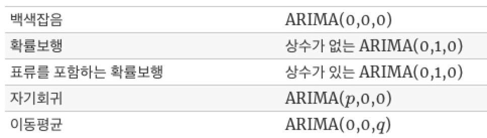</p>
<p>참고로 ARIMA에서 &quot;I&quot;가 빠지면 ARMA(p,q)과정인데 이는 차분만 안했을 뿐 AR 과 MA 과정이 합쳐진 모형입니다.</p>
<hr />
<h2 id="실전-시계열-자료-생성하기"><a class="markdownIt-Anchor" href="#실전-시계열-자료-생성하기"></a> 실전! 시계열 자료 생성하기</h2>
<p>이전 포스팅에서는 실제 주식 자료로 정상성을 파악했다면, 이번에는 AR, MA, ARIMA 모형을 따르는 자료를 생성해서 어떻게 생겼는지 확인하고자 합니다.</p>
<p>파이썬에서 시계열 분석과 관련한 패키지는 <code>statsmodels</code> 의 <code>tsa</code> <sup>time series analysis의 약자</sup>입니다. (<a target="_blank" rel="noopener" href="https://www.statsmodels.org/stable/tsa.html"><code>[link]</code></a>)<br />
그리고 이 패키지에서 쓸 메서드는 <code>ArmaProcess (ar, ma)</code>입니다. 이름에서 알 수 있듯이, AR 모형, MA 모형, ARIMA 모형 모두 한 번에 ARMA꼴로 만들어서 한 함수로 처리할 수 있도록 한 것이 특징입니다.</p>
<p>아래와 같이 필요한 패키지를 불러옵니다.</p>
<figure class="highlight python"><table><tr><td class="gutter"><pre><span class="line">1</span><br><span class="line">2</span><br><span class="line">3</span><br></pre></td><td class="code"><pre><span class="line"><span class="keyword">from</span> statsmodels.tsa.arima_process <span class="keyword">import</span> ArmaProcess</span><br><span class="line"><span class="keyword">import</span> numpy <span class="keyword">as</span> np</span><br><span class="line"><span class="keyword">import</span> matplotlib.pyplot <span class="keyword">as</span> plt</span><br></pre></td></tr></table></figure>
<p><code>ArmaProcess (ar, ma)</code>에 쓰이는 ARMA (p,q) 과정은 아래와 같이 정의가 됩니다.</p>
<p class='katex-block'><span class="katex-display"><span class="katex"><span class="katex-mathml"><math xmlns="http://www.w3.org/1998/Math/MathML" display="block"><semantics><mrow><msub><mi>y</mi><mi>t</mi></msub><mo>=</mo><msub><mi>ϕ</mi><mn>1</mn></msub><msub><mi>y</mi><mrow><mi>t</mi><mo>−</mo><mn>1</mn></mrow></msub><mo>+</mo><mo>…</mo><mo>+</mo><msub><mi>ϕ</mi><mi>p</mi></msub><msub><mi>y</mi><mrow><mi>t</mi><mo>−</mo><mi>p</mi></mrow></msub><mo>+</mo><msub><mi>θ</mi><mn>1</mn></msub><msub><mi>ϵ</mi><mrow><mi>t</mi><mo>−</mo><mn>1</mn></mrow></msub><mo>+</mo><mo>…</mo><mo>+</mo><msub><mi>θ</mi><mi>q</mi></msub><msub><mi>ϵ</mi><mrow><mi>t</mi><mo>−</mo><mi>q</mi></mrow></msub><mo>+</mo><msub><mi>ϵ</mi><mi>t</mi></msub></mrow><annotation encoding="application/x-tex">y_{t}=\phi_{1}y_{t-1}+\ldots+\phi_{p}y_{t-p}+\theta_{1}\epsilon_{t-1}
       +\ldots+\theta_{q}\epsilon_{t-q}+\epsilon_{t}
</annotation></semantics></math></span><span class="katex-html" aria-hidden="true"><span class="base"><span class="strut" style="height:0.625em;vertical-align:-0.19444em;"></span><span class="mord"><span class="mord mathnormal" style="margin-right:0.03588em;">y</span><span class="msupsub"><span class="vlist-t vlist-t2"><span class="vlist-r"><span class="vlist" style="height:0.2805559999999999em;"><span style="top:-2.5500000000000003em;margin-left:-0.03588em;margin-right:0.05em;"><span class="pstrut" style="height:2.7em;"></span><span class="sizing reset-size6 size3 mtight"><span class="mord mtight"><span class="mord mathnormal mtight">t</span></span></span></span></span><span class="vlist-s">​</span></span><span class="vlist-r"><span class="vlist" style="height:0.15em;"><span></span></span></span></span></span></span><span class="mspace" style="margin-right:0.2777777777777778em;"></span><span class="mrel">=</span><span class="mspace" style="margin-right:0.2777777777777778em;"></span></span><span class="base"><span class="strut" style="height:0.902771em;vertical-align:-0.208331em;"></span><span class="mord"><span class="mord mathnormal">ϕ</span><span class="msupsub"><span class="vlist-t vlist-t2"><span class="vlist-r"><span class="vlist" style="height:0.30110799999999993em;"><span style="top:-2.5500000000000003em;margin-left:0em;margin-right:0.05em;"><span class="pstrut" style="height:2.7em;"></span><span class="sizing reset-size6 size3 mtight"><span class="mord mtight"><span class="mord mtight">1</span></span></span></span></span><span class="vlist-s">​</span></span><span class="vlist-r"><span class="vlist" style="height:0.15em;"><span></span></span></span></span></span></span><span class="mord"><span class="mord mathnormal" style="margin-right:0.03588em;">y</span><span class="msupsub"><span class="vlist-t vlist-t2"><span class="vlist-r"><span class="vlist" style="height:0.301108em;"><span style="top:-2.5500000000000003em;margin-left:-0.03588em;margin-right:0.05em;"><span class="pstrut" style="height:2.7em;"></span><span class="sizing reset-size6 size3 mtight"><span class="mord mtight"><span class="mord mathnormal mtight">t</span><span class="mbin mtight">−</span><span class="mord mtight">1</span></span></span></span></span><span class="vlist-s">​</span></span><span class="vlist-r"><span class="vlist" style="height:0.208331em;"><span></span></span></span></span></span></span><span class="mspace" style="margin-right:0.2222222222222222em;"></span><span class="mbin">+</span><span class="mspace" style="margin-right:0.2222222222222222em;"></span></span><span class="base"><span class="strut" style="height:0.66666em;vertical-align:-0.08333em;"></span><span class="minner">…</span><span class="mspace" style="margin-right:0.2222222222222222em;"></span><span class="mbin">+</span><span class="mspace" style="margin-right:0.2222222222222222em;"></span></span><span class="base"><span class="strut" style="height:0.980548em;vertical-align:-0.286108em;"></span><span class="mord"><span class="mord mathnormal">ϕ</span><span class="msupsub"><span class="vlist-t vlist-t2"><span class="vlist-r"><span class="vlist" style="height:0.15139200000000003em;"><span style="top:-2.5500000000000003em;margin-left:0em;margin-right:0.05em;"><span class="pstrut" style="height:2.7em;"></span><span class="sizing reset-size6 size3 mtight"><span class="mord mtight"><span class="mord mathnormal mtight">p</span></span></span></span></span><span class="vlist-s">​</span></span><span class="vlist-r"><span class="vlist" style="height:0.286108em;"><span></span></span></span></span></span></span><span class="mord"><span class="mord mathnormal" style="margin-right:0.03588em;">y</span><span class="msupsub"><span class="vlist-t vlist-t2"><span class="vlist-r"><span class="vlist" style="height:0.28055599999999997em;"><span style="top:-2.5500000000000003em;margin-left:-0.03588em;margin-right:0.05em;"><span class="pstrut" style="height:2.7em;"></span><span class="sizing reset-size6 size3 mtight"><span class="mord mtight"><span class="mord mathnormal mtight">t</span><span class="mbin mtight">−</span><span class="mord mathnormal mtight">p</span></span></span></span></span><span class="vlist-s">​</span></span><span class="vlist-r"><span class="vlist" style="height:0.286108em;"><span></span></span></span></span></span></span><span class="mspace" style="margin-right:0.2222222222222222em;"></span><span class="mbin">+</span><span class="mspace" style="margin-right:0.2222222222222222em;"></span></span><span class="base"><span class="strut" style="height:0.902771em;vertical-align:-0.208331em;"></span><span class="mord"><span class="mord mathnormal" style="margin-right:0.02778em;">θ</span><span class="msupsub"><span class="vlist-t vlist-t2"><span class="vlist-r"><span class="vlist" style="height:0.30110799999999993em;"><span style="top:-2.5500000000000003em;margin-left:-0.02778em;margin-right:0.05em;"><span class="pstrut" style="height:2.7em;"></span><span class="sizing reset-size6 size3 mtight"><span class="mord mtight"><span class="mord mtight">1</span></span></span></span></span><span class="vlist-s">​</span></span><span class="vlist-r"><span class="vlist" style="height:0.15em;"><span></span></span></span></span></span></span><span class="mord"><span class="mord mathnormal">ϵ</span><span class="msupsub"><span class="vlist-t vlist-t2"><span class="vlist-r"><span class="vlist" style="height:0.301108em;"><span style="top:-2.5500000000000003em;margin-left:0em;margin-right:0.05em;"><span class="pstrut" style="height:2.7em;"></span><span class="sizing reset-size6 size3 mtight"><span class="mord mtight"><span class="mord mathnormal mtight">t</span><span class="mbin mtight">−</span><span class="mord mtight">1</span></span></span></span></span><span class="vlist-s">​</span></span><span class="vlist-r"><span class="vlist" style="height:0.208331em;"><span></span></span></span></span></span></span><span class="mspace" style="margin-right:0.2222222222222222em;"></span><span class="mbin">+</span><span class="mspace" style="margin-right:0.2222222222222222em;"></span></span><span class="base"><span class="strut" style="height:0.66666em;vertical-align:-0.08333em;"></span><span class="minner">…</span><span class="mspace" style="margin-right:0.2222222222222222em;"></span><span class="mbin">+</span><span class="mspace" style="margin-right:0.2222222222222222em;"></span></span><span class="base"><span class="strut" style="height:0.980548em;vertical-align:-0.286108em;"></span><span class="mord"><span class="mord mathnormal" style="margin-right:0.02778em;">θ</span><span class="msupsub"><span class="vlist-t vlist-t2"><span class="vlist-r"><span class="vlist" style="height:0.15139200000000003em;"><span style="top:-2.5500000000000003em;margin-left:-0.02778em;margin-right:0.05em;"><span class="pstrut" style="height:2.7em;"></span><span class="sizing reset-size6 size3 mtight"><span class="mord mtight"><span class="mord mathnormal mtight" style="margin-right:0.03588em;">q</span></span></span></span></span><span class="vlist-s">​</span></span><span class="vlist-r"><span class="vlist" style="height:0.286108em;"><span></span></span></span></span></span></span><span class="mord"><span class="mord mathnormal">ϵ</span><span class="msupsub"><span class="vlist-t vlist-t2"><span class="vlist-r"><span class="vlist" style="height:0.28055599999999997em;"><span style="top:-2.5500000000000003em;margin-left:0em;margin-right:0.05em;"><span class="pstrut" style="height:2.7em;"></span><span class="sizing reset-size6 size3 mtight"><span class="mord mtight"><span class="mord mathnormal mtight">t</span><span class="mbin mtight">−</span><span class="mord mathnormal mtight" style="margin-right:0.03588em;">q</span></span></span></span></span><span class="vlist-s">​</span></span><span class="vlist-r"><span class="vlist" style="height:0.286108em;"><span></span></span></span></span></span></span><span class="mspace" style="margin-right:0.2222222222222222em;"></span><span class="mbin">+</span><span class="mspace" style="margin-right:0.2222222222222222em;"></span></span><span class="base"><span class="strut" style="height:0.58056em;vertical-align:-0.15em;"></span><span class="mord"><span class="mord mathnormal">ϵ</span><span class="msupsub"><span class="vlist-t vlist-t2"><span class="vlist-r"><span class="vlist" style="height:0.2805559999999999em;"><span style="top:-2.5500000000000003em;margin-left:0em;margin-right:0.05em;"><span class="pstrut" style="height:2.7em;"></span><span class="sizing reset-size6 size3 mtight"><span class="mord mtight"><span class="mord mathnormal mtight">t</span></span></span></span></span><span class="vlist-s">​</span></span><span class="vlist-r"><span class="vlist" style="height:0.15em;"><span></span></span></span></span></span></span></span></span></span></span></p>
<p>ARIMA에서 차분만 안했지, <span class="katex"><span class="katex-mathml"><math xmlns="http://www.w3.org/1998/Math/MathML"><semantics><mrow><mi>p</mi></mrow><annotation encoding="application/x-tex">p</annotation></semantics></math></span><span class="katex-html" aria-hidden="true"><span class="base"><span class="strut" style="height:0.625em;vertical-align:-0.19444em;"></span><span class="mord mathnormal">p</span></span></span></span>차까지의 AR 계수가 있고, <span class="katex"><span class="katex-mathml"><math xmlns="http://www.w3.org/1998/Math/MathML"><semantics><mrow><mi>q</mi></mrow><annotation encoding="application/x-tex">q</annotation></semantics></math></span><span class="katex-html" aria-hidden="true"><span class="base"><span class="strut" style="height:0.625em;vertical-align:-0.19444em;"></span><span class="mord mathnormal" style="margin-right:0.03588em;">q</span></span></span></span>차까지 MA 계수가 있는 꼴입니다.<br />
<code>ArmaProcess (ar, ma)</code>를 사용하려면 ARMA (p,q) 모형을 <strong>시차 - 차수 표현</strong> (lag-polynomial representation)으로 나타낸 꼴을 이해해야 하는데요.<br />
말은 어렵지만, 후방 이동 연산자 <span class="katex"><span class="katex-mathml"><math xmlns="http://www.w3.org/1998/Math/MathML"><semantics><mrow><mi>L</mi></mrow><annotation encoding="application/x-tex">L</annotation></semantics></math></span><span class="katex-html" aria-hidden="true"><span class="base"><span class="strut" style="height:0.68333em;vertical-align:0em;"></span><span class="mord mathnormal">L</span></span></span></span>를 이용해서 식을 정리하는 것을 의미합니다.</p>
<p><span class="katex"><span class="katex-mathml"><math xmlns="http://www.w3.org/1998/Math/MathML"><semantics><mrow><mi>L</mi></mrow><annotation encoding="application/x-tex">L</annotation></semantics></math></span><span class="katex-html" aria-hidden="true"><span class="base"><span class="strut" style="height:0.68333em;vertical-align:0em;"></span><span class="mord mathnormal">L</span></span></span></span>을 후방 이동 (backshift) 연산자라 할 때, 아래와 같이 정의됩니다.</p>
<p class='katex-block'><span class="katex-display"><span class="katex"><span class="katex-mathml"><math xmlns="http://www.w3.org/1998/Math/MathML" display="block"><semantics><mtable rowspacing="0.24999999999999992em" columnalign="right left" columnspacing="0em"><mtr><mtd><mstyle scriptlevel="0" displaystyle="true"><mrow><mi>L</mi><msub><mi>y</mi><mi>t</mi></msub></mrow></mstyle></mtd><mtd><mstyle scriptlevel="0" displaystyle="true"><mrow><mrow></mrow><mo>=</mo><msub><mi>y</mi><mrow><mi>t</mi><mo>−</mo><mn>1</mn></mrow></msub></mrow></mstyle></mtd></mtr><mtr><mtd><mstyle scriptlevel="0" displaystyle="true"><mrow><msup><mi>L</mi><mn>2</mn></msup><msub><mi>y</mi><mi>t</mi></msub></mrow></mstyle></mtd><mtd><mstyle scriptlevel="0" displaystyle="true"><mrow><mrow></mrow><mo>=</mo><msub><mi>y</mi><mrow><mi>t</mi><mo>−</mo><mn>2</mn></mrow></msub></mrow></mstyle></mtd></mtr><mtr><mtd><mstyle scriptlevel="0" displaystyle="true"><mi><mi mathvariant="normal">⋮</mi><mpadded height="+0em" voffset="0em"><mspace mathbackground="black" width="0em" height="1.5em"></mspace></mpadded></mi></mstyle></mtd></mtr></mtable><annotation encoding="application/x-tex">\begin{aligned}
L y_t &amp;= y_{t-1}\\
L^2 y_t &amp;= y_{t-2}\\
\vdots
\end{aligned}
</annotation></semantics></math></span><span class="katex-html" aria-hidden="true"><span class="base"><span class="strut" style="height:5.184108em;vertical-align:-2.342054em;"></span><span class="mord"><span class="mtable"><span class="col-align-r"><span class="vlist-t vlist-t2"><span class="vlist-r"><span class="vlist" style="height:2.842054em;"><span style="top:-5.689554em;"><span class="pstrut" style="height:3.6875em;"></span><span class="mord"><span class="mord mathnormal">L</span><span class="mord"><span class="mord mathnormal" style="margin-right:0.03588em;">y</span><span class="msupsub"><span class="vlist-t vlist-t2"><span class="vlist-r"><span class="vlist" style="height:0.2805559999999999em;"><span style="top:-2.5500000000000003em;margin-left:-0.03588em;margin-right:0.05em;"><span class="pstrut" style="height:2.7em;"></span><span class="sizing reset-size6 size3 mtight"><span class="mord mathnormal mtight">t</span></span></span></span><span class="vlist-s">​</span></span><span class="vlist-r"><span class="vlist" style="height:0.15em;"><span></span></span></span></span></span></span></span></span><span style="top:-4.165446em;"><span class="pstrut" style="height:3.6875em;"></span><span class="mord"><span class="mord"><span class="mord mathnormal">L</span><span class="msupsub"><span class="vlist-t"><span class="vlist-r"><span class="vlist" style="height:0.8641079999999999em;"><span style="top:-3.113em;margin-right:0.05em;"><span class="pstrut" style="height:2.7em;"></span><span class="sizing reset-size6 size3 mtight"><span class="mord mtight">2</span></span></span></span></span></span></span></span><span class="mord"><span class="mord mathnormal" style="margin-right:0.03588em;">y</span><span class="msupsub"><span class="vlist-t vlist-t2"><span class="vlist-r"><span class="vlist" style="height:0.2805559999999999em;"><span style="top:-2.5500000000000003em;margin-left:-0.03588em;margin-right:0.05em;"><span class="pstrut" style="height:2.7em;"></span><span class="sizing reset-size6 size3 mtight"><span class="mord mathnormal mtight">t</span></span></span></span><span class="vlist-s">​</span></span><span class="vlist-r"><span class="vlist" style="height:0.15em;"><span></span></span></span></span></span></span></span></span><span style="top:-2.005446em;"><span class="pstrut" style="height:3.6875em;"></span><span class="mord"><span class="mord"><span class="mord">⋮</span><span class="mord rule" style="border-right-width:0em;border-top-width:1.5em;bottom:0em;"></span></span></span></span></span><span class="vlist-s">​</span></span><span class="vlist-r"><span class="vlist" style="height:2.342054em;"><span></span></span></span></span></span><span class="col-align-l"><span class="vlist-t vlist-t2"><span class="vlist-r"><span class="vlist" style="height:2.842054em;"><span style="top:-5.002054em;"><span class="pstrut" style="height:3em;"></span><span class="mord"><span class="mord"></span><span class="mspace" style="margin-right:0.2777777777777778em;"></span><span class="mrel">=</span><span class="mspace" style="margin-right:0.2777777777777778em;"></span><span class="mord"><span class="mord mathnormal" style="margin-right:0.03588em;">y</span><span class="msupsub"><span class="vlist-t vlist-t2"><span class="vlist-r"><span class="vlist" style="height:0.301108em;"><span style="top:-2.5500000000000003em;margin-left:-0.03588em;margin-right:0.05em;"><span class="pstrut" style="height:2.7em;"></span><span class="sizing reset-size6 size3 mtight"><span class="mord mtight"><span class="mord mathnormal mtight">t</span><span class="mbin mtight">−</span><span class="mord mtight">1</span></span></span></span></span><span class="vlist-s">​</span></span><span class="vlist-r"><span class="vlist" style="height:0.208331em;"><span></span></span></span></span></span></span></span></span><span style="top:-3.477946em;"><span class="pstrut" style="height:3em;"></span><span class="mord"><span class="mord"></span><span class="mspace" style="margin-right:0.2777777777777778em;"></span><span class="mrel">=</span><span class="mspace" style="margin-right:0.2777777777777778em;"></span><span class="mord"><span class="mord mathnormal" style="margin-right:0.03588em;">y</span><span class="msupsub"><span class="vlist-t vlist-t2"><span class="vlist-r"><span class="vlist" style="height:0.301108em;"><span style="top:-2.5500000000000003em;margin-left:-0.03588em;margin-right:0.05em;"><span class="pstrut" style="height:2.7em;"></span><span class="sizing reset-size6 size3 mtight"><span class="mord mtight"><span class="mord mathnormal mtight">t</span><span class="mbin mtight">−</span><span class="mord mtight">2</span></span></span></span></span><span class="vlist-s">​</span></span><span class="vlist-r"><span class="vlist" style="height:0.208331em;"><span></span></span></span></span></span></span></span></span></span><span class="vlist-s">​</span></span><span class="vlist-r"><span class="vlist" style="height:0.18205399999999994em;"><span></span></span></span></span></span></span></span></span></span></span></span></p>
<p>즉, 후방 이동 연산자는 시차만큼 <span class="katex"><span class="katex-mathml"><math xmlns="http://www.w3.org/1998/Math/MathML"><semantics><mrow><mi>t</mi></mrow><annotation encoding="application/x-tex">t</annotation></semantics></math></span><span class="katex-html" aria-hidden="true"><span class="base"><span class="strut" style="height:0.61508em;vertical-align:0em;"></span><span class="mord mathnormal">t</span></span></span></span>시점의 값에 후방 이동 연산자를 곱해줘 시계열 값을 표현하는 방식입니다.</p>
<p>그럼 ARMA (p,q) 과정을 <span class="katex"><span class="katex-mathml"><math xmlns="http://www.w3.org/1998/Math/MathML"><semantics><mrow><mi>L</mi></mrow><annotation encoding="application/x-tex">L</annotation></semantics></math></span><span class="katex-html" aria-hidden="true"><span class="base"><span class="strut" style="height:0.68333em;vertical-align:0em;"></span><span class="mord mathnormal">L</span></span></span></span>을 이용해 <span class="katex"><span class="katex-mathml"><math xmlns="http://www.w3.org/1998/Math/MathML"><semantics><mrow><mi>A</mi><mo>⋅</mo><msub><mi>y</mi><mi>t</mi></msub><mo>=</mo><mi>B</mi><mo>⋅</mo><msub><mi>ϵ</mi><mi>t</mi></msub></mrow><annotation encoding="application/x-tex">A \cdot y_t = B \cdot \epsilon_t</annotation></semantics></math></span><span class="katex-html" aria-hidden="true"><span class="base"><span class="strut" style="height:0.68333em;vertical-align:0em;"></span><span class="mord mathnormal">A</span><span class="mspace" style="margin-right:0.2222222222222222em;"></span><span class="mbin">⋅</span><span class="mspace" style="margin-right:0.2222222222222222em;"></span></span><span class="base"><span class="strut" style="height:0.625em;vertical-align:-0.19444em;"></span><span class="mord"><span class="mord mathnormal" style="margin-right:0.03588em;">y</span><span class="msupsub"><span class="vlist-t vlist-t2"><span class="vlist-r"><span class="vlist" style="height:0.2805559999999999em;"><span style="top:-2.5500000000000003em;margin-left:-0.03588em;margin-right:0.05em;"><span class="pstrut" style="height:2.7em;"></span><span class="sizing reset-size6 size3 mtight"><span class="mord mathnormal mtight">t</span></span></span></span><span class="vlist-s">​</span></span><span class="vlist-r"><span class="vlist" style="height:0.15em;"><span></span></span></span></span></span></span><span class="mspace" style="margin-right:0.2777777777777778em;"></span><span class="mrel">=</span><span class="mspace" style="margin-right:0.2777777777777778em;"></span></span><span class="base"><span class="strut" style="height:0.68333em;vertical-align:0em;"></span><span class="mord mathnormal" style="margin-right:0.05017em;">B</span><span class="mspace" style="margin-right:0.2222222222222222em;"></span><span class="mbin">⋅</span><span class="mspace" style="margin-right:0.2222222222222222em;"></span></span><span class="base"><span class="strut" style="height:0.58056em;vertical-align:-0.15em;"></span><span class="mord"><span class="mord mathnormal">ϵ</span><span class="msupsub"><span class="vlist-t vlist-t2"><span class="vlist-r"><span class="vlist" style="height:0.2805559999999999em;"><span style="top:-2.5500000000000003em;margin-left:0em;margin-right:0.05em;"><span class="pstrut" style="height:2.7em;"></span><span class="sizing reset-size6 size3 mtight"><span class="mord mathnormal mtight">t</span></span></span></span><span class="vlist-s">​</span></span><span class="vlist-r"><span class="vlist" style="height:0.15em;"><span></span></span></span></span></span></span></span></span></span>의 형태로 정리해보겠습니다.</p>
<p class='katex-block'><span class="katex-display"><span class="katex"><span class="katex-mathml"><math xmlns="http://www.w3.org/1998/Math/MathML" display="block"><semantics><mtable rowspacing="0.24999999999999992em" columnalign="right left" columnspacing="0em"><mtr><mtd><mstyle scriptlevel="0" displaystyle="true"><msub><mi>y</mi><mi>t</mi></msub></mstyle></mtd><mtd><mstyle scriptlevel="0" displaystyle="true"><mrow><mrow></mrow><mo>=</mo><msub><mi>ϕ</mi><mn>1</mn></msub><msub><mi>y</mi><mrow><mi>t</mi><mo>−</mo><mn>1</mn></mrow></msub><mo>+</mo><mo>⋯</mo><mo>+</mo><msub><mi>ϕ</mi><mi>p</mi></msub><msub><mi>y</mi><mrow><mi>t</mi><mo>−</mo><mi>p</mi></mrow></msub><mo>+</mo><msub><mi>θ</mi><mn>1</mn></msub><msub><mi>ϵ</mi><mrow><mi>t</mi><mo>−</mo><mn>1</mn></mrow></msub><mo>+</mo><mo>⋯</mo><mo>+</mo><msub><mi>θ</mi><mi>q</mi></msub><msub><mi>ϵ</mi><mrow><mi>t</mi><mo>−</mo><mi>q</mi></mrow></msub><mo>+</mo><msub><mi>ϵ</mi><mi>t</mi></msub></mrow></mstyle></mtd></mtr><mtr><mtd><mstyle scriptlevel="0" displaystyle="true"><mrow><msub><mi>y</mi><mi>t</mi></msub><mo>−</mo><mo stretchy="false">(</mo><msub><mi>ϕ</mi><mn>1</mn></msub><msub><mi>y</mi><mrow><mi>t</mi><mo>−</mo><mn>1</mn></mrow></msub><mo>+</mo><mo>⋯</mo><mo>+</mo><msub><mi>ϕ</mi><mi>p</mi></msub><msub><mi>y</mi><mrow><mi>t</mi><mo>−</mo><mi>p</mi></mrow></msub><mo stretchy="false">)</mo></mrow></mstyle></mtd><mtd><mstyle scriptlevel="0" displaystyle="true"><mrow><mrow></mrow><mo>=</mo><msub><mi>ϵ</mi><mi>t</mi></msub><mo>+</mo><mo stretchy="false">(</mo><msub><mi>θ</mi><mn>1</mn></msub><msub><mi>ϵ</mi><mrow><mi>t</mi><mo>−</mo><mn>1</mn></mrow></msub><mo>+</mo><mo>⋯</mo><mo>+</mo><msub><mi>θ</mi><mi>q</mi></msub><msub><mi>ϵ</mi><mrow><mi>t</mi><mo>−</mo><mi>q</mi></mrow></msub><mo stretchy="false">)</mo></mrow></mstyle></mtd></mtr><mtr><mtd><mstyle scriptlevel="0" displaystyle="true"><mrow><msub><mi>y</mi><mi>t</mi></msub><mo>−</mo><mo stretchy="false">(</mo><msub><mi>ϕ</mi><mn>1</mn></msub><mi>L</mi><msub><mi>y</mi><mi>t</mi></msub><mo>+</mo><mo>⋯</mo><msup><mi>L</mi><mi>p</mi></msup><msub><mi>ϕ</mi><mi>p</mi></msub><msub><mi>y</mi><mi>t</mi></msub><mo stretchy="false">)</mo></mrow></mstyle></mtd><mtd><mstyle scriptlevel="0" displaystyle="true"><mrow><mrow></mrow><mo>=</mo><msub><mi>ϵ</mi><mi>t</mi></msub><mo>+</mo><mo stretchy="false">(</mo><msub><mi>θ</mi><mn>1</mn></msub><mi>L</mi><msub><mi>ϵ</mi><mi>t</mi></msub><mo>+</mo><mo>⋯</mo><mo>+</mo><msub><mi>θ</mi><mi>q</mi></msub><msup><mi>L</mi><mi>q</mi></msup><msub><mi>ϵ</mi><mi>t</mi></msub><mo stretchy="false">)</mo></mrow></mstyle></mtd></mtr><mtr><mtd><mstyle scriptlevel="0" displaystyle="true"><mrow><mrow><mo fence="true">(</mo><mn>1</mn><mo>−</mo><msub><mi>ϕ</mi><mn>1</mn></msub><mi>L</mi><mo>−</mo><mo>⋯</mo><mo>−</mo><msub><mi>ϕ</mi><mi>p</mi></msub><msup><mi>L</mi><mi>p</mi></msup><mo fence="true">)</mo></mrow><msub><mi>y</mi><mi>t</mi></msub></mrow></mstyle></mtd><mtd><mstyle scriptlevel="0" displaystyle="true"><mrow><mrow></mrow><mo>=</mo><mrow><mo fence="true">(</mo><mn>1</mn><mo>+</mo><msub><mi>θ</mi><mn>1</mn></msub><mi>L</mi><mo>+</mo><mo>⋯</mo><mo>+</mo><msub><mi>θ</mi><mi>q</mi></msub><msup><mi>L</mi><mi>q</mi></msup><mo fence="true">)</mo></mrow><msub><mi>ϵ</mi><mi>t</mi></msub></mrow></mstyle></mtd></mtr></mtable><annotation encoding="application/x-tex">\begin{aligned}
y_{t}&amp;=\phi_{1}y_{t-1}+\cdots+\phi_{p}y_{t-p}+\theta_{1}\epsilon_{t-1} +\cdots+\theta_{q}\epsilon_{t-q}+\epsilon_{t} \\
y_t - (\phi_{1}y_{t-1}+\cdots+\phi_{p}y_{t-p}) &amp;= \epsilon_{t} + (\theta_{1}\epsilon_{t-1}+\cdots+\theta_{q}\epsilon_{t-q}) \\
y_t - (\phi_1 Ly_t +\cdots L^p \phi_p y_t) &amp;= \epsilon_t + (\theta_1 L\epsilon_t + \cdots + \theta_q L^q \epsilon_t)\\
\left(1-\phi_{1}L-\cdots-\phi_{p}L^{p}\right)y_{t} &amp;= \left(1+\theta_{1}L+\cdots+\theta_{q}L^{q}\right)\epsilon_{t}
\end{aligned}
</annotation></semantics></math></span><span class="katex-html" aria-hidden="true"><span class="base"><span class="strut" style="height:6em;vertical-align:-2.7500000000000004em;"></span><span class="mord"><span class="mtable"><span class="col-align-r"><span class="vlist-t vlist-t2"><span class="vlist-r"><span class="vlist" style="height:3.25em;"><span style="top:-5.41em;"><span class="pstrut" style="height:3em;"></span><span class="mord"><span class="mord"><span class="mord mathnormal" style="margin-right:0.03588em;">y</span><span class="msupsub"><span class="vlist-t vlist-t2"><span class="vlist-r"><span class="vlist" style="height:0.2805559999999999em;"><span style="top:-2.5500000000000003em;margin-left:-0.03588em;margin-right:0.05em;"><span class="pstrut" style="height:2.7em;"></span><span class="sizing reset-size6 size3 mtight"><span class="mord mtight"><span class="mord mathnormal mtight">t</span></span></span></span></span><span class="vlist-s">​</span></span><span class="vlist-r"><span class="vlist" style="height:0.15em;"><span></span></span></span></span></span></span></span></span><span style="top:-3.91em;"><span class="pstrut" style="height:3em;"></span><span class="mord"><span class="mord"><span class="mord mathnormal" style="margin-right:0.03588em;">y</span><span class="msupsub"><span class="vlist-t vlist-t2"><span class="vlist-r"><span class="vlist" style="height:0.2805559999999999em;"><span style="top:-2.5500000000000003em;margin-left:-0.03588em;margin-right:0.05em;"><span class="pstrut" style="height:2.7em;"></span><span class="sizing reset-size6 size3 mtight"><span class="mord mathnormal mtight">t</span></span></span></span><span class="vlist-s">​</span></span><span class="vlist-r"><span class="vlist" style="height:0.15em;"><span></span></span></span></span></span></span><span class="mspace" style="margin-right:0.2222222222222222em;"></span><span class="mbin">−</span><span class="mspace" style="margin-right:0.2222222222222222em;"></span><span class="mopen">(</span><span class="mord"><span class="mord mathnormal">ϕ</span><span class="msupsub"><span class="vlist-t vlist-t2"><span class="vlist-r"><span class="vlist" style="height:0.30110799999999993em;"><span style="top:-2.5500000000000003em;margin-left:0em;margin-right:0.05em;"><span class="pstrut" style="height:2.7em;"></span><span class="sizing reset-size6 size3 mtight"><span class="mord mtight"><span class="mord mtight">1</span></span></span></span></span><span class="vlist-s">​</span></span><span class="vlist-r"><span class="vlist" style="height:0.15em;"><span></span></span></span></span></span></span><span class="mord"><span class="mord mathnormal" style="margin-right:0.03588em;">y</span><span class="msupsub"><span class="vlist-t vlist-t2"><span class="vlist-r"><span class="vlist" style="height:0.301108em;"><span style="top:-2.5500000000000003em;margin-left:-0.03588em;margin-right:0.05em;"><span class="pstrut" style="height:2.7em;"></span><span class="sizing reset-size6 size3 mtight"><span class="mord mtight"><span class="mord mathnormal mtight">t</span><span class="mbin mtight">−</span><span class="mord mtight">1</span></span></span></span></span><span class="vlist-s">​</span></span><span class="vlist-r"><span class="vlist" style="height:0.208331em;"><span></span></span></span></span></span></span><span class="mspace" style="margin-right:0.2222222222222222em;"></span><span class="mbin">+</span><span class="mspace" style="margin-right:0.2222222222222222em;"></span><span class="minner">⋯</span><span class="mspace" style="margin-right:0.2222222222222222em;"></span><span class="mbin">+</span><span class="mspace" style="margin-right:0.2222222222222222em;"></span><span class="mord"><span class="mord mathnormal">ϕ</span><span class="msupsub"><span class="vlist-t vlist-t2"><span class="vlist-r"><span class="vlist" style="height:0.15139200000000003em;"><span style="top:-2.5500000000000003em;margin-left:0em;margin-right:0.05em;"><span class="pstrut" style="height:2.7em;"></span><span class="sizing reset-size6 size3 mtight"><span class="mord mtight"><span class="mord mathnormal mtight">p</span></span></span></span></span><span class="vlist-s">​</span></span><span class="vlist-r"><span class="vlist" style="height:0.286108em;"><span></span></span></span></span></span></span><span class="mord"><span class="mord mathnormal" style="margin-right:0.03588em;">y</span><span class="msupsub"><span class="vlist-t vlist-t2"><span class="vlist-r"><span class="vlist" style="height:0.28055599999999997em;"><span style="top:-2.5500000000000003em;margin-left:-0.03588em;margin-right:0.05em;"><span class="pstrut" style="height:2.7em;"></span><span class="sizing reset-size6 size3 mtight"><span class="mord mtight"><span class="mord mathnormal mtight">t</span><span class="mbin mtight">−</span><span class="mord mathnormal mtight">p</span></span></span></span></span><span class="vlist-s">​</span></span><span class="vlist-r"><span class="vlist" style="height:0.286108em;"><span></span></span></span></span></span></span><span class="mclose">)</span></span></span><span style="top:-2.4099999999999993em;"><span class="pstrut" style="height:3em;"></span><span class="mord"><span class="mord"><span class="mord mathnormal" style="margin-right:0.03588em;">y</span><span class="msupsub"><span class="vlist-t vlist-t2"><span class="vlist-r"><span class="vlist" style="height:0.2805559999999999em;"><span style="top:-2.5500000000000003em;margin-left:-0.03588em;margin-right:0.05em;"><span class="pstrut" style="height:2.7em;"></span><span class="sizing reset-size6 size3 mtight"><span class="mord mathnormal mtight">t</span></span></span></span><span class="vlist-s">​</span></span><span class="vlist-r"><span class="vlist" style="height:0.15em;"><span></span></span></span></span></span></span><span class="mspace" style="margin-right:0.2222222222222222em;"></span><span class="mbin">−</span><span class="mspace" style="margin-right:0.2222222222222222em;"></span><span class="mopen">(</span><span class="mord"><span class="mord mathnormal">ϕ</span><span class="msupsub"><span class="vlist-t vlist-t2"><span class="vlist-r"><span class="vlist" style="height:0.30110799999999993em;"><span style="top:-2.5500000000000003em;margin-left:0em;margin-right:0.05em;"><span class="pstrut" style="height:2.7em;"></span><span class="sizing reset-size6 size3 mtight"><span class="mord mtight">1</span></span></span></span><span class="vlist-s">​</span></span><span class="vlist-r"><span class="vlist" style="height:0.15em;"><span></span></span></span></span></span></span><span class="mord mathnormal">L</span><span class="mord"><span class="mord mathnormal" style="margin-right:0.03588em;">y</span><span class="msupsub"><span class="vlist-t vlist-t2"><span class="vlist-r"><span class="vlist" style="height:0.2805559999999999em;"><span style="top:-2.5500000000000003em;margin-left:-0.03588em;margin-right:0.05em;"><span class="pstrut" style="height:2.7em;"></span><span class="sizing reset-size6 size3 mtight"><span class="mord mathnormal mtight">t</span></span></span></span><span class="vlist-s">​</span></span><span class="vlist-r"><span class="vlist" style="height:0.15em;"><span></span></span></span></span></span></span><span class="mspace" style="margin-right:0.2222222222222222em;"></span><span class="mbin">+</span><span class="mspace" style="margin-right:0.2222222222222222em;"></span><span class="minner">⋯</span><span class="mspace" style="margin-right:0.16666666666666666em;"></span><span class="mord"><span class="mord mathnormal">L</span><span class="msupsub"><span class="vlist-t"><span class="vlist-r"><span class="vlist" style="height:0.714392em;"><span style="top:-3.1130000000000004em;margin-right:0.05em;"><span class="pstrut" style="height:2.7em;"></span><span class="sizing reset-size6 size3 mtight"><span class="mord mathnormal mtight">p</span></span></span></span></span></span></span></span><span class="mord"><span class="mord mathnormal">ϕ</span><span class="msupsub"><span class="vlist-t vlist-t2"><span class="vlist-r"><span class="vlist" style="height:0.15139200000000003em;"><span style="top:-2.5500000000000003em;margin-left:0em;margin-right:0.05em;"><span class="pstrut" style="height:2.7em;"></span><span class="sizing reset-size6 size3 mtight"><span class="mord mathnormal mtight">p</span></span></span></span><span class="vlist-s">​</span></span><span class="vlist-r"><span class="vlist" style="height:0.286108em;"><span></span></span></span></span></span></span><span class="mord"><span class="mord mathnormal" style="margin-right:0.03588em;">y</span><span class="msupsub"><span class="vlist-t vlist-t2"><span class="vlist-r"><span class="vlist" style="height:0.2805559999999999em;"><span style="top:-2.5500000000000003em;margin-left:-0.03588em;margin-right:0.05em;"><span class="pstrut" style="height:2.7em;"></span><span class="sizing reset-size6 size3 mtight"><span class="mord mathnormal mtight">t</span></span></span></span><span class="vlist-s">​</span></span><span class="vlist-r"><span class="vlist" style="height:0.15em;"><span></span></span></span></span></span></span><span class="mclose">)</span></span></span><span style="top:-0.9099999999999997em;"><span class="pstrut" style="height:3em;"></span><span class="mord"><span class="minner"><span class="mopen delimcenter" style="top:0em;">(</span><span class="mord">1</span><span class="mspace" style="margin-right:0.2222222222222222em;"></span><span class="mbin">−</span><span class="mspace" style="margin-right:0.2222222222222222em;"></span><span class="mord"><span class="mord mathnormal">ϕ</span><span class="msupsub"><span class="vlist-t vlist-t2"><span class="vlist-r"><span class="vlist" style="height:0.30110799999999993em;"><span style="top:-2.5500000000000003em;margin-left:0em;margin-right:0.05em;"><span class="pstrut" style="height:2.7em;"></span><span class="sizing reset-size6 size3 mtight"><span class="mord mtight"><span class="mord mtight">1</span></span></span></span></span><span class="vlist-s">​</span></span><span class="vlist-r"><span class="vlist" style="height:0.15em;"><span></span></span></span></span></span></span><span class="mord mathnormal">L</span><span class="mspace" style="margin-right:0.2222222222222222em;"></span><span class="mbin">−</span><span class="mspace" style="margin-right:0.2222222222222222em;"></span><span class="minner">⋯</span><span class="mspace" style="margin-right:0.2222222222222222em;"></span><span class="mbin">−</span><span class="mspace" style="margin-right:0.2222222222222222em;"></span><span class="mord"><span class="mord mathnormal">ϕ</span><span class="msupsub"><span class="vlist-t vlist-t2"><span class="vlist-r"><span class="vlist" style="height:0.15139200000000003em;"><span style="top:-2.5500000000000003em;margin-left:0em;margin-right:0.05em;"><span class="pstrut" style="height:2.7em;"></span><span class="sizing reset-size6 size3 mtight"><span class="mord mtight"><span class="mord mathnormal mtight">p</span></span></span></span></span><span class="vlist-s">​</span></span><span class="vlist-r"><span class="vlist" style="height:0.286108em;"><span></span></span></span></span></span></span><span class="mord"><span class="mord mathnormal">L</span><span class="msupsub"><span class="vlist-t"><span class="vlist-r"><span class="vlist" style="height:0.714392em;"><span style="top:-3.1130000000000004em;margin-right:0.05em;"><span class="pstrut" style="height:2.7em;"></span><span class="sizing reset-size6 size3 mtight"><span class="mord mtight"><span class="mord mathnormal mtight">p</span></span></span></span></span></span></span></span></span><span class="mclose delimcenter" style="top:0em;">)</span></span><span class="mspace" style="margin-right:0.16666666666666666em;"></span><span class="mord"><span class="mord mathnormal" style="margin-right:0.03588em;">y</span><span class="msupsub"><span class="vlist-t vlist-t2"><span class="vlist-r"><span class="vlist" style="height:0.2805559999999999em;"><span style="top:-2.5500000000000003em;margin-left:-0.03588em;margin-right:0.05em;"><span class="pstrut" style="height:2.7em;"></span><span class="sizing reset-size6 size3 mtight"><span class="mord mtight"><span class="mord mathnormal mtight">t</span></span></span></span></span><span class="vlist-s">​</span></span><span class="vlist-r"><span class="vlist" style="height:0.15em;"><span></span></span></span></span></span></span></span></span></span><span class="vlist-s">​</span></span><span class="vlist-r"><span class="vlist" style="height:2.7500000000000004em;"><span></span></span></span></span></span><span class="col-align-l"><span class="vlist-t vlist-t2"><span class="vlist-r"><span class="vlist" style="height:3.25em;"><span style="top:-5.41em;"><span class="pstrut" style="height:3em;"></span><span class="mord"><span class="mord"></span><span class="mspace" style="margin-right:0.2777777777777778em;"></span><span class="mrel">=</span><span class="mspace" style="margin-right:0.2777777777777778em;"></span><span class="mord"><span class="mord mathnormal">ϕ</span><span class="msupsub"><span class="vlist-t vlist-t2"><span class="vlist-r"><span class="vlist" style="height:0.30110799999999993em;"><span style="top:-2.5500000000000003em;margin-left:0em;margin-right:0.05em;"><span class="pstrut" style="height:2.7em;"></span><span class="sizing reset-size6 size3 mtight"><span class="mord mtight"><span class="mord mtight">1</span></span></span></span></span><span class="vlist-s">​</span></span><span class="vlist-r"><span class="vlist" style="height:0.15em;"><span></span></span></span></span></span></span><span class="mord"><span class="mord mathnormal" style="margin-right:0.03588em;">y</span><span class="msupsub"><span class="vlist-t vlist-t2"><span class="vlist-r"><span class="vlist" style="height:0.301108em;"><span style="top:-2.5500000000000003em;margin-left:-0.03588em;margin-right:0.05em;"><span class="pstrut" style="height:2.7em;"></span><span class="sizing reset-size6 size3 mtight"><span class="mord mtight"><span class="mord mathnormal mtight">t</span><span class="mbin mtight">−</span><span class="mord mtight">1</span></span></span></span></span><span class="vlist-s">​</span></span><span class="vlist-r"><span class="vlist" style="height:0.208331em;"><span></span></span></span></span></span></span><span class="mspace" style="margin-right:0.2222222222222222em;"></span><span class="mbin">+</span><span class="mspace" style="margin-right:0.2222222222222222em;"></span><span class="minner">⋯</span><span class="mspace" style="margin-right:0.2222222222222222em;"></span><span class="mbin">+</span><span class="mspace" style="margin-right:0.2222222222222222em;"></span><span class="mord"><span class="mord mathnormal">ϕ</span><span class="msupsub"><span class="vlist-t vlist-t2"><span class="vlist-r"><span class="vlist" style="height:0.15139200000000003em;"><span style="top:-2.5500000000000003em;margin-left:0em;margin-right:0.05em;"><span class="pstrut" style="height:2.7em;"></span><span class="sizing reset-size6 size3 mtight"><span class="mord mtight"><span class="mord mathnormal mtight">p</span></span></span></span></span><span class="vlist-s">​</span></span><span class="vlist-r"><span class="vlist" style="height:0.286108em;"><span></span></span></span></span></span></span><span class="mord"><span class="mord mathnormal" style="margin-right:0.03588em;">y</span><span class="msupsub"><span class="vlist-t vlist-t2"><span class="vlist-r"><span class="vlist" style="height:0.28055599999999997em;"><span style="top:-2.5500000000000003em;margin-left:-0.03588em;margin-right:0.05em;"><span class="pstrut" style="height:2.7em;"></span><span class="sizing reset-size6 size3 mtight"><span class="mord mtight"><span class="mord mathnormal mtight">t</span><span class="mbin mtight">−</span><span class="mord mathnormal mtight">p</span></span></span></span></span><span class="vlist-s">​</span></span><span class="vlist-r"><span class="vlist" style="height:0.286108em;"><span></span></span></span></span></span></span><span class="mspace" style="margin-right:0.2222222222222222em;"></span><span class="mbin">+</span><span class="mspace" style="margin-right:0.2222222222222222em;"></span><span class="mord"><span class="mord mathnormal" style="margin-right:0.02778em;">θ</span><span class="msupsub"><span class="vlist-t vlist-t2"><span class="vlist-r"><span class="vlist" style="height:0.30110799999999993em;"><span style="top:-2.5500000000000003em;margin-left:-0.02778em;margin-right:0.05em;"><span class="pstrut" style="height:2.7em;"></span><span class="sizing reset-size6 size3 mtight"><span class="mord mtight"><span class="mord mtight">1</span></span></span></span></span><span class="vlist-s">​</span></span><span class="vlist-r"><span class="vlist" style="height:0.15em;"><span></span></span></span></span></span></span><span class="mord"><span class="mord mathnormal">ϵ</span><span class="msupsub"><span class="vlist-t vlist-t2"><span class="vlist-r"><span class="vlist" style="height:0.301108em;"><span style="top:-2.5500000000000003em;margin-left:0em;margin-right:0.05em;"><span class="pstrut" style="height:2.7em;"></span><span class="sizing reset-size6 size3 mtight"><span class="mord mtight"><span class="mord mathnormal mtight">t</span><span class="mbin mtight">−</span><span class="mord mtight">1</span></span></span></span></span><span class="vlist-s">​</span></span><span class="vlist-r"><span class="vlist" style="height:0.208331em;"><span></span></span></span></span></span></span><span class="mspace" style="margin-right:0.2222222222222222em;"></span><span class="mbin">+</span><span class="mspace" style="margin-right:0.2222222222222222em;"></span><span class="minner">⋯</span><span class="mspace" style="margin-right:0.2222222222222222em;"></span><span class="mbin">+</span><span class="mspace" style="margin-right:0.2222222222222222em;"></span><span class="mord"><span class="mord mathnormal" style="margin-right:0.02778em;">θ</span><span class="msupsub"><span class="vlist-t vlist-t2"><span class="vlist-r"><span class="vlist" style="height:0.15139200000000003em;"><span style="top:-2.5500000000000003em;margin-left:-0.02778em;margin-right:0.05em;"><span class="pstrut" style="height:2.7em;"></span><span class="sizing reset-size6 size3 mtight"><span class="mord mtight"><span class="mord mathnormal mtight" style="margin-right:0.03588em;">q</span></span></span></span></span><span class="vlist-s">​</span></span><span class="vlist-r"><span class="vlist" style="height:0.286108em;"><span></span></span></span></span></span></span><span class="mord"><span class="mord mathnormal">ϵ</span><span class="msupsub"><span class="vlist-t vlist-t2"><span class="vlist-r"><span class="vlist" style="height:0.28055599999999997em;"><span style="top:-2.5500000000000003em;margin-left:0em;margin-right:0.05em;"><span class="pstrut" style="height:2.7em;"></span><span class="sizing reset-size6 size3 mtight"><span class="mord mtight"><span class="mord mathnormal mtight">t</span><span class="mbin mtight">−</span><span class="mord mathnormal mtight" style="margin-right:0.03588em;">q</span></span></span></span></span><span class="vlist-s">​</span></span><span class="vlist-r"><span class="vlist" style="height:0.286108em;"><span></span></span></span></span></span></span><span class="mspace" style="margin-right:0.2222222222222222em;"></span><span class="mbin">+</span><span class="mspace" style="margin-right:0.2222222222222222em;"></span><span class="mord"><span class="mord mathnormal">ϵ</span><span class="msupsub"><span class="vlist-t vlist-t2"><span class="vlist-r"><span class="vlist" style="height:0.2805559999999999em;"><span style="top:-2.5500000000000003em;margin-left:0em;margin-right:0.05em;"><span class="pstrut" style="height:2.7em;"></span><span class="sizing reset-size6 size3 mtight"><span class="mord mtight"><span class="mord mathnormal mtight">t</span></span></span></span></span><span class="vlist-s">​</span></span><span class="vlist-r"><span class="vlist" style="height:0.15em;"><span></span></span></span></span></span></span></span></span><span style="top:-3.91em;"><span class="pstrut" style="height:3em;"></span><span class="mord"><span class="mord"></span><span class="mspace" style="margin-right:0.2777777777777778em;"></span><span class="mrel">=</span><span class="mspace" style="margin-right:0.2777777777777778em;"></span><span class="mord"><span class="mord mathnormal">ϵ</span><span class="msupsub"><span class="vlist-t vlist-t2"><span class="vlist-r"><span class="vlist" style="height:0.2805559999999999em;"><span style="top:-2.5500000000000003em;margin-left:0em;margin-right:0.05em;"><span class="pstrut" style="height:2.7em;"></span><span class="sizing reset-size6 size3 mtight"><span class="mord mtight"><span class="mord mathnormal mtight">t</span></span></span></span></span><span class="vlist-s">​</span></span><span class="vlist-r"><span class="vlist" style="height:0.15em;"><span></span></span></span></span></span></span><span class="mspace" style="margin-right:0.2222222222222222em;"></span><span class="mbin">+</span><span class="mspace" style="margin-right:0.2222222222222222em;"></span><span class="mopen">(</span><span class="mord"><span class="mord mathnormal" style="margin-right:0.02778em;">θ</span><span class="msupsub"><span class="vlist-t vlist-t2"><span class="vlist-r"><span class="vlist" style="height:0.30110799999999993em;"><span style="top:-2.5500000000000003em;margin-left:-0.02778em;margin-right:0.05em;"><span class="pstrut" style="height:2.7em;"></span><span class="sizing reset-size6 size3 mtight"><span class="mord mtight"><span class="mord mtight">1</span></span></span></span></span><span class="vlist-s">​</span></span><span class="vlist-r"><span class="vlist" style="height:0.15em;"><span></span></span></span></span></span></span><span class="mord"><span class="mord mathnormal">ϵ</span><span class="msupsub"><span class="vlist-t vlist-t2"><span class="vlist-r"><span class="vlist" style="height:0.301108em;"><span style="top:-2.5500000000000003em;margin-left:0em;margin-right:0.05em;"><span class="pstrut" style="height:2.7em;"></span><span class="sizing reset-size6 size3 mtight"><span class="mord mtight"><span class="mord mathnormal mtight">t</span><span class="mbin mtight">−</span><span class="mord mtight">1</span></span></span></span></span><span class="vlist-s">​</span></span><span class="vlist-r"><span class="vlist" style="height:0.208331em;"><span></span></span></span></span></span></span><span class="mspace" style="margin-right:0.2222222222222222em;"></span><span class="mbin">+</span><span class="mspace" style="margin-right:0.2222222222222222em;"></span><span class="minner">⋯</span><span class="mspace" style="margin-right:0.2222222222222222em;"></span><span class="mbin">+</span><span class="mspace" style="margin-right:0.2222222222222222em;"></span><span class="mord"><span class="mord mathnormal" style="margin-right:0.02778em;">θ</span><span class="msupsub"><span class="vlist-t vlist-t2"><span class="vlist-r"><span class="vlist" style="height:0.15139200000000003em;"><span style="top:-2.5500000000000003em;margin-left:-0.02778em;margin-right:0.05em;"><span class="pstrut" style="height:2.7em;"></span><span class="sizing reset-size6 size3 mtight"><span class="mord mtight"><span class="mord mathnormal mtight" style="margin-right:0.03588em;">q</span></span></span></span></span><span class="vlist-s">​</span></span><span class="vlist-r"><span class="vlist" style="height:0.286108em;"><span></span></span></span></span></span></span><span class="mord"><span class="mord mathnormal">ϵ</span><span class="msupsub"><span class="vlist-t vlist-t2"><span class="vlist-r"><span class="vlist" style="height:0.28055599999999997em;"><span style="top:-2.5500000000000003em;margin-left:0em;margin-right:0.05em;"><span class="pstrut" style="height:2.7em;"></span><span class="sizing reset-size6 size3 mtight"><span class="mord mtight"><span class="mord mathnormal mtight">t</span><span class="mbin mtight">−</span><span class="mord mathnormal mtight" style="margin-right:0.03588em;">q</span></span></span></span></span><span class="vlist-s">​</span></span><span class="vlist-r"><span class="vlist" style="height:0.286108em;"><span></span></span></span></span></span></span><span class="mclose">)</span></span></span><span style="top:-2.4099999999999993em;"><span class="pstrut" style="height:3em;"></span><span class="mord"><span class="mord"></span><span class="mspace" style="margin-right:0.2777777777777778em;"></span><span class="mrel">=</span><span class="mspace" style="margin-right:0.2777777777777778em;"></span><span class="mord"><span class="mord mathnormal">ϵ</span><span class="msupsub"><span class="vlist-t vlist-t2"><span class="vlist-r"><span class="vlist" style="height:0.2805559999999999em;"><span style="top:-2.5500000000000003em;margin-left:0em;margin-right:0.05em;"><span class="pstrut" style="height:2.7em;"></span><span class="sizing reset-size6 size3 mtight"><span class="mord mathnormal mtight">t</span></span></span></span><span class="vlist-s">​</span></span><span class="vlist-r"><span class="vlist" style="height:0.15em;"><span></span></span></span></span></span></span><span class="mspace" style="margin-right:0.2222222222222222em;"></span><span class="mbin">+</span><span class="mspace" style="margin-right:0.2222222222222222em;"></span><span class="mopen">(</span><span class="mord"><span class="mord mathnormal" style="margin-right:0.02778em;">θ</span><span class="msupsub"><span class="vlist-t vlist-t2"><span class="vlist-r"><span class="vlist" style="height:0.30110799999999993em;"><span style="top:-2.5500000000000003em;margin-left:-0.02778em;margin-right:0.05em;"><span class="pstrut" style="height:2.7em;"></span><span class="sizing reset-size6 size3 mtight"><span class="mord mtight">1</span></span></span></span><span class="vlist-s">​</span></span><span class="vlist-r"><span class="vlist" style="height:0.15em;"><span></span></span></span></span></span></span><span class="mord mathnormal">L</span><span class="mord"><span class="mord mathnormal">ϵ</span><span class="msupsub"><span class="vlist-t vlist-t2"><span class="vlist-r"><span class="vlist" style="height:0.2805559999999999em;"><span style="top:-2.5500000000000003em;margin-left:0em;margin-right:0.05em;"><span class="pstrut" style="height:2.7em;"></span><span class="sizing reset-size6 size3 mtight"><span class="mord mathnormal mtight">t</span></span></span></span><span class="vlist-s">​</span></span><span class="vlist-r"><span class="vlist" style="height:0.15em;"><span></span></span></span></span></span></span><span class="mspace" style="margin-right:0.2222222222222222em;"></span><span class="mbin">+</span><span class="mspace" style="margin-right:0.2222222222222222em;"></span><span class="minner">⋯</span><span class="mspace" style="margin-right:0.2222222222222222em;"></span><span class="mbin">+</span><span class="mspace" style="margin-right:0.2222222222222222em;"></span><span class="mord"><span class="mord mathnormal" style="margin-right:0.02778em;">θ</span><span class="msupsub"><span class="vlist-t vlist-t2"><span class="vlist-r"><span class="vlist" style="height:0.15139200000000003em;"><span style="top:-2.5500000000000003em;margin-left:-0.02778em;margin-right:0.05em;"><span class="pstrut" style="height:2.7em;"></span><span class="sizing reset-size6 size3 mtight"><span class="mord mathnormal mtight" style="margin-right:0.03588em;">q</span></span></span></span><span class="vlist-s">​</span></span><span class="vlist-r"><span class="vlist" style="height:0.286108em;"><span></span></span></span></span></span></span><span class="mord"><span class="mord mathnormal">L</span><span class="msupsub"><span class="vlist-t"><span class="vlist-r"><span class="vlist" style="height:0.714392em;"><span style="top:-3.1130000000000004em;margin-right:0.05em;"><span class="pstrut" style="height:2.7em;"></span><span class="sizing reset-size6 size3 mtight"><span class="mord mathnormal mtight" style="margin-right:0.03588em;">q</span></span></span></span></span></span></span></span><span class="mord"><span class="mord mathnormal">ϵ</span><span class="msupsub"><span class="vlist-t vlist-t2"><span class="vlist-r"><span class="vlist" style="height:0.2805559999999999em;"><span style="top:-2.5500000000000003em;margin-left:0em;margin-right:0.05em;"><span class="pstrut" style="height:2.7em;"></span><span class="sizing reset-size6 size3 mtight"><span class="mord mathnormal mtight">t</span></span></span></span><span class="vlist-s">​</span></span><span class="vlist-r"><span class="vlist" style="height:0.15em;"><span></span></span></span></span></span></span><span class="mclose">)</span></span></span><span style="top:-0.9099999999999997em;"><span class="pstrut" style="height:3em;"></span><span class="mord"><span class="mord"></span><span class="mspace" style="margin-right:0.2777777777777778em;"></span><span class="mrel">=</span><span class="mspace" style="margin-right:0.2777777777777778em;"></span><span class="minner"><span class="mopen delimcenter" style="top:0em;">(</span><span class="mord">1</span><span class="mspace" style="margin-right:0.2222222222222222em;"></span><span class="mbin">+</span><span class="mspace" style="margin-right:0.2222222222222222em;"></span><span class="mord"><span class="mord mathnormal" style="margin-right:0.02778em;">θ</span><span class="msupsub"><span class="vlist-t vlist-t2"><span class="vlist-r"><span class="vlist" style="height:0.30110799999999993em;"><span style="top:-2.5500000000000003em;margin-left:-0.02778em;margin-right:0.05em;"><span class="pstrut" style="height:2.7em;"></span><span class="sizing reset-size6 size3 mtight"><span class="mord mtight"><span class="mord mtight">1</span></span></span></span></span><span class="vlist-s">​</span></span><span class="vlist-r"><span class="vlist" style="height:0.15em;"><span></span></span></span></span></span></span><span class="mord mathnormal">L</span><span class="mspace" style="margin-right:0.2222222222222222em;"></span><span class="mbin">+</span><span class="mspace" style="margin-right:0.2222222222222222em;"></span><span class="minner">⋯</span><span class="mspace" style="margin-right:0.2222222222222222em;"></span><span class="mbin">+</span><span class="mspace" style="margin-right:0.2222222222222222em;"></span><span class="mord"><span class="mord mathnormal" style="margin-right:0.02778em;">θ</span><span class="msupsub"><span class="vlist-t vlist-t2"><span class="vlist-r"><span class="vlist" style="height:0.15139200000000003em;"><span style="top:-2.5500000000000003em;margin-left:-0.02778em;margin-right:0.05em;"><span class="pstrut" style="height:2.7em;"></span><span class="sizing reset-size6 size3 mtight"><span class="mord mtight"><span class="mord mathnormal mtight" style="margin-right:0.03588em;">q</span></span></span></span></span><span class="vlist-s">​</span></span><span class="vlist-r"><span class="vlist" style="height:0.286108em;"><span></span></span></span></span></span></span><span class="mord"><span class="mord mathnormal">L</span><span class="msupsub"><span class="vlist-t"><span class="vlist-r"><span class="vlist" style="height:0.714392em;"><span style="top:-3.1130000000000004em;margin-right:0.05em;"><span class="pstrut" style="height:2.7em;"></span><span class="sizing reset-size6 size3 mtight"><span class="mord mtight"><span class="mord mathnormal mtight" style="margin-right:0.03588em;">q</span></span></span></span></span></span></span></span></span><span class="mclose delimcenter" style="top:0em;">)</span></span><span class="mspace" style="margin-right:0.16666666666666666em;"></span><span class="mord"><span class="mord mathnormal">ϵ</span><span class="msupsub"><span class="vlist-t vlist-t2"><span class="vlist-r"><span class="vlist" style="height:0.2805559999999999em;"><span style="top:-2.5500000000000003em;margin-left:0em;margin-right:0.05em;"><span class="pstrut" style="height:2.7em;"></span><span class="sizing reset-size6 size3 mtight"><span class="mord mtight"><span class="mord mathnormal mtight">t</span></span></span></span></span><span class="vlist-s">​</span></span><span class="vlist-r"><span class="vlist" style="height:0.15em;"><span></span></span></span></span></span></span></span></span></span><span class="vlist-s">​</span></span><span class="vlist-r"><span class="vlist" style="height:2.7500000000000004em;"><span></span></span></span></span></span></span></span></span></span></span></span></p>
<p>이렇게 정리하면 ARMA (p,q)를 <span class="katex"><span class="katex-mathml"><math xmlns="http://www.w3.org/1998/Math/MathML"><semantics><mrow><mi>L</mi></mrow><annotation encoding="application/x-tex">L</annotation></semantics></math></span><span class="katex-html" aria-hidden="true"><span class="base"><span class="strut" style="height:0.68333em;vertical-align:0em;"></span><span class="mord mathnormal">L</span></span></span></span>만 가지고 좌변은 <span class="katex"><span class="katex-mathml"><math xmlns="http://www.w3.org/1998/Math/MathML"><semantics><mrow><msub><mi>y</mi><mi>t</mi></msub></mrow><annotation encoding="application/x-tex">y_t</annotation></semantics></math></span><span class="katex-html" aria-hidden="true"><span class="base"><span class="strut" style="height:0.625em;vertical-align:-0.19444em;"></span><span class="mord"><span class="mord mathnormal" style="margin-right:0.03588em;">y</span><span class="msupsub"><span class="vlist-t vlist-t2"><span class="vlist-r"><span class="vlist" style="height:0.2805559999999999em;"><span style="top:-2.5500000000000003em;margin-left:-0.03588em;margin-right:0.05em;"><span class="pstrut" style="height:2.7em;"></span><span class="sizing reset-size6 size3 mtight"><span class="mord mathnormal mtight">t</span></span></span></span><span class="vlist-s">​</span></span><span class="vlist-r"><span class="vlist" style="height:0.15em;"><span></span></span></span></span></span></span></span></span></span>에 대해, 우변은 <span class="katex"><span class="katex-mathml"><math xmlns="http://www.w3.org/1998/Math/MathML"><semantics><mrow><msub><mi>ϵ</mi><mi>t</mi></msub></mrow><annotation encoding="application/x-tex">\epsilon_t</annotation></semantics></math></span><span class="katex-html" aria-hidden="true"><span class="base"><span class="strut" style="height:0.58056em;vertical-align:-0.15em;"></span><span class="mord"><span class="mord mathnormal">ϵ</span><span class="msupsub"><span class="vlist-t vlist-t2"><span class="vlist-r"><span class="vlist" style="height:0.2805559999999999em;"><span style="top:-2.5500000000000003em;margin-left:0em;margin-right:0.05em;"><span class="pstrut" style="height:2.7em;"></span><span class="sizing reset-size6 size3 mtight"><span class="mord mathnormal mtight">t</span></span></span></span><span class="vlist-s">​</span></span><span class="vlist-r"><span class="vlist" style="height:0.15em;"><span></span></span></span></span></span></span></span></span></span>에 대해 정리할 수 있습니다.<br />
이랬을 때</p>
<ul>
<li>좌변의 <span class="katex"><span class="katex-mathml"><math xmlns="http://www.w3.org/1998/Math/MathML"><semantics><mrow><msup><mi>L</mi><mi>a</mi></msup><mo separator="true">,</mo><mtext> </mtext><mi>a</mi><mo>=</mo><mn>0</mn><mo separator="true">,</mo><mo>⋯</mo><mtext> </mtext><mo separator="true">,</mo><mi>p</mi></mrow><annotation encoding="application/x-tex">L^a, \ a = 0,\cdots, p</annotation></semantics></math></span><span class="katex-html" aria-hidden="true"><span class="base"><span class="strut" style="height:0.8777699999999999em;vertical-align:-0.19444em;"></span><span class="mord"><span class="mord mathnormal">L</span><span class="msupsub"><span class="vlist-t"><span class="vlist-r"><span class="vlist" style="height:0.664392em;"><span style="top:-3.063em;margin-right:0.05em;"><span class="pstrut" style="height:2.7em;"></span><span class="sizing reset-size6 size3 mtight"><span class="mord mathnormal mtight">a</span></span></span></span></span></span></span></span><span class="mpunct">,</span><span class="mspace"> </span><span class="mspace" style="margin-right:0.16666666666666666em;"></span><span class="mord mathnormal">a</span><span class="mspace" style="margin-right:0.2777777777777778em;"></span><span class="mrel">=</span><span class="mspace" style="margin-right:0.2777777777777778em;"></span></span><span class="base"><span class="strut" style="height:0.8388800000000001em;vertical-align:-0.19444em;"></span><span class="mord">0</span><span class="mpunct">,</span><span class="mspace" style="margin-right:0.16666666666666666em;"></span><span class="minner">⋯</span><span class="mspace" style="margin-right:0.16666666666666666em;"></span><span class="mspace" style="margin-right:0.16666666666666666em;"></span><span class="mpunct">,</span><span class="mspace" style="margin-right:0.16666666666666666em;"></span><span class="mord mathnormal">p</span></span></span></span>의 계수들 <span class="katex"><span class="katex-mathml"><math xmlns="http://www.w3.org/1998/Math/MathML"><semantics><mrow><mn>1</mn><mo separator="true">,</mo><mo>−</mo><msub><mi>ϕ</mi><mn>1</mn></msub><mo separator="true">,</mo><mo>−</mo><msub><mi>ϕ</mi><mn>2</mn></msub><mo separator="true">,</mo><mo>⋯</mo><mtext> </mtext><mo separator="true">,</mo><mo>−</mo><msub><mi>ϕ</mi><mi>p</mi></msub></mrow><annotation encoding="application/x-tex">1, -\phi_1, -\phi_2, \cdots, -\phi_p</annotation></semantics></math></span><span class="katex-html" aria-hidden="true"><span class="base"><span class="strut" style="height:0.980548em;vertical-align:-0.286108em;"></span><span class="mord">1</span><span class="mpunct">,</span><span class="mspace" style="margin-right:0.16666666666666666em;"></span><span class="mord">−</span><span class="mord"><span class="mord mathnormal">ϕ</span><span class="msupsub"><span class="vlist-t vlist-t2"><span class="vlist-r"><span class="vlist" style="height:0.30110799999999993em;"><span style="top:-2.5500000000000003em;margin-left:0em;margin-right:0.05em;"><span class="pstrut" style="height:2.7em;"></span><span class="sizing reset-size6 size3 mtight"><span class="mord mtight">1</span></span></span></span><span class="vlist-s">​</span></span><span class="vlist-r"><span class="vlist" style="height:0.15em;"><span></span></span></span></span></span></span><span class="mpunct">,</span><span class="mspace" style="margin-right:0.16666666666666666em;"></span><span class="mord">−</span><span class="mord"><span class="mord mathnormal">ϕ</span><span class="msupsub"><span class="vlist-t vlist-t2"><span class="vlist-r"><span class="vlist" style="height:0.30110799999999993em;"><span style="top:-2.5500000000000003em;margin-left:0em;margin-right:0.05em;"><span class="pstrut" style="height:2.7em;"></span><span class="sizing reset-size6 size3 mtight"><span class="mord mtight">2</span></span></span></span><span class="vlist-s">​</span></span><span class="vlist-r"><span class="vlist" style="height:0.15em;"><span></span></span></span></span></span></span><span class="mpunct">,</span><span class="mspace" style="margin-right:0.16666666666666666em;"></span><span class="minner">⋯</span><span class="mspace" style="margin-right:0.16666666666666666em;"></span><span class="mspace" style="margin-right:0.16666666666666666em;"></span><span class="mpunct">,</span><span class="mspace" style="margin-right:0.16666666666666666em;"></span><span class="mord">−</span><span class="mord"><span class="mord mathnormal">ϕ</span><span class="msupsub"><span class="vlist-t vlist-t2"><span class="vlist-r"><span class="vlist" style="height:0.15139200000000003em;"><span style="top:-2.5500000000000003em;margin-left:0em;margin-right:0.05em;"><span class="pstrut" style="height:2.7em;"></span><span class="sizing reset-size6 size3 mtight"><span class="mord mathnormal mtight">p</span></span></span></span><span class="vlist-s">​</span></span><span class="vlist-r"><span class="vlist" style="height:0.286108em;"><span></span></span></span></span></span></span></span></span></span>이 <code>ArmaProcess (ar, ma, nobs)</code> 의 <code>ar</code> 인풋이 되고,</li>
<li>우변의 <span class="katex"><span class="katex-mathml"><math xmlns="http://www.w3.org/1998/Math/MathML"><semantics><mrow><msup><mi>L</mi><mi>b</mi></msup><mo separator="true">,</mo><mtext> </mtext><mi>b</mi><mo>=</mo><mn>0</mn><mo separator="true">,</mo><mo>⋯</mo><mtext> </mtext><mo separator="true">,</mo><mi>q</mi></mrow><annotation encoding="application/x-tex">L^b, \ b = 0, \cdots, q</annotation></semantics></math></span><span class="katex-html" aria-hidden="true"><span class="base"><span class="strut" style="height:1.043548em;vertical-align:-0.19444em;"></span><span class="mord"><span class="mord mathnormal">L</span><span class="msupsub"><span class="vlist-t"><span class="vlist-r"><span class="vlist" style="height:0.849108em;"><span style="top:-3.063em;margin-right:0.05em;"><span class="pstrut" style="height:2.7em;"></span><span class="sizing reset-size6 size3 mtight"><span class="mord mathnormal mtight">b</span></span></span></span></span></span></span></span><span class="mpunct">,</span><span class="mspace"> </span><span class="mspace" style="margin-right:0.16666666666666666em;"></span><span class="mord mathnormal">b</span><span class="mspace" style="margin-right:0.2777777777777778em;"></span><span class="mrel">=</span><span class="mspace" style="margin-right:0.2777777777777778em;"></span></span><span class="base"><span class="strut" style="height:0.8388800000000001em;vertical-align:-0.19444em;"></span><span class="mord">0</span><span class="mpunct">,</span><span class="mspace" style="margin-right:0.16666666666666666em;"></span><span class="minner">⋯</span><span class="mspace" style="margin-right:0.16666666666666666em;"></span><span class="mspace" style="margin-right:0.16666666666666666em;"></span><span class="mpunct">,</span><span class="mspace" style="margin-right:0.16666666666666666em;"></span><span class="mord mathnormal" style="margin-right:0.03588em;">q</span></span></span></span>의 계수들 <span class="katex"><span class="katex-mathml"><math xmlns="http://www.w3.org/1998/Math/MathML"><semantics><mrow><mn>1</mn><mo separator="true">,</mo><msub><mi>θ</mi><mn>1</mn></msub><mo separator="true">,</mo><msub><mi>θ</mi><mn>2</mn></msub><mo separator="true">,</mo><mo>⋯</mo><mtext> </mtext><mo separator="true">,</mo><msub><mi>θ</mi><mi>p</mi></msub></mrow><annotation encoding="application/x-tex">1, \theta_1, \theta_2, \cdots, \theta_p</annotation></semantics></math></span><span class="katex-html" aria-hidden="true"><span class="base"><span class="strut" style="height:0.980548em;vertical-align:-0.286108em;"></span><span class="mord">1</span><span class="mpunct">,</span><span class="mspace" style="margin-right:0.16666666666666666em;"></span><span class="mord"><span class="mord mathnormal" style="margin-right:0.02778em;">θ</span><span class="msupsub"><span class="vlist-t vlist-t2"><span class="vlist-r"><span class="vlist" style="height:0.30110799999999993em;"><span style="top:-2.5500000000000003em;margin-left:-0.02778em;margin-right:0.05em;"><span class="pstrut" style="height:2.7em;"></span><span class="sizing reset-size6 size3 mtight"><span class="mord mtight">1</span></span></span></span><span class="vlist-s">​</span></span><span class="vlist-r"><span class="vlist" style="height:0.15em;"><span></span></span></span></span></span></span><span class="mpunct">,</span><span class="mspace" style="margin-right:0.16666666666666666em;"></span><span class="mord"><span class="mord mathnormal" style="margin-right:0.02778em;">θ</span><span class="msupsub"><span class="vlist-t vlist-t2"><span class="vlist-r"><span class="vlist" style="height:0.30110799999999993em;"><span style="top:-2.5500000000000003em;margin-left:-0.02778em;margin-right:0.05em;"><span class="pstrut" style="height:2.7em;"></span><span class="sizing reset-size6 size3 mtight"><span class="mord mtight">2</span></span></span></span><span class="vlist-s">​</span></span><span class="vlist-r"><span class="vlist" style="height:0.15em;"><span></span></span></span></span></span></span><span class="mpunct">,</span><span class="mspace" style="margin-right:0.16666666666666666em;"></span><span class="minner">⋯</span><span class="mspace" style="margin-right:0.16666666666666666em;"></span><span class="mspace" style="margin-right:0.16666666666666666em;"></span><span class="mpunct">,</span><span class="mspace" style="margin-right:0.16666666666666666em;"></span><span class="mord"><span class="mord mathnormal" style="margin-right:0.02778em;">θ</span><span class="msupsub"><span class="vlist-t vlist-t2"><span class="vlist-r"><span class="vlist" style="height:0.15139200000000003em;"><span style="top:-2.5500000000000003em;margin-left:-0.02778em;margin-right:0.05em;"><span class="pstrut" style="height:2.7em;"></span><span class="sizing reset-size6 size3 mtight"><span class="mord mathnormal mtight">p</span></span></span></span><span class="vlist-s">​</span></span><span class="vlist-r"><span class="vlist" style="height:0.286108em;"><span></span></span></span></span></span></span></span></span></span>이 <code>ArmaProcess (ar, ma, nobs)</code> 의 <code>ma</code> 인풋이 됩니다.</li>
</ul>
<p><strong>“아, 모르겠고!”</strong> 하시는 분은 예시를 보시면 이해하실 수 있습니다.</p>
<ul>
<li>AR(2) 모형이고, <span class="katex"><span class="katex-mathml"><math xmlns="http://www.w3.org/1998/Math/MathML"><semantics><mrow><msub><mi>ϕ</mi><mn>1</mn></msub><mo>=</mo><mn>1</mn><mo separator="true">,</mo><msub><mi>ϕ</mi><mn>2</mn></msub><mo>=</mo><mn>2</mn></mrow><annotation encoding="application/x-tex">\phi_1 = 1, \phi_2 = 2</annotation></semantics></math></span><span class="katex-html" aria-hidden="true"><span class="base"><span class="strut" style="height:0.8888799999999999em;vertical-align:-0.19444em;"></span><span class="mord"><span class="mord mathnormal">ϕ</span><span class="msupsub"><span class="vlist-t vlist-t2"><span class="vlist-r"><span class="vlist" style="height:0.30110799999999993em;"><span style="top:-2.5500000000000003em;margin-left:0em;margin-right:0.05em;"><span class="pstrut" style="height:2.7em;"></span><span class="sizing reset-size6 size3 mtight"><span class="mord mtight">1</span></span></span></span><span class="vlist-s">​</span></span><span class="vlist-r"><span class="vlist" style="height:0.15em;"><span></span></span></span></span></span></span><span class="mspace" style="margin-right:0.2777777777777778em;"></span><span class="mrel">=</span><span class="mspace" style="margin-right:0.2777777777777778em;"></span></span><span class="base"><span class="strut" style="height:0.8888799999999999em;vertical-align:-0.19444em;"></span><span class="mord">1</span><span class="mpunct">,</span><span class="mspace" style="margin-right:0.16666666666666666em;"></span><span class="mord"><span class="mord mathnormal">ϕ</span><span class="msupsub"><span class="vlist-t vlist-t2"><span class="vlist-r"><span class="vlist" style="height:0.30110799999999993em;"><span style="top:-2.5500000000000003em;margin-left:0em;margin-right:0.05em;"><span class="pstrut" style="height:2.7em;"></span><span class="sizing reset-size6 size3 mtight"><span class="mord mtight">2</span></span></span></span><span class="vlist-s">​</span></span><span class="vlist-r"><span class="vlist" style="height:0.15em;"><span></span></span></span></span></span></span><span class="mspace" style="margin-right:0.2777777777777778em;"></span><span class="mrel">=</span><span class="mspace" style="margin-right:0.2777777777777778em;"></span></span><span class="base"><span class="strut" style="height:0.64444em;vertical-align:0em;"></span><span class="mord">2</span></span></span></span>이라면 인풋에는 <code>ArmaProcess(ar = [1, -1, -2],ma = [1])</code>을</li>
<li>MA(2) 모형이고, <span class="katex"><span class="katex-mathml"><math xmlns="http://www.w3.org/1998/Math/MathML"><semantics><mrow><msub><mi>θ</mi><mn>1</mn></msub><mo>=</mo><mn>3</mn><mo separator="true">,</mo><msub><mi>θ</mi><mn>2</mn></msub><mo>=</mo><mn>4</mn></mrow><annotation encoding="application/x-tex">\theta_1 = 3, \theta_2 = 4</annotation></semantics></math></span><span class="katex-html" aria-hidden="true"><span class="base"><span class="strut" style="height:0.84444em;vertical-align:-0.15em;"></span><span class="mord"><span class="mord mathnormal" style="margin-right:0.02778em;">θ</span><span class="msupsub"><span class="vlist-t vlist-t2"><span class="vlist-r"><span class="vlist" style="height:0.30110799999999993em;"><span style="top:-2.5500000000000003em;margin-left:-0.02778em;margin-right:0.05em;"><span class="pstrut" style="height:2.7em;"></span><span class="sizing reset-size6 size3 mtight"><span class="mord mtight">1</span></span></span></span><span class="vlist-s">​</span></span><span class="vlist-r"><span class="vlist" style="height:0.15em;"><span></span></span></span></span></span></span><span class="mspace" style="margin-right:0.2777777777777778em;"></span><span class="mrel">=</span><span class="mspace" style="margin-right:0.2777777777777778em;"></span></span><span class="base"><span class="strut" style="height:0.8888799999999999em;vertical-align:-0.19444em;"></span><span class="mord">3</span><span class="mpunct">,</span><span class="mspace" style="margin-right:0.16666666666666666em;"></span><span class="mord"><span class="mord mathnormal" style="margin-right:0.02778em;">θ</span><span class="msupsub"><span class="vlist-t vlist-t2"><span class="vlist-r"><span class="vlist" style="height:0.30110799999999993em;"><span style="top:-2.5500000000000003em;margin-left:-0.02778em;margin-right:0.05em;"><span class="pstrut" style="height:2.7em;"></span><span class="sizing reset-size6 size3 mtight"><span class="mord mtight">2</span></span></span></span><span class="vlist-s">​</span></span><span class="vlist-r"><span class="vlist" style="height:0.15em;"><span></span></span></span></span></span></span><span class="mspace" style="margin-right:0.2777777777777778em;"></span><span class="mrel">=</span><span class="mspace" style="margin-right:0.2777777777777778em;"></span></span><span class="base"><span class="strut" style="height:0.64444em;vertical-align:0em;"></span><span class="mord">4</span></span></span></span>라면 인풋에는 <code>ArmaProcess(ar = [1],ma = [1, 3, 4])</code>을 넣어야합니다.</li>
</ul>
<p>주의할 점은</p>
<ul>
<li>AR 모형의 계수의 부호는 위 시차-차수 표현에 따라 반대로 들어간다는 점</li>
<li>AR 모형이여도 <code>ma</code> 인풋에 <span class="katex"><span class="katex-mathml"><math xmlns="http://www.w3.org/1998/Math/MathML"><semantics><mrow><msup><mi>L</mi><mn>0</mn></msup></mrow><annotation encoding="application/x-tex">L^0</annotation></semantics></math></span><span class="katex-html" aria-hidden="true"><span class="base"><span class="strut" style="height:0.8141079999999999em;vertical-align:0em;"></span><span class="mord"><span class="mord mathnormal">L</span><span class="msupsub"><span class="vlist-t"><span class="vlist-r"><span class="vlist" style="height:0.8141079999999999em;"><span style="top:-3.063em;margin-right:0.05em;"><span class="pstrut" style="height:2.7em;"></span><span class="sizing reset-size6 size3 mtight"><span class="mord mtight">0</span></span></span></span></span></span></span></span></span></span></span> 의 계수(즉, <span class="katex"><span class="katex-mathml"><math xmlns="http://www.w3.org/1998/Math/MathML"><semantics><mrow><msub><mi>ϵ</mi><mi>t</mi></msub></mrow><annotation encoding="application/x-tex">\epsilon_t</annotation></semantics></math></span><span class="katex-html" aria-hidden="true"><span class="base"><span class="strut" style="height:0.58056em;vertical-align:-0.15em;"></span><span class="mord"><span class="mord mathnormal">ϵ</span><span class="msupsub"><span class="vlist-t vlist-t2"><span class="vlist-r"><span class="vlist" style="height:0.2805559999999999em;"><span style="top:-2.5500000000000003em;margin-left:0em;margin-right:0.05em;"><span class="pstrut" style="height:2.7em;"></span><span class="sizing reset-size6 size3 mtight"><span class="mord mathnormal mtight">t</span></span></span></span><span class="vlist-s">​</span></span><span class="vlist-r"><span class="vlist" style="height:0.15em;"><span></span></span></span></span></span></span></span></span></span>의 계수)에 해당하는 <code>[1]</code>을, MA 모형이여도 <code>ar</code> 인풋에 <span class="katex"><span class="katex-mathml"><math xmlns="http://www.w3.org/1998/Math/MathML"><semantics><mrow><msup><mi>L</mi><mn>0</mn></msup></mrow><annotation encoding="application/x-tex">L^0</annotation></semantics></math></span><span class="katex-html" aria-hidden="true"><span class="base"><span class="strut" style="height:0.8141079999999999em;vertical-align:0em;"></span><span class="mord"><span class="mord mathnormal">L</span><span class="msupsub"><span class="vlist-t"><span class="vlist-r"><span class="vlist" style="height:0.8141079999999999em;"><span style="top:-3.063em;margin-right:0.05em;"><span class="pstrut" style="height:2.7em;"></span><span class="sizing reset-size6 size3 mtight"><span class="mord mtight">0</span></span></span></span></span></span></span></span></span></span></span> 의 계수(즉, <span class="katex"><span class="katex-mathml"><math xmlns="http://www.w3.org/1998/Math/MathML"><semantics><mrow><msub><mi>y</mi><mi>t</mi></msub></mrow><annotation encoding="application/x-tex">y_t</annotation></semantics></math></span><span class="katex-html" aria-hidden="true"><span class="base"><span class="strut" style="height:0.625em;vertical-align:-0.19444em;"></span><span class="mord"><span class="mord mathnormal" style="margin-right:0.03588em;">y</span><span class="msupsub"><span class="vlist-t vlist-t2"><span class="vlist-r"><span class="vlist" style="height:0.2805559999999999em;"><span style="top:-2.5500000000000003em;margin-left:-0.03588em;margin-right:0.05em;"><span class="pstrut" style="height:2.7em;"></span><span class="sizing reset-size6 size3 mtight"><span class="mord mathnormal mtight">t</span></span></span></span><span class="vlist-s">​</span></span><span class="vlist-r"><span class="vlist" style="height:0.15em;"><span></span></span></span></span></span></span></span></span></span>의 계수) <code>[1]</code>을 넣어줘야한다는 점입니다.</li>
</ul>
<hr />
<h3 id="ar-p-모형-생성하기"><a class="markdownIt-Anchor" href="#ar-p-모형-생성하기"></a> AR (p) 모형 생성하기</h3>
<blockquote>
<p><code>ArmaProcess(ar = [1,-phi_1, -phi_2, ..., -phi_p], ma = [1])</code>로 생성</p>
</blockquote>
<p>위에서 AR (1) 모형의 다양한 형태를 정리하였는데요. 각 모형을 따르는 데이터를 생성해보겠습니다.<br />
이를 위해 <code>gen_arma_samples</code>와 <code>gen_random_walk_w_drift</code> 함수를 정의하였습니다.</p>
<figure class="highlight python"><table><tr><td class="gutter"><pre><span class="line">1</span><br><span class="line">2</span><br><span class="line">3</span><br><span class="line">4</span><br><span class="line">5</span><br><span class="line">6</span><br><span class="line">7</span><br><span class="line">8</span><br><span class="line">9</span><br><span class="line">10</span><br><span class="line">11</span><br><span class="line">12</span><br><span class="line">13</span><br><span class="line">14</span><br><span class="line">15</span><br><span class="line">16</span><br><span class="line">17</span><br><span class="line">18</span><br></pre></td><td class="code"><pre><span class="line"><span class="comment"># ArmaProcess로 모형 생성하고 nobs 만큼 샘플 생성</span></span><br><span class="line"><span class="keyword">def</span> <span class="title function_">gen_arma_samples</span> (ar,ma,nobs):</span><br><span class="line">    arma_model   = ArmaProcess(ar=ar, ma=ma)        <span class="comment"># 모형 정의</span></span><br><span class="line">    arma_samples = arma_model.generate_sample(nobs) <span class="comment"># 샘플 생성</span></span><br><span class="line">    <span class="keyword">return</span> arma_samples</span><br><span class="line"></span><br><span class="line"><span class="comment"># drift가 있는 모형은 ArmaProcess에서 처리가 안 되어서 수동으로 정의해줘야 함</span></span><br><span class="line"><span class="keyword">def</span> <span class="title function_">gen_random_walk_w_drift</span>(<span class="params">nobs,drift</span>):</span><br><span class="line">    init = np.random.normal(size=<span class="number">1</span>, loc = <span class="number">0</span>)</span><br><span class="line">    e = np.random.normal(size=nobs, scale =<span class="number">1</span>)</span><br><span class="line"></span><br><span class="line">    y = np.zeros(nobs)</span><br><span class="line">    y[<span class="number">0</span>] = init</span><br><span class="line"></span><br><span class="line">    <span class="keyword">for</span> t <span class="keyword">in</span> <span class="built_in">range</span>(<span class="number">1</span>,nobs):</span><br><span class="line">        y[t] = drift + <span class="number">1</span> * y[t-<span class="number">1</span>] + e[t]</span><br><span class="line"></span><br><span class="line">    <span class="keyword">return</span> y</span><br></pre></td></tr></table></figure>
<p>그리고 백색 잡음 모형 (<code>white_noise</code>), 임의 보행 모형 (<code>random_walk</code>), 표류가 있는 임의 보행 모형 (<code>random_walk_w_drift</code>), 정상성을 만족하는 <span class="katex"><span class="katex-mathml"><math xmlns="http://www.w3.org/1998/Math/MathML"><semantics><mrow><msub><mi>ϕ</mi><mn>1</mn></msub><mo>=</mo><mn>0.9</mn></mrow><annotation encoding="application/x-tex">\phi_1 = 0.9</annotation></semantics></math></span><span class="katex-html" aria-hidden="true"><span class="base"><span class="strut" style="height:0.8888799999999999em;vertical-align:-0.19444em;"></span><span class="mord"><span class="mord mathnormal">ϕ</span><span class="msupsub"><span class="vlist-t vlist-t2"><span class="vlist-r"><span class="vlist" style="height:0.30110799999999993em;"><span style="top:-2.5500000000000003em;margin-left:0em;margin-right:0.05em;"><span class="pstrut" style="height:2.7em;"></span><span class="sizing reset-size6 size3 mtight"><span class="mord mtight">1</span></span></span></span><span class="vlist-s">​</span></span><span class="vlist-r"><span class="vlist" style="height:0.15em;"><span></span></span></span></span></span></span><span class="mspace" style="margin-right:0.2777777777777778em;"></span><span class="mrel">=</span><span class="mspace" style="margin-right:0.2777777777777778em;"></span></span><span class="base"><span class="strut" style="height:0.64444em;vertical-align:0em;"></span><span class="mord">0</span><span class="mord">.</span><span class="mord">9</span></span></span></span>인 AR(1) 모형 (<code>stationary_ar_1</code>)을 각각 250개씩 샘플을 생성하여 그림을 그렸습니다.</p>
<figure class="highlight python"><table><tr><td class="gutter"><pre><span class="line">1</span><br><span class="line">2</span><br><span class="line">3</span><br><span class="line">4</span><br><span class="line">5</span><br><span class="line">6</span><br><span class="line">7</span><br><span class="line">8</span><br><span class="line">9</span><br><span class="line">10</span><br><span class="line">11</span><br><span class="line">12</span><br><span class="line">13</span><br><span class="line">14</span><br><span class="line">15</span><br><span class="line">16</span><br><span class="line">17</span><br><span class="line">18</span><br><span class="line">19</span><br><span class="line">20</span><br><span class="line">21</span><br></pre></td><td class="code"><pre><span class="line">np.random.seed(<span class="number">12345</span>)</span><br><span class="line"></span><br><span class="line">white_noise         = gen_arma_samples(ar = [<span class="number">1</span>], ma = [<span class="number">1</span>], nobs = <span class="number">250</span>)       <span class="comment"># y_t = epsilon_t</span></span><br><span class="line">random_walk         = gen_arma_samples(ar = [<span class="number">1</span>,-<span class="number">1</span>], ma = [<span class="number">1</span>], nobs = <span class="number">250</span>)    <span class="comment"># (1 - L)y_t = epsilon_t</span></span><br><span class="line">random_walk_w_drift = gen_random_walk_w_drift(<span class="number">250</span>, <span class="number">2</span>)                      <span class="comment"># y_t = 2 + y_&#123;t-1&#125; + epsilon_t</span></span><br><span class="line">stationary_ar_1     = gen_arma_samples(ar = [<span class="number">1</span>,-<span class="number">0.9</span>], ma = [<span class="number">1</span>],nobs=<span class="number">250</span>)     <span class="comment"># (1 - 0.9L) y_t = epsilon_t</span></span><br><span class="line"></span><br><span class="line">fig,ax = plt.subplots(<span class="number">1</span>,<span class="number">4</span>)</span><br><span class="line">ax[<span class="number">0</span>].plot(white_noise)</span><br><span class="line">ax[<span class="number">0</span>].set_title(<span class="string">&quot;White Noise&quot;</span>)</span><br><span class="line"></span><br><span class="line">ax[<span class="number">1</span>].plot(random_walk)</span><br><span class="line">ax[<span class="number">1</span>].set_title(<span class="string">&quot;Random Walk&quot;</span>)</span><br><span class="line"></span><br><span class="line">ax[<span class="number">2</span>].plot(random_walk_w_drift)</span><br><span class="line">ax[<span class="number">2</span>].set_title(<span class="string">&quot;Random Walk with drift = 3&quot;</span>)</span><br><span class="line"></span><br><span class="line">ax[<span class="number">3</span>].plot(stationary_ar_1)</span><br><span class="line">ax[<span class="number">3</span>].set_title(<span class="string">&quot;Stationary AR(1)&quot;</span>)</span><br><span class="line"></span><br><span class="line">fig.set_size_inches(<span class="number">16</span>,<span class="number">4</span>)</span><br></pre></td></tr></table></figure>
<p>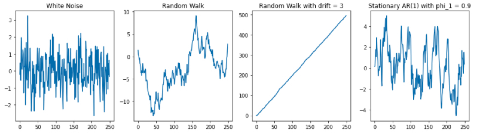</p>
<p>위 그림에서 볼 수 있듯이, 첫 번째와 네 번째 그림은 정상성을 만족하는 반면, 두 번째와 세 번째 그림의 Random Walk 모형은 어떤 추세가 확연하게 보임을 알 수 있습니다.<br />
이 두 확률 보행 모형은 그림에서 보더라도 정상성을 만족하지 않음을 알 수 있습니다.</p>
<hr />
<h3 id="ma-q-모형-생성하기"><a class="markdownIt-Anchor" href="#ma-q-모형-생성하기"></a> MA (q) 모형 생성하기</h3>
<blockquote>
<p><code>ArmaProcess(ar = [1], ma = [1, theta_1, theta_2, ..., theta_q])</code>로 생성</p>
</blockquote>
<p>가장 단순한 MA (1) 모형을 생성해보겠습니다. 마찬가지로 제가 위에서 정의한 <code>gen_arma_samples</code> 함수를 이용해서 샘플을 생성하겠습니다.</p>
<figure class="highlight python"><table><tr><td class="gutter"><pre><span class="line">1</span><br><span class="line">2</span><br><span class="line">3</span><br><span class="line">4</span><br><span class="line">5</span><br><span class="line">6</span><br><span class="line">7</span><br><span class="line">8</span><br><span class="line">9</span><br><span class="line">10</span><br><span class="line">11</span><br><span class="line">12</span><br><span class="line">13</span><br><span class="line">14</span><br><span class="line">15</span><br><span class="line">16</span><br><span class="line">17</span><br><span class="line">18</span><br></pre></td><td class="code"><pre><span class="line">np.random.seed(<span class="number">12345</span>)</span><br><span class="line"></span><br><span class="line">ma_1  = gen_arma_samples(ar = [<span class="number">1</span>], ma = [<span class="number">1</span>,<span class="number">1</span>], nobs = <span class="number">250</span>)       <span class="comment"># y_t = (1+L) epsilon_t</span></span><br><span class="line">ma_2  = gen_arma_samples(ar = [<span class="number">1</span>], ma = [<span class="number">1</span>,<span class="number">0.5</span>], nobs = <span class="number">250</span>)       <span class="comment"># y_t = (1+0.5L)epsilon_t</span></span><br><span class="line">ma_3  = gen_arma_samples(ar = [<span class="number">1</span>], ma = [<span class="number">1</span>,-<span class="number">2</span>], nobs = <span class="number">250</span>)       <span class="comment"># y_t = (1-2L) epsilon_t</span></span><br><span class="line"></span><br><span class="line">fig,ax = plt.subplots(<span class="number">1</span>,<span class="number">3</span>, figsize = (<span class="number">12</span>,<span class="number">4</span>))</span><br><span class="line"></span><br><span class="line">ax[<span class="number">0</span>].plot(ma_1)</span><br><span class="line">ax[<span class="number">0</span>].set_title(<span class="string">&quot;MA(1) with theta_1 = 1&quot;</span>)</span><br><span class="line"></span><br><span class="line">ax[<span class="number">1</span>].plot(ma_2)</span><br><span class="line">ax[<span class="number">1</span>].set_title(<span class="string">&quot;MA(1) with theta_1 = 0.5&quot;</span>)</span><br><span class="line"></span><br><span class="line">ax[<span class="number">2</span>].plot(ma_3)</span><br><span class="line">ax[<span class="number">2</span>].set_title(<span class="string">&quot;MA(1) with theta_1 = -2&quot;</span>)</span><br><span class="line"> </span><br><span class="line">plt.show()</span><br></pre></td></tr></table></figure>
<p>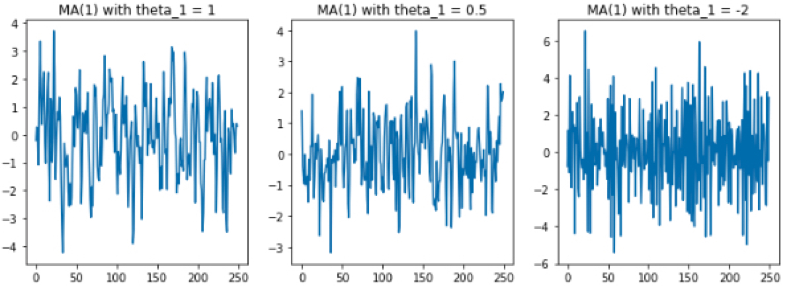</p>
<p>위 그림에서 볼 수 있듯이 <span class="katex"><span class="katex-mathml"><math xmlns="http://www.w3.org/1998/Math/MathML"><semantics><mrow><msub><mi>θ</mi><mn>1</mn></msub></mrow><annotation encoding="application/x-tex">\theta_1</annotation></semantics></math></span><span class="katex-html" aria-hidden="true"><span class="base"><span class="strut" style="height:0.84444em;vertical-align:-0.15em;"></span><span class="mord"><span class="mord mathnormal" style="margin-right:0.02778em;">θ</span><span class="msupsub"><span class="vlist-t vlist-t2"><span class="vlist-r"><span class="vlist" style="height:0.30110799999999993em;"><span style="top:-2.5500000000000003em;margin-left:-0.02778em;margin-right:0.05em;"><span class="pstrut" style="height:2.7em;"></span><span class="sizing reset-size6 size3 mtight"><span class="mord mtight">1</span></span></span></span><span class="vlist-s">​</span></span><span class="vlist-r"><span class="vlist" style="height:0.15em;"><span></span></span></span></span></span></span></span></span></span>의 값에 따라 모형 형태가 약간 다르긴 하지만 특정한 트렌드도 없고 평균과 분산이 일정하기 때문에 정상성을 만족함을 확인하실 수 있습니다.</p>
<hr />
<h3 id="arima-pdq-모형-생성하기"><a class="markdownIt-Anchor" href="#arima-pdq-모형-생성하기"></a> ARIMA (p,d,q) 모형 생성하기</h3>
<blockquote>
<p><code>ArmaProcess(ar = [1,-phi_1, -phi_2, ..., -phi_p], ma = [1, theta_1,theta_2, ..., theta_q])</code>로 생성 후 <code>unintegrate(x, level)</code></p>
</blockquote>
<p>ARIMA는 앞에서 봤던 AR이나 MA 생성 방법에서 한 단계 더 나아가야 합니다.<br />
ARIMA(p,d,q) 모형은 ARMA (p,q) 모형에서 d번 차분한 값이라는 말은 즉, ARIMA (p,d,q) 모형은 원 시계열에서 <span class="katex"><span class="katex-mathml"><math xmlns="http://www.w3.org/1998/Math/MathML"><semantics><mrow><mi>d</mi></mrow><annotation encoding="application/x-tex">d</annotation></semantics></math></span><span class="katex-html" aria-hidden="true"><span class="base"><span class="strut" style="height:0.69444em;vertical-align:0em;"></span><span class="mord mathnormal">d</span></span></span></span> 번 차분해야 ARMA (p,q) 모형을 따름을 의미합니다.</p>
<p>따라서, ARIMA (p,d,q)를 따르는 데이터를 생성하기 위해선</p>
<ul>
<li>ARMA (p,q) 과정을 따르는 데이터를 생성하고</li>
<li>이 데이터가 <span class="katex"><span class="katex-mathml"><math xmlns="http://www.w3.org/1998/Math/MathML"><semantics><mrow><mi>d</mi></mrow><annotation encoding="application/x-tex">d</annotation></semantics></math></span><span class="katex-html" aria-hidden="true"><span class="base"><span class="strut" style="height:0.69444em;vertical-align:0em;"></span><span class="mord mathnormal">d</span></span></span></span> 번 차분한 값이기 때문에 원상복귀해주는 <code>unintegrate</code> 함수를 사용해야 합니다. <code>unintegrate (x, level)</code> 에서 만약 1차 차분이라면 <code>level = [1]</code>, 2차 차분이라면 <code>level = [1,2]</code>과 같이 정의해주어야 합니다. (<a target="_blank" rel="noopener" href="https://github.com/statsmodels/statsmodels/blob/6d4d588b00547296f678af2e8de8bf3bbea1102e/statsmodels/tsa/tsatools.py#L758"><code>[link]</code></a>)</li>
</ul>
<p><code>R</code>의 <code>arima.sim()</code> 함수 그립습니다… ㅎㅎ…</p>
<figure class="highlight python"><table><tr><td class="gutter"><pre><span class="line">1</span><br><span class="line">2</span><br><span class="line">3</span><br><span class="line">4</span><br><span class="line">5</span><br><span class="line">6</span><br><span class="line">7</span><br><span class="line">8</span><br><span class="line">9</span><br><span class="line">10</span><br><span class="line">11</span><br><span class="line">12</span><br><span class="line">13</span><br><span class="line">14</span><br><span class="line">15</span><br><span class="line">16</span><br></pre></td><td class="code"><pre><span class="line">np.random.seed(<span class="number">12345</span>)</span><br><span class="line"><span class="keyword">from</span> statsmodels.tsa.arima_model <span class="keyword">import</span> unintegrate, unintegrate_levels</span><br><span class="line"></span><br><span class="line"></span><br><span class="line">arma_1  = gen_arma_samples (ar = [<span class="number">1</span>,-<span class="number">.5</span>], ma = [<span class="number">1</span>,<span class="number">1</span>], nobs = <span class="number">250</span>) <span class="comment"># 차분한 값이 ARMA (1,1)을 따름</span></span><br><span class="line">arima_1 = unintegrate(arma_1, [<span class="number">1</span>])                                <span class="comment"># unintegrate: 차분한 값을 다시 원상 복귀</span></span><br><span class="line"></span><br><span class="line">fig,ax = plt.subplots(<span class="number">1</span>,<span class="number">2</span>, figsize = (<span class="number">16</span>,<span class="number">4</span>))</span><br><span class="line"></span><br><span class="line">ax[<span class="number">0</span>].plot(arma_1)</span><br><span class="line">ax[<span class="number">0</span>].set_title(<span class="string">&quot;ARMA(1,1) with phi_1 = 0.5, theta_1 = 1&quot;</span>)</span><br><span class="line"></span><br><span class="line"></span><br><span class="line">ax[<span class="number">1</span>].plot(arima_1)</span><br><span class="line">ax[<span class="number">1</span>].set_title(<span class="string">&quot;ARIMA(1,1,1) with phi_1 = 0.5, d = 1, theta_1 = 1&quot;</span>)</span><br><span class="line">plt.show()</span><br></pre></td></tr></table></figure>
<p>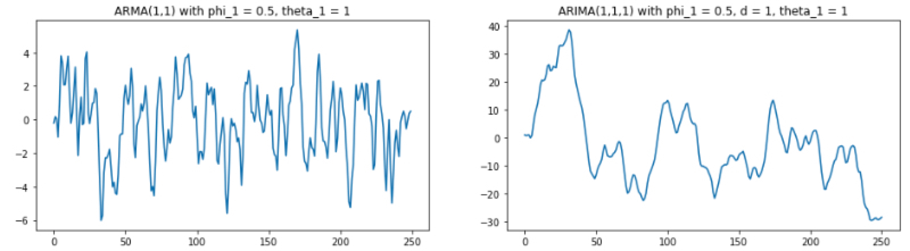</p>
<p>위와 같이 ARMA(1,1)과 ARIMA (1,1,1)을 따르는 모형을 생성하면 다음과 같은 그림을 얻을 수 있습니다.</p>
<hr />
<h2 id="마치며"><a class="markdownIt-Anchor" href="#마치며"></a> 마치며</h2>
<p>이렇게 AR, MA, ARIMA 모형에 대해 정리하고, 시뮬레이션을 통해서 데이터 생성까지 해보았습니다.<br />
“파이썬으로 데이터 생성은 해봐야지” 하고 정리했는데 생각보다 <code>tsa</code> 패키지가 유저 친화적이지가 않네요. R 유저로써 이번엔 파이썬으로 글을 쓴 것에 대해 후회하고 있습니다.<br />
특히 drift 가 있는 모형이나, ARIMA 모형에 대한 시뮬레이션이 아주 불편하네요! 더 좋은 방법이 있겠거니 하고 열심히 구글링을 했지만 제가 알아낸 것으로는 저 방법이 최선인 것 같습니다.</p>
<p>다음 글에서는 AR, MA, ARIMA 모형 및 차수 선택과 관련한 내용을 적고자 합니다.<br />
차수 결정하는 게 사람 손을 타서 생각보다 직접 데이터에서 파악하는게 어렵더라고요.</p>
<p></p>
<p>여전히 시계열은 어렵다는 말을 남기며… 다음 편에서 만나요 (제-발!)</p>

      
    </div>

    
    
    

    <footer class="post-footer">
        <div class="post-eof"></div>
      
    </footer>
  </article>
</div>


    


<div class="post-block">
  
  <div class="post-gallery" itemscope itemtype="http://schema.org/ImageGallery">
    
    <div class="post-gallery-image">
      
    </div>
    </div>

  <article itemscope itemtype="http://schema.org/Article" class="post-content" lang="">
    <link itemprop="mainEntityOfPage" href="http://assaeunji.github.io/2021/08/08/2021-08-08-stationarity/">

    <span hidden itemprop="author" itemscope itemtype="http://schema.org/Person">
      <meta itemprop="image" content="/images/avatar.gif">
      <meta itemprop="name" content="Eunji Lee">
    </span>

    <span hidden itemprop="publisher" itemscope itemtype="http://schema.org/Organization">
      <meta itemprop="name" content="Be Geeky">
      <meta itemprop="description" content="Hobby = Specialty">
    </span>

    <span hidden itemprop="post" itemscope itemtype="http://schema.org/CreativeWork">
      <meta itemprop="name" content="undefined | Be Geeky">
      <meta itemprop="description" content="">
    </span>
      <header class="post-header">
        <h2 class="post-title" itemprop="name headline">
          <a href="/2021/08/08/2021-08-08-stationarity/" class="post-title-link" itemprop="url">시계열 분석 시리즈 (1): 정상성 (Stationarity) 뽀개기</a>
        </h2>

        <div class="post-meta-container">
          <div class="post-meta">
    <span class="post-meta-item">
      <span class="post-meta-item-icon">
        <i class="far fa-calendar"></i>
      </span>
      <span class="post-meta-item-text">Posted on</span>

      <time title="Created: 2021-08-08 00:00:00" itemprop="dateCreated datePublished" datetime="2021-08-08T00:00:00+09:00">2021-08-08</time>
    </span>
    <span class="post-meta-item">
      <span class="post-meta-item-icon">
        <i class="far fa-calendar-check"></i>
      </span>
      <span class="post-meta-item-text">Edited on</span>
      <time title="Modified: 2023-05-02 22:16:00" itemprop="dateModified" datetime="2023-05-02T22:16:00+09:00">2023-05-02</time>
    </span>
    <span class="post-meta-item">
      <span class="post-meta-item-icon">
        <i class="far fa-folder"></i>
      </span>
      <span class="post-meta-item-text">In</span>
        <span itemprop="about" itemscope itemtype="http://schema.org/Thing">
          <a href="/categories/Statistics/" itemprop="url" rel="index"><span itemprop="name">Statistics</span></a>
        </span>
    </span>

  
</div>

        </div>
      </header>

    
    
    
    <div class="post-body" itemprop="articleBody">
          <ul>
<li>이번 포스팅은 <a target="_blank" rel="noopener" href="http://www.yes24.com/Product/Goods/98576347">실전 시계열 분석: 통계와 머신러닝을 활용한 예측 기법</a> 책과 <a target="_blank" rel="noopener" href="https://otexts.com/fppkr/">Forecasting: Principles and Practice</a>책을 기반으로 정상성에 대해 자세하게 정리하였습니다.</li>
</ul>
<hr />
<h2 id="정상성-통계적-시계열-분석에-필요한-가정"><a class="markdownIt-Anchor" href="#정상성-통계적-시계열-분석에-필요한-가정"></a> 정상성: 통계적 시계열 분석에 필요한 가정</h2>
<p>시계열 자료를 분석하는 통계적인 방법에서 빠질 수 없는 개념은 **정상성 (Stationarity)**입니다. 그 이유는 정상성은 시계열 분석을 할 때 필수적으로 고려하는 가정이기 때문이죠.<br />
마치 회귀 분석을 할 때 오차의 정규성, 등분산성을 만족해야 그 회귀 분석 결과를 믿을 수 있는 것처럼, 시계열 분석을 할 때에도 정상성을 만족해야 분석 결과에 대해 신뢰할 수 있습니다.</p>
<p>그러나 실제로 시계열 분석을 할 때 정상성이 왜 필요한지도 모르겠고, 어떻게 해야 정상성을 만족시킬 수 있는지, 어떻게 해야 정상성을 띤다고 말할 수 있는지 애매할 때가 있습니다.<br />
따라서, 이 포스트를 통해서</p>
<ul>
<li>정상성을 먼저 정의하고,</li>
<li>정상성을 만족시킬 수 있는 방법인 <strong>차분</strong>과 <strong>로그 변환</strong>에 대해 설명하고</li>
<li>정상성을 만족시키는지 파악하기 위한 방법으로
<ul>
<li>그래프를 통해 직관적으로 파악하는 방법과</li>
<li>통계적 검정을 이용해 확인하는 방법을 소개하겠습니다.</li>
</ul>
</li>
</ul>
<hr />
<h3 id="정상성의-정의"><a class="markdownIt-Anchor" href="#정상성의-정의"></a> 정상성의 정의</h3>
<blockquote>
<p>정상성 (定常性)은 &quot;안정되다&quot;라는 뜻을 가진 정 (定)과 &quot;항상&quot;이라는 뜻을 가진 상 (常)의 한자를 가져, &quot;<strong>일정하여 늘 한곁같은 성질</strong>&quot;을 의미합니다. 이 단어 뜻에 맞게<br />
정상성을 가진 시계열은 과거와 현재와 미래의 모두 항상 안정적인, 일정한 분포를 가진 것이 특징입니다.</p>
</blockquote>
<p>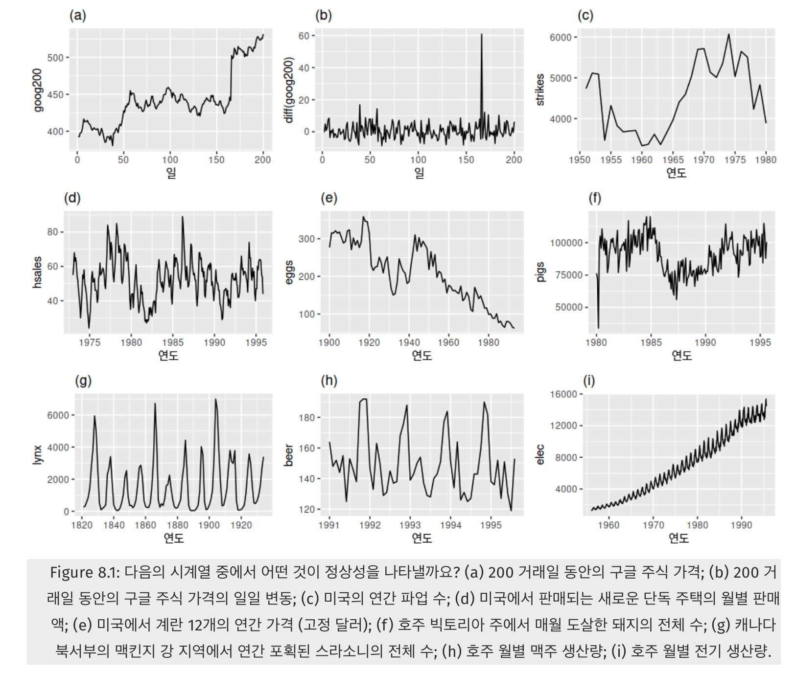<br />
여기서 정상성을 가지는 시계열은 (b)와 (g)뿐입니다.<br />
{:.figure}</p>
<p>정상성을 가진 시계열을 직관적으로 파악하려면, 연필을 들고 <strong>지그재그 모양을 수평으로 막 그리면</strong> 그게 바로 정상성입니다! 위 그림에서 보면 (b)와 (g)가 그에 해당합니다.</p>
<ul>
<li>(d),(h)는 계절성이 보이기 때문에 정상성을 띠지 않습니다.</li>
<li>(a),©,(e),(f)는 어떤 특정한 트렌드 (추세)가 있기 때문에 정상성을 띠지 않습니다.</li>
<li>(i)는 계절성도, 트렌드도 보이며 심지어 분산도 시간에 따라 커지는 형태이므로 정상성을 띠지 않습니다.</li>
</ul>
<p>결과적으로 정상성은 어떤 특정한 주기로 반복하는 계절성이나 위로 혹은 아래로 가는 트렌드가 없어야 하며, 분산도 커지면 안되는 것이라 유추 할 수 있습니다. 즉, <strong>시간에 무관하게 과거, 현재, 미래의 분포가 같아야 한다</strong>는 의미입니다.</p>
<p>그렇다면, 정상성 (Stationarity)을 더 엄밀히 정의해봅시다.</p>
<blockquote>
<p>정상성이란 시계열의 평균과 분산이 일정하고, 특정한 트렌드 (추세)가 존재하지 않는 성질을 의미합니다.</p>
</blockquote>
<p>정상성은 강한 정상성 (Strong Stationarity)와 약한 정상성 (Weak Stationarity)로 정의가 되는데, 일반적으로 약한 정상성만 만족해도 분석이 타당하다고 보기 때문에,<br />
약한 정상성에 대해서만 더 자세히 알아보겠습니다.</p>
<p>약한 정상성을 수학적으로 더 엄밀하게 정의한다면 다음의 세 가지 조건을 만족해야 합니다.</p>
<ol>
<li>임의의 <span class="katex"><span class="katex-mathml"><math xmlns="http://www.w3.org/1998/Math/MathML"><semantics><mrow><mi>t</mi></mrow><annotation encoding="application/x-tex">t</annotation></semantics></math></span><span class="katex-html" aria-hidden="true"><span class="base"><span class="strut" style="height:0.61508em;vertical-align:0em;"></span><span class="mord mathnormal">t</span></span></span></span>에 대해서 <span class="katex"><span class="katex-mathml"><math xmlns="http://www.w3.org/1998/Math/MathML"><semantics><mrow><mi>E</mi><mo stretchy="false">(</mo><msub><mi>X</mi><mi>t</mi></msub><mo stretchy="false">)</mo><mo>=</mo><mi>μ</mi></mrow><annotation encoding="application/x-tex">E(X_t) = \mu</annotation></semantics></math></span><span class="katex-html" aria-hidden="true"><span class="base"><span class="strut" style="height:1em;vertical-align:-0.25em;"></span><span class="mord mathnormal" style="margin-right:0.05764em;">E</span><span class="mopen">(</span><span class="mord"><span class="mord mathnormal" style="margin-right:0.07847em;">X</span><span class="msupsub"><span class="vlist-t vlist-t2"><span class="vlist-r"><span class="vlist" style="height:0.2805559999999999em;"><span style="top:-2.5500000000000003em;margin-left:-0.07847em;margin-right:0.05em;"><span class="pstrut" style="height:2.7em;"></span><span class="sizing reset-size6 size3 mtight"><span class="mord mathnormal mtight">t</span></span></span></span><span class="vlist-s">​</span></span><span class="vlist-r"><span class="vlist" style="height:0.15em;"><span></span></span></span></span></span></span><span class="mclose">)</span><span class="mspace" style="margin-right:0.2777777777777778em;"></span><span class="mrel">=</span><span class="mspace" style="margin-right:0.2777777777777778em;"></span></span><span class="base"><span class="strut" style="height:0.625em;vertical-align:-0.19444em;"></span><span class="mord mathnormal">μ</span></span></span></span></li>
<li>임의의 <span class="katex"><span class="katex-mathml"><math xmlns="http://www.w3.org/1998/Math/MathML"><semantics><mrow><mi>t</mi></mrow><annotation encoding="application/x-tex">t</annotation></semantics></math></span><span class="katex-html" aria-hidden="true"><span class="base"><span class="strut" style="height:0.61508em;vertical-align:0em;"></span><span class="mord mathnormal">t</span></span></span></span>에 대해서 <span class="katex"><span class="katex-mathml"><math xmlns="http://www.w3.org/1998/Math/MathML"><semantics><mrow><mi>V</mi><mi>a</mi><mi>r</mi><mo stretchy="false">(</mo><msub><mi>X</mi><mi>t</mi></msub><mo stretchy="false">)</mo><mo>&lt;</mo><mi mathvariant="normal">∞</mi></mrow><annotation encoding="application/x-tex">Var(X_t) &lt; \infty</annotation></semantics></math></span><span class="katex-html" aria-hidden="true"><span class="base"><span class="strut" style="height:1em;vertical-align:-0.25em;"></span><span class="mord mathnormal" style="margin-right:0.22222em;">V</span><span class="mord mathnormal">a</span><span class="mord mathnormal" style="margin-right:0.02778em;">r</span><span class="mopen">(</span><span class="mord"><span class="mord mathnormal" style="margin-right:0.07847em;">X</span><span class="msupsub"><span class="vlist-t vlist-t2"><span class="vlist-r"><span class="vlist" style="height:0.2805559999999999em;"><span style="top:-2.5500000000000003em;margin-left:-0.07847em;margin-right:0.05em;"><span class="pstrut" style="height:2.7em;"></span><span class="sizing reset-size6 size3 mtight"><span class="mord mathnormal mtight">t</span></span></span></span><span class="vlist-s">​</span></span><span class="vlist-r"><span class="vlist" style="height:0.15em;"><span></span></span></span></span></span></span><span class="mclose">)</span><span class="mspace" style="margin-right:0.2777777777777778em;"></span><span class="mrel">&lt;</span><span class="mspace" style="margin-right:0.2777777777777778em;"></span></span><span class="base"><span class="strut" style="height:0.43056em;vertical-align:0em;"></span><span class="mord">∞</span></span></span></span></li>
<li>임의의 <span class="katex"><span class="katex-mathml"><math xmlns="http://www.w3.org/1998/Math/MathML"><semantics><mrow><mi>t</mi></mrow><annotation encoding="application/x-tex">t</annotation></semantics></math></span><span class="katex-html" aria-hidden="true"><span class="base"><span class="strut" style="height:0.61508em;vertical-align:0em;"></span><span class="mord mathnormal">t</span></span></span></span>, <span class="katex"><span class="katex-mathml"><math xmlns="http://www.w3.org/1998/Math/MathML"><semantics><mrow><mi>h</mi></mrow><annotation encoding="application/x-tex">h</annotation></semantics></math></span><span class="katex-html" aria-hidden="true"><span class="base"><span class="strut" style="height:0.69444em;vertical-align:0em;"></span><span class="mord mathnormal">h</span></span></span></span>에 대하여 <span class="katex"><span class="katex-mathml"><math xmlns="http://www.w3.org/1998/Math/MathML"><semantics><mrow><mi>C</mi><mi>o</mi><mi>v</mi><mo stretchy="false">(</mo><msub><mi>X</mi><mrow><mi>t</mi><mo>+</mo><mi>h</mi></mrow></msub><mo separator="true">,</mo><msub><mi>X</mi><mi>t</mi></msub><mo stretchy="false">)</mo><mo>=</mo><mi>γ</mi><mo stretchy="false">(</mo><mi>h</mi><mo stretchy="false">)</mo></mrow><annotation encoding="application/x-tex">Cov(X_{t+h}, X_t) = \gamma(h)</annotation></semantics></math></span><span class="katex-html" aria-hidden="true"><span class="base"><span class="strut" style="height:1em;vertical-align:-0.25em;"></span><span class="mord mathnormal" style="margin-right:0.07153em;">C</span><span class="mord mathnormal">o</span><span class="mord mathnormal" style="margin-right:0.03588em;">v</span><span class="mopen">(</span><span class="mord"><span class="mord mathnormal" style="margin-right:0.07847em;">X</span><span class="msupsub"><span class="vlist-t vlist-t2"><span class="vlist-r"><span class="vlist" style="height:0.3361079999999999em;"><span style="top:-2.5500000000000003em;margin-left:-0.07847em;margin-right:0.05em;"><span class="pstrut" style="height:2.7em;"></span><span class="sizing reset-size6 size3 mtight"><span class="mord mtight"><span class="mord mathnormal mtight">t</span><span class="mbin mtight">+</span><span class="mord mathnormal mtight">h</span></span></span></span></span><span class="vlist-s">​</span></span><span class="vlist-r"><span class="vlist" style="height:0.208331em;"><span></span></span></span></span></span></span><span class="mpunct">,</span><span class="mspace" style="margin-right:0.16666666666666666em;"></span><span class="mord"><span class="mord mathnormal" style="margin-right:0.07847em;">X</span><span class="msupsub"><span class="vlist-t vlist-t2"><span class="vlist-r"><span class="vlist" style="height:0.2805559999999999em;"><span style="top:-2.5500000000000003em;margin-left:-0.07847em;margin-right:0.05em;"><span class="pstrut" style="height:2.7em;"></span><span class="sizing reset-size6 size3 mtight"><span class="mord mathnormal mtight">t</span></span></span></span><span class="vlist-s">​</span></span><span class="vlist-r"><span class="vlist" style="height:0.15em;"><span></span></span></span></span></span></span><span class="mclose">)</span><span class="mspace" style="margin-right:0.2777777777777778em;"></span><span class="mrel">=</span><span class="mspace" style="margin-right:0.2777777777777778em;"></span></span><span class="base"><span class="strut" style="height:1em;vertical-align:-0.25em;"></span><span class="mord mathnormal" style="margin-right:0.05556em;">γ</span><span class="mopen">(</span><span class="mord mathnormal">h</span><span class="mclose">)</span></span></span></span></li>
</ol>
<p>3번에서 <span class="katex"><span class="katex-mathml"><math xmlns="http://www.w3.org/1998/Math/MathML"><semantics><mrow><mi>γ</mi><mo stretchy="false">(</mo><mi>h</mi><mo stretchy="false">)</mo></mrow><annotation encoding="application/x-tex">\gamma(h)</annotation></semantics></math></span><span class="katex-html" aria-hidden="true"><span class="base"><span class="strut" style="height:1em;vertical-align:-0.25em;"></span><span class="mord mathnormal" style="margin-right:0.05556em;">γ</span><span class="mopen">(</span><span class="mord mathnormal">h</span><span class="mclose">)</span></span></span></span>는 자기공분산 함수 (Autocovariance Function, ACVF)라 불리우는데, 공분산이 시점 <span class="katex"><span class="katex-mathml"><math xmlns="http://www.w3.org/1998/Math/MathML"><semantics><mrow><mi>t</mi></mrow><annotation encoding="application/x-tex">t</annotation></semantics></math></span><span class="katex-html" aria-hidden="true"><span class="base"><span class="strut" style="height:0.61508em;vertical-align:0em;"></span><span class="mord mathnormal">t</span></span></span></span>에 의존하지 않고, 시간의 차이인 <span class="katex"><span class="katex-mathml"><math xmlns="http://www.w3.org/1998/Math/MathML"><semantics><mrow><mi>h</mi></mrow><annotation encoding="application/x-tex">h</annotation></semantics></math></span><span class="katex-html" aria-hidden="true"><span class="base"><span class="strut" style="height:0.69444em;vertical-align:0em;"></span><span class="mord mathnormal">h</span></span></span></span>에만 의존함을 의미합니다.</p>
<p>예를 들어, A 주식이 정상성을 띤다고 가정합시다.<br />
이 주가의 평균이 3천원이고, 임의의 시점을 <span class="katex"><span class="katex-mathml"><math xmlns="http://www.w3.org/1998/Math/MathML"><semantics><mrow><mi>t</mi></mrow><annotation encoding="application/x-tex">t</annotation></semantics></math></span><span class="katex-html" aria-hidden="true"><span class="base"><span class="strut" style="height:0.61508em;vertical-align:0em;"></span><span class="mord mathnormal">t</span></span></span></span> = 2020년 1월 3일이라 치면</p>
<ul>
<li>
<ol>
<li>2020년 1월 3일의 주가의 평균이 <span class="katex"><span class="katex-mathml"><math xmlns="http://www.w3.org/1998/Math/MathML"><semantics><mrow><mi>μ</mi><mo>=</mo><mn>3</mn><mtext>천원</mtext></mrow><annotation encoding="application/x-tex">\mu = 3천 원</annotation></semantics></math></span><span class="katex-html" aria-hidden="true"><span class="base"><span class="strut" style="height:0.625em;vertical-align:-0.19444em;"></span><span class="mord mathnormal">μ</span><span class="mspace" style="margin-right:0.2777777777777778em;"></span><span class="mrel">=</span><span class="mspace" style="margin-right:0.2777777777777778em;"></span></span><span class="base"><span class="strut" style="height:0.68333em;vertical-align:0em;"></span><span class="mord">3</span><span class="mord hangul_fallback">천</span><span class="mord hangul_fallback">원</span></span></span></span>이고</li>
</ol>
</li>
<li>
<ol start="2">
<li>2020년 1월 3일의 주가의 분산이 유한하며 (= 극단치로 터지지 않고)</li>
</ol>
</li>
<li>
<ol start="3">
<li>2020년 1월 3일의 주가와, 그로부터 5일 뒤인 2020년 1월 8일의 주가 간의 공분산이 <span class="katex"><span class="katex-mathml"><math xmlns="http://www.w3.org/1998/Math/MathML"><semantics><mrow><mi>γ</mi><mo stretchy="false">(</mo><mn>5</mn><mo stretchy="false">)</mo></mrow><annotation encoding="application/x-tex">\gamma(5)</annotation></semantics></math></span><span class="katex-html" aria-hidden="true"><span class="base"><span class="strut" style="height:1em;vertical-align:-0.25em;"></span><span class="mord mathnormal" style="margin-right:0.05556em;">γ</span><span class="mopen">(</span><span class="mord">5</span><span class="mclose">)</span></span></span></span>임을 의미합니다.</li>
</ol>
</li>
</ul>
<hr />
<h3 id="정상성이-중요한-이유"><a class="markdownIt-Anchor" href="#정상성이-중요한-이유"></a> 정상성이 중요한 이유</h3>
<p>정상성이 중요한 이유는 시계열의 평균과 분산이 일정해야 시계열 값을 예측할 수 있기 때문입니다.<br />
시계열 분석에서는 &quot;우리가 구한 시계열 자료&quot;가 어떤 시간에 따른 **확률 과정 (stochastic process)**에서 실현된 값이라고 보는데요.</p>
<p>확률 과정이라는 말이 어려우니 조금 더 익숙한 개념으로 돌아가봅시다. 고등학교 수학에서 확률을 배울 때</p>
<p class='katex-block'><span class="katex-display"><span class="katex"><span class="katex-mathml"><math xmlns="http://www.w3.org/1998/Math/MathML" display="block"><semantics><mrow><mover accent="true"><mi>X</mi><mo>ˉ</mo></mover><mo>∼</mo><mi>N</mi><mo stretchy="false">(</mo><mi>μ</mi><mo separator="true">,</mo><msup><mi>σ</mi><mn>2</mn></msup><mi mathvariant="normal">/</mi><mi>n</mi><mo stretchy="false">)</mo></mrow><annotation encoding="application/x-tex">\bar{X} \sim N(\mu, \sigma^2 /n)
</annotation></semantics></math></span><span class="katex-html" aria-hidden="true"><span class="base"><span class="strut" style="height:0.8201099999999999em;vertical-align:0em;"></span><span class="mord accent"><span class="vlist-t"><span class="vlist-r"><span class="vlist" style="height:0.8201099999999999em;"><span style="top:-3em;"><span class="pstrut" style="height:3em;"></span><span class="mord"><span class="mord mathnormal" style="margin-right:0.07847em;">X</span></span></span><span style="top:-3.25233em;"><span class="pstrut" style="height:3em;"></span><span class="accent-body" style="left:-0.16666em;"><span class="mord">ˉ</span></span></span></span></span></span></span><span class="mspace" style="margin-right:0.2777777777777778em;"></span><span class="mrel">∼</span><span class="mspace" style="margin-right:0.2777777777777778em;"></span></span><span class="base"><span class="strut" style="height:1.1141079999999999em;vertical-align:-0.25em;"></span><span class="mord mathnormal" style="margin-right:0.10903em;">N</span><span class="mopen">(</span><span class="mord mathnormal">μ</span><span class="mpunct">,</span><span class="mspace" style="margin-right:0.16666666666666666em;"></span><span class="mord"><span class="mord mathnormal" style="margin-right:0.03588em;">σ</span><span class="msupsub"><span class="vlist-t"><span class="vlist-r"><span class="vlist" style="height:0.8641079999999999em;"><span style="top:-3.113em;margin-right:0.05em;"><span class="pstrut" style="height:2.7em;"></span><span class="sizing reset-size6 size3 mtight"><span class="mord mtight">2</span></span></span></span></span></span></span></span><span class="mord">/</span><span class="mord mathnormal">n</span><span class="mclose">)</span></span></span></span></span></p>
<p>인 성질을 이용해서 신뢰 구간도 구하고, 가설 검정도 했던 것을 기억하시나요?</p>
<p>여기서 <span class="katex"><span class="katex-mathml"><math xmlns="http://www.w3.org/1998/Math/MathML"><semantics><mrow><mover accent="true"><mi>X</mi><mo>ˉ</mo></mover></mrow><annotation encoding="application/x-tex">\bar{X}</annotation></semantics></math></span><span class="katex-html" aria-hidden="true"><span class="base"><span class="strut" style="height:0.8201099999999999em;vertical-align:0em;"></span><span class="mord accent"><span class="vlist-t"><span class="vlist-r"><span class="vlist" style="height:0.8201099999999999em;"><span style="top:-3em;"><span class="pstrut" style="height:3em;"></span><span class="mord"><span class="mord mathnormal" style="margin-right:0.07847em;">X</span></span></span><span style="top:-3.25233em;"><span class="pstrut" style="height:3em;"></span><span class="accent-body" style="left:-0.16666em;"><span class="mord">ˉ</span></span></span></span></span></span></span></span></span></span>는 우리가 얻은 <span class="katex"><span class="katex-mathml"><math xmlns="http://www.w3.org/1998/Math/MathML"><semantics><mrow><mi>n</mi></mrow><annotation encoding="application/x-tex">n</annotation></semantics></math></span><span class="katex-html" aria-hidden="true"><span class="base"><span class="strut" style="height:0.43056em;vertical-align:0em;"></span><span class="mord mathnormal">n</span></span></span></span>개의 데이터 (= 표본, samples) <span class="katex"><span class="katex-mathml"><math xmlns="http://www.w3.org/1998/Math/MathML"><semantics><mrow><msub><mi>X</mi><mn>1</mn></msub><mo separator="true">,</mo><msub><mi>X</mi><mn>2</mn></msub><mo separator="true">,</mo><mo>…</mo><mo separator="true">,</mo><msub><mi>X</mi><mi>n</mi></msub></mrow><annotation encoding="application/x-tex">X_1,X_2,\ldots,X_n</annotation></semantics></math></span><span class="katex-html" aria-hidden="true"><span class="base"><span class="strut" style="height:0.8777699999999999em;vertical-align:-0.19444em;"></span><span class="mord"><span class="mord mathnormal" style="margin-right:0.07847em;">X</span><span class="msupsub"><span class="vlist-t vlist-t2"><span class="vlist-r"><span class="vlist" style="height:0.30110799999999993em;"><span style="top:-2.5500000000000003em;margin-left:-0.07847em;margin-right:0.05em;"><span class="pstrut" style="height:2.7em;"></span><span class="sizing reset-size6 size3 mtight"><span class="mord mtight">1</span></span></span></span><span class="vlist-s">​</span></span><span class="vlist-r"><span class="vlist" style="height:0.15em;"><span></span></span></span></span></span></span><span class="mpunct">,</span><span class="mspace" style="margin-right:0.16666666666666666em;"></span><span class="mord"><span class="mord mathnormal" style="margin-right:0.07847em;">X</span><span class="msupsub"><span class="vlist-t vlist-t2"><span class="vlist-r"><span class="vlist" style="height:0.30110799999999993em;"><span style="top:-2.5500000000000003em;margin-left:-0.07847em;margin-right:0.05em;"><span class="pstrut" style="height:2.7em;"></span><span class="sizing reset-size6 size3 mtight"><span class="mord mtight">2</span></span></span></span><span class="vlist-s">​</span></span><span class="vlist-r"><span class="vlist" style="height:0.15em;"><span></span></span></span></span></span></span><span class="mpunct">,</span><span class="mspace" style="margin-right:0.16666666666666666em;"></span><span class="minner">…</span><span class="mspace" style="margin-right:0.16666666666666666em;"></span><span class="mpunct">,</span><span class="mspace" style="margin-right:0.16666666666666666em;"></span><span class="mord"><span class="mord mathnormal" style="margin-right:0.07847em;">X</span><span class="msupsub"><span class="vlist-t vlist-t2"><span class="vlist-r"><span class="vlist" style="height:0.151392em;"><span style="top:-2.5500000000000003em;margin-left:-0.07847em;margin-right:0.05em;"><span class="pstrut" style="height:2.7em;"></span><span class="sizing reset-size6 size3 mtight"><span class="mord mathnormal mtight">n</span></span></span></span><span class="vlist-s">​</span></span><span class="vlist-r"><span class="vlist" style="height:0.15em;"><span></span></span></span></span></span></span></span></span></span>의 평균, 즉 표본 평균이고, <span class="katex"><span class="katex-mathml"><math xmlns="http://www.w3.org/1998/Math/MathML"><semantics><mrow><mi>μ</mi></mrow><annotation encoding="application/x-tex">\mu</annotation></semantics></math></span><span class="katex-html" aria-hidden="true"><span class="base"><span class="strut" style="height:0.625em;vertical-align:-0.19444em;"></span><span class="mord mathnormal">μ</span></span></span></span>는 모 평균, <span class="katex"><span class="katex-mathml"><math xmlns="http://www.w3.org/1998/Math/MathML"><semantics><mrow><msup><mi>σ</mi><mn>2</mn></msup></mrow><annotation encoding="application/x-tex">\sigma^2</annotation></semantics></math></span><span class="katex-html" aria-hidden="true"><span class="base"><span class="strut" style="height:0.8141079999999999em;vertical-align:0em;"></span><span class="mord"><span class="mord mathnormal" style="margin-right:0.03588em;">σ</span><span class="msupsub"><span class="vlist-t"><span class="vlist-r"><span class="vlist" style="height:0.8141079999999999em;"><span style="top:-3.063em;margin-right:0.05em;"><span class="pstrut" style="height:2.7em;"></span><span class="sizing reset-size6 size3 mtight"><span class="mord mtight">2</span></span></span></span></span></span></span></span></span></span></span>은 모 분산에 해당합니다.<br />
이는 <strong>표본들의 평균이 일정한 평균과 분산을 가지는 정규분포를 따른다</strong>는 의미이죠.</p>
<p>여기서 확장되어 확률 과정은 <strong>시간별로 표시된 확률 변수의 집합</strong>으로 정의가 됩니다. 즉, 각 시점 <span class="katex"><span class="katex-mathml"><math xmlns="http://www.w3.org/1998/Math/MathML"><semantics><mrow><mi>t</mi></mrow><annotation encoding="application/x-tex">t</annotation></semantics></math></span><span class="katex-html" aria-hidden="true"><span class="base"><span class="strut" style="height:0.61508em;vertical-align:0em;"></span><span class="mord mathnormal">t</span></span></span></span>에서의 값이 확률 분포 (예컨대, 위 예시처럼 각 시점에서의 값 (주가, 임금 등 우리가 관심있는 값) 이 정규분포를 따르는 것이죠)를 따른다고 보고, 이를 종합적으로 고려했을 때 시간 <span class="katex"><span class="katex-mathml"><math xmlns="http://www.w3.org/1998/Math/MathML"><semantics><mrow><mi>t</mi><mo>∈</mo><mo stretchy="false">[</mo><mn>0</mn><mo separator="true">,</mo><mi mathvariant="normal">∞</mi><mo stretchy="false">]</mo></mrow><annotation encoding="application/x-tex">t \in [0,\infty]</annotation></semantics></math></span><span class="katex-html" aria-hidden="true"><span class="base"><span class="strut" style="height:0.65418em;vertical-align:-0.0391em;"></span><span class="mord mathnormal">t</span><span class="mspace" style="margin-right:0.2777777777777778em;"></span><span class="mrel">∈</span><span class="mspace" style="margin-right:0.2777777777777778em;"></span></span><span class="base"><span class="strut" style="height:1em;vertical-align:-0.25em;"></span><span class="mopen">[</span><span class="mord">0</span><span class="mpunct">,</span><span class="mspace" style="margin-right:0.16666666666666666em;"></span><span class="mord">∞</span><span class="mclose">]</span></span></span></span>에서의 값들이 어떤 확률 분포를 따를 때 확률 과정이라 부를 수 있습니다.</p>
<p>그런데, 우리가 얻은 데이터 (= 표본)에 대응되는 것이 우리가 얻은 시계열 자료이고, 이들은 일정한 평균과 분산을 가진 확률 과정 (stochastic process)을 따른다고 가정해야만 시계열 예측을 할 수 있습니다. 가령, 오늘의 주가가 3000원인데, 이 주가는 이상적인 천상의 주가 그래프에서 여러 개를 표본 선출하여 만든 수치들 (Ex. 2000원, 2500원, 5000원, …, 3000원)의 평균 값이라고 볼 수 있는 것이죠.</p>
<p>만약 시간의 흐름에 따라서 이 확률 분포가 크게 변동한다면, 그 실현값들의 평균이나 분산 등 모멘트가 의미가 없기 때문에 적어도 이 평균과 분산이 우리가 다루고자 하는 확률 과정을 설명하기에 문제가 없도록 하기 위해 필요한 조건이 바로 정상성입니다.</p>
<p><strong>결과적으로 정상성을 띄는 확률 과정을 그림으로 표현하면 다음과 같습니다.</strong></p>
<p>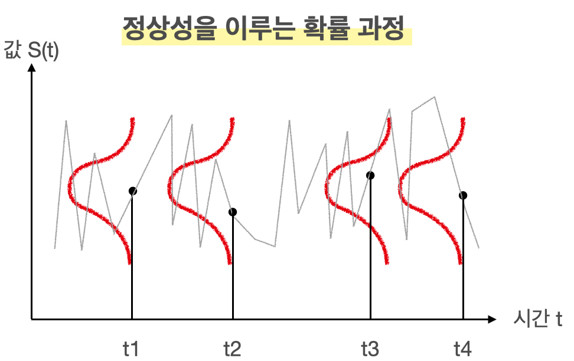</p>
<p>회색 선이 시계열 자료라면, 빨간색 선처럼 각 시점에서 확률 분포를 가지고, 이들의 평균과 분산이 동일한 분포이므로 확률 과정이 정상성을 띤다 볼 수 있습니다.</p>
<hr />
<h2 id="정상성을-만족시키기-위한-두-가지-방법"><a class="markdownIt-Anchor" href="#정상성을-만족시키기-위한-두-가지-방법"></a> 정상성을 만족시키기 위한 두 가지 방법</h2>
<p>보통 시계열 자료는 정상성을 띠지 않는 자료가 많습니다. 생각해보면 주가도 시간에 따라 증가하는 모습을 보이고, 분산도 언제는 작았다가 언제는 크기도 하기 때문에 정상성을 띠지 않는게 대부분이죠.</p>
<p>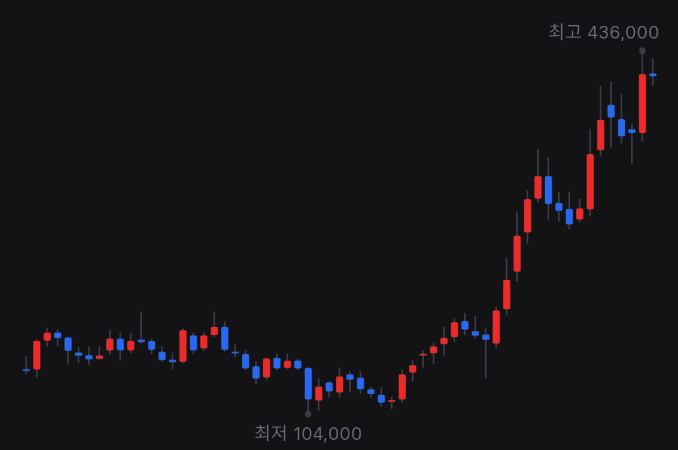</p>
<p>위 그림은 네이버 주가의 월봉 그래프로, 평균이 일정하지 않고 올라가는 추세를 보이고, 월마다 변하는 정도도 제각각인 것을 보아 분산도 다름을 유추할 수 있습니다. 즉, 정상성을 띠지 않습니다.</p>
<p>이렇게 시계열 자료가 정상성을 띠지 않으면, AR, MA, ARIMA 등 전통적인 시계열 분석 방법들을 사용하기 어렵기 때문에 시계열 자료들에 어떤 <strong>변환</strong>을 취해 정상성을 띠도록 만들어야 합니다.<br />
바로 **차분 (Differencing)**과 <strong>로그 변환</strong>입니다.</p>
<hr />
<h3 id="차분-differencing"><a class="markdownIt-Anchor" href="#차분-differencing"></a> 차분 (Differencing)</h3>
<blockquote>
<p>차분은 <span class="katex"><span class="katex-mathml"><math xmlns="http://www.w3.org/1998/Math/MathML"><semantics><mrow><mi>t</mi></mrow><annotation encoding="application/x-tex">t</annotation></semantics></math></span><span class="katex-html" aria-hidden="true"><span class="base"><span class="strut" style="height:0.61508em;vertical-align:0em;"></span><span class="mord mathnormal">t</span></span></span></span>시점과 <span class="katex"><span class="katex-mathml"><math xmlns="http://www.w3.org/1998/Math/MathML"><semantics><mrow><mi>t</mi><mo>−</mo><mn>1</mn></mrow><annotation encoding="application/x-tex">t-1</annotation></semantics></math></span><span class="katex-html" aria-hidden="true"><span class="base"><span class="strut" style="height:0.69841em;vertical-align:-0.08333em;"></span><span class="mord mathnormal">t</span><span class="mspace" style="margin-right:0.2222222222222222em;"></span><span class="mbin">−</span><span class="mspace" style="margin-right:0.2222222222222222em;"></span></span><span class="base"><span class="strut" style="height:0.64444em;vertical-align:0em;"></span><span class="mord">1</span></span></span></span>시점의 값의 차이를 구하는 것을 의미합니다.</p>
</blockquote>
<p><br />
여기서 정상성을 가지는 시계열은 (b)와 (g)뿐입니다.<br />
{:.figure}</p>
<p>다시 위 그림에서 (a)의 구글의 주식 가격이 정상성을 나타내는 시계열이 아니었지만, (b)는 구글의 주식 가격의 일별 변화는 정상성을 나타냈다는 것을 주목합시다. 즉, 연이은 관측값의 차이를 계산하는 차분을 취하면, 그 차이값들의 평균은 일정하기 때문에 정상성을 띠게 되는 것입니다.</p>
<p>차분을 수식을 통해 정의하면 다음과 같습니다.</p>
<p class='katex-block'><span class="katex-display"><span class="katex"><span class="katex-mathml"><math xmlns="http://www.w3.org/1998/Math/MathML" display="block"><semantics><mrow><mi mathvariant="normal">Δ</mi><msub><mi>y</mi><mi>t</mi></msub><mo>=</mo><msub><mi>y</mi><mi>t</mi></msub><mo>−</mo><msub><mi>y</mi><mrow><mi>t</mi><mo>−</mo><mn>1</mn></mrow></msub></mrow><annotation encoding="application/x-tex">\Delta y_t = y_t - y_{t-1}
</annotation></semantics></math></span><span class="katex-html" aria-hidden="true"><span class="base"><span class="strut" style="height:0.8777699999999999em;vertical-align:-0.19444em;"></span><span class="mord">Δ</span><span class="mord"><span class="mord mathnormal" style="margin-right:0.03588em;">y</span><span class="msupsub"><span class="vlist-t vlist-t2"><span class="vlist-r"><span class="vlist" style="height:0.2805559999999999em;"><span style="top:-2.5500000000000003em;margin-left:-0.03588em;margin-right:0.05em;"><span class="pstrut" style="height:2.7em;"></span><span class="sizing reset-size6 size3 mtight"><span class="mord mathnormal mtight">t</span></span></span></span><span class="vlist-s">​</span></span><span class="vlist-r"><span class="vlist" style="height:0.15em;"><span></span></span></span></span></span></span><span class="mspace" style="margin-right:0.2777777777777778em;"></span><span class="mrel">=</span><span class="mspace" style="margin-right:0.2777777777777778em;"></span></span><span class="base"><span class="strut" style="height:0.7777700000000001em;vertical-align:-0.19444em;"></span><span class="mord"><span class="mord mathnormal" style="margin-right:0.03588em;">y</span><span class="msupsub"><span class="vlist-t vlist-t2"><span class="vlist-r"><span class="vlist" style="height:0.2805559999999999em;"><span style="top:-2.5500000000000003em;margin-left:-0.03588em;margin-right:0.05em;"><span class="pstrut" style="height:2.7em;"></span><span class="sizing reset-size6 size3 mtight"><span class="mord mathnormal mtight">t</span></span></span></span><span class="vlist-s">​</span></span><span class="vlist-r"><span class="vlist" style="height:0.15em;"><span></span></span></span></span></span></span><span class="mspace" style="margin-right:0.2222222222222222em;"></span><span class="mbin">−</span><span class="mspace" style="margin-right:0.2222222222222222em;"></span></span><span class="base"><span class="strut" style="height:0.638891em;vertical-align:-0.208331em;"></span><span class="mord"><span class="mord mathnormal" style="margin-right:0.03588em;">y</span><span class="msupsub"><span class="vlist-t vlist-t2"><span class="vlist-r"><span class="vlist" style="height:0.301108em;"><span style="top:-2.5500000000000003em;margin-left:-0.03588em;margin-right:0.05em;"><span class="pstrut" style="height:2.7em;"></span><span class="sizing reset-size6 size3 mtight"><span class="mord mtight"><span class="mord mathnormal mtight">t</span><span class="mbin mtight">−</span><span class="mord mtight">1</span></span></span></span></span><span class="vlist-s">​</span></span><span class="vlist-r"><span class="vlist" style="height:0.208331em;"><span></span></span></span></span></span></span></span></span></span></span></p>
<p>첫 번째 관측값에 대한 차분 <span class="katex"><span class="katex-mathml"><math xmlns="http://www.w3.org/1998/Math/MathML"><semantics><mrow><mi mathvariant="normal">Δ</mi><msub><mi>y</mi><mn>1</mn></msub></mrow><annotation encoding="application/x-tex">\Delta y_1</annotation></semantics></math></span><span class="katex-html" aria-hidden="true"><span class="base"><span class="strut" style="height:0.8777699999999999em;vertical-align:-0.19444em;"></span><span class="mord">Δ</span><span class="mord"><span class="mord mathnormal" style="margin-right:0.03588em;">y</span><span class="msupsub"><span class="vlist-t vlist-t2"><span class="vlist-r"><span class="vlist" style="height:0.30110799999999993em;"><span style="top:-2.5500000000000003em;margin-left:-0.03588em;margin-right:0.05em;"><span class="pstrut" style="height:2.7em;"></span><span class="sizing reset-size6 size3 mtight"><span class="mord mtight">1</span></span></span></span><span class="vlist-s">​</span></span><span class="vlist-r"><span class="vlist" style="height:0.15em;"><span></span></span></span></span></span></span></span></span></span>을 구할 수 없기 때문에, 차분값들은 <span class="katex"><span class="katex-mathml"><math xmlns="http://www.w3.org/1998/Math/MathML"><semantics><mrow><mi>T</mi><mo>−</mo><mn>1</mn></mrow><annotation encoding="application/x-tex">T-1</annotation></semantics></math></span><span class="katex-html" aria-hidden="true"><span class="base"><span class="strut" style="height:0.76666em;vertical-align:-0.08333em;"></span><span class="mord mathnormal" style="margin-right:0.13889em;">T</span><span class="mspace" style="margin-right:0.2222222222222222em;"></span><span class="mbin">−</span><span class="mspace" style="margin-right:0.2222222222222222em;"></span></span><span class="base"><span class="strut" style="height:0.64444em;vertical-align:0em;"></span><span class="mord">1</span></span></span></span>개의 값만 가지게 됩니다.</p>
<h4 id="2차-차분"><a class="markdownIt-Anchor" href="#2차-차분"></a> 2차 차분</h4>
<p>가끔 차분을 해도 시계열의 정상성이 만족되지 않는 경우도 있습니다. 그럴 경우, 정상성을 나타내는 시계열을 얻기 위해 다음과 같이 한 번 더 차분을 구하는 작업이 필요할 수도 있습니다.</p>
<p class='katex-block'><span class="katex-display"><span class="katex"><span class="katex-mathml"><math xmlns="http://www.w3.org/1998/Math/MathML" display="block"><semantics><mtable rowspacing="0.24999999999999992em" columnalign="right left" columnspacing="0em"><mtr><mtd><mstyle scriptlevel="0" displaystyle="true"><mrow><mi mathvariant="normal">Δ</mi><msub><mi>y</mi><mi>t</mi></msub><mo>−</mo><mi mathvariant="normal">Δ</mi><msub><mi>y</mi><mrow><mi>t</mi><mo>−</mo><mn>1</mn></mrow></msub></mrow></mstyle></mtd><mtd><mstyle scriptlevel="0" displaystyle="true"><mrow><mrow></mrow><mo>=</mo><mo stretchy="false">(</mo><msub><mi>y</mi><mi>t</mi></msub><mo>−</mo><msub><mi>y</mi><mrow><mi>t</mi><mo>−</mo><mn>1</mn></mrow></msub><mo stretchy="false">)</mo><mo>−</mo><mo stretchy="false">(</mo><msub><mi>y</mi><mrow><mi>t</mi><mo>−</mo><mn>1</mn></mrow></msub><mo>−</mo><msub><mi>y</mi><mrow><mi>t</mi><mo>−</mo><mn>2</mn></mrow></msub><mo stretchy="false">)</mo></mrow></mstyle></mtd></mtr><mtr><mtd><mstyle scriptlevel="0" displaystyle="true"><mrow></mrow></mstyle></mtd><mtd><mstyle scriptlevel="0" displaystyle="true"><mrow><mrow></mrow><mo>=</mo><msub><mi>y</mi><mi>t</mi></msub><mo>−</mo><mn>2</mn><msub><mi>y</mi><mrow><mi>t</mi><mo>−</mo><mn>1</mn></mrow></msub><mo>+</mo><msub><mi>y</mi><mrow><mi>t</mi><mo>−</mo><mn>2</mn></mrow></msub></mrow></mstyle></mtd></mtr></mtable><annotation encoding="application/x-tex">\begin{aligned}
\Delta y_t - \Delta y_{t-1}
&amp;= (y_t - y_{t-1}) - (y_{t-1} - y_{t-2})\\
&amp; = y_t - 2y_{t-1} + y_{t-2}
\end{aligned}
</annotation></semantics></math></span><span class="katex-html" aria-hidden="true"><span class="base"><span class="strut" style="height:3.0000000000000004em;vertical-align:-1.2500000000000002em;"></span><span class="mord"><span class="mtable"><span class="col-align-r"><span class="vlist-t vlist-t2"><span class="vlist-r"><span class="vlist" style="height:1.7500000000000002em;"><span style="top:-3.91em;"><span class="pstrut" style="height:3em;"></span><span class="mord"><span class="mord">Δ</span><span class="mord"><span class="mord mathnormal" style="margin-right:0.03588em;">y</span><span class="msupsub"><span class="vlist-t vlist-t2"><span class="vlist-r"><span class="vlist" style="height:0.2805559999999999em;"><span style="top:-2.5500000000000003em;margin-left:-0.03588em;margin-right:0.05em;"><span class="pstrut" style="height:2.7em;"></span><span class="sizing reset-size6 size3 mtight"><span class="mord mathnormal mtight">t</span></span></span></span><span class="vlist-s">​</span></span><span class="vlist-r"><span class="vlist" style="height:0.15em;"><span></span></span></span></span></span></span><span class="mspace" style="margin-right:0.2222222222222222em;"></span><span class="mbin">−</span><span class="mspace" style="margin-right:0.2222222222222222em;"></span><span class="mord">Δ</span><span class="mord"><span class="mord mathnormal" style="margin-right:0.03588em;">y</span><span class="msupsub"><span class="vlist-t vlist-t2"><span class="vlist-r"><span class="vlist" style="height:0.301108em;"><span style="top:-2.5500000000000003em;margin-left:-0.03588em;margin-right:0.05em;"><span class="pstrut" style="height:2.7em;"></span><span class="sizing reset-size6 size3 mtight"><span class="mord mtight"><span class="mord mathnormal mtight">t</span><span class="mbin mtight">−</span><span class="mord mtight">1</span></span></span></span></span><span class="vlist-s">​</span></span><span class="vlist-r"><span class="vlist" style="height:0.208331em;"><span></span></span></span></span></span></span></span></span><span style="top:-2.41em;"><span class="pstrut" style="height:3em;"></span><span class="mord"></span></span></span><span class="vlist-s">​</span></span><span class="vlist-r"><span class="vlist" style="height:1.2500000000000002em;"><span></span></span></span></span></span><span class="col-align-l"><span class="vlist-t vlist-t2"><span class="vlist-r"><span class="vlist" style="height:1.7500000000000002em;"><span style="top:-3.91em;"><span class="pstrut" style="height:3em;"></span><span class="mord"><span class="mord"></span><span class="mspace" style="margin-right:0.2777777777777778em;"></span><span class="mrel">=</span><span class="mspace" style="margin-right:0.2777777777777778em;"></span><span class="mopen">(</span><span class="mord"><span class="mord mathnormal" style="margin-right:0.03588em;">y</span><span class="msupsub"><span class="vlist-t vlist-t2"><span class="vlist-r"><span class="vlist" style="height:0.2805559999999999em;"><span style="top:-2.5500000000000003em;margin-left:-0.03588em;margin-right:0.05em;"><span class="pstrut" style="height:2.7em;"></span><span class="sizing reset-size6 size3 mtight"><span class="mord mathnormal mtight">t</span></span></span></span><span class="vlist-s">​</span></span><span class="vlist-r"><span class="vlist" style="height:0.15em;"><span></span></span></span></span></span></span><span class="mspace" style="margin-right:0.2222222222222222em;"></span><span class="mbin">−</span><span class="mspace" style="margin-right:0.2222222222222222em;"></span><span class="mord"><span class="mord mathnormal" style="margin-right:0.03588em;">y</span><span class="msupsub"><span class="vlist-t vlist-t2"><span class="vlist-r"><span class="vlist" style="height:0.301108em;"><span style="top:-2.5500000000000003em;margin-left:-0.03588em;margin-right:0.05em;"><span class="pstrut" style="height:2.7em;"></span><span class="sizing reset-size6 size3 mtight"><span class="mord mtight"><span class="mord mathnormal mtight">t</span><span class="mbin mtight">−</span><span class="mord mtight">1</span></span></span></span></span><span class="vlist-s">​</span></span><span class="vlist-r"><span class="vlist" style="height:0.208331em;"><span></span></span></span></span></span></span><span class="mclose">)</span><span class="mspace" style="margin-right:0.2222222222222222em;"></span><span class="mbin">−</span><span class="mspace" style="margin-right:0.2222222222222222em;"></span><span class="mopen">(</span><span class="mord"><span class="mord mathnormal" style="margin-right:0.03588em;">y</span><span class="msupsub"><span class="vlist-t vlist-t2"><span class="vlist-r"><span class="vlist" style="height:0.301108em;"><span style="top:-2.5500000000000003em;margin-left:-0.03588em;margin-right:0.05em;"><span class="pstrut" style="height:2.7em;"></span><span class="sizing reset-size6 size3 mtight"><span class="mord mtight"><span class="mord mathnormal mtight">t</span><span class="mbin mtight">−</span><span class="mord mtight">1</span></span></span></span></span><span class="vlist-s">​</span></span><span class="vlist-r"><span class="vlist" style="height:0.208331em;"><span></span></span></span></span></span></span><span class="mspace" style="margin-right:0.2222222222222222em;"></span><span class="mbin">−</span><span class="mspace" style="margin-right:0.2222222222222222em;"></span><span class="mord"><span class="mord mathnormal" style="margin-right:0.03588em;">y</span><span class="msupsub"><span class="vlist-t vlist-t2"><span class="vlist-r"><span class="vlist" style="height:0.301108em;"><span style="top:-2.5500000000000003em;margin-left:-0.03588em;margin-right:0.05em;"><span class="pstrut" style="height:2.7em;"></span><span class="sizing reset-size6 size3 mtight"><span class="mord mtight"><span class="mord mathnormal mtight">t</span><span class="mbin mtight">−</span><span class="mord mtight">2</span></span></span></span></span><span class="vlist-s">​</span></span><span class="vlist-r"><span class="vlist" style="height:0.208331em;"><span></span></span></span></span></span></span><span class="mclose">)</span></span></span><span style="top:-2.41em;"><span class="pstrut" style="height:3em;"></span><span class="mord"><span class="mord"></span><span class="mspace" style="margin-right:0.2777777777777778em;"></span><span class="mrel">=</span><span class="mspace" style="margin-right:0.2777777777777778em;"></span><span class="mord"><span class="mord mathnormal" style="margin-right:0.03588em;">y</span><span class="msupsub"><span class="vlist-t vlist-t2"><span class="vlist-r"><span class="vlist" style="height:0.2805559999999999em;"><span style="top:-2.5500000000000003em;margin-left:-0.03588em;margin-right:0.05em;"><span class="pstrut" style="height:2.7em;"></span><span class="sizing reset-size6 size3 mtight"><span class="mord mathnormal mtight">t</span></span></span></span><span class="vlist-s">​</span></span><span class="vlist-r"><span class="vlist" style="height:0.15em;"><span></span></span></span></span></span></span><span class="mspace" style="margin-right:0.2222222222222222em;"></span><span class="mbin">−</span><span class="mspace" style="margin-right:0.2222222222222222em;"></span><span class="mord">2</span><span class="mord"><span class="mord mathnormal" style="margin-right:0.03588em;">y</span><span class="msupsub"><span class="vlist-t vlist-t2"><span class="vlist-r"><span class="vlist" style="height:0.301108em;"><span style="top:-2.5500000000000003em;margin-left:-0.03588em;margin-right:0.05em;"><span class="pstrut" style="height:2.7em;"></span><span class="sizing reset-size6 size3 mtight"><span class="mord mtight"><span class="mord mathnormal mtight">t</span><span class="mbin mtight">−</span><span class="mord mtight">1</span></span></span></span></span><span class="vlist-s">​</span></span><span class="vlist-r"><span class="vlist" style="height:0.208331em;"><span></span></span></span></span></span></span><span class="mspace" style="margin-right:0.2222222222222222em;"></span><span class="mbin">+</span><span class="mspace" style="margin-right:0.2222222222222222em;"></span><span class="mord"><span class="mord mathnormal" style="margin-right:0.03588em;">y</span><span class="msupsub"><span class="vlist-t vlist-t2"><span class="vlist-r"><span class="vlist" style="height:0.301108em;"><span style="top:-2.5500000000000003em;margin-left:-0.03588em;margin-right:0.05em;"><span class="pstrut" style="height:2.7em;"></span><span class="sizing reset-size6 size3 mtight"><span class="mord mtight"><span class="mord mathnormal mtight">t</span><span class="mbin mtight">−</span><span class="mord mtight">2</span></span></span></span></span><span class="vlist-s">​</span></span><span class="vlist-r"><span class="vlist" style="height:0.208331em;"><span></span></span></span></span></span></span></span></span></span><span class="vlist-s">​</span></span><span class="vlist-r"><span class="vlist" style="height:1.2500000000000002em;"><span></span></span></span></span></span></span></span></span></span></span></span></p>
<p>이 경우 2차 차분값은 <span class="katex"><span class="katex-mathml"><math xmlns="http://www.w3.org/1998/Math/MathML"><semantics><mrow><mi>T</mi><mo>−</mo><mn>2</mn></mrow><annotation encoding="application/x-tex">T-2</annotation></semantics></math></span><span class="katex-html" aria-hidden="true"><span class="base"><span class="strut" style="height:0.76666em;vertical-align:-0.08333em;"></span><span class="mord mathnormal" style="margin-right:0.13889em;">T</span><span class="mspace" style="margin-right:0.2222222222222222em;"></span><span class="mbin">−</span><span class="mspace" style="margin-right:0.2222222222222222em;"></span></span><span class="base"><span class="strut" style="height:0.64444em;vertical-align:0em;"></span><span class="mord">2</span></span></span></span>개의 값을 가지게 됩니다. 결국, 2차 차분은 원본 시계열 데이터의 &quot;변화에서 나타나는 변화&quot;를 모델링하게 되는 셈입니다. 실제 상황에서는 2차 차분 이상으로 구하는 경우는 거의 일어나지 않는다 합니다.</p>
<h4 id="계절성-차분"><a class="markdownIt-Anchor" href="#계절성-차분"></a> 계절성 차분</h4>
<p>계절성 차분은 관측치와, 같은 계절의 이전 관측값과의 차이를 말합니다. 따라서 다음과 같이 정의가 됩니다.</p>
<p class='katex-block'><span class="katex-display"><span class="katex"><span class="katex-mathml"><math xmlns="http://www.w3.org/1998/Math/MathML" display="block"><semantics><mrow><msub><mi>y</mi><mi>t</mi></msub><mo>−</mo><msub><mi>y</mi><mrow><mi>t</mi><mo>−</mo><mi>m</mi></mrow></msub></mrow><annotation encoding="application/x-tex">y_{t} - y_{t-m}
</annotation></semantics></math></span><span class="katex-html" aria-hidden="true"><span class="base"><span class="strut" style="height:0.7777700000000001em;vertical-align:-0.19444em;"></span><span class="mord"><span class="mord mathnormal" style="margin-right:0.03588em;">y</span><span class="msupsub"><span class="vlist-t vlist-t2"><span class="vlist-r"><span class="vlist" style="height:0.2805559999999999em;"><span style="top:-2.5500000000000003em;margin-left:-0.03588em;margin-right:0.05em;"><span class="pstrut" style="height:2.7em;"></span><span class="sizing reset-size6 size3 mtight"><span class="mord mtight"><span class="mord mathnormal mtight">t</span></span></span></span></span><span class="vlist-s">​</span></span><span class="vlist-r"><span class="vlist" style="height:0.15em;"><span></span></span></span></span></span></span><span class="mspace" style="margin-right:0.2222222222222222em;"></span><span class="mbin">−</span><span class="mspace" style="margin-right:0.2222222222222222em;"></span></span><span class="base"><span class="strut" style="height:0.638891em;vertical-align:-0.208331em;"></span><span class="mord"><span class="mord mathnormal" style="margin-right:0.03588em;">y</span><span class="msupsub"><span class="vlist-t vlist-t2"><span class="vlist-r"><span class="vlist" style="height:0.28055599999999997em;"><span style="top:-2.5500000000000003em;margin-left:-0.03588em;margin-right:0.05em;"><span class="pstrut" style="height:2.7em;"></span><span class="sizing reset-size6 size3 mtight"><span class="mord mtight"><span class="mord mathnormal mtight">t</span><span class="mbin mtight">−</span><span class="mord mathnormal mtight">m</span></span></span></span></span><span class="vlist-s">​</span></span><span class="vlist-r"><span class="vlist" style="height:0.208331em;"><span></span></span></span></span></span></span></span></span></span></span></p>
<p>여기서 <span class="katex"><span class="katex-mathml"><math xmlns="http://www.w3.org/1998/Math/MathML"><semantics><mrow><mi>m</mi></mrow><annotation encoding="application/x-tex">m</annotation></semantics></math></span><span class="katex-html" aria-hidden="true"><span class="base"><span class="strut" style="height:0.43056em;vertical-align:0em;"></span><span class="mord mathnormal">m</span></span></span></span>은 주기에 해당합니다. 즉 <span class="katex"><span class="katex-mathml"><math xmlns="http://www.w3.org/1998/Math/MathML"><semantics><mrow><mi>m</mi><mo>=</mo><mn>12</mn></mrow><annotation encoding="application/x-tex">m=12</annotation></semantics></math></span><span class="katex-html" aria-hidden="true"><span class="base"><span class="strut" style="height:0.43056em;vertical-align:0em;"></span><span class="mord mathnormal">m</span><span class="mspace" style="margin-right:0.2777777777777778em;"></span><span class="mrel">=</span><span class="mspace" style="margin-right:0.2777777777777778em;"></span></span><span class="base"><span class="strut" style="height:0.64444em;vertical-align:0em;"></span><span class="mord">1</span><span class="mord">2</span></span></span></span>이고 월별로 집계된 값이라면, 올해 1월의 값 - 작년 1월의 값, 올해 2월의 값 - 작년 2월의 값, … 이 되겠죠.</p>
<hr />
<h3 id="로그-변환"><a class="markdownIt-Anchor" href="#로그-변환"></a> 로그 변환</h3>
<blockquote>
<p>로그 변환을 통해 정상성을 띠지 않는 시계열 자료의 분산을 줄일 수 있습니다.</p>
</blockquote>
<p>정상성을 만족시키는 두 번째 방법으로 로그 변환을 고려할 수 있습니다. 말 그대로 값에 시계열 값에 로그를 취하면 됩니다.</p>
<p class='katex-block'><span class="katex-display"><span class="katex"><span class="katex-mathml"><math xmlns="http://www.w3.org/1998/Math/MathML" display="block"><semantics><mrow><msub><mi>y</mi><mi>t</mi></msub><mo>→</mo><mi>log</mi><mo>⁡</mo><mo stretchy="false">(</mo><msub><mi>y</mi><mi>t</mi></msub><mo stretchy="false">)</mo></mrow><annotation encoding="application/x-tex">y_t \rightarrow \log (y_t)
</annotation></semantics></math></span><span class="katex-html" aria-hidden="true"><span class="base"><span class="strut" style="height:0.625em;vertical-align:-0.19444em;"></span><span class="mord"><span class="mord mathnormal" style="margin-right:0.03588em;">y</span><span class="msupsub"><span class="vlist-t vlist-t2"><span class="vlist-r"><span class="vlist" style="height:0.2805559999999999em;"><span style="top:-2.5500000000000003em;margin-left:-0.03588em;margin-right:0.05em;"><span class="pstrut" style="height:2.7em;"></span><span class="sizing reset-size6 size3 mtight"><span class="mord mathnormal mtight">t</span></span></span></span><span class="vlist-s">​</span></span><span class="vlist-r"><span class="vlist" style="height:0.15em;"><span></span></span></span></span></span></span><span class="mspace" style="margin-right:0.2777777777777778em;"></span><span class="mrel">→</span><span class="mspace" style="margin-right:0.2777777777777778em;"></span></span><span class="base"><span class="strut" style="height:1em;vertical-align:-0.25em;"></span><span class="mop">lo<span style="margin-right:0.01389em;">g</span></span><span class="mopen">(</span><span class="mord"><span class="mord mathnormal" style="margin-right:0.03588em;">y</span><span class="msupsub"><span class="vlist-t vlist-t2"><span class="vlist-r"><span class="vlist" style="height:0.2805559999999999em;"><span style="top:-2.5500000000000003em;margin-left:-0.03588em;margin-right:0.05em;"><span class="pstrut" style="height:2.7em;"></span><span class="sizing reset-size6 size3 mtight"><span class="mord mathnormal mtight">t</span></span></span></span><span class="vlist-s">​</span></span><span class="vlist-r"><span class="vlist" style="height:0.15em;"><span></span></span></span></span></span></span><span class="mclose">)</span></span></span></span></span></p>
<p>로그 변환은 특히 값의 변동 자체가 큰 경우 (= 분산이 큰 경우) 고려할 수 있는 방법입니다. 또한, GDP와 같은 많은 경제 시게열 자료가 근사적으로 <strong>지수적인 성장</strong>을 나타내고 있는 경우가 많기 때문에 이런 시계열 자료에 로그를 취해 선형적인 값으로 바꿔주는 효과 또한 있습니다.</p>
<p>그러나, 로그 변환을 통해 어떤 시계열 자료가 선형적인 추세를 보인다면 시간이 지남에 따라 평균이 일정하지 않고 증가한다는 뜻이기 때문에, 이 또한 정상성을 띠지 않는 문제가 있습니다.<br />
그럼 뭐야? 라고 생각이 들겠지만 다음 장에서 그 해답을 찾을 수 있습니다.</p>
<hr />
<h3 id="로그-변환-차분-로그-차분"><a class="markdownIt-Anchor" href="#로그-변환-차분-로그-차분"></a> 로그 변환 + 차분 (로그 차분)</h3>
<p></p>
<p>그래서 저희는 PPAP 전법이 필요합니다. 즉,</p>
<ul>
<li>로그 변환을 통해서 먼저 분산을 안정화시키고, 지수적인 값을 가지는 시계열을 선형적으로 바꿔준 다음,</li>
<li>로그 변환된 시계열 값에 차분을 취해 정상성을 만족시키도록 만드는 것입니다.</li>
</ul>
<p>시간에 따라 어떤 시계열이 선형적으로 증가한다는 뜻은 즉, 그 시간에 따른 <strong>증가분 (차분)이 일정하다</strong>는 것이기 때문에, 로그 변환된 시계열에 차분까지 해주면 정상성을 만족시킬 수 있는 것입니다.</p>
<p>더 놀라운 것은 <strong>로그의 차분값이 증가율의 근사값</strong>이라는 것이 알려져 있습니다.<br />
즉, 저희가 PPAP 전법을 통해 로그의 차분값을 다음과 같이 정의한다면,</p>
<p class='katex-block'><span class="katex-display"><span class="katex"><span class="katex-mathml"><math xmlns="http://www.w3.org/1998/Math/MathML" display="block"><semantics><mrow><mi mathvariant="normal">Δ</mi><mi>log</mi><mo>⁡</mo><mo stretchy="false">(</mo><msub><mi>y</mi><mi>t</mi></msub><mo stretchy="false">)</mo><mo>=</mo><mi>log</mi><mo>⁡</mo><msub><mi>y</mi><mi>t</mi></msub><mo>−</mo><mi>log</mi><mo>⁡</mo><msub><mi>y</mi><mrow><mi>t</mi><mo>−</mo><mn>1</mn></mrow></msub></mrow><annotation encoding="application/x-tex">\Delta \log(y_t) = \log y_t - \log y_{t-1}
</annotation></semantics></math></span><span class="katex-html" aria-hidden="true"><span class="base"><span class="strut" style="height:1em;vertical-align:-0.25em;"></span><span class="mord">Δ</span><span class="mspace" style="margin-right:0.16666666666666666em;"></span><span class="mop">lo<span style="margin-right:0.01389em;">g</span></span><span class="mopen">(</span><span class="mord"><span class="mord mathnormal" style="margin-right:0.03588em;">y</span><span class="msupsub"><span class="vlist-t vlist-t2"><span class="vlist-r"><span class="vlist" style="height:0.2805559999999999em;"><span style="top:-2.5500000000000003em;margin-left:-0.03588em;margin-right:0.05em;"><span class="pstrut" style="height:2.7em;"></span><span class="sizing reset-size6 size3 mtight"><span class="mord mathnormal mtight">t</span></span></span></span><span class="vlist-s">​</span></span><span class="vlist-r"><span class="vlist" style="height:0.15em;"><span></span></span></span></span></span></span><span class="mclose">)</span><span class="mspace" style="margin-right:0.2777777777777778em;"></span><span class="mrel">=</span><span class="mspace" style="margin-right:0.2777777777777778em;"></span></span><span class="base"><span class="strut" style="height:0.8888799999999999em;vertical-align:-0.19444em;"></span><span class="mop">lo<span style="margin-right:0.01389em;">g</span></span><span class="mspace" style="margin-right:0.16666666666666666em;"></span><span class="mord"><span class="mord mathnormal" style="margin-right:0.03588em;">y</span><span class="msupsub"><span class="vlist-t vlist-t2"><span class="vlist-r"><span class="vlist" style="height:0.2805559999999999em;"><span style="top:-2.5500000000000003em;margin-left:-0.03588em;margin-right:0.05em;"><span class="pstrut" style="height:2.7em;"></span><span class="sizing reset-size6 size3 mtight"><span class="mord mathnormal mtight">t</span></span></span></span><span class="vlist-s">​</span></span><span class="vlist-r"><span class="vlist" style="height:0.15em;"><span></span></span></span></span></span></span><span class="mspace" style="margin-right:0.2222222222222222em;"></span><span class="mbin">−</span><span class="mspace" style="margin-right:0.2222222222222222em;"></span></span><span class="base"><span class="strut" style="height:0.902771em;vertical-align:-0.208331em;"></span><span class="mop">lo<span style="margin-right:0.01389em;">g</span></span><span class="mspace" style="margin-right:0.16666666666666666em;"></span><span class="mord"><span class="mord mathnormal" style="margin-right:0.03588em;">y</span><span class="msupsub"><span class="vlist-t vlist-t2"><span class="vlist-r"><span class="vlist" style="height:0.301108em;"><span style="top:-2.5500000000000003em;margin-left:-0.03588em;margin-right:0.05em;"><span class="pstrut" style="height:2.7em;"></span><span class="sizing reset-size6 size3 mtight"><span class="mord mtight"><span class="mord mathnormal mtight">t</span><span class="mbin mtight">−</span><span class="mord mtight">1</span></span></span></span></span><span class="vlist-s">​</span></span><span class="vlist-r"><span class="vlist" style="height:0.208331em;"><span></span></span></span></span></span></span></span></span></span></span></p>
<p>이 값을 <span class="katex"><span class="katex-mathml"><math xmlns="http://www.w3.org/1998/Math/MathML"><semantics><mrow><msub><mi>y</mi><mrow><mi>t</mi><mo>−</mo><mn>1</mn></mrow></msub></mrow><annotation encoding="application/x-tex">y_{t-1}</annotation></semantics></math></span><span class="katex-html" aria-hidden="true"><span class="base"><span class="strut" style="height:0.638891em;vertical-align:-0.208331em;"></span><span class="mord"><span class="mord mathnormal" style="margin-right:0.03588em;">y</span><span class="msupsub"><span class="vlist-t vlist-t2"><span class="vlist-r"><span class="vlist" style="height:0.301108em;"><span style="top:-2.5500000000000003em;margin-left:-0.03588em;margin-right:0.05em;"><span class="pstrut" style="height:2.7em;"></span><span class="sizing reset-size6 size3 mtight"><span class="mord mtight"><span class="mord mathnormal mtight">t</span><span class="mbin mtight">−</span><span class="mord mtight">1</span></span></span></span></span><span class="vlist-s">​</span></span><span class="vlist-r"><span class="vlist" style="height:0.208331em;"><span></span></span></span></span></span></span></span></span></span>에서 <span class="katex"><span class="katex-mathml"><math xmlns="http://www.w3.org/1998/Math/MathML"><semantics><mrow><msub><mi>y</mi><mi>t</mi></msub></mrow><annotation encoding="application/x-tex">y_t</annotation></semantics></math></span><span class="katex-html" aria-hidden="true"><span class="base"><span class="strut" style="height:0.625em;vertical-align:-0.19444em;"></span><span class="mord"><span class="mord mathnormal" style="margin-right:0.03588em;">y</span><span class="msupsub"><span class="vlist-t vlist-t2"><span class="vlist-r"><span class="vlist" style="height:0.2805559999999999em;"><span style="top:-2.5500000000000003em;margin-left:-0.03588em;margin-right:0.05em;"><span class="pstrut" style="height:2.7em;"></span><span class="sizing reset-size6 size3 mtight"><span class="mord mathnormal mtight">t</span></span></span></span><span class="vlist-s">​</span></span><span class="vlist-r"><span class="vlist" style="height:0.15em;"><span></span></span></span></span></span></span></span></span></span>로의 증가율로 근사할 수 있습니다.</p>
<p class='katex-block'><span class="katex-display"><span class="katex"><span class="katex-mathml"><math xmlns="http://www.w3.org/1998/Math/MathML" display="block"><semantics><mrow><mi mathvariant="normal">Δ</mi><mi>log</mi><mo>⁡</mo><mo stretchy="false">(</mo><msub><mi>y</mi><mi>t</mi></msub><mo stretchy="false">)</mo><mo>=</mo><mi>log</mi><mo>⁡</mo><msub><mi>y</mi><mi>t</mi></msub><mo>−</mo><mi>log</mi><mo>⁡</mo><msub><mi>y</mi><mrow><mi>t</mi><mo>−</mo><mn>1</mn></mrow></msub><mo>≃</mo><mfrac><mrow><msub><mi>y</mi><mi>t</mi></msub><mo>−</mo><msub><mi>y</mi><mrow><mi>t</mi><mo>−</mo><mn>1</mn></mrow></msub></mrow><msub><mi>y</mi><mrow><mi>t</mi><mo>−</mo><mn>1</mn></mrow></msub></mfrac></mrow><annotation encoding="application/x-tex">\Delta \log(y_t) = \log y_t - \log y_{t-1} \simeq \frac{y_t - y_{t-1}}{y_{t-1}}
</annotation></semantics></math></span><span class="katex-html" aria-hidden="true"><span class="base"><span class="strut" style="height:1em;vertical-align:-0.25em;"></span><span class="mord">Δ</span><span class="mspace" style="margin-right:0.16666666666666666em;"></span><span class="mop">lo<span style="margin-right:0.01389em;">g</span></span><span class="mopen">(</span><span class="mord"><span class="mord mathnormal" style="margin-right:0.03588em;">y</span><span class="msupsub"><span class="vlist-t vlist-t2"><span class="vlist-r"><span class="vlist" style="height:0.2805559999999999em;"><span style="top:-2.5500000000000003em;margin-left:-0.03588em;margin-right:0.05em;"><span class="pstrut" style="height:2.7em;"></span><span class="sizing reset-size6 size3 mtight"><span class="mord mathnormal mtight">t</span></span></span></span><span class="vlist-s">​</span></span><span class="vlist-r"><span class="vlist" style="height:0.15em;"><span></span></span></span></span></span></span><span class="mclose">)</span><span class="mspace" style="margin-right:0.2777777777777778em;"></span><span class="mrel">=</span><span class="mspace" style="margin-right:0.2777777777777778em;"></span></span><span class="base"><span class="strut" style="height:0.8888799999999999em;vertical-align:-0.19444em;"></span><span class="mop">lo<span style="margin-right:0.01389em;">g</span></span><span class="mspace" style="margin-right:0.16666666666666666em;"></span><span class="mord"><span class="mord mathnormal" style="margin-right:0.03588em;">y</span><span class="msupsub"><span class="vlist-t vlist-t2"><span class="vlist-r"><span class="vlist" style="height:0.2805559999999999em;"><span style="top:-2.5500000000000003em;margin-left:-0.03588em;margin-right:0.05em;"><span class="pstrut" style="height:2.7em;"></span><span class="sizing reset-size6 size3 mtight"><span class="mord mathnormal mtight">t</span></span></span></span><span class="vlist-s">​</span></span><span class="vlist-r"><span class="vlist" style="height:0.15em;"><span></span></span></span></span></span></span><span class="mspace" style="margin-right:0.2222222222222222em;"></span><span class="mbin">−</span><span class="mspace" style="margin-right:0.2222222222222222em;"></span></span><span class="base"><span class="strut" style="height:0.902771em;vertical-align:-0.208331em;"></span><span class="mop">lo<span style="margin-right:0.01389em;">g</span></span><span class="mspace" style="margin-right:0.16666666666666666em;"></span><span class="mord"><span class="mord mathnormal" style="margin-right:0.03588em;">y</span><span class="msupsub"><span class="vlist-t vlist-t2"><span class="vlist-r"><span class="vlist" style="height:0.301108em;"><span style="top:-2.5500000000000003em;margin-left:-0.03588em;margin-right:0.05em;"><span class="pstrut" style="height:2.7em;"></span><span class="sizing reset-size6 size3 mtight"><span class="mord mtight"><span class="mord mathnormal mtight">t</span><span class="mbin mtight">−</span><span class="mord mtight">1</span></span></span></span></span><span class="vlist-s">​</span></span><span class="vlist-r"><span class="vlist" style="height:0.208331em;"><span></span></span></span></span></span></span><span class="mspace" style="margin-right:0.2777777777777778em;"></span><span class="mrel">≃</span><span class="mspace" style="margin-right:0.2777777777777778em;"></span></span><span class="base"><span class="strut" style="height:2.154661em;vertical-align:-0.894331em;"></span><span class="mord"><span class="mopen nulldelimiter"></span><span class="mfrac"><span class="vlist-t vlist-t2"><span class="vlist-r"><span class="vlist" style="height:1.26033em;"><span style="top:-2.3139999999999996em;"><span class="pstrut" style="height:3em;"></span><span class="mord"><span class="mord"><span class="mord mathnormal" style="margin-right:0.03588em;">y</span><span class="msupsub"><span class="vlist-t vlist-t2"><span class="vlist-r"><span class="vlist" style="height:0.301108em;"><span style="top:-2.5500000000000003em;margin-left:-0.03588em;margin-right:0.05em;"><span class="pstrut" style="height:2.7em;"></span><span class="sizing reset-size6 size3 mtight"><span class="mord mtight"><span class="mord mathnormal mtight">t</span><span class="mbin mtight">−</span><span class="mord mtight">1</span></span></span></span></span><span class="vlist-s">​</span></span><span class="vlist-r"><span class="vlist" style="height:0.208331em;"><span></span></span></span></span></span></span></span></span><span style="top:-3.23em;"><span class="pstrut" style="height:3em;"></span><span class="frac-line" style="border-bottom-width:0.04em;"></span></span><span style="top:-3.677em;"><span class="pstrut" style="height:3em;"></span><span class="mord"><span class="mord"><span class="mord mathnormal" style="margin-right:0.03588em;">y</span><span class="msupsub"><span class="vlist-t vlist-t2"><span class="vlist-r"><span class="vlist" style="height:0.2805559999999999em;"><span style="top:-2.5500000000000003em;margin-left:-0.03588em;margin-right:0.05em;"><span class="pstrut" style="height:2.7em;"></span><span class="sizing reset-size6 size3 mtight"><span class="mord mathnormal mtight">t</span></span></span></span><span class="vlist-s">​</span></span><span class="vlist-r"><span class="vlist" style="height:0.15em;"><span></span></span></span></span></span></span><span class="mspace" style="margin-right:0.2222222222222222em;"></span><span class="mbin">−</span><span class="mspace" style="margin-right:0.2222222222222222em;"></span><span class="mord"><span class="mord mathnormal" style="margin-right:0.03588em;">y</span><span class="msupsub"><span class="vlist-t vlist-t2"><span class="vlist-r"><span class="vlist" style="height:0.301108em;"><span style="top:-2.5500000000000003em;margin-left:-0.03588em;margin-right:0.05em;"><span class="pstrut" style="height:2.7em;"></span><span class="sizing reset-size6 size3 mtight"><span class="mord mtight"><span class="mord mathnormal mtight">t</span><span class="mbin mtight">−</span><span class="mord mtight">1</span></span></span></span></span><span class="vlist-s">​</span></span><span class="vlist-r"><span class="vlist" style="height:0.208331em;"><span></span></span></span></span></span></span></span></span></span><span class="vlist-s">​</span></span><span class="vlist-r"><span class="vlist" style="height:0.894331em;"><span></span></span></span></span></span><span class="mclose nulldelimiter"></span></span></span></span></span></span></p>
<p>왜 놀랍냐면, 해석 상 이점이 있기 때문입니다. 가령 &quot;GDP의 로그의 차분값이 AR (1)과정을 따릅니다&quot;라는 말보다 &quot;GDP의 증가율이 AR(1) 과정을 따릅니다&quot;가 직관적으로 잘 와닿지 않나요?</p>
<p>실제 경제 지수에서 이를 잘 설명하는 지표는 소비자 물가 지수 (CPI; Customer Price Index)입니다.</p>
<p>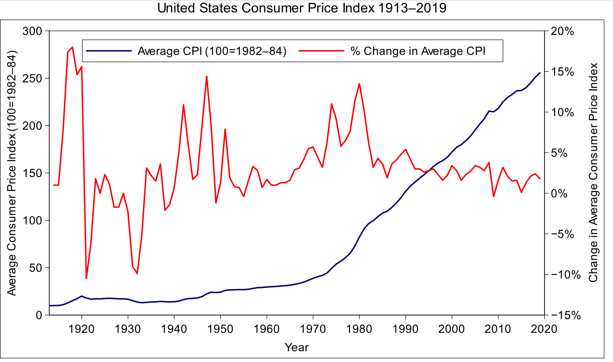<br />
미국의 CPI와 CPI 변화율, 출처: <a target="_blank" rel="noopener" href="https://en.wikipedia.org/wiki/Consumer_price_index"><code>[link]</code></a><br />
{:.figure}</p>
<p>위 그림에서 보면 파란색 선이 CPI, 빨간색 선이 CPI의 변화율을 나타냅니다. CPI는 장기적으로 봤을 때 매우 강한 장기 추세를 가집니다. 이에 비해 변화율은 CPI보다는 어떤 추세를 보이고 있지 않습니다.</p>
<p class='katex-block'><span class="katex-display"><span class="katex"><span class="katex-mathml"><math xmlns="http://www.w3.org/1998/Math/MathML" display="block"><semantics><mrow><mfrac><mrow><mi>C</mi><mi>P</mi><msub><mi>I</mi><mi>t</mi></msub><mo>−</mo><mi>C</mi><mi>P</mi><msub><mi>I</mi><mrow><mi>t</mi><mo>−</mo><mn>1</mn></mrow></msub></mrow><mrow><mi>C</mi><mi>P</mi><msub><mi>I</mi><mrow><mi>t</mi><mo>−</mo><mn>1</mn></mrow></msub></mrow></mfrac></mrow><annotation encoding="application/x-tex">\frac{CPI_{t} -CPI_{t-1}}{CPI_{t-1}}
</annotation></semantics></math></span><span class="katex-html" aria-hidden="true"><span class="base"><span class="strut" style="height:2.254661em;vertical-align:-0.894331em;"></span><span class="mord"><span class="mopen nulldelimiter"></span><span class="mfrac"><span class="vlist-t vlist-t2"><span class="vlist-r"><span class="vlist" style="height:1.36033em;"><span style="top:-2.3139999999999996em;"><span class="pstrut" style="height:3em;"></span><span class="mord"><span class="mord mathnormal" style="margin-right:0.07153em;">C</span><span class="mord mathnormal" style="margin-right:0.13889em;">P</span><span class="mord"><span class="mord mathnormal" style="margin-right:0.07847em;">I</span><span class="msupsub"><span class="vlist-t vlist-t2"><span class="vlist-r"><span class="vlist" style="height:0.301108em;"><span style="top:-2.5500000000000003em;margin-left:-0.07847em;margin-right:0.05em;"><span class="pstrut" style="height:2.7em;"></span><span class="sizing reset-size6 size3 mtight"><span class="mord mtight"><span class="mord mathnormal mtight">t</span><span class="mbin mtight">−</span><span class="mord mtight">1</span></span></span></span></span><span class="vlist-s">​</span></span><span class="vlist-r"><span class="vlist" style="height:0.208331em;"><span></span></span></span></span></span></span></span></span><span style="top:-3.23em;"><span class="pstrut" style="height:3em;"></span><span class="frac-line" style="border-bottom-width:0.04em;"></span></span><span style="top:-3.677em;"><span class="pstrut" style="height:3em;"></span><span class="mord"><span class="mord mathnormal" style="margin-right:0.07153em;">C</span><span class="mord mathnormal" style="margin-right:0.13889em;">P</span><span class="mord"><span class="mord mathnormal" style="margin-right:0.07847em;">I</span><span class="msupsub"><span class="vlist-t vlist-t2"><span class="vlist-r"><span class="vlist" style="height:0.2805559999999999em;"><span style="top:-2.5500000000000003em;margin-left:-0.07847em;margin-right:0.05em;"><span class="pstrut" style="height:2.7em;"></span><span class="sizing reset-size6 size3 mtight"><span class="mord mtight"><span class="mord mathnormal mtight">t</span></span></span></span></span><span class="vlist-s">​</span></span><span class="vlist-r"><span class="vlist" style="height:0.15em;"><span></span></span></span></span></span></span><span class="mspace" style="margin-right:0.2222222222222222em;"></span><span class="mbin">−</span><span class="mspace" style="margin-right:0.2222222222222222em;"></span><span class="mord mathnormal" style="margin-right:0.07153em;">C</span><span class="mord mathnormal" style="margin-right:0.13889em;">P</span><span class="mord"><span class="mord mathnormal" style="margin-right:0.07847em;">I</span><span class="msupsub"><span class="vlist-t vlist-t2"><span class="vlist-r"><span class="vlist" style="height:0.301108em;"><span style="top:-2.5500000000000003em;margin-left:-0.07847em;margin-right:0.05em;"><span class="pstrut" style="height:2.7em;"></span><span class="sizing reset-size6 size3 mtight"><span class="mord mtight"><span class="mord mathnormal mtight">t</span><span class="mbin mtight">−</span><span class="mord mtight">1</span></span></span></span></span><span class="vlist-s">​</span></span><span class="vlist-r"><span class="vlist" style="height:0.208331em;"><span></span></span></span></span></span></span></span></span></span><span class="vlist-s">​</span></span><span class="vlist-r"><span class="vlist" style="height:0.894331em;"><span></span></span></span></span></span><span class="mclose nulldelimiter"></span></span></span></span></span></span></p>
<p>로 정의가 됩니다. 즉, 이 값은 로그 차분값과 비슷하기 때문에</p>
<p class='katex-block'><span class="katex-display"><span class="katex"><span class="katex-mathml"><math xmlns="http://www.w3.org/1998/Math/MathML" display="block"><semantics><mrow><mfrac><mrow><mi>C</mi><mi>P</mi><msub><mi>I</mi><mi>t</mi></msub><mo>−</mo><mi>C</mi><mi>P</mi><msub><mi>I</mi><mrow><mi>t</mi><mo>−</mo><mn>1</mn></mrow></msub></mrow><mrow><mi>C</mi><mi>P</mi><msub><mi>I</mi><mrow><mi>t</mi><mo>−</mo><mn>1</mn></mrow></msub></mrow></mfrac><mo>≃</mo><mi mathvariant="normal">Δ</mi><mi>log</mi><mo>⁡</mo><mo stretchy="false">(</mo><mi>C</mi><mi>P</mi><msub><mi>I</mi><mi>t</mi></msub><mo stretchy="false">)</mo></mrow><annotation encoding="application/x-tex">\frac{CPI_{t} -CPI_{t-1}}{CPI_{t-1}} \simeq \Delta \log (CPI_{t})
</annotation></semantics></math></span><span class="katex-html" aria-hidden="true"><span class="base"><span class="strut" style="height:2.254661em;vertical-align:-0.894331em;"></span><span class="mord"><span class="mopen nulldelimiter"></span><span class="mfrac"><span class="vlist-t vlist-t2"><span class="vlist-r"><span class="vlist" style="height:1.36033em;"><span style="top:-2.3139999999999996em;"><span class="pstrut" style="height:3em;"></span><span class="mord"><span class="mord mathnormal" style="margin-right:0.07153em;">C</span><span class="mord mathnormal" style="margin-right:0.13889em;">P</span><span class="mord"><span class="mord mathnormal" style="margin-right:0.07847em;">I</span><span class="msupsub"><span class="vlist-t vlist-t2"><span class="vlist-r"><span class="vlist" style="height:0.301108em;"><span style="top:-2.5500000000000003em;margin-left:-0.07847em;margin-right:0.05em;"><span class="pstrut" style="height:2.7em;"></span><span class="sizing reset-size6 size3 mtight"><span class="mord mtight"><span class="mord mathnormal mtight">t</span><span class="mbin mtight">−</span><span class="mord mtight">1</span></span></span></span></span><span class="vlist-s">​</span></span><span class="vlist-r"><span class="vlist" style="height:0.208331em;"><span></span></span></span></span></span></span></span></span><span style="top:-3.23em;"><span class="pstrut" style="height:3em;"></span><span class="frac-line" style="border-bottom-width:0.04em;"></span></span><span style="top:-3.677em;"><span class="pstrut" style="height:3em;"></span><span class="mord"><span class="mord mathnormal" style="margin-right:0.07153em;">C</span><span class="mord mathnormal" style="margin-right:0.13889em;">P</span><span class="mord"><span class="mord mathnormal" style="margin-right:0.07847em;">I</span><span class="msupsub"><span class="vlist-t vlist-t2"><span class="vlist-r"><span class="vlist" style="height:0.2805559999999999em;"><span style="top:-2.5500000000000003em;margin-left:-0.07847em;margin-right:0.05em;"><span class="pstrut" style="height:2.7em;"></span><span class="sizing reset-size6 size3 mtight"><span class="mord mtight"><span class="mord mathnormal mtight">t</span></span></span></span></span><span class="vlist-s">​</span></span><span class="vlist-r"><span class="vlist" style="height:0.15em;"><span></span></span></span></span></span></span><span class="mspace" style="margin-right:0.2222222222222222em;"></span><span class="mbin">−</span><span class="mspace" style="margin-right:0.2222222222222222em;"></span><span class="mord mathnormal" style="margin-right:0.07153em;">C</span><span class="mord mathnormal" style="margin-right:0.13889em;">P</span><span class="mord"><span class="mord mathnormal" style="margin-right:0.07847em;">I</span><span class="msupsub"><span class="vlist-t vlist-t2"><span class="vlist-r"><span class="vlist" style="height:0.301108em;"><span style="top:-2.5500000000000003em;margin-left:-0.07847em;margin-right:0.05em;"><span class="pstrut" style="height:2.7em;"></span><span class="sizing reset-size6 size3 mtight"><span class="mord mtight"><span class="mord mathnormal mtight">t</span><span class="mbin mtight">−</span><span class="mord mtight">1</span></span></span></span></span><span class="vlist-s">​</span></span><span class="vlist-r"><span class="vlist" style="height:0.208331em;"><span></span></span></span></span></span></span></span></span></span><span class="vlist-s">​</span></span><span class="vlist-r"><span class="vlist" style="height:0.894331em;"><span></span></span></span></span></span><span class="mclose nulldelimiter"></span></span><span class="mspace" style="margin-right:0.2777777777777778em;"></span><span class="mrel">≃</span><span class="mspace" style="margin-right:0.2777777777777778em;"></span></span><span class="base"><span class="strut" style="height:1em;vertical-align:-0.25em;"></span><span class="mord">Δ</span><span class="mspace" style="margin-right:0.16666666666666666em;"></span><span class="mop">lo<span style="margin-right:0.01389em;">g</span></span><span class="mopen">(</span><span class="mord mathnormal" style="margin-right:0.07153em;">C</span><span class="mord mathnormal" style="margin-right:0.13889em;">P</span><span class="mord"><span class="mord mathnormal" style="margin-right:0.07847em;">I</span><span class="msupsub"><span class="vlist-t vlist-t2"><span class="vlist-r"><span class="vlist" style="height:0.2805559999999999em;"><span style="top:-2.5500000000000003em;margin-left:-0.07847em;margin-right:0.05em;"><span class="pstrut" style="height:2.7em;"></span><span class="sizing reset-size6 size3 mtight"><span class="mord mtight"><span class="mord mathnormal mtight">t</span></span></span></span></span><span class="vlist-s">​</span></span><span class="vlist-r"><span class="vlist" style="height:0.15em;"><span></span></span></span></span></span></span><span class="mclose">)</span></span></span></span></span></p>
<p>로 간주할 수 있습니다. 그러나 이 값도 분산으로 보면 과거에는 분산이 매우 컸으나, 현재 와서는 또 분산이 안정적으로 보이고 있어서 정상성을 띠고 있다고 보기 어렵습니다.</p>
<p></p>
<p>&quot;PPAP 전법이 통하지 않는데, 그럼 어떡하냐&quot;하신다면 대답해드리는게 인지 상정!<br />
정답은 로그 차분값에 또 차분을 할 수 있습니다 (즉 2차 차분을 시행합니다).</p>
<p>CPI의 연 변화율은 인플레이션율과 같은 의미인데, 이 인플레이션율의 연간 차이를 구하면 정말 정상성을 띠게 됩니다. 즉, 수식으로 표현하면 <span class="katex"><span class="katex-mathml"><math xmlns="http://www.w3.org/1998/Math/MathML"><semantics><mrow><mi mathvariant="normal">Δ</mi><mi>I</mi><mi>n</mi><msub><mi>f</mi><mi>t</mi></msub></mrow><annotation encoding="application/x-tex">\Delta Inf_{t}</annotation></semantics></math></span><span class="katex-html" aria-hidden="true"><span class="base"><span class="strut" style="height:0.8888799999999999em;vertical-align:-0.19444em;"></span><span class="mord">Δ</span><span class="mord mathnormal" style="margin-right:0.07847em;">I</span><span class="mord mathnormal">n</span><span class="mord"><span class="mord mathnormal" style="margin-right:0.10764em;">f</span><span class="msupsub"><span class="vlist-t vlist-t2"><span class="vlist-r"><span class="vlist" style="height:0.2805559999999999em;"><span style="top:-2.5500000000000003em;margin-left:-0.10764em;margin-right:0.05em;"><span class="pstrut" style="height:2.7em;"></span><span class="sizing reset-size6 size3 mtight"><span class="mord mtight"><span class="mord mathnormal mtight">t</span></span></span></span></span><span class="vlist-s">​</span></span><span class="vlist-r"><span class="vlist" style="height:0.15em;"><span></span></span></span></span></span></span></span></span></span>가 정상성을 띠게 됩니다.</p>
<p class='katex-block'><span class="katex-display"><span class="katex"><span class="katex-mathml"><math xmlns="http://www.w3.org/1998/Math/MathML" display="block"><semantics><mtable rowspacing="0.24999999999999992em" columnalign="right left" columnspacing="0em"><mtr><mtd><mstyle scriptlevel="0" displaystyle="true"><mrow><mi>I</mi><mi>n</mi><msub><mi>f</mi><mi>t</mi></msub></mrow></mstyle></mtd><mtd><mstyle scriptlevel="0" displaystyle="true"><mrow><mrow></mrow><mo>=</mo><mfrac><mrow><mi>C</mi><mi>P</mi><msub><mi>I</mi><mi>t</mi></msub><mo>−</mo><mi>C</mi><mi>P</mi><msub><mi>I</mi><mrow><mi>t</mi><mo>−</mo><mn>1</mn></mrow></msub></mrow><mrow><mi>C</mi><mi>P</mi><msub><mi>I</mi><mrow><mi>t</mi><mo>−</mo><mn>1</mn></mrow></msub></mrow></mfrac><mo>≃</mo><mi mathvariant="normal">Δ</mi><mi>log</mi><mo>⁡</mo><mo stretchy="false">(</mo><mi>C</mi><mi>P</mi><msub><mi>I</mi><mi>t</mi></msub><mo stretchy="false">)</mo></mrow></mstyle></mtd></mtr><mtr><mtd><mstyle scriptlevel="0" displaystyle="true"><mrow><mi mathvariant="normal">Δ</mi><mi>I</mi><mi>n</mi><msub><mi>f</mi><mi>t</mi></msub></mrow></mstyle></mtd><mtd><mstyle scriptlevel="0" displaystyle="true"><mrow><mrow></mrow><mo>=</mo><mi>I</mi><mi>n</mi><msub><mi>f</mi><mi>t</mi></msub><mo>−</mo><mi>I</mi><mi>n</mi><msub><mi>f</mi><mrow><mi>t</mi><mo>−</mo><mn>1</mn></mrow></msub></mrow></mstyle></mtd></mtr></mtable><annotation encoding="application/x-tex">\begin{aligned}
Inf_t &amp;= \frac{CPI_{t} -CPI_{t-1}}{CPI_{t-1}} \simeq \Delta \log (CPI_{t})\\
\Delta Inf_t &amp;=  Inf_t - Inf_{t-1}\\
\end{aligned}
</annotation></semantics></math></span><span class="katex-html" aria-hidden="true"><span class="base"><span class="strut" style="height:4.054661em;vertical-align:-1.7773304999999997em;"></span><span class="mord"><span class="mtable"><span class="col-align-r"><span class="vlist-t vlist-t2"><span class="vlist-r"><span class="vlist" style="height:2.2773305000000006em;"><span style="top:-4.277330500000001em;"><span class="pstrut" style="height:3.3603300000000003em;"></span><span class="mord"><span class="mord mathnormal" style="margin-right:0.07847em;">I</span><span class="mord mathnormal">n</span><span class="mord"><span class="mord mathnormal" style="margin-right:0.10764em;">f</span><span class="msupsub"><span class="vlist-t vlist-t2"><span class="vlist-r"><span class="vlist" style="height:0.2805559999999999em;"><span style="top:-2.5500000000000003em;margin-left:-0.10764em;margin-right:0.05em;"><span class="pstrut" style="height:2.7em;"></span><span class="sizing reset-size6 size3 mtight"><span class="mord mathnormal mtight">t</span></span></span></span><span class="vlist-s">​</span></span><span class="vlist-r"><span class="vlist" style="height:0.15em;"><span></span></span></span></span></span></span></span></span><span style="top:-2.2429995000000007em;"><span class="pstrut" style="height:3.3603300000000003em;"></span><span class="mord"><span class="mord">Δ</span><span class="mord mathnormal" style="margin-right:0.07847em;">I</span><span class="mord mathnormal">n</span><span class="mord"><span class="mord mathnormal" style="margin-right:0.10764em;">f</span><span class="msupsub"><span class="vlist-t vlist-t2"><span class="vlist-r"><span class="vlist" style="height:0.2805559999999999em;"><span style="top:-2.5500000000000003em;margin-left:-0.10764em;margin-right:0.05em;"><span class="pstrut" style="height:2.7em;"></span><span class="sizing reset-size6 size3 mtight"><span class="mord mathnormal mtight">t</span></span></span></span><span class="vlist-s">​</span></span><span class="vlist-r"><span class="vlist" style="height:0.15em;"><span></span></span></span></span></span></span></span></span></span><span class="vlist-s">​</span></span><span class="vlist-r"><span class="vlist" style="height:1.7773304999999997em;"><span></span></span></span></span></span><span class="col-align-l"><span class="vlist-t vlist-t2"><span class="vlist-r"><span class="vlist" style="height:2.2773305000000006em;"><span style="top:-4.277330500000001em;"><span class="pstrut" style="height:3.3603300000000003em;"></span><span class="mord"><span class="mord"></span><span class="mspace" style="margin-right:0.2777777777777778em;"></span><span class="mrel">=</span><span class="mspace" style="margin-right:0.2777777777777778em;"></span><span class="mord"><span class="mopen nulldelimiter"></span><span class="mfrac"><span class="vlist-t vlist-t2"><span class="vlist-r"><span class="vlist" style="height:1.36033em;"><span style="top:-2.3139999999999996em;"><span class="pstrut" style="height:3em;"></span><span class="mord"><span class="mord mathnormal" style="margin-right:0.07153em;">C</span><span class="mord mathnormal" style="margin-right:0.13889em;">P</span><span class="mord"><span class="mord mathnormal" style="margin-right:0.07847em;">I</span><span class="msupsub"><span class="vlist-t vlist-t2"><span class="vlist-r"><span class="vlist" style="height:0.301108em;"><span style="top:-2.5500000000000003em;margin-left:-0.07847em;margin-right:0.05em;"><span class="pstrut" style="height:2.7em;"></span><span class="sizing reset-size6 size3 mtight"><span class="mord mtight"><span class="mord mathnormal mtight">t</span><span class="mbin mtight">−</span><span class="mord mtight">1</span></span></span></span></span><span class="vlist-s">​</span></span><span class="vlist-r"><span class="vlist" style="height:0.208331em;"><span></span></span></span></span></span></span></span></span><span style="top:-3.23em;"><span class="pstrut" style="height:3em;"></span><span class="frac-line" style="border-bottom-width:0.04em;"></span></span><span style="top:-3.677em;"><span class="pstrut" style="height:3em;"></span><span class="mord"><span class="mord mathnormal" style="margin-right:0.07153em;">C</span><span class="mord mathnormal" style="margin-right:0.13889em;">P</span><span class="mord"><span class="mord mathnormal" style="margin-right:0.07847em;">I</span><span class="msupsub"><span class="vlist-t vlist-t2"><span class="vlist-r"><span class="vlist" style="height:0.2805559999999999em;"><span style="top:-2.5500000000000003em;margin-left:-0.07847em;margin-right:0.05em;"><span class="pstrut" style="height:2.7em;"></span><span class="sizing reset-size6 size3 mtight"><span class="mord mtight"><span class="mord mathnormal mtight">t</span></span></span></span></span><span class="vlist-s">​</span></span><span class="vlist-r"><span class="vlist" style="height:0.15em;"><span></span></span></span></span></span></span><span class="mspace" style="margin-right:0.2222222222222222em;"></span><span class="mbin">−</span><span class="mspace" style="margin-right:0.2222222222222222em;"></span><span class="mord mathnormal" style="margin-right:0.07153em;">C</span><span class="mord mathnormal" style="margin-right:0.13889em;">P</span><span class="mord"><span class="mord mathnormal" style="margin-right:0.07847em;">I</span><span class="msupsub"><span class="vlist-t vlist-t2"><span class="vlist-r"><span class="vlist" style="height:0.301108em;"><span style="top:-2.5500000000000003em;margin-left:-0.07847em;margin-right:0.05em;"><span class="pstrut" style="height:2.7em;"></span><span class="sizing reset-size6 size3 mtight"><span class="mord mtight"><span class="mord mathnormal mtight">t</span><span class="mbin mtight">−</span><span class="mord mtight">1</span></span></span></span></span><span class="vlist-s">​</span></span><span class="vlist-r"><span class="vlist" style="height:0.208331em;"><span></span></span></span></span></span></span></span></span></span><span class="vlist-s">​</span></span><span class="vlist-r"><span class="vlist" style="height:0.894331em;"><span></span></span></span></span></span><span class="mclose nulldelimiter"></span></span><span class="mspace" style="margin-right:0.2777777777777778em;"></span><span class="mrel">≃</span><span class="mspace" style="margin-right:0.2777777777777778em;"></span><span class="mord">Δ</span><span class="mspace" style="margin-right:0.16666666666666666em;"></span><span class="mop">lo<span style="margin-right:0.01389em;">g</span></span><span class="mopen">(</span><span class="mord mathnormal" style="margin-right:0.07153em;">C</span><span class="mord mathnormal" style="margin-right:0.13889em;">P</span><span class="mord"><span class="mord mathnormal" style="margin-right:0.07847em;">I</span><span class="msupsub"><span class="vlist-t vlist-t2"><span class="vlist-r"><span class="vlist" style="height:0.2805559999999999em;"><span style="top:-2.5500000000000003em;margin-left:-0.07847em;margin-right:0.05em;"><span class="pstrut" style="height:2.7em;"></span><span class="sizing reset-size6 size3 mtight"><span class="mord mtight"><span class="mord mathnormal mtight">t</span></span></span></span></span><span class="vlist-s">​</span></span><span class="vlist-r"><span class="vlist" style="height:0.15em;"><span></span></span></span></span></span></span><span class="mclose">)</span></span></span><span style="top:-2.2429995000000007em;"><span class="pstrut" style="height:3.3603300000000003em;"></span><span class="mord"><span class="mord"></span><span class="mspace" style="margin-right:0.2777777777777778em;"></span><span class="mrel">=</span><span class="mspace" style="margin-right:0.2777777777777778em;"></span><span class="mord mathnormal" style="margin-right:0.07847em;">I</span><span class="mord mathnormal">n</span><span class="mord"><span class="mord mathnormal" style="margin-right:0.10764em;">f</span><span class="msupsub"><span class="vlist-t vlist-t2"><span class="vlist-r"><span class="vlist" style="height:0.2805559999999999em;"><span style="top:-2.5500000000000003em;margin-left:-0.10764em;margin-right:0.05em;"><span class="pstrut" style="height:2.7em;"></span><span class="sizing reset-size6 size3 mtight"><span class="mord mathnormal mtight">t</span></span></span></span><span class="vlist-s">​</span></span><span class="vlist-r"><span class="vlist" style="height:0.15em;"><span></span></span></span></span></span></span><span class="mspace" style="margin-right:0.2222222222222222em;"></span><span class="mbin">−</span><span class="mspace" style="margin-right:0.2222222222222222em;"></span><span class="mord mathnormal" style="margin-right:0.07847em;">I</span><span class="mord mathnormal">n</span><span class="mord"><span class="mord mathnormal" style="margin-right:0.10764em;">f</span><span class="msupsub"><span class="vlist-t vlist-t2"><span class="vlist-r"><span class="vlist" style="height:0.301108em;"><span style="top:-2.5500000000000003em;margin-left:-0.10764em;margin-right:0.05em;"><span class="pstrut" style="height:2.7em;"></span><span class="sizing reset-size6 size3 mtight"><span class="mord mtight"><span class="mord mathnormal mtight">t</span><span class="mbin mtight">−</span><span class="mord mtight">1</span></span></span></span></span><span class="vlist-s">​</span></span><span class="vlist-r"><span class="vlist" style="height:0.208331em;"><span></span></span></span></span></span></span></span></span></span><span class="vlist-s">​</span></span><span class="vlist-r"><span class="vlist" style="height:1.7773304999999997em;"><span></span></span></span></span></span></span></span></span></span></span></span></p>
<hr />
<h2 id="정상성-검증을-위한-두-가지-방법"><a class="markdownIt-Anchor" href="#정상성-검증을-위한-두-가지-방법"></a> 정상성 검증을 위한 두 가지 방법</h2>
<p>휴, 정상성을 띠도록 하는 두 가지 방법에 대해 알아보았는데요.<br />
이렇게 차분 또는 로그 변환을 통해 시계열을 &quot;안정화&quot;시켜줬을 때 실제로 그 변환된 시계열이 정상성을 만족하는지 검증하는 과정이 필요합니다.<br />
크게 그래프로 직관적으로 파악하는 방법과 혹은 통계적인 검정 방법을 이용하여 정상성을 검증할 수 있습니다.</p>
<hr />
<h3 id="그래프로-정상성-파악하기"><a class="markdownIt-Anchor" href="#그래프로-정상성-파악하기"></a> 그래프로 정상성 파악하기</h3>
<blockquote>
<p>그래프 상 추세가 없이 일정한 폭으로 상승과 하락을 반복한다면 정상성을 띠는 그래프라 추측할 수 있습니다. 또한, ACF가 허용 범위 안에 존재한다면 정상성을 띤다 말할 수 있습니다.</p>
</blockquote>
<p>위에서 정상성의 정의를 내렸을 때 아래 그래프를 활용한 것을 기억하시나요?</p>
<p><br />
여기서 정상성을 가지는 시계열은 (b)와 (g)뿐입니다.<br />
{:.figure}</p>
<p>이처럼 시계열의 모습만 보고도 직관적으로 정상성을 띠는지 확인할 수 있습니다. 정상성의 정의에 따라서,</p>
<ul>
<li>그래프에 지속적인 상승 또는 하락 추세가 없어야 하고</li>
<li>과거의 변동폭과 현재의 변동폭이 같아야 하며</li>
<li>계절성도 없어야 합니다.</li>
</ul>
<p>또한, 이런 정상성을 가진 시계열은 평균으로 회귀하려는 특징 (Mean reverting)을 가지고 있습니다.<br />
즉, 어떤 시점에서 평균을 크게 벗어났는데 조만간 다시 평균으로 돌아가려는 성향을 가지고 있다면, 정상성을 가진다 추측해볼 수 있습니다.</p>
<p>이보다 더 직관적인 방법은 <strong>자기 상관 함수</strong> (ACF; Auto Correlation Function)을 이용하는 것입니다.<br />
자기 상관 함수는 전혀 새로운 개념은 아니고, 일반적인 상관 계수를 구하는 공식에서 X와 Y간의 상관 관계를 구하는 대신, 시계열 자료인 X 자체의 상관 관계를 구하기 위해 고안된 것일 뿐입니다.<br />
즉, 시계열 자료에서 <span class="katex"><span class="katex-mathml"><math xmlns="http://www.w3.org/1998/Math/MathML"><semantics><mrow><mi>t</mi></mrow><annotation encoding="application/x-tex">t</annotation></semantics></math></span><span class="katex-html" aria-hidden="true"><span class="base"><span class="strut" style="height:0.61508em;vertical-align:0em;"></span><span class="mord mathnormal">t</span></span></span></span> 시점의 값과 그보다 <span class="katex"><span class="katex-mathml"><math xmlns="http://www.w3.org/1998/Math/MathML"><semantics><mrow><mi>k</mi></mrow><annotation encoding="application/x-tex">k</annotation></semantics></math></span><span class="katex-html" aria-hidden="true"><span class="base"><span class="strut" style="height:0.69444em;vertical-align:0em;"></span><span class="mord mathnormal" style="margin-right:0.03148em;">k</span></span></span></span>시점 앞선 <span class="katex"><span class="katex-mathml"><math xmlns="http://www.w3.org/1998/Math/MathML"><semantics><mrow><mi>t</mi><mo>−</mo><mi>k</mi></mrow><annotation encoding="application/x-tex">t-k</annotation></semantics></math></span><span class="katex-html" aria-hidden="true"><span class="base"><span class="strut" style="height:0.69841em;vertical-align:-0.08333em;"></span><span class="mord mathnormal">t</span><span class="mspace" style="margin-right:0.2222222222222222em;"></span><span class="mbin">−</span><span class="mspace" style="margin-right:0.2222222222222222em;"></span></span><span class="base"><span class="strut" style="height:0.69444em;vertical-align:0em;"></span><span class="mord mathnormal" style="margin-right:0.03148em;">k</span></span></span></span> 시점 간의 상관 계수를 <span class="katex"><span class="katex-mathml"><math xmlns="http://www.w3.org/1998/Math/MathML"><semantics><mrow><msub><mi>r</mi><mi>k</mi></msub></mrow><annotation encoding="application/x-tex">r_k</annotation></semantics></math></span><span class="katex-html" aria-hidden="true"><span class="base"><span class="strut" style="height:0.58056em;vertical-align:-0.15em;"></span><span class="mord"><span class="mord mathnormal" style="margin-right:0.02778em;">r</span><span class="msupsub"><span class="vlist-t vlist-t2"><span class="vlist-r"><span class="vlist" style="height:0.33610799999999996em;"><span style="top:-2.5500000000000003em;margin-left:-0.02778em;margin-right:0.05em;"><span class="pstrut" style="height:2.7em;"></span><span class="sizing reset-size6 size3 mtight"><span class="mord mathnormal mtight" style="margin-right:0.03148em;">k</span></span></span></span><span class="vlist-s">​</span></span><span class="vlist-r"><span class="vlist" style="height:0.15em;"><span></span></span></span></span></span></span></span></span></span>라 할 때, 다음과 같이 자기 상관 함수가 정의됩니다.</p>
<p class='katex-block'><span class="katex-display"><span class="katex"><span class="katex-mathml"><math xmlns="http://www.w3.org/1998/Math/MathML" display="block"><semantics><mrow><msub><mi>r</mi><mi>k</mi></msub><mo>=</mo><mfrac><mrow><munderover><mo>∑</mo><mrow><mi>t</mi><mo>=</mo><mi>k</mi><mo>+</mo><mn>1</mn></mrow><mi>T</mi></munderover><mo stretchy="false">(</mo><msub><mi>y</mi><mi>t</mi></msub><mo>−</mo><mover accent="true"><mi>y</mi><mo>ˉ</mo></mover><mo stretchy="false">)</mo><mo stretchy="false">(</mo><msub><mi>y</mi><mrow><mi>t</mi><mo>−</mo><mi>k</mi></mrow></msub><mo>−</mo><mover accent="true"><mi>y</mi><mo>ˉ</mo></mover><mo stretchy="false">)</mo></mrow><mrow><munderover><mo>∑</mo><mi>t</mi><mi>T</mi></munderover><mo stretchy="false">(</mo><msub><mi>y</mi><mi>t</mi></msub><mo>−</mo><mover accent="true"><mi>y</mi><mo>ˉ</mo></mover><msup><mo stretchy="false">)</mo><mn>2</mn></msup></mrow></mfrac></mrow><annotation encoding="application/x-tex">r_k = \frac{\sum_{t = k+1}^T (y_t - \bar{y}) (y_{t-k} - \bar{y})}{\sum_t^T (y_t - \bar{y})^2}
</annotation></semantics></math></span><span class="katex-html" aria-hidden="true"><span class="base"><span class="strut" style="height:0.58056em;vertical-align:-0.15em;"></span><span class="mord"><span class="mord mathnormal" style="margin-right:0.02778em;">r</span><span class="msupsub"><span class="vlist-t vlist-t2"><span class="vlist-r"><span class="vlist" style="height:0.33610799999999996em;"><span style="top:-2.5500000000000003em;margin-left:-0.02778em;margin-right:0.05em;"><span class="pstrut" style="height:2.7em;"></span><span class="sizing reset-size6 size3 mtight"><span class="mord mathnormal mtight" style="margin-right:0.03148em;">k</span></span></span></span><span class="vlist-s">​</span></span><span class="vlist-r"><span class="vlist" style="height:0.15em;"><span></span></span></span></span></span></span><span class="mspace" style="margin-right:0.2777777777777778em;"></span><span class="mrel">=</span><span class="mspace" style="margin-right:0.2777777777777778em;"></span></span><span class="base"><span class="strut" style="height:2.900213em;vertical-align:-1.170941em;"></span><span class="mord"><span class="mopen nulldelimiter"></span><span class="mfrac"><span class="vlist-t vlist-t2"><span class="vlist-r"><span class="vlist" style="height:1.729272em;"><span style="top:-2.128769em;"><span class="pstrut" style="height:3em;"></span><span class="mord"><span class="mop"><span class="mop op-symbol small-op" style="position:relative;top:-0.0000050000000000050004em;">∑</span><span class="msupsub"><span class="vlist-t vlist-t2"><span class="vlist-r"><span class="vlist" style="height:0.981231em;"><span style="top:-2.40029em;margin-left:0em;margin-right:0.05em;"><span class="pstrut" style="height:2.7em;"></span><span class="sizing reset-size6 size3 mtight"><span class="mord mathnormal mtight">t</span></span></span><span style="top:-3.2029em;margin-right:0.05em;"><span class="pstrut" style="height:2.7em;"></span><span class="sizing reset-size6 size3 mtight"><span class="mord mathnormal mtight" style="margin-right:0.13889em;">T</span></span></span></span><span class="vlist-s">​</span></span><span class="vlist-r"><span class="vlist" style="height:0.29971000000000003em;"><span></span></span></span></span></span></span><span class="mopen">(</span><span class="mord"><span class="mord mathnormal" style="margin-right:0.03588em;">y</span><span class="msupsub"><span class="vlist-t vlist-t2"><span class="vlist-r"><span class="vlist" style="height:0.2805559999999999em;"><span style="top:-2.5500000000000003em;margin-left:-0.03588em;margin-right:0.05em;"><span class="pstrut" style="height:2.7em;"></span><span class="sizing reset-size6 size3 mtight"><span class="mord mathnormal mtight">t</span></span></span></span><span class="vlist-s">​</span></span><span class="vlist-r"><span class="vlist" style="height:0.15em;"><span></span></span></span></span></span></span><span class="mspace" style="margin-right:0.2222222222222222em;"></span><span class="mbin">−</span><span class="mspace" style="margin-right:0.2222222222222222em;"></span><span class="mord accent"><span class="vlist-t vlist-t2"><span class="vlist-r"><span class="vlist" style="height:0.56778em;"><span style="top:-3em;"><span class="pstrut" style="height:3em;"></span><span class="mord"><span class="mord mathnormal" style="margin-right:0.03588em;">y</span></span></span><span style="top:-3em;"><span class="pstrut" style="height:3em;"></span><span class="accent-body" style="left:-0.19444em;"><span class="mord">ˉ</span></span></span></span><span class="vlist-s">​</span></span><span class="vlist-r"><span class="vlist" style="height:0.19444em;"><span></span></span></span></span></span><span class="mclose"><span class="mclose">)</span><span class="msupsub"><span class="vlist-t"><span class="vlist-r"><span class="vlist" style="height:0.740108em;"><span style="top:-2.9890000000000003em;margin-right:0.05em;"><span class="pstrut" style="height:2.7em;"></span><span class="sizing reset-size6 size3 mtight"><span class="mord mtight">2</span></span></span></span></span></span></span></span></span></span><span style="top:-3.23em;"><span class="pstrut" style="height:3em;"></span><span class="frac-line" style="border-bottom-width:0.04em;"></span></span><span style="top:-3.748041em;"><span class="pstrut" style="height:3em;"></span><span class="mord"><span class="mop"><span class="mop op-symbol small-op" style="position:relative;top:-0.0000050000000000050004em;">∑</span><span class="msupsub"><span class="vlist-t vlist-t2"><span class="vlist-r"><span class="vlist" style="height:0.981231em;"><span style="top:-2.40029em;margin-left:0em;margin-right:0.05em;"><span class="pstrut" style="height:2.7em;"></span><span class="sizing reset-size6 size3 mtight"><span class="mord mtight"><span class="mord mathnormal mtight">t</span><span class="mrel mtight">=</span><span class="mord mathnormal mtight" style="margin-right:0.03148em;">k</span><span class="mbin mtight">+</span><span class="mord mtight">1</span></span></span></span><span style="top:-3.2029em;margin-right:0.05em;"><span class="pstrut" style="height:2.7em;"></span><span class="sizing reset-size6 size3 mtight"><span class="mord mathnormal mtight" style="margin-right:0.13889em;">T</span></span></span></span><span class="vlist-s">​</span></span><span class="vlist-r"><span class="vlist" style="height:0.35804100000000005em;"><span></span></span></span></span></span></span><span class="mopen">(</span><span class="mord"><span class="mord mathnormal" style="margin-right:0.03588em;">y</span><span class="msupsub"><span class="vlist-t vlist-t2"><span class="vlist-r"><span class="vlist" style="height:0.2805559999999999em;"><span style="top:-2.5500000000000003em;margin-left:-0.03588em;margin-right:0.05em;"><span class="pstrut" style="height:2.7em;"></span><span class="sizing reset-size6 size3 mtight"><span class="mord mathnormal mtight">t</span></span></span></span><span class="vlist-s">​</span></span><span class="vlist-r"><span class="vlist" style="height:0.15em;"><span></span></span></span></span></span></span><span class="mspace" style="margin-right:0.2222222222222222em;"></span><span class="mbin">−</span><span class="mspace" style="margin-right:0.2222222222222222em;"></span><span class="mord accent"><span class="vlist-t vlist-t2"><span class="vlist-r"><span class="vlist" style="height:0.56778em;"><span style="top:-3em;"><span class="pstrut" style="height:3em;"></span><span class="mord"><span class="mord mathnormal" style="margin-right:0.03588em;">y</span></span></span><span style="top:-3em;"><span class="pstrut" style="height:3em;"></span><span class="accent-body" style="left:-0.19444em;"><span class="mord">ˉ</span></span></span></span><span class="vlist-s">​</span></span><span class="vlist-r"><span class="vlist" style="height:0.19444em;"><span></span></span></span></span></span><span class="mclose">)</span><span class="mopen">(</span><span class="mord"><span class="mord mathnormal" style="margin-right:0.03588em;">y</span><span class="msupsub"><span class="vlist-t vlist-t2"><span class="vlist-r"><span class="vlist" style="height:0.3361079999999999em;"><span style="top:-2.5500000000000003em;margin-left:-0.03588em;margin-right:0.05em;"><span class="pstrut" style="height:2.7em;"></span><span class="sizing reset-size6 size3 mtight"><span class="mord mtight"><span class="mord mathnormal mtight">t</span><span class="mbin mtight">−</span><span class="mord mathnormal mtight" style="margin-right:0.03148em;">k</span></span></span></span></span><span class="vlist-s">​</span></span><span class="vlist-r"><span class="vlist" style="height:0.208331em;"><span></span></span></span></span></span></span><span class="mspace" style="margin-right:0.2222222222222222em;"></span><span class="mbin">−</span><span class="mspace" style="margin-right:0.2222222222222222em;"></span><span class="mord accent"><span class="vlist-t vlist-t2"><span class="vlist-r"><span class="vlist" style="height:0.56778em;"><span style="top:-3em;"><span class="pstrut" style="height:3em;"></span><span class="mord"><span class="mord mathnormal" style="margin-right:0.03588em;">y</span></span></span><span style="top:-3em;"><span class="pstrut" style="height:3em;"></span><span class="accent-body" style="left:-0.19444em;"><span class="mord">ˉ</span></span></span></span><span class="vlist-s">​</span></span><span class="vlist-r"><span class="vlist" style="height:0.19444em;"><span></span></span></span></span></span><span class="mclose">)</span></span></span></span><span class="vlist-s">​</span></span><span class="vlist-r"><span class="vlist" style="height:1.170941em;"><span></span></span></span></span></span><span class="mclose nulldelimiter"></span></span></span></span></span></span></p>
<p>여기서 <span class="katex"><span class="katex-mathml"><math xmlns="http://www.w3.org/1998/Math/MathML"><semantics><mrow><mi>T</mi></mrow><annotation encoding="application/x-tex">T</annotation></semantics></math></span><span class="katex-html" aria-hidden="true"><span class="base"><span class="strut" style="height:0.68333em;vertical-align:0em;"></span><span class="mord mathnormal" style="margin-right:0.13889em;">T</span></span></span></span>는 시계열 데이터의 행 수를 의미합니다.</p>
<p>수식은 크게 중요하지 않고, ACF를 그렸을 때 어떻게 나와야 정상성이 보이는지 아는 것이 중요합니다.<br />
퀴즈입니다! 다음 1 ~ 3번의 ACF 중에 어떤 ACF가 정상성을 띠는 그래프일까요?</p>
<p>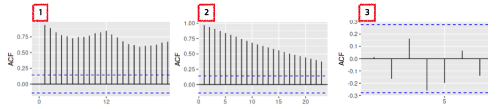</p>
<p>방법도 안 알려주고 냅다 퀴즈를 던져 당황하셨죠? 그래도 직감이란 것이 있을 것 같아 말씀드려보았습니다.<br />
정답은 <strong>3번 그래프</strong>입니다. 3번 그래프와 1, 2번 그래프를 비교했을 때 가장 큰 차이점은 &quot;<strong>파란색 점선 안에 값이 들어왔는지</strong>&quot;입니다.</p>
<p>ACF 그래프에서 가로축은 시차 (lag), 세로축은 ACF의 값입니다. 예를 들어, 4에 찍힌 값은 <span class="katex"><span class="katex-mathml"><math xmlns="http://www.w3.org/1998/Math/MathML"><semantics><mrow><msub><mi>y</mi><mi>t</mi></msub></mrow><annotation encoding="application/x-tex">y_t</annotation></semantics></math></span><span class="katex-html" aria-hidden="true"><span class="base"><span class="strut" style="height:0.625em;vertical-align:-0.19444em;"></span><span class="mord"><span class="mord mathnormal" style="margin-right:0.03588em;">y</span><span class="msupsub"><span class="vlist-t vlist-t2"><span class="vlist-r"><span class="vlist" style="height:0.2805559999999999em;"><span style="top:-2.5500000000000003em;margin-left:-0.03588em;margin-right:0.05em;"><span class="pstrut" style="height:2.7em;"></span><span class="sizing reset-size6 size3 mtight"><span class="mord mathnormal mtight">t</span></span></span></span><span class="vlist-s">​</span></span><span class="vlist-r"><span class="vlist" style="height:0.15em;"><span></span></span></span></span></span></span></span></span></span>와 네 시점 앞인 <span class="katex"><span class="katex-mathml"><math xmlns="http://www.w3.org/1998/Math/MathML"><semantics><mrow><msub><mi>y</mi><mrow><mi>t</mi><mo>−</mo><mn>4</mn></mrow></msub></mrow><annotation encoding="application/x-tex">y_{t-4}</annotation></semantics></math></span><span class="katex-html" aria-hidden="true"><span class="base"><span class="strut" style="height:0.638891em;vertical-align:-0.208331em;"></span><span class="mord"><span class="mord mathnormal" style="margin-right:0.03588em;">y</span><span class="msupsub"><span class="vlist-t vlist-t2"><span class="vlist-r"><span class="vlist" style="height:0.301108em;"><span style="top:-2.5500000000000003em;margin-left:-0.03588em;margin-right:0.05em;"><span class="pstrut" style="height:2.7em;"></span><span class="sizing reset-size6 size3 mtight"><span class="mord mtight"><span class="mord mathnormal mtight">t</span><span class="mbin mtight">−</span><span class="mord mtight">4</span></span></span></span></span><span class="vlist-s">​</span></span><span class="vlist-r"><span class="vlist" style="height:0.208331em;"><span></span></span></span></span></span></span></span></span></span> 간의 ACF를 의미합니다.<br />
이 때 1번과 2번은 시차가 뒤로 갈수록 ACF 값이 감소하고 있지만, 확연하게 줄어들지 않습니다.<br />
이는, 오늘의 데이터가 어제의 데이터에 가장 크게 의존하고, 시간이 지날수록 오늘과 먼 과거의 데이터 간의 자기 상관은 감소함을 의미합니다.</p>
<p>이에 비해 정상성을 띠는 데이터는 파란색 점선, 즉 신뢰 구간 안에 자기 상관이 존재합니다. 이럴 경우, 데이터가 정상성을 띤다고 할 수 있습니다.<br />
즉, 어제의 데이터와 오늘의 데이터 간에 상관 관계는 당연히 있겠지만, 허용 범위 (파란색 점선) 안에 들어온다는 것을 의미합니다.</p>
<hr />
<h3 id="가설-검정으로-정상성-파악하기"><a class="markdownIt-Anchor" href="#가설-검정으로-정상성-파악하기"></a> 가설 검정으로 정상성 파악하기</h3>
<blockquote>
<p>귀무 가설을 기각해야 (p-value가 작아야) 정상성을 띱니다!</p>
</blockquote>
<p>정상성을 파악하는 두 번째 방법은 <strong>가설 검정</strong>입니다. 바로 <strong>단위근 검정</strong> (Unit Root Test)인데요.<br />
이 검정에는 여러 학자들이 고안하여 검정 방법이 아래와 같이 존재합니다.</p>
<ul>
<li>KPSS 검정</li>
<li>Dicky-Fuller 검정</li>
<li>ADF 검정 (Augmented Dicky-Fuller Test)</li>
</ul>
<p>설명의 편의성을 위해, AR(1)모형에서의 Dicky-Fuller Test에 대해 설명드리겠습니다.</p>
<p>AR(1) 모형은 아직 설명하지 못했지만 현 시점의 값이 한 시점 앞의 시점 (lag = 1)의 값에 의존하는 모형으로, 다음과 같이 쓸 수 있습니다.</p>
<p class='katex-block'><span class="katex-display"><span class="katex"><span class="katex-mathml"><math xmlns="http://www.w3.org/1998/Math/MathML" display="block"><semantics><mrow><msub><mi>y</mi><mi>t</mi></msub><mo>=</mo><msub><mi>β</mi><mn>0</mn></msub><mo>+</mo><msub><mi>β</mi><mn>1</mn></msub><msub><mi>y</mi><mrow><mi>t</mi><mo>−</mo><mn>1</mn></mrow></msub><mo>+</mo><msub><mi>e</mi><mi>t</mi></msub></mrow><annotation encoding="application/x-tex">y_t = \beta_0 + \beta_1 y_{t-1} + e_t
</annotation></semantics></math></span><span class="katex-html" aria-hidden="true"><span class="base"><span class="strut" style="height:0.625em;vertical-align:-0.19444em;"></span><span class="mord"><span class="mord mathnormal" style="margin-right:0.03588em;">y</span><span class="msupsub"><span class="vlist-t vlist-t2"><span class="vlist-r"><span class="vlist" style="height:0.2805559999999999em;"><span style="top:-2.5500000000000003em;margin-left:-0.03588em;margin-right:0.05em;"><span class="pstrut" style="height:2.7em;"></span><span class="sizing reset-size6 size3 mtight"><span class="mord mathnormal mtight">t</span></span></span></span><span class="vlist-s">​</span></span><span class="vlist-r"><span class="vlist" style="height:0.15em;"><span></span></span></span></span></span></span><span class="mspace" style="margin-right:0.2777777777777778em;"></span><span class="mrel">=</span><span class="mspace" style="margin-right:0.2777777777777778em;"></span></span><span class="base"><span class="strut" style="height:0.8888799999999999em;vertical-align:-0.19444em;"></span><span class="mord"><span class="mord mathnormal" style="margin-right:0.05278em;">β</span><span class="msupsub"><span class="vlist-t vlist-t2"><span class="vlist-r"><span class="vlist" style="height:0.30110799999999993em;"><span style="top:-2.5500000000000003em;margin-left:-0.05278em;margin-right:0.05em;"><span class="pstrut" style="height:2.7em;"></span><span class="sizing reset-size6 size3 mtight"><span class="mord mtight">0</span></span></span></span><span class="vlist-s">​</span></span><span class="vlist-r"><span class="vlist" style="height:0.15em;"><span></span></span></span></span></span></span><span class="mspace" style="margin-right:0.2222222222222222em;"></span><span class="mbin">+</span><span class="mspace" style="margin-right:0.2222222222222222em;"></span></span><span class="base"><span class="strut" style="height:0.902771em;vertical-align:-0.208331em;"></span><span class="mord"><span class="mord mathnormal" style="margin-right:0.05278em;">β</span><span class="msupsub"><span class="vlist-t vlist-t2"><span class="vlist-r"><span class="vlist" style="height:0.30110799999999993em;"><span style="top:-2.5500000000000003em;margin-left:-0.05278em;margin-right:0.05em;"><span class="pstrut" style="height:2.7em;"></span><span class="sizing reset-size6 size3 mtight"><span class="mord mtight">1</span></span></span></span><span class="vlist-s">​</span></span><span class="vlist-r"><span class="vlist" style="height:0.15em;"><span></span></span></span></span></span></span><span class="mord"><span class="mord mathnormal" style="margin-right:0.03588em;">y</span><span class="msupsub"><span class="vlist-t vlist-t2"><span class="vlist-r"><span class="vlist" style="height:0.301108em;"><span style="top:-2.5500000000000003em;margin-left:-0.03588em;margin-right:0.05em;"><span class="pstrut" style="height:2.7em;"></span><span class="sizing reset-size6 size3 mtight"><span class="mord mtight"><span class="mord mathnormal mtight">t</span><span class="mbin mtight">−</span><span class="mord mtight">1</span></span></span></span></span><span class="vlist-s">​</span></span><span class="vlist-r"><span class="vlist" style="height:0.208331em;"><span></span></span></span></span></span></span><span class="mspace" style="margin-right:0.2222222222222222em;"></span><span class="mbin">+</span><span class="mspace" style="margin-right:0.2222222222222222em;"></span></span><span class="base"><span class="strut" style="height:0.58056em;vertical-align:-0.15em;"></span><span class="mord"><span class="mord mathnormal">e</span><span class="msupsub"><span class="vlist-t vlist-t2"><span class="vlist-r"><span class="vlist" style="height:0.2805559999999999em;"><span style="top:-2.5500000000000003em;margin-left:0em;margin-right:0.05em;"><span class="pstrut" style="height:2.7em;"></span><span class="sizing reset-size6 size3 mtight"><span class="mord mathnormal mtight">t</span></span></span></span><span class="vlist-s">​</span></span><span class="vlist-r"><span class="vlist" style="height:0.15em;"><span></span></span></span></span></span></span></span></span></span></span></p>
<p>여기서의 귀무 가설과 대립 가설은</p>
<p class='katex-block'><span class="katex-display"><span class="katex"><span class="katex-mathml"><math xmlns="http://www.w3.org/1998/Math/MathML" display="block"><semantics><mrow><msub><mi>H</mi><mn>0</mn></msub><mo>=</mo><msub><mi>β</mi><mn>1</mn></msub><mo>=</mo><mn>1</mn><mtext> </mtext><mi>v</mi><mi>s</mi><mi mathvariant="normal">.</mi><mtext> </mtext><msub><mi>H</mi><mn>1</mn></msub><mo>:</mo><msub><mi>β</mi><mn>1</mn></msub><mo>&lt;</mo><mn>1</mn></mrow><annotation encoding="application/x-tex">H_0 = \beta_1 = 1\ vs. \ H_1: \beta_1 &lt; 1
</annotation></semantics></math></span><span class="katex-html" aria-hidden="true"><span class="base"><span class="strut" style="height:0.83333em;vertical-align:-0.15em;"></span><span class="mord"><span class="mord mathnormal" style="margin-right:0.08125em;">H</span><span class="msupsub"><span class="vlist-t vlist-t2"><span class="vlist-r"><span class="vlist" style="height:0.30110799999999993em;"><span style="top:-2.5500000000000003em;margin-left:-0.08125em;margin-right:0.05em;"><span class="pstrut" style="height:2.7em;"></span><span class="sizing reset-size6 size3 mtight"><span class="mord mtight">0</span></span></span></span><span class="vlist-s">​</span></span><span class="vlist-r"><span class="vlist" style="height:0.15em;"><span></span></span></span></span></span></span><span class="mspace" style="margin-right:0.2777777777777778em;"></span><span class="mrel">=</span><span class="mspace" style="margin-right:0.2777777777777778em;"></span></span><span class="base"><span class="strut" style="height:0.8888799999999999em;vertical-align:-0.19444em;"></span><span class="mord"><span class="mord mathnormal" style="margin-right:0.05278em;">β</span><span class="msupsub"><span class="vlist-t vlist-t2"><span class="vlist-r"><span class="vlist" style="height:0.30110799999999993em;"><span style="top:-2.5500000000000003em;margin-left:-0.05278em;margin-right:0.05em;"><span class="pstrut" style="height:2.7em;"></span><span class="sizing reset-size6 size3 mtight"><span class="mord mtight">1</span></span></span></span><span class="vlist-s">​</span></span><span class="vlist-r"><span class="vlist" style="height:0.15em;"><span></span></span></span></span></span></span><span class="mspace" style="margin-right:0.2777777777777778em;"></span><span class="mrel">=</span><span class="mspace" style="margin-right:0.2777777777777778em;"></span></span><span class="base"><span class="strut" style="height:0.83333em;vertical-align:-0.15em;"></span><span class="mord">1</span><span class="mspace"> </span><span class="mord mathnormal" style="margin-right:0.03588em;">v</span><span class="mord mathnormal">s</span><span class="mord">.</span><span class="mspace"> </span><span class="mord"><span class="mord mathnormal" style="margin-right:0.08125em;">H</span><span class="msupsub"><span class="vlist-t vlist-t2"><span class="vlist-r"><span class="vlist" style="height:0.30110799999999993em;"><span style="top:-2.5500000000000003em;margin-left:-0.08125em;margin-right:0.05em;"><span class="pstrut" style="height:2.7em;"></span><span class="sizing reset-size6 size3 mtight"><span class="mord mtight">1</span></span></span></span><span class="vlist-s">​</span></span><span class="vlist-r"><span class="vlist" style="height:0.15em;"><span></span></span></span></span></span></span><span class="mspace" style="margin-right:0.2777777777777778em;"></span><span class="mrel">:</span><span class="mspace" style="margin-right:0.2777777777777778em;"></span></span><span class="base"><span class="strut" style="height:0.8888799999999999em;vertical-align:-0.19444em;"></span><span class="mord"><span class="mord mathnormal" style="margin-right:0.05278em;">β</span><span class="msupsub"><span class="vlist-t vlist-t2"><span class="vlist-r"><span class="vlist" style="height:0.30110799999999993em;"><span style="top:-2.5500000000000003em;margin-left:-0.05278em;margin-right:0.05em;"><span class="pstrut" style="height:2.7em;"></span><span class="sizing reset-size6 size3 mtight"><span class="mord mtight">1</span></span></span></span><span class="vlist-s">​</span></span><span class="vlist-r"><span class="vlist" style="height:0.15em;"><span></span></span></span></span></span></span><span class="mspace" style="margin-right:0.2777777777777778em;"></span><span class="mrel">&lt;</span><span class="mspace" style="margin-right:0.2777777777777778em;"></span></span><span class="base"><span class="strut" style="height:0.64444em;vertical-align:0em;"></span><span class="mord">1</span></span></span></span></span></p>
<p>로 정의가 되는데요.<br />
귀무 가설을 만족한다면 <span class="katex"><span class="katex-mathml"><math xmlns="http://www.w3.org/1998/Math/MathML"><semantics><mrow><msub><mi>β</mi><mn>1</mn></msub><mo>=</mo><mn>1</mn></mrow><annotation encoding="application/x-tex">\beta_1 = 1</annotation></semantics></math></span><span class="katex-html" aria-hidden="true"><span class="base"><span class="strut" style="height:0.8888799999999999em;vertical-align:-0.19444em;"></span><span class="mord"><span class="mord mathnormal" style="margin-right:0.05278em;">β</span><span class="msupsub"><span class="vlist-t vlist-t2"><span class="vlist-r"><span class="vlist" style="height:0.30110799999999993em;"><span style="top:-2.5500000000000003em;margin-left:-0.05278em;margin-right:0.05em;"><span class="pstrut" style="height:2.7em;"></span><span class="sizing reset-size6 size3 mtight"><span class="mord mtight">1</span></span></span></span><span class="vlist-s">​</span></span><span class="vlist-r"><span class="vlist" style="height:0.15em;"><span></span></span></span></span></span></span><span class="mspace" style="margin-right:0.2777777777777778em;"></span><span class="mrel">=</span><span class="mspace" style="margin-right:0.2777777777777778em;"></span></span><span class="base"><span class="strut" style="height:0.64444em;vertical-align:0em;"></span><span class="mord">1</span></span></span></span>이고, 이 때의 모형은 <span class="katex"><span class="katex-mathml"><math xmlns="http://www.w3.org/1998/Math/MathML"><semantics><mrow><msub><mi>y</mi><mi>t</mi></msub><mo>=</mo><msub><mi>β</mi><mn>0</mn></msub><mo>+</mo><msub><mi>y</mi><mrow><mi>t</mi><mo>−</mo><mn>1</mn></mrow></msub><mo>+</mo><msub><mi>e</mi><mi>t</mi></msub></mrow><annotation encoding="application/x-tex">y_t = \beta_0 + y_{t-1} + e_t</annotation></semantics></math></span><span class="katex-html" aria-hidden="true"><span class="base"><span class="strut" style="height:0.625em;vertical-align:-0.19444em;"></span><span class="mord"><span class="mord mathnormal" style="margin-right:0.03588em;">y</span><span class="msupsub"><span class="vlist-t vlist-t2"><span class="vlist-r"><span class="vlist" style="height:0.2805559999999999em;"><span style="top:-2.5500000000000003em;margin-left:-0.03588em;margin-right:0.05em;"><span class="pstrut" style="height:2.7em;"></span><span class="sizing reset-size6 size3 mtight"><span class="mord mathnormal mtight">t</span></span></span></span><span class="vlist-s">​</span></span><span class="vlist-r"><span class="vlist" style="height:0.15em;"><span></span></span></span></span></span></span><span class="mspace" style="margin-right:0.2777777777777778em;"></span><span class="mrel">=</span><span class="mspace" style="margin-right:0.2777777777777778em;"></span></span><span class="base"><span class="strut" style="height:0.8888799999999999em;vertical-align:-0.19444em;"></span><span class="mord"><span class="mord mathnormal" style="margin-right:0.05278em;">β</span><span class="msupsub"><span class="vlist-t vlist-t2"><span class="vlist-r"><span class="vlist" style="height:0.30110799999999993em;"><span style="top:-2.5500000000000003em;margin-left:-0.05278em;margin-right:0.05em;"><span class="pstrut" style="height:2.7em;"></span><span class="sizing reset-size6 size3 mtight"><span class="mord mtight">0</span></span></span></span><span class="vlist-s">​</span></span><span class="vlist-r"><span class="vlist" style="height:0.15em;"><span></span></span></span></span></span></span><span class="mspace" style="margin-right:0.2222222222222222em;"></span><span class="mbin">+</span><span class="mspace" style="margin-right:0.2222222222222222em;"></span></span><span class="base"><span class="strut" style="height:0.791661em;vertical-align:-0.208331em;"></span><span class="mord"><span class="mord mathnormal" style="margin-right:0.03588em;">y</span><span class="msupsub"><span class="vlist-t vlist-t2"><span class="vlist-r"><span class="vlist" style="height:0.301108em;"><span style="top:-2.5500000000000003em;margin-left:-0.03588em;margin-right:0.05em;"><span class="pstrut" style="height:2.7em;"></span><span class="sizing reset-size6 size3 mtight"><span class="mord mtight"><span class="mord mathnormal mtight">t</span><span class="mbin mtight">−</span><span class="mord mtight">1</span></span></span></span></span><span class="vlist-s">​</span></span><span class="vlist-r"><span class="vlist" style="height:0.208331em;"><span></span></span></span></span></span></span><span class="mspace" style="margin-right:0.2222222222222222em;"></span><span class="mbin">+</span><span class="mspace" style="margin-right:0.2222222222222222em;"></span></span><span class="base"><span class="strut" style="height:0.58056em;vertical-align:-0.15em;"></span><span class="mord"><span class="mord mathnormal">e</span><span class="msupsub"><span class="vlist-t vlist-t2"><span class="vlist-r"><span class="vlist" style="height:0.2805559999999999em;"><span style="top:-2.5500000000000003em;margin-left:0em;margin-right:0.05em;"><span class="pstrut" style="height:2.7em;"></span><span class="sizing reset-size6 size3 mtight"><span class="mord mathnormal mtight">t</span></span></span></span><span class="vlist-s">​</span></span><span class="vlist-r"><span class="vlist" style="height:0.15em;"><span></span></span></span></span></span></span></span></span></span>가 됩니다.</p>
<p>이런 모형이 어떻게 생겼는지 아래 두 모형으로 간단하게 시뮬레이션을 해보겠습니다.</p>
<ul>
<li>모형 1: <span class="katex"><span class="katex-mathml"><math xmlns="http://www.w3.org/1998/Math/MathML"><semantics><mrow><msub><mi>β</mi><mn>0</mn></msub><mo>=</mo><mn>3</mn><mo separator="true">,</mo><msub><mi>β</mi><mn>1</mn></msub><mo>=</mo><mn>1</mn><mo>→</mo><msub><mi>y</mi><mi>t</mi></msub><mo>=</mo><mn>3</mn><mo>+</mo><msub><mi>y</mi><mrow><mi>t</mi><mo>−</mo><mn>1</mn></mrow></msub><mo>+</mo><msub><mi>e</mi><mi>t</mi></msub></mrow><annotation encoding="application/x-tex">\beta_0 = 3, \beta_1 = 1 \rightarrow y_t = 3 + y_{t-1} + e_t</annotation></semantics></math></span><span class="katex-html" aria-hidden="true"><span class="base"><span class="strut" style="height:0.8888799999999999em;vertical-align:-0.19444em;"></span><span class="mord"><span class="mord mathnormal" style="margin-right:0.05278em;">β</span><span class="msupsub"><span class="vlist-t vlist-t2"><span class="vlist-r"><span class="vlist" style="height:0.30110799999999993em;"><span style="top:-2.5500000000000003em;margin-left:-0.05278em;margin-right:0.05em;"><span class="pstrut" style="height:2.7em;"></span><span class="sizing reset-size6 size3 mtight"><span class="mord mtight">0</span></span></span></span><span class="vlist-s">​</span></span><span class="vlist-r"><span class="vlist" style="height:0.15em;"><span></span></span></span></span></span></span><span class="mspace" style="margin-right:0.2777777777777778em;"></span><span class="mrel">=</span><span class="mspace" style="margin-right:0.2777777777777778em;"></span></span><span class="base"><span class="strut" style="height:0.8888799999999999em;vertical-align:-0.19444em;"></span><span class="mord">3</span><span class="mpunct">,</span><span class="mspace" style="margin-right:0.16666666666666666em;"></span><span class="mord"><span class="mord mathnormal" style="margin-right:0.05278em;">β</span><span class="msupsub"><span class="vlist-t vlist-t2"><span class="vlist-r"><span class="vlist" style="height:0.30110799999999993em;"><span style="top:-2.5500000000000003em;margin-left:-0.05278em;margin-right:0.05em;"><span class="pstrut" style="height:2.7em;"></span><span class="sizing reset-size6 size3 mtight"><span class="mord mtight">1</span></span></span></span><span class="vlist-s">​</span></span><span class="vlist-r"><span class="vlist" style="height:0.15em;"><span></span></span></span></span></span></span><span class="mspace" style="margin-right:0.2777777777777778em;"></span><span class="mrel">=</span><span class="mspace" style="margin-right:0.2777777777777778em;"></span></span><span class="base"><span class="strut" style="height:0.64444em;vertical-align:0em;"></span><span class="mord">1</span><span class="mspace" style="margin-right:0.2777777777777778em;"></span><span class="mrel">→</span><span class="mspace" style="margin-right:0.2777777777777778em;"></span></span><span class="base"><span class="strut" style="height:0.625em;vertical-align:-0.19444em;"></span><span class="mord"><span class="mord mathnormal" style="margin-right:0.03588em;">y</span><span class="msupsub"><span class="vlist-t vlist-t2"><span class="vlist-r"><span class="vlist" style="height:0.2805559999999999em;"><span style="top:-2.5500000000000003em;margin-left:-0.03588em;margin-right:0.05em;"><span class="pstrut" style="height:2.7em;"></span><span class="sizing reset-size6 size3 mtight"><span class="mord mathnormal mtight">t</span></span></span></span><span class="vlist-s">​</span></span><span class="vlist-r"><span class="vlist" style="height:0.15em;"><span></span></span></span></span></span></span><span class="mspace" style="margin-right:0.2777777777777778em;"></span><span class="mrel">=</span><span class="mspace" style="margin-right:0.2777777777777778em;"></span></span><span class="base"><span class="strut" style="height:0.72777em;vertical-align:-0.08333em;"></span><span class="mord">3</span><span class="mspace" style="margin-right:0.2222222222222222em;"></span><span class="mbin">+</span><span class="mspace" style="margin-right:0.2222222222222222em;"></span></span><span class="base"><span class="strut" style="height:0.791661em;vertical-align:-0.208331em;"></span><span class="mord"><span class="mord mathnormal" style="margin-right:0.03588em;">y</span><span class="msupsub"><span class="vlist-t vlist-t2"><span class="vlist-r"><span class="vlist" style="height:0.301108em;"><span style="top:-2.5500000000000003em;margin-left:-0.03588em;margin-right:0.05em;"><span class="pstrut" style="height:2.7em;"></span><span class="sizing reset-size6 size3 mtight"><span class="mord mtight"><span class="mord mathnormal mtight">t</span><span class="mbin mtight">−</span><span class="mord mtight">1</span></span></span></span></span><span class="vlist-s">​</span></span><span class="vlist-r"><span class="vlist" style="height:0.208331em;"><span></span></span></span></span></span></span><span class="mspace" style="margin-right:0.2222222222222222em;"></span><span class="mbin">+</span><span class="mspace" style="margin-right:0.2222222222222222em;"></span></span><span class="base"><span class="strut" style="height:0.58056em;vertical-align:-0.15em;"></span><span class="mord"><span class="mord mathnormal">e</span><span class="msupsub"><span class="vlist-t vlist-t2"><span class="vlist-r"><span class="vlist" style="height:0.2805559999999999em;"><span style="top:-2.5500000000000003em;margin-left:0em;margin-right:0.05em;"><span class="pstrut" style="height:2.7em;"></span><span class="sizing reset-size6 size3 mtight"><span class="mord mathnormal mtight">t</span></span></span></span><span class="vlist-s">​</span></span><span class="vlist-r"><span class="vlist" style="height:0.15em;"><span></span></span></span></span></span></span></span></span></span></li>
<li>모형 2: <span class="katex"><span class="katex-mathml"><math xmlns="http://www.w3.org/1998/Math/MathML"><semantics><mrow><msub><mi>β</mi><mn>0</mn></msub><mo>=</mo><mn>3</mn><mo separator="true">,</mo><msub><mi>β</mi><mn>1</mn></msub><mo>=</mo><mn>0.1</mn><mo>→</mo><msub><mi>z</mi><mi>t</mi></msub><mo>=</mo><mn>3</mn><mo>+</mo><mn>0.1</mn><msub><mi>z</mi><mrow><mi>t</mi><mo>−</mo><mn>1</mn></mrow></msub><mo>+</mo><msub><mi>e</mi><mi>t</mi></msub></mrow><annotation encoding="application/x-tex">\beta_0 = 3, \beta_1 = 0.1 \rightarrow z_t = 3+ 0.1z_{t-1} + e_t</annotation></semantics></math></span><span class="katex-html" aria-hidden="true"><span class="base"><span class="strut" style="height:0.8888799999999999em;vertical-align:-0.19444em;"></span><span class="mord"><span class="mord mathnormal" style="margin-right:0.05278em;">β</span><span class="msupsub"><span class="vlist-t vlist-t2"><span class="vlist-r"><span class="vlist" style="height:0.30110799999999993em;"><span style="top:-2.5500000000000003em;margin-left:-0.05278em;margin-right:0.05em;"><span class="pstrut" style="height:2.7em;"></span><span class="sizing reset-size6 size3 mtight"><span class="mord mtight">0</span></span></span></span><span class="vlist-s">​</span></span><span class="vlist-r"><span class="vlist" style="height:0.15em;"><span></span></span></span></span></span></span><span class="mspace" style="margin-right:0.2777777777777778em;"></span><span class="mrel">=</span><span class="mspace" style="margin-right:0.2777777777777778em;"></span></span><span class="base"><span class="strut" style="height:0.8888799999999999em;vertical-align:-0.19444em;"></span><span class="mord">3</span><span class="mpunct">,</span><span class="mspace" style="margin-right:0.16666666666666666em;"></span><span class="mord"><span class="mord mathnormal" style="margin-right:0.05278em;">β</span><span class="msupsub"><span class="vlist-t vlist-t2"><span class="vlist-r"><span class="vlist" style="height:0.30110799999999993em;"><span style="top:-2.5500000000000003em;margin-left:-0.05278em;margin-right:0.05em;"><span class="pstrut" style="height:2.7em;"></span><span class="sizing reset-size6 size3 mtight"><span class="mord mtight">1</span></span></span></span><span class="vlist-s">​</span></span><span class="vlist-r"><span class="vlist" style="height:0.15em;"><span></span></span></span></span></span></span><span class="mspace" style="margin-right:0.2777777777777778em;"></span><span class="mrel">=</span><span class="mspace" style="margin-right:0.2777777777777778em;"></span></span><span class="base"><span class="strut" style="height:0.64444em;vertical-align:0em;"></span><span class="mord">0</span><span class="mord">.</span><span class="mord">1</span><span class="mspace" style="margin-right:0.2777777777777778em;"></span><span class="mrel">→</span><span class="mspace" style="margin-right:0.2777777777777778em;"></span></span><span class="base"><span class="strut" style="height:0.58056em;vertical-align:-0.15em;"></span><span class="mord"><span class="mord mathnormal" style="margin-right:0.04398em;">z</span><span class="msupsub"><span class="vlist-t vlist-t2"><span class="vlist-r"><span class="vlist" style="height:0.2805559999999999em;"><span style="top:-2.5500000000000003em;margin-left:-0.04398em;margin-right:0.05em;"><span class="pstrut" style="height:2.7em;"></span><span class="sizing reset-size6 size3 mtight"><span class="mord mathnormal mtight">t</span></span></span></span><span class="vlist-s">​</span></span><span class="vlist-r"><span class="vlist" style="height:0.15em;"><span></span></span></span></span></span></span><span class="mspace" style="margin-right:0.2777777777777778em;"></span><span class="mrel">=</span><span class="mspace" style="margin-right:0.2777777777777778em;"></span></span><span class="base"><span class="strut" style="height:0.72777em;vertical-align:-0.08333em;"></span><span class="mord">3</span><span class="mspace" style="margin-right:0.2222222222222222em;"></span><span class="mbin">+</span><span class="mspace" style="margin-right:0.2222222222222222em;"></span></span><span class="base"><span class="strut" style="height:0.852771em;vertical-align:-0.208331em;"></span><span class="mord">0</span><span class="mord">.</span><span class="mord">1</span><span class="mord"><span class="mord mathnormal" style="margin-right:0.04398em;">z</span><span class="msupsub"><span class="vlist-t vlist-t2"><span class="vlist-r"><span class="vlist" style="height:0.301108em;"><span style="top:-2.5500000000000003em;margin-left:-0.04398em;margin-right:0.05em;"><span class="pstrut" style="height:2.7em;"></span><span class="sizing reset-size6 size3 mtight"><span class="mord mtight"><span class="mord mathnormal mtight">t</span><span class="mbin mtight">−</span><span class="mord mtight">1</span></span></span></span></span><span class="vlist-s">​</span></span><span class="vlist-r"><span class="vlist" style="height:0.208331em;"><span></span></span></span></span></span></span><span class="mspace" style="margin-right:0.2222222222222222em;"></span><span class="mbin">+</span><span class="mspace" style="margin-right:0.2222222222222222em;"></span></span><span class="base"><span class="strut" style="height:0.58056em;vertical-align:-0.15em;"></span><span class="mord"><span class="mord mathnormal">e</span><span class="msupsub"><span class="vlist-t vlist-t2"><span class="vlist-r"><span class="vlist" style="height:0.2805559999999999em;"><span style="top:-2.5500000000000003em;margin-left:0em;margin-right:0.05em;"><span class="pstrut" style="height:2.7em;"></span><span class="sizing reset-size6 size3 mtight"><span class="mord mathnormal mtight">t</span></span></span></span><span class="vlist-s">​</span></span><span class="vlist-r"><span class="vlist" style="height:0.15em;"><span></span></span></span></span></span></span></span></span></span></li>
</ul>
<figure class="highlight python"><table><tr><td class="gutter"><pre><span class="line">1</span><br><span class="line">2</span><br><span class="line">3</span><br><span class="line">4</span><br><span class="line">5</span><br><span class="line">6</span><br><span class="line">7</span><br><span class="line">8</span><br><span class="line">9</span><br><span class="line">10</span><br><span class="line">11</span><br><span class="line">12</span><br><span class="line">13</span><br><span class="line">14</span><br><span class="line">15</span><br><span class="line">16</span><br><span class="line">17</span><br><span class="line">18</span><br><span class="line">19</span><br><span class="line">20</span><br></pre></td><td class="code"><pre><span class="line"><span class="keyword">import</span> numpy <span class="keyword">as</span> np</span><br><span class="line"><span class="keyword">import</span> matplotlib.pyplot <span class="keyword">as</span> plt</span><br><span class="line">init = np.random.normal(size=<span class="number">1</span>, loc = <span class="number">3</span>)</span><br><span class="line">e = np.random.normal(size=<span class="number">1000</span>, scale = <span class="number">3</span>)</span><br><span class="line"></span><br><span class="line">y = np.zeros(<span class="number">1000</span>)</span><br><span class="line">z = np.zeros(<span class="number">1000</span>)</span><br><span class="line">y[<span class="number">0</span>] = init</span><br><span class="line">z[<span class="number">0</span>] = init</span><br><span class="line"></span><br><span class="line"><span class="keyword">for</span> t <span class="keyword">in</span> <span class="built_in">range</span>(<span class="number">1</span>,<span class="number">1000</span>):</span><br><span class="line">    y[t] = <span class="number">3</span> + <span class="number">1</span> * y[t-<span class="number">1</span>] + e[t] <span class="comment"># beta1 = 1 단위근 모형</span></span><br><span class="line">    z[t] = <span class="number">3</span> + <span class="number">0.1</span>*z[t-<span class="number">1</span>] + e[t] <span class="comment"># beta1 = 0.1</span></span><br><span class="line"></span><br><span class="line">fig,ax = plt.subplots(<span class="number">1</span>,<span class="number">2</span>)</span><br><span class="line">ax[<span class="number">0</span>].plot(y)</span><br><span class="line">ax[<span class="number">0</span>].set_title(<span class="string">&quot;Non-Stationary&quot;</span>)</span><br><span class="line">ax[<span class="number">1</span>].plot(z)</span><br><span class="line">ax[<span class="number">1</span>].set_title(<span class="string">&quot;Stationary&quot;</span>)</span><br><span class="line">plt.show()    </span><br></pre></td></tr></table></figure>
<p>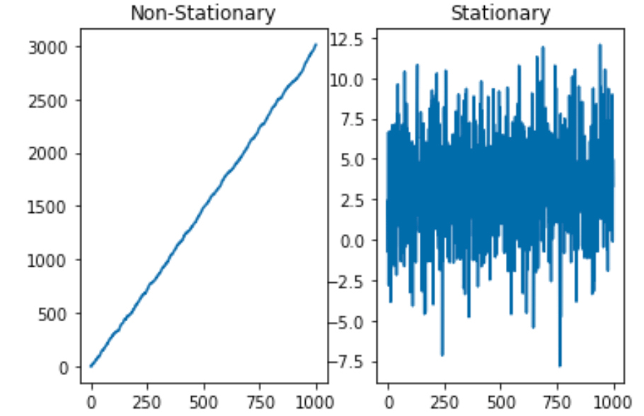</p>
<p>그래프로 판단해봤을 때, <span class="katex"><span class="katex-mathml"><math xmlns="http://www.w3.org/1998/Math/MathML"><semantics><mrow><msub><mi>y</mi><mi>t</mi></msub></mrow><annotation encoding="application/x-tex">y_t</annotation></semantics></math></span><span class="katex-html" aria-hidden="true"><span class="base"><span class="strut" style="height:0.625em;vertical-align:-0.19444em;"></span><span class="mord"><span class="mord mathnormal" style="margin-right:0.03588em;">y</span><span class="msupsub"><span class="vlist-t vlist-t2"><span class="vlist-r"><span class="vlist" style="height:0.2805559999999999em;"><span style="top:-2.5500000000000003em;margin-left:-0.03588em;margin-right:0.05em;"><span class="pstrut" style="height:2.7em;"></span><span class="sizing reset-size6 size3 mtight"><span class="mord mathnormal mtight">t</span></span></span></span><span class="vlist-s">​</span></span><span class="vlist-r"><span class="vlist" style="height:0.15em;"><span></span></span></span></span></span></span></span></span></span>는 아주 강력한 상승 추세를 가지기 때문에 정상성을 띠지 않지만, <span class="katex"><span class="katex-mathml"><math xmlns="http://www.w3.org/1998/Math/MathML"><semantics><mrow><msub><mi>z</mi><mi>t</mi></msub></mrow><annotation encoding="application/x-tex">z_t</annotation></semantics></math></span><span class="katex-html" aria-hidden="true"><span class="base"><span class="strut" style="height:0.58056em;vertical-align:-0.15em;"></span><span class="mord"><span class="mord mathnormal" style="margin-right:0.04398em;">z</span><span class="msupsub"><span class="vlist-t vlist-t2"><span class="vlist-r"><span class="vlist" style="height:0.2805559999999999em;"><span style="top:-2.5500000000000003em;margin-left:-0.04398em;margin-right:0.05em;"><span class="pstrut" style="height:2.7em;"></span><span class="sizing reset-size6 size3 mtight"><span class="mord mathnormal mtight">t</span></span></span></span><span class="vlist-s">​</span></span><span class="vlist-r"><span class="vlist" style="height:0.15em;"><span></span></span></span></span></span></span></span></span></span>는 정상성을 띠는 듯합니다.</p>
<p><strong>이처럼 <span class="katex"><span class="katex-mathml"><math xmlns="http://www.w3.org/1998/Math/MathML"><semantics><mrow><msub><mi>β</mi><mn>1</mn></msub><mo>=</mo><mn>1</mn></mrow><annotation encoding="application/x-tex">\beta_1 = 1</annotation></semantics></math></span><span class="katex-html" aria-hidden="true"><span class="base"><span class="strut" style="height:0.8888799999999999em;vertical-align:-0.19444em;"></span><span class="mord"><span class="mord mathnormal" style="margin-right:0.05278em;">β</span><span class="msupsub"><span class="vlist-t vlist-t2"><span class="vlist-r"><span class="vlist" style="height:0.30110799999999993em;"><span style="top:-2.5500000000000003em;margin-left:-0.05278em;margin-right:0.05em;"><span class="pstrut" style="height:2.7em;"></span><span class="sizing reset-size6 size3 mtight"><span class="mord mtight">1</span></span></span></span><span class="vlist-s">​</span></span><span class="vlist-r"><span class="vlist" style="height:0.15em;"><span></span></span></span></span></span></span><span class="mspace" style="margin-right:0.2777777777777778em;"></span><span class="mrel">=</span><span class="mspace" style="margin-right:0.2777777777777778em;"></span></span><span class="base"><span class="strut" style="height:0.64444em;vertical-align:0em;"></span><span class="mord">1</span></span></span></span>이면 단위근을 가졌다고 하고, 이 단위근을 가진 AR 모형 <span class="katex"><span class="katex-mathml"><math xmlns="http://www.w3.org/1998/Math/MathML"><semantics><mrow><msub><mi>y</mi><mi>t</mi></msub></mrow><annotation encoding="application/x-tex">y_t</annotation></semantics></math></span><span class="katex-html" aria-hidden="true"><span class="base"><span class="strut" style="height:0.625em;vertical-align:-0.19444em;"></span><span class="mord"><span class="mord mathnormal" style="margin-right:0.03588em;">y</span><span class="msupsub"><span class="vlist-t vlist-t2"><span class="vlist-r"><span class="vlist" style="height:0.2805559999999999em;"><span style="top:-2.5500000000000003em;margin-left:-0.03588em;margin-right:0.05em;"><span class="pstrut" style="height:2.7em;"></span><span class="sizing reset-size6 size3 mtight"><span class="mord mathnormal mtight">t</span></span></span></span><span class="vlist-s">​</span></span><span class="vlist-r"><span class="vlist" style="height:0.15em;"><span></span></span></span></span></span></span></span></span></span> 은 정상성을 띠지 않습니다.</strong><br />
따라서 귀무 가설 <span class="katex"><span class="katex-mathml"><math xmlns="http://www.w3.org/1998/Math/MathML"><semantics><mrow><msub><mi>β</mi><mn>1</mn></msub><mo>=</mo><mn>1</mn></mrow><annotation encoding="application/x-tex">\beta_1 = 1</annotation></semantics></math></span><span class="katex-html" aria-hidden="true"><span class="base"><span class="strut" style="height:0.8888799999999999em;vertical-align:-0.19444em;"></span><span class="mord"><span class="mord mathnormal" style="margin-right:0.05278em;">β</span><span class="msupsub"><span class="vlist-t vlist-t2"><span class="vlist-r"><span class="vlist" style="height:0.30110799999999993em;"><span style="top:-2.5500000000000003em;margin-left:-0.05278em;margin-right:0.05em;"><span class="pstrut" style="height:2.7em;"></span><span class="sizing reset-size6 size3 mtight"><span class="mord mtight">1</span></span></span></span><span class="vlist-s">​</span></span><span class="vlist-r"><span class="vlist" style="height:0.15em;"><span></span></span></span></span></span></span><span class="mspace" style="margin-right:0.2777777777777778em;"></span><span class="mrel">=</span><span class="mspace" style="margin-right:0.2777777777777778em;"></span></span><span class="base"><span class="strut" style="height:0.64444em;vertical-align:0em;"></span><span class="mord">1</span></span></span></span>을 기각해야 정상성을 띤다 말할 수 있습니다.</p>
<p>그런데 말입니다. <strong>단위근은 어디서 나온 단어일까요?</strong></p>
<p></p>
<p>AR(p) 모형 (시차 = p까지 설명이 되는 모형)이 정상성을 띠기 위한 조건은 특성 방정식의 모든 근의 절대값이 1보다 커야 한다는 것입니다.<br />
특성 방정식은 다음과 같이 쓸 수 있습니다.</p>
<p class='katex-block'><span class="katex-display"><span class="katex"><span class="katex-mathml"><math xmlns="http://www.w3.org/1998/Math/MathML" display="block"><semantics><mrow><mn>1</mn><mo>−</mo><msub><mi>β</mi><mn>1</mn></msub><mi>B</mi><mo>−</mo><msub><mi>β</mi><mn>2</mn></msub><msup><mi>B</mi><mn>2</mn></msup><mo>−</mo><mo>⋯</mo><mo>−</mo><msub><mi>β</mi><mi>p</mi></msub><msup><mi>B</mi><mi>p</mi></msup><mo>=</mo><mn>0</mn></mrow><annotation encoding="application/x-tex">1-\beta_1B -\beta_2 B^2 -\cdots - \beta_p B^p = 0
</annotation></semantics></math></span><span class="katex-html" aria-hidden="true"><span class="base"><span class="strut" style="height:0.72777em;vertical-align:-0.08333em;"></span><span class="mord">1</span><span class="mspace" style="margin-right:0.2222222222222222em;"></span><span class="mbin">−</span><span class="mspace" style="margin-right:0.2222222222222222em;"></span></span><span class="base"><span class="strut" style="height:0.8888799999999999em;vertical-align:-0.19444em;"></span><span class="mord"><span class="mord mathnormal" style="margin-right:0.05278em;">β</span><span class="msupsub"><span class="vlist-t vlist-t2"><span class="vlist-r"><span class="vlist" style="height:0.30110799999999993em;"><span style="top:-2.5500000000000003em;margin-left:-0.05278em;margin-right:0.05em;"><span class="pstrut" style="height:2.7em;"></span><span class="sizing reset-size6 size3 mtight"><span class="mord mtight">1</span></span></span></span><span class="vlist-s">​</span></span><span class="vlist-r"><span class="vlist" style="height:0.15em;"><span></span></span></span></span></span></span><span class="mord mathnormal" style="margin-right:0.05017em;">B</span><span class="mspace" style="margin-right:0.2222222222222222em;"></span><span class="mbin">−</span><span class="mspace" style="margin-right:0.2222222222222222em;"></span></span><span class="base"><span class="strut" style="height:1.0585479999999998em;vertical-align:-0.19444em;"></span><span class="mord"><span class="mord mathnormal" style="margin-right:0.05278em;">β</span><span class="msupsub"><span class="vlist-t vlist-t2"><span class="vlist-r"><span class="vlist" style="height:0.30110799999999993em;"><span style="top:-2.5500000000000003em;margin-left:-0.05278em;margin-right:0.05em;"><span class="pstrut" style="height:2.7em;"></span><span class="sizing reset-size6 size3 mtight"><span class="mord mtight">2</span></span></span></span><span class="vlist-s">​</span></span><span class="vlist-r"><span class="vlist" style="height:0.15em;"><span></span></span></span></span></span></span><span class="mord"><span class="mord mathnormal" style="margin-right:0.05017em;">B</span><span class="msupsub"><span class="vlist-t"><span class="vlist-r"><span class="vlist" style="height:0.8641079999999999em;"><span style="top:-3.113em;margin-right:0.05em;"><span class="pstrut" style="height:2.7em;"></span><span class="sizing reset-size6 size3 mtight"><span class="mord mtight">2</span></span></span></span></span></span></span></span><span class="mspace" style="margin-right:0.2222222222222222em;"></span><span class="mbin">−</span><span class="mspace" style="margin-right:0.2222222222222222em;"></span></span><span class="base"><span class="strut" style="height:0.66666em;vertical-align:-0.08333em;"></span><span class="minner">⋯</span><span class="mspace" style="margin-right:0.2222222222222222em;"></span><span class="mbin">−</span><span class="mspace" style="margin-right:0.2222222222222222em;"></span></span><span class="base"><span class="strut" style="height:1.0005em;vertical-align:-0.286108em;"></span><span class="mord"><span class="mord mathnormal" style="margin-right:0.05278em;">β</span><span class="msupsub"><span class="vlist-t vlist-t2"><span class="vlist-r"><span class="vlist" style="height:0.15139200000000003em;"><span style="top:-2.5500000000000003em;margin-left:-0.05278em;margin-right:0.05em;"><span class="pstrut" style="height:2.7em;"></span><span class="sizing reset-size6 size3 mtight"><span class="mord mathnormal mtight">p</span></span></span></span><span class="vlist-s">​</span></span><span class="vlist-r"><span class="vlist" style="height:0.286108em;"><span></span></span></span></span></span></span><span class="mord"><span class="mord mathnormal" style="margin-right:0.05017em;">B</span><span class="msupsub"><span class="vlist-t"><span class="vlist-r"><span class="vlist" style="height:0.714392em;"><span style="top:-3.1130000000000004em;margin-right:0.05em;"><span class="pstrut" style="height:2.7em;"></span><span class="sizing reset-size6 size3 mtight"><span class="mord mathnormal mtight">p</span></span></span></span></span></span></span></span><span class="mspace" style="margin-right:0.2777777777777778em;"></span><span class="mrel">=</span><span class="mspace" style="margin-right:0.2777777777777778em;"></span></span><span class="base"><span class="strut" style="height:0.64444em;vertical-align:0em;"></span><span class="mord">0</span></span></span></span></span></p>
<p>여기서 B는 후방 이동 (backshift) 연산자로, 시계열의 시차를 다룰 때 쓰는 표기법입니다. 즉, 아래와 같이 말이죠!</p>
<p class='katex-block'><span class="katex-display"><span class="katex"><span class="katex-mathml"><math xmlns="http://www.w3.org/1998/Math/MathML" display="block"><semantics><mtable rowspacing="0.24999999999999992em" columnalign="right left" columnspacing="0em"><mtr><mtd><mstyle scriptlevel="0" displaystyle="true"><mrow><mi>B</mi><msub><mi>y</mi><mi>t</mi></msub></mrow></mstyle></mtd><mtd><mstyle scriptlevel="0" displaystyle="true"><mrow><mrow></mrow><mo>=</mo><msub><mi>y</mi><mrow><mi>t</mi><mo>−</mo><mn>1</mn></mrow></msub></mrow></mstyle></mtd></mtr><mtr><mtd><mstyle scriptlevel="0" displaystyle="true"><mrow><msup><mi>B</mi><mn>2</mn></msup><msub><mi>y</mi><mi>t</mi></msub></mrow></mstyle></mtd><mtd><mstyle scriptlevel="0" displaystyle="true"><mrow><mrow></mrow><mo>=</mo><msub><mi>y</mi><mrow><mi>t</mi><mo>−</mo><mn>2</mn></mrow></msub></mrow></mstyle></mtd></mtr><mtr><mtd><mstyle scriptlevel="0" displaystyle="true"><mi><mi mathvariant="normal">⋮</mi><mpadded height="+0em" voffset="0em"><mspace mathbackground="black" width="0em" height="1.5em"></mspace></mpadded></mi></mstyle></mtd></mtr></mtable><annotation encoding="application/x-tex">\begin{aligned}
B y_t &amp;= y_{t-1}\\
B^2 y_t &amp;= y_{t-2}\\
\vdots
\end{aligned}
</annotation></semantics></math></span><span class="katex-html" aria-hidden="true"><span class="base"><span class="strut" style="height:5.184108em;vertical-align:-2.342054em;"></span><span class="mord"><span class="mtable"><span class="col-align-r"><span class="vlist-t vlist-t2"><span class="vlist-r"><span class="vlist" style="height:2.842054em;"><span style="top:-5.689554em;"><span class="pstrut" style="height:3.6875em;"></span><span class="mord"><span class="mord mathnormal" style="margin-right:0.05017em;">B</span><span class="mord"><span class="mord mathnormal" style="margin-right:0.03588em;">y</span><span class="msupsub"><span class="vlist-t vlist-t2"><span class="vlist-r"><span class="vlist" style="height:0.2805559999999999em;"><span style="top:-2.5500000000000003em;margin-left:-0.03588em;margin-right:0.05em;"><span class="pstrut" style="height:2.7em;"></span><span class="sizing reset-size6 size3 mtight"><span class="mord mathnormal mtight">t</span></span></span></span><span class="vlist-s">​</span></span><span class="vlist-r"><span class="vlist" style="height:0.15em;"><span></span></span></span></span></span></span></span></span><span style="top:-4.165446em;"><span class="pstrut" style="height:3.6875em;"></span><span class="mord"><span class="mord"><span class="mord mathnormal" style="margin-right:0.05017em;">B</span><span class="msupsub"><span class="vlist-t"><span class="vlist-r"><span class="vlist" style="height:0.8641079999999999em;"><span style="top:-3.113em;margin-right:0.05em;"><span class="pstrut" style="height:2.7em;"></span><span class="sizing reset-size6 size3 mtight"><span class="mord mtight">2</span></span></span></span></span></span></span></span><span class="mord"><span class="mord mathnormal" style="margin-right:0.03588em;">y</span><span class="msupsub"><span class="vlist-t vlist-t2"><span class="vlist-r"><span class="vlist" style="height:0.2805559999999999em;"><span style="top:-2.5500000000000003em;margin-left:-0.03588em;margin-right:0.05em;"><span class="pstrut" style="height:2.7em;"></span><span class="sizing reset-size6 size3 mtight"><span class="mord mathnormal mtight">t</span></span></span></span><span class="vlist-s">​</span></span><span class="vlist-r"><span class="vlist" style="height:0.15em;"><span></span></span></span></span></span></span></span></span><span style="top:-2.005446em;"><span class="pstrut" style="height:3.6875em;"></span><span class="mord"><span class="mord"><span class="mord">⋮</span><span class="mord rule" style="border-right-width:0em;border-top-width:1.5em;bottom:0em;"></span></span></span></span></span><span class="vlist-s">​</span></span><span class="vlist-r"><span class="vlist" style="height:2.342054em;"><span></span></span></span></span></span><span class="col-align-l"><span class="vlist-t vlist-t2"><span class="vlist-r"><span class="vlist" style="height:2.842054em;"><span style="top:-5.002054em;"><span class="pstrut" style="height:3em;"></span><span class="mord"><span class="mord"></span><span class="mspace" style="margin-right:0.2777777777777778em;"></span><span class="mrel">=</span><span class="mspace" style="margin-right:0.2777777777777778em;"></span><span class="mord"><span class="mord mathnormal" style="margin-right:0.03588em;">y</span><span class="msupsub"><span class="vlist-t vlist-t2"><span class="vlist-r"><span class="vlist" style="height:0.301108em;"><span style="top:-2.5500000000000003em;margin-left:-0.03588em;margin-right:0.05em;"><span class="pstrut" style="height:2.7em;"></span><span class="sizing reset-size6 size3 mtight"><span class="mord mtight"><span class="mord mathnormal mtight">t</span><span class="mbin mtight">−</span><span class="mord mtight">1</span></span></span></span></span><span class="vlist-s">​</span></span><span class="vlist-r"><span class="vlist" style="height:0.208331em;"><span></span></span></span></span></span></span></span></span><span style="top:-3.477946em;"><span class="pstrut" style="height:3em;"></span><span class="mord"><span class="mord"></span><span class="mspace" style="margin-right:0.2777777777777778em;"></span><span class="mrel">=</span><span class="mspace" style="margin-right:0.2777777777777778em;"></span><span class="mord"><span class="mord mathnormal" style="margin-right:0.03588em;">y</span><span class="msupsub"><span class="vlist-t vlist-t2"><span class="vlist-r"><span class="vlist" style="height:0.301108em;"><span style="top:-2.5500000000000003em;margin-left:-0.03588em;margin-right:0.05em;"><span class="pstrut" style="height:2.7em;"></span><span class="sizing reset-size6 size3 mtight"><span class="mord mtight"><span class="mord mathnormal mtight">t</span><span class="mbin mtight">−</span><span class="mord mtight">2</span></span></span></span></span><span class="vlist-s">​</span></span><span class="vlist-r"><span class="vlist" style="height:0.208331em;"><span></span></span></span></span></span></span></span></span></span><span class="vlist-s">​</span></span><span class="vlist-r"><span class="vlist" style="height:0.18205399999999994em;"><span></span></span></span></span></span></span></span></span></span></span></span></p>
<p>만약 이 특성방정식의 근이 1인 것을 가지고 있다면 <strong>이 때 단위근을 가지고 있다</strong>고 말합니다.<br />
<span class="katex"><span class="katex-mathml"><math xmlns="http://www.w3.org/1998/Math/MathML"><semantics><mrow><msub><mi>y</mi><mi>t</mi></msub><mo>=</mo><msub><mi>y</mi><mrow><mi>t</mi><mo>−</mo><mn>1</mn></mrow></msub><mo>+</mo><msub><mi>e</mi><mi>t</mi></msub></mrow><annotation encoding="application/x-tex">y_t = y_{t-1} + e_t</annotation></semantics></math></span><span class="katex-html" aria-hidden="true"><span class="base"><span class="strut" style="height:0.625em;vertical-align:-0.19444em;"></span><span class="mord"><span class="mord mathnormal" style="margin-right:0.03588em;">y</span><span class="msupsub"><span class="vlist-t vlist-t2"><span class="vlist-r"><span class="vlist" style="height:0.2805559999999999em;"><span style="top:-2.5500000000000003em;margin-left:-0.03588em;margin-right:0.05em;"><span class="pstrut" style="height:2.7em;"></span><span class="sizing reset-size6 size3 mtight"><span class="mord mathnormal mtight">t</span></span></span></span><span class="vlist-s">​</span></span><span class="vlist-r"><span class="vlist" style="height:0.15em;"><span></span></span></span></span></span></span><span class="mspace" style="margin-right:0.2777777777777778em;"></span><span class="mrel">=</span><span class="mspace" style="margin-right:0.2777777777777778em;"></span></span><span class="base"><span class="strut" style="height:0.791661em;vertical-align:-0.208331em;"></span><span class="mord"><span class="mord mathnormal" style="margin-right:0.03588em;">y</span><span class="msupsub"><span class="vlist-t vlist-t2"><span class="vlist-r"><span class="vlist" style="height:0.301108em;"><span style="top:-2.5500000000000003em;margin-left:-0.03588em;margin-right:0.05em;"><span class="pstrut" style="height:2.7em;"></span><span class="sizing reset-size6 size3 mtight"><span class="mord mtight"><span class="mord mathnormal mtight">t</span><span class="mbin mtight">−</span><span class="mord mtight">1</span></span></span></span></span><span class="vlist-s">​</span></span><span class="vlist-r"><span class="vlist" style="height:0.208331em;"><span></span></span></span></span></span></span><span class="mspace" style="margin-right:0.2222222222222222em;"></span><span class="mbin">+</span><span class="mspace" style="margin-right:0.2222222222222222em;"></span></span><span class="base"><span class="strut" style="height:0.58056em;vertical-align:-0.15em;"></span><span class="mord"><span class="mord mathnormal">e</span><span class="msupsub"><span class="vlist-t vlist-t2"><span class="vlist-r"><span class="vlist" style="height:0.2805559999999999em;"><span style="top:-2.5500000000000003em;margin-left:0em;margin-right:0.05em;"><span class="pstrut" style="height:2.7em;"></span><span class="sizing reset-size6 size3 mtight"><span class="mord mathnormal mtight">t</span></span></span></span><span class="vlist-s">​</span></span><span class="vlist-r"><span class="vlist" style="height:0.15em;"><span></span></span></span></span></span></span></span></span></span>모형으로 특성 방정식과 그 근을 구해봅시다.<br />
이 모형은 <span class="katex"><span class="katex-mathml"><math xmlns="http://www.w3.org/1998/Math/MathML"><semantics><mrow><msub><mi>β</mi><mn>1</mn></msub><mo>=</mo><mn>1</mn></mrow><annotation encoding="application/x-tex">\beta_1 = 1</annotation></semantics></math></span><span class="katex-html" aria-hidden="true"><span class="base"><span class="strut" style="height:0.8888799999999999em;vertical-align:-0.19444em;"></span><span class="mord"><span class="mord mathnormal" style="margin-right:0.05278em;">β</span><span class="msupsub"><span class="vlist-t vlist-t2"><span class="vlist-r"><span class="vlist" style="height:0.30110799999999993em;"><span style="top:-2.5500000000000003em;margin-left:-0.05278em;margin-right:0.05em;"><span class="pstrut" style="height:2.7em;"></span><span class="sizing reset-size6 size3 mtight"><span class="mord mtight">1</span></span></span></span><span class="vlist-s">​</span></span><span class="vlist-r"><span class="vlist" style="height:0.15em;"><span></span></span></span></span></span></span><span class="mspace" style="margin-right:0.2777777777777778em;"></span><span class="mrel">=</span><span class="mspace" style="margin-right:0.2777777777777778em;"></span></span><span class="base"><span class="strut" style="height:0.64444em;vertical-align:0em;"></span><span class="mord">1</span></span></span></span>인 AR(1)모형으로 **확률 보행 모형 (random walk model)**이라 부릅니다.<br />
이 모형에 후방 이동 연산자를 적용하고, 에러 <span class="katex"><span class="katex-mathml"><math xmlns="http://www.w3.org/1998/Math/MathML"><semantics><mrow><msub><mi>e</mi><mi>t</mi></msub></mrow><annotation encoding="application/x-tex">e_t</annotation></semantics></math></span><span class="katex-html" aria-hidden="true"><span class="base"><span class="strut" style="height:0.58056em;vertical-align:-0.15em;"></span><span class="mord"><span class="mord mathnormal">e</span><span class="msupsub"><span class="vlist-t vlist-t2"><span class="vlist-r"><span class="vlist" style="height:0.2805559999999999em;"><span style="top:-2.5500000000000003em;margin-left:0em;margin-right:0.05em;"><span class="pstrut" style="height:2.7em;"></span><span class="sizing reset-size6 size3 mtight"><span class="mord mathnormal mtight">t</span></span></span></span><span class="vlist-s">​</span></span><span class="vlist-r"><span class="vlist" style="height:0.15em;"><span></span></span></span></span></span></span></span></span></span>에 대해 식을 정리한다면 특성 방정식의 해를 구할 수 있습니다.</p>
<p class='katex-block'><span class="katex-display"><span class="katex"><span class="katex-mathml"><math xmlns="http://www.w3.org/1998/Math/MathML" display="block"><semantics><mtable rowspacing="0.24999999999999992em" columnalign="right left" columnspacing="0em"><mtr><mtd><mstyle scriptlevel="0" displaystyle="true"><msub><mi>y</mi><mi>t</mi></msub></mstyle></mtd><mtd><mstyle scriptlevel="0" displaystyle="true"><mrow><mrow></mrow><mo>=</mo><mi>B</mi><msub><mi>y</mi><mi>t</mi></msub><mo>+</mo><msub><mi>e</mi><mi>t</mi></msub></mrow></mstyle></mtd></mtr><mtr><mtd><mstyle scriptlevel="0" displaystyle="true"><msub><mi>e</mi><mi>t</mi></msub></mstyle></mtd><mtd><mstyle scriptlevel="0" displaystyle="true"><mrow><mrow></mrow><mo>=</mo><msub><mi>y</mi><mi>t</mi></msub><mo>−</mo><mi>B</mi><msub><mi>y</mi><mi>t</mi></msub></mrow></mstyle></mtd></mtr><mtr><mtd><mstyle scriptlevel="0" displaystyle="true"><msub><mi>e</mi><mi>t</mi></msub></mstyle></mtd><mtd><mstyle scriptlevel="0" displaystyle="true"><mrow><mrow></mrow><mo>=</mo><mo stretchy="false">(</mo><mn>1</mn><mo>−</mo><mi>B</mi><mo stretchy="false">)</mo><msub><mi>y</mi><mi>t</mi></msub></mrow></mstyle></mtd></mtr></mtable><annotation encoding="application/x-tex">\begin{aligned}
y_t &amp;= By_t + e_t\\
e_t &amp;= y_t - By_t\\
e_t &amp;= (1-B)y_t
\end{aligned}
</annotation></semantics></math></span><span class="katex-html" aria-hidden="true"><span class="base"><span class="strut" style="height:4.500000000000002em;vertical-align:-2.000000000000001em;"></span><span class="mord"><span class="mtable"><span class="col-align-r"><span class="vlist-t vlist-t2"><span class="vlist-r"><span class="vlist" style="height:2.5000000000000004em;"><span style="top:-4.66em;"><span class="pstrut" style="height:3em;"></span><span class="mord"><span class="mord"><span class="mord mathnormal" style="margin-right:0.03588em;">y</span><span class="msupsub"><span class="vlist-t vlist-t2"><span class="vlist-r"><span class="vlist" style="height:0.2805559999999999em;"><span style="top:-2.5500000000000003em;margin-left:-0.03588em;margin-right:0.05em;"><span class="pstrut" style="height:2.7em;"></span><span class="sizing reset-size6 size3 mtight"><span class="mord mathnormal mtight">t</span></span></span></span><span class="vlist-s">​</span></span><span class="vlist-r"><span class="vlist" style="height:0.15em;"><span></span></span></span></span></span></span></span></span><span style="top:-3.16em;"><span class="pstrut" style="height:3em;"></span><span class="mord"><span class="mord"><span class="mord mathnormal">e</span><span class="msupsub"><span class="vlist-t vlist-t2"><span class="vlist-r"><span class="vlist" style="height:0.2805559999999999em;"><span style="top:-2.5500000000000003em;margin-left:0em;margin-right:0.05em;"><span class="pstrut" style="height:2.7em;"></span><span class="sizing reset-size6 size3 mtight"><span class="mord mathnormal mtight">t</span></span></span></span><span class="vlist-s">​</span></span><span class="vlist-r"><span class="vlist" style="height:0.15em;"><span></span></span></span></span></span></span></span></span><span style="top:-1.6599999999999993em;"><span class="pstrut" style="height:3em;"></span><span class="mord"><span class="mord"><span class="mord mathnormal">e</span><span class="msupsub"><span class="vlist-t vlist-t2"><span class="vlist-r"><span class="vlist" style="height:0.2805559999999999em;"><span style="top:-2.5500000000000003em;margin-left:0em;margin-right:0.05em;"><span class="pstrut" style="height:2.7em;"></span><span class="sizing reset-size6 size3 mtight"><span class="mord mathnormal mtight">t</span></span></span></span><span class="vlist-s">​</span></span><span class="vlist-r"><span class="vlist" style="height:0.15em;"><span></span></span></span></span></span></span></span></span></span><span class="vlist-s">​</span></span><span class="vlist-r"><span class="vlist" style="height:2.000000000000001em;"><span></span></span></span></span></span><span class="col-align-l"><span class="vlist-t vlist-t2"><span class="vlist-r"><span class="vlist" style="height:2.5000000000000004em;"><span style="top:-4.66em;"><span class="pstrut" style="height:3em;"></span><span class="mord"><span class="mord"></span><span class="mspace" style="margin-right:0.2777777777777778em;"></span><span class="mrel">=</span><span class="mspace" style="margin-right:0.2777777777777778em;"></span><span class="mord mathnormal" style="margin-right:0.05017em;">B</span><span class="mord"><span class="mord mathnormal" style="margin-right:0.03588em;">y</span><span class="msupsub"><span class="vlist-t vlist-t2"><span class="vlist-r"><span class="vlist" style="height:0.2805559999999999em;"><span style="top:-2.5500000000000003em;margin-left:-0.03588em;margin-right:0.05em;"><span class="pstrut" style="height:2.7em;"></span><span class="sizing reset-size6 size3 mtight"><span class="mord mathnormal mtight">t</span></span></span></span><span class="vlist-s">​</span></span><span class="vlist-r"><span class="vlist" style="height:0.15em;"><span></span></span></span></span></span></span><span class="mspace" style="margin-right:0.2222222222222222em;"></span><span class="mbin">+</span><span class="mspace" style="margin-right:0.2222222222222222em;"></span><span class="mord"><span class="mord mathnormal">e</span><span class="msupsub"><span class="vlist-t vlist-t2"><span class="vlist-r"><span class="vlist" style="height:0.2805559999999999em;"><span style="top:-2.5500000000000003em;margin-left:0em;margin-right:0.05em;"><span class="pstrut" style="height:2.7em;"></span><span class="sizing reset-size6 size3 mtight"><span class="mord mathnormal mtight">t</span></span></span></span><span class="vlist-s">​</span></span><span class="vlist-r"><span class="vlist" style="height:0.15em;"><span></span></span></span></span></span></span></span></span><span style="top:-3.16em;"><span class="pstrut" style="height:3em;"></span><span class="mord"><span class="mord"></span><span class="mspace" style="margin-right:0.2777777777777778em;"></span><span class="mrel">=</span><span class="mspace" style="margin-right:0.2777777777777778em;"></span><span class="mord"><span class="mord mathnormal" style="margin-right:0.03588em;">y</span><span class="msupsub"><span class="vlist-t vlist-t2"><span class="vlist-r"><span class="vlist" style="height:0.2805559999999999em;"><span style="top:-2.5500000000000003em;margin-left:-0.03588em;margin-right:0.05em;"><span class="pstrut" style="height:2.7em;"></span><span class="sizing reset-size6 size3 mtight"><span class="mord mathnormal mtight">t</span></span></span></span><span class="vlist-s">​</span></span><span class="vlist-r"><span class="vlist" style="height:0.15em;"><span></span></span></span></span></span></span><span class="mspace" style="margin-right:0.2222222222222222em;"></span><span class="mbin">−</span><span class="mspace" style="margin-right:0.2222222222222222em;"></span><span class="mord mathnormal" style="margin-right:0.05017em;">B</span><span class="mord"><span class="mord mathnormal" style="margin-right:0.03588em;">y</span><span class="msupsub"><span class="vlist-t vlist-t2"><span class="vlist-r"><span class="vlist" style="height:0.2805559999999999em;"><span style="top:-2.5500000000000003em;margin-left:-0.03588em;margin-right:0.05em;"><span class="pstrut" style="height:2.7em;"></span><span class="sizing reset-size6 size3 mtight"><span class="mord mathnormal mtight">t</span></span></span></span><span class="vlist-s">​</span></span><span class="vlist-r"><span class="vlist" style="height:0.15em;"><span></span></span></span></span></span></span></span></span><span style="top:-1.6599999999999993em;"><span class="pstrut" style="height:3em;"></span><span class="mord"><span class="mord"></span><span class="mspace" style="margin-right:0.2777777777777778em;"></span><span class="mrel">=</span><span class="mspace" style="margin-right:0.2777777777777778em;"></span><span class="mopen">(</span><span class="mord">1</span><span class="mspace" style="margin-right:0.2222222222222222em;"></span><span class="mbin">−</span><span class="mspace" style="margin-right:0.2222222222222222em;"></span><span class="mord mathnormal" style="margin-right:0.05017em;">B</span><span class="mclose">)</span><span class="mord"><span class="mord mathnormal" style="margin-right:0.03588em;">y</span><span class="msupsub"><span class="vlist-t vlist-t2"><span class="vlist-r"><span class="vlist" style="height:0.2805559999999999em;"><span style="top:-2.5500000000000003em;margin-left:-0.03588em;margin-right:0.05em;"><span class="pstrut" style="height:2.7em;"></span><span class="sizing reset-size6 size3 mtight"><span class="mord mathnormal mtight">t</span></span></span></span><span class="vlist-s">​</span></span><span class="vlist-r"><span class="vlist" style="height:0.15em;"><span></span></span></span></span></span></span></span></span></span><span class="vlist-s">​</span></span><span class="vlist-r"><span class="vlist" style="height:2.000000000000001em;"><span></span></span></span></span></span></span></span></span></span></span></span></p>
<p>여기서의 특성 방정식은 <span class="katex"><span class="katex-mathml"><math xmlns="http://www.w3.org/1998/Math/MathML"><semantics><mrow><mo stretchy="false">(</mo><mn>1</mn><mo>−</mo><mi>B</mi><mo stretchy="false">)</mo><mo>=</mo><mn>0</mn></mrow><annotation encoding="application/x-tex">(1-B) = 0</annotation></semantics></math></span><span class="katex-html" aria-hidden="true"><span class="base"><span class="strut" style="height:1em;vertical-align:-0.25em;"></span><span class="mopen">(</span><span class="mord">1</span><span class="mspace" style="margin-right:0.2222222222222222em;"></span><span class="mbin">−</span><span class="mspace" style="margin-right:0.2222222222222222em;"></span></span><span class="base"><span class="strut" style="height:1em;vertical-align:-0.25em;"></span><span class="mord mathnormal" style="margin-right:0.05017em;">B</span><span class="mclose">)</span><span class="mspace" style="margin-right:0.2777777777777778em;"></span><span class="mrel">=</span><span class="mspace" style="margin-right:0.2777777777777778em;"></span></span><span class="base"><span class="strut" style="height:0.64444em;vertical-align:0em;"></span><span class="mord">0</span></span></span></span>이 되어 해가 <span class="katex"><span class="katex-mathml"><math xmlns="http://www.w3.org/1998/Math/MathML"><semantics><mrow><mi>B</mi><mo>=</mo><mn>1</mn></mrow><annotation encoding="application/x-tex">B=1</annotation></semantics></math></span><span class="katex-html" aria-hidden="true"><span class="base"><span class="strut" style="height:0.68333em;vertical-align:0em;"></span><span class="mord mathnormal" style="margin-right:0.05017em;">B</span><span class="mspace" style="margin-right:0.2777777777777778em;"></span><span class="mrel">=</span><span class="mspace" style="margin-right:0.2777777777777778em;"></span></span><span class="base"><span class="strut" style="height:0.64444em;vertical-align:0em;"></span><span class="mord">1</span></span></span></span>로 계산이 됩니다.<br />
그래서 이 모형은 단위근을 갖게 되고, 정상성을 가지지 않는 대표적인 모형입니다.</p>
<hr />
<h2 id="실전-삼성-전자-주가-정상성을-띠도록-만들기"><a class="markdownIt-Anchor" href="#실전-삼성-전자-주가-정상성을-띠도록-만들기"></a> 실전! 삼성 전자 주가 정상성을 띠도록 만들기!</h2>
<p>수식이 중요한가요? (<s>중요할 때도 있음(…)</s>)<br />
결과적으로 데이터가 정상성을 띠는지, 띠지 않는다면 정상성을 띠도록 만들어 주는게 핵심입니다.</p>
<p>따라서 이 파트에서는 실제 <strong>삼성전자의 주가를 가지고 차분 및 로그 변환을 했을 때 정상성을 만족하는지 검정</strong>해보도록 하겠습니다.<br />
이를 위해 파이썬에서 다음과 같이 데이터를 로드합니다.</p>
<figure class="highlight python"><table><tr><td class="gutter"><pre><span class="line">1</span><br><span class="line">2</span><br><span class="line">3</span><br><span class="line">4</span><br><span class="line">5</span><br><span class="line">6</span><br><span class="line">7</span><br><span class="line">8</span><br><span class="line">9</span><br><span class="line">10</span><br><span class="line">11</span><br><span class="line">12</span><br><span class="line">13</span><br></pre></td><td class="code"><pre><span class="line"><span class="keyword">import</span> FinanceDataReader <span class="keyword">as</span> fdr</span><br><span class="line"><span class="keyword">import</span> pandas <span class="keyword">as</span> pd</span><br><span class="line"><span class="keyword">import</span> matplotlib.pyplot <span class="keyword">as</span> plt</span><br><span class="line"><span class="keyword">import</span> seaborn <span class="keyword">as</span> sns</span><br><span class="line"><span class="keyword">import</span> numpy <span class="keyword">as</span> np</span><br><span class="line"><span class="keyword">from</span> statsmodels.graphics.tsaplots <span class="keyword">import</span> plot_acf, plot_pacf</span><br><span class="line"><span class="keyword">import</span> plotly.graph_objects <span class="keyword">as</span> go</span><br><span class="line"></span><br><span class="line"><span class="comment"># 한국거래소 상장종목 전체</span></span><br><span class="line">df_krx = fdr.StockListing(<span class="string">&#x27;KRX&#x27;</span>)</span><br><span class="line"><span class="comment"># 삼성 티커</span></span><br><span class="line">ss_ticker = df_krx[df_krx.Name==<span class="string">&#x27;삼성전자&#x27;</span>][<span class="string">&#x27;Symbol&#x27;</span>] </span><br><span class="line"><span class="built_in">print</span>(ss_ticker) <span class="comment">#005930</span></span><br></pre></td></tr></table></figure>
<p>FinanceDataReader는 한국 주식 가격, 미국주식 가격, 지수, 환율, 암호화폐 가격, 종목 리스팅 등 금융 데이터 수집 라이브러리입니다. (<a target="_blank" rel="noopener" href="https://financedata.github.io/posts/finance-data-reader-users-guide.html"><code>[link]</code></a>)<br />
이 곳에서 KRX에 상장된 모든 주식을 확인할 수 있는데, 삼성 전자의 주식 데이터를 불러오기 위해 삼성 전자의 티커<sup>Ticker, 주식 종목명을 쉽게 찾을 수 있는 코드</sup> <code>005930</code>를 찾았습니다.</p>
<p>이제 삼성 전자의 티커와, 시작 날짜와 끝 날짜를 지정하여 삼성 전자의 주식 자료를 불러오겠습니다.</p>
<figure class="highlight python"><table><tr><td class="gutter"><pre><span class="line">1</span><br><span class="line">2</span><br></pre></td><td class="code"><pre><span class="line">ss = fdr.DataReader(<span class="string">&#x27;005930&#x27;</span>,<span class="string">&#x27;2015-01-01&#x27;</span>, <span class="string">&#x27;2021-07-31&#x27;</span>)</span><br><span class="line">ss.tail()</span><br></pre></td></tr></table></figure>
<p>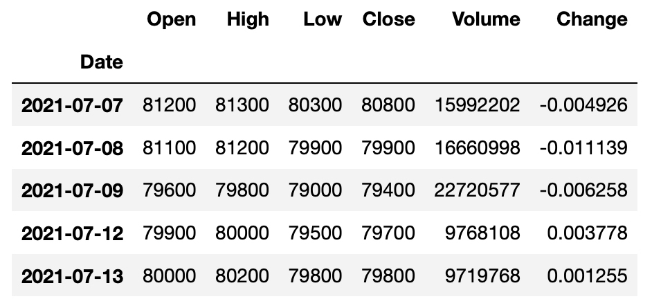</p>
<p>주식을 하는 분이라면 다 아시겠지만, 위 데이터는 일별로 주식 거래량을 집계한 정보로 컬럼에 대한 설명은 다음과 같습니다.</p>
<ul>
<li>Close: 종가 <sup>주식 시장이 마감했을 때의 가격</sup></li>
<li>Open: 시가 <sup>주식 시장이 시작했을 때의 가격</sup></li>
<li>High: 최고가</li>
<li>Low: 최저가</li>
<li>Volume: 거래량</li>
<li>Change: 증감률<sup>어제 종가 대비 오늘 종가의 증감률</sup></li>
</ul>
<p>이 컬럼 정보를 가지고 아래와 같이 손쉽게 봉 차트 (Candle Chart)를 그릴 수 있습니다. 이 봉 차트는 상자 그림과 비슷하지만, 담고 있는 정보가 약간은 다르죠! (저희는 <strong>양봉</strong>을 마주해야 좋습니다 :&gt;)</p>
<p>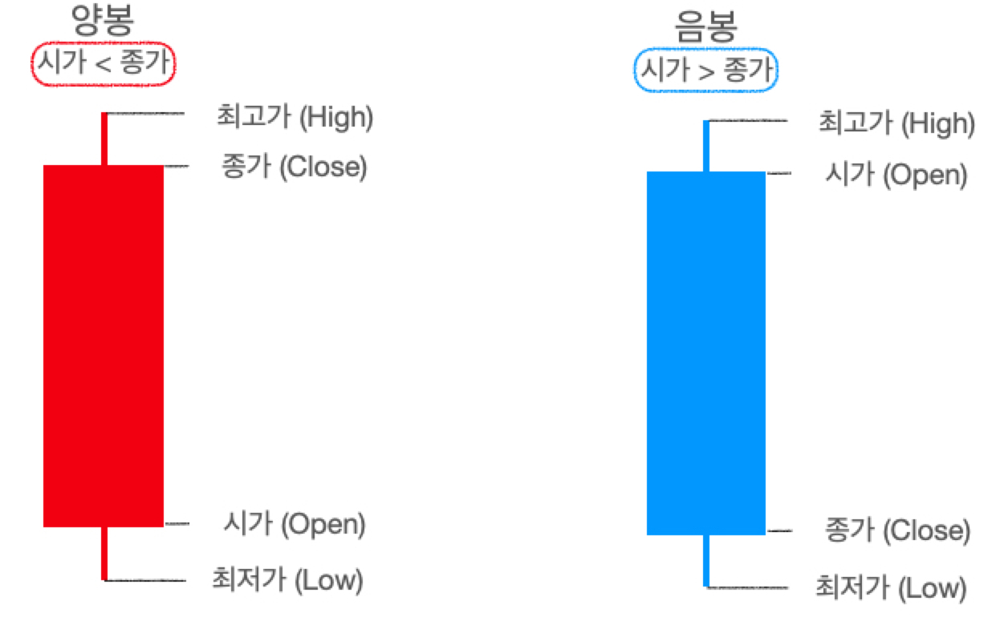</p>
<p>다시 본론으로 들어와서 삼성 전자의 봉 차트를 그리면 이런 <strong>우상향하는 모습</strong>을 볼 수 있습니다.</p>
<figure class="highlight python"><table><tr><td class="gutter"><pre><span class="line">1</span><br><span class="line">2</span><br><span class="line">3</span><br><span class="line">4</span><br><span class="line">5</span><br><span class="line">6</span><br><span class="line">7</span><br></pre></td><td class="code"><pre><span class="line">ss_candlestick = go.Candlestick(x=ss.index</span><br><span class="line">                   ,<span class="built_in">open</span> = ss.Open</span><br><span class="line">                   ,high = ss.High</span><br><span class="line">                   ,low = ss.Low</span><br><span class="line">                   ,close= ss.Close)</span><br><span class="line">layout = go.Layout(title = <span class="string">&#x27;삼성전자 캔들차트&#x27;</span>)</span><br><span class="line">go.Figure(data = [ss_candlestick], layout = layout)</span><br></pre></td></tr></table></figure>
<p>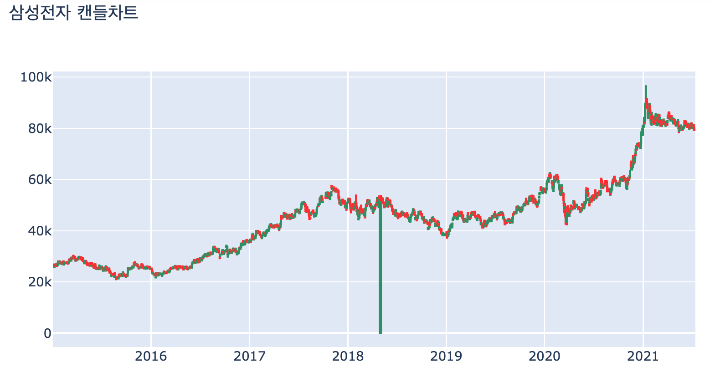</p>
<p>우상향하면 뭐다? 트렌드가 존재한다는 의미이므로, 정상성을 만족하지 않는다 추측할 수 있습니다.<br />
따라서 정상성을 만족시키기 위해 삼성 주가의 종가 (<code>Close</code>)에 차분과 로그 변환, 그리고 로그 차분 (로그 변환 후 차분)을 시도해봅니다.</p>
<figure class="highlight python"><table><tr><td class="gutter"><pre><span class="line">1</span><br><span class="line">2</span><br><span class="line">3</span><br><span class="line">4</span><br><span class="line">5</span><br><span class="line">6</span><br><span class="line">7</span><br><span class="line">8</span><br><span class="line">9</span><br><span class="line">10</span><br><span class="line">11</span><br><span class="line">12</span><br><span class="line">13</span><br><span class="line">14</span><br><span class="line">15</span><br><span class="line">16</span><br><span class="line">17</span><br><span class="line">18</span><br><span class="line">19</span><br></pre></td><td class="code"><pre><span class="line"><span class="comment"># 차분</span></span><br><span class="line">ss[<span class="string">&#x27;diff_close&#x27;</span>] = ss[<span class="string">&#x27;Close&#x27;</span>].diff(<span class="number">1</span>)</span><br><span class="line"><span class="comment"># 로그</span></span><br><span class="line">ss[<span class="string">&#x27;log_close&#x27;</span>] = np.log(ss[<span class="string">&#x27;Close&#x27;</span>])</span><br><span class="line"><span class="comment"># 로그차분</span></span><br><span class="line">ss[<span class="string">&#x27;logdiff_close&#x27;</span>] = np.log(ss[<span class="string">&#x27;Close&#x27;</span>]).diff(<span class="number">1</span>)</span><br><span class="line"></span><br><span class="line"><span class="keyword">from</span> plotly.subplots <span class="keyword">import</span> make_subplots</span><br><span class="line"><span class="keyword">import</span> plotly.graph_objects <span class="keyword">as</span> go</span><br><span class="line"></span><br><span class="line">fig = make_subplots(<span class="number">4</span>,<span class="number">1</span>)</span><br><span class="line"></span><br><span class="line">fig.add_trace(go.Scatter(x=ss.index, y=ss.Close,name = <span class="string">&quot;삼성 주가&quot;</span>),row=<span class="number">1</span>,col=<span class="number">1</span>)</span><br><span class="line">fig.add_trace(go.Scatter(x=ss.index, y=ss.diff_close,name = <span class="string">&quot;삼성 주가 차분값&quot;</span>), row=<span class="number">2</span>,col=<span class="number">1</span>)</span><br><span class="line">fig.add_trace(go.Scatter(x=ss.index, y=ss.log_close,name = <span class="string">&quot;log(삼성 주가)&quot;</span>), row=<span class="number">3</span>,col=<span class="number">1</span>)</span><br><span class="line">fig.add_trace(go.Scatter(x=ss.index, y=ss.logdiff_close,name = <span class="string">&quot;log(삼성주가) 차분값&quot;</span>), row=<span class="number">4</span>,col=<span class="number">1</span>)</span><br><span class="line"></span><br><span class="line">fig.update_layout(height=<span class="number">600</span>, width=<span class="number">800</span>, title_text=<span class="string">&quot;삼성 주가&quot;</span>)</span><br><span class="line">fig.show()</span><br></pre></td></tr></table></figure>
<p>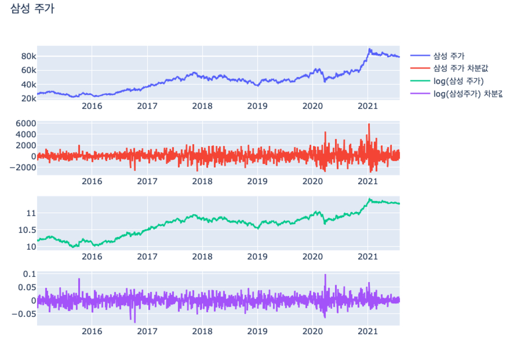</p>
<ul>
<li>위 그림에서 보면 삼성 주가에서 차분을 하면 그래프가 0을 부근으로 위 아래로 왔다갔다하는 평균 회귀 (Mean Reverting) 성질을 지닙니다.<br />
그러나 과거에는 상승 감소 폭이 <span class="katex"><span class="katex-mathml"><math xmlns="http://www.w3.org/1998/Math/MathML"><semantics><mrow><mo>±</mo></mrow><annotation encoding="application/x-tex">\pm</annotation></semantics></math></span><span class="katex-html" aria-hidden="true"><span class="base"><span class="strut" style="height:0.66666em;vertical-align:-0.08333em;"></span><span class="mord">±</span></span></span></span> 2000이었다면, 현재는 -2000 ~ 6000까지 커졌기 때문에 과거와 현재의 분산이 비슷한지는 약간 애매합니다.</li>
<li>로그 변환을 했더니 여전히 원 그래프처럼 상승하는 트렌드를 보입니다. 대신에 원 그래프는 20,000원 ~ 80,000원으로 상승폭이 크지만, 로그 변환을 하니 10 ~ 11.xx로 분산이 안정화된 것을 알 수 있죠.</li>
<li>PPAP 전법을 통해 로그 차분을 한 그래프는 차분한 그래프에 비해 더 분산이 안정화된 모습을 보입니다.</li>
</ul>
<p>그럼 이 네 지수 (<code>Close, diff_close, log_close, logdiff_close</code>)의 정상성을 검증해봅시다.</p>
<p>먼저 원 그래프 (왼쪽)와 ACF (오른쪽)를 그리면 다음과 같습니다.</p>
<figure class="highlight python"><table><tr><td class="gutter"><pre><span class="line">1</span><br><span class="line">2</span><br><span class="line">3</span><br><span class="line">4</span><br><span class="line">5</span><br><span class="line">6</span><br><span class="line">7</span><br><span class="line">8</span><br><span class="line">9</span><br><span class="line">10</span><br><span class="line">11</span><br><span class="line">12</span><br><span class="line">13</span><br><span class="line">14</span><br><span class="line">15</span><br><span class="line">16</span><br><span class="line">17</span><br><span class="line">18</span><br><span class="line">19</span><br><span class="line">20</span><br></pre></td><td class="code"><pre><span class="line"><span class="keyword">from</span> matplotlib <span class="keyword">import</span> rc</span><br><span class="line">rc(<span class="string">&#x27;font&#x27;</span>, family=<span class="string">&#x27;AppleGothic&#x27;</span>)</span><br><span class="line">plt.rcParams[<span class="string">&#x27;axes.unicode_minus&#x27;</span>] = <span class="literal">False</span></span><br><span class="line"></span><br><span class="line">fig,ax = plt.subplots(<span class="number">4</span>,<span class="number">2</span>, figsize=(<span class="number">12</span>,<span class="number">16</span>))</span><br><span class="line">ax[<span class="number">0</span>,<span class="number">0</span>].plot(ss[<span class="string">&#x27;Close&#x27;</span>])</span><br><span class="line">ax[<span class="number">0</span>,<span class="number">0</span>].set_title(<span class="string">&#x27;삼성 주가&#x27;</span>)</span><br><span class="line">ax[<span class="number">1</span>,<span class="number">0</span>].plot(ss[<span class="string">&#x27;log_close&#x27;</span>])</span><br><span class="line">ax[<span class="number">1</span>,<span class="number">0</span>].set_title(<span class="string">&#x27;log(삼성주가)&#x27;</span>)</span><br><span class="line">ax[<span class="number">2</span>,<span class="number">0</span>].plot(ss[<span class="string">&#x27;diff_close&#x27;</span>])</span><br><span class="line">ax[<span class="number">2</span>,<span class="number">0</span>].set_title(<span class="string">&#x27;삼성 주가 차분값&#x27;</span>)</span><br><span class="line">ax[<span class="number">3</span>,<span class="number">0</span>].plot(ss[<span class="string">&#x27;logdiff_close&#x27;</span>])</span><br><span class="line">ax[<span class="number">3</span>,<span class="number">0</span>].set_title(<span class="string">&#x27;log(삼성 주가) 차분값&#x27;</span>)</span><br><span class="line"></span><br><span class="line">plot_acf(ss[<span class="string">&#x27;Close&#x27;</span>],ax=ax[<span class="number">0</span>,<span class="number">1</span>])</span><br><span class="line">plot_acf(ss[<span class="string">&#x27;log_close&#x27;</span>],ax=ax[<span class="number">1</span>,<span class="number">1</span>])</span><br><span class="line">plot_acf(ss[<span class="string">&#x27;diff_close&#x27;</span>][<span class="number">1</span>:],ax=ax[<span class="number">2</span>,<span class="number">1</span>])</span><br><span class="line">plot_acf(ss[<span class="string">&#x27;logdiff_close&#x27;</span>][<span class="number">1</span>:],ax=ax[<span class="number">3</span>,<span class="number">1</span>])</span><br><span class="line"></span><br><span class="line">plt.show()</span><br></pre></td></tr></table></figure>
<p>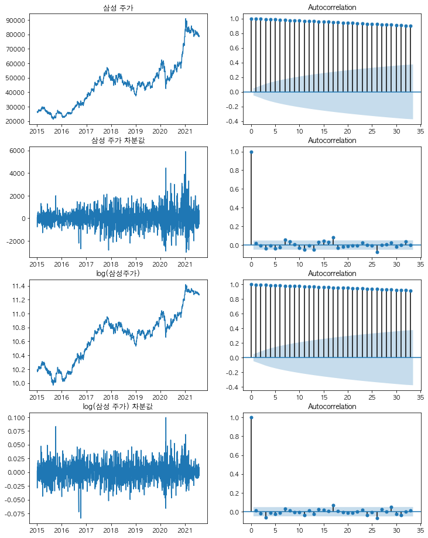</p>
<p>삼성 주가와, 로그 변환을 한 log(삼성 주가)의 ACF는 시간이 지날수록 감소하긴 하지만 아주 더디게 감소하고 있습니다. 시계열 그래프가 선형적으로 증가하는 경우 이러한 그래프를 띠며, 이 때 허용 범위 (파란색 음영) 안에 ACF 값들이 들어오지 않기 때문에 정상성을 띠지 않는다고 볼 수 있습니다.</p>
<p>이에 비해서 삼성 주가 차분값과, log(삼성 주가) 차분값의 ACF는 0인 시점에서 1의 자기 상관을 가지고, lag = 1 이후로부터는 급격하게 자기 상관이 줄어든 것을 확인할 수 있습니다.<br />
몇 군데 (lag = 17, 25) 상에서 허용 범위 밖에 자기 상관이 있긴 하지만, 대부분의 시차에서 자기 상관이 허용 범위 안에 들어와있는 것을 알 수 있습니다.</p>
<p>결과적으로, <strong>ACF만 봤을 때 삼성 주가와 log (삼성 주가)는 정상성을 띠지 않을 것이고, 삼성 주가 차분값과 log(삼성 주가) 차분값은 정상성을 띨 것이라 예상할 수 있습니다.</strong></p>
<p>이제, 두 번째 방법인 가설 검정 방법으로 정상성을 검증해보고자 합니다.<br />
파이썬의 <code>adfuller</code> 모듈을 이용하면 ADF 검정 (Augmented Dicky-Fuller Test)을 쉽게 사용할 수 있습니다.</p>
<figure class="highlight python"><table><tr><td class="gutter"><pre><span class="line">1</span><br><span class="line">2</span><br><span class="line">3</span><br><span class="line">4</span><br><span class="line">5</span><br><span class="line">6</span><br><span class="line">7</span><br><span class="line">8</span><br><span class="line">9</span><br><span class="line">10</span><br><span class="line">11</span><br><span class="line">12</span><br><span class="line">13</span><br><span class="line">14</span><br><span class="line">15</span><br><span class="line">16</span><br><span class="line">17</span><br><span class="line">18</span><br></pre></td><td class="code"><pre><span class="line"><span class="keyword">from</span> statsmodels.tsa.stattools <span class="keyword">import</span> adfuller</span><br><span class="line"></span><br><span class="line"><span class="keyword">def</span> <span class="title function_">print_adfuller</span> (x):</span><br><span class="line">    result = adfuller(x)</span><br><span class="line">    <span class="built_in">print</span>(<span class="string">f&#x27;ADF Statistic: <span class="subst">&#123;result[<span class="number">0</span>]:<span class="number">.3</span>f&#125;</span>&#x27;</span>)</span><br><span class="line">    <span class="built_in">print</span>(<span class="string">f&#x27;p-value: <span class="subst">&#123;result[<span class="number">1</span>]:<span class="number">.3</span>f&#125;</span>&#x27;</span>)</span><br><span class="line">    <span class="built_in">print</span>(<span class="string">&#x27;Critical Values:&#x27;</span>)</span><br><span class="line">    <span class="keyword">for</span> key, value <span class="keyword">in</span> result[<span class="number">4</span>].items():</span><br><span class="line">        <span class="built_in">print</span>(<span class="string">&#x27;\t%s: %.3f&#x27;</span> % (key, value))</span><br><span class="line"></span><br><span class="line">print_adfuller(ss[<span class="string">&#x27;Close&#x27;</span>]) <span class="comment">## 정상성 만족 X</span></span><br><span class="line"><span class="built_in">print</span>(<span class="string">&quot;-&quot;</span>*<span class="number">30</span>)</span><br><span class="line">print_adfuller(ss[<span class="string">&#x27;log_close&#x27;</span>]) <span class="comment">## 정상성 만족 X</span></span><br><span class="line"><span class="built_in">print</span>(<span class="string">&quot;-&quot;</span>*<span class="number">30</span>)</span><br><span class="line">print_adfuller(ss[<span class="string">&#x27;diff_close&#x27;</span>][<span class="number">1</span>:]) <span class="comment">## 정상성 만족</span></span><br><span class="line"><span class="built_in">print</span>(<span class="string">&quot;-&quot;</span>*<span class="number">30</span>)</span><br><span class="line">print_adfuller(ss[<span class="string">&#x27;logdiff_close&#x27;</span>][<span class="number">1</span>:]) <span class="comment">## 정상성 만족</span></span><br><span class="line"><span class="built_in">print</span>(<span class="string">&quot;-&quot;</span>*<span class="number">30</span>)</span><br></pre></td></tr></table></figure>
<figure class="highlight python"><table><tr><td class="gutter"><pre><span class="line">1</span><br><span class="line">2</span><br><span class="line">3</span><br><span class="line">4</span><br><span class="line">5</span><br><span class="line">6</span><br><span class="line">7</span><br><span class="line">8</span><br><span class="line">9</span><br><span class="line">10</span><br><span class="line">11</span><br><span class="line">12</span><br><span class="line">13</span><br><span class="line">14</span><br><span class="line">15</span><br><span class="line">16</span><br><span class="line">17</span><br><span class="line">18</span><br><span class="line">19</span><br><span class="line">20</span><br><span class="line">21</span><br><span class="line">22</span><br><span class="line">23</span><br><span class="line">24</span><br><span class="line">25</span><br><span class="line">26</span><br><span class="line">27</span><br><span class="line">28</span><br><span class="line">29</span><br><span class="line">30</span><br><span class="line">31</span><br><span class="line">32</span><br></pre></td><td class="code"><pre><span class="line">[Close]</span><br><span class="line">ADF Statistic: -<span class="number">0.361</span></span><br><span class="line">p-value: <span class="number">0.916</span></span><br><span class="line">Critical Values:</span><br><span class="line">	<span class="number">1</span>%: -<span class="number">3.434</span></span><br><span class="line">	<span class="number">5</span>%: -<span class="number">2.863</span></span><br><span class="line">	<span class="number">10</span>%: -<span class="number">2.568</span></span><br><span class="line">------------------------------</span><br><span class="line">[log_close]</span><br><span class="line">ADF Statistic: -<span class="number">0.643</span></span><br><span class="line">p-value: <span class="number">0.861</span></span><br><span class="line">Critical Values:</span><br><span class="line">	<span class="number">1</span>%: -<span class="number">3.434</span></span><br><span class="line">	<span class="number">5</span>%: -<span class="number">2.863</span></span><br><span class="line">	<span class="number">10</span>%: -<span class="number">2.568</span></span><br><span class="line">------------------------------</span><br><span class="line">[diff_close]</span><br><span class="line">ADF Statistic: -<span class="number">8.736</span></span><br><span class="line">p-value: <span class="number">0.000</span></span><br><span class="line">Critical Values:</span><br><span class="line">	<span class="number">1</span>%: -<span class="number">3.434</span></span><br><span class="line">	<span class="number">5</span>%: -<span class="number">2.863</span></span><br><span class="line">	<span class="number">10</span>%: -<span class="number">2.568</span></span><br><span class="line">------------------------------</span><br><span class="line">[logdiff_close]</span><br><span class="line">ADF Statistic: -<span class="number">24.766</span></span><br><span class="line">p-value: <span class="number">0.000</span></span><br><span class="line">Critical Values:</span><br><span class="line">	<span class="number">1</span>%: -<span class="number">3.434</span></span><br><span class="line">	<span class="number">5</span>%: -<span class="number">2.863</span></span><br><span class="line">	<span class="number">10</span>%: -<span class="number">2.568</span></span><br><span class="line">------------------------------</span><br></pre></td></tr></table></figure>
<p>검정 결과를 보면 삼성 주가 (<code>Close</code>)와 로그 변환을 한 log(삼성 주가) (<code>log_close</code>)의 <code>pvalue</code>는 모두 0.05보다 크기 때문에 귀무가설을 기각하지 못하여, 정상성을 만족하지 못한다 말할 수 있습니다.<br />
이에 비해 삼성 주가 차분값 (<code>diff_close</code>)와 로그 차분값 (<code>logdiff_close</code>)의 <code>pvalue</code>는 거의 0이기 때문에 귀무가설을 기각하여, 정상성을 만족한다고 볼 수 있습니다.<br />
참고로 차분값의 경우 첫 번째 값이 NA이기 때문에 <code>[1:]</code>을 통해 두 번째 값부터 가져와서 ADF 검정을 시행하였습니다.</p>
<p>ADF 검정도 결과적으로 <strong>삼성 주가와 log (삼성 주가)는 정상성을 띠지 않고, 삼성 주가 차분값과 log(삼성 주가) 차분값은 정상성을 띤다는 결론을 도출하였습니다.</strong></p>
<hr />
<h3 id="여담"><a class="markdownIt-Anchor" href="#여담"></a> 여담</h3>
<p>최근에 삼성 주가가 <strong>제자리 걸음</strong> 중인데요. 혹시 최근 한 달 간의 주가 자체도 정상성을 띠지 않을까? 하여 ACF를 그려보았습니다.</p>
<figure class="highlight python"><table><tr><td class="gutter"><pre><span class="line">1</span><br><span class="line">2</span><br><span class="line">3</span><br><span class="line">4</span><br></pre></td><td class="code"><pre><span class="line">fig,(ax1,ax2) = plt.subplots(<span class="number">1</span>,<span class="number">2</span>, figsize=(<span class="number">14</span>,<span class="number">4</span>))</span><br><span class="line">ax1.plot(ss[<span class="string">&#x27;Close&#x27;</span>][-<span class="number">30</span>:])</span><br><span class="line">plot_acf(ss[<span class="string">&#x27;Close&#x27;</span>][-<span class="number">30</span>:],ax=ax2)</span><br><span class="line">plt.show()</span><br></pre></td></tr></table></figure>
<p>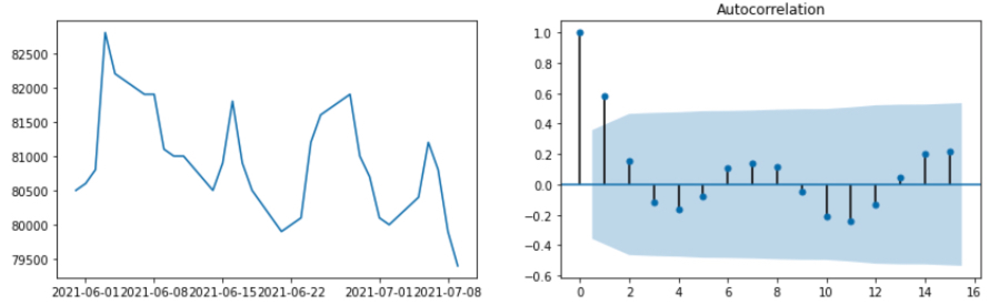</p>
<p>진짜로! lag=1만 허용 범위 밖이고, 나머지 lag에서는 허용 범위 안인 것 아니겠어요?<br />
ADF 검정 결과를 보면 p-value가 0.864로 나와서 진짜 정상성을 띠는 것은 아니긴 합니다. 아마도 ACF를 보면 물결 모양처럼 나와서 그렇지 않을까 생각이 드네요.<br />
아무튼! ACF가 빽빽하게 감소하는 모습이었으면…하는 바람이었습니다. (우상향 가즈아-!)</p>
<hr />
<h2 id="references"><a class="markdownIt-Anchor" href="#references"></a> References</h2>
<ul>
<li><a target="_blank" rel="noopener" href="http://www.yes24.com/Product/Goods/98576347">실전 시계열 분석: 통계와 머신러닝을 활용한 예측 기법</a></li>
<li><a target="_blank" rel="noopener" href="https://otexts.com/fppkr/">Forecasting: Principles and Practice</a></li>
</ul>

      
    </div>

    
    
    

    <footer class="post-footer">
        <div class="post-eof"></div>
      
    </footer>
  </article>
</div>


    


<div class="post-block">
  
  <div class="post-gallery" itemscope itemtype="http://schema.org/ImageGallery">
    
    <div class="post-gallery-image">
      
    </div>
    </div>

  <article itemscope itemtype="http://schema.org/Article" class="post-content" lang="">
    <link itemprop="mainEntityOfPage" href="http://assaeunji.github.io/2021/07/25/2021-07-25-geultto6/">

    <span hidden itemprop="author" itemscope itemtype="http://schema.org/Person">
      <meta itemprop="image" content="/images/avatar.gif">
      <meta itemprop="name" content="Eunji Lee">
    </span>

    <span hidden itemprop="publisher" itemscope itemtype="http://schema.org/Organization">
      <meta itemprop="name" content="Be Geeky">
      <meta itemprop="description" content="Hobby = Specialty">
    </span>

    <span hidden itemprop="post" itemscope itemtype="http://schema.org/CreativeWork">
      <meta itemprop="name" content="undefined | Be Geeky">
      <meta itemprop="description" content="">
    </span>
      <header class="post-header">
        <h2 class="post-title" itemprop="name headline">
          <a href="/2021/07/25/2021-07-25-geultto6/" class="post-title-link" itemprop="url">글또 6기를 시작하며</a>
        </h2>

        <div class="post-meta-container">
          <div class="post-meta">
    <span class="post-meta-item">
      <span class="post-meta-item-icon">
        <i class="far fa-calendar"></i>
      </span>
      <span class="post-meta-item-text">Posted on</span>

      <time title="Created: 2021-07-25 00:00:00" itemprop="dateCreated datePublished" datetime="2021-07-25T00:00:00+09:00">2021-07-25</time>
    </span>
    <span class="post-meta-item">
      <span class="post-meta-item-icon">
        <i class="far fa-calendar-check"></i>
      </span>
      <span class="post-meta-item-text">Edited on</span>
      <time title="Modified: 2023-04-23 11:13:52" itemprop="dateModified" datetime="2023-04-23T11:13:52+09:00">2023-04-23</time>
    </span>
    <span class="post-meta-item">
      <span class="post-meta-item-icon">
        <i class="far fa-folder"></i>
      </span>
      <span class="post-meta-item-text">In</span>
        <span itemprop="about" itemscope itemtype="http://schema.org/Thing">
          <a href="/categories/Diary/" itemprop="url" rel="index"><span itemprop="name">Diary</span></a>
        </span>
    </span>

  
</div>

        </div>
      </header>

    
    
    
    <div class="post-body" itemprop="articleBody">
          <h2 id="글또-또"><a class="markdownIt-Anchor" href="#글또-또"></a> 글또, 또?</h2>
<p>그렇습니다. 이번이 세 번째로 참여하는 글또입니다.</p>
<p>왜 세 번이나 연속으로 글또에 참여하게 되었나 생각해보면 &quot;글또를 할 때마다 <strong>열심히 살아가는 느낌</strong>&quot;이 들어, 그 느낌이 좋아서 계속 신청했던 것 같습니다.<br />
그 이전의 히스토리를 생각해보면 일단 정량적인 값인 &quot;예치금&quot;으로 봤을 땐 둘 다 2,500원씩 깎였습니다.(함정은 두 번 다 피드백 실수로 피드백 예치금에서 깎였다… ㅠㅠ)<br />
그러나 그 당시의 상황과 마음가짐은 완전히 달랐습니다.</p>
<p><strong>글또 4기</strong>를 시작한 때는 작년 2월로 취업에 실패했을 때였고, “으쌰으쌰!“의 마음가짐으로 임하였습니다. <a href="https://assaeunji.github.io/diary/2020-02-25-geultto/">2019년 회고, 2020년 계획</a>{:target=”_blank”}을 보면 희망찬 메시지를 담고 있죠. 글또를 하기 전에는 &quot;왜 나에게 이런 일이 일어났을까&quot;에 초점을 두고 좌절하면서 인생에서 가장 우울한 시기를 보냈었는데, 글또를 시작하면서 이런 생각을 떨쳐버릴 수 있었습니다.<br />
TMI로 말씀드리면 제게는 대학교 때부터 취업이 너무나도 어려운 과정이었고, 어렵게 취업했다 생각했던 곳에서 급작스러운 불합격 통보를 준 바람에 많은 방황을 했었죠.</p>
<p>그러나 결과적으로 <strong>글또에서 글쓰는 활동 뿐 아니라, 운동도 시작하고, 숨고도 하면서 생활비도 벌면서 바삐 살 수 있었습니다.</strong> 성윤님께서 당시 처음으로 글또 취업 컨설팅도 하시면서 저도 참가하였는데, 그 과정을 통해서 빨리 취업해야겠다는 생각보다는 제가 진정으로 원하는 회사가 어디일지 많은 고민을 하게 되었습니다. 나름의 우선순위를 따져가면서 아무 회사에 넣지 않고 선택과 집중을 한 덕분에 제가 원하던 회사에 취업하게 되었습니다.</p>
<p>그래서 그 뿌듯함을 또 느끼기 위해 <strong>글또 5기</strong>도 신청했습니다. 글또 5기는 회사에서도 초심을 잃지 말자라는 마음가짐으로 임하였습니다. <a href="https://assaeunji.github.io/diary/2020-11-15-geultto5/">글또 5기 시작: 글(을) 또 (쓰자)!</a>{:target=“_blank”} 글을 보면 마지막 말에도 그렇게 나와있네요. (소름) 아무튼 시작은 창대했는데 점점 갈수록 마음이 허하고 왜 글또를 하면서 이 고통을 받아야할까에 대해서도 많은 고민을 했습니다. 저의 심정을 담아주는 글이 바로 <a href="https://assaeunji.github.io/diary/2021-04-03-glump/">2021년 1/4분기 회고/ 글럼프 탈출이 시급하다</a>{:target=“_blank”} 이것이죠. 이 글을 보면, 정말 글을 쓰는데 힘들어하는 제 모습을 보입니다. 처음에는 일이 바빠서 피곤해서 글쓰기를 미루다가, 나중에는 그냥 글 쓰는게 부담되어서 글쓰는 것을 어려워 했습니다. 그래도 나름대로 극복하고 글또 5기가 끝날 때까지 노력했는데, 금방 글또 5기가 끝나버렸습니다 ㅋㅋㅋㅋ</p>
<p>글또 5기와 6기 사이의 방학 (저는 이걸 방학이라 부르기로 했습니다)기간은 제 나태함이 다시 리셋되기 충분한 시간이었습니다. <a href="https://assaeunji.github.io/diary/2021-06-23-newstart/">나태 지옥 그 언저리에서 느끼는 생각</a>{:target=“_blank”} 바로 이 글이 방학 때의 제 심정을 보여주죠. 제목에서 볼 수 있듯이 전 당시 나태 지옥에 빠졌습니다. (짤 재활용)</p>
<p></p>
<p>그래도 마지막은 희망찬 메시지로 끝났는데요! 한 줄 요약을 하자면 나태지옥에 빠져있던 제가 하기 싫은 걸 (내지는 미루고 싶은 걸) 억지로 한 번 해봤더니 느꼈던 뿌듯함을 매우 크게 느꼈고, 이 우연한 계기를 발판으로 삼아서 &quot;루틴을 깨자&quot;는 생각과 함께 글을 마무리하였습니다.</p>
<p>얼마 안 산 인생을 생각해보면 삶은 사인 그래프처럼 요동치는 듯합니다. 언제는 의욕이 넘치고, 모든걸 해보고 싶고 싶다가도, 슬럼프에 빠지면 의욕이 쭉 떨어지는 시기가 있습니다. 글또 4기와 5기만 해도 이런 &quot;의욕의 고저&quot;를 모두 경험한 것 같습니다. 근데 핵심은 글또 4기 때는 의욕의 저점에서 시작해서 우상향하는 모습을 보였다면, 글또 5기 때는 의욕의 고점에서 시작해서 우하향했다는 점이죠. 결국 의욕이 저점에 있든 고점에 있든 삶에서 크게 이탈하지 않고 이런 삶 자체를 인정하면 좋지 않을까라는 생각이 들었습니다. (아, 근데 사인 그래프처럼 0 부근으로 움직이지 않고, 추세로 보면 조금 우상향했으면 좋겠어요. 😄 마치 우량주처럼 말이죠.)</p>
<p>그래서 왜 글또를 또 하냐! 이번에는 의욕이 저점에서 시작하기 때문에 열심히 활동할 수 있을 것 같다고 스스로 기대하고 있기도 하지만, 더 중요한 이유는 글또에서 얻고자 하는 바가 추가로 있기 때문입니다. 바로, 글또가 지향하는 바인 “<strong>글쓰는 습관</strong>” 기르는 것이 이번의 목표입니다. 글또 6기 오리엔테이션 때 다른 분들을 보면서 자극이 되었습니다. 그들은 놀랍게도 성장하고 계셨는데, 나는 무얼 하고 있었나! 라고 말이죠. 저도 물론 성장한 구석이 있겠지만, 글쓰는 습관은 아직 못 들인 것 같습니다. 아직 글 쓰는 과정이 어렵고, 힘든데 이번에는 글을 즐기면서 쓰고, 습관을 더 기르는게 목표입니다.</p>
<ul>
<li><strong>여담 1</strong>: 최근 친구 회사로부터 제 글을 공유받았다는 소식을 들었는데, 그렇게 뿌듯할 수가 없더라고요. “이래서 글쓰지~!“라는 생각이 들면서요. 당시 XGBoost와 LightGBM을 비교한 글 <a href="https://assaeunji.github.io/machine%20learning/2021-01-07-xgboost/">XGBoost vs. LightGBM, 어떤 알고리즘이 더 좋을까?</a>{:target=”_blank”}을 쓰면서 많은 것을 공부하고, 기승전결을 담으려고 노력했는데 그 노력을 알아준 것 같아 좋았습니다. 다른 사람들이 제 글을 보고 도움을 얻는다면, 그 뿌듯함으로 글쓰는 걸 더 즐길 수 있지 않을까 생각이 들었습니다.</li>
<li><strong>여담 2</strong>: 이렇게 글또를 통해 다짐글을 여러 번 쓰다보니 이 글들을 보면서 제 삶을 잘 돌아볼 수 있게 되고, 잘 나아갈 수 있게 하는 것 같네요. 글또 최고입니다 😄</li>
</ul>
<hr />
<h2 id="이번에-쓸-글감은-두구두구"><a class="markdownIt-Anchor" href="#이번에-쓸-글감은-두구두구"></a> 이번에 쓸 글감은! (두구두구)</h2>
<p>이번 글또에서는 시계열 분석 두 스푼, 강화 학습 두 스푼, 인과 관계 분석 한 스푼, 베이지안 세 스푼을 넣어 완성시켜볼까합니다. (스푼 양은 달라질 수 있음 주의)</p>
<p>최근 이 두 책을 샀습니다.</p>
<ul>
<li><a target="_blank" rel="noopener" href="http://www.kyobobook.co.kr/product/detailViewKor.laf?ejkGb=KOR&amp;mallGb=KOR&amp;barcode=9791162244081&amp;orderClick=LEA&amp;Kc=">실전 시계열 분석</a>{:target=“_blank”}</li>
<li><a target="_blank" rel="noopener" href="http://www.kyobobook.co.kr/product/detailViewKor.laf?ejkGb=KOR&amp;mallGb=KOR&amp;barcode=9791158392031&amp;orderClick=LAG&amp;Kc=">파이썬과 케라스를 이용한 딥러닝/강화학습 주식투자</a>{:target=“_blank”}</li>
</ul>
<p>시계열 분석은 회사에서 자주 사용하는 데이터가 시계열인데, 시계열적 특성을 잘 이해하고 분석하면 좋겠다 하여 공부해보고자 합니다. 구체적으로는 정상성, AR, MA, ARIMA등의 통계적인 모형, Prophet 및 LSTM 모형, 더 간다면 HMM (Hidden Markove Model)까지 가지 않을까? 생각하고 있습니다.</p>
<p>강화 학습은 단순한 궁금증이 커서 공부해보고 싶었습니다. 특히 베이지안적 요소가 어떻게 녹아져 있는지 궁금합니다.<br />
그리고 위 두 주제에 대한 데이터는 주식 데이터가 아닐까 싶습니다. 아주 적절하죠!</p>
<p>인과 관계 분석은 여전히 많은 분석방법론이 있고, 니즈가 있어서 더 파볼 용의가 있습니다. 저번 기수부터 CausalImpact를 공부해보고 싶었는데 아직도 못 다룬 주제라 이번 기수에 다루지 않을까 싶습니다.<br />
이 외에도 책 리뷰도 생각하고 있지만 리뷰를 할 지 확실치 않으니, 밝히지 않겠습니다. (후후)</p>
<hr />
<h2 id="결론-요약"><a class="markdownIt-Anchor" href="#결론-요약"></a> 결론 요약</h2>
<ul>
<li>이번에는 의욕이 저점이니 고점까지 으쌰으쌰할 것</li>
<li>글 쓰는 걸 즐길 것</li>
<li>글감은 시계열 분석 두 스푼, 강화 학습 두 스푼, 인과 관계 분석 한 스푼, 베이지안 세 스푼! 변동 주의!</li>
</ul>
<p>이번 기수도 많은 분들께 도움을 받고, 열심히 활동하고 싶습니다. 저 또한 많은 분들께 도움을 드리고, 귀감이 되는 사람이 될 수 있도록 노력하겠습니다.</p>

      
    </div>

    
    
    

    <footer class="post-footer">
        <div class="post-eof"></div>
      
    </footer>
  </article>
</div>


    


<div class="post-block">
  
  <div class="post-gallery" itemscope itemtype="http://schema.org/ImageGallery">
    
    <div class="post-gallery-image">
      
    </div>
    </div>

  <article itemscope itemtype="http://schema.org/Article" class="post-content" lang="">
    <link itemprop="mainEntityOfPage" href="http://assaeunji.github.io/2021/06/23/2021-06-23-newstart/">

    <span hidden itemprop="author" itemscope itemtype="http://schema.org/Person">
      <meta itemprop="image" content="/images/avatar.gif">
      <meta itemprop="name" content="Eunji Lee">
    </span>

    <span hidden itemprop="publisher" itemscope itemtype="http://schema.org/Organization">
      <meta itemprop="name" content="Be Geeky">
      <meta itemprop="description" content="Hobby = Specialty">
    </span>

    <span hidden itemprop="post" itemscope itemtype="http://schema.org/CreativeWork">
      <meta itemprop="name" content="undefined | Be Geeky">
      <meta itemprop="description" content="">
    </span>
      <header class="post-header">
        <h2 class="post-title" itemprop="name headline">
          <a href="/2021/06/23/2021-06-23-newstart/" class="post-title-link" itemprop="url">나태 지옥 그 언저리에서 느끼는 생각</a>
        </h2>

        <div class="post-meta-container">
          <div class="post-meta">
    <span class="post-meta-item">
      <span class="post-meta-item-icon">
        <i class="far fa-calendar"></i>
      </span>
      <span class="post-meta-item-text">Posted on</span>

      <time title="Created: 2021-06-23 00:00:00" itemprop="dateCreated datePublished" datetime="2021-06-23T00:00:00+09:00">2021-06-23</time>
    </span>
    <span class="post-meta-item">
      <span class="post-meta-item-icon">
        <i class="far fa-calendar-check"></i>
      </span>
      <span class="post-meta-item-text">Edited on</span>
      <time title="Modified: 2023-05-02 22:18:58" itemprop="dateModified" datetime="2023-05-02T22:18:58+09:00">2023-05-02</time>
    </span>
    <span class="post-meta-item">
      <span class="post-meta-item-icon">
        <i class="far fa-folder"></i>
      </span>
      <span class="post-meta-item-text">In</span>
        <span itemprop="about" itemscope itemtype="http://schema.org/Thing">
          <a href="/categories/Diary/" itemprop="url" rel="index"><span itemprop="name">Diary</span></a>
        </span>
    </span>

  
</div>

        </div>
      </header>

    
    
    
    <div class="post-body" itemprop="articleBody">
          <ul>
<li>한 달만에 쓰는 글이네요. 글또가 끝난 후에 처음으로 자발적으로 쓰는 글입니다.</li>
<li>요즘 나태지옥에 빠졌습니다. 모든걸 끝까지 미루는 습관을 가졌던 지난 날에 대해 반성하고… 새로운 마음으로 다시 다짐을 하고자 글을 썼습니다. (빠바빰빰 빠~밤)</li>
</ul>
<hr />
<h2 id="나태-지옥-멈춰"><a class="markdownIt-Anchor" href="#나태-지옥-멈춰"></a> 나태 지옥 멈춰!</h2>
<p></p>
<p>현재의 제 상태를 한 줄 요약하면 &quot;나태지옥&quot;입니다. 최대한 무언갈 미루고 싶고… 누워있고 싶고…집 청소도 귀찮아 하는… 그런 상태입니다.<br />
회사에서도 집에서도 (= 어디서나라는 뜻 ㅎㅎㅎ) 자기 계발과는 좀 거리가 먼 삶을 살고 있습니다.<br />
그렇다고 번 아웃인가? 라고 생각해보면 그것도 또한 아닙니다. 아주 행복한 삶을 살고 있습니다.</p>
<p>그럼 왜! 나태지옥에 빠졌는가하면 글또 활동이 끝난 것이 가장 큽니다. 글또를 할 당시에는 직장을 다니면서 어떻게든 꾸역꾸역 글을 써가면서 자기계발을 할 수 있었지만,<br />
글또가 끝나고 나니 글을 쓰게 되는 동기가 없어지고 글쓰기 뿐만 아니라 다른 활동에도 지대한 영향을 미쳤습니다.</p>
<p>그러나, 이건 글또 탓이 아닌 온전히 제 탓입니다. 저는 &quot;일 미루기 대마왕&quot;이자 &quot;강제성 없이 못 사는 사람&quot;이기 때문입니다.</p>
<hr />
<h3 id="일-미루기-대마왕"><a class="markdownIt-Anchor" href="#일-미루기-대마왕"></a> 일 미루기 대마왕</h3>
<p>“일 미루기 대마왕” 성격은 후천적으로 얻었습니다. (흑흑) 제 짧은 역사를 되돌아보면 고등학생 때만 해도 굉장히 규칙적인 삶을 사는 사람이었습니다.<br />
대학 입학이라는 확실한 목표 아래 하루 단위로 공부를 쪼개가며 다이어리에 기록을 했습니다. 그땐 제 스스로 &quot;규칙적이고 정해진 삶&quot;을 좋아한다 느꼈습니다.<br />
다이어리에 계획이 덜 지켜지면 반성하는 글도 작성하기도 하고, 제 스스로를 다독이기도 하면서 나름대로 제 목표를 달성할 수 있었습니다.</p>
<p>근데! 대학을 입학하고 나서 완전히 성격이 바뀌었습니다. 확실한 계기는 &quot;우리 말과 글쓰기&quot;라는 수업 때입니다. 이 수업은 1학년 2학기 때 듣는 필수 교양 수업으로,<br />
(잘은 기억이 안 나지만) 기말 고사 대신 소논문을 내는 것이 최종 과제였습니다.<br />
저는 하기 싫은 걸 정~~~말 싫어하는 호불호가 강한 타입인데, 고등학교 때는 그래도 어쩔 수 없이 좋은 성적을 얻기 위해 꾸역꾸역 해왔지만 대학교 때는 그만큼 성적이 중요하다고 느껴지지 않았나봅니다.<br />
결국 소논문을 미루고 미루다 하루만에 20장을 작성했고, 운좋게도 A라는 좋은 성적을 얻었습니다.</p>
<p>인간은 학습의 동물입니다. 저는 이 경험을 통해 &quot;<strong>하루만에 해도 좋은 성적을 얻을 수 있으니, 이건 여러 기간동안 붙잡고 있는 것보다 훨씬 효율적인 방법이다!</strong>&quot;라고 깨우쳤던 것 같습니다.<br />
제 동기 중 한 명이 유독 과제를 일찍 시작하고 일찍 스트레스를 받는 친구가 있었는데, 그 친구를 장난조로 놀리기도 했습니다. &quot;하루 만에 하면 되지 뭐이리 오래 질질 끌어~&quot;라면서요.<br />
또 유유상종이라고 제 주변엔 유독 &quot;일 미루기 대마왕&quot;이 많았습니다. 근데 다들 또 성적은 예상보다 좋았기에 일을 미뤘을 때의 부작용을 충분하게 경험하지 못했습니다.</p>
<p>대학교, 대학원까지 별 탈 없이 이 습관이 굳어졌고, 직장에 와서도 이 습관이 이어졌습니다.<br />
요즘은 일을 할 때, 마감 기한에 맞춰서 끝내는 습관이 있는데요.<br />
과거에는 &quot;일 미루기&quot;의 유일한 부작용이 마감 기한이 되면 급격히 피로하다는 것이었지만, 지금에는 더 많은 부작용들을 체감하고 있습니다.</p>
<ul>
<li>첫째, 일의 마감 기한까지 미루다보면 또 다른 일이 들어와서 결국 마감 기한을 못지키게 된다.</li>
<li>둘째, 다른 분들의 걱정을 산다.</li>
<li>셋쨰, 컨디션의 회복이 안 된다.</li>
</ul>
<p>이렇게 리스트업하니 정말 부작용이 심각하네요…ㅋㅋㅋㅋ 일단 첫번째 부작용은 최근 경험한 일에서 느꼈습니다.<br />
2주 간의 시간이 주어졌던 분석 건이 있었는데 급한 건이 아니니 좀 천천히 데이터를 파악하고 있었습니다. 그리고 도메인이 낯설어서 하기 좀 부담스러운 면도 있었는지 미루고 있었습니다.<br />
근데 일을 미루는 동안 더 우선순위가 높은 다른 분석 건이 오는 바람에 이 분석 건부터 처리해야 했습니다.<br />
결국 원래 하고자 했던 분석 건은 이 주면 충분하겠다 생각했지만 남은 working day는 고작 이틀이었습니다.<br />
이틀 동안 분석을 끝내지 못해서 하루를 연장했으며, 분석 퀄리티도 단순 데이터 조사에서 끝난 것 같아 스스로 많은 후회를 했습니다.<br />
패인은 분석 기간을 짧게 잡은 것도 있었지만 제가 일을 미뤘던 것이 큽니다.</p>
<p>둘째, 다른 분들의 걱정을 삽니다. 제 주변 동료는 저와 달리 계획적이고 일을 미리미리 잘 처리하시는 &quot;일잘러&quot;십니다. 그러다 보니 그분께서 제가 일을 기한까지 못 끝낼까봐, 혹은 예정된 일을 까먹을까봐 걱정이 되셨나봅니다.<br />
제게 한 사흘 전이면 노티를 줍니다. 저는 다행히(?) 일을 까먹은 적은 없지만, 충분히 더 바쁘다면 일어날 수 있는 일이라 할 말이 없죠.<br />
이런 오해를 받는 것도 제가 일을 미루는 데에서 기인한 것이기 때문에, 악습관을 꼭 고쳐야겠다 생각이 들었습니다.</p>
<p>마지막으로 컨디션과 관련한 내용입니다. 일을 미루다 보면 마감 기한 때 매우 큰 에너지를 써야 합니다. 야근은 물론이지요…하하…<br />
그러면 그 다음 날, 그 다음 다음 날,… 주말까지 피로가 누적되어서 금요일이 되면 반 좀비 상태가 되더군요.<br />
주말에 그럼 푹 쉬냐? 그런 것도 아니죠. (어림도 없지!)</p>
<p>대화의 희열3이라는 프로그램에서 오은영 박사님께서 일을 미루는 습관을 가진 사람들의 심리를 설명한 적이 있었습니다. (<a target="_blank" rel="noopener" href="https://youtu.be/CKy5wtxroro">링크</a>)<br />
일을 미루는 사람은 일반적으로는 게을러 보이지만 완전 반대일 가능성이 크다 하셨습니다. 게으른 게 아니라 더 잘하고 싶은 마음이 큰 사람이고, &quot;제대로 못해서 적당히 해서 창피해질 바에는 차라리 안하는게 낫겠다&quot;라는 생각을 가지기 때문에 일을 미룬다 하셨습니다. 그리고, 일을 끝까지 미루고, 데드 라인 때 &quot;이거 지금 안하면 죽음이다&quot;라는 긴장감으로 일을 수행하는 심리가 있다고 말씀하셨습니다. 그리고 오히려 이랬을 때 실제 수행도와 완성도는 높을 가능성이 많다라고 하셨는데요.</p>
<p>저도 말씀 하나하나에 큰 공감을 했습니다.<br />
저도 일을 수행할 때, 빠르게 훑어보지 못하고 한땀 한땀 보고서를 작성해야 일의 진도가 나가는 스타일입니다. 그래서 데드라인까지 이런 일을 반복하여 시간이 오래 걸리는 편입니다.<br />
그리고 &quot;일 각 잡기&quot;도 오래 합니다. 이 일은 뭐지? 어떻게 해야하지? 더 잘할 수 있는 방법은 없을까? 이런 고민들을 많이 하다보니 다른 분들에 비해서 일이 느린 편입니다.<br />
더 중요한건 마감 기한이 다가오면 흔히 말하는 &quot;똥줄&quot;이 제대로 타면서, 극강의 집중력을 발휘하여 나름대로 일을 잘 마무리하고 있는 상태입니다.</p>
<p>오은영 박사님께서 제안하신 방안은 크게 두 가지였습니다.</p>
<ul>
<li>첫째, 데드라인을 '삶의 선’으로 바꿔라.</li>
<li>둘째, 완벽에 대한 기준을 완화해라.</li>
</ul>
<p>사실 위 조언을 받아들여 단기간에 습관을 바꾸기란 어렵지만, 그래도 이 성격은 못 바꾸는 거라 못 박는 것보단 바꾸고자 하는게 더 좋은 자세라 생각이 듭니다.</p>
<hr />
<h3 id="강제성-없이-못-사는-사람"><a class="markdownIt-Anchor" href="#강제성-없이-못-사는-사람"></a> 강제성 없이 못 사는 사람</h3>
<p>강제성, 그것이 주는 압박감에 잘 순응하는 편이다 보니 항상 강제성에 의존하여 무언가를 해내는 경우가 많았습니다.<br />
글또도 대표적인 예시입니다. 글또에서 하는 규칙 그대로 2주마다 글을 쓰고 그보다 많게도, 적게도 하지 않았습니다.</p>
<p>그 것뿐이냐, 저는 남자친구와 연간 계획을 2년째 세우고 있는데 하나씩 달성하면 10만 원 상당의 선물을 주는 내기를 하고 있습니다.<br />
그 효과는 갱장합니다. 그렇게 게으른 사람이 아직까지도 &quot;일주일에 운동 3번&quot;을 지키고 있는걸요!</p>
<p>근데 문제는 이제 그 강제성이 없으면 <strong>무언가를 자발적으로 하려는 의지가 전혀 없다</strong>는 것입니다.<br />
마치 제 인생의 default가 &quot;하기 싫어!&quot;이고 억지로 어떤 제도에 의해 수동적으로 하게 되는 느낌이었습니다.</p>
<p>어느 날 “일주일에 운동 세 번” 약속도 마찬가지로 네 번을 하지도, 두 번을 하지도 않고 딱 세 번만 하고 있었는데,<br />
운동 기록들을 보면서 반성한 적이 있었습니다. 세 번이라면 월, 수, 금 혹은 화, 목, 토 이렇게 띄엄띄엄하면 좋으련만,<br />
몇 주 째 제 운동 기록은 **“월, 토, 일”**이었습니다. 이 말인 즉슨, 월요일에 파이팅 넘치게 운동을 하고 &quot;아 하기 싫어 하기 싫어!!&quot;하며<br />
주말까지 미루다가 토요일, 일요일을 몰아서 하게 되는 양상인 것이죠…</p>
<p>그래서 이 루틴을 깨고자 일부러 저번 주에는 3일 연속으로 운동을 나가보았습니다.<br />
그랬더니 인생에서 느낄 수 있는 뿌듯함 Top 10에 들 정도로 아주 큰 뿌듯함을 느끼고 있는 것입니다!<br />
하기 싫은 걸 억지로 하니, 너무나도 뿌듯하고 제 스스로 루틴을 깼다는 점에서 제 머리 속에서 아주 후하게 점수를 주더군요.</p>
<p>일상 속에서 얻는 깨달음이 참 별 거 아닌데도 제가 성장한 기분이 들기도 하고 좋았습니다.</p>
<hr />
<h2 id="이제-또-성장할-때"><a class="markdownIt-Anchor" href="#이제-또-성장할-때"></a> 이제 또 성장할 때</h2>
<p><strong>이 우연한 날을 계기로, 저는 루틴을 깨는 작업들을 계속 도전해보고자 합니다.</strong></p>
<p>한창 취준생일 때는 &quot;내가 누구일까&quot;에 대해서 고민하는 시기가 많았다면, 요즘은 &quot;내가 누구이니까 이건 못해&quot;로 생각하면서 제 스스로 한심하다 느낄 때가 있습니다.<br />
어느 정도 제 성격을 알게 되니 그 성격대로 행동한다고 할까요?</p>
<p>난 원래 일을 잘 마루고, 나중에 집중력이 좋아지는 타입이다. 혹은 강제성이 있어야만 일을 한다.라고 제 존재를 한정시키고 나니 더 이상 개선의 여지가 없었습니다.<br />
나이가 들어가면 이런게 더 심해질 것 같아서, 저를 정의하는 것을 멈추려고 합니다.</p>
<p>유일하게 정의하고 싶은 저는 **“꾸준히 성장하고 싶은 사람, 머물러 있지 않는 사람”**이 되고 싶습니다.<br />
작년 2월 25일에 글또에서 처음 활동하면서 아래와 같은 문구를 남긴 적이 있는데요.</p>
<p></p>
<blockquote>
<p>저는 위베어베어스를 좋아하는데 이 그림이 제 삶과 비슷하다고 생각합니다. 위로 올라갈수록 버전이 업그레이드된다고 가정했을 때, 지금의 저는 <strong>판다</strong>와 <strong>그리즐리</strong> (갈색곰) 사이인 ver 2.1. 정도 되는 것 같습니다. 각 곰에 대한 설명은 다음과 같습니다.</p>
<ul>
<li><strong>아이스 베어</strong> (흰 곰) (ver 1): 통계학이 좋아 통계학과를, 코딩이 좋아 데이터 분석 분야를 택했던 제 대학 시절입니다. 이것 저것 경험해보고 머신러닝에 대해 많이 공부했다 생각했지만 취업 준비 중 데이터 분석 면접에서 아무것도 적용하지 못했던 절 보며 충격을 먹습니다…!</li>
<li><strong>판다</strong> (ver 2): 앞에서 설명해 드린 대학원 시절이 팬더에 가깝습니다. 이번엔 데이터 분석 면접도 무사통과해서 자신감이 넘친 모습입니다. 그러나 결국 또 취업의 고비를 넘지 못합니다.</li>
<li>방황도, 걱정도 많은 지금 글또라는 좋은 모임을 만나 <strong>그리즐리</strong> (ver 3)로 진화! 하는 그날을 기원해봅니다.</li>
</ul>
</blockquote>
<p>이번의 깨달음을 통해 <strong>그리즐리</strong> (ver3)로 진화했다 마무리하고 싶습니다.<br />
소소하지만, 나태해지지 않도록.</p>

      
    </div>

    
    
    

    <footer class="post-footer">
        <div class="post-eof"></div>
      
    </footer>
  </article>
</div>


    


<div class="post-block">
  
  <div class="post-gallery" itemscope itemtype="http://schema.org/ImageGallery">
    
    <div class="post-gallery-image">
      
    </div>
    </div>

  <article itemscope itemtype="http://schema.org/Article" class="post-content" lang="">
    <link itemprop="mainEntityOfPage" href="http://assaeunji.github.io/2021/05/02/2021-05-02-geultto5fin/">

    <span hidden itemprop="author" itemscope itemtype="http://schema.org/Person">
      <meta itemprop="image" content="/images/avatar.gif">
      <meta itemprop="name" content="Eunji Lee">
    </span>

    <span hidden itemprop="publisher" itemscope itemtype="http://schema.org/Organization">
      <meta itemprop="name" content="Be Geeky">
      <meta itemprop="description" content="Hobby = Specialty">
    </span>

    <span hidden itemprop="post" itemscope itemtype="http://schema.org/CreativeWork">
      <meta itemprop="name" content="undefined | Be Geeky">
      <meta itemprop="description" content="">
    </span>
      <header class="post-header">
        <h2 class="post-title" itemprop="name headline">
          <a href="/2021/05/02/2021-05-02-geultto5fin/" class="post-title-link" itemprop="url">글또 5기를 마치며</a>
        </h2>

        <div class="post-meta-container">
          <div class="post-meta">
    <span class="post-meta-item">
      <span class="post-meta-item-icon">
        <i class="far fa-calendar"></i>
      </span>
      <span class="post-meta-item-text">Posted on</span>

      <time title="Created: 2021-05-02 00:00:00" itemprop="dateCreated datePublished" datetime="2021-05-02T00:00:00+09:00">2021-05-02</time>
    </span>
    <span class="post-meta-item">
      <span class="post-meta-item-icon">
        <i class="far fa-calendar-check"></i>
      </span>
      <span class="post-meta-item-text">Edited on</span>
      <time title="Modified: 2023-05-02 22:18:57" itemprop="dateModified" datetime="2023-05-02T22:18:57+09:00">2023-05-02</time>
    </span>
    <span class="post-meta-item">
      <span class="post-meta-item-icon">
        <i class="far fa-folder"></i>
      </span>
      <span class="post-meta-item-text">In</span>
        <span itemprop="about" itemscope itemtype="http://schema.org/Thing">
          <a href="/categories/Diary/" itemprop="url" rel="index"><span itemprop="name">Diary</span></a>
        </span>
    </span>

  
</div>

        </div>
      </header>

    
    
    
    <div class="post-body" itemprop="articleBody">
          <ul>
<li>세월이 참 빨리 갑니다. <a href="https://assaeunji.github.io/diary/2020-07-18-halfofyear/">2020년 상반기 회고 &amp; 하반기 계획</a> 포스트에서 글또 4기에 대한 회고를 썼었는데, 벌써 1년이 다 되가다니… 이번에도 어김없이 글또에 대한 소회를 적으려 합니다.</li>
<li>타이틀 이미지는 <a target="_blank" rel="noopener" href="https://baek.dev/doolys-welcome/">글또 5기 회원인 baekdev님의 둘리 &amp; 도우너 어서오고 짤 생성기</a>에서 생성하였습니다. 이에 대한 회고는 <a target="_blank" rel="noopener" href="https://baek.dev/post/33/">둘리 &amp; 도우너 어서오고 짤 생성기 회고</a>에서 확인하실 수 있습니다.</li>
</ul>
<hr />
<h2 id="글또-4기보다-5기-때-성장했을까"><a class="markdownIt-Anchor" href="#글또-4기보다-5기-때-성장했을까"></a> 글또 4기보다 5기 때 성장했을까?</h2>
<p>이번 기수에서는 다음과 같이 총 9개의 글을 썼습니다.</p>
<figure class="highlight plaintext"><table><tr><td class="gutter"><pre><span class="line">1</span><br><span class="line">2</span><br><span class="line">3</span><br><span class="line">4</span><br><span class="line">5</span><br><span class="line">6</span><br><span class="line">7</span><br><span class="line">8</span><br><span class="line">9</span><br></pre></td><td class="code"><pre><span class="line">- 글또 5기 시작: 글(을) 또 (쓰자)!</span><br><span class="line">- Implicit Feedback 추천 시스템에 대한 친절한 설명</span><br><span class="line">- 10분 만에 구현하는 BigQuery K-평균 클러스터링 모델</span><br><span class="line">- XGBoost vs. LightGBM, 어떤 알고리즘이 더 좋을까?</span><br><span class="line">- A/B 테스트의 확장판, MAB (Multi-Armed Bandits) 알고리즘</span><br><span class="line">- 인과 관계 분석 시리즈 (2): 회귀 불연속 설계법 (Regression Discontinuity Design)과 이중 차분법 (DiD)</span><br><span class="line">- 유용하게 쓰이는 SQL 상황별 쿼리 꿀팁</span><br><span class="line">- 2021년 1/4분기 회고: 글럼프 탈출이 시급하다</span><br><span class="line">- 정규 표현식에 대한 쉬운 설명 + PySpark 실습</span><br></pre></td></tr></table></figure>
<p><a href="https://assaeunji.github.io/diary/2021-04-03-glump/">2021년 1/4분기 회고: 글럼프 탈출이 시급하다</a> 글에서도 언급했었지만, 이번 기수에서 쓴 소재들은 제가 계획했던대로 잘 썼던 것 같습니다. 글또 아니었으면 이 소재들을 다 공부할 수 있었을까? 싶어 감사함이 듭니다.</p>
<p>글또 5기를 시작했을 때 글인 <a href="https://assaeunji.github.io/diary/2020-11-15-geultto5/">글또 5기 시작: 글(을) 또 (쓰자)!</a>에서 어떻게 글을 작성하고 싶은지 다음과 같이 썼었습니다.</p>
<ul>
<li>글을 너무 길게 쓰지 말자</li>
<li>시리즈 글은 완성하자</li>
<li>영어 제목을 지양하자</li>
</ul>
<p>이에 대해서 얼마나 지켰는지 돌아보자면,</p>
<p>먼저 <strong>글을 너무 길게 쓰지 말자</strong>에 대해서는 한 80% 정도 달성한 것 같습니다. 이번 기수에서 쓴 글들의 글자수를 갖고 통계를 내보면 평균적으로 6,900자 <span class="katex"><span class="katex-mathml"><math xmlns="http://www.w3.org/1998/Math/MathML"><semantics><mrow><mo>±</mo></mrow><annotation encoding="application/x-tex">\pm</annotation></semantics></math></span><span class="katex-html" aria-hidden="true"><span class="base"><span class="strut" style="height:0.66666em;vertical-align:-0.08333em;"></span><span class="mord">±</span></span></span></span> 2,100자 정도 (약 4,800자 ~ 9,000자)의 글을 썼으며, 최소 4,123자, 최대 10,976자의 글을 썼습니다. 목표는 6천 자 내외였지만 평균적으로 더 많은 7천 자 정도 작성하게 되었네요. 글마다 자수가 2,100자로 편차가 큰 건 내용과 깊이가 다른 만큼 당연하다는 생각이 듭니다. 다음 기수에서도 글자수에 대해 적당히 맞추려고 노력하겠습니다!</p>
<p><strong>시리즈 글은 완성하자</strong>에 대해서는 50%정도 달성했다 볼 수 있는게 어떤 글들은 시리즈를 완성했고, 어떤 글들은 시리즈를 기약했지만 기약의 상태로… 남아있습니다. 여전히 하나의 주제로 여러 번 글을 쓰면 지겹고, 쓰기 싫고 그러네요… ㅎㅎ이건 글을 쓰면서 항상 남아있는 죄책감일 것 같아요. 하나의 소설을 쓰는 웹툰 작가들의 노고를 간접적으로 경험해봅니다. 단편적으로 보면 글 하나 하나이지만, 크게 보면 &quot;제 블로그의 정체성&quot;을 나타내는 것이기 때문에 (ex. 이 블로그는 CNN 전문이고, 저 블로그는 빅쿼리 전문이고…) 언젠가는 제 전문 분야를 찾아 더 깊게 들어가는 날을 희망해 봅니다.</p>
<p><strong>영어 제목을 지양하자</strong>에 대해선 90% 달성했다 말씀드릴 수 있습니다! Implicit Feedback 추천시스템 외에는 한국어와 병기하고자 했고 내용 또한 영어로만 설명하는 게 적어졌습니다. 여전히 미국, 일본에서 제 사이트를 방문한 기록이 남아있긴 하지만… 그래도 트랩을 줄이고자 <strong>K-블로그</strong>로 더 발전시켜보겠습니다.</p>
<p>결과적으로, 여전히 하나의 글을 완성시키기는 어렵고, 글 쓰는데 시간을 많이 투자한다는 점에서 글또 4기 때보다 &quot;성장했다&quot;라고 단언하기는 어렵지만, 그래도 5기 때 다짐했던 액션 아이템들을 실천하려 노력한 것만으로도 성취감을 얻었습니다. 또한, &quot;글럼프&quot;에 빠졌던 저 (아직 ing…?)이지만 꾸준히 무언갈 해보고 공부하는 자극이 된다는 점에서 글또를 여력이 닿는 한 해보고 싶다는 생각이 드네요. 마지막으로, 아직 코로나라 글또 회원들과 직접 소통하지 못 했는데 대면 만남이 가능한 날이 오면 더 재밌게 활동할 수 있지 않을까? 라고 기대도 됩니다 :&gt;</p>
<p>정리하자면, 글또 5기는 꽤나 힘들었지만 역시 값어치가 있는 일이었고, 차후에도 기대가 되는 활동이기 때문에 6기도 지속하고 싶네요 ~!</p>
<hr />
<h2 id="지난-1년에-비하면-성장했을까"><a class="markdownIt-Anchor" href="#지난-1년에-비하면-성장했을까"></a> 지난 1년에 비하면 성장했을까?</h2>
<p>글또가 또 좋은게 회고글을 독려하기 때문에, 제가 어떤 생각을 하였는지 회고글에 오롯이 나타나는게 좋습니다. 작년 7월 18일, <a href="https://assaeunji.github.io/diary/2020-07-18-halfofyear/">2020년 상반기 회고 &amp; 하반기 계획</a>에서 저는 20년 하반기 계획을 세웠었는데요. 물론 지금 21년 상반기이지만 하반기 계획에 대해 잘 실행했는지에 대한 제 자신의 피드백이 없었습니다. 그래서 제 20년 하반기 계획에 대해 살펴보고 실천했는지 확인해보고자 합니다. 하반기 계획은 다음과 같이 <strong>성장과 보은의 반기</strong>가 테마였네요 (아련…).</p>
<ol>
<li><strong>성장하기</strong>
<ul>
<li><strong>회사 일 잘 팔로우업 하기</strong>: Tableau, Spark, SQL 공부가 필요합니다. 또한, 데이터를 바라보는 것에서 그치지 않고 어떤 “결론”을 내는 것이 중요하다 생각해 멘토님과 여러 팀원들을 보며 배우고 있습니다.</li>
<li><strong>GitHub에 양질의 글쓰기</strong>: 일주일에 한 번 글을 쓰는 것이 목표입니다. 나태지옥을 벗어나겠습니다! 주제는 인과관계 추론 마무리 좀 하고 또 고민해보겠습니다.</li>
<li><strong>헬스로 더 건강해지기</strong>: 현재 인바디 신체발달점수가 77점인데요. “강함”의 기준인 80점 이상으로 만들어보겠습니다.</li>
<li><strong>마음 건강 챙기기</strong>: 크고 작은 일에 일희일비하지 말고 좀 차분히, 여유를 갖는 자세가 필요하다 생각이 들었습니다.</li>
</ul>
</li>
<li><strong>보은하기</strong>
<ul>
<li><strong>부모님께 보은</strong>: 잘 키워주셔서 감사하다고 좋은 걸 많이 사드리고 싶네요. 후후후…</li>
<li><strong>남자친구 보은</strong>: 이제껏 남자친구가 데이트 비용을 많이 부담했었는데 이젠 제가 더 많이 내는게 목표입니다 크크 그리고 남자친구가 힘들 때도 위로해주는 좋은 여자친구가 되고 싶습니다.</li>
<li><strong>친구들과 관계 잘 유지하기</strong>: 제가 힘들 때 도와줬던 고마운 친구들을 잊지않고 관계를 유지하는게 목표입니다. 최소 분기 당 한 번은 만나줘야…</li>
</ul>
</li>
</ol>
<p>먼저 <strong>1. 성장하기</strong>에 대해 살펴보자면</p>
<ul>
<li><strong>회사 일 잘 팔로우업 하기</strong>: 회사 일은 잘 팔로우업하고 있고, Tableau, Spark, SQL 실력도 많이 향상된 것을 느끼는 중입니다. 최근 글또 덕분인지 회사에서 <strong>정리 요정</strong>이라는 칭호도 얻었는데요 (<s>다른 칭호가 퇴근 요정인건 함정입니다</s>). 회사에서 Spark나 SQL을 쓰면서 오류가 났던 점을 페이지에 정리해서 공유하기도 하고, 분석 내용 및 방법론에 대해서도 정리합니다. 그러나 여전히 데이터 분석에 대해 &quot;결론&quot;을 내는건 어렵습니다. ㅠㅠ <strong>짬</strong>에서 나오는 <strong>바</strong>이브가 더 축적되었으면 하는 바람이 있습니다.</li>
<li><strong>GitHub에 양질의 글쓰기</strong>: 계획을 보면 일주일에 한 번 글을 쓰는게 목표라던데…ㅋㅋㅋㅋㅋㅋㅋㅋ 이건 좀 슬프군요. 최근 글럼프에 빠졌던 사람으로써 <strong>양</strong>적인 측면은 못 지켰지만, 그래도 <strong>질</strong>적인 글을 쓰고자 노력했던 것 같습니다.</li>
<li><strong>헬스로 더 건강해지기</strong>: 오~! 헬스도 꾸준히 하고 있습니다. 신체발달점수를 80점 이상으로 만들어보는게 제 목표였는데… 인바디를 잰 지 좀 오래되어서 다시 한 번 재야겠네요. 최근에 또 헬스에서 권태로움을 느끼고 있어서 일주일에 3회 -&gt; 4회로 헬스 빈도를 늘려보고자 합니다.</li>
<li><strong>마음 건강 챙기기</strong>: 일희일비 하지 않고 차분히, 여유를 갖는 자세…는 매우 어렵습니다. 되돌아보면, 오히려 “일희일희”, &quot;일비일비&quot;하는 그런 사건들이 많았던 것 같아요. &quot;일희일희&quot;할 때는 뭐만 해도 행복해하는지 알고, 쉽게 행복해지기 때문에 좋은 것 같은데, 또 &quot;일비일비&quot;할 때는 감정이 쌓이면 울기 일쑤여서 참 나타나지 않았으면 하는 바람이 있습니다. 그래도 마음은 건강한 것 같긴 하구… 어떻게 하면 감정의 극과 극을 잘 조절할 수 있을까요? 더 으른 <sup>어른은 어감이 안 살아 &quot;으른&quot;이라 표현함</sup> 이 되면 알까요? (실천하지 못한 것 같아 오픈 퀘스쳔으로 급마무리해봅니다…)</li>
</ul>
<p>두번째로 <strong>2. 보은하기</strong>를 살펴보자면,</p>
<ul>
<li><strong>부모님께 보은</strong>: 좋은걸 많이 사드리기보단 현금 박치기~! 로 보은 중입니다. ㅋㅋㅋㅋ 부모님께서 최근 그 현금으로 주식 투자를 하셔서 쏠쏠하게 재미를 보셨다는 말씀을 해주셔서 뿌듯함을 느끼고 있습니다. 이번 어버이날엔 편지와 현금을 또 준비해봐야겠어요.</li>
<li><strong>남자친구에게 보은</strong>: 제가 더 많이 내는게 목표라고 했는데… 사실 돈 관계를 따지진 않아서 잘은 모르겠습니다. 그러나, 남자친구들의 친구들로부터 &quot;좋겠다~!&quot;라는 소리를 듣는 걸 보면 뭐 적당히 잘 하고 있는거 아닐까요? 후후…오래 사겨왔지만 남자친구도 항상 잘 도와주고 제 편이 되주는 분이라 저도 더 노력하고자 합니다.</li>
<li><strong>친구들과 관계 잘 유지하기</strong>: 이건 제 친구들이 정말 저같은 친구를 거둬주고 있는 느낌입니다. 친구 관계를 잘 유지하고 있지만, 이 배경에는 친구들의 덕이 큰 것 같아요. 또 자취를 시작하다보니 서울 친구들을 예전만큼 많이 만나지 못했지만, 서울에 올라올 때 애틋 한 스푼을 더해 만나고 있어요. 친한 팀원분의 말씀을 인용하자면, 최소한 <strong>6개월에 한 번은 안부인사</strong> (이는 생일에 한 번 축하하는 것을 넘은 사이라는 것!!!)를 해주는 친구가 되고 싶습니다.</li>
</ul>
<p>마지막으로 목표는 세워두어야 반이라도 달성했을 때 뿌듯하다 마무리하며 과거에 글을 마무리했었는데, 반 이상 달성한 것 아니겠어요? 아주 *2 매우 *2 뿌듯합니다. (또 일희일희 하는 중) 아주 죠씁니다.</p>
<hr />
<h2 id="2021년-하반기-계획"><a class="markdownIt-Anchor" href="#2021년-하반기-계획"></a> 2021년 하반기 계획</h2>
<p>자, 그럼 이제 21년 하반기 계획을 세워볼까요?<br />
어쨌든 성장과 보은은 지속되어야 하고 누적해서 <strong>“어떻게 하면 더 성장하고 한 해를 보람차게 보낼 수 있을까?”</strong> 고민을 해보았습니다.</p>
<ol>
<li><strong>제 취향의 책 / 유투브 강연 찾기 &amp; 짧은 독후감 쓰기</strong>: 저는 책과 유투브에 거리가 먼 사람입니다. 책은 읽다가도 지겨워서 절반도 안되어 포기하기 일쑤이고 (현재 구매한 책이 4권이 있는데 다 반까지 읽은게 소름 ㄷㄷ…), 유투브 또한 듣는걸 피곤해하기 때문에 싫어합니다. 근데, 이 둘은 제가 성장하기 위해 좋은 밑거름이 될 걸 알기 때문에 언젠가는 좀 좋아하는 취미가 되었으면 하는 바람에 1순위로 두게 되었습니다.</li>
<li><strong>시계열, 인과관계 분석, 분류 알고리즘 더 깊게 파서 일잘러 되기</strong>: 일을 하면서 아직 공부할게 산더미임을 느낍니다. 제가 관심있는 분야인 시계열, 인과관계 분석, 분류 알고리즘을 더 공부해보고 싶습니다.</li>
<li><strong>주식으로 돈 모으기 + 주식 예측 알고리즘 적용해보기</strong>: 아직은 씨드 머니가 적지만, 월급의 몇 프로를 정기적으로 넣고 있기 때문에 씨드 머니가 커졌을 때 피를 보지 않도록 계속해서 공부하는 일이 필요하다고 생각했습니다. 최근 주식을 시작하면서 재미로 Facebook Prophet 패키지로 주식 가격을 예측해봤는데 과연 진짜 그 종가를 찍을지 기대가 됩니다. 이런 시계열 예측 알고리즘을 실제 상황에 적용해보면서 공부하면 더 재밌게 공부할 수 있지 않을까 기대해봅니다.</li>
<li><strong>올해 내기 달성하기</strong>: 올해도 작년과 마찬가지로 5개 정도의 내기를 걸었는데, 가능성 있는건 세 개 정도 남았네요 ㅠㅠ… 그래도 세 개라도 하면 아주 뿌듯할 것 같습니다 (운동 주 3회 / 책 10권 읽기 / 대리 진급). 누구랑 어떻게 내기를 하냐. 제 남자친구와 하나 달성할 때마다 10만 원 상당의 선물을 제공하고 있는데요. 다른 분들도 연인이 계시다면 소소하게 내기를 걸어 연말에 선물 듬뿍 받길 바랍니다.</li>
</ol>
<hr />
<h2 id="마치며"><a class="markdownIt-Anchor" href="#마치며"></a> 마치며…</h2>
<p>4기 때도 그랬지만 5기 때도 후회 없는 활동이었고, 다음 기수도 가능하다면 참여하고 싶은게 글또입니다. 제 좁은 세상에서 벗어나 다른 사람들의 세상도 구경하고, 배우고, 감명을 받을 수 있는 쉬운 방법이지 않을까 싶습니다. 특히 5기는 면대면으로 찾아뵐 수 없었지만, 제 글에 정성스레 피드백해주시는 분들이 많이 계신 것 같아 더 든든하고 뿌듯했습니다. 이 자리 (?)를 빌어 모두 감사드립니다…!</p>

      
    </div>

    
    
    

    <footer class="post-footer">
        <div class="post-eof"></div>
      
    </footer>
  </article>
</div>


    


<div class="post-block">
  
  <div class="post-gallery" itemscope itemtype="http://schema.org/ImageGallery">
    
    <div class="post-gallery-image">
      
    </div>
    </div>

  <article itemscope itemtype="http://schema.org/Article" class="post-content" lang="">
    <link itemprop="mainEntityOfPage" href="http://assaeunji.github.io/2021/04/16/2021-04-16-regularexpression/">

    <span hidden itemprop="author" itemscope itemtype="http://schema.org/Person">
      <meta itemprop="image" content="/images/avatar.gif">
      <meta itemprop="name" content="Eunji Lee">
    </span>

    <span hidden itemprop="publisher" itemscope itemtype="http://schema.org/Organization">
      <meta itemprop="name" content="Be Geeky">
      <meta itemprop="description" content="Hobby = Specialty">
    </span>

    <span hidden itemprop="post" itemscope itemtype="http://schema.org/CreativeWork">
      <meta itemprop="name" content="undefined | Be Geeky">
      <meta itemprop="description" content="">
    </span>
      <header class="post-header">
        <h2 class="post-title" itemprop="name headline">
          <a href="/2021/04/16/2021-04-16-regularexpression/" class="post-title-link" itemprop="url">정규 표현식에 대한 쉬운 설명 + PySpark 실습</a>
        </h2>

        <div class="post-meta-container">
          <div class="post-meta">
    <span class="post-meta-item">
      <span class="post-meta-item-icon">
        <i class="far fa-calendar"></i>
      </span>
      <span class="post-meta-item-text">Posted on</span>

      <time title="Created: 2021-04-16 00:00:00" itemprop="dateCreated datePublished" datetime="2021-04-16T00:00:00+09:00">2021-04-16</time>
    </span>
    <span class="post-meta-item">
      <span class="post-meta-item-icon">
        <i class="far fa-calendar-check"></i>
      </span>
      <span class="post-meta-item-text">Edited on</span>
      <time title="Modified: 2023-05-02 22:18:57" itemprop="dateModified" datetime="2023-05-02T22:18:57+09:00">2023-05-02</time>
    </span>
    <span class="post-meta-item">
      <span class="post-meta-item-icon">
        <i class="far fa-folder"></i>
      </span>
      <span class="post-meta-item-text">In</span>
        <span itemprop="about" itemscope itemtype="http://schema.org/Thing">
          <a href="/categories/Python/" itemprop="url" rel="index"><span itemprop="name">Python</span></a>
        </span>
    </span>

  
</div>

        </div>
      </header>

    
    
    
    <div class="post-body" itemprop="articleBody">
          <ul>
<li>이번 포스팅은 <strong>정규 표현식</strong>의 네 가지 종류에 대해 알아보고 이를 PySpark에서 실습해보는 글을 작성하고자 합니다.</li>
<li>주요 내용은 <a target="_blank" rel="noopener" href="https://www.youtube.com/watch?v=t3M6toIflyQ">정규 표현식 더 이상 미루지 말자</a> YouTube 강의를 참조하였습니다.</li>
<li>정규 표현식 실습 사이트는 <a target="_blank" rel="noopener" href="https://regexr.com/5mhou">링크</a>를 참조하세요!</li>
</ul>
<hr />
<h2 id="글을-쓰게-된-계기"><a class="markdownIt-Anchor" href="#글을-쓰게-된-계기"></a> 글을 쓰게 된 계기</h2>
<p>며칠 전 업무를 하던 중 SQL 쿼리의 <code>LIKE</code> 연산자로 쓰면 여러 줄을 꼭 써줘야 하는 쿼리를 정규식으로 쉽게 표현한 적이 있었습니다.<br />
직접적으로 언급하긴 어렵지만, 제가 처했던 난관과 비슷한 예로 <strong>이메일 주소에서 ID와 .com이나 .co.kr 전의 도메인을 추출</strong>하는 것을 들 수 있습니다.<br />
만약 <code>email</code>이라는 컬럼에 다음과 같이 세 값이 저장되어 있다 가정합시다.</p>
<ul>
<li><a href="mailto:hello@gmail.com">hello@gmail.com</a></li>
<li><a href="mailto:hello.eunji@kakao.com">hello.eunji@kakao.com</a></li>
<li><a href="mailto:hello.eunji12@brunch.co.kr">hello.eunji12@brunch.co.kr</a></li>
</ul>
<p>id와 메일 도메인을 뽑아 각각 <code>id</code> 컬럼과 <code>domain</code> 컬럼에 저장하면 다음과 같은 결과를 얻을 수 있을 것입니다.</p>
<table>
<thead>
<tr>
<th style="text-align:center">id</th>
<th style="text-align:center">domain</th>
</tr>
</thead>
<tbody>
<tr>
<td style="text-align:center">hello</td>
<td style="text-align:center">gmail</td>
</tr>
<tr>
<td style="text-align:center">hello.eunji</td>
<td style="text-align:center">kakao</td>
</tr>
<tr>
<td style="text-align:center">hello.eunji12</td>
<td style="text-align:center">brunch</td>
</tr>
</tbody>
</table>
<p>이를 무식이 용감하다고 <strong>하드 코딩</strong> <sup>하드 코딩이란 소스 코드에 데이터를 직접 입력해서 저장한 경우를 지칭합니다.</sup> 을 하게 되면<br />
다음과 같습니다.</p>
<figure class="highlight sql"><table><tr><td class="gutter"><pre><span class="line">1</span><br><span class="line">2</span><br><span class="line">3</span><br><span class="line">4</span><br><span class="line">5</span><br><span class="line">6</span><br><span class="line">7</span><br><span class="line">8</span><br><span class="line">9</span><br><span class="line">10</span><br><span class="line">11</span><br><span class="line">12</span><br></pre></td><td class="code"><pre><span class="line"><span class="keyword">select</span></span><br><span class="line">    <span class="keyword">case</span> </span><br><span class="line">        <span class="keyword">when</span> email <span class="keyword">like</span> <span class="string">&#x27;%@gmail%&#x27;</span> <span class="keyword">then</span> replace(email, <span class="string">&#x27;@gmail.com&#x27;</span>,<span class="string">&#x27;&#x27;</span>) </span><br><span class="line">        <span class="keyword">when</span> email <span class="keyword">like</span> <span class="string">&#x27;%@kakao%&#x27;</span> <span class="keyword">then</span> replace(email, <span class="string">&#x27;@kakao.com&#x27;</span>,<span class="string">&#x27;&#x27;</span>) </span><br><span class="line">        <span class="keyword">when</span> email <span class="keyword">like</span> <span class="string">&#x27;%@brunch%&#x27;</span> <span class="keyword">then</span> replace(email, <span class="string">&#x27;@brunch.co.kr&#x27;</span>,<span class="string">&#x27;&#x27;</span>) </span><br><span class="line">    <span class="keyword">end</span> <span class="keyword">as</span> id</span><br><span class="line">    , <span class="keyword">case</span> </span><br><span class="line">        <span class="keyword">when</span> email <span class="keyword">like</span> <span class="string">&#x27;%@gmail%&#x27;</span> <span class="keyword">then</span> <span class="string">&#x27;gmail&#x27;</span> </span><br><span class="line">        <span class="keyword">when</span> email <span class="keyword">like</span> <span class="string">&#x27;%@kakao%&#x27;</span> <span class="keyword">then</span> <span class="string">&#x27;kakao&#x27;</span></span><br><span class="line">        <span class="keyword">when</span> email <span class="keyword">like</span> <span class="string">&#x27;%@brunch%&#x27;</span> <span class="keyword">then</span> <span class="string">&#x27;brunch&#x27;</span></span><br><span class="line">    <span class="keyword">end</span> <span class="keyword">as</span> domain</span><br><span class="line"><span class="keyword">from</span> email</span><br></pre></td></tr></table></figure>
<p>비추천할 코드이죠.</p>
<ul>
<li>만약에 새로운 메일 도메인 (예를 들어, <code>@naver.com</code>)이 추가 된다면 <code>case ... when...</code> 구문에 해당하는 경우가 추가되어야 하고,</li>
<li>혹은 이메일에 오타라도 나서 <code>@gmail.com</code>대신 <code>@gamil.com</code>이라 입력되었을 경우 어떠한 케이스에도 속하지 않기 때문에 NULL값을 반환하게 됩니다.</li>
</ul>
<p>쿼리를 간단하게 작성해보자니 <code>@</code> 앞, 뒤로 아이디와 도메인 문자열 길이가 제각각이기 때문에 <code>substring</code>과 같은 문자열을 자르는 함수도 쓰기 어려웠습니다.</p>
<p>이렇기 때문에 **각 케이스를 일반화할 코드는 없을까?**하여 정규 표현식을 찾게 되었습니다.<br />
정규 표현식은 <code>@</code> 앞, 뒤를 기준으로 <strong>패턴</strong>을 찾아주면 아이디와 도메인 문자열 길이가 제각각이여도 적절하게 찾을 수 있기 때문입니다.</p>
<p><strong>위 예시에 대한 정규 표현식 답은 정규 표현식의 네 가지 종류를 먼저 알아보고, 실습에서 다시 언급하도록 하겠습니다!</strong></p>
<hr />
<h2 id="정규-표현식의-네-가지-종류"><a class="markdownIt-Anchor" href="#정규-표현식의-네-가지-종류"></a> 정규 표현식의 네 가지 종류</h2>
<p>정규 표현식이 어려운 이유는 정규 표현식이 어떻게 분류되는지 모르기 때문이라 생각합니다.<br />
저도 이전부터 정규 표현식을 구글링한 경험이 많았지만, 항상 이해하지 못한 채 제가 원하는 정규 표현식만 찾아서 복붙하곤 했습니다.<br />
<a target="_blank" rel="noopener" href="https://ko.wikipedia.org/wiki/%EC%A0%95%EA%B7%9C_%ED%91%9C%ED%98%84%EC%8B%9D">위키 피디아</a>에서 찾아봐도 이 네 가지 종류에 대한 언급이 없이 나열만 하고 있다 보니 어렵기만 합니다.</p>
<p>그러나 <a target="_blank" rel="noopener" href="https://www.youtube.com/watch?v=t3M6toIflyQ">정규 표현식 더 이상 미루지 말자</a> 강의에서는 <strong>정규 표현식의 네 가지 종류</strong>에 대해 명확히 설명하시고,<br />
각각에 대해 예제를 보여줘서 처음 접하는 저도 쉽게 이해할 수 있었습니다. (강추!)</p>
<p>여기서 언급하고 있는 네 가지 종류는 다음과 같습니다.</p>
<ul>
<li>그룹과 범위에 대한 표현 (Groups and ranges)</li>
<li>수량에 대한 표현 (Quantifiers)</li>
<li>경계의 종류 (Boundary types)</li>
<li>문자열의 종류 (Character classes)</li>
</ul>
<p>차근차근 하나씩 알아보겠습니다.</p>
<hr />
<h3 id="잠깐만요-그-전에-기본은-숙지합시다"><a class="markdownIt-Anchor" href="#잠깐만요-그-전에-기본은-숙지합시다"></a> 잠깐만요! 그 전에 기본은 숙지합시다.</h3>
<p>정규 표현식의 기본은 <strong>슬래시, 패턴, 플래그</strong> 이 세 가지를 기억하시면 됩니다.</p>
<p></p>
<p>위의 이미지는 <code>Text</code>에서 <code>abc</code>라는 글자를 찾기 위한 정규식을 나타낸 것입니다.</p>
<p>여기서</p>
<ul>
<li>**/ (슬래시)**는 정규 표현식의 시작과 끝을 나타내는 기호로, 정규 표현식인 <code>abc</code> 앞과 뒤에 붙여 줍니다.</li>
<li><strong>패턴</strong>은 정규 표현식으로 찾고자 하는 대상으로 <code>abc</code>에 해당합니다.</li>
<li><strong>플래그</strong>는 검색 옵션으로 여기선 마지막 / 뒤의 <code>gm</code>이 플래그입니다.</li>
</ul>
<p>위 예시와 같이 정규 표현식의 패턴에 어떠한 기호 없이 문자열만 있어도 이에 해당하는 글자를 검색할 수 있습니다.<br />
또한 플래그의 경우 다음과 같이 6개인데 자주 쓰이는 플래그인 g, m, i 만 설명드리겠습니다.</p>
<p></p>
<ul>
<li>g (<strong>g</strong>lobal):  패턴과 일치하는 다수의 결과값들을 찾습니다. g 플래그가 없으면 패턴과 일치하는 첫 번째 결과만 반환됩니다.</li>
<li>m (<strong>m</strong>ultiline): 다중행 모드 (multiline mode)를 활성화합니다.</li>
<li>i (case <strong>i</strong>nsensitive): 대·소문자 구분 없이 검색합니다. 따라서 A와 a에 차이가 없습니다.</li>
</ul>
<p>자 이제 정규 표현식의 네 가지 종류에 대해 설명하고자 하는데요. <a target="_blank" rel="noopener" href="https://regexr.com/5mhou">이 사이트</a>에서 함께 실습하면 더욱 좋습니다.</p>
<p>실습할 텍스트는 다음과 같습니다.</p>
<figure class="highlight plaintext"><table><tr><td class="gutter"><pre><span class="line">1</span><br><span class="line">2</span><br><span class="line">3</span><br><span class="line">4</span><br><span class="line">5</span><br><span class="line">6</span><br><span class="line">7</span><br><span class="line">8</span><br><span class="line">9</span><br></pre></td><td class="code"><pre><span class="line">Hi there, Nice to meet you. And Hello there and hi.</span><br><span class="line">I love grey(gray) color not a gry, grdy, graay and graaay.</span><br><span class="line">Ya ya YaYaYa Ya</span><br><span class="line"></span><br><span class="line">abcdefghijklmnopqrstuvwxyz</span><br><span class="line">ABSCEFGHIJKLMNOPQRSTUVWZYZ</span><br><span class="line">1234567890</span><br><span class="line"></span><br><span class="line">.[]&#123;&#125;()\^$|?*+</span><br></pre></td></tr></table></figure>
<hr />
<h3 id="그룹과-범위에-대한-표현-groups-and-ranges"><a class="markdownIt-Anchor" href="#그룹과-범위에-대한-표현-groups-and-ranges"></a> 그룹과 범위에 대한 표현 (Groups and ranges)</h3>
<table>
<thead>
<tr>
<th>Chracter</th>
<th>뜻</th>
</tr>
</thead>
<tbody>
<tr>
<td>`</td>
<td>`</td>
</tr>
<tr>
<td><code>()</code></td>
<td>그룹</td>
</tr>
<tr>
<td><code>[]</code></td>
<td>문자셋, 괄호안의 어떤 문자든</td>
</tr>
<tr>
<td><code>^</code></td>
<td>부정 문자셋, 괄호안의 어떤 문자를 제외하고</td>
</tr>
<tr>
<td><code>(?:)</code></td>
<td>찾지만 기억하지는 않음</td>
</tr>
</tbody>
</table>
<p>위 표현식들을 설명하기 위해 이 텍스트를 활용하겠습니다.</p>
<figure class="highlight plaintext"><table><tr><td class="gutter"><pre><span class="line">1</span><br><span class="line">2</span><br><span class="line">3</span><br></pre></td><td class="code"><pre><span class="line">Hi there, Nice to meet you. And Hello there and hi.</span><br><span class="line">I love grey(gray) color not a gry,grdy, graay, and graaay.</span><br><span class="line">Ya ya YaYaYa Ya</span><br></pre></td></tr></table></figure>
<ol>
<li>
<p><code>|</code>는 일반적으로 사용하는 <strong>“OR”</strong> 연산자입니다. 만약 Hi 또는 Hello를 검색할 경우 다음과 같이 작성합니다.</p>
<ul>
<li><code>Hi | Hello</code></li>
</ul>
<p></p>
</li>
<li>
<p><code>()</code>는 그룹을 의미합니다. 만약 gray나 grey를 검색하고 싶을 경우, 그룹을 이용해서 a또는 e를 하나의 그룹으로 묶어줄 수 있습니다.</p>
<ul>
<li><code>gray | grey</code>대신 그룹을 사용하면 <code>gr(e|a)y</code>로 더 간결하게 표현할 수 있겠죠?</li>
</ul>
<p></p>
</li>
<li>
<p><code>[]</code>는 대괄호에 있는 모든 문자열을 검색합니다. gray, grey, grdy를 모두 검색한다 할 때 다음과 같이 쓸 수 있습니다.</p>
<ul>
<li><code>gr(a|e|d)y</code>로 그룹을 묶고 <code>|</code>연산자를 써도 되지만 <code>gr[aed]y</code>로 하면 <code>[]</code>연산자만 있어도 해당 패턴을 찾을 수 있게 됩니다.</li>
</ul>
<p></p>
<ul>
<li><code>[]</code>연산자에서 영어 대문자와 소문자 모두, 숫자 모두를 검색하려면 다음과 같이 작성합니다.
<ul>
<li><code>[a-zA-Z0-9]</code>: <code>-</code>는 ~부터 ~까지를 나타내는 걸 의미합니다.</li>
</ul>
</li>
</ul>
<p></p>
</li>
<li>
<p><code>^</code>는 뒤에 있는 문자가 아닐 때를 반환합니다. 3번의 예에서 <code>^</code>를 붙이면 다음과 같습니다.</p>
<ul>
<li><code>[^a-zA-Z0-9]</code>: 영어 대소문자, 숫자를 제외한 나머지인 &quot;공백&quot;만 검색되게 됩니다.</li>
</ul>
<p></p>
</li>
<li>
<p><code>(?:)</code>는 그룹 <code>()</code>안에 있는 내용을 찾긴 하지만 기억하지 않는다는 의미입니다. 예를 들어 <code>gr(e|a)y</code>에서 <code>?:</code>를 그룹 앞에 적어준다면 해당 그룹을 찾아주진 않지만 그룹이 생성되지 않음을 확인할 수 있습니다.</p>
<ul>
<li><code>gr(?:e|a)y</code></li>
</ul>
<p></p>
<ul>
<li>위 내용이 이해가 잘 가지 않는데요. 이 예시라면 더 쉽게 이해하실 수 있습니다. 만약 <code>https://youtu.be/-ZClicWm0zM</code>라는 유투브 주소에서 <code>youtu.be/</code>뒤에 오는 아이디 <strong>-ZClicWm0zM</strong>만을 가져온다 가정할 때, <code>http</code>나 <code>www</code>와 같은 패턴의 도움을 받아야하지만 찾아야 하는 대상은 아닙니다. 이 때 다음과 같이 정규 표현식을 작성할 수 있습니다. (이 표현식은 어려우므로 상세 설명은 생략하겠습니다)</li>
</ul>
<p></p>
</li>
</ol>
<hr />
<h3 id="수량에-대한-표현-quantifiers"><a class="markdownIt-Anchor" href="#수량에-대한-표현-quantifiers"></a> 수량에 대한 표현 (Quantifiers)</h3>
<table>
<thead>
<tr>
<th>Chracter</th>
<th>뜻</th>
</tr>
</thead>
<tbody>
<tr>
<td><code>?</code></td>
<td>없거나 있거나 (zero or one)</td>
</tr>
<tr>
<td><code>*</code></td>
<td>없거나 있거나 많거나 (zero or more)</td>
</tr>
<tr>
<td><code>+</code></td>
<td>하나 또는 많이 (one or more)</td>
</tr>
<tr>
<td><code>&#123;n&#125;</code></td>
<td>n번 반복</td>
</tr>
<tr>
<td><code>&#123;min,&#125;</code></td>
<td>최소</td>
</tr>
<tr>
<td><code>&#123;min,max&#125;</code></td>
<td>최소, 그리고 최대</td>
</tr>
</tbody>
</table>
<p><strong>수량에 대한 표현</strong>은 찾을 문자열의 개수에 따라 달리 쓸 수 있습니다.</p>
<ol>
<li>
<p><code>?</code>는 <code>?</code> 앞에 오는 문자가 없거나 있는 경우를 모두 찾아줍니다. 예를 들어 gray에서 a가 없거나 있는 경우를 찾는다면 다음과 같습니다.</p>
<ul>
<li><code>gra?y</code>: gry와 gray만 찾아줍니다.</li>
</ul>
<p></p>
</li>
<li>
<p><code>*</code>는 <code>*</code>앞에 오는 문자가 없거나, 있거나, 많거나를 모두 찾아줍니다. 마찬가지로 gray에서 a 뒤에 * 를 붙이면 다음과 같습니다.</p>
<ul>
<li><code>gra*y</code>: gry, gray, graay, … 와 같이 찾아줍니다.</li>
</ul>
<p></p>
</li>
<li>
<p><code>+</code>는 하나 있거나 그 이상일 때 찾아줍니다.</p>
<ul>
<li><code>gra+y</code>: gry를 포함하지 않고 a가 하나 이상 있는 문자열을 모두 찾아줍니다.</li>
</ul>
<p></p>
</li>
<li>
<p><code>&#123;n&#125;</code> 는 <code>&#123;n&#125;</code>앞에 오는 문자열의 개수가 n개일 때를 찾아줍니다.</p>
<ul>
<li><code>gra&#123;2&#125;y</code>: a라는 문자열이 두 개여야 하므로 graay만 찾아줍니다.</li>
</ul>
<p></p>
</li>
<li>
<p><code>&#123;min,&#125;</code> 는 <code>&#123;min,&#125;</code>앞에 오는 문자열의 최소 개수를 지정합니다.</p>
<ul>
<li><code>gra&#123;2,&#125;y</code>: a라는 문자열이 최소 두 개 이상이여야 하므로 graay, graaay,…와 같은 문자열을 찾아줍니다.</li>
</ul>
<p></p>
</li>
<li>
<p><code>&#123;min,max&#125;</code>는 <code>&#123;min,max&#125;</code>앞에 오는 문자열의 최소와 최대 개수를 지정합니다.</p>
<ul>
<li><code>gra&#123;2,3&#125;y</code>: a라는 문자열이 최소 2개, 최대 3개까지 가능하므로 graay, graaay만을 찾아줍니다.</li>
</ul>
<p></p>
</li>
</ol>
<hr />
<h3 id="경계의-종류-boundary-types"><a class="markdownIt-Anchor" href="#경계의-종류-boundary-types"></a> 경계의 종류 (Boundary types)</h3>
<p>| -------- | ---------------- |<br />
| <code>\b</code>     | 단어 경계        |<br />
| <code>\B</code>     | 단어 경계가 아님 |<br />
| <code>^</code>      | 문장의 시작      |<br />
| <code>$</code>      | 문장의 끝        |</p>
<p><strong>경계의 종류</strong>는 경계에 따라서 문자를 찾는 위치를 달리하고 싶을 때 사용합니다.</p>
<ol>
<li>
<p><code>\b</code>는 띄어쓰기가 없는 한 단어 내에서 앞에서 쓰이는 문자열, 혹은 뒤에서 쓰이는 문자열만 찾고 싶을 떄 사용할 수 있습니다.</p>
<ul>
<li><code>\bYa</code>: Ya라는 문자가 단어에서 앞에 있을 경우만 검색하게 됩니다.</li>
</ul>
<p></p>
<ul>
<li><code>Ya\b</code>: Ya라는 문자가 단어에서 뒤에 있을 경우만 검색하게 됩니다.</li>
</ul>
<p></p>
</li>
<li>
<p><code>\B</code>는 <code>\b</code>의 반대되는 역할을 하여 단어 경계가 아닌 문자만 검색합니다 (눈치를 채셨다면 아시겠지만, 백슬래시 () + 대문자는 백슬래시 () + 소문자의 반대 역할을 합니다.)</p>
<ul>
<li><code>Ya\B</code>: Ya라는 단어가 끝에 오지 않는 경우를 검색합니다.</li>
</ul>
<p></p>
</li>
<li>
<p><code>^</code>는 단어 단위가 아니 문장의 시작에 있는 문자열을 검색합니다.</p>
<ul>
<li><code>^Ya</code>: 문장 시작에 있는 Ya만 검색합니다.</li>
</ul>
<p></p>
</li>
<li>
<p><code>$</code>는 반대로 <code>$</code>는 문장의 끝에 있는 문자열을 검색합니다.</p>
<ul>
<li><code>Ya$</code>는 문장의 끝에 있는 Ya만 검색합니다.</li>
</ul>
<p></p>
<ul>
<li>만약 플래그에서 m (multiline)을 사용하지 않으면, 전체 문장의 끝에 Ya가 있는지를 검색하기 때문에 하나도 검색되지 않음을 확인하실 수 있습니다.</li>
</ul>
<p></p>
</li>
</ol>
<hr />
<h3 id="문자열의-종류-character-classes"><a class="markdownIt-Anchor" href="#문자열의-종류-character-classes"></a> 문자열의 종류 (Character classes)</h3>
<table>
<thead>
<tr>
<th>Chracter</th>
<th>뜻</th>
</tr>
</thead>
<tbody>
<tr>
<td><code>\</code></td>
<td>특수 문자가 아닌 문자</td>
</tr>
<tr>
<td><code>.</code></td>
<td>줄바꿈 문자를 제외한 모든 글자</td>
</tr>
<tr>
<td><code>\d</code></td>
<td>digit 숫자</td>
</tr>
<tr>
<td><code>\D</code></td>
<td>digit 숫자 아님</td>
</tr>
<tr>
<td><code>\w</code></td>
<td>word 문자</td>
</tr>
<tr>
<td><code>\W</code></td>
<td>word 문자 아님</td>
</tr>
<tr>
<td><code>\s</code></td>
<td>space 공백</td>
</tr>
<tr>
<td><code>\S</code></td>
<td>space 공백 아님</td>
</tr>
</tbody>
</table>
<p>자 이제 마지막 분류인 <strong>문자열의 종류</strong>는 문자열이 숫자냐, 문자냐, 공백이냐에 따라서 검색하고 싶을 때 사용합니다.</p>
<ol>
<li>
<p><code>\</code> 는 특수 문자 (<code>.</code>, <code>\</code>, <code>[]</code>,<code>&#123;&#125;</code>, <code>$</code> 등)를 찾을 때 필요합니다. 흔히 말하는 escape 문자이죠.</p>
<ul>
<li><code>\[</code>: [ 문자열을 찾아줍니다.</li>
</ul>
<p></p>
</li>
<li>
<p><code>.</code> 은 줄바꿈 문자를 제외한 모든 글자를 검색합니다.</p>
<p></p>
</li>
<li>
<p><code>\d</code>: digit의 약자로 숫자를 모두 검색합니다.</p>
<p></p>
</li>
<li>
<p><code>\D</code>: 숫자가 아닌 모든 문자를 찾아줍니다.</p>
<p></p>
</li>
<li>
<p><code>\w</code>: word의 약자로 문자, 숫자를 모두 검색합니다.</p>
<p></p>
</li>
<li>
<p><code>\W</code>: 문자열을 제외한 것들을 검색합니다.</p>
<p></p>
</li>
<li>
<p><code>\s</code>: space의 약자로 공백을 검색합니다.</p>
<p></p>
</li>
<li>
<p><code>\S</code>: 공백을 제외한 것들을 검색합니다.</p>
<p></p>
</li>
</ol>
<hr />
<h2 id="인생은-실전입니다"><a class="markdownIt-Anchor" href="#인생은-실전입니다"></a> 인생은 실전입니다.</h2>
<p></p>
<p>네 이제 정규 표현식에 대해 길~게 정리했으니 실제 파이썬에서 연습해봐야겠죠?<br />
파이썬에서 정규 표현식을 통해서 검색을 하기 위해서는 <code>re</code>라는 패키지를 임포트해야합니다. 근데 제 경우 따로 설치하지 않아도 되는 걸 보면 기본 패키지인가 봅니다.</p>
<figure class="highlight python"><table><tr><td class="gutter"><pre><span class="line">1</span><br></pre></td><td class="code"><pre><span class="line"><span class="keyword">import</span> re</span><br></pre></td></tr></table></figure>
<p>그리고, 유의할 점은 파이썬에서 정규 표현식을 쓸 땐 정규 표현식의 기본 요소 <strong>슬래시, 패턴, 플래그</strong> 중 <strong>패턴</strong>만 정규 표현식 인자에 넣으면 된다는 점입니다. 즉 <code>/regex?/gm</code> 형태 대신 <code>regex</code>만 넣는다는 뜻입니다. 보통, 플래그는 다른 인자로 넣어줍니다. (여기서는 플래그에 대해 다루지 않겠습니다)</p>
<p>이제 두 가지 예시로 넘어가도록 하겠습니다!</p>
<hr />
<h3 id="첫째-전화번호-선택하기"><a class="markdownIt-Anchor" href="#첫째-전화번호-선택하기"></a> 첫째, 전화번호 선택하기</h3>
<p><strong>이런 텍스트가 있을 때 전화번호 부분만 검색하려면 어떻게 할까요?</strong></p>
<figure class="highlight python"><table><tr><td class="gutter"><pre><span class="line">1</span><br><span class="line">2</span><br><span class="line">3</span><br><span class="line">4</span><br><span class="line">5</span><br></pre></td><td class="code"><pre><span class="line">text = <span class="string">&quot;&quot;&quot;</span></span><br><span class="line"><span class="string">내 번호: 02-232-3245,</span></span><br><span class="line"><span class="string">친구 번호: 010.3035.7272,</span></span><br><span class="line"><span class="string">친구 엄마 번호: 02 333 5555</span></span><br><span class="line"><span class="string">&quot;&quot;&quot;</span></span><br></pre></td></tr></table></figure>
<p>정규 표현식은 한 번에 구상해서 짜기보단 step by step으로 더 표현식을 일반화하는 과정이 필요합니다. 따라서 단계별로 정규 표현식을 더 정밀하게 고쳐보겠습니다.</p>
<ul>
<li>
<p>첫 번째 전화번호에 해당하는 정규 표현식을 가장 간단하게 쓰면 이렇게 됩니다.</p>
  <figure class="highlight plaintext"><table><tr><td class="gutter"><pre><span class="line">1</span><br></pre></td><td class="code"><pre><span class="line">\d\d-\d\d\d-\d\d\d\d</span><br></pre></td></tr></table></figure>
</li>
<li>
<p>일단 숫자가 세 부분으로 나뉘는데 숫자의 개수가 각각 다르죠. 이를 반영하려면 <strong>수량에 대한 표현</strong>을 활용할 수 있습니다. 첫번째 부분은 2~3자리, 두번째 부분은 3~4자리, 세번째 부분은 4자리이므로 이렇게 쓸 수 있습니다.</p>
  <figure class="highlight plaintext"><table><tr><td class="gutter"><pre><span class="line">1</span><br></pre></td><td class="code"><pre><span class="line">\d&#123;2,3&#125;-\d&#123;3,4&#125;-\d&#123;4&#125;</span><br></pre></td></tr></table></figure>
</li>
<li>
<p>근데 숫자를 나누는 구분자가 <code>-</code>, (공백), <code>.</code> 로 다양하죠. 이를 <strong>그룹과 범위에 대한 표현</strong> 중 하나인 <code>[]</code>로 묶는다면 해결할 수 있습니다.</p>
<figure class="highlight plaintext"><table><tr><td class="gutter"><pre><span class="line">1</span><br></pre></td><td class="code"><pre><span class="line">\d&#123;2,3&#125;[-\s.]\d&#123;3,4&#125;[-\s.]\d&#123;4&#125;</span><br></pre></td></tr></table></figure>
</li>
</ul>
<p>이를 파이썬 코드로 표현하면 <code>re</code> 패키지의 <code>findall</code> 메서드를 사용합니다.</p>
<figure class="highlight python"><table><tr><td class="gutter"><pre><span class="line">1</span><br><span class="line">2</span><br><span class="line">3</span><br><span class="line">4</span><br><span class="line">5</span><br><span class="line">6</span><br><span class="line">7</span><br><span class="line">8</span><br><span class="line">9</span><br></pre></td><td class="code"><pre><span class="line"><span class="keyword">import</span> re</span><br><span class="line">text = <span class="string">&quot;&quot;&quot;</span></span><br><span class="line"><span class="string">내 번호: 02-232-3245,</span></span><br><span class="line"><span class="string">친구 번호: 010.3035.7272,</span></span><br><span class="line"><span class="string">친구 엄마 번호: 02 333 5555</span></span><br><span class="line"><span class="string">&quot;&quot;&quot;</span></span><br><span class="line"></span><br><span class="line">regex = re.findall(<span class="string">r&#x27;\d&#123;2,3&#125;[-\s.]\d&#123;3,4&#125;[-\s.]\d&#123;4&#125;&#x27;</span>,text)</span><br><span class="line">regex</span><br></pre></td></tr></table></figure>
<figure class="highlight python"><table><tr><td class="gutter"><pre><span class="line">1</span><br></pre></td><td class="code"><pre><span class="line">Out [<span class="number">1</span>]: [<span class="string">&#x27;02-232-3245&#x27;</span>, <span class="string">&#x27;010.3035.7272&#x27;</span>, <span class="string">&#x27;02 333 5555&#x27;</span>]</span><br></pre></td></tr></table></figure>
<p>위와 같이 매칭되는 문자열 모두를 잘 찾아주는 것을 확인하실 수 있습니다.</p>
<p><strong>그럼 이 표현식을 이용해서 전화번호의 구분자를 <code>-</code>로 통일해주려면 어떻게 할까요?</strong></p>
<ul>
<li>아까 text에서 전화 번호에 해당하는 정규 표현식 찾은 걸 적어주고,</li>
<li>바뀔 정규 표현식 (=구분자를 <code>-</code>로만 통일한 정규 표현식)을 적어주면 됩니다.</li>
</ul>
<p>이를 파이썬 코드로 짜면 다음과 같습니다.</p>
<figure class="highlight python"><table><tr><td class="gutter"><pre><span class="line">1</span><br><span class="line">2</span><br><span class="line">3</span><br></pre></td><td class="code"><pre><span class="line"><span class="built_in">print</span>(pattern=re.sub(<span class="string">r&#x27;(\d&#123;2,3&#125;)[-\s.](\d&#123;3,4&#125;)[-\s.](\d&#123;4&#125;)&#x27;</span>,</span><br><span class="line">       repl=<span class="string">r&#x27;\\1-\\2-\\3&#x27;</span></span><br><span class="line">       ,string=text))</span><br></pre></td></tr></table></figure>
<p>sub 메서드는 네 인자로 구성됩니다.</p>
<ul>
<li><code>pattern</code>인자는 text에서 찾은 전화 번호 패턴을 의미하고</li>
<li><code>repl</code>은 바꾸고 싶은 형식을 지정합니다.</li>
<li><code>string</code>은 바꾸고자 하는 텍스트</li>
<li><code>flags</code>는 써도 되고 안써도 되는 인자로, 위에서 말씀드렸던 flag에 해당합니다.</li>
</ul>
<p>근데 <code>repl</code>부분이 너무 간단하지 않나요? 자세히 보시면 바꿀 대상인 <code>pattern</code>에서 <code>()</code>로 전화 번호의 세 부분을 세 그룹으로 만들어 줬습니다. 그렇기 때문에 repl부분에서는 \1, \2, \3 으로 간단하게 첫 번째, 두 번째, 세 번째 그룹을 지칭할 수 있습니다. 그래서 구분자만 <code>-</code>로 고정하고 식을 완성하면 <code>r'\1-\2-\3'</code>이 되는 것입니다.</p>
<p>자, 이제 이걸 PySpark에서 DataFrame 형태로 되어 있을 때를 가정해봅시다. 즉 아래와 같은 형태로 말이죠.</p>
<p></p>
<p>이는 이와 같이 코드를 작성하였습니다.</p>
<figure class="highlight python"><table><tr><td class="gutter"><pre><span class="line">1</span><br><span class="line">2</span><br><span class="line">3</span><br><span class="line">4</span><br><span class="line">5</span><br><span class="line">6</span><br><span class="line">7</span><br><span class="line">8</span><br><span class="line">9</span><br><span class="line">10</span><br><span class="line">11</span><br><span class="line">12</span><br><span class="line">13</span><br></pre></td><td class="code"><pre><span class="line"><span class="keyword">from</span> pyspark.sql <span class="keyword">import</span> *</span><br><span class="line"></span><br><span class="line">spark = SparkSession \</span><br><span class="line">    .builder \</span><br><span class="line">    .appName(<span class="string">&quot;Python Spark SQL basic example&quot;</span>) \</span><br><span class="line">    .config(<span class="string">&quot;spark.some.config.option&quot;</span>) \</span><br><span class="line">    .getOrCreate()</span><br><span class="line"></span><br><span class="line">df1 = spark.createDataFrame([(<span class="string">&#x27;02-232-3245&#x27;</span>,), </span><br><span class="line">                             (<span class="string">&#x27;010.3035.7272&#x27;</span>,), </span><br><span class="line">                             (<span class="string">&#x27;02 333 5555&#x27;</span>,)]).toDF(<span class="string">&quot;numbers&quot;</span>)</span><br><span class="line"></span><br><span class="line">df1.show()    </span><br></pre></td></tr></table></figure>
<p>위에서 파이썬으로 전화번호의 패턴을 통해 찾아서 다른 패턴으로 바꿔줄 때 <code>re.sub</code>을 썼었는데, PySpark에서는 <code>regexp_replace</code>라는 함수를 이용합니다.</p>
<figure class="highlight python"><table><tr><td class="gutter"><pre><span class="line">1</span><br><span class="line">2</span><br><span class="line">3</span><br><span class="line">4</span><br></pre></td><td class="code"><pre><span class="line"><span class="keyword">from</span> pyspark.sql <span class="keyword">import</span> functions <span class="keyword">as</span> f</span><br><span class="line"></span><br><span class="line">df1.withColumn(<span class="string">&#x27;numbers_new&#x27;</span>, </span><br><span class="line">               f.regexp_replace(<span class="string">&#x27;numbers&#x27;</span>,<span class="string">&#x27;[\s.]&#x27;</span>,<span class="string">&#x27;-&#x27;</span>)).show()</span><br></pre></td></tr></table></figure>
<p></p>
<p><code>regexp_replace</code>의 인자를 설명하자면,</p>
<ul>
<li>바꿀 대상의 컬럼은 numbers이고</li>
<li>찾을 패턴은 공백이나 <code>.</code>으로 된 부분이기 때문에 <code>[]</code>안에 공백(<code>\s</code>)과 <code>.</code>을 넣었습니다.</li>
<li>바꿀 패턴은 이 두 구분자를 <code>-</code>로 통일시켜주는 것이기 떄문에 <code>'-'</code> 가 됩니다.</li>
</ul>
<hr />
<h3 id="둘째-이메일에서-아이디와-도메인-분리하기"><a class="markdownIt-Anchor" href="#둘째-이메일에서-아이디와-도메인-분리하기"></a> 둘째, 이메일에서 아이디와 도메인 분리하기</h3>
<p>자 이제 연습을 탄탄히 했으니 맨~앞에서 언급했던 예시로 돌아가봅시다. “email” 컬럼을 &quot;id&quot;와 &quot;domain&quot;컬럼으로 나누는 것인데요.</p>
<p>이를 위해 PySpark에 DataFrame을 만들었습니다.</p>
<figure class="highlight python"><table><tr><td class="gutter"><pre><span class="line">1</span><br><span class="line">2</span><br><span class="line">3</span><br><span class="line">4</span><br><span class="line">5</span><br></pre></td><td class="code"><pre><span class="line">df2 = spark.createDataFrame([(<span class="string">&#x27;hello@gmail.com&#x27;</span>,), </span><br><span class="line">                             (<span class="string">&#x27;hello.eunji@kakao.com&#x27;</span>,), </span><br><span class="line">                             (<span class="string">&#x27;hello.eunji12@brunch.co.kr&#x27;</span>,)]).toDF(<span class="string">&quot;email&quot;</span>)</span><br><span class="line"></span><br><span class="line">df2.show()</span><br></pre></td></tr></table></figure>
<p></p>
<p>위와 같이 DataFrame이 만들어졌습니다.</p>
<p>이를 마찬가지로 <strong>id</strong>와 <strong>domain</strong> 컬럼으로 만드려면 다음과 같이 과정을 거칩니다.</p>
<ul>
<li>먼저 <strong>id</strong>는 <code>@</code> 앞에 있는 것만 검색하면 됩니다. 즉, <code>@</code> 뒤에 있는 것을 패턴으로 찾아 공백으로 바꿔준다면 id를 얻을 수 있겠죠.</li>
<li>두번째로, <strong>domain</strong>은 <code>@</code> 뒤부터 <code>.</code> 전까지 찾아주면 됩니다.</li>
</ul>
<p>이를 PySpark 코드로 구현하면 다음과 같습니다.</p>
<figure class="highlight python"><table><tr><td class="gutter"><pre><span class="line">1</span><br><span class="line">2</span><br></pre></td><td class="code"><pre><span class="line">df2.withColumn(<span class="string">&#x27;id&#x27;</span>, f.regexp_replace(<span class="string">&#x27;email&#x27;</span>,<span class="string">&#x27;@(.*)&#x27;</span>, <span class="string">&#x27;&#x27;</span>))\</span><br><span class="line">    .withColumn(<span class="string">&#x27;domain&#x27;</span>, f.regexp_extract(<span class="string">&#x27;email&#x27;</span>,<span class="string">&#x27;@(\w*)&#x27;</span>,<span class="number">1</span>)).show()</span><br></pre></td></tr></table></figure>
<p></p>
<ul>
<li><strong>id</strong> 컬럼에는 앞서 마찬가지로 <code>regexp_replace</code>를 사용하여 <code>@</code> 뒤에 있는 패턴들을 지워주면 되는데요. 여기에서 쓰인 패턴은 <code>@(.*)</code>입니다.
<ul>
<li><code>@</code>는 무조건 있어야 하고,</li>
<li>그 뒤를 <code>()</code>로 묶어 모두 포함되도록 했습니다.</li>
<li>그리고 <code>.*</code> 은 <code>.</code>이 없거나, 여러 개 있어도 됨을 의미합니다.</li>
</ul>
</li>
<li><strong>domain</strong> 컬럼은 <code>regexp_extract</code> 함수를 이용하여 해당 패턴을 만족하는 문자열을 추출하도록 짰습니다.
<ul>
<li>마찬가지로 <code>@</code>는 무조건 있어야 하고</li>
<li>그 뒤를 <code>()</code>로 묶어 모두 포함되도록 했습니다.</li>
<li>그리고 <code>\w*</code>를 통해 문자가 없거나, 여러 개 있을 경우 검색할 수 있도록 하였습니다.</li>
<li>그리고 regexp_extract(컬럼, 패턴, <strong>1</strong>)에서 <strong>1</strong>은 몇 번째 그룹을 추출할건지에 대한 인덱스입니다.</li>
</ul>
</li>
</ul>
<p>이렇게 두 컬럼을 성공적으로 만들었습니다!<br />
원활한 비교를 위해 기존의 코드를 다시 가져와볼까요?</p>
<figure class="highlight sql"><table><tr><td class="gutter"><pre><span class="line">1</span><br><span class="line">2</span><br><span class="line">3</span><br><span class="line">4</span><br><span class="line">5</span><br><span class="line">6</span><br><span class="line">7</span><br><span class="line">8</span><br><span class="line">9</span><br><span class="line">10</span><br><span class="line">11</span><br><span class="line">12</span><br></pre></td><td class="code"><pre><span class="line"><span class="keyword">select</span></span><br><span class="line">    <span class="keyword">case</span> </span><br><span class="line">        <span class="keyword">when</span> email <span class="keyword">like</span> <span class="string">&#x27;%@gmail%&#x27;</span> <span class="keyword">then</span> replace(email, <span class="string">&#x27;@gmail.com&#x27;</span>,<span class="string">&#x27;&#x27;</span>) </span><br><span class="line">        <span class="keyword">when</span> email <span class="keyword">like</span> <span class="string">&#x27;%@kakao%&#x27;</span> <span class="keyword">then</span> replace(email, <span class="string">&#x27;@kakao.com&#x27;</span>,<span class="string">&#x27;&#x27;</span>) </span><br><span class="line">        <span class="keyword">when</span> email <span class="keyword">like</span> <span class="string">&#x27;%@brunch%&#x27;</span> <span class="keyword">then</span> replace(email, <span class="string">&#x27;@brunch.co.kr&#x27;</span>,<span class="string">&#x27;&#x27;</span>) </span><br><span class="line">    <span class="keyword">end</span> <span class="keyword">as</span> id</span><br><span class="line">    , <span class="keyword">case</span> </span><br><span class="line">        <span class="keyword">when</span> email <span class="keyword">like</span> <span class="string">&#x27;%@gmail%&#x27;</span> <span class="keyword">then</span> <span class="string">&#x27;gmail&#x27;</span> </span><br><span class="line">        <span class="keyword">when</span> email <span class="keyword">like</span> <span class="string">&#x27;%@kakao%&#x27;</span> <span class="keyword">then</span> <span class="string">&#x27;kakao&#x27;</span></span><br><span class="line">        <span class="keyword">when</span> email <span class="keyword">like</span> <span class="string">&#x27;%@brunch%&#x27;</span> <span class="keyword">then</span> <span class="string">&#x27;brunch&#x27;</span></span><br><span class="line">    <span class="keyword">end</span> <span class="keyword">as</span> domain</span><br><span class="line"><span class="keyword">from</span> email</span><br></pre></td></tr></table></figure>
<p>기존의 코드에 비해 정규 표현식을 사용했을 때 좋은 점은</p>
<ul>
<li>하드 코딩에서 벗어나서 일반화가 가능하다는 점 (새로운 도메인이 들어와도 문제가 없다는 점)</li>
<li>오타가 나도 괜찮다는 점</li>
<li>12줄이 2줄로 간결하게 표현된다는 점</li>
</ul>
<p>이 있을 것 같습니다. 이 글을 또 정리하면 계속 참조하면서 정규 표현식이 더 익숙해질 것 같습니다.</p>
<hr />
<h2 id="이-글을-마치며"><a class="markdownIt-Anchor" href="#이-글을-마치며"></a> 이 글을 마치며</h2>
<p>오늘 포스팅은 정규 표현식의 네 가지 분류에 대해 알아보고, PySpark에서의 실습을 해보았습니다. 며칠 전 <a target="_blank" rel="noopener" href="https://futureskill.io">퓨처 스킬</a>이라는 곳을 접하게 되었는데요. 해당 사이트는 강의 클립을 짧게 보여주고 몇 개의 문제를 내어 스스로 문제를 풀고 피어 리뷰, 토론 등을 자유롭게 할 수 있는 사이트입니다. 이 곳에도 <a target="_blank" rel="noopener" href="https://futureskill.io/content/3e0efc65-9243-43d4-94aa-91af268936ef">정규 표현식에 대한 문제들</a>이 있으니 복습해보시길 바랍니다!</p>
<hr />
<h2 id="references"><a class="markdownIt-Anchor" href="#references"></a> References</h2>
<ul>
<li><a target="_blank" rel="noopener" href="https://www.youtube.com/watch?v=t3M6toIflyQ">정규 표현식 더 이상 미루지 말자</a>YouTube 강의</li>
</ul>

      
    </div>

    
    
    

    <footer class="post-footer">
        <div class="post-eof"></div>
      
    </footer>
  </article>
</div>


  <nav class="pagination">
    <a class="extend prev" rel="prev" title="Previous page" aria-label="Previous page" href="/"><i class="fa fa-angle-left"></i></a><a class="page-number" href="/">1</a><span class="page-number current">2</span><a class="page-number" href="/page/3/">3</a><span class="space">&hellip;</span><a class="page-number" href="/page/7/">7</a><a class="extend next" rel="next" title="Next page" aria-label="Next page" href="/page/3/"><i class="fa fa-angle-right"></i></a>
  </nav>

</div>
  </main>

  <footer class="footer">
    <div class="footer-inner">


<div class="copyright">
  &copy; 
  <span itemprop="copyrightYear">2023</span>
  <span class="with-love">
    <i class="fa fa-heart"></i>
  </span>
  <span class="author" itemprop="copyrightHolder">Eunji Lee</span>
</div>
  <div class="powered-by">Powered by <a href="https://hexo.io/" rel="noopener" target="_blank">Hexo</a> & <a href="https://theme-next.js.org/muse/" rel="noopener" target="_blank">NexT.Muse</a>
  </div>

    </div>
  </footer>

  
  <div class="toggle sidebar-toggle" role="button">
    <span class="toggle-line"></span>
    <span class="toggle-line"></span>
    <span class="toggle-line"></span>
  </div>
  <div class="sidebar-dimmer"></div>
  <div class="back-to-top" role="button" aria-label="Back to top">
    <i class="fa fa-arrow-up fa-lg"></i>
    <span>0%</span>
  </div>

<noscript>
  <div class="noscript-warning">Theme NexT works best with JavaScript enabled</div>
</noscript>


  
  <script src="https://cdnjs.cloudflare.com/ajax/libs/animejs/3.2.1/anime.min.js" integrity="sha256-XL2inqUJaslATFnHdJOi9GfQ60on8Wx1C2H8DYiN1xY=" crossorigin="anonymous"></script>
  <script src="https://cdnjs.cloudflare.com/ajax/libs/jquery/3.6.4/jquery.min.js" integrity="sha256-oP6HI9z1XaZNBrJURtCoUT5SUnxFr8s3BzRl+cbzUq8=" crossorigin="anonymous"></script>
  <script src="https://cdnjs.cloudflare.com/ajax/libs/fancybox/3.5.7/jquery.fancybox.min.js" integrity="sha256-yt2kYMy0w8AbtF89WXb2P1rfjcP/HTHLT7097U8Y5b8=" crossorigin="anonymous"></script>
<script src="/js/comments.js"></script><script src="/js/utils.js"></script><script src="/js/motion.js"></script><script src="/js/schemes/muse.js"></script><script src="/js/next-boot.js"></script>

  


  <script src="/js/third-party/fancybox.js"></script>

  <script src="/js/third-party/pace.js"></script>

  


  

  <script class="next-config" data-name="enableMath" type="application/json">false</script><link rel="stylesheet" href="https://cdnjs.cloudflare.com/ajax/libs/KaTeX/0.16.4/katex.min.css" integrity="sha256-gMRN4/6qeELzO1wbFa8qQLU8kfuF2dnAPiUoI0ATjx8=" crossorigin="anonymous">
  <script class="next-config" data-name="katex" type="application/json">{"copy_tex_js":{"url":"https://cdnjs.cloudflare.com/ajax/libs/KaTeX/0.16.4/contrib/copy-tex.min.js","integrity":"sha256-Us54+rSGDSTvIhKKUs4kygE2ipA0RXpWWh0/zLqw3bs="}}</script>
  <script src="/js/third-party/math/katex.js"></script>


</body>
</html>
